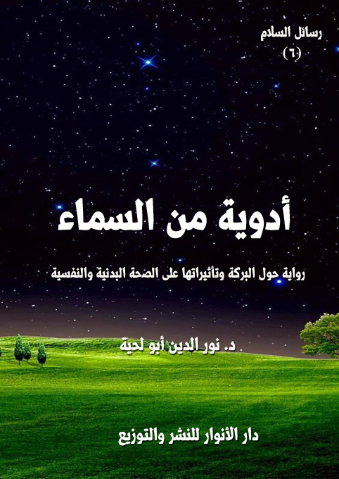

الكتاب: أدوية من السماء
المؤلف: أ.د. نور الدين أبو لحية
الناشر: دار الأنوار للنشر والتوزيع
الطبعة: الثانية، 1437 هـ
عدد الصفحات: 416
ISBN: 978-3-330-80521-7
لمطالعة الكتاب من تطبيق مؤلفاتي المجاني وهو أحسن وأيسر: هنا

التعريف بالكتاب
أحداث هذه الرواية تدور حول رحلة يأخذ معلم السلام فيها تلميذه إلى بلاد السلام، وإلى محل يشبه المسجد الأقصى المبارك، وهناك يلتقي معلم البركة، وبالمتوسمين الذين يدلونه على كيفية الاستفادة من البركات، وكيفية التعامل معها.. وهو يمر في رحلته تلك بأربعة أقسام:
القسم الأول: مرصد البركة.. وهو المحل الذي يبحث فيه على مصادر البركة ووسائطها ومحالها ومواقيتها.
القسم الثاني: منازل البركة.. وهي اللطائف التي يتكون منها بنيان الإنسان، وفيها يعرف حقيقته وعلاقة البركات بها، لأن بركات الله تحتاج إلى محال تنزل فيها، ومنازل تحل بها.
القسم الثالث: مخزن البركة.. وهو المحل الذي يعاين فيه ما ورد في النصوص المقدسة من أغذية ورد التنصيص على ما أودع فيها من بركات.
القسم الرابع: مشافي البركة.. وهو المحل الذي يعاين فيه ما ورد في النصوص المقدسة من أدوية ورد التنصيص على ما أودع فيها من بركات.
وقد حاور تلميذ السلام في هذه الرواية كل ما مر به من أغذية وأدوية وغيرها، وتبين له من خلال الحوار أن أسباب بركتها هو تلك الأحوال الروحانية العالية التي تعيشها تلك الموجودات التي بارك الله فيها.. فقيمتها ليس في مكوناتها المادية، وإنما في أحوالها الروحية.
أدوية من السماء (8 )
كتبت هذه الرواية في فترة كانت جميع وسائل الإعلام منشغلة بالطب البديل، ونظام الماكروبيوتيك وغيره من الأنظمة الغذائية والعلاجية الوافدة من الصين أو اليابان أو الهند أو غيرها من البلاد.
وقد انتشر بين عامة الناس في ذلك الحين الاهتمام بالعناصر المكونة لكل غذاء فهم يسألون عن مكوناته من الفيتامينات والمعادن والبروتينات ونحوها..
وقد صادف أن أهدي إلي حينها ماء زمزم جاء به بعض الحجاج.. وقد كنت فرحا به، وبالبركات التي يحملها.. لكن بعض المتدينين المتأثرين بالموجة الجديدة راح يسخر مني، ويقول: إن المكونات الكيميائية لماء زمزم لا تختلف عن مكونات سائر المياه..
قلت: ولكنه يحوي فوق ذلك عنصرا خطيرا، وهو البركة، فهو ماء وردت النصوص في فضله وبركته، وأنه لما شرب له..
ضحك صاحبي، وهو يقول: ألا تزال تؤمن بالبركة.. إنها هي التي نشرت الشرك في الأمة.. وهي التي جعلتنا في ذيل قافلة الأمم.. وهي التي..؟
كان هذا موقف فرد رأيته.. لكني رأيت بعد ذلك الكثير من أمثاله.. بل رأيت علماء كبار يزعمون أن ما ذكره رسول الله صلى الله عليه وآله وسلم من بركات الأغذية والأدوية هو مجرد اجتهاد، وقد يكون مخطئا فيه..
بل إن بعضهم تجرأ على ما ورد في القرآن الكريم نفسه من اعتبار العسل شفاء، فراح يعتبر ذلك مجرد موافقة لما عرفه العرب من أنواع التداوي.
كل هذه الحوادث كانت السبب الأكبر لتأليفي لهذه الرواية، والتي من خلالها حاولت أن أبين قيمة البركة وأهميتها وأن أي مؤمن بالقرآن الكريم والسنة المطهرة.. بل أي
أدوية من السماء (9 )
مؤمن بأي دين من الأديان يقول بها، ويذعن لها.
وقد تعجبت من الذين يؤمنون بتأثير الين واليانغ.. وتأثير الفيتامينات والمعادن وغيرها.. كيف لا يؤمنون بتأثير البركة.. وهي فضل الله الواسع الذي يضعه حيث يشاء ومتى يشاء وكيف يشاء.
ولذلك حاولت في هذه الرواية أن أستنبط ما أمكن من قوانين تأثير البركة، بحيث تصبح علاجا يمكن استعماله والاستفادة منه، وقد سميت النظام المقيد بهذه القوانين من باب المشاكلة [المباركبيوتيك]
فالمباركبيوتيك هو نظام الحياة المستند إلى البحث عن بركات الله المودعة في الكون، لينهل منها المؤمن، وينال ما فيها من خير وفضل ونعمة لا باعتبار مكوناتها المادية، وإنما باعتبار صلتها بصاحب كل فضل وجود في هذا الكون.
وأحداث الرواية تدور حول رحلة يأخذ معلم السلام فيها تلميذه إلى بلاد السلام، وإلى محل يشبه المسجد الأقصى المبارك، وهناك يلتقي معلم البركة، وبالمتوسمين الذين يدلونه على كيفية الاستفادة من البركات، وكيفية التعامل معها.
وهو يمر في رحلته تلك بأربعة أقسام:
القسم الأول: مرصد البركة.. وهو المحل الذي يبحث فيه على مصادر البركة ووسائطها ومحالها ومواقيتها.
القسم الثاني: منازل البركة.. وهي اللطائف التي يتكون منها بنيان الإنسان، وفيها يعرف حقيقته وعلاقة البركات بها، لأن بركات الله تحتاج إلى محال تنزل فيها، ومنازل تحل بها.
القسم الثالث: مخزن البركة.. وهو المحل الذي يعاين فيه ما ورد في النصوص المقدسة من أغذية ورد التنصيص على ما أودع فيها من بركات.
أدوية من السماء (10 )
القسم الرابع: مشافي البركة.. وهو المحل الذي يعاين فيه ما ورد في النصوص المقدسة من أدوية ورد التنصيص على ما أودع فيها من بركات.
وقد حاور تلميذ السلام في هذه الرواية كل ما مر به من أغذية وأدوية وغيرها، وتبين له من خلال الحوار أن أسباب بركتها هو تلك الأحوال الروحانية العالية التي تعيشها تلك الموجودات التي بارك الله فيها.. فقيمتها ليس في مكوناتها المادية، وإنما في أحوالها الروحية.
ولذلك فإن هذه الرواية لا تتعلق فقط بالنواحي الصحية، وإنما تتعلق قبل ذلك بالنواحي الروحية والعرفانية.. حتى نتناول الأشياء من الله لننال ما فيها من فضل وبركة.
أدوية من السماء (11 )
عند عودتي من [حصون العافية] شعرت برحمة الله سبحانه وتعالى، وهي تشمل أجساد عباده وأرواحهم.. بل رأيتها وهي تمد يدها إليهم ترعاهم وتحوطهم بكنفها.. وقد تعجبت من ذلك الكم الكبير من النصوص المقدسة التي لا تخدم الروح فقط، بل تخدم الجسد أيضا، وتخدم معه كل حاجاته ومتطلباته التي يتصور الغارقون في أوحال الدنيا أن الدين ينفر منها، وأن الاتصال بالله يحجب عنها.
وفي غمرة تلك السعادة والسلام الذي استشعرته خطرت على بالي خاطرة، وهي أن تلك الرعاية الإلهية التي وضعت قوانين حفظ الطين، ألا يمكن أن تكون قد وضعت كذلك قوانين علاجه إذا ما طرأ عليه أي طارئ، أو حصل له أي مكروه.
وبمجرد أن خطرت هذه الخاطرة على بالي رحت أسأل نفسي: هل يمكن أن يكون في الطبيبعة التي خلقها ا لله لنا ما يغنينا عن كثير من تلك الأدوية المسمومة التي لا تداوي داء إلا بعد أن تضع بدله أدواء؟
وهل يمكن أن تأتي الإشارة إلى هذا النوع من الأدوية في النصوص المقدسة، مثلما وردت الإشارة إلى الطب الوقائي؟
وهل يمكن أن تستفيد البشرية ـ إن تخلصت من كبريائها من تلك النصوص ـ فتفعلها في حياتها، وتبني عليها منهجا جديدا في التداوي ينطلق من السماء قبل أن ينطلق من الأرض؟
بمجرد أن خطر على بالي هذه الأسئلة وغيرها، رأيت معلم السلام يأخذ بيدي، وهو يقول: هيا بنا إلى الأرض المباركة، حيث تتنزل أدوية السماء.
قلت: الأرض المباركة.. أدوية السماء.. ما تعني؟
قال: سر.. فبالله إن تسر ترى العجائب.
سرت معه فترة من الزمن في عوالم مجهولة إلى أن بدت لنا قبة تشبه قبة المسجد الأقصى في
أدوية من السماء (12 )
جمالها وسكينتها وروحانيتها، وقد كتب فوقها بحروف من نور قوله تعالى على لسان المسيح عليه السلام: {وَجَعَلَنِي مُبَارَكاً أَيْنَ مَا كُنْتُ} (مريم:31)
قلت للمعلم: أترانا الآن سائران نحو المسيح عليه السلام.. إني أرى المسجد الأقصى.. وأرى كلامه مجتمعان هنا.. أنزل المسيح عليه السلام؟.. كيف؟.. ولم يخرج الدجال بعد؟
قال: ومن قال بأن الدجال لم يخرج.. إن آلاف الدجاجلة الصغار يظهرون كل يوم.. ألم تسمع قوله صلى الله عليه وآله وسلم: (لا تقوم الساعة حتى يقتتل فئتان عظيمتان دعواهما واحدة، ولا تقوم الساعة حتى يبعث دجالون كذابون قريبا من ثلاثين، كلهم يزعم أنه رسول الله) (1)
قلت: بلى.. الدجالون كثيرون.. ولكن المسيح واحد.
قال: المسيح عليه السلام واحد.. ولكن أنصاره الذين يكونون معه أو يسبقونه كثيرون، ألم تسمع قوله صلى الله عليه وآله وسلم: (لا تزال طائفة من أمتي يقاتلون على الحق ظاهرين على من ناواهم حتى يقاتل آخرهم الدجال) (2)
قلت: بلى.. ولكن هل سنزور أحد هؤلاء الأنصار المباركين.
قال: لا.. لن نزور أشخاصا، بل سنزور أدوية مباركة.. بورك فيها كما بورك في المسيح.. وهي الأدوية التي إذا رأتها الدجاجلة ذابت واندثرت.
قلت: أي دجاجلة؟
قال: الأدوية الكثيرة التي تفوح بالدجل.. والتي لا يقصد منها غير ملأ الجيوب، وتدمير الصحة.
قلت: أدوية قومي.
قال: أدوية الصراع.. وهي أدوية قومك وغير قومك.
__________
(1) أحمد والبخاري وأبو داود والترمذي.
(2) أحمد وأبو داود والحاكم.
أدوية من السماء (13 )
قلت: ولم كانت دجلا؟
قال: لأنها تقوم على الصراع.. فتصارع الجسم، وتصارع الصحة، فلا تبني حتى تهدم.
قلت: وأدوية البركة.
قال: هي الإكسير الذي لا يعرف إلا العافية.. والنعمة التي لا تعرف وجه النقمة.. والمنحة التي لا تشم منها روائح المحنة.
قلت: فلم كانت مباركة؟
قال: الله تعالى برحمته بارك فيها.. ألا تعلم سر البركة؟
قلت: العجائز ـ عندنا في العادة ـ هم الذين يتعلقون بالبركة..
قال: ولكنهم يخطئون سبيلها.
قلت: فما البركة؟
قال: ما فضل الصلاة في الحرم على فضلها في سائر المساجد؟
قلت: ورد في النصوص أن الصلاة فيه تعدل مائة ألف فيما سواه، فقد قال صلى الله عليه وآله وسلم: (صلاة الرجل في بيته بصلاة وصلاته في مسجد القبائل بخمس وعشرين صلاة، وصلاته في المسجد الذي يجمع (1) فيه بخمس مائة صلاة، وصلاته في المسجد الأقصى بخمسين ألف صلاة، وصلاته في مسجدي هذا بخمسين ألف صلاة، وصلاته في المسجد الحرام بمائة ألف صلاة) (2)
قال: فهذا من البركة.. فصلاة واحدة تعدل مائة ألف صلاة.
قلت: فكيف تطبق هذا على الإكسير المبارك الذي يستعمله أهل هذه الديار؟
قال: إن ما يستعمله أهل هذه الديار من الأدوية لا يمكن مقارنة ما فيه من البركات بأي
__________
(1) أي يصلون صلاة الجمعة. النهاية [1/ 297]
(2) ابن ماجه، وقال في الزوائد: إسناده ضعيف... وقد ورد في أحاديث أخرى ما يؤيد هذا، كما في قوله (: (صلاة في مسجدي هذا أفضل من ألف صلاة فيما سواه من المساجد إلا المسجد الحرام، وصلاة في المسجد الحرام أفضل من صلاة في مسجدي هذا بمائة صلاة) رواه أحمد وابن حبان.
أدوية من السماء (14 )
دواء آخر.
قلت: كيف تقول هذا ـ يا معلم ـ ونحن في عصر الدواء؟
قال: أنتم في عصر الداء والدواء.. ولا يلد الداء مثل الدواء الممحوق البركة.
قلت: أفنستغني عن الدواء بالبركة؟
قال: البركة هي أم الأدوية، كما أن مكة هي أم القرى، فكيف تقارنها بالدواء؟
قلت: أنا لا أعرف البركة بعد.. فإني لا أزال على دين قومي.. ولكني أتعجب من هذه المبالغة في شأن البركة..
قال: لا.. بل أنا مقصر في التعبير عنها، أتعلم ما أمر الله تعالى نوحا عليه السلام أن يقوله عندما نزل إلى الأرض بعد الطوفان؟
قلت: بلى.. فقد قص القرآن الكريم علينا ذلك، فقال تعالى: {وقل رَبِّ أَنْزِلْنِي مُنْزَلاً مُبَارَكاً وَأَنْتَ خَيْرُ الْمُنْزِلِينَ} (المؤمنون:29)
قال: لو ترك الأمر لعقلك وعقول قومك: ما هي صفة الأرض التي كنت ستطلب النزول فيها؟
قلت: سأضع وصفة طويلة بمطالبي.
قال: مثل ماذا؟
قلت: ذلك يطول.. ولكني سأطلب أرضا جيدة المناخ، طيبة الثمار، حسنة التضاريس، ليس فيها الوحوش الكاسرة، ولا الأفاعي السامة.
قال: ولو ظللت طول اليوم تعد مواصفات الأرض التي تحب أن تنزل فيها، فلن يعدل كل ما تذكره كلمة: (مباركا) التي ورد ذكرها في طلب نوح عليه السلام.
قلت: لم؟
قال: لأنها تحوي كل ما ذكرت، وغير ما ذكرت.. لأن البركة من الله.. والله يعلم ما لا
أدوية من السماء (15 )
نعلمه.
قلت: ولكني لم أقصر فيما ذكرت، بل قد يكفيني ما ذكرت.
قال: ولكن هناك أراض كثيرة بالوصف الذي ذكرته.. ولكنها أرض موبوءة بالزلازل أو البراكين أو الحروب أو قلة الرزق..
قلت: ولكن..
قال: سأضرب لك مثالا على البركة في الأرض.. أرأيت لو سرت إلى مكة المكرمة قبل أن تنزل فيها هاجر ـ عليها السلام ـ أتراك تطلب القرار بها؟
قلت: لا.. فقد كانت أرضا خاوية خالية.. هي أقرب للموت منها إلى الحياة.. ألم يقل الله تعالى فيها على لسان خليله عليه السلام: {رَبَّنَا إِنِّي أَسْكَنْتُ مِنْ ذُرِّيَّتِي بِوَادٍ غَيْرِ ذِي زَرْعٍ} (ابراهيم:: 37)
قال: ولكن البركة لما نزلت عليها تحولت منبعا من منابع الرزق، ومسكنا من مساكن القلوب.. ولم يصب أهلها أي جوع أو ظمأ منذ تنزلت البركات، قال الخليل عليه السلام: {رَبَّنَا إِنِّي أَسْكَنْتُ مِنْ ذُرِّيَّتِي بِوَادٍ غَيْرِ ذِي زَرْعٍ عِنْدَ بَيْتِكَ الْمُحَرَّمِ رَبَّنَا لِيُقِيمُوا الصَّلاةَ فَاجْعَلْ أَفْئِدَةً مِنَ النَّاسِ تَهْوِي إِلَيْهِمْ وَارْزُقْهُمْ مِنَ الثَّمَرَاتِ لَعَلَّهُمْ يَشْكُرُونَ} (ابراهيم:37)
قلت: ولكن هناك فرق ـ يا معلم ـ بين الدواء والأرض.. الأرض للجميع.. أما الدواء فللأفراد.. فلذلك لا يمكن القياس في هذا الباب.
قال: أنا لا أقيس.. فأنت تعلم بغضي للقياس.. ولكني أستبصر.. وأطبق سنن الله.. ولست مبتدعا في ذلك، فقد كان من هدي الصالحين البحث في مواطن البركات واستثمارها في الشفاء وغيره، ألم تعرف وصفة الإمام علي؟
قلت: لا أعرفها.. فهل روي عنه شيء من الطب؟
قال: أجل.. كما روي عن غيره من الأئمة.. وقد رويت عنه وصفة قد تكون أنجع من كثير من الصناديق التي تملؤونها بالسموم.
أدوية من السماء (16 )
قلت: فما قال؟
قال: روي عنه أنه قال: (إذا أراد أحدكم الشفاء فليكتب آية من كتاب اللّه في صحفة، وليغسلها بماء السماء، وليأخذ من امرأته درهماً عن طيب نفس منها، فليشتر به عسلاً فليشربه كذلك فإنه شفاء، من وجوه)
قلت: أي وجوه يقصدها؟
قال: يقصد الآيات التي ذكر فيها الشفاء والبركة، وهي قوله تعالى: {وَنُنَزِّلُ مِنَ الْقُرْآنِ مَا هُوَ شِفَاءٌ وَرَحْمَةٌ لِلْمُؤْمِنِينَ} (الاسراء:82)، وقوله تعالى: {وَنَزَّلْنَا مِنَ السَّمَاءِ مَاءً مُبَارَكاً} (قّ:9)، وقوله تعالى: {فَإِنْ طِبْنَ لَكُمْ عَنْ شَيْءٍ مِنْهُ نَفْساً فَكُلُوهُ هَنِيئاً مَرِيئاً} (النساء:4)، وقوله في العسل: {فِيهِ شِفَاءٌ لِلنَّاس} (النحل:69)
قلت: أهذا اجتهاد اجتهده، أم تجربة جربها؟
قال: يمكن أن يكون كل ذلك، ويمكن أن يكون غيره..
قلت: ولكن قومي يسارعون إلى إنكار مثل هذا..
قال: فلينكروا.. فلا حرج عليهم أن ينكروا.. ولكنهم في إنكارهم مثل من غرق في بحر، فمد إليه منقذ خبير يده، فقال في نفسه: إن يده أضعف من أن تحملني أو تنقذني، فبقي كذلك إلى أن التهمه حوت البحر وأمواجه.
قلت: قد يكون ما تقول صحيحا.. ولكن الغريق الذي تتحدث عنه يمد يده إلى أدوية كثيرة اخترعها قومي..
قال: لا حرج عليه في ذلك.. ولكن الحرج على إنكاره على غيره إن شفاه الله بسبب من الأسباب عجز عقله المحدود عن فهمه.
قلت: ولكن هل نكتفي بما يهديه إليه تدبرنا واستبصارنا؟
قال: لا.. لا بد أن نراجع الخبراء.. فقد أمرنا الله بالرجوع إليهم.
أدوية من السماء (17 )
قلت: فكيف يتم العلاج في هذه الديار؟
قال: العلاج في هذه الديار ينقسم إلى أربعة أقسام.
قلت: فما القسم الأول منهما؟
قال: مرصد البركة.
قلت: وهل يمكن رصد البركة حتى ينصب لها مرصدا؟
قال: أجل.. فهناك المتوسمون الذي علمهم الله أسرار البركات، فراحوا ينشرونها بين الناس.
قلت: فما القسم الثاني؟
قال: منازل البركة.
قلت: فما منازل البركة؟
قال: هي المحال التي تنزل فيها البركة، فليس الشأن في وجود البركة ولكن الشأن في وجود المستقبل لها.
قلت: فما القسم الثالث؟
قال: مخزن البركة.
قلت: وما مخزن البركة؟
قال: المخزن الذي تجبى إليه الثمرات المباركة ليأكلها المرضى، ويستشفوا بها.
قلت: فما القسم الرابع؟
قال: صيدلية البركة.. وهو قسم يشبه مخابركم إلا بفارق بسيط.
قلت: ما هو؟
قال: ليس فيه الفئران البيضاء.
قلت: أفيه الفئران السوداء؟
أدوية من السماء (18 )
قال: ليس فيه أي فئران.
قلت: أيخافون عليها من القطط؟
قال: لا.. ولكن فئرانهم هي البشر أنفسهم.
قلت: لم.. فلا يجوز إجراء التجارب على البشر.. أم أن هؤلاء يضحون بأنفسهم.
قال: لا.. لا تخف.. فالدواء المبارك إن لم يصبك بشفائه أصابك ببركته.
قلت: فهل سنزور هذه الأقسام؟
قال: لا مناص لنا من زيارتها.
192021
في هذا الجزء من هذه الرسالة نرحل ـ مع معلم السلام ـ إلى قسم العلاج بأدوية البركة، لنعلم صدق قوله صلى الله عليه وآله وسلم: (إن الله لم يُنزل داءً إلا أنزل له شفاء، علمه مَن علمه وجهله مَن جهله)
وهذه الأدوية التي نراها في هذا القسم لا نعرضها ليعالج بها المرضى فقط، أو لنعرف بها موقف أهل السلام منها، وإنما نعرضها ليمتلئ المرضى بالأمل الذي يملأ أنينهم بالابتسامة، فلا يقتل المريض مثل اليأس، ولا يشرح صدره مثل الأمل.
أدوية من السماء (22 )
سرنا إلى القسم الأول من أقسام العلاج المبارك، قال لي المعلم ونحن سائران: سنذهب إلى مرصد البركة حيث نلتقي معلم البركة، فقد فتح الله عليه من الفتوح في هذا الباب ما يمكن أن يسد كل ثغرة، ويملأ كل عوز.
قلت: فهل استخلص معلم البركة من أدوية الله دواء جامعا يكتفي به الناس عن كل دواء؟
قال: لا.. هو لا يعرف الهندسة الوراثية، ولا فنون التغيير والتبديل.
قلت: فما يعرف إذن من علوم الدواء إذا لم يعرف هذا؟
قال: هيا بنا إليه.. وسيخبرك بما يعلم.
ما سرنا قليلا حتى رأينا مرصد البركة، وقد كتب على بابه قوله صلى الله عليه وآله وسلم: (هلم إلى الغذاء المبارك) (1)، فرأيت جمعا غفيرا من الناس من الأصحاء والمرضى، وقد عجبت لكثرتهم مع عدم تزاحمهم، فقلت للمعلم البركة: ما هذا؟ وأي ميزانية تكفي لتغذية كل هؤلاء؟
قال: هذا مرصد البركة، فكيف تسأل عن الميزانية؟
قلت: وهل يأكل أهل مركز البركة الهواء؟.. لا بد لهم من غذاء.. ولابد للغذاء من مال.
قال: ولكن البركة تحول القليل كثيرا.. والحقير عظيما.. ألم تسمع حديث جابر؟
قلت: حديث الخندق، وتكثير الطعام.
قال: أجل.. فاروه للغافلين ليعتبروا.
قلت: لقد حدث جابر قال: لما حفر الخندق رأيت بالنبي صلى الله عليه وآله وسلم خمصاً فانكفأت إلى امرأتي
__________
(1) الحديث رواه أبو داود والنسائي وابن خزيمة وابن حبان في صحيحيهما، ونص الحديث: عن العرباض بن سارية قال: دعاني رسول الله (إلى السحور في رمضان فقال: (هلم إلى الغذاء المبارك)
أدوية من السماء (23 )
فقلت: هل عندك شيء؟ فإني رأيت برَسُول اللَّهِ صلى الله عليه وآله وسلم خمصاً شديداً، فأخرجت إلي جراباً فيه صاع من شعير، ولنا بهيمة داجن فذبحتها، وطحنت ففرغت إلى فراغي وقطعتها في برمتها، ثم وليت إلى رَسُول اللَّهِ صلى الله عليه وآله وسلم، فقالت: لا تفضحني برَسُول اللَّهِ صلى الله عليه وآله وسلم ومن معه، فجئته فساررته فقلت: يا رَسُول اللَّهِ ذبحنا بهيمة لنا، وطحنت صاعاً من شعير فتعال أنت ونفر معك، فصاح النبي صلى الله عليه وآله وسلم فقال: (يا أهل الخندق، إن جابراً قد صنع سوراً فحيهلاً بكم)، فقال النبي صلى الله عليه وآله وسلم: (لا تنزلن برمتكم ولا تخبزن عجينكم حتى أجيء)، فجئت وجاء النبي صلى الله عليه وآله وسلم يقدم الناس حتى جئت امرأتي، فقالت: بك وبك! فقلت: قد فعلت الذي قلت. فأخرجت عجيننا فبسق فيه وبارك، ثم عمد إلى برمتنا فبصق فيه وبارك ثم قال: (ادعي خابزة فلتخبز معك، واقدحي من برمتكم ولا تنزلوها)، وهم ألف، فأقسم بالله لأكلوا حتى تركوه وانحرفوا وإن برمتنا لتغط كما هي، وإن عجيننا ليخبز كما هو)
قال: فقد أطعم رسول الله صلى الله عليه وآله وسلم جيشا من الناس بطعام جماعة معدودة.
قلت: ولكنه رسول الله صلى الله عليه وآله وسلم.
قال: وقد كثر الطعام ببركته.. فالبركة هي سر التكثير.. وهي عامة لا تتعلق بزمان أو بأفراد.
قلت: تقصد أن هذا يمكن تعميمه.
قال: لا بصورته ولباسه.. ولكن بحقيقته وروحه.. ألم تسمع ما روي في الحديث أن أصحاب رَسُول اللَّهِ صلى الله عليه وآله وسلم قالوا: يا رَسُول اللَّهِ إنا نأكل ولا نشبع؟ قال: (فلعلكم تفترقون)، قالوا: نعم، فقال صلى الله عليه وآله وسلم: (فاجتمعوا على طعامكم، واذكروا اسم اللَّه يبارك لكم فيه) (1)
قلت: أهذا الحديث يدل على سبيل تحصيل البركة؟
قال: هذا يدل على سبيل من سبلها.
__________
(1) أبو داود.
أدوية من السماء (24 )
252627
بينما نحن نسير في القاعة إذ رأينا رجلا قد امتلأ وقارا، يجمع بين الروح والجسد، والحس والمعنى، والنور والنار، والسكينة والثورة، والسلام والصراع، وقد جلس بين يديه رجل لا يكاد يختلف عني، ولولا أني تلمست بيدي أعضائي لخلتني ذلك الرجل، فسألت المعلم عنهما، فقال: أما الذي يجمع السكينة والثورة، فهو معلم البركة، وأما الذي بجانبه، فتلميذ من تلاميذ السلام امتلأ بالغيب، فأرد أن يمحو به الشهادة.
قلت: هو يشبهني كثيرا.
قال: قد يكون مظهرا من مظاهرك، أو صورة من صورك، أو تجل من تجلياتك.
قلت: ولكني بجانبك.
قال: أنت بجانبي، وهو يمثلك.
قلت: كيف ذلك؟
قال: لن تعرف ذلك الآن.. فلا تعجل.
اقتربنا منهما فسمعت الذي يشبهني يقول: لا أكتمك ـ يا معلم البركة ـ أني بعد ما امتلأت قناعة بتأثير أدوية السماء في الشفاء، خطر على بالي تأسيس مستشفى روحي عظيم يبز كل المستشفيات، أو تغلق معه كل المستشفيات.. لقد قلت لنفسي: لماذا نعالج أدواء الجسد بالجسد، ولا نعالجها بالروح، فالروح أعظم من الجسد، وطاقة الروح أعظم من طاقة الجسد.. فكيف يستطيع الجسد، وهو ضعيف منهك أن يرمم بعضه بعضا؟ لا بد له من طاقة أكبر، وليس هناك من طاقة إلا طاقة الروح..
قال: ألم تسمع قوله تعالى: {عَالِمُ الْغَيْبِ وَالشَّهَادَةِ الْكَبِيرُ الْمُتَعَالِ} (الرعد:9)
قال الذي يشبهني: ماذا تقصد؟ وما الذي تريد؟
قال: الغيب لا يغني عن الشهادة، والشهادة لا تغني عن الغيب، ألا ترى اقترانهما في القرآن
أدوية من السماء (28 )
الكريم؟
قال الذي يشبهني: أجل فالغيب قرين الشهادة، والله يعلم بهما جميعا.
قال: وربهما جميعا.. فاعبد الله باحترامهما جميعا.
قال الذي يشبهني: وكيف؟
قال: أن تعطي لكل منهما حقه، للغيب حقه وللشهادة حقها.
قال الذي يشبهني: ولكن الشهادة أحقر من الغيب، وأين يجدي علاج الأطباء مع علاج طبيب الأطباء؟
قال: لا تحقر شيئا مما خلق الله، فإن الله ما احتقره حين خلقه، وقد كان طبيب الأطباء يغترف من بحار الغيب والشهادة، ويداوي بأدوية الغيب والشهادة.
وقد قال تعالى لأيوب عليه السلام بعد أن طرق أبواب الغيب: {ارْكُضْ بِرِجْلِكَ هَذَا مُغْتَسَلٌ بَارِدٌ وَشَرَابٌ} (صّ:42)، فدعاه إلى اللجوء إلى صيدلية عالم الشهادة.
وقال تعالى عن يونس عليه السلام: {وَأَنْبَتْنَا عَلَيْهِ شَجَرَةً مِنْ يَقْطِينٍ} (الصافات:146)، ألا تعلم لم أنبت الله تعالى على يونس عليه السلام بعد خروجه من بطن الحوت شجرة اليقطين؟
قال الذي يشبهني: أجل.. ففي كل ما ذكرته أدوية كثيرة من عالم الشهادة.
قال: فها قد أقررت إذن بتأثير عالم الشهادة.. ألا تعلم أي عبودية تمارس عندما تتناول الدواء من عالم الشهادة؟
قال الذي يشبهني: وهل في تناول الدواء عبودية؟
قال: المؤمن لا يعبد إلا الله، ولا يتحرك إلا بما تتطلبه عبودية الله، فهذا الدواء صنعة الحكيم، فإن تناولته من يد الله، وعرفت الله في تناوله وشكرته على توفيره، كما تشكر الطبيب الذي عالجك مارست بذلك عبودية الدواء.
قال الذي يشبهني: لست أدري، ما علاقة الشريعة بالدواء، فالدواء دنيا، والشريعة دين،
أدوية من السماء (29 )
وقد قال صلى الله عليه وآله وسلم: (إذا كان شيء من أمر دنياكم فأنتم أعلم به، وإذا كان شيء من أمر دينكم فإلي) (1)
قال: الدنيا لا تكون إلا بالدين، ولا يحفظ الدنيا إلا الدين.
قال الذي يشبهني: فكيف تجمع بين الدنيا والدين.
قال: بتطعيم الدنيا ببركات الدين.
ثم انصرف الرجل الذي يشبهني، وقد وعى ما قال له.
303132
اقتربت منه، وقلت: إني أراك سكينة تحمل رياح ثورة، ونسيما يطوي إعصارا، فأيهما أنت، فإني لا أكاد أميز السلام فيك عن الصراع، والسكينة عن الثورة؟
قال: أنا النقطة التي تحت الباء.
قلت: ذاك معلمي.. معلم السلام.. ألا تعرفه؟
قال: وهو معلمي الذي تخرجت على يديه في مدرسة السلام.. وكل من تخرج على يديه ينال هذه الشهادة، ويوصف بهذا الوصف.
قلت: أكل من يتخرج من مدرسة السلام يصبح نقطة تحت باء؟
قال: وهل هناك ما هو أشرف منها.. أليست العبودية لله أعلى المراتب؟
قلت: بلى..
قال: فلن تتحقق بالعبودية حتى تتحقق بالسلام.
قلت: ولكني أرى امتزاج الصراع فيك بالسلام، والسكينة بالثورة، فأيهما أنت؟
قال: أنا السلام الذي يتحرك كتحرك النسيم العليل لتمتد الحياة بحركته.. أو يتحرك كتحرك الأمراج العاتية ليملأ الأرض بالبخار المبارك.
قلت: دعنا من كل هذا.. وخبرني.. لقد ذكر لي المعلم بأنك تصف دواء جامعا شافيا كافيا،
__________
(1) مسلم.
أدوية من السماء (33 )
فما اسم هذا الدواء؟
قال: هو ليس دواء فقط.. بل هو حياة يشكل الدواء أحد جوانبها.
قلت: وهل لهذا الدوء أو الحياة علاقة بالشفاء؟
قال: أجل.. شفاء كل العلل الحسية والمعنوية.. النفسية والجسدية.. الفردية والاجتماعية.
قلت: أهذا الدواء يحوي كل ذلك؟
قال: من تداوى به عوفيت نفسه، وعوفي جسده، وصار سلاما على الأرض.
قلت: فما اسمه؟
قال: نحن نسميه: (نظام الحياة المباركة)
قلت: تقصد: (مباركوبيوتيك)؟
قال: بعضهم يسميه بهذا الاسم ليشاكل به ما تعرفونه من الماكروبيوتيك.
قلت: لم؟ وما الفرق بينهما؟
قال: فرق عظيم.. فالماكروبيوتيك نظر إلى الغذاء.. وإلى يانه ويانغه أما نحن فننظر إلى بركته.. فالبركة هي سر الشفاء وسر العافية.. بل هي سر كل خير.
قلت: ولكن البركة شيء معنوي.
قال: ولكنه مؤثر.. أتريد تشبيها يشرح لك ذلك؟
قلت: ذلك ما يرضي بصيرتي، ويقنعني بما تقول.
قال: إن مثال البركة في الأشياء كمثال الروح في الجسد.. فهل يمكن للجسد أن يفعل شيئا بدون الروح؟
قلت: طبعا.. الجسد بلا روح كالتراب والحجارة لا يصلح له إلا الدفن.
قال: فأنتم كذلك تجعلون بطونكم مقابر للغذاء بما تسلبونه من بركته، فلذلك يدخل ميتا، ويخرج ميتا، وقد يصيبكم ببعض سموم الموتى.
أدوية من السماء (34 )
قلت: وهل الطعام كائن حي حتى يوصف بالموت؟
قال: هو كائن حي بالبركة.. وهو جماد بنزع البركة.
قلت: فلنفرض أنه حي.. فالطعام طعام.. وهو يمر على جميع الأجهزة، ويصبح دما، وتتغذى منه الخلايا سواء قلنا بحياته أو بموته.. ببركته أو محق بركته.
قال: أرأيت لو أن قائدا من القواد رأى عدوا يريد أن يهاجم حصنه، فأرسل مجموعة من الجنود الموتى، ووضعهم رغما عنهم في مواجهة العدو، أيمكن أن يفعلوا شيئا؟
قلت: لا.. فهم موتى.. فلن يردعوا عدوا، ولن يقروا عين صديق.. ولكن لا أظن أن هناك من يفعل هذا.
قال: أنتم تفعلونه.. الغذاء المبارك هو الغذاء الذي نفخ فيه من روح البركة ما أمده بالحياة.. فلذلك إن دخل الجسم دخل حيا.. فإن اخترق الخلايا ملأها بالبركة التي تقضي على كل داء وتنزل كل عافية.
قلت: فأنت ترى أن سر التأثير لا يعود إلى المكونات، بل إلى البركة التي تكون فيها.
قال: أجل.. فلكل شيء خلقه الله تعالى من حيث أصله في منتهى الكمال، ولكن محق البركة فيه يجعله سليبا ميتا ليس له أي أثر.
قلت: هذه دعاوى، فما برهنانها؟
قال: ألم تقرأ ما ورد في قصة الخليل عليه السلام عند زيارته لابنه إسماعيل.
قلت: هي قصة طويلة، فاذكر لي منها موضع الاستشهاد.
قال: لقد ورد فيها قوله صلى الله عليه وآله وسلم: (فلبث عنهم إبراهيم ما شاء اللَّه ثم أتاهم بعد فلم يجده فدخل على امرأته فسأل عنه، قالت خرج يبتغي لنا، قال: كيف أنتم؟ وسألها عن عيشهم وهيئتهم، فقالت: نحن بخير وسعة وأثنت على اللَّه تعالى، فقال: ما طعامكم؟ قالت اللحم، قال: فما شرابكم؟ قالت الماء، قال: اللهم بارك لهم في اللحم والماء، قال النبي صلى الله عليه وآله وسلم: (ولم يكن لهم يومئذ
أدوية من السماء (35 )
حب ولو كان لهم دعا لهم فيه)، قال: (فهما لا يخلو عليهما أحد بغير مكة إلا لم يوافقاه)
قلت: فما موضع الشاهد من هذه القصة؟
قال: لقد أخبر صلى الله عليه وآله وسلم عن تأثير الدعاء بالبركة في هذا الغذاء، ولذلك صار كافيا موافقا نافعا.
قلت: ومن لنا بالخليل عليه السلام حتى يدعو لنا بمثل هذا؟
قال: لقد جعل الله تعالى للبركة أسبابا وشروطا، ونحن في هذا المستشفى نستعملها علاجا لكل الأدواء.. فنطعمهم الغذاء والدواء مطعما بالبركة التي تملؤه بالحياة، فتجعله يسري في الجسم كما يسري الجندي النشيط يقتل كل داء، ويصارع كل بلاء.
قلت: أنا لم أسلم لك بعد ما تذكره من نفخ الحياة في الطعام بسبب البركة.. فالبركة شيء معنوي.
قال: سأذكر لك ما قد يصح الاستئناس به.. لقد روى ابن مسعود قال: كنا ـ أصحاب محمد صلى الله عليه وآله وسلم ـ نعد الآيات بركة، وأنتم تعدونها تخويفا! بينما نحن مع رسول الله صلى الله عليه وآله وسلم وليس معنا ماء، فقال لنا رسول الله صلى الله عليه وآله وسلم: (اطلبوا من معه فضل ماء)، فأتى بماء، فصبه في إناء ثم وضع كفه فيه، فجعل الماء يخرج من بين أصابعه، ثم قال: (حي على الطهور المبارك، والبركة من الله)، فشربنا، قال ابن مسعود: (لقد كنا نسمع تسبيح الطعام وهو يؤكل) (1)
قلت: فما موضع الشاهد من هذا النص؟
قال: فيه مواضع من الاستشهاد.. ولكن سماع الصحابة المنتجبين تسبيح الطعام، وهو يؤكل فيه من الدلاله ما فيه.. فالتسبيح سر الحياة وعلامتها وقوتها.
قلت: التسبيح عام لكل شيء، فكل شيء يسبح باسم الله.. ولكنا لا نفقه تسبيحه.
قال: من تسبيحه ما يكون شفاء.. وحينذاك يكون مباركا..
قلت: لن أجادلك في هذا.. فإني لم أر بعد تأثير هذا على المرضى، ولكني أريد أن أسألك
__________
(1) أبو داود.
أدوية من السماء (36 )
عن سر هذا وعلاقته بما نرى من أنواع استعمال الغذاء في الشفاء.
قال: لقد رأيت الأطباء في تحليلهم لتأثير الغذاء يركزون على مكوناته من حرارة ووبرودة ورطوبة ويبوسة، أو من ين ويانغ، أو من بروتين وسكريات ودهون وفيتامين ومعادن.. ويغفلون عن شيء أكثر من هذه العناصر جميعا اسمه الحياة.. حياة الغذاء.. فالغذاء كائن حي.. أو هو أشبه بالطبيب الذي ينزل الجسم ليملأه بالعافية.
قلت: كيف ذلك؟
قال: أرأيت لو أن قومك استطاعوا أن يخترعوا طبيبا مجهريا يسير عبر شبكة الدماء، ويخترق الخلايا، ويبحث بحربته عن العلل ليقلتها، ويداوي بخيوطه الجراح ويرممها..
قلت: لو فعلوا ذلك لقضوا على جميع الأمراض، ومسحوا جميع العلل.. ولكن من لهم بهذا.. وكم يحتاجون إلى طبيب بمثل هذا النوع ففي الإنسان ملايير الخلايا.
قال: فالغذاء المبارك يقوم بهذه المهمة.. وهو لا يكتفي بذلك.. بل إنه يتحول إلى خلايا ودماء مملوءة بالحياة والبركة.
قلت: تركيزك على البركة يكاد يلغي أهم شيء في الغذاء وهو عناصره ومركباته.. فلا يمكن أن نطعم من يحتاج سكريات طعاما مملوءا بالمعادن.
قال: ذلك صحيح.. ولكنك إن أطعمته سكريات وحدها قتلته.
قلت: لم أفهم قصدك.
قال: رأيت بعض قومك يبحثون عن سر الشفاء في العسل.
قلت: أعلم ذلك.. وهم يفعلون ذلك ليستخلصوه من العسل، ثم يعالجون به المرضى موضوعا في كبسولات أ وشرابا.
قال: أتدري ما مثلهم في ذلك؟
قلت: وما مثلهم؟
أدوية من السماء (37 )
قال: إن مثلهم في ذلك كمثل قائد رأى جنديا قد اتشح بجميع أردية القوة، فكلف مستشاريه وخبراءه بأن يشرحوا جثة هذا الجندي، ثم يستخلصوا منه سر القوة، ليرموا بها أعداءهم.
قلت: سيقتلونه بذلك.. ولن يجدي ما استخلصوه شيئا.
قال: فكلذلك أنتم تفعلون.. أنتم تريدون أن تقتلوا العسل كما قتلتم كل غذاء وكل دواء.
قلت: لقد ذكرتني بنفر من قومي رأوا الـ ADN ورأوا سر تعلق حياة الخلية به، فراحوا يصنعونه، لكنهم فوجئوا بأن ما صنعوه ميت لا حراك له.
قال: وكذلك كل غذاء ودواء لا حياة فيه ولا بركة.
قلت: ولكنا نرى سر التأثير.
قال: لا تقل سر التأثير، بل قل: سراب التأثير.
قلت: فهمت قصدك من هذا، ولكني أريد أن أسألك سؤالا كنت سألت مثله..
قاطعني، وقال: تريد معرفة التأثير.. أو تريد معرفة الأمراض التي أمكن علاجها بهذا النظام.
قلت: لم تعد ما في نفسي.. فالبرهان على نجاعة الدواء حصول الشفاء.
قال: لم يدخل هذا المستشفى مريض إلا وخرج معافى.
قلت: أي أنواع الأمراض؟
قال: كل الأمراض النفسية والجسدية..
قلت: ولكن هناك أمراضا كثيرة عجز قومي عن علاجها.. فهل توصلتم إلى علاجها؟
قال: نعم.. ألم يقل صلى الله عليه وآله وسلم: (تداووا فإن الله لم ينزل داء إلا أنزل له شفاء علمه من علمه وجهله من جهله)
قلت: فماذا تستعملون في العلاج؟
أدوية من السماء (38 )
قال: المرضى يمرون على جميع أقسام هذا المستشفى لينالوا في كل قسم ما يحقق لهم حظهم من الشفاء.. فالشفاء عملية شاملة.. ومن الخطأ العظيم تجزئتها.
قلت: كيف تجزأ؟
قال: أليس الإنسان روحا وجسدا، غيبا وشهادة؟
قلت: بلى.. وذلك مما لا يجادل فيه.
قال: ولكنكم تجزئون الإنسان فتنظرون إلى إليه ككائن حسي لا روح له.. أو لا علاقة له بالروح.. أنتم في عصر تقدم فيه الطب، ولكنه مع ذلك تأخر فيه الطب.. تأخر تأخرا عظيما.
قلت: كيف يتقدم ويتأخر، أليس هذا تناقضا؟
قال: تقدم فيه الطب باكتشافاته الكثيرة، واختراعاته التي لا يوازيها إلا اكتشافاته، فلا تظهر علة في الصباح، وإلا ويكر عليها جند الطب بالمساء.
قلت: هذا شيء جميل، وهذا تقدم محض، فكيف يكون التخلف في التقدم؟
قال: إن العلة التي ظهرت في المساء سببها الدواء الذي تناوله المريض في الصباح.
قلت: هذا شيء لا بد منه، فكل علاج يفيد ناحية قد يضر أخرى؟
قال: الخطر ليس في هذا؟
قلت: فيم إذن.
قال: في التجارة بأجساد الناس؟
قلت: لقد ذهب زمان الرقيق، فكيف يتاجر بالأجساد؟
قال: ألا ترى دعايات الأدوية وإشهاراتها، ما الفرق بينها وبين إشهارات الأغذية والملابس؟.. ثم كيف يتحول الدواء الذي تتوقف عليه حياة الإنسان إلى تجارة رائجة مربحة؟.. ثم لماذا تتنافس مراكز البحث، وتتصارع، من أجل الظفر بدواء يسد العلة، ويفرغ الجيوب؟.. ثم لماذا يحقر الطب بعضه بعضا، وغرضه واحد؟
أدوية من السماء (39 )
قلت: فما الذي ينقص الطب ليتقدم؟
قال: البركة.. العلاج بالبركة، وهي تبدأ من معالجة الإنسان، لا أعضاء الإنسان؟
قلت: معالجة الإنسان، لا أعضاء الإنسان؟ ما هذا، وهل الإنسان إلا أعضاؤه؟
قال: ألم تسمع قول نبيك صلى الله عليه وآله وسلم: (المؤمنون كرجل واحد إن اشتكى رأسه تداعى له سائر الجسد بالحمى والسهر) (1)، وقوله صلى الله عليه وآله وسلم: (المؤمنون كرجل واحد إن اشتكى رأسه اشتكى كله، وإن اشتكى عينه اشتكى كله) (2)
قلت: وضح ما تريد، فما وجه الإشارة في هذا؟
قال: أنتم الآن في عصر التخصصات العلمية الدقيقة، فلذلك تنظرون إلى الإنسان كمجموعة أعضاء وأجهزة، فإن دخلت إلى طبيب الأمراض التنفسية لم يلحظ منك إلا رئتيك وهما تشهقان وتزفران، وكأنك رئة تتحرك، فلا يتعامل معك إلا على أساس ذلك، ولا يبالي بعد أن يمس ببلسم الشفاء رئتيك أن تذهب بعدها إلى أي طبيب آخر.
وإن دخلت إلى طبيب أمراض القلب لم يسمع لما تقول، ولا لما تشكو بل يكتفي بسماع خفقان قلبك، ورؤية حركات بطينك وأذينك.. وهكذا مع كل الأطباء.
قلت: فما المخرج؟
قال: أن يتعامل الطب مع الإنسان.
قلت: كيف؟
قال: مع الإنسان روحا وجسدا، ونفسا وعقلا وقلبا، فيراعي طاقاته ولطائفه، ويستخدمها جميعا في الاستشفاء.
قلت: تقصد الجمع بين الغيب والشهادة؟
__________
(1) مسلم.
(2) مسلم.
أدوية من السماء (40 )
قال: إن كان الإنسان غيبا وشهادة، فذلك ما أقصد.
قلت: فمن الطبيب الذي استطاع أن يجمع ذلك كله؟
قال: رسول الله صلى الله عليه وآله وسلم، فقد كان يداوي بأدوية الغيب والشهادة؟ وعلمنا أن نداوي بالغيب والشهادة.
قلت: ولكن رسول الله صلى الله عليه وآله وسلم لم يكن طبيبا؟
قال: فإن لم يكن طبيبا، فمن الطبيب (1)؟
__________
(1) ذكر بعض الباحثين (د. محمد سليمان الأشقر، أحاديث الطب النبوي هل يُحتج بها؟، نشر في إسلام أون لاين، بتاريخ: 12/ 08/2004) كلاما لا يمكن أن يقبل من أي مسلم يحترم رسول الله (، وقد أساء فهم النصوص إساءة عميقة، وقد انطلق في رأيه هذا بذكر مواقف الناس من طب النبي (، ولا بأس من تخليص كلامه للدلالة على مبلغ الخطر الذي يحمله تصوره أو تصويره لرسول الله (، فقد ذكر مذهبين:
المذهب الأول: أنه (معصوم من خطأ الاعتقاد في أمور الدنيا، بل كل ما يعتقده في ذلك مطابق للواقع، وكذلك ما يقوله ويخبر به.
قال: (ولم نجد أحدا من قدماء الأصوليين صرح بمثل هذا المذهب، ولكنه لازم لمن جعل جميع أقواله وأفعاله (حجة حتى في الطبيات والزراعة ونحوها، وهو لازم أيضا لمن صحح منهم أن تقريره (لمخبرٍ عن أمر دنيوي يدل على صحة ذلك الخبر، كما فعل السبكي وأيده المحلي والبناني)
المذهب الثاني: أنه لا يجب أن يكون اعتقاده (في أمور الدنيا مطابقا للواقع، بل قد يقع الخطأ في ذلك الاعتقاد قليلا أو كثيرا، بل قد يصيب غيره حيث يخطئ هو (.
قال: وليس في ذلك حطّ من منصبه العظيم الذي أكرمه الله به؛ لأن منصب النبوة مُنصب على العلم بالأمور الدينية، من الاعتقاد في الله وملائكته وكتبه ورسله واليوم الآخر، ومن الأمور الشرعية. أما إن اعتقد أن فلانا مظلوم فإذا هو ظالم، أو أن دواء معينا يشفي من مرض معين، فإذا هو لا يشفي منه، أو أن تدبيرا زراعيا أو تجاريا أو صناعيا يؤدي إلى هدف معين، فإذا هو لا يؤدي إليه، أو يؤدي إلى عكسه، أو أن تدبيرا عسكريا أو إداريا سينتج مصلحة معينة، أو يدفع ضررا معينا، فإذا هو لا يفعل، فإن ذلك الاعتقاد لا دخل له بالنبوة، بل هو يعتقده من حيث هو إنسان، له تجاربه الشخصية، وتأثراته بما سبق من الحوادث، وما سمع أو رأى من غيره؛ مما أدى إلى نتائج معينة. فكل ذلك يؤدي إلى أن يعتقد كما يعتقد غيره من البشر، ثم قد ينكشف الغطاء فإذا الأمر على خلاف ما ظن أو اعتقد.
وقد اختار د. محمد سليمان الأشقر هذا المذهب، واستدل لذلك بالأدلة الآتية:
1. قوله تعالى: {قُلْ إِنَّمَا أَنَا بَشَرٌ مِثْلُكُمْ يُوحَى إِلَيَّ} (الكهف:110)، وقد تكرر التأكيد على بشرية الرسول (بخلاف أمور الشريعة، فإن كلامه فيها لا يستقر فيه خطأ، كما هو ثابت في علم أصول الفقه. فالأصل استمرار حاله في أمور الدنيا كما كان قبل النبوة، لما لم يدل على انتقاله عن ذلك دليل.
2. قوله (: (إنما أنا بشر، فإذا أمرتكم بأمر دينكم فاقبلوه، وإذا أمرتكم بشيء من دنياكم فإنما أنا بشر)، وفي رواية: (أنتم أعلم بدنياكم) فهذا الحديث، برواياته المختلفة، يؤصل النبي (أصلا عظيما في الشريعة، ويبينه لنا، ويشعرنا بأن بعض أفراد الأمة قد يكونون أحيانا أعلم منه (بما يتقنونه من أمور الدنيا، والمقصود أهل الخبرة في كل فن وصناعة، وأنه لا داعي شرعا لالتفاتهم إلى ما يصدر عنه (من ذلك إلا كما يلتفتون إلى قول غيره من الناس (انظروا هذه الجرأة على مقام رسول الله ()
3. إن الحباب بن المنذر، قال في سياق غزوة بدر: يا رسول الله: أرأيت هذا المنزل، أمنزل أنزلكه الله، ليس لنا أن نتقدمه، ولا نتأخر عنه، أم هو الرأي والحرب والمكيدة؟ قال: بل هو الرأي والحرب والمكيدة. فقال: يا رسول الله، فإن هذا ليس بمنزل، فانهض حتى تأتي أدنى ماء من القوم، فننزله، ثم نغور ما وراءه من القلب، ثم نبني عليه حوضاً فنملؤه ماء، ثم نقاتل القوم فنشرب ولا يشربون. فقال رسول الله (: لقد أشرت بالرأي.
4. وقالت عائشة: (كان رسول الله (يسقم عند آخر عمره، أو في آخر عمره. فكانت تقدم عليه وفود العرب من كل وجه، فينعتون له الأنعات، وكنت أعالجها له)
وهو ينقل عن ابن خلدون قوله: (الطب المنقول في الشرعيات ليس من الوحي في شيء. وإنما هو أمر كان عاديا للعرب.. فإنما بُعث ليعلمنا الشرائع، ولم يبعث لتعريف الطب ولا غيره)
وينقل عن القاضي عياض قوله: (فمثل هذا وأشباهه من أمور الدنيا التي لا مدخل فيها لعلم ديانة ولا اعتقادها ولا تعليمها: يجوز عليه (فيها ما ذكرناه [أي الخطأ]، إذ ليس في هذا كله نقيصة ولا محطة، وإنما هي أمور اعتيادية يعرفها من جربها وشغل نفسه بها، والنبي صلى الله عليه وسلم مشحون القلب بمعرفة الربوبية، ملآن الجوانح بعلوم الشريعة، مقيد البال بمصالح الأمة الدينية والدنيوية. ولكن هذا إنما يكون في بعض الأمور ويجوز في النادر وفيما سبيله التدقيق في حراسة الدنيا واستثمارها لا في الكثير المؤذن بالبله والغفلة)
وهو يصنف الأحاديث على هذا الاعتبار فينفي الاستفادة من كثير من الأحاديث مع أن النصوص واضحة فيها، ومن الأمثلة التي ذكرها لذلك قوله (: (ما ملأ آدمي وعاء شرا من بطنه، بحسب ابن آدم لقيمات يقمن صلبه، فإن كان لا محالة فثلث لطعامه، وثلث لشرابه، وتلث لنفسه)
ومنها أحاديث الحجامة، مع كثرة الأحاديث الواردة فيها.. وغيرها من الأحاديث.
قال تعقيبا على هذه الأحاديث بعد ذكره لها: (فهذه الأحاديث المذكورة في هذا النوع الثاني، ونحوها من الأحاديث التي تدخل في صلب الأمور الطبية والعلاجية، لا ينبغي أن تؤخذ حجة الطب والعلاج، بل مرجع ذلك إلى أهل الطب، فهم أهل الاختصاص في ذلك. وقد يتبين في شيء من هذه الأحاديث الخطأ من الناحية الطبية الصرفة)
ولسنا ندري موقف هذا الدكتور الجريء على رسول الله (من رجل ينشر وصفات طبية صريحة تتعلق بنواح خطيرة من صحة الناس، ثم يزعم أنه ملهم، بل إنه موحى إليه... هل يسلم له أم يطالب العدالة بأن تزج به في السجن لتلاعبه بالناس الواثقين فيه!؟
إنها جرأة خطيرة سببها الجهل بقدر رسول الله (... أما آثارها ـ لو انتشرت بين الناس ـ فهي عدم الثقة في رسول الله (مطلقا في أمور الغيب والشهادة.
أما ما استدل به من النصوص فهو مرتبط بحوادث لها علاقة بحياته، وهي تحمل طابع التعليم والتربية، لا طابع المعلومة التي يحرص رسول الله (على أن تنتقل إلى أمته لتنتفع بها.
أدوية من السماء (41 )
أدوية من السماء (42 )
قلت: رسول الله صلى الله عليه وآله وسلم هاد ومعلم ورسول.
قال: والمعلم هو الذي علم الناس جميعا، والأطباء من الناس.
قلت: أهذا النظام الذي تعتمدونه ينطلق من هدي النبي صلى الله عليه وآله وسلم في العلاج بالعسل والأعشاب ونحوها؟
قال: تخطئون حين تتصورون هذا.. رسول الله صلى الله عليه وآله وسلم لم يكن عشابا.. كان ربانيا، وقد دلنا بكل سلوكه على طرق الشفاء وطرق تناول الشفاء.. فالشفاء يستخلص من هديه كله، ومن حياته كلها.
قلت: لم أفهم هذا.. فإني لا أرى العلاج إلا ما يدخل إلى الجوف ليقوم بتدمير ما يجب تدميره، أو ترميم ما يستحق الترميم.
قال: ذلك علاج الشهادة.. وقد يدمر ما لا يستحق التدمير، أو يبني ما لا يحتاج إليه من البناء.
قال: ورسول الله صلى الله عليه وآله وسلم الذي تستندون إليه في علاجكم.
قال: كان صلى الله عليه وآله وسلم ينظر إلى الإنسان بعد أن نفخت فيه الروح.. لا قبل أن تنفخ فيه.. فلذلك كان يصف كل أنواع الأدوية..
قلت: أتقصد أن في هديه صلى الله عليه وآله وسلم كل تفاصيل الطب؟
أدوية من السماء (43 )
قال: كل قوانين الطب.. لا تفاصيله.. وفي هذا المستشفى ينطلق الأطباء والخبراء من تعاليم أستاذهم الأكبر صلى الله عليه وآله وسلم ليكتشفوا دواء كل علة، ويرسموا البسمة على كل شفة.
قلت: ما الفرق بين القوانين والتفاصيل؟
قال: القوانين إلهية والتفاصيل بشرية.. ولا تفاصيل بلا قوانين.
قلت: فما الفرق بينهما؟
قال: لقد علم قومك أن أسباب كثير من العلل هي الجراثيم، وهو قانون من قوانين الصحة، فراحوا يتعرفون عليها، ويقاومونها..
قلت: أجل.. هذا صحيح.. فقد عرفت صناعة الأدوية كثيرا من المضادات الحيوية، وهي مواد اكتشفت أصلاً في العضويات الدقيقة، إلا أنها أصبحت اليوم تنتج تركيبياً على نطاق واسع لاستخدامها في عضويات دقيقة أخرى أو وقف نموها.
قال: ففيم تستعمل هذه المضادات؟
قلت: في معالجة الالتهابات الجرثومية أو الفطرية.
قال: فما أساس التعرف عليها؟
قلت: لقد كان باستور أول من لاحظ تأثير هذه المضادات، في حين أثبت ألكسندر فليمنغ لأول مرة في عام 1929 أن عفن Penicillium notatum ينتج مادة البنسلين القادرة على القضاء على بعض أنواع الجراثيم.. وفي عام 1940 تمكن العالمان فلوري وشاين من صنع كميات كافية من البنسلين للاستعمال السريري.. ويعتبر عزل الستربتوميسين من قبل واكسمان والغراميسيدين من قبل دوبوس ubos وعزل السيفالوسبورين، من أهم الاكتشافات المبكرة للمضادات الحيوية المفيدة في معالجة الالتهاب التي تصيب الإنسان.
قال: فما نتج عن هذه الاكتشافات؟
قلت: لقد نتج عنها الكثير من أنواع المضادات الحيوية، والبحث ما زال مستمرا لاكتشاف
أدوية من السماء (44 )
المزيد منها.
قال: فما اكتشفه باستور وغيره كان قانونا من قوانين الطب استتبع التفاصيل الكثيرة التي لا تزالون تبحثون فيها.
قلت: أجل.. وقد كرمت البشرية باستور أعظم تكريم على اكتشافه هذا.
قال: فلتكرم البشرية محمدا صلى الله عليه وآله وسلم، فإنه حقيق بالتكريم.
قلت: هي تكرمه على أدوية السماء التي جاء بها.
قال: لا.. لا يكفي ذلك.. بل ينبغي أن تكرمه على أدوية الأرض، فإن ما ذكره صلى الله عليه وآله وسلم يفوق كل ما ذكره أطباء العالم جميعا.
قلت: كيف ذلك؟
قال: ستكتشف ذلك عندما تدخل إلى أقسام هذا المستشفى لترى التفاصيل الكثيرة التي انبنت على القوانين الشفائية التي جاء بها رسول الله صلى الله عليه وآله وسلم.
قلت: وهل أطباء هذا المستشفى ينطلقون من هدي رسول الله صلى الله عليه وآله وسلم في العلاج؟
قال: أجل.. وهم يعالجون كل الأمراض حتى ما استعصى على قومك منها.
قلت: فهل يعالجونها بالمضادات الحيوية؟
قال: يعالجونها بما تعجز كل أدويتكم عن علاجها.
قلت: اضرب لي مثالا على ذلك يوضح لي هذا.
قال: هل يعالج قومك المرضى بالصدقة؟
ضحكت، وقلت: لو فعلوا ذلك لرجمهم الناس بالحجارة.
قال: فقد كان صلى الله عليه وآله وسلم يداوي الناس بالصدقة، بل قال: (داووا مرضاكم بالصدقة)، وفي حديث آخر: (ما عولج مريض بأفضل من الصدقة) (1)
__________
(1) الديلمي.
أدوية من السماء (45 )
قلت: فهل لذلك علاقة بالبركة التي تستعملونها علاجا؟
قال: أجل..
قلت: فما محلها منه؟
قال: تقوم البركة على استمداد الشفاء من الطبيب الأول، والصدقة سبيل من سبل نزول الدواء منه.
قلت: فهل تعالجون بهذا في هذا المستشفى؟
قال: نعالج به وبغيره.. نعالج بكل ما يرتبط بالبركة.. فنحن نبحث عنها كما تبحثون في مخابركم عن العناصر والمركبات.
قلت: ولكن البركة بين قومي صارت لعبة بين أيدي المشعوذين.. فلذلك أساء الناس الظن بها.
قال: الباطل لا يمحق الحق، والمنكر لا يبطل المعروف، والحقيقة لا تضرها دعاوى الجاهلين.
464748
قلت: حدثتني عن علاجك، فحدثني عنك.. فهل أنت من مدائن السلام.. أم من مدائن الصراع؟
قال: كل من تراه في مدائن السلام هرب من أرض الصراع.. ولست غريبا عنهم في ذلك.
قلت: لقد عرفت الكثير في هذا المستشفى.. فما اسمك في أرض الصراع.
قال: لا يهمك اسمي.. فالاسم قناع من الأقنعة التي تغفلون بها عن الحقائق.
قلت: أتخاف على نفسك من شركات الغذاء والأدوية وهيئات الرقاة أن تنصب لك كمينا أو تدس لك سما؟
قال: من تعلم السلام لا يعرف الخوف.. ولا يدب إلى قلبه ما يدب إلى قلوب الغافلين.
أدوية من السماء (49 )
قلت: فلم لا تذكر اسمك إذن؟
قال: من عرفه نسي اسمه.. ألم تسمع قول أبي يزيد: (كنا بنا، ففنينا عنا، فصرنا بلا نحن)
قلت: بلى.. وقد سأله رجل لا يعرفه عن أبي يزيد، فقال: أنا منذ ثلاثين سنة أبحث عنه، ولم أجده.
قال: فأعلم قومك أنهم لن يفلحوا حتى ينزعوا هذه الألقاب التي يعبدونها من دون الله.. فالله لا يبارك إلا فيمن لبس لباس العبودية.
قلت: إن لم تنبئني باسمك، فأنبئني عنك.. هل كنت في أرض الصراع طبيبا؟.. وهل كان المرضى يأتونك ويزدحمون على بابك؟.. وبم كنت تعالجهم؟
قال: لم أكن طبيا.. ولم يكن الناس يعرفونني.. ولكن قلبي كان يمتلئ ألما حين أرى خلقا كثيرا من خلق الله لعبة بين أيدي الأطباء والمشعوذين.. يستغلون حاجتهم إلى الشفاء ليذيقوهم ألوان الألم.
قلت: أبين قومك مشعوذون؟
قال: وهل خلا شعب من الشعوب من المشعوذين؟.. أليس أولئك الدجالون الذي يلبسون عباءة القرآن الكريم من أخطر المشعوذين؟..
قلت: تقصد الرقاة..
قال: وهل هناك غيرهم من المحرفين لدين الله.. المتلاعبين بالمرضى.
قلت: علمت موقفكم منهم.. فقد تجولت في أنحاء المستشفى وأبصرت الحملة التشديدة التي يحملها هذا المستشفى على هؤلاء.
قال: ليسوا وحدهم.. بل هم مع أطباء قومك خليط واحد.. لا يتقون الله في المرضى.. ولا يتألمون لما يصيبهم.
قلت: علمت ما أصابك من هم وألم بسبب هؤلاء.. فما الذي حولك إلى هذا السبيل..
أدوية من السماء (50 )
هل مرضت أو مرضت أمك وأختك بالسل كما مرض جورج اوشاوا وأمه وأخته؟
قال: أجل.. لقد ابتلاني الله بمرض خطير.. ذهبت لأجله إلى الأطباء، فلعبوا بي ما شاء لهم أن يلعبوا.. ثم ذهبت إلى الرقاة، فوصفوا لي من فنون الدجل ما وصفوا.. وبعد أن عضني اليأس بنابه.. وجلست في البرزخ الذي بين الموت والحياة.. لاح لي من سماء الأمل بصيصا من نور.. فلاحظته بعين بصريتي.. ثم وجدت يدي تمتد إليه لتشرب من كأسه العذبة شرابا لن أنسى مذاقه..
قلت: فما فعل هذا الشراب العجيب؟
قال: لقد سرى في أوصالي.. وتشربته عروقي.. ونشطت له خلاياي.. ونهضت من مرضي بقوة لم أدر سرها.. ونشاط لا أعرف سببه.. وبعد بحث عن العلة هداني الله إلى البركة..
قلت: وكيف عرفت أنها البركة.. ولم تكن آثار تلك الأدوية التي استعملتها.. ولا الرقى التي قرئت عليك؟
قال: لقد أيأسني الأطباء من حالتي.. أعلموني أن ما أتناوله ما هو إلا مجرد أدوية مهدئة سرعان ما يزول أثرها.. أماالمرض فهو قائم في مكانه.. بل نشط غاية النشاط.. وأنه لن يبرح حتى يجتث شجرتي من أصولها.
قلت: فعندما شفيت ماذا قالوا؟
قال: تعجبوا كثيرا.. أعادوا تحليلاتهم وجميع ما يستعملونه للكشف.. فرأوا جسمي ببراءة الطفولة وصفاء الجمال.
قلت: والرقاة؟
قال: هم أيضا ملأوا قلبي يأسا بعد أن استلوا كل ما في جيبي من أموال.
قلت: فلم لم تكتف بشفائك، وذهبت تبحث عن سر الشفاء الذي حصل لك؟
قال: لقد ملأ الله قلبي حنانا ورحمة.. فكانت مدامعي تنهمر للآلام وقلبي يتفطر للأنين..
أدوية من السماء (51 )
فلذلك سرت بين المرضى أبشرهم، وبين المعلولين أمسح الكآبة عنهم.
قلت: فهل وجدت سر ابتسامة الأنين؟
قال: من بحث بنفسه لن يجد إلا السراب؟
قلت: فبمن بحثت إذن؟
قال: بحثت عن الطبيب الذي يملك كل ألوان الشفاء.. فمن وجد الطبيب وجد الشفاء.. ألم تسمع قول الحكيم: (سبحان من لم يجعل الدليل على أوليائه إلا من حيث الدليل عليه، ولم يوصل إليهم إلا من أراد أن يوصله إليه)
قلت: فمن وصل إلى الطبيب وصل إلى الشفاء؟
قال: أجل.. بل يصل إلى ما هو فوق الشفاء.. إلى المعرفة.. ومن عرف الله لم يعالج جسده فقط.. بل يعالج روحه وكيانه وواقعه.
قلت: فقد وجدت العلاج في المعرفة؟
قال: المعرفة هي مبدأ العلاج.. ألم تسمع قول المسيح عليه السلام للقعيد: (إيمانك شفاك)
قلت: بلى..
قال: فلذلك يبدأ المريض عندنا بقسم الغيبة.. فلا يحضر حتى يغيب.. ولا يعالج جسده حتى تعالج روحه.
قلت: فكيف اختاروك معلما للبركة في هذا المستشفى؟
قال: لقد هداني الله إلى هذا النظام.. فاختارني أهل الحل والعقد في مدائن السلام إلى تنفيذه.
قلت: وهل يحتاج تنفيذه إلى مستشفى؟
قال: لا.. ولا إلى دجالين يقومون بابتزاز الناس بالتجارة فيه.. فهو يقوم على الإخلاص.
قلت: فأين يعالج المريض به؟
أدوية من السماء (52 )
قال: في بيته أو في السوق أو في المعمل أو في الشارع.. فهذا العلاج لا يحتاج إلا برمجة للحياة تتوافق مع أصول الشفاء.
قلت: لقد سمعت صاحب (نظام الغذاء الميزان) يعتمد برنامج الست، فما برنامجكم؟
قال: لقد مررت في حصون العافية على قاعة التنظيم، وعرفت سر الأربعين.
قلت: أجل.. أذكر ذلك.
قال: لقد عرفنا من النصوص أن للأربعين أسرار في تحويل الإنسان جميعا لا خلاياه وحدها، فلذلك كل متدرب يبدأ بالأربعين.. وأكثر المرضى يخرجون بالبرء التام.. وفيهم من يحتاج إلى المزيد من الدورات العلاجية.
قلت: فماذا يفعل في الأربعين؟
قال: يتعلم الإخلاص والحكمة والسلام.. ويتعلم كيف يدخل الطعام المبارك والدواء المبارك إلى جوفه ليقوم بمهمة الشفاء.
قلت: ولكن حياة الإنسان طويلة.. فكيف تقنعون بالأربعين؟
قال: التزامه بالصدق في الأربعين يهيئه لأن يسير حياته جميعا وفق ما عاشه في هذه المدة.
535455
قلت: فهل للبركة سبل يمكن تحصيلها بها؟
قال: أجل.. ونحن في هذا المركز نقوم بكل الوسائل للبحث عن مواطنها.
قلت: فهل اخترعتم أجهزة لذلك؟
قال: يمكن أن تسميها أجهزة، ويمكن أن لا تسميها.
قلت: كيف؟..
قال: نحن نعتمد هنا على المتوسمين الذين قال الله فيهم: {إِنَّ فِي ذَلِكَ لَآياتٍ لِلْمُتَوَسِّمِينَ} (الحجر:75)
أدوية من السماء (56 )
قلت: فكيف تعتمدون عليهم؟
قال: لقد أعطاهم الله تعالى البصيرة التي يرون بها مواضع البركة كما يرى خبراءكم العناصر والمركبات.
قلت: ولكن قومي يملكون مجاهر تحول من الذرة جبلا.. ومن النملة فيلا.
قال: ولهؤلاء من البصيرة ما يخترقون به جميع الأسوار التي لا تحلم جميع مجاهركم برؤيتها.
قلت: فماذا وجد هؤلاء المتوسمون؟
قال: لقد وجدوا أربعة عناصر تكتمل البركة باكتمالها.
قلت: ما بالكم معشر مدائن السلام.. كل شيء تجعلونه أربعة؟
قال: ألم يقل صلى الله عليه وآله وسلم: (خير الصحابة أربعة، وخير السرايا أربعمائة، وخير الجيوش أربعة آلاف ولا تهزم اثنا عشر ألفا من قلة) (1)
قلت: بلى.. فما سر ذلك؟
قال: الأربعة تجمع الأركان والأصول.. فلذلك ترى أكثر الحقائق تنحصر في الأربع.
قلت: فما هذه الأربع التي يبحث عنها هذا المرصد؟
قال: المصدر، والوسائط، والمواقيت، والأحوال.
قلت: هذه أسماء.. فما مسمياتها؟ وما وجه الحصر فيها؟
قال: لا بد للبركة من مصدر تنطلق منه كالشعاع لا بد له من شمس تمد به.
قلت: هذا صحيح.
قال: ولا بد لشعاع الشمس من محل تنزل به.
قلت: وتلك هي الوسائط؟
قال: أجل.. وهي التي تتلقى نورها من المصدر، كما تتلقون النور من القمر.
__________
(1) أبو داواد والترمذي والحاكم عن ابن عباس.
أدوية من السماء (57 )
قلت: فهمت هذا، فما المواقيت؟
قال: لكل بركة مواقيتها الخاصة بها.
قلت: فالمحال؟
قال: قد توجد جميع أنواع البركات التي ذكرنا.. ولكن المستقبل لا يكون صالحا لتقبلها، فلذلك لا ينال من خيرها.
قلت: فهمت هذا، فأين أتعلم هذه العلوم؟
قال: سر في هذا المركز، فستلقى المتوسمين الذي يعلمونك.
قلت: ألا تسير معي؟
قال: سأرجع إليك عندما تنتهي لنذهب إلى سائر المراكز.
قلت: فكيف أطلبك؟
قال: لن تحتاج إلى ذلك..
سرت في أرجاء القاعة المكتظة بالمتوسمين، فوجدت قوما يجلسون إلى رجل قد علق خلفه لوحة كتب عليها قوله تعالى: {تَبَارَكَ اسْمُ رَبِّكَ ذِي الْجَلالِ وَالْأِكْرَامِ} (الرحمن:78)، فقلت: لا شك أن هذا هو متوسم المصدر.
قال ـ من غير أن يسمعني ـ: أجل.. فالبركة من الله.. والخير من الله.. ألم تسمع قوله تعالى: {يَا بَنِي آدَمَ قَدْ أَنْزَلْنَا عَلَيْكُمْ لِبَاساً يُوَارِي سَوْآتِكُمْ وَرِيشاً وَلِبَاسُ التَّقْوَى ذَلِكَ خَيْرٌ ذَلِكَ مِنْ آيَاتِ اللَّهِ لَعَلَّهُمْ يَذَّكَّرُونَ} (لأعراف:26)، وقال تعالى: {وَهُوَ الَّذِي يُرْسِلُ الرِّيَاحَ بُشْراً بَيْنَ يَدَيْ رَحْمَتِهِ حَتَّى إِذَا أَقَلَّتْ سَحَاباً ثِقَالاً سُقْنَاهُ لِبَلَدٍ مَيِّتٍ فَأَنْزَلْنَا بِهِ الْمَاءَ فَأَخْرَجْنَا بِهِ مِنْ كُلِّ الثَّمَرَاتِ كَذَلِكَ نُخْرِجُ الْمَوْتَى لَعَلَّكُمْ تَذَكَّرُونَ} (لأعراف:57)، وقال تعالى: {خَلَقَكُمْ مِنْ نَفْسٍ وَاحِدَةٍ ثُمَّ جَعَلَ
أدوية من السماء (58 )
مِنْهَا زَوْجَهَا وَأَنْزَلَ لَكُمْ مِنَ الْأَنْعَامِ ثَمَانِيَةَ أَزْوَاجٍ يَخْلُقُكُمْ فِي بُطُونِ أُمَّهَاتِكُمْ خَلْقاً مِنْ بَعْدِ خَلْقٍ فِي ظُلُمَاتٍ ثَلاثٍ ذَلِكُمُ اللَّهُ رَبُّكُمْ لَهُ الْمُلْكُ لا إِلَهَ إِلَّا هُوَ فَأَنَّى تُصْرَفُونَ} (الزمر:6)
قلت: بلى.. فما في هذا من أسرار البركة؟
قال: لقد أخبر تعالى أن ما ينزل من السماء ينزل مباركا.. ألم تسمع قوله تعالى في القرآن الكريم: {وَهَذَا كِتَابٌ أَنْزَلْنَاهُ مُبَارَكٌ فَاتَّبِعُوهُ وَاتَّقُوا لَعَلَّكُمْ تُرْحَمُونَ} (الأنعام:155)، وقال تعالى: {وَهَذَا ذِكْرٌ مُبَارَكٌ أَنْزَلْنَاهُ أَفَأَنْتُمْ لَهُ مُنْكِرُونَ} (الانبياء:50)، وقال تعالى: {وَقُلْ رَبِّ أَنْزِلْنِي مُنْزَلاً مُبَارَكاً وَأَنْتَ خَيْرُ الْمُنْزِلِينَ} (المؤمنون:29)، وقال تعالى: {كِتَابٌ أَنْزَلْنَاهُ إِلَيْكَ مُبَارَكٌ لِيَدَّبَّرُوا آيَاتِهِ وَلِيَتَذَكَّرَ أُولُو الْأَلْبَابِ} (صّ:29)، وقال تعالى: {إِنَّا أَنْزَلْنَاهُ فِي لَيْلَةٍ مُبَارَكَةٍ إِنَّا كُنَّا مُنْذِرِينَ} (الدخان:3)
وقال تعالى يذكر سر البركة في المطر: {وَنَزَّلْنَا مِنَ السَّمَاءِ مَاءً مُبَارَكاً فَأَنْبَتْنَا بِهِ جَنَّاتٍ وَحَبَّ الْحَصِيدِ} (قّ:9)
بل إنه تعالى عندما ذكر الحديد، وذكر منافعه ـ التي هي بركاته ـ عبر عنها بالإنزال، فقال تعالى: {لَقَدْ أَرْسَلْنَا رُسُلَنَا بِالْبَيِّنَاتِ وَأَنْزَلْنَا مَعَهُمُ الْكِتَابَ وَالْمِيزَانَ لِيَقُومَ النَّاسُ بِالْقِسْطِ وَأَنْزَلْنَا الْحَدِيدَ فِيهِ بَأْسٌ شَدِيدٌ وَمَنَافِعُ لِلنَّاسِ} (الحديد:25)
وعندما ذكر اللباس ومنافعه عبر عنها بالإنزال، فقال تعالى: {يَا بَنِي آدَمَ قَدْ أَنْزَلْنَا عَلَيْكُمْ لِبَاساً يُوَارِي سَوْآتِكُمْ وَرِيشاً وَلِبَاسُ التَّقْوَى ذَلِكَ خَيْرٌ ذَلِكَ مِنْ آيَاتِ اللَّهِ لَعَلَّهُمْ يَذَّكَّرُونَ} (لأعراف:26)
قلت: فهمت هذا.. وهذا يعني أن البركة في كل هذه الأشياء، ولكن إشكالا عظيما يطرح هنا.
قال: تقصد أن هذه الأمور ينالها الكافر والمؤمن، والصديق والشقي..
قلت: أجل.. ولم تعدو ما في نفسي.. ولا عجب، فأنت من المتوسمين.
قال: هم ينالونها كما ينالها المؤمنون.. ولكنهم ينالونها مجردة من البركة.. أو هي كما قال
أدوية من السماء (59 )
معلمنا: تدخل أجوافهم ميتة لا حراك لها.. بل قد تدخلها حية تصارعهم وتسيمهم ألوان العذاب.
قلت: لا يزال فهمي كليلا دون إدارك سر هذا.
قال: ألم تسمع قوله صلى الله عليه وآله وسلم: (لا تلحفوا في المسألة، فوالله لا يسألني أحد منكم شيئاً فتخرج له مسألته مني شيئاً وأنا له كاره فيبارك له فيما أعطيته) (1)، فقد أخبر صلى الله عليه وآله وسلم أنه يعطيه ولكنه عطاء ممحوق البركة.. وما كان كذلك كان ضرره أقرب من نفعه.
قلت: لقد ذكرتني بما روي في الحديث أن فتى من أسلم قال: يا رَسُول اللَّهِ إني أريد الغزو وليس معي ما أتجهز به؟ فقال صلى الله عليه وآله وسلم: (ائت فلاناً، فإنه قد كان تجهز فمرض)، فأتاه فقال: (إن رَسُول اللَّهِ صلى الله عليه وآله وسلم يقرئك السلام، ويقول: (أعطني الذي تجهزت به)، فقال الرجل مخاطبا أهله: (يا فلانة أعطيه الذي تجهزت به، ولا تحبسي منه شيئاً، فوالله لا تحبسي منه شيئاً فيبارك لك فيه) (2)
قال: فقد أدرك هذا الصحابي الجليل سر البركة.. فلذلك راح ينفر من الأشياء الممحوقة.
قلت: وهذا يدل على أن رسول الله صلى الله عليه وآله وسلم علمهم من أسرار البركة ما جعلهم يلتمسون مواضعها.
قال: أجل.. ويدل لذلك ما ورد في الحديث من قوله صلى الله عليه وآله وسلم: (إن هذا المال خضر حلو، فمن أخذه بسخاوة نفس بورك له فيه، ومن أخذه بإشراف نفس لم يبارك له فيه، وكان كالذي يأكل ولا يشبع؛ واليد العليا خير من اليد السفلى) (3)
قلت: عرفت هذا، واقتنعت به، وقد سمعت من معلم البركة ما جعلني أبحث عن عناصر البركة ومركباتها.. فأي بلسم رأيته أيتها المتوسم يملأ الأشياء بالبركة؟
__________
(1) مسلم.
(2) مسلم.
(3) البخاري ومسلم.
أدوية من السماء (60 )
قال: أليس الله هو مصدر البركة؟
قلت: بلى.. وقد رأينا من النصوص ما يدل على ذلك.
قال: ولكن قومك يبحثون عن البركة عند المشعوذين والدجالين.. حتى انحرف مفهوم البركة، وأصبح نوعا من الدجل.. أو نوعا من الصكوك كتلك الصكوك التي كان رجال الدين يبيعونها.
قلت: أجل.. هذا صحيح.. فلماذا تركوا مصدر البركة؟
قال: لأمرين: أما أحدهما، فهم ينزهون الله في نفوسهم تنزيها يجعله بمنأى عن العالم أو معزولا عن العالم، وذلك يسلمهم إلى الثاني، وهو تصورهم استحالة الوصول إلى ما في يد الله من بركات.. أو أن ذلك لا يكون إلا بعد المرور على وسائط المشعوذين.
قلت: هذا صحيح.. فكيف نتقي الأمر الأول؟
قال: بفهم قوله تعالى: {تَبَارَكَ الَّذِي نَزَّلَ الْفُرْقَانَ عَلَى عَبْدِهِ لِيَكُونَ لِلْعَالَمِينَ نَذِيراً} (الفرقان:1)، وقوله: {تَبَارَكَ الَّذِي إِنْ شَاءَ جَعَلَ لَكَ خَيْراً مِنْ ذَلِكَ جَنَّاتٍ تَجْرِي مِنْ تَحْتِهَا الْأَنْهَارُ وَيَجْعَلْ لَكَ قُصُوراً} (الفرقان:10)، وقوله: {تَبَارَكَ الَّذِي جَعَلَ فِي السَّمَاءِ بُرُوجاً وَجَعَلَ فِيهَا سِرَاجاً وَقَمَراً مُنِيراً} (الفرقان:61)، وقوله: {وَتَبَارَكَ الَّذِي لَهُ مُلْكُ السَّمَاوَاتِ وَالْأَرْضِ وَمَا بَيْنَهُمَا وَعِنْدَهُ عِلْمُ السَّاعَةِ وَإِلَيْهِ تُرْجَعُونَ} (الزخرف:85)
قلت: هذه آيات كثيرة، ولكل منها تفسيره الخاص.
قال: ولكنها تتفق جميعا في تقرير معنى واحد.. معنى بركة الله.. فلذلك من اتصل بالله نال من بركاته ما لا يناله عند جميع أولياء الدنيا وصالحيها.
قلت: كيف ذلك؟
قال: ألا يبحث الناس عن الأولياء والصالحين لينالوا منهم بركاتهم؟
قلت: بلى..
أدوية من السماء (61 )
قال: فلو علموا أن موزع البركات حاضر لا يغيب.. وكريم لا يبخل.. وعدل لا يظلم.. ورحيم لا يقسو.. أكانوا يتركونه، ويبحثون عن الوسائط؟
قلت: لا.. وغبي من يفعل هذا.. كيف يترك القريب، ويقصد البعيد.. وكيف ييمم وجهه للضعيف، وفي إمكانه الاتصال بالقوي.. ولكن الناس يرون الوسائط ولا يرون الله.. ألم يقل الله تعالى: {لا تُدْرِكُهُ الْأَبْصَارُ وَهُوَ يُدْرِكُ الْأَبْصَارَ وَهُوَ اللَّطِيفُ الْخَبِيرُ} (الأنعام:103)
قال: بلى.. ولكنه لا يشترط أن تراه ببصرك حتى تنال خيره.. فأنت تنال خيره دون أن تراه.
قلت: صحيح هذا.. فكيف أتصل به لأنال بركات فضله؟
قال: ألم تسمع قوله تعالى: {وَلَوْ أَنَّ أَهْلَ الْقُرَى آمَنُوا وَاتَّقَوْا لَفَتَحْنَا عَلَيْهِمْ بَرَكَاتٍ مِنَ السَّمَاءِ وَالْأَرْضِ وَلَكِنْ كَذَّبُوا فَأَخَذْنَاهُمْ بِمَا كَانُوا يَكْسِبُونَ} (لأعراف:96)
قلت: الإيمان والتقوى.
قال: أجل.. فالإيمان يعرفك به.. والتقوى تحجزك عن معصيته وتقربك إلى طاعته.
قلت: وهل البركة محصورة في هؤلاء؟
قال: أجل.. وهذا بنص القرآن الكريم.. فلا تنال البركة إلا المباركين.
قلت: فهل تطبق لي هذا المعنى على ما ذكره معلم البركة من حياة الأشياء؟
قال: ذلك سهل.. فالغذاء إن حل في جوف المؤمن حل سعيدا مسرورا، فيملأ جوفه وخلاياه بالبركات، ولكنه إن حل في جوف الشقي حل تصحبه اللعنات.. فلا يبارك له فيه.
قلت: ما هذا؟.. إن ادعاء مثل هذا يحتاج إلى مصادر معصومة.. فهل حدثت الأشياء أو حدثتك؟
قال: لقد ورد في النصوص ما يقرر هذه الحقيقة تقريرا يلبسها ثوبها اليقين.. ألم تشفق
أدوية من السماء (62 )
الذراع المسمومة على رسول الله صلى الله عليه وآله وسلم، فتخبره عن سميتها (1)..
قلت: بلى..
قال: ألم يحن الجذع لفقد رسول الله صلى الله عليه وآله وسلم، فلم يسكن حتى ضمه صلى الله عليه وآله وسلم؟
قلت: بلى، فقد روي أن رسول الله صلى الله عليه وآله وسلم كان يخطب إلى لزق جذع فأتاه رجل رومي، فقال أصنع لك منبرا تخطب عليه، فصنع له منبرا، فلما قام عليه النبي صلى الله عليه وآله وسلم يخطب حن الجذع حنين الناقة إلى ولدها، فنزل إليه رسول الله صلى الله عليه وآله وسلم فضمه إليه، فسكن فأمر به أن يحفر له ويدفن (2).
قال: ألم يكن صلى الله عليه وآله وسلم يبادل هذه الأشياء مشاعرها، فكان يقول عن أحد: (هذا جبل يحبنا ونحبه) (3)
قلت: بلى.. وقد كان يخاطبه كما يخاطب الأحياء.
قال: إن قدرة الجبل على مبادلة النبي صلى الله عليه وآله وسلم لمشاعره يرفعه إلى مستويات أعلى من مستوى الإنسان المستعلي الجاهل المستكبر.
قلت: فهمت كل هذا.. ولكني لم أفهم سر عداوة الغذاء الذي يتناوله الجاحد لمن تناوله.
قال: ألم تسمع قوله تعالى، وهو يبين أثر شرك المشركين، فقال تعالى: {تَكَادُ السَّمَاوَاتُ يَتَفَطَّرْنَ مِنْهُ وَتَنْشَقُّ الْأَرْضُ وَتَخِرُّ الْجِبَالُ هَدّاً أَنْ دَعَوْا لِلرَّحْمَنِ وَلَداً} (مريم:90 ـ 91)
قلت: بلى.. وقد ذكر العلماء ـ انطلاقا من هذه الآية ـ الأثر الشديد الذي خلفه الشرك في الأشياء، فذكر عن بعضهم أنه قال: (إن الله تعالى لما خلق الأرض وخلق ما فيها من الشجر لم تك في الأرض شجرة يأتيها بنو آدم إلا أصابوا منها منفعة وكان لهم منها منفعة فلم تزل الأرض والشجر كذلك حتى تكلم فجرة بني آدم تلك الكلمة العظيمة وهي قولهم: {اتَّخَذَ الرَّحْمَنُ وَلَداً}
__________
(1) انظر: شعب الإيمان: 1/ 160.
(2) الترمذي.
(3) البخاري ومسلم.
أدوية من السماء (63 )
(مريم:88)، فلما قالوها اقشعرت الأرض وشاك الشجر)
قال: لقد كان ابن عباس يرجع ما في الأرض من الأذى بسب هذا قال: (اقشعرت الجبال وما فيها من الأشجار والبحار وما فيها من الحيتان فصار من ذلك الشوك في الحيتان وفي الأشجار الشوك) (1)
قلت: ولكن هذا النص قد يكون منسوبا لابن عباس، فكيف تستدل به؟
قال: أنا لا أجزم بهذا النص.. ولكني أقول لك: إن الصور والخصائص التي نراها للأشياء لها علاقة كبيرة بانفعالاتها التي يسببها سلوكنا، ولذلك قد نستلذ طعوما أو مناظر في بعض الأيام، ثم نستقبحها أياما أخرى، وقد نعزو ذلك إلى نفوسنا فقط ونعزل الكون من هذا الأثر المتناقض للأشياء (2).
قلت: أللأشياء تأثيرها في الفرح والكآبة التي تصيبنا؟
قال: أجل.. وقد ورد في الآثار ما يدل على سرور الأشياء، والذي قد يسري إلى الناظرين ليشعرهم بالأنس والسعادة، فقد روي أن الجبل يفخر إن مر عليه ذاكر لله تعالى، ففي الأثر عن ابن مسعود: (إن الجبل ليقول للجبل: هل مرَّ بك اليوم ذاكر لله؟ فإن قال: نعم، سُرَّ به)، ثم قرأ عبد الله قوله تعالى: {وَقَالُوا اتَّخَذَ اللَّهُ وَلَداً سُبْحَانَهُ بَلْ لَهُ مَا فِي السَّمَاوَاتِ وَالْأَرْضِ كُلٌّ لَهُ قَانِتُونَ} (البقرة:116) قال: (أفتراهن يسمعن الزور ولايسمعن الخير) (3)
وفي أثر آخر: (ما من صباح ولا رواح إلا تنادي بقاع الأرض بعضها بعضا، يا جاره هل مر بك اليوم عبد فصلى لله أو ذكر الله عليك، فمن قائلة لا، ومن قائلة نعم، فإذا قالت: نعم، رأت
__________
(1) القرطبي: 11/ 158.
(2) ومما قد يدل على هذا ما ذكره بعض الأساتذة في علم الجزيئات المكونه للأجسام أنه عند ذكر البسمله على الكوب المملوء بالماء فإن بلورات الماء تتشكل في أروع وأجمل أشكالها، وعندما يذكر أي كلام بذيء تتشكل في مجموعات بشعة الشكل، فانظر لاستجابة كل شيء وصلاح حاله بذكر الله عز وجل.
(3) ابن أببي شيبة.
أدوية من السماء (64 )
لها بذلك فضلا عليها)
قلت: أدركت هذا.. ولكن هذا مرتبط بالحياة عموما، وأنا أسأل عن أشياء ملموسة لها تأثيرها في البركة.
قال: اسم الله..
قلت: اسم الله!؟
قال: أجل.. فاسم الله الذي يتلفظه القلب المؤمن هو سر البركة.. ألم تسمع قوله تعالى: {تَبَارَكَ اسْمُ رَبِّكَ ذِي الْجَلالِ وَالْأِكْرَامِ} (الرحمن:78)، فقد نسب البركة للاسم.. بل ورد في النصوص ما يصرح بهذا، فقد قال صلى الله عليه وآله وسلم: (اللهم إني أسألك باسمك الطاهر الطيب المبارك الأحب إليك الذي إذا دعيت به أجبت، وإذا سألت به أعطيت، وإذا استرحمت به رحمت، وإذا استفرجت به فرجت) (1)
قلت: ألهذا ورد في النصوص الحث على تسمية الله في كل شيء؟
قال: أجل.. وقد ورد في الحديث ما يقرر كل ما ذكرناه، فقد قال صلى الله عليه وآله وسلم: (كل طعام لا يذكر اسم الله تعالى عليه فإنما هو داء، ولا بركة فيه، وكفارة ذلك إن كانت المائدة موضوعة أن تسمى وتعيد يدك، وإن كانت قد رفعت أن تسمى الله وتلعق أصابعك) (2)، وقال صلى الله عليه وآله وسلم: (أذيبوا طعامكم بذكر الله والصلاة، ولا تناموا عليه، فتقسو قلوبكم) (3)
قلت: إن هذا الحديث يربط بين ذكر الله في الطعام، وبين الداء.. أيمكن أن تحل بنا الأدواء بسبب الغفلة عن ذكر الله؟
قال: أجل.. ألم يقل صلى الله عليه وآله وسلم: (ما اجتمع قوم في مجلس فتفرقوا ولم يذكروا الله ولم يصلوا على
__________
(1) ابن ماجة.
(2) ابن عساكر.
(3) الطبراني في الأوسط، وابن عدي وابن السنى وأبو نعيم في الطب، والبيهقي.
أدوية من السماء (65 )
النبي صلى الله عليه وآله وسلم إلا كان مجلسهم ترة عليهم يوم القيامة) (1).. ألم يقل صلى الله عليه وآله وسلم: (ما اجتمع قوم فتفرقوا عن غير ذكر الله، إلا كأنما تفرقوا عن جيفة حمار، وكان ذلك المجلس عليهم حسرة) (2)؟
قال: وهكذا.. إذا أكلوا طعاما لم يذكروا الله فيه كان عليهم حسرة ونقصا وظلمة.
قلت: فقد عرفت إذن من أسرار البركة سر بركة اسم الله.
قال: ليس اسم الله فقط.. بل اسم الله.. وكلام الله.. فلذلك أعلم المرضى والأصحاء كيف يسمون الله.
قلت: أللتسمية أصول؟
قال: نعم.. لها روح وجسد.
قلت: فما جسدها؟
قال: أنتم تتقنونه.. فأنتم لا تنسوها في أكلكم وشربكم، بل في لهوكم وعبثكم.
قلت: وروحها.
قال: استشعار حضور الله.. وتناول الأشياء من يد الله.. أتدري سر قوله تعالى: {وَلا تَأْكُلُوا مِمَّا لَمْ يُذْكَرِ اسْمُ اللَّهِ عَلَيْهِ وَإِنَّهُ لَفِسْقٌ وَإِنَّ الشَّيَاطِينَ لَيُوحُونَ إِلَى أَوْلِيَائِهِمْ لِيُجَادِلُوكُمْ وَإِنْ أَطَعْتُمُوهُمْ إِنَّكُمْ لَمُشْرِكُونَ} (الأنعام:121)
قلت: هذه الآية تنهى عن أكل ما لم يسم عليه الله تعالى من الحيوانات.
قال: لأن ذلك هو أدب الذبح.. فمن ذبح لتصوره أنه يحق له أن يتمتع بلحمها كان قاتلا.. فلا فرق بين أن تقتل إنسانا أو حيوانا.. ولكن إن ذبحتها.. وقلت لها، وأنت تذبحها: اعذرني أيتها البهيمة.. فلولا أن الله تعالى أذن لي بذبحك ما ذبحتك، فإنما أذبحك باسم الله.
قلت: فما تقول البهيمة حينئذ؟
__________
(1) أحمد وابن حيان.
(2) أحمد.
أدوية من السماء (66 )
قال: تسلم وجهها لله.. كما سلمه إسماعيل عليه السلام، وتقول: {سَتَجِدُنِي إِنْ شَاءَ اللَّهُ صَابِراً وَلا أَعْصِي لَكَ أَمْراً} (الكهف:69).. بل إنها ستمتلئ فرحا وسرورا، وتقول لك: هلم اذبحني باسم الله.. فإنه شرف عظيم لهذا الجسد أن يدفن في جسد من يعبد الله ويذكره.
قلت: فهل سمعت صوتها، وهي تخاطب الإنسان هذا الخطاب؟
قال: ألم يخبرك المعلم عن المتوسمين؟
قلت: فما سر سماعك؟
قال: لن تفهمه حتى تعرف سر (بنيان الله).. أنسيت أنك لا تزال في مدرسة السلام الابتدائية.
لم أبتعد قليلا عن المتوسم الأول، حتى ناداني أحد المتوسمين، وقال: تعال.. فإن لي أخبارا أريد أن أسر بها إليك.
قلت: أهناك أسرار في مدائن السلام؟
قال: من الحقائق ما لا يمكن للكل سماعه، فلذلك نحتاج إلى إسراره لمن يحتاج إليه.
قلت: لا أعلم إلا أن العلم ينبغي أن ينشر.. ولم أسمع إلا أن رسول الله صلى الله عليه وآله وسلم قال: (من كتم علما ألجمه الله يوم القيامة بلجام من نار) (1)..
قال: سمعت هذا.. فاسمع قوله صلى الله عليه وآله وسلم: (كفى بالمرء إثما أن يحدث بكل ما سمع) (2).. واسمع قول علي، وقد أشار إلى صدره: (إن ههنا لعلوما جمة لو وجدت لها حملة).. واسمع قول عيسى عليه السلام: (لا تعلقوا الجواهر في أعناق الخنازير، فإن الحكمة خير من الجوهر، ومن كرهها فهو
__________
(1) الحاكم والخطيب.
(2) أبو داود والحاكم.
أدوية من السماء (67 )
شر من الخنازير).. وقد سئل بعض العلماء عن شيء فلم يجب، فذكر له السائل الحديث الذي ذكرت لي، فقال له: (اترك اللجام، واذهب، فإن جاء من يفقه وكتمته، فليلجمني، فقد قال الله تعالى: {وَلا تُؤْتُوا السُّفَهَاءَ أَمْوَالَكُمُ الَّتِي جَعَلَ اللَّهُ لَكُمْ قِيَاماً} (النساء:5) تنبيها على أن حفظ العلم ممن يفسده ويضره أولى)
ثم ولى مغضبا، وهو يقول: ماذا تريد مني:
أأنثرُ دراً بين سارحة ِ البهمَ... وأنظمُ منثوراً لراعية الغنمْ؟
لعمري لئن ضيعتُ في شرِّ بلدة ٍ... فَلَسْتُ مُضَيعاً فيهمُ غرر الكلَم
لَئِنْ سَهَّل اللَّه العَزِيزُ بِلطفِهِ... وصادفتُ أهلاً للعلوم وللحكم
بَثَثْتُ مُفيداً واستَفَدْتُ وَدَادَهُمْ... وإلاّض فمكنونٌ لديَ ومكنتمْ
وَمَنْ مَنَحَ الجهّالَ عِلْماً أضَاعَهُ... وَمَنْ مَنَعَ المستوجِبين فقَدْ ظَلَم
قلت: رويدك.. فقد أحسنت بي الظن.. وما أنا بتاركك حتى تخبرني بما أردت إخباري به على أن تذكر لي سر الإسرار.
قال: لقد رأيتك اقتنعت بما قال أخي المتوسم، فخشيت أن يسوء فهمك، فتنكر الواسطة.
قلت: لم تعدو ما في نفسي.. فقد أنكرت الواسطة إنكارا كليا.
قال: فلا تفعل.. فقد جات النصوص تأمر باتخاذ الوسائل والوسائط.. فلا ينبغي أن نؤمن ببعض الكتاب ونكفر ببعض.
قلت: ولكن لماذا تسر لي هذا.. وقد رأيت أخاك المتوسم ينشر علمه على الملأ؟
قال: أما أنا فلا أصطاد بعلمي إلا الأفراد ممن يمتلئون قناعة بما قال.
قلت: فلم لا تنشره عزيزا.. أم أنك من هواة الصيد؟
قال: لا.. بل إن وظيفتي تستدعي الصيد.
قلت: كيف ذلك؟
أدوية من السماء (68 )
قال: لأني لو بثثت علمي لمن لم يتحقق بالتوحيد خشيت عليه أن يغرق في الوسائط، ويغفل عن رب الوسائط.
قلت: لست أدري مدى صحة هذا التورع.
قال: هذا ليس تورعا.. بل هذه السنة.
قلت: كيف تكون سنة بلا دليل؟
قال: بل لها دليلها.. ألم تسمع حديث معاذ عندما قال: كنت ردف النبي صلى الله عليه وآله وسلم على حمار فقال: (يا معاذ، هل تدري ما حق اللَّه على عباده وما حق العباد على اللَّه؟)، قلت: اللَّه ورسوله أعلم، قال: (فإن حق اللَّه على العباد أن يعبدوه ولا يشركوا به شيئاً، وحق العباد على اللَّه أن لا يعذب من لا يشرك به شيئاً) فقلت: يا رَسُول اللَّهِ، أفلا أبشر الناس؟ قال: (لا تبشرهم فيتكلوا) (1)
قلت: بارك الله فيك.. فقد فهمت هذا.. فلنعد الآن إلى السر الذي أردت إخباري به، واسرر بسرك ما أطقت، فإن للجدران آذانا.
قال: ألم تسمع قوله صلى الله عليه وآله وسلم: (يقول تعالى: من عادى لي ولياً فقد بارزني بالحرب، وما تقرّب إليّ عبدي بشيء أفضل من أداء ما افترضت عليه، ولا يزال عبدي يتقرب إليَّ بالنوافل حتى أحبه، فإذا أحببته كنت سمعه الذي يسمع به، وبصره الذي يبصر به، ويده التي يبطش بها، ورجله التي يمشي بها، ولئن سألني لأعطينه، ولئن دعاني لأجبيبنه، ولئن استعاذ بي لأعيذنه، وما ترددت في شيء أنا فاعله ترددي في قبض نفس عبدي المؤمن، يكره الموت وأكره مساءته، ولا بد منه)
قلت: هذا الحديث ينص على أن العبد إذا أخلص الطاعة لله صارت أفعاله كلها للّه تعالى، فلا يسمع إلا للّه، ولا يبصر إلا للّه أي ما شرعه اللّه له، ولا يبطش ولا يمشي إلا في طاعة اللّه عزَّ
__________
(1) البخاري ومسلم.
أدوية من السماء (69 )
وجلَّ مستعيناً باللّه في ذلك كله، ولهذا جاء في بعض رواية الحديث: (فبي يسمع، وبي يبصر، وبي يبطش، وبي يمشي)
قال: صدقت.. وقد فهمت هذا الحديث فهما صحيحا.
قلت: فهمته، ولكني لم أفهم سر ذكره هنا.
قال: هؤلاء العباد الربانيون الذين يسمعون بالله ويبصرون بالله يصيرون في ذواتهم مباركين، فلذلك يكونون من وسائط البركة.. فهم الأقمار التي تستقبل أنوار البركة الإلهية.. ألم تسمع قوله تعالى في حق المسيح عليه السلام وعلى لسانه: {وَجَعَلَنِي مُبَارَكاً أَيْنَ مَا كُنْتُ} (مريم:31)، وقوله في حق ذرية إبراهيم عليه السلام: {وَبَارَكْنَا عَلَيْهِ وَعَلَى إِسْحَاقَ وَمِنْ ذُرِّيَّتِهِمَا مُحْسِنٌ وَظَالِمٌ لِنَفْسِهِ مُبِينٌ} (الصافات:113)
قلت: نعم.. وقد كان صلى الله عليه وآله وسلم البركة عينها.. وقد ذكرت حليمة السعدية خبر البركة التي نزلت عليها وعلى قومها منذ أخذت رسول الله صلى الله عليه وآله وسلم لترضعه، فقالت ضمن حديث طويل: (فلما أخذته، رجعت به إلى رحلي، فلما وضعته في حجري أقبل عليه ثدياي بما شاء من لبن، فشرب حتى روي، وشرب معه أخوه حتى روي، ثم ناما، وما كنا ننام معه قبل ذلك، وقام زوجي إلى شارفنا تلك، فإذا إنها لحافل، فحلب منها ما شرب، وشربت معه حتى انتهينا ريا وشبعا، فبتنا بخير ليلة.
وقال صاحبي حين أصبحنا: تعلمي والله يا حليمة، لقد أخذت نسمة مباركة؛ قالت: فقلت: والله إني لأرجو ذلك، قالت: ثم خرجنا وركبت أنا أتاني، وحملته عليها معي، فوالله لقطعت بالركب ما يقدر عليها شيء من حمرهم، حتى إن صواحبي ليقلن لي: يا ابنة أبي ذؤيب، ويحك! اربعي علينا، أليست هذه أتانك التي كنت خرجت عليها؟ فأقول لهن: بلى والله، إنها لهي هي؛ فيقلن: والله إن لها لشأنا.
قالت: ثم قدمنا منازلنا من بلاد بني سعد وما أعلم أرضا من أرض الله أجدب منها،
أدوية من السماء (70 )
فكانت غنمي تروح علي حين قدمنا به معنا شباعا لُبَّنَا، فنحلب ونشرب، وما يحلب إنسان قطرة لبن، ولا يجدها في ضرع، حتى كان الحاضرون من قومنا يقولون لرعيانهم: ويلكم سرحوا حيث يسرح راعي بنت أبي ذؤيب، فتروح أغنامهم جياعا ما تبض بقطرة لبن، وتروح غنمي شباعا لبنا.. فلم نزل نتعرف من الله الزيادة والخير حتى مضت سنتاه وفصلته) (1)
قال: وهكذا المقربون والصالحون يغيث الله بهم البلاد والعباد..، وقد روي عن بعض الصحابة قال: لما كان غزوة تبوك أصاب الناس مجاعة فقالوا: يا رَسُول اللَّهِ لو أذنت لنا فنحرنا نواضحنا فأكلنا وادهنا؟ فقال رَسُول اللَّهِ صلى الله عليه وآله وسلم: (افعلوا)، فقيل له: يا رَسُول اللَّهِ إن فعلت قل الظهر ولكن ادعهم بفضل أزوادهم ثم ادع اللَّه لهم عليها بالبركة لعل اللَّه أن يجعل في ذلك البركة، فقال رَسُول اللَّهِ صلى الله عليه وآله وسلم: (نعم)، فدعا بنطع فبسطه ثم دعا بفضل أزوادهم، فجعل الرجل يجيء بكف ذرة، ويجيء الآخر بكف تمر، ويجيء الآخر بكسرة حتى اجتمع على النطع من ذلك شيء يسير، فدعا رَسُول اللَّهِ صلى الله عليه وآله وسلم بالبركة، ثم قال: (خذوا في أوعيتكم)، فأخذوا في أوعيتهم حتى ما تركوا في العسكر وعاء إلا ملئوه وأكلوا حتى شبعوا وفضل فضلة. فقال رَسُول اللَّهِ صلى الله عليه وآله وسلم: (أشهد أن لا إله إلا اللَّه وأني رَسُول اللَّهِ لا يلقى اللَّه بهما عبد غير شاك فيحجب عن الجنة) (2)
قلت: ما شاء الله.. لقد حل صلى الله عليه وآله وسلم مشكلة تموين الجيش بالبركة.. فلماذا نخاف على أرزاقنا ما دام الأمر بهذه البساطة.
قال: أنتم تخافون على أرزاقكم لأنكم عزلتم الله عن التصريف في الكون.. ثم حاولتم أن تدبروا كل شيء بعقولكم العاجزة، فسقطتم في الشباك التي نصبتها لكم أنفسكم من حيث لم تشعروا.
قلت: إن كلامك هذا يدل على أن الباحث عن البركة يحتاج إلى البحث عن أهلها المباركين
__________
(1) سيرة ابن هشام: (1/ 301)
(2) مسلم.
أدوية من السماء (71 )
ليصيبه من بركتهم.
قال: أجل.. ألستم تبحثون عن الأطباء المهرة، وترحلون لأجلهم إلى بلاد الله الواسعة، وتنفقون الأموال العريضة؟
قلت: بلى.. ولعلنا نفعل أكثر مما ذكرت.
قال: فلا تغفلوا عن فعل ما هو دون ذلك بكثير.. وهو البحث عن أهل الله المباركين ليصيبكم من دعائهم وبركتهم ما يرفع بلاءكم، ويملأكم بالبركات.
قلت: ولكن الله تعالى أمرنا بتوحيد وجهة القلوب له، فقال تعالى: {وَإِذَا سَأَلَكَ عِبَادِي عَنِّي فَإِنِّي قَرِيبٌ أُجِيبُ دَعْوَةَ الدَّاعِ إِذَا دَعَانِ} (البقرة:186)، وقد روي أن رجلا قال له: (إنا نستشفع بك على الله، ونستشفع بالله عليك)، فسبح رسول الله صلى الله عليه وآله وسلم، حتى رؤى ذلك في وجوه أصحابه، وقال: (ويحك أتدرى ما الله، إن الله لا يستشفع به على أحد من خلقه، شأن الله أعظم من ذلك) (1)
وقد أخبر تعالى عن قول يعقوب عليه السلام قوله: {إِنَّمَا أَشْكُو بَثِّي وَحُزْنِي إِلَى اللَّهِ وَأَعْلَمُ مِنَ اللَّهِ مَا لا تَعْلَمُونَ} (يوسف:86)
ولهذا كان صلى الله عليه وآله وسلم يحض أمته على إفراد الله بالمسألة، كما قال صلى الله عليه وآله وسلم لابن عباس: (إذا سألت فاسأل الله وإذا استعنت فاستعن بالله)، وكان صلى الله عليه وآله وسلم يخطب، ويقول: (أيها الناس، والله مهما يكون عندنا من خير فلن ندخره عنكم، وإنه من يستغن يغنه الله، ومن يستعف يعفه الله، ومن يتصبر يصبره الله، وما أعطي أحد عطاء خيرا وأوسع من الصبر)
قال: أجل.. كل ما ذكرته صحيح.. ولذلك تراني لا أصطاد إلا من قال مثل ما قلت، أو اقتنع بمثل ما اقتنعت.. ولكني أضيف إلى ذلك التماس أهل الخير لينال من بركاتهم.. وليس في ذلك أي شرك أو انحراف.
__________
(1) أبو داود وغيره.
أدوية من السماء (72 )
قال: بلى.. ولكن النصوص مع ذلك وردت بالبحث عن التماس أهل البركات التماسا لما جعله الله فيهم ممن الخير، ألم تسمع حديث أويس؟
قلت: ومن أويس؟
قال: ألا تعرف أويس؟
قلت: فعلمني من علمه ما علمك الله.
قال: هذا رجل صالح، وهو من سادات التابعين، وقد أخبر عنه صلى الله عليه وآله وسلم، ودعا الصحابة إلى البحث عنه طلبا لاستغفاره.
قلت: أهذا في السنة؟
قال: أجل.. فقد قال صلى الله عليه وآله وسلم: (يأتي عليكم أويس بن عامر مع أمداد أهل اليمن من مراد ثم من قرن كان به برص فبرأ منه إلا موضع درهم له والدة هو بها بر لو أقسم على اللَّه لأبره، فإن استطعت أن يستغفر لك فافعل) (1)
قلت: هذا حديث عظيم..
قال: وفيه فوائد عظيمة وأصول نافعة في هذا الباب.
قلت: فاذكر لي منها ما أنتفع به.
قال: هو يشير إلى نوعية هؤلاء المباركين الذين ينتفع بهم الناس.
قلت: تقصد أن أويسا يمثل هذه النوعية.
قال: أجل.. فأويس كان إنسانا بسيطا متواضعا مخلصا.
قلت: بل روي أنه لما قصده الناس فر على وجهه هاربا منهم.. ولم ينشر أي إعلان عن
__________
(1) مسلم.
أدوية من السماء (73 )
البشارة التي بشره بها رسول الله صلى الله عليه وآله وسلم.. ولم يتخذ ما بشره به صلى الله عليه وآله وسلم شبكة يصطاد بها أموال المسلمين.
قال: ولم يفتح عيادة يبصق فيها في أفواه الناس.. أو يطعمهم من خبزه ليبتز ما في جيوبهم.
قلت: لكأني بك تعرض لشيء.
قال: أجل.. أعرض بقومك الذين اتخذوا بعض الناس وسائط بينهم وبين الله، فأجلسوهم على العروش، وراحوا يتقربون إليهم ناسين الله وغافلين عنه.
قلت: هم أحسنوا الظن بهم.. ولعلهم انتفعوا بهم.
قال: لا.. الولي هو الزاهد العفيف.. ألم تسمع قوله صلى الله عليه وآله وسلم: (ألا أخبركم بأهل الجنة؟ كل ضعيف متضعف لو أقسم على اللَّه لأبره. ألا أخبركم بأهل النار؟ كل عتل (1) جواظ (2) مستكبر) (3).. ألم تسمع قوله صلى الله عليه وآله وسلم: (رب أشعث مدفوع بالأبواب لو أقسم على الله لأبره) (4)
قلت: بلى.. وقد ورد في روايات أخرى ما يؤكد هذا المعنى، فقد قال صلى الله عليه وآله وسلم: (رب أشعث أغبر ذي طمرين تنبو عنه أعين الناس لو أقسم على الله لأبره) (5)
قال: وفي حديث آخر يبين سر الإخلاص الذي تحلى به أويس، فقال: (أغبط الناس عندي مؤمن خفيف الحاذ، ذو حظ من صلاته وكان رزقه كفافا فصبر عليه حتى يلقى الله عز وجل، وأحسن عبادة ربه، وكان غامضا في الناس، عجلت منيته وقل تراثه، وقلت بواكيه) (6)
قلت: فهؤلاء الذين تلتمس بركاتهم؟
قال: أجل.. ألم يخبر صلى الله عليه وآله وسلم أن الله تعالى يبر قسمهم.. أي يستجيب لهم إذا أقسموا عليه.
__________
(1) الغليظ الجافي.
(2) هو الجموع المنوع. وقيل: الضخم المختال في مشيته. وقيل: القصير البطين.
(3) البخاري ومسلم.
(4) أحمد ومسلم.
(5) الحاكم وأبو نعيم.
(6) أحمد والترمذي والبيهقي.
أدوية من السماء (74 )
قلت: بلى.. وقد صرحت بذلك النصوص.
قال: فالبركات تلتمس عند هؤلاء البسطاء.. لا عند منتفخي البطون والجيوب الذين يدعون لأنفسهم، ويغفلون عن الدعوة لله.
قلت: فكيف تلتمس عند هؤلاء؟.. وأين نجدهم؟
قال: في غمار الناس تجدونهم.. ألم تسمع حديث أبي عبد الله أحمد بن يحيى الجلاء عندما قال: سمعت أبي يقول: كنت عند معروف في مجلسه فدخل عليه رجل، فقال: يا أبا محفوظ رأيت في هذه الليلة عجبا، قال: وما رأيت رحمك الله؟ قال: اشتهي علي أهلي سمكا فذهبت إلى السوق فاشتريت لهم سمكة وحملتها مع حمال، فمشي معي فلما سمعنا آذان الظهر، قال الحمال: (يا عم هل لك أن نصلي)، فكأنه أيقظني من غفلة فقلت له: (نعم نصلي)
فوضع الطبق والسمكة عليه على مستراح، ودخل المسجد، فقلت في نفسي: (الغلام قد جاد بالطبق أجود أنا أيضا بالسمكة)، فلم يزل يركع حتى أقيمت الصلاة، فصلينا جماعة وركع بعد الصلاة وخرجنا، فإذا الطبق على حاله موضوع، فجئت إلى البيت، وحدثت أهلي بهذا، فقالوا لي: قل له يأكل معنا من هذا السمك، فقلت له: تأكل معنا من هذا السمك، فقال: أنا صائم فقلت له: فأفطر عندنا، قال: نعم أروني طريق المسجد فأريته، فدخل المسجد وجلس إلى أن صلينا المغرب.
فجئت إليه وقلت له: تقوم رحمك الله، فقال: أو نصلي عشاء الآخرة فقلت في نفسي: هذه ثانية، يريد أن فيه خيرا، فلما صلينا عدت به إلى منزلي ولنا ثلاث أبيات: بيت فيه أنا وأهلي، وبيت فيه صبية مقعدة ولدت كذلك لها فوق العشرين سنة، وبيت كان فيه ضيفنا.
فبينا أنا مع أهلي إذ دق داق الباب في آخر الليل، فقلت: من يدق الباب فقالت: أنا فلانة، فقلت: فلانة قطعة لحم مطروحة في البيت كيف يستوي لها أن تمشي، فقالت: أنا هي، افتحوا لي، ففتحنا لها، فإذا هي، فقلت: أي شيء الخبر، فقالت: سمعتكم تذكرون ضيفنا هذا بخير، فوقع في
أدوية من السماء (75 )
نفسي أن أتوسل إلى الله عز وجل به، فقلت: (اللهم بحق ضيفنا هذا وبجاهه عندك إلا أطلقت أسري، فاستويت وقمت وأنا في عافية كما تروني)
فقمت إليه أطلبه في البيت، فإذا البيت خال ليس فيه أحد، فجئت إلى الباب فوجدته مغلقا بحاله، فقال معروف: (نعم.. فيهم صغار وكبار)، يعني الأولياء.
قلت: أيمكن أن نعالج أنفسنا بمثل هذا السلوك؟
قال: إن كنتم مؤمنين، فعالجوا أنفسكم به، فهو أقل تكلفة من كثير من الأدوية التي تشترونها.
قلت: ولكن السنة أمرتنا بالتداوي.
قال: وقد أمرتنا بهذا الدواء.. ألم تسمع قوله صلى الله عليه وآله وسلم: (داووا مرضاكم بالصدقة)، وفي حديث آخر: (ما عولج مريض بأفضل من الصدقة) (1)
قلت: لقد ذكر النبي صلى الله عليه وآله وسلم علاج المرضى بالصدقة.. فما علاقة ذلك بهذا.
قال: إن لم يدع لك لسان الفقير دعا لك قلبه، فإن جحد قلبه دعت لك الملائكة، فإن لم يدع لك أحد، فالله شاكر حليم، يعطيك ما عجز الكل عن إعطائه لك.
قلت: فهل تعالجون في هذا المستشفى بهذا العلاج.. فإني لم أر من يعالج به.
قال: نحن في هذا المستشفى نعالج بكل علاج.. فقد أخبرنا صلى الله عليه وآله وسلم بوجود الدواء، فنحن لا نقصر في البحث عنه.. أما ما ذكرت من عدم علمك بمن عالج به.. فذلك لغفلتك وغفلة قومك عن هذا الترياق العجيب، ولا يضر الدواء عدم تناول المريض له.. ولا يضر الشمس عدم اهتمام الكفيف بها.
قلت: فهل عالج الصالحون بمثل هذا؟
قال: الصالحون عالجوا بكل الأدوية.. وهذا منها.. وقد روي أن رجلا كان به قرحة
__________
(1) الديلمي.
أدوية من السماء (76 )
خرجت في ركبته منذ سبع سنين، وقد عالجها بأنواع العلاج وسأل الأطباء فلم ينتفع به، فسأل بعض الصالحين عنها، فقال: (اذهب فاحفر بئراً في مكان الناس بحاجة إلى الماء فإني أرجوا أن ينبع هناك عينً ويمسك عنك الدم)، ففعل الرجل فبرأ.
فهكذا يفعل الصالحون والربانيون، فأنبئني لو أن هذا الرجل جاء لقومك من الرقاة، بماذا سيشيرون عليه؟
قلت: يخبرونه ـ بعد رقية التشخيص ـ بأن الشيطان ركضه ركضة يحتاج معها إلى التجول على الرقاة جميعا ليجد من يحرق له شيطانه، وقد يموت قبل ذلك.
قال: وسأزيدك أخرى لترى منهج الصالحين في التسليم للنصوص المقدسة، قال بعضهم: مرضت مرضا خطرا، فرآني جار لي صالح، فقال استعمل قول رسول الله صلى الله عليه وآله وسلم: (داووا مرضاكم بالصدقة)، وكان الوقت ضيقا، فاشتريت بطيخا كثيرا، واجتمع جماعة من الفقراء والصبيان، فأكلوا ورفعوا أيديهم إلى الله عز وجل، ودعوا لي بالشفاء، فوالله ما أصبحت إلا وأنا في كل عافية من الله تبارك وتعالى)
قلت: تلك أزمنة الصالحين.
فقال: كل الأزمة أزمنة الصالحين، ولا زمان للصالحين..
قلت: فهمت كل هذا ووعيته، وقد أدركت سر أمره تعالى بالدعاء للمتصدقين، كما قال تعالى: {خُذْ مِنْ أَمْوَالِهِمْ صَدَقَةً تُطَهِّرُهُمْ وَتُزَكِّيهِمْ بِهَا وَصَلِّ عَلَيْهِمْ إِنَّ صَلاتَكَ سَكَنٌ لَهُمْ وَاللَّهُ سَمِيعٌ عَلِيمٌ} (التوبة:103)
قال: ولهذا كان من سنة السلف الصالح الدعاء للمتصدقين.
قلت: أيدخل في هذا الدعاء لمن أطعم الطعام؟
قال: أجل.. فإطعام الطعام من الإحسان، وقد كان صلى الله عليه وآله وسلم إذا أكل عند قوم لم يخرج حتى
أدوية من السماء (77 )
يدعو لهم، فدعا فى منزل بعضهم، فقال: (اللهم بارك لهم فيما رزقتهم، واغفر لهم، وارحمهم) (1)
وروي أنه صلى الله عليه وآله وسلم دخل منزله ليلة، فالتمس طعاما فلم يجده، فقال: (اللهم أطعم من أطعمنى، واسق من سقانى)
وقد دعا لمن سقاه لبنا فقال: (اللهم أمتعه بشبابه)، فمرت عليه ثمانون سنة لم ير شعرة بيضاء.
وكان يدعو لمن يضيف المساكين، ويثنى عليهم، فقال مرة: (ألا رجل يضيف هذا رحمه الله)
قلت: ودعا فى منزل سعد بن عبادة، فقال: (أفطر عندكم الصائمون، وأكل طعامكم الأبرار، وصلت عليكم الملائكة)
قال: ولما دعاه بعض الناس هو وأصحابه فأكلوا، فلما فرغوا قال صلى الله عليه وآله وسلم: (أثيبوا أخاكم)، قالوا: يا رسول الله؛ وما إثابته؟ قال: (إن الرجل إذا دخل بيته، فأكل طعامه، وشرب شرابه، فدعوا له، فذلك إثابته)
قلت: عرفنا وسائط البشر، فهل من بركات الله ما يمكن أن نلتمسه من غيرهم؟
قال: ألا تعرف حديث الأبرص والأقرع والأعمى؟
قلت: بلى.. أولئك النفر الذين قال فيهم النبي صلى الله عليه وآله وسلم: (إن ثلاثة من بني إسرائيل أبرص وأقرع وأعمى أراد الله أن يبتليهم فبعث إليهم ملكا. فأتى الأبرص فقال: أي شيء أحب إليك؟ قال: لون حسن وجلد حسن ويذهب عني الذي قد قذرني الناس. فمسحه فذهب عنه قذره وأعطي لونا حسنا وجلدا حسنا. قال: فأي المال أحب إليك؟ قال: الإبل أو قال البقر. (شك
__________
(1) مسلم.
أدوية من السماء (78 )
الراوي)، فأعطي ناقة عشراء فقال: بارك الله لك فيها.
فأتى الأقرع فقال: أي شيء أحب إليك؟ قال: شعر حسن ويذهب عني هذا الذي قذرني الناس. فمسحه فذهب عنه وأعطي شعرا حسنا. قال: فأي المال أحب إليك؟ قال: البقر فأعطي بقرة حاملا قال بارك الله لك فيها.
فأتى الأعمى فقال: أي شيء أحب إليك؟ قال: أن يرد الله إلي بصري فأبصر الناس. فمسحه فرد الله إليه بصره. قال: فأي المال أحب إليك؟ قال: الغنم. فأعطي شاة والدا. فأنتج هذان وولد هذا، فكان لهذا واد من الإبل ولهذا واد من البقر ولهذا واد من الغنم) (1)
قال: هذا الحديث يدل على آثار البركات ومصدر من مصادرها.
قلت: أتقصد الملائكة ـ عليهم الصلاة والسلام ـ؟
قال: أجل.. لقد أخبر صلى الله عليه وآله وسلم أن الله تعالى ابتلى هؤلاء بهذا الملاك.. ولم يخبر أن هذا خاص بهم.
قلت: أفي إمكان أي أحد منا أن يحصل له ما حصل لهؤلاء؟
قال: وأي حرج في ذلك.. ولكن لا بنفس الصورة.. فقد يظهر له الملاك في أي صورة من الصور.
قلت: ولكن الملائكة ـ عليهم الصلاة والسلام ـ يظهرون للرسل ـ عليهم الصلاة والسلام ـ
قال: ولكن الصحابة رأوهم.
قال: ذلك في عهده صلى الله عليه وآله وسلم.
قال: ألم يقل صلى الله عليه وآله وسلم لحنظلة: (والذي نفسي بيده لو تدومون على ما تكونون عندي، وفي الذكر
__________
(1) البخاري ومسلم.
أدوية من السماء (79 )
لصافحتكم الملائكة في فرشكم وفي طرقكم) (1)؟
قلت: أيمكن ـ إذن ـ أن نستفيد من دعوات الملائكة ـ عليهم الصلاة والسلام ـ؟
قال: أجل.. ألم يخبر الله تعالى عن دعاء الملائكة ـ عليهم الصلاة والسلام ـ للمؤمنين، فقال تعالى: {الَّذِينَ يَحْمِلُونَ الْعَرْشَ وَمَنْ حَوْلَهُ يُسَبِّحُونَ بِحَمْدِ رَبِّهِمْ وَيُؤْمِنُونَ بِهِ وَيَسْتَغْفِرُونَ لِلَّذِينَ آمَنُوا رَبَّنَا وَسِعْتَ كُلَّ شَيْءٍ رَحْمَةً وَعِلْماً فَاغْفِرْ لِلَّذِينَ تَابُوا وَاتَّبَعُوا سَبِيلَكَ وَقِهِمْ عَذَابَ الْجَحِيمِ} (غافر:7)
قلت: بلى.. ولكن كيف نرى الملائكة ـ عليهم الصلاة والسلام ـ حتى نلتمس منهم هذه البركات؟
قال: لا حاجة لأن تراهم.. هم معك في كل حين لا بفارونك.. إنما الشأن أن تستشعر وجودهم وتحترمهم.. وستراهم يسعون في خيرك.
قلت: إن قومي ينكرون علي إن خاطبت الملائكة أو تحدثت عنهم بهذا الأسلوب.
قال: ولماذا يخاطبون الجن، ويخترقون أسوار عالمهم؟
قلت: لأنهم جن.
قال: الإيمان بالجن ليس من أركان الدين، والإيمان بالملائكة ـ عليهم الصلاة والسلام ـ من أركانه.. وكونه من أركان الدين يستدعي صحبة خاصة لهم لعلاقتهم بالسلوك والتوجه إلى الله.
قلت: هم يزعمون الانتساب للسلف الصالح في هذا.
قال: من سلفهم في هذا.. هل الحجاج، أم زياد بن أبيه؟
قلت: الصحابة والتابعون ومن بعدهم.
قال: فأخبرهم أن الربيع بن خثيم كان إذا أصبح قال: (مرحبا بملائكة الله، اكتبوا: بسم الله الرحمن الرحيم، سبحان الله والحمد لله ولا إله إلا الله والله أكبر)
__________
(1) مسلم.
أدوية من السماء (80 )
وقد كان أبو بكر بن عياش لما كبر يأخذ إفطاره، ثم يغمسه في الماء في جر كان له في بيت مظلم، ثم يقول: (يا ملائكتي طالت صحبتي لكما، فإن كان لكما عندالله شفاعة فاشفعا لي)
ما ابتعدت قليلا عن المتسوم الثاني حتى ناداني المتوسم الثالث، وقال: لقد عرفت وسائط البركة، فتعال معي لنبحث عن محالها.
قلت: فما محالها؟
قال: كثيرة جدا.. فالنبي صلى الله عليه وآله وسلم يقول مثلا: (تحول إلى الظل، فإنه مبارك) (1)، وقال: (ثلاث فيهن البركة: البيع إلى أجل، والمقارضة، وإخلاط البر بالشعير للبيت لا للبيع) (2)، وقال: (كيلوا طعامكم يبارك لكم فيه) (3)
قلت: فقد أخبر صلى الله عليه وآله وسلم عن هيئات معينة تكون فيها البركة.
قال: أجل.. بل أخبرنا صلى الله عليه وآله وسلم عن مواضع تنزل البركة من الطعام، فقد روي أنه كان للنبي صلى الله عليه وآله وسلم قصعة يقال لها الغراء يحملها أربعة رجال، فلما أضحوا وسجدوا الضحى أتي بتلك القصعة (يعني وقد ثرد فيها)، فالتفوا عليها، فلما كثروا جثا رَسُول اللَّهِ صلى الله عليه وآله وسلم فقال أعرابي: ما هذه الجلسة؟ فقال رَسُول اللَّهِ صلى الله عليه وآله وسلم: (إن اللَّه جعلني عبداً كريماً ولم يجعلني جباراً عنيداً)، ثم قال رَسُول اللَّهِ صلى الله عليه وآله وسلم: (كلوا من حواليها ودعوا ذروتها يبارك فيها) (4)
قلت: فقد أخبر صلى الله عليه وآله وسلم أن ذورة الطعام تتنزل عليه البركة، فلذلك أمر بالأكل من الجوانب.
قال: أجل.. وقد صرح صلى الله عليه وآله وسلم بذلك في حديث آخر، فقال: (البركة تنزل وسط الطعام،
__________
(1) الحاكم.
(2) ابن ماجة وابن عساكر.
(3) البخاري.
(4) أبو داود بإسناد جيد.
أدوية من السماء (81 )
فكلوا من حافتيه ولا تأكلوا من وسطه) (1)
قلت: وقد أمر صلى الله عليه وآله وسلم بلعق الأصابع والصحفة وقال: (إنكم لا تدرون في أي طعامكم البركة) (2)
قال: وأمر رسول الله صلى الله عليه وآله وسلم من سقطت عنه اللقمة برفعها معللا ذلك بطلب البركة، فقال صلى الله عليه وآله وسلم: (إذا وقعت لقمة أحدكم فليأخذها، فليمط ما كان بها من أذىً وليأكلها، ولا يدعها للشيطان، ولا يمسح يده بالمنديل حتى يلعق أصابعه؛ فإنه لا يدري في أي طعامه البركة) (3)
قلت: وقد أمر صلى الله عليه وآله وسلم بسلت القصعة، وقال: (إنكم لا تدرون في أي طعامكم البركة) (4)
قال: وعلى عكس ذلك أخبر صلى الله عليه وآله وسلم أن الأكل من أشياء معينة تسلب البركة، فقال صلى الله عليه وآله وسلم: (من شرب في إناء من ذهب أو فضة، فإنما يجرجر في بطنه ناراً من جهنم) (5)
قلت: وهل يدخل في هذا النهي عن الأكل بالشمال؟
قال: أجل.. فقد كان صلى الله عليه وآله وسلم يأمر بالأكل باليمين، وينهى عن الأكل بالشمال، ويقول: (إن الشيطان يأكل بشماله، ويشرب بشماله)
قلت: ألا نفهم من هذا تحريم الأكل بالشمال؟
قال: بلى.. فالنص واضح.. فالآكل بشماله إما شيطان، وإما مشبه به، بل إنه صلى الله عليه وآله وسلم اشتد على رجل كان عنده يأكل بشماله، فقال له: (كل بيمينك)، فقال: لا أستطيع، فقال: (لا استطعت)، فما رفع يده إلى فيه بعدها، فلو كان ذلك جائزا، لما دعا عليه بفعله.
قلت: إن ما قلته يدعونا لتجريب الأطعمة المختلفة للبحث عن أسرار البركة فيها.
__________
(1) أبو داود والترمذي.
(2) مسلم.
(3) مسلم.
(4) مسلم.
(5) البخاري ومسلم.
أدوية من السماء (82 )
قال: أجل.. فقد قال صلى الله عليه وآله وسلم يشير إلى هذا: (إذا سقطت لقمة أحدكم، فليمط عنها الأذى وليأكلها ولا يدعها للشيطان، وليسلت أحدكم الصحفة، فإنكم لا تدرون في أي طعامكم تكون البركة) (1).. ولكن الأطعمة المباركة، لا الأطعمة الممحوقة.
قلت: أهناك أطعمة ممحوقة؟
قال: أجل.. إنها الأطعمة التي تتفننون في تخريبها في معاملكم لتبدلوا خلقتها.
قلت: لا.. نحن لا نبدل خلقتها، بل نسوغ نكهتها، ونحسن منظرها.
قال: وما أدراكم لعل سر بركتها في لونها أو طعمها، ألم يقل صلى الله عليه وآله وسلم: (ماذا في الأمرين من الشفاء: الثفاء والصبر) (2)، فقد وصفهما صلى الله عليه وآله وسلم بالمرارة، وهو يشير إلى ما تختزنه مرارتهما من العلاج.
وقال في الكباث (3): (عليكم بالأسود منه، فإنه أطيبه) (4)، فقد أشار صلى الله عليه وآله وسلم إلى لونه.
قلت: اضرب لي على هذا مثالا ـ يا معلم ـ فإني لا أكاد أفهم.
قال: سأضرب لك مثالا من العمران.. فإني أعلم شغفكم به.
قلت: نعم.. وسيكون مفهوما للعامة والخاصة.
قال: أرأيت لو أن خبيرا من الخبراء توصل إلى اختراع مادة توضع على مبانيكم، فتسحب كل ما فيها من إسمنت.
قلت: لم؟
قال: لعله يرى أن هذا الإسمنت مشوه للبنيان.. فلذلك رأى من الكمال نزعه منها.
قلت: ولكن هذا الخبير الغبي لا يدري ماذا يفعل.. إنه سيسقط كل عمران الدنيا على
__________
(1) أحمد ومسلم.
(2) أبو داود في مراسليه والبيهقي.
(3) الكباث، هو ثمر الأراك، وقد ذكر أطباء المسلمين أن منافعه كمنافع الأراك، فهو يقوي المعدة، ويجيد الهضم، ويجلو البلغم، وينفع من أوجاع الظهر، وكثير من الأدواء.
(4) البخاري ومسلم.
أدوية من السماء (83 )
رؤوس أهلها.. فلا يمكن أن تقوم الخرسانة بلا إسمنت.
قال: وقومك يفعلون هذا مع الغذاء المبارك.. هم يستخصلون منه ما يشاءون من العناصر، فيهدمون أركانه، ثم يطلبون منه أن يحافظ على بركته.
قلت: اضرب لي على ذلك مثالا من الغذاء لا من البنيان.
قال: الأمثلة كثيرة.. وقد عرفت تشويههم للملح والسكر.. ولكني سأضرب لك مثالا مرتبطا بالبركة.. ماذا قال رسول الله صلى الله عليه وآله وسلم عن اللبن؟
قلت: لقد وردت الأحاديث في فضل اللبن، ولهذا كان صلى الله عليه وآله وسلم يقول: (إذا أكل أحدكم طعاما فليقل: اللهم بارك لنا فيه وأبدلنا خيرا منه، وإذا شرب لبنا فليقل: اللهم بارك لنا فيه وزدنا منه، فإنه ليس شيء يجزي من الطعام والشراب إلا اللبن) (1)
قال: فقد اعتبر صلى الله عليه وآله وسلم اللبن غذاء يجزي عن الطعام والشراب.
قلت: هذا صحيح..
قال: ولكني أرى قومك يبيعون لبنا مشوها يكتبون عليه: (منزوع الزبدة)، ألم يسمعوا أن النبي صلى الله عليه وآله وسلم شرب لبناً، ثم دعا بماء فتمضمض وقال: (إن له دسماً) (2)، بل أمر بذلك، فقال: (مضمضوا من اللبن فإن له دسماً) (3)؟
قلت: ليتهم ـ يا معلم ـ يقتصرون على ذلك.. إنهم لا يقدمونه إلى الأفواه إلا بعد أن يذيقوه ألوان العذاب.. فهم يحولونه إلى غبار.. ثم يضعونه في علب، ثم يقطعون به البحار والفيافي، ليصل بعدها إلى الأفواه وقد خارت قواه.
قال: وليس ذلك فقط.. ألم يقل صلى الله عليه وآله وسلم: (عليكم بألبان البقر، فإنها ترم من كل الشجر) (4)
__________
(1) أحمد وأبو داود والترمذي، وقال: حديث حسن.
(2) البخاري ومسلم.
(3) أبو داود وابن ماجة.
(4) أبو السنى وأبو نعيم.
أدوية من السماء (84 )
قلت: بلى..
قال: ولكنهم يحبسونها.. ثم يطعمونها ـ غصبا عنها ـ بفضلات الصناعة وسمومها.. ثم يقولون ـ إذا تضرروا ـ: إن الله سقانا (1) سما لا لبنا (2).
قلت: لقد ذكرتني ـ يا معلم ـ بما يفعلونه مع الدجاج والبيض.. فهم يحبسون الدجاج في أقفاص.. ثم يأمرونه بأن يوفر لهم من البيض ما يحتاجون إليه.. وعلى المزاج الذي يرضي جيوبهم.
قال: والأخطر من ذلك كله ما تسمونه بالهندسة الوراثية، فهي وإن استغلت في بعض الجوانب الإيجابية إلا أن شرهكم جعلكم لا تتوقفون عند حد.
قلت: أجل.. بل إن البشر اليوم يتوقون إلى هندسة وراثة الإنسان، ليحولوه إنسانا آخر.
__________
(1) فقد ذكر الله تعالى أنه يسقينا اللبن، قال تعالى: {وَإِنَّ لَكُمْ فِي الْأَنْعَامِ لَعِبْرَةً نُسْقِيكُمْ مِمَّا فِي بُطُونِهِ مِنْ بَيْنِ فَرْثٍ وَدَمٍ لَبَناً خَالِصاً سَائِغاً لِلشَّارِبِينَ} (النحل:66)، وقال تعالى: {وَإِنَّ لَكُمْ فِي الْأَنْعَامِ لَعِبْرَةً نُسْقِيكُمْ مِمَّا فِي بُطُونِهَا وَلَكُمْ فِيهَا مَنَافِعُ كَثِيرَةٌ وَمِنْهَا تَأْكُلُونَ} (المؤمنون:21)
(2) وكمثال على ذلك ما قامت به شركة مونسانتو Monsanto Chemical Co التي اشتهرت في السابق بإنتاج السموم الناقعات رفيعة المستوى مثل "دي دي تي"، ومبيد "الديوكسين"، فقد قامت بتمويل بحوث في الهندسة الوراثية بأكثر من نصف مليار دولار لاختراع حقنة لإجبار الأبقار على إنتاج حليب أكثر، ولسوء الحظ فقد نجح العلماء في إنتاج حقنة هرمونية تؤدي لزيادة إدرار اللبن في الأبقار على مدار العام، وقد يصل إنتاج البقرة الواحدة إلى 27 كيلو جراما من اللبن يوميا، ويؤدي ذلك إلى زيادة هرمون "آي جي إف-1"في الحليب بكميات تزيد عن 80% من المعدل الطبيعي.
ولقد تمكنت مافيا صناعة الألبان في الولايات المتحدة الأمريكية من إخفاء تقرير مهم يؤكد على خطورة هذه الحقنة وتأثيراتها الضارة على كل حيوانات الاختبار (تقرير ريتشارد، أوداجليا ودزليكس، 1989)، ولم يعرض هذا التقرير على إدارة الرئيس "كلينتون" ولا على إدارة الأغذية والأدوية الأمريكية (إف دي آي) التي ما زالت تصر على أن هرمون "آي جي إف-1" يتحطم في المعدة! ولقد ثبت أن هذا الادعاء غير صحيح؛ لأنه من المعروف علميا أن معدل نمو الرضع يكون عاليا؛ نتيجة لوجود هذا الهرمون في اللبن، ووصوله لجميع خلايا الجسم، وأنه إذا تحطم هذا الهرمون في المعدة انعدمت فوائده.
ولتأكيد هذه الفرضية أجرى العلماء دراسة على مجموعتين من البشر: المجموعة الأولى تستهلك 12 أوقية من الحليب يوميا، والمجموعة الأخرى تستهلك 24 أوقية (ثلاثة أكواب) من نفس الحليب المصرح بتناوله من إدارة الأغذية والأدوية (إف دي آي). وأكدت التحليلات أن أفراد المجموعة الثانية تزيد لديهم نسبة هرمون "آي جي إف-1" (أكثر من 10% في مصل دمائهم) مقارنة بالمجموعة الأولى!.. من مقال بعنوان (شرب الحليب.. خطر يهدد صحتك!) لطارق قابيل، منشور بموقع: (إسلام اون لاين) بتاريخ 06/ 07/2002.
أدوية من السماء (85 )
قال: بل مسخا آخر.. وقد سمعت بعض مغروريكم يقول: (في غضون العشرين سنة المقبلة ستطرح في الأسواق مئات الأصناف المتطورة من (النواقل العصبية) التي تسمح بتنشيط الدماغ، وتحسين الأداء الفكري، وتعديل المشاعر والأحاسيس، بالكيفية التي تريد، وستظهر كذلك (أجهزة الراديوات الدماغية) القادرة على التقاط الموجات الكهربائية الصادرة عن الدماغ، وتعديل كيفيتها، بحيث يمكن تسريع عملية التفكير أو إبطائها، وهذه الأجهزة سوف تعيننا على التفكير بوضوح، وعلى التواصل فيما بيننا بصورة أفضل) (1)
قلت: ألا تعلم ـ يا معلم ـ أن البشر وضعوا خريطة جينة للبشر؟
قال: كان الله في عونكم..
قلت: إنها ستقلب تاريخ الطب رأسا على عقب، وسيعالج الإنسان انطلاقا من مورثاته.
قال: أنا أتشاءم كثيرا من اختراعاتكم واكتشافاتكم..
قلت: لم ـ يا معلم ـ ألم يأمرنا الله بالسير في الأرض للبحث فيها وتيسير حياتنا؟
قال: بلى.. ولكن السير المبارك يفتح البركات، والسير الممحوق يفتح اللعنات.
قلت: أهناك سير مبارك وسير ممحوق؟
قال: أجل..
قلت: كيف ذلك؟
قال: سمعت أن قومك يستغلون ما فتح الله عليهم من الهندسة الوراثية في وضع نسخ عن الإنسان.
__________
(1) هو تيموتي ليري... ويذكر ريتشارد سيلزر بعض المجالات التي يمكن تسميتها إيجابية مع بعض التحفظ في مدى صحة ذلك، فيقول: (إن أهم التطورات التي ستفضي إليها البحوث في العشرين سنة المقبلة، ستكون بلا شك العقاقير المضادة للفيروسات، واللقاحات التي ستؤدي إلى انقراض الأمراض السارية من على وجه الأرض.. أما علم الهندسة الوراثية، فسوف يساعد في القضاء على العاهات الوراثية، التي ضربت المجتمعات منذ زمن بعيد.. يقيني أن التحكم بالتقنيات المختصة بمعاملة الموروثات البشرية ستخلف سلالات بشرية متفوقة، وأن هذه الحقيقة قد بدأت بشائرها اليوم)
أدوية من السماء (86 )
قلت: نعم.. فنجاحهم في استنساخ الحيوان جعلهم يفكرون في استنساخ الإنسان.
قال: ألم أقل لك: إنكم في عصر الدجاجلة.. ولن تنجيكم منه إلا الفطرة.. الفطرة المباركة.
قلت: يا معلم.. فلنعد للبركة.. لقد عرفت أن الغذاء قد يحوي عناصر مباركة فيثمر في نفس آكله الصحة والعافية والقوة.
قال: نعم.. هذا صحيح.
قلت: والأصل في هذا أن هذا الطعام الذي يحوي هذه العناصر المباركة يستفيد منه الجميع.. لأنه لا يستحيل طعاما آخر في فم آخر.
قال: هذا صحيح.
قلت: ولكن النصوص تخبر أن هناك أشياء أخرى لها تأثيرها في البركة، فقد كان النبي صلى الله عليه وآله وسلم يدعو في دعائه فيقول: (اللهم بارك لنا فيه وأطعمنا خيرا منه)
قال: لأن البركة من الله، فهو الذي يجعل الطعام مباركا أو ممحوق البركة، ألم تسمع قوله صلى الله عليه وآله وسلم: (إذا وضع الطعام فخذوا من حافته وذروا وسطه، فإن البركة تنزل في وسطه) (1)، وفي حديث آخر يقرر هذا، فيقول: (إن البركة تنزل في وسط الطعام، فكلوا من حافته ولا تأكلوا من وسطه) (2)، فقد أخبر صلى الله عليه وآله وسلم أن البركة تتنزل.
قلت: أي أن دعاءنا قبل الطعام يجعل غذاءنا مباركا بتنزيل الله البركة.
قال: ليس بالدعاء فقط.. بل في حالتك النفسية أثناء تناول الطعام.. لأنك قد تأكله، وقلبك يمتلئ حقدا عليه وصراعا معه.. فلا يزيدك أكلك له إلا جوعا ومرضا.
قلت: وهل يمكن أن يحقد أحد على الطعام؟
قال: أجل.. إذا أكله، وهو يعيبه.. ألم يكن صلى الله عليه وآله وسلم يثني على الطعام إذا حضر؟
__________
(1) ابن ماجة.
(2) الترمذي والحاكم.
أدوية من السماء (87 )
قلت: بلى.. كان يثني عليه كل الثناء، وقد قال لما قدم له الخل: (نِعم الإدامُ الخلُّ) (1)، وفي حديث آخر قال صلى الله عليه وآله وسلم: (اللهم بارك في الخلِّ فإنَّه كان إدام الأنبياء قبلي) (2).. وعندما قدم له الضب، ولم يكن يشتهيه لم يعبه، بل قال: (لا تفعلا، إنكم أهل نجد تأكلوها، وإنا أهل تهامة نعافها) (3)
قال: وكل ذلك لئلا يجرح شعور الطعام، فإن الطعام لا يرضى أن يدخل أجواف من يذمه.
ضحكت، وقلت: وهل له من العقل ما يرضى به أو يسخط.. ماذا تقول يا معلم؟
قال: إن الطعام لا ينيلك بركته إلا إذا كان راضيا، وهذا سر من أسرار البركة، ألم تسمع ما ورد في الحديث عن ابن أعبد قال قال علي: يا ابن أعبد! هل تدري ما حق الطعام؟ قلت: وما حقه؟ قال: تقول: (بسم الله، اللهم! بارك لنا فيما رزقتنا)؛ ثم قال: أتدري ما شكره إذا فرغت؟ قلت: وما شكره؟ قال: تقول: (الحمد لله الذي أطعمنا وسقانا) (4)، فقد ذكر أن للطعام حقا.. لا يكون له هذا الحق إلا إذا كان له من الوعي ما يطالب به بحقه.
قلت: يا معلم.. هذا جاء على أساليب العرب.. وليس المراد به ما فهمته من ظاهره.
قال: وما ورد من تسبح الطعام أجاء أيضا على أساليب العرب، فقد ورد في نصوص صريحة لا تحتمل أي لبس، ألم تسمع قول ابن مسعود: (كنا أصحاب محمد صلى الله عليه وآله وسلم نعد الآيات بركة، وأنتم تعدونها تخويفا، بينما نحن مع رسول الله صلى الله عليه وآله وسلم ليس معنا ماء فقال لنا: (اطلبوا من معه فضل ماء)، فأتي بماء فوضعه في إناء ثم وضع يده فيه، فجعل الماء يخرج من بين أصابعه. ثم قال: (حي على الطهور المبارك والبركة من الله)، فشربنا منه، قال عبد الله: كنا نسمع صوت الماء وتسبيحه، وهو يشرب.
__________
(1) مسلم.
(2) ابن ماجة.
(3) يعني الضب، رواه الطبراني في الكبير، وفي رواية: كلوه لا بأس به ولكنه ليس من طعام قومي.
(4) ابن أبي الدنيا في الدعاء، وأبو نعيم في الحلية وابن حبان.
أدوية من السماء (88 )
وكانوا يسمعون تسبيح الطعام، عن ابن مسعود قال: (كنا نأكل مع النبي صلى الله عليه وآله وسلم فنسمع تسبيح الطعام وهو يؤكل) (1)
قلت: صدقت.. وقد ورد في الحديث أن رسول الله صلى الله عليه وآله وسلم أتي بطعام ثريد، فقال: (إن هذا الطعام يسبح) قالوا: (يا رسول الله، وتفقه تسبيحه؟ قال: نعم ثم قال لرجل: ادن هذه القصعة من هذا الرجل، فأدناها منه فقال: نعم يا رسول الله، هذا الطعام يسبح! فقال: ادنها من آخر، وأدناها منه فقال: هذا الطعام يسبح. ثم قال: ردها فقال رجل: يا رسول الله، لو أمرت على القوم جميعا، فقال: لا إنها لو سكتت عند رجل لقالوا من ذنب ردها فردها (2).
قال: أترى من له القدرة على التسبح جمادا لا يعقل؟
قلت: لا.. بل عاقلا وسيد العقلاء.
قال: فهذا سر من أسرار البركة.
أمسك بيدي من لا أعرفه، ولكن يلوح عليه من الجهد ما يدل على كونه من الخبراء، فقال من غير أن أسأله: نعم.. أنا من الخبراء.. وقد سمعتك تسأل معلمك عن سر البركة في الدعاء.. وأنا سأجيبك على ضوء اختصاصي، فأنا مختص في الهندسة الوراثية (3)، فركز معي، فسأعلمك أسرارا مهمة في هذا العلم.
قلت: علمني مما علمك الله.
قال: يتركب كل جين من حوالي 70 ألف وحدة في المتوسط من وحدات المادة الوراثية D N A وهي النيكليودات، وكل جين يتركب من وحدات المادة الوراثية في تتابع معين، وأي تغيير في نوعية أو تتابع هذه الوحدات يغير في تحكم الجين، وبالتالي في إظهار صفات مختلفة له،
__________
(1) أبو الشيخ في العظمة وابن مردويه.
(2) أبو الشيخ.
(3) هو الأستاذ الدكتور عاصم محمد علي رحمه الله.
أدوية من السماء (89 )
وهذا التغيير يكون إما بالإضافة أو الحذف لواحد أو أكثر من هذه الوحدات، أو بتغيير نوعية واحد أو أكثر من هذه الوحدات، أو بتغيير التتابعات الخاصة بهذه الوحدات داخل الجين.
قلت: فما هي العوامل التي تجعل الجين يتغير عما هو عليه؟
قال: أسباب ذلك كثيرة، فذلك إما أن يكون عن طريق المطفرات الطبيعية مثل أشعة X وجاما والأشعة فوق البنفسجية وغيرها.. أو عن طريق المركبات الكيميائية من مبيدات وأحماض وأغذية وغيرها.. أو عن طريق أي شيء في البيئة أو الأماكن أو النباتات أو الإنسان أو الحيوان التي يعيش فيها أو معها الشخص المتأثر، حيث يصدر عن هذا كله إشعاعات تؤدي إلى حدوث مثل هذه التغييرات.
قلت: ولكن الدعاء مجرد كلام.. فهل له تأثير على وضعية هذه الجينات؟
قال: أجل.. حتى الكلمة التي تصدر من أي شخص لها ذبذبات سواء كانت طيبة أو خبيثة تؤدي إلى مثل هذه التغييرات.. ألم تسمع قوله تعالى: {لَوْ أَنْزَلْنَا هَذَا الْقُرْآنَ عَلَى جَبَلٍ لَرَأَيْتَهُ خَاشِعاً مُتَصَدِّعاً مِنْ خَشْيَةِ اللَّهِ وَتِلْكَ الْأَمْثَالُ نَضْرِبُهَا لِلنَّاسِ لَعَلَّهُمْ يَتَفَكَّرُونَ} (الحشر:21)
قلت: بلى.. فما وجه الإشارة فيها؟
قال: هذا يدل على أن القرآن الكريم له من التأثير على الأشياء ما يفوق القنبلة الذرية نفسها.
قلت: فهمت هذا.. ولكني لا أزال أتساءل، فقد ادعيت صعبا تحتاج إلى إثباته.
قال: ذلك يحتاج إلى بعض التفصيل، فاصبر علي.. إن نيكليوتيدات الجين تتكون من نوعين في مجموعات.. أما النوع الأول، فهو نوع يطلق عليه Extr ons، وهو خاص بالمواد الكيميائية المنتجة، أي الجزء الطبيعي الدنيوي.. وهو ما عرفته مع معلمك في أسرار البركة في العناصر.
أما النوع الثاني، فيطلق عليه Intr ons، وهو الجزء ذو التكرارات العالية والحساس،
أدوية من السماء (90 )
والذي يقوم بتشكيل الجزيء الطبيعي الناتج عن Extr ons.
وهذا النوع الأخير تزيد نسبته برقي الكائن، فتصل في أرقى الكائنات وهو الإنسان إلى 70 بالمائة من المادة الوراثية.
والغالب أنه هو المكون للتركيبة الروحية، وهي تتأثر تأثرا كبيرا بالأحاسيس والعبادات والأفعال الصالحة أو السيئة.
قلت: اضرب لي مثالا يوضح لي هذا.
قال: أتعرف الإنسولين.
قلت: نعم.. أعرفه، فله دوره الخطير في التمثيل الغذائي للسكر.
قال: فجزيء الإنسولين الناتج من الفرد التقي الصالح يختلف اختلافا كبيرا في شكل الجزيء عن إنسولين الفرد المنحرف، ولو أنهما معا يقومان بوظيفتهما في التمثيل الغذائي للسكر، ولكن يختلفان في الكفاءة ومدى استفادة الجسم من كل منهما.
قلت: بورك فيك.. فقد فهمت أسرار كثيرة من هذا.. كنت أعجب منها.. لقد أدركت سر قوله صلى الله عليه وآله وسلم: (اللهم! إن إبراهيم كان عبدك وخليلك دعاك لأهل مكة بالبركة، وأنا محمد عبدك ورسولك أدعوك لأهل المدينة أن تبارك لهم في مدهم وصاعهم مثلي ما باركت لأهل مكة مع البركة بركتين) (1)
وقد كنت أعجب من حديث جابر بن عبد الله في قوله: بعثنا رسول الله صلى الله عليه وآله وسلم وأمر علينا أبا عبيدة نتلقى عيرا لقريش، وزودنا جرابا من تمر لم يجد لنا غيره، فكان أبو عبيدة يعطينا تمرة تمرة. فقيل: كيف كنتم تصنعون بها؟ قال: نمصها كما يمص الصبي، ثم نشرب عليهم من الماء فتكفينا يومنا إلى الليل، وكنا نضرب بعصينا الخبط ثم نبله بالماء فنأكله) (2)
__________
(1) الترمذي.
(2) مسلم.
أدوية من السماء (91 )
فقد كنت أعجب من بقاء قوتهم مع هذا الأكل القليل.
وقد كنت أعجب من تلك الأكلات القليلة التي يقتصر عليها الصالحون مع حفظ الله لقواهم الأمد الطويل، وقد فهمت من هذا سر قوله صلى الله عليه وآله وسلم: (المؤمن يأكل في معي واحد والمنافق يأكل في سبعة أمعاء) (1)
قال: وافهم مع هذا سر قوله صلى الله عليه وآله وسلم: (ماء زمزم لما شرب له) (2) فقد اعتبر صلى الله عليه وآله وسلم لنية الشارب تأثيرا في الفوائد التي يجنيها من شربه من ماء زمزم.
قلت: وأصرح من ذلك قوله صلى الله عليه وآله وسلم: (ماء زمزم لما شرب له، إن شربته تستشفي شفاك الله، وإن شربته لشبعك أشبعك الله، وإن شربته لقطع ظمئك قطعه الله، وهي هزمة جبرائيل وسقيا الله إسماعيل) (3)
قال: فللنية والصدق فيها واليقين في فضل الله تأثير عظيم في ذلك، ولهذا لا يستفيد من هذا النوع من العلاج إلا الصادقون أصحاب القلوب الطيبة (4).
__________
(1) البخاري وغيره، وقد ورد في سبب ورود هذا الحديث أن ثمامة لما كان في الأسر جمعوا ما كان في أهل النبي (من طعام ولبن فلم يقع ذلك من ثمامة موقعا فلما أسلم جاءوه بالطعام فلم يصب منه إلا قليلا فتعجبوا فقال النبي (: (إن الكافر يأكل في سبعة أمعاء وأن المؤمن يأكل في معي واحد)
(2) رواه ابن ماجه وغيره.
(3) الدارقطني والحاكم.
(4) وقد رويت الحكايات الكثيرة عن تأثير شرب ماء زمزم العلاجي، ومن ذلك ما حدثت به سيدة فاضلة اسمها – يسرية عبد الرحمن حراز – كانت تؤدي فريضة الحج ضمن وزارة الأوقاف عن المعجزة التي حدثت لها ببركات ماء زمزم فقد ذكرت أنها أصيبت منذ سنوات بقرحة قرمزية في عينها اليسرى نتج عنها صداع نصفي لا يفارقها ليل نهار، ولا تهدئ منه المسكنات.. كما أنها كادت تفقد الرؤية تماما بالعين المصابة لوجود غشاوة بيضاء عليها.. وذهبت إلى أحد كبار أطباء العيون فأكد أنه لا سبيل إلى وقف الصداع إلا باعطائها حقنة تقضي عليه، وفي نفس الوقت تقضي على العين المصابة فلا ترى إلى الأبد، وفزعت السيدة يسرية لهذا النبأ القاسي، ولكنها كانت واثقة برحمة الله تعالى ومطمئنة إلى أنه سيهيئ لها أسباب الشفاء رغم جزم الطب والأطباء بتضاؤل الأمل في ذلك.. ففكرت في أداء عمرة، كي تتمكن من التماس الشفاء مباشرة من الله عند بيته المحرم
وجاءت إلى مكة وطافت بالكعبة، ولم يكن عدد الطائفين كبيرا وقتئذ، مما أتاح لها – كما تقول – أن تقبل الحجر الأسود، وتمس عينها المريضة به.. ثم اتجهت إلى ماء زمزم لتملأ كوبا منه وتغسل به عينها.. وبعد ذلك أتمت السعي وعادت إلى الفندق الذي تنزل به
فوجئت بعد عودتها إلى الفندق أن عينها المريضة أصبحت سليمة تماما، وأن أعراض القرحة القرمزية توارت ولم يعد لها أثر يذكر
كيف تم استئصال قرحة بدون جراحة؟!.. كيف تعود عين ميئوس من شفائها إلى حالتها الطبيعية بدون علاج؟! وعلم الطبيب المعالج بما حدث، فلم يملك إلا أن يصيح من أعماقه: الله أكبر إن هذه المريضة التي فشل الطب في علاجها عالجها الطبيب الأعظم في عيادته الإلهية.
ومثل هذه الحكاية وحكايات أخرى نسمع عنها من أصحابها أو نقرؤها، فيروي صاحب هذه الحكاية الدكتور فاروق عنتر فيقول: لقد أصبت منذ سنوات بحصاة في الحالب، وقرر الأطباء استحالة إخراجها إلا بعملية جراحية، ولكنني أجلت إجراء العلمية مرتين.. ثم عن لي أن أؤدي عمرة، وأسأل الله أن يمن علي بنعمة الشفاء وإخراج هذه الحصاة بدون جراحة؟
وبالفعل سافر الدكتور فاروق إلى مكة، وأدى العمرة وشرب من ماء زمزم، وقبل الحجر الأسود، ثم صلى ركعتين قبل خروجه من الحرم، فأحس بشيء يخزه في الحالب، فأسرع إلى دورة المياه، فإذا بالمعجزة تحدث، وتخرج الحصاة الكبيرة، ويشفى دون أن يدخل غرفة العمليات.
لقد كان خروج هذه الحصاة مفاجأة له وللأطباء الذين كانوا يقومون على علاجه، ويتابعون حالته.
انظر: الإعجاز العلمي في الإسلام والسنة النبوية، لمحمد كامل عبد الصمد.
أدوية من السماء (92 )
لم أبتعد قليلا عن المتوسم الثالث، حتى ناداني أحد المتوسمين، فقلت: أتريد أن تسر لي شيئا أنت الآخر.. قل.. فكلي آذان صاغية.
قال: لا.. بل سأقول لك ما يمكن أن تعلنه على الملأ.
قلت: أهو سبيل من سبل الحصول على البركة؟
قال: أجل.. فليس لنا من دور ـ نحن المتوسمين ـ سوى البحث عن هذا.
قلت: فبأيها اختصصت أنت؟
قال: بالمواقيت.
قلت: أأنت ساعاتي إذن؟
أدوية من السماء (93 )
قال: يمكنك أن تقول ذلك.. فأنا دائم الترقب للساعات والدقائق.. أنتظر بشغف كل مناسبة من مناسبات الخير.
قلت: لم؟
قال: لأنال من بركاتها ما لا يمكن تحصيله في سائر الأيام.
قلت: أليست كل الأزمان أزمان خير؟
قال: بلى.. ولكن الله تعالى خص مواقيت مخصوصة بمزيد من الخير.. ألا ترى التجار في أرض قومك قد يبيعون في بعض المناسبات ما لا يبيعونه في جميع أوقات السنة؟
قلت: بلى.. ذلك صحيح.. وأنا أراهم في تلك المناسبات يزهون جذلين.
قال: لأن تلك الأيام هي أيام بركاتهم.
قلت: فهل جعل الله في أيام دهرنا مناسبات خاصة للبركات؟
قال: بلى.. ألم تسمع قوله تعالى: {وَلَقَدْ أَرْسَلْنَا مُوسَى بِآياتِنَا أَنْ أَخْرِجْ قَوْمَكَ مِنَ الظُّلُمَاتِ إِلَى النُّورِ وَذَكِّرْهُمْ بِأَيَّامِ اللَّهِ إِنَّ فِي ذَلِكَ لَآياتٍ لِكُلِّ صَبَّارٍ شَكُورٍ} (ابراهيم:5)
قلت: بلى.. ولكن هذه لأيام هي أيام نصره لهم..
قال: فقد كانت أياما مباركة لهم.. فلهذا أمره بتذكيرهم بها.
قلت: نحن نفعل ذلك.. ولكن ليس كما تقصده.
قلت: فما تفعلون؟
قلت: نحن ننشد الأشعار، ونملأ الدنيا ضجيجا فرحا بأيام نصرنا.
قال: أنتم تمحقون نصركم بذلك.. فبركة النصر التواضع وطأطأة الرأس ومراجعة النفس لتجديد المسيرة، ألم تسمع قوله تعالى: {وَإِذْ قُلْنَا ادْخُلُوا هَذِهِ الْقَرْيَةَ فَكُلُوا مِنْهَا حَيْثُ شِئْتُمْ رَغَداً وَادْخُلُوا الْبَابَ سُجَّداً وَقُولُوا حِطَّةٌ نَغْفِرْ لَكُمْ خَطَايَاكُمْ وَسَنَزِيدُ الْمُحْسِنِينَ} (البقرة:58)
قلت: وما فيها من العلم؟
أدوية من السماء (94 )
قال: هذه الآية تبين سنن التعامل مع النصر.
قلت: عرفت هذا.. ولكني أبحث عن سر اهتمامك بالمواقيت.
قال: ألم تسمع قوله صلى الله عليه وآله وسلم: (إن لربكم في أيام دهركم نفحات، فتعرضوا لها لعله أن يصيبكم نفحة منها فلا تشقون بعدها أبدا) (1)، وقوله في الحديث الآخر يعمق هذا المعنى: (اطلبوا الخير دهركم كله، وتعرضوا لنفحات الله، فإن لله نفحات من رحمته يصيب بها من يشاء من عباده، وسلوا الله أن يستر عوراتكم وأن يؤمن روعاتكم) (2)
قلت: قد سمعت ذلك منك، وبورك فيك.. فهل لهذه المناسبات أيام مخصوصة في السنة لا تتعداها؟
قال: منها الأيام، ومنها الشهور، ومنها الساعات، ومنها اللحظات.
قلت: فما أيام البركة؟
قال: هي أيام كثيرة منها ما يتكرر في السنة، ومنها ما يتكرر في الأسبوع.
قلت: فما أعظمها؟
قال: ليلة القدر.. ألم تسمع ما قال الله تعالى فيها: {إِنَّا أَنْزَلْنَاهُ فِي لَيْلَةٍ مُبَارَكَةٍ إِنَّا كُنَّا مُنْذِرِينَ} (الدخان:3)
قلت: بلى.. وقد أخبر الله تعالى فيها عن تنزلات الملائكة ـ عليهم الصلاة والسلام ـ فيها ومعهم الروح، فقال تعالى: {تَنَزَّلُ الْمَلائِكَةُ وَالرُّوحُ فِيهَا بِإِذْنِ رَبِّهِمْ مِنْ كُلِّ أَمْرٍ} (القدر:4)
قال: ولذلك كانت مناسبة عظيمة لرفع الحاجات إلى الله..
__________
(1) الطبراني في الكبير.
(2) ابن أبي الدنيا في الفرج والحكيم والبيهقي وأبو نعيم في الحلية.
أدوية من السماء (95 )
قلت: فأنتم تعالجون بليلة القدر؟
قال: أجل.. وكيف لا نعالج بها.. بل إن المرضى عندنا يعدون الأيام والليالي ليظفروا بها.
قلت: فما تفعلون فيها؟
قال: ألم يبين لنا صلى الله عليه وآله وسلم ما نفعل، فقال: (من قام ليلة القدر إيمانا واحتسابا غفر له ما تقدم من ذنبه) (1)، فنحن نحييها بالقيام والتضرع.. ونحن نستن بسنة رسول الله صلى الله عليه وآله وسلم في ذلك، فقد كان رَسُول اللَّهِ صلى الله عليه وآله وسلم يجتهد في رمضان ما لا يجتهد في غيره، وفي العشر الأواخر منه ما لا يجتهد في غيره (2).
قلت: وما أثر ذلك في الشفاء؟
قال: إن أكثر المرضى يشفيهم الله تعالى ببركات هذه الليلة.
قلت: وهل رأيت بعض ذلك؟
قال: وهل أحتاج إلى أن أرى؟
قلت: من باب الطمأنينة، لا من باب الشك.
قال: لا أحتاج إلى أن أرى غيري.. لأني ـ أنا ـ حصل لي من الخير بسبب هذه الليلة المباركة ما دعاني إلى البحث في مواقيت البركات.
قلت: أكنت مريضا؟
قال: بأخطر أمراض عصركم.. وقد أيأسني الأطباء.. وكان من رحمة الله أني اجتمعت بالطبيب الذي قرأ نتائج تحليلاتي في ليلة من ليالي العشر من رمضان.
قلت: فماذا فعلت؟
قال: حزنت حزنا شديدا.
__________
(1) مسلم.
(2) مسلم.
أدوية من السماء (96 )
قلت: فإلى أي شيء أسلمك حزنك؟
قال: إلى الله.. لقد قلت لنفسي: أليس هذا الطبيب سوى ذرة تائهة في ملكوت الله.. ثم بت قائما لله.. فأحسست بقشعريرة تسري في أوصالي.. وكأن ملائكة ربي وضعت مراهمها على أدوائي.. ومنذ ذلك الحين، قبل عشرين سنة، لم أحسس بأي ألم، فلم يهتز لي عرق، ولم يتصدع لي رأس.
قلت: فهل رجعت إلى طبيبك لتخبره عما حصل لك من بركات تلك الليلة.
قال: ذهبت صباحا إليه، فوجدت أهله يبكون، فسألتهم عنه، فأخبروني بوفاته.. فلم أعد بعدها إلى الأطباء.
قلت: ولكن انتظار ليلة القدر يطول.. إنها سنة كاملة.. ومع ذلك فقد يظفر بها، وقد لا يظفر.
قال: ولكنها ليلة مباركة، ومع ذلك.. فإن من استعجل عندنا نرسله للحراسة في سبيل الله.
قلت: وما علاقة ذلك بليلة القدر؟
قال: ألم تسمع قوله صلى الله عليه وآله وسلم: (ألا أنبئكم بليلة أفضل من ليلة القدر؟ حارس حرس في أرض خوف لعله أن لا يرجع إلى أهله) (1).
قلت: فهل هناك غير ليلة القدر؟
قال: الليالي العشر.
قلت: وما الليالي العشر؟
قال: تلك التي أقسم الله تعالى بها، فقال: {وَلَيَالٍ عَشْرٍ} (الفجر:2)
قلت: وما هي؟
__________
(1) البخاري ومسلم عن ابن عمر.
أدوية من السماء (97 )
قال: هي الليالي العشر من ذي الحجة.. فقد قال صلى الله عليه وآله وسلم: (ما من أيام العمل الصالح أحب إلى اللّه فيهن من هذه الأيام)، يعني عشر ذي الحجة، قالوا: ولا الجهاد في سبيل اللّه؟ قال: (ولا الجهاد في سبيل اللّه، إلا رجُلاً خرج بنفسه وماله، ثم لم يرجع من ذلك بشيء) (1)
قلت: فهل هناك غيرها؟
قال: هناك ما هو أيسر من ذلك، وأقرب.
قلت: وما هو؟
قال: يوم الجمعة.
قلت: ذلك يوم يسير، فهو يوم يتكرر كل أسبوع.
قال: وقد أخبر صلى الله عليه وآله وسلم عن بركة هذا اليوم، فقال: (إن من أفضل أيامكم يوم الجمعة فيه خلق آدم، وفيه قبض، وفيه النفخة وفيه الصعقة، فأكثروا علي من الصلاة فيه، فإن صلاتكم معروضة علي قالوا: يا رسول الله وكيف تعرض صلاتنا عليك وقد أرمت (2)؟ فقال صلى الله عليه وآله وسلم: (إن الله عز وجل حرم على الأرض أجساد الأنبياء) (3)
قلت: فما فيه من البركات؟
قال: كثيرة هي بركاته، أولها أن رسول الله صلى الله عليه وآله وسلم أخبر أن الملائكة تشهده، فينال العبد من بركاتها ما يناله، فلذلك دعانا صلى الله عليه وآله وسلم إلى الاستعداد الصحيح لنيل بركات الملائكة في هذا اليوم، فقال: (أكثروا من الصلاة علي في يوم الجمعة فإنه يوم مشهود تشهده الملائكة، وإن أحدا لن يصلي علي إلا عرضت علي صلاته حتى يفرغ منها) (4).. بل ورد في حديث آخر ما يصرح بذلك، فقال صلى الله عليه وآله وسلم: (إن أقربكم مني يوم القيامة في كل موطن أكثركم علي صلاة في الدنيا، من صلى علي في يوم
__________
(1) البخاري.
(2) أي بليت.
(3) أحمد وأبو داود والنسائي والدارمي وابن خزيمة وغيرهم.
(4) ابن ماجة.
أدوية من السماء (98 )
الجمعة وليلة الجمعة قضى الله له مائة حاجة سبعين من حوائج الآخرة وثلاثين من حوائج الدنيا، ثم يوكل الله بذلك ملكا يدخله في قبري كما تدخل عليكم الهدايا يخبرني من صلى علي باسمه ونسبه إلى عشيرته فأثبته عندي في صحيفة بيضاء) (1)
قلت: ما شاء الله هذه بركات عظيمة.. ما أكثر غفلتنا عنها.
قال: بل هناك ما هو أعظم من ذلك كله.
قلت: وهل هناك ما هو أعظم من ذلك؟
قال: أجل.. فقد ذكر صلى الله عليه وآله وسلم يوم الجمعة فقال: (فيها ساعة لا يوافقها عبد مسلم وهو قائم يصلي يسأل اللَّه شيئاً إلا أعطاه إياه)، وأشار بيده يقللها (2).
قلت: هذا خير عظيم، فأي ساعة هي؟
قال: لم تحدد النصوص ذلك بدقة.
قلت: لم؟
قال: ليشتد الناس في البحث عنها.. كما يشتدون في البحث عن ليلة القدر.
قلت: أأنتم تعالجون بها؟
قال: ألم يخبرك المعلم بأن مستشفى السلام يستعمل كل وسائل العلاج وأسبابه؟
قلت: فحدثني عن شهور البركة.
قال: أعظمها شهر رمضان، فقد قال الله تعالى يذكر فضله وبركاته: {شَهْرُ رَمَضَانَ الَّذِي أُنْزِلَ فِيهِ الْقُرْآنُ هُدىً لِلنَّاسِ وَبَيِّنَاتٍ مِنَ الْهُدَى وَالْفُرْقَانِ فَمَنْ شَهِدَ مِنْكُمُ الشَّهْرَ فَلْيَصُمْهُ}
__________
(1) البيهقي وابن عساكر.
(2) البخاري ومسلم.
أدوية من السماء (99 )
(البقرة:185)
قلت: لقد اكتسب شهر رمضان بركاته من القرآن الكريم.
قال: ولذلك كان أعظم مناسبة للبركات، فهو الشهر الذي تقترب فيه السماء من الأرض.
قلت: أهذه معلومة فلكية؟
قال: لا.. هذه معلومة ربانية.. ألم تسمع قوله صلى الله عليه وآله وسلم: (إذا جاء رمضان فتحت أبواب الجنة، وغلقت أبواب النار، وصفدت الشياطين) (1)
قلت: فما نفعل في رمضان لننال بركاته؟
قال: ما كان يفعله صلى الله عليه وآله وسلم، فهو أدرى بالبركات وأسرارها.
قلت: وما كان يفعل صلى الله عليه وآله وسلم؟
قال: ألم تسمع قول ابن عباس، فقد قال: كان رَسُول اللَّهِ صلى الله عليه وآله وسلم أجود الناس، وكان أجود ما يكون في رمضان حين يلقاه جبريل، وكان يلقاه جبريل في كل ليلة من رمضان فيدارسه القرآن؛ فلرَسُول اللَّهِ صلى الله عليه وآله وسلم حين يلقاه جبريل أجود بالخير من الريح المرسلة) (2)
قلت: عرفت فضل رمضان.. فهل هناك شهور أخرى يمكن تلمس البركات منها؟
قال: لقد ذكر الله تعالى أربعة أشهر مباركة، فقال: {إِنَّ عِدَّةَ الشُّهُورِ عِنْدَ اللَّهِ اثْنَا عَشَرَ شَهْراً فِي كِتَابِ اللَّهِ يَوْمَ خَلَقَ السَّمَاوَاتِ وَالْأَرْضَ مِنْهَا أَرْبَعَةٌ حُرُمٌ ذَلِكَ الدِّينُ الْقَيِّمُ فَلا تَظْلِمُوا فِيهِنَّ أَنْفُسَكُمْ} (التوبة:36)
قلت: تقصد الأشهر الحرم؟
قال: أجل.. فهي أشهر مباركة.. ونحن في هذا المستشفى نكثف العلاج فيها.
قلت: فما هي هذه الأشهر.. فنحن اليوم نتعامل بأشهر تحن للشمس، وتتنكر للقمر.
__________
(1) البخاري ومسلم.
(2) البخاري ومسلم.
أدوية من السماء (100 )
قال: لقد أخبر عنها صلى الله عليه وآله وسلم، فقال في حجة الوداع: (إن الزمان قد استدار كهيئته يوم خلق اللّه السماوات والأرض.. السنة اثنا عشر شهراً منها أربعة حرم، ثلاث متواليات: ذو القعدة وذو الحجة والمرحم، ورجب مضر الذي بين جمادى وشعبان) (1)
قلت: وسائر الأشهر.. أهي ممحوقة البركة؟
قال: في إمكانك أن تملأها بالبركات.
قلت: كيف ذلك.
قال: ألم تسمع ما روي في الحديث أن النبي صلى الله عليه وآله وسلم كان إذا رأى الهلال قال: (اللهم بارك لنا في شهرنا هذا الداخل) (2)
قلت: أيمكن أن تسري بركة هذا الدعاء إلى الشهر كله، فتجعله مباركا؟
قال: أجل.. وقد كان النبي صلى الله عليه وآله وسلم يتحرى هذا، فقد كان إذا رأى الهلال قال: (اللهم أهله علينا باليمن والإيمان والسلامة والإسلام ربي وربك الله) (3)
وفي حديث آخر قال الراوي: كان رسول الله صلى الله عليه وآله وسلم إذا رأى الهلال قال: (الله أكبر، اللهم أهله علينا بالأمن والإيمان والسلامة والإسلام والتوفيق لما تحب وترضى، ربنا وربك الله) (4)
وفي حديث آخر أن نبي الله صلى الله عليه وآله وسلم كان إذا رأى الهلال قال: (هلال خير ورشد، هلال خير ورشد، هلال خير ورشد، آمنت بالله الذي خلقك، ثلاث مرات، ثم يقول: (الحمد لله الذي ذهب بشهر كذا وجاء بشهر كذا) (5)
__________
(1) البخاري.
(2) ابن منده وبان عساكر، وقد ذكر الحديث، وقال: توالى على هذا الدعاء ستة من أصحاب النبي (سمعوه منه، والسابع حدير أبو فوزة السلمي.
(3) الترمذي، وقال: حديث حسن.
(4) الدارمي.
(5) أبو داود.
أدوية من السماء (101 )
قلت: فحدثني عن ساعات البركة.
قال: هي ساعات تتكرر يوميا.
قلت: وذلك ما يجعلها أيسر مواقيت البركات وأقربها.
قال: أولها البكور، ألم تسمع قوله صلى الله عليه وآله وسلم: (اللهم بارك لأمتي في بكورها)، قال الراوي: وكان صلى الله عليه وآله وسلم إذا بعث سرية أو جيشاً بعثهم من أول النهار، وكان صخر تاجراً، وكان يبعث تجارته أول النهار فأثرى وكثر ماله (1).
قلت: بلى.. وقد أخبر صلى الله عليه وآله وسلم بحماية الله لمن صلي الصبح، فقال: (من صلى الصبح فهو في ذمة اللَّه، فانظر يا ابن آدم لا يطلبنك اللَّه من ذمته بشيء) (2)
قال: ولذلك ترانا في هذا المستشفى نتحصن بالصبح.. فاليوم عندنا يبدأ بالفجر، لا بالضحى كما رأيته في أرض الصراع.
قلت: والثاني؟
قال: السحر.. ألم تسمع قوله صلى الله عليه وآله وسلم: (تسحروا، فإن في السحور بركة) (3)
قلت: وقد سمى صلى الله عليه وآله وسلم السحور بالغذاء المبارك.
قال: وقد عرفت في حصون الصحة الأثر الصحي للسحور والفطور.
قلت: أجل.. فحدثني عن الثالث.
قال: هو ما عبر عنه صلى الله عليه وآله وسلم بقوله: (إذا مضى شطر الليل، أو ثلثاه، ينزل الله إلى السماء الدنيا فيقول: هل من سائل يعطى، هل من داع يستجاب له، هل من مستغفر يغفر له، حتى ينفجر
__________
(1) أبُو دَاوُدَ التِّرمِذِيُّ وَقَالَ حَدِيثٌ حَسَنٌ.
(2) مسلم.
(3) البخاري ومسلم.
أدوية من السماء (102 )
الصبح) (1).
وفي حديث آخر، قال صلى الله عليه وآله وسلم: (ينزل الله تعالى إلى السماء الدنيا، كل ليلة حين يمضي ثلث الليل الأول، فيقول: أنا الملك، أنا الملك، من ذا الذي يدعوني فأستجيب له؟ من ذا الذي يسألني فأعطيه؟ من ذا الذي يستغفرني فأغفر له؟ فلا يزال كذلك حتى يضيء الفجر) (2).
قلت: هذا حديث عظيم.. وفيه بركات عظيمة.
قال: ولكن قومك يحرفونه.
قلت: سمعتهم يروونه كثيرا.
قال: هم لا يروونه ليستفيدوا من بركاته.. بل يروونه ليجادلوا به.. فهم لا يسمعون قوله تعالى: (أنا الملك، أنا الملك، من ذا الذي يدعوني فأستجيب له؟ من ذا الذي يسألني فأعطيه؟ من ذا الذي يستغفرني فأغفر له؟)
قلت: فما يسمعون؟
قال: لا يسمعون منه إلا النزول.
قلت: لم؟
قال: ليجادلوا.. ألم يقل صلى الله عليه وآله وسلم: (ما ضل قوم بعد هدى كانوا عليه إلا أورثوا الجدل)، ثم تلا رسول اللّه صلى الله عليه وآله وسلم قوله تعالى: {مَا ضَرَبُوهُ لَكَ إِلَّا جَدَلاً بَلْ هُمْ قَوْمٌ خَصِمُونَ} (الزخرف:58)) (3)
قلت: أجل.. وقد خرج رسول اللّه على الناس وهم يتنازعون في القرآن، فغضب غضباً شديداً حتى كأنما صب على وجهه الخل، ثم قال: (لا تضربوا كتاب اللّه بعضه ببعض، فإنه ما ضل قوم قط إلا أوتوا الجدل)، ثم تلا الآية.
__________
(1) مسلم.
(2) مسلم والترمذي.
(3) أحمد والترمذي وابن ماجة، وقال الترمذي: حسن صحيح.
أدوية من السماء (103 )
قلت: فحدثني عن لحظات البركة.
قال: قد يمتلئ قلبك في أي لحظة من اللحظات خشوعا ورقة.. فلا تفرط في تلك اللحظة، فهي من اللحظات المباركات التي قد تنقلب بها حياتك انقلابا كليا.
قلت: كيف ذلك؟
قال: ألم تسمع قوله تعالى: {هُنَالِكَ دَعَا زَكَرِيَّا رَبَّهُ قَالَ رَبِّ هَبْ لِي مِنْ لَدُنْكَ ذُرِّيَّةً طَيِّبَةً إِنَّكَ سَمِيعُ الدُّعَاءِ} (آل عمران:38)
قلت: بلى.. فما فيها من مواقيت البركة؟
قال: عندما دخل زكريا - عليه السلام - على مريم ـ عليها السلام ـ فوجد عندها من رزق الله المبارك شعر بقدرة الله المطلقة، فامتلأ كيانه بالرغبة فيما في يد الله، فسأل الله.
قلت: أتعالجون في هذا المستشفى بهذه اللحظات؟
قال: أجل.. نحن نملأ قلوب المرضى بالإيمان إلى أن يصبحوا كالأرواح المجردة.. وحينذاك نطلب منهم أن يدعو من لا يرد من دعاه.
قلت: ومن أسوتكم في ذلك؟
قال: أيوب - عليه السلام -.
قلت: كيف ذلك؟
قال: ألم يستعمل هذه اللحظة من لحظات الإيمان في شفاء العلة التي دامت سنين، فقال تعالى: {وَاذْكُرْ عَبْدَنَا أَيُّوبَ إِذْ نَادَى رَبَّهُ أَنِّي مَسَّنِيَ الشَّيْطَانُ بِنُصْبٍ وَعَذَابٍ} (صّ:41)، فما إن قال ذلك حتى نودي من سرادقات الغيب: {ارْكُضْ بِرِجْلِكَ هَذَا مُغْتَسَلٌ بَارِدٌ وَشَرَابٌ} (صّ:42)
قلت: فيمكن بهذا أن نحول من كل حياتنا ليلة قدر.
أدوية من السماء (104 )
قال: أجل.. ألم تسمع قول أبي العباس المرسي: (أوقاتنا والحمد لله كلها ليلة القدر)
قلت: بلى.. وقد سمعت قول ابن عطاء الله: (من بورك له في عمره أدرك في يسير من الزمن من منن الله تعالى ما لا يدخل تحت دوائر العبارة، ولا تلحقه الإشارة)
قال: عرفت فالزم.
أدوية من السماء (105 )
سرت قليلا أبحث عن متوسم يدلني على منازل البركة، وكيفية تحصيلها، فبينما أنا كذلك إذ لاح لي رجل قد انتحى جانبا عن الناس، ووضع بساطا على الأرض، ثم استلقى على ظهره، فلم أجد نفسي إلا وأنا بين يديه أقول: يا أخي.. ليس هذا محل نوم.. ولا محل كسل.. هذه منازل السلام.. وهذه ديار البركات.. فلا تفسد علينا وعلى الناس ما في هذه الديار من البركات.
قال: بورك في نصيحتك.. ولكني لست كما ظننت.
قلت: أنا لم أظن.. بل أتيقن.. كيف تقف مواقف التهم، ثم تريد أن نحسن بك الظن.
قال: أخبرني عنك أولا من أنت حتى أعرف كيف أتعامل معك؟
قلت: وما شأنك بي.. أنا أطلب منك أن تحمل بساطك.. فإن شئت النوم، فاذهب إلى بيتك، فهو أهنأ لك.
قال: أنا لا أريد أن أنام.. ولكني بسطت بساطي، واستلقيت لأعبد الله على جنب.. ألا تعرف هذا النوع من العبادة؟
قلت: لم أسمع بهذا النوع من العبادة إلا في حق المرضى الذين لا يطيقون القيام ولا الجلوس، فقد رخص لهم الشرع بدله في الصلاة على جنب.
قال: لا.. ذلك خاص بالمرضى.. وهذا عام لجميع الناس.. ألم تسمع قوله تعالى: {الَّذِينَ يَذْكُرُونَ اللَّهَ قِيَاماً وَقُعُوداً وَعَلَى جُنُوبِهِمْ} (آل عمران:191)؟
قلت: بلى.. ولكني لم أسمع منها ما سمعت.
قال: وهل عرفت ما سمعت حتى تحكم علي؟
قلت: حالك يدل على ما في نفسك منها.. أنت تريد أن تبرر بها عملك هذا.
قال: قل لي: ما ذا تفهم من الآية؟
أدوية من السماء (106 )
قلت: فسرت هذه الآية على أنها تبين كيفية أداء الصلاة بالنسبة للمرضى، أي أنهم إذا استطاعوا فليؤدوا الصلاة قياما، فإن لم يقدروا على ذلك فقعودا، أو فعلى أحد جنبيهم، ويدل لهذا قوله صلى الله عليه وآله وسلم: (صل قائماً، فإن لم تستطع فقاعداً، فإن لم تستطع فعلى جنبك) (1)
وفسرت بأنهم الذين لا يقطعون ذكر الله في جميع أحوالهم بسرائرهم وضمائرهم وألسنتهم.
قال: صدقت.. ويمكنك أن تفسرها بما فعلته الآن.. وبما أنكرت علي.
قلت: كيف أفسرها بذلك، وأنا لا ازال أنكر عليك.
قال: أنا أحد المتوسمين..
قلت: أتدعي التوسم أيضا.. كيف تدعيه.. وأنت لم تعرفني؟
قال: وما علاقة التعرف عليك بالتوسم، أأنت شمس من شموس البركة، أم قمر من أقمارها؟
قلت: ولكن المتوسمين الذين لاقيتهم عرفوني قبل أن أعرفهم بنفسي.
قال: ذلك مذهبهم، وهذا مذهبي.. وقد سألت الله تعالى أن يستر علي أسرار الخلائق حتى لا أرى منها ما يرى المتوسمون.
قلت: لم طلبت ذلك؟.. أليس في ذلك مزيد فضل؟
قال: لا.. خشيت أن يتسرب إلى نفسي من ذلك ما يحجبني عنه.. فلذلك سألت الله أن لا أرى من ذلك قليلا ولا كثيرا.
قلت: عرفت إخوانك من المتوسمين.. وأنا الآن أبحث عن متوسم يدلني على منازل البركة.. فقد عرفت جميع سبل البركة ما عدا منازلها.
قال: إذا لم تعرف منازلها لم تعرفها.
__________
(1) البخاري.
أدوية من السماء (107 )
قلت: كيف؟
قال: لأن البركات فائضة في الكون.. ولكن الشأن في استقبالها.
قلت: فكيف تستقبل؟
قال: بالمنازل.
قلت: فدلني على المتوسم الذي يدلني عليها.
قال: أنت تجلس بين يديه.
انتفضت قائلا: معذرة.. أأنت هو متوسم المنازل؟.. ولكن ماذا تفعل هنا؟
قال: لقد جلست هذا المجلس لأستقبل البركات.
قلت: ألا تستقبلها إلا بهذه الصورة؟
قال: لا.. أنا أستقبلها بكل الصور، فقد أستقبلها قائما، أو قاعدا، أو مضطجعا، أو نائما.. وقد أستقبلها في السوق أو في المقبرة، أو في الفيافي، أو في الشوراع، أو في المساجد، أو في المدارس.. فكل هذه محال يمكن أن تملأني بالأحوال المباركة.
قلت: فلم اخترت الآن هذه الهيئة لاستقبال البركات؟
قال: أنا لم أخترها.. ولكني وجدت نفسي وأحوالي لا تنتظم إلا بهذه الضجعة، فاضطجعتها.
قلت: فلم لم تقهر نفسك؟
قال: أقهرها عن الحرام.. ولا أقهرها عن عبادة الله.
قلت: كيف ذلك؟
قال: إذا وجدت قلبي في هذه الحالة خاشعا لله مجتمعا به ممتلئا ذكرا وفكرا.. فلماذا أخرج من هذه الحال.. فأتكلف ما قد يضر بحالي.
قلت: ففي جلوسك أو اضطجاعك هذا ماذا تفعل؟
أدوية من السماء (108 )
قال: أبرمج نفسي بالبرامج التي تهيئها لنزول البركات.
قلت: تبرمج نفسك!؟
قال: خاب من لم يبرمج نفسه كل يوم بالبرامج الصالحة.
قلت: كيف تبرمجها؟
قال: أنظم جسدي ونفسي وعقلي وروحي ليجتمع شتاتها وتتوحد وجهتها وتستعد لاستقبال بركات الله.
قلت: أأنت تبرمج هذه الأجهزة الأربع؟
قال: أجل.. كما تبرمجون أجهزتكم وتنظمونها لتستفيدوا من بركاتها.. أرأيت لو أن جهاز استقبالك الذي تتفرج به على أحوال الدنيا لم يتوجه الوجهة الصحيحة.. أكنت ترى شيئا؟
قلت: لا.. لن أرى شيئا.
قال: وهل ذلك لشح الأمواج التي تنقل لك أحوال العالم.
قلت: لا.. هي منتشرة في كل مكان، ولم يضق بها الفضاء.
قال: فما سبب عدم استقبالك لها؟
قلت: صحن استقبالي.
قال: فكذلك البركات يمتلئ بها الفضاء، ولكن الشأن ليس فيها، بل في عزوفكم عنها، وإدارة ظهوركم لها.
قلت: فلنبدأ بالجسد.. كيف تبرمجه ليستقبل أمواج البركات؟
قال: أوصل إليه من أسرار البركة ما يملؤه حيوية ونشاطا ليؤدي الرسالة التي وكلت إليه.
قلت: كيف ذلك؟
أدوية من السماء (109 )
قال: ألم تعلم ما كان يفعل رسول الله صلى الله عليه وآله وسلم إذا أراد أن ينام؟
قلت: كان يجمع كفَّيْهِ ثم ينفُث فيهما، ويقرأ فيهما بسورة الإخلاص، والفلق، والناس، ثم يمسح بهما ما استطاع من جسده، يبدأُ بهما على رأسه، ووجهه، وما أقبلَ مِنْ جسده، يفعل ذلك ثلاث مرات.
قال: فهذا نوع من برمجة الجسد ليحيطه بأنواع البركات.
قلت: لم أفهم هذا.
قال: ألا تعرف أن كل خلية من خلاياك كائن حي كلف بأداء وظيفة معينة في جسدك؟
قلت: أتقصد أنه كائن مستقل عني؟
قال: هو فيك، ولكنه في ذاته مستقل عنك.
قلت: أأنا لست فردا واحدا؟
قال: لا.. بل أنت فرد واحد.. ولكنك مكون من كم هائل من الجنود الذين يحفظون كيانك إلى أن تتم الوظيفة التي جئت إلى الأرض بسببها.
قلت: أنت تريد أن تقنعني بأن كل خلية من خلاياي كائن حي.
قال: ليس في ذلك أي غرابة.. ألا ترى المدينة تظل مدينة واحدة، ولو أن ملايين البشر يسكنونها؟
قلت: هذه دعوى عريضة لو سمعها قومي لرموك بالحجارة، أو لوضعوك في مارستان المجانين.
قال: لا.. ليست هذه دعوى، هذه حقائق تدل عليها كل الأدلة.. وتشير إليها كل الشواهد، ألم تسمع قوله تعالى: {وَيَوْمَ يُحْشَرُ أَعْدَاءُ اللَّهِ إِلَى النَّارِ فَهُمْ يُوزَعُونَ حَتَّى إِذَا مَا جَاءُوهَا شَهِدَ عَلَيْهِمْ سَمْعُهُمْ وَأَبْصَارُهُمْ وَجُلُودُهُمْ بِمَا كَانُوا يَعْمَلُونَ وَقَالُوا لِجُلُودِهِمْ لِمَ شَهِدْتُمْ عَلَيْنَا قَالُوا أَنْطَقَنَا اللَّهُ الَّذِي أَنْطَقَ كُلَّ شَيْءٍ وَهُوَ خَلَقَكُمْ أَوَّلَ مَرَّةٍ وَإِلَيْهِ تُرْجَعُونَ وَمَا كُنْتُمْ تَسْتَتِرُونَ أَنْ يَشْهَدَ
أدوية من السماء (110 )
عَلَيْكُمْ سَمْعُكُمْ وَلا أَبْصَارُكُمْ وَلا جُلُودُكُمْ وَلَكِنْ ظَنَنْتُمْ أَنَّ اللَّهَ لا يَعْلَمُ كَثِيراً مِمَّا تَعْمَلُونَ} (فصلت:19 ـ 22)؟
قلت: بلى.. ولكن هذه الآية مثل قوله تعالى: {الْيَوْمَ نَخْتِمُ عَلَى أَفْوَاهِهِمْ وَتُكَلِّمُنَا أَيْدِيهِمْ وَتَشْهَدُ أَرْجُلُهُمْ بِمَا كَانُوا يَكْسِبُونَ} (يّس:65) تشير إلى حال الكفار والمنافقين يوم القيامة حين ينكرون ما اجترموه في الدنيا، ويحلفون ما فعلوه، فيختم اللّه على أفواههم ويستنطق جوارحهم بما عملت.
قال: ومن قال بأن ذلك خاص بالآخرة؟
ضحكت، وقلت: وهل رأيت رجلا يتحدث مع عينه أو يسمع بصره أو يجادل جلده؟
قال: فأنت تعتمد الحس لتؤول القرآن الكريم؟
قلت: لا.. ولكن الشرع لم ينكر علينا الاستدلال بالحس.. فالحس أول المدارك، وقد رأيت في حصون العافية ما يبين فضله وقيمته.
قال: أجبني.. وأرجو ألا تجادلني.
قلت: لن أجادلك.. ولكني لن أقلدك.
قال: لا يجوز لأحد تقليد أحد.. فكلنا في العبودية سواء.
قلت: سل ما بدا لك.
قال: ما الغرض من استشهاد الشهود في الآخرة؟
قلت: هو إخبار الشهود بما يعلمون من حال المشهود عليه.
قال: ألا يقتضي العلم الحياة؟.. وهل رأيت علما بلا حياة؟.. أو عالما بلا حياة؟
قلت: لا.. العلم يقتضي الحياة.. بل يقتضي الحياة المستقلة.
قال: فقد عرفت إذن حياة أعضاء الإنسان المستقلة.
قلت: لم أفهم.
أدوية من السماء (111 )
قال: ألم تسمع قوله صلى الله عليه وآله وسلم وهو يصور بعض مشاهد عدالة الآخرة، واستشهاد الجوارح.
قلت: قد وردت في ذلك نصوص كثيرة، منها ما روي عن أنَس بن مالك قال: كنا عند النبي صلى الله عليه وآله وسلم فضحك حتى بدت نواجذه، ثم قال صلى الله عليه وآله وسلم: (أتدرون مم أضحك؟) قلنا: (اللّه ورسوله أعلم)، فقال صلى الله عليه وآله وسلم: (من مجادلة العبد ربه يوم القيامة، يقول: رب ألم تجرني من الظلم؟ فيقول: بلى، فيقول: لا أجيز عليَّ إلا شاهداً من نفسي، فيقول: كفى بنفسك اليوم عليك حسيباً، وبالكرام الكاتبين شهوداً، فيختم على فيه، ويقال لأركانه: انطقي، فتنطق بعمله، ثم يخلى بينه وبين الكلام، فيقول: بعداً لكن وسحقاً، فعنكن كنت أناضل) (1)
وقد ورد في بعض الأحاديث إشارة إلى هذا الصنف الذي تستنطق جوارحه، وهم المنافقون الذين حاولوا أن يحتالوا على قلب الحقائق في الدنيا، وخداع الخلق بها، فلذلك تبقى هذه الأحبولة في أيديهم يوم القيامة، ويتصورون أنهم سيخادعون الله كما خادعوا الخلق،، قال صلى الله عليه وآله وسلم في حديث القيامة الطويل: (ثم يلقى الثالث فيقول: ما أنت؟ فيقول: أنا عبدك آمنت بك وبنبيك وبكتابك وصمت وصلّيت وتصدقت، ويثني بخير ما استطاع - قال - فيقال له ألا نبعث عليك شاهدنا؟ - قال: فيفكر في نفسه من الذي يشهد عليه، فيختم على فيه، ويقال: لفخذه انطقي - قال - فتنطق فخذه ولحمه وعظامه بما كان يعمل، وذلك المنافق، وذلك ليعذر من نفسه، وذلك الذي يسخط اللّه تعالى عليه) (2)
قال: فقد أخبر صلى الله عليه وآله وسلم عن نطق الجوارح.. والجوارح لا تنطق إلا بما تعلم.. ولا يمكن أن يستشهد الله في الآخرة من لا يعلم.. وإلا كان الاستشهاد عبثا أو شهادة زور.
قلت: فأنت تقصد بأن هذه الجوارح التي هي كياننا الخارجي جواسيس علينا قد تفضحنا يوم القيامة.
__________
(1) ابن أبي حاتم ورواه مسلم والنسائي بنحوه.
(2) مسلم وأبو داود.
أدوية من السماء (112 )
قال: لا.. هي ليست جواسيس.. هي أنت.. ولكن كل جزء منها كائن مستقل ممتلئ عبودية لله، فهو يرضى عنك إن عدت الله، ويسخط عليك إن عصيته.
قلت: أجسدي يسخط علي؟
قال: ألم تسمع قوله صلى الله عليه وآله وسلم في ذلك المجادل وهو يتوجه إلى جوارحه، فيقول: (بعداً لكن وسحقاً، فعنكن كنت أناضل) (1)
قلت: بلى.. فقد نص على ذلك الحديث.
قال: ولهذا تخاصم روحك جسدك يوم القيامة، ألم تسمع قوله تعالى: {ثُمَّ إِنَّكُمْ يَوْمَ الْقِيَامَةِ عِنْدَ رَبِّكُمْ تَخْتَصِمُونَ} (الزمر:31)
قلت: بلى.. ولكن هذه الآية في الخصومة بين المستضعفين والمستكبرين.
قال: لا.. الآية أعم من ذلك.. ألم تسمع الأحاديث السابقة؟
قلت: بلى.. فلمن النصرة؟
قال: قد ورد في ذلك أثر عن ابن عباس لا ندري مدى صحته، يقول: (لا تزال الخصومة يوم القيامة بين الخلائق حتى تختصم الروح والجسد، فيقول الجسد للروح: أنت الذي حركتني وأمرتني وصرفتني وإلا فأنا لم أكن أتحرك ولا أفعل بدونك فتقول الروح له: وأنت الذي أكلت وشربت وباشرت وتنعمت فأنت الذي تستحق العقوبة فيرسل الله سبحانه إليهما ملكا يحكم بينهما، فيقول: مثلكما مثل مقعد بصير وأعمى يمشي دخلا بستانا فقال المقعد للأعمى أنا أرى ما فيه من الثمار ولكن لا أستطيع القيام وقال الأعمى أنا أستطيع القيام ولكن لا أبصر شيئا فقال له المقعد تعال فاحملني فأنت تمشي وأنا أتناول فعلى من تكون العقوبة فيقول: عليهما قال: فكذلك أنتما) (2)
__________
(1) ابن أبي حاتم ورواه مسلم والنسائي بنحوه.
(2) ابن منده، انظر: ابن كثير: 4/ 54.
أدوية من السماء (113 )
قلت: فهمت هذا ووعيته، فكيف أحصل البركة لأعضائي.. أو كيف أجعل خلاياي تحبني، فلا تخاصمني في الدنيا، ولا تشهد علي في الآخرة؟
قال: ذلك شيء يسير.. أعطها ما تتمنى وما تحب.
قلت: ما بك.. كيف أعطيها ما تتمنى.. أتريد مني أن أهيم في أودية الأماني؟
قال: جوارحك تحب عبادة الله والسجود مع كل الأشياء لله، ألم تسمع قوله تعالى: {أَفَغَيْرَ دِينِ اللَّهِ يَبْغُونَ وَلَهُ أَسْلَمَ مَنْ فِي السَّمَاوَاتِ وَالْأَرْضِ طَوْعاً وَكَرْهاً وَإِلَيْهِ يُرْجَعُونَ} (آل عمران:83)، فقد أخبر تعالى عن إسلام كل شيء لله.
وأخبر عن سجود كل شيء لله، فقال: {وَلِلَّهِ يَسْجُدُ مَا فِي السَّمَاوَاتِ وَمَا فِي الْأَرْضِ مِنْ دَابَّةٍ وَالْمَلائِكَةُ وَهُمْ لا يَسْتَكْبِرُونَ} (النحل:49)
بل إن في القرآن الكريم إشارة تكاد تكون صريحة لسجود جوراح الكفرة لله، فقد قال تعالى: {أَلَمْ تَرَ أَنَّ اللَّهَ يَسْجُدُ لَهُ مَنْ فِي السَّمَاوَاتِ وَمَنْ فِي الْأَرْضِ وَالشَّمْسُ وَالْقَمَرُ وَالنُّجُومُ وَالْجِبَالُ وَالشَّجَرُ وَالدَّوُابُّ وَكَثِيرٌ مِنَ النَّاسِ وَكَثِيرٌ حَقَّ عَلَيْهِ الْعَذَابُ وَمَنْ يُهِنِ اللَّهُ فَمَا لَهُ مِنْ مُكْرِمٍ إِنَّ اللَّهَ يَفْعَلُ مَا يَشَاءُ} (الحج:18)
قلت: فهي تسجد.. فلماذا تكون بركتها في إعطائها ما تتمنى من السجود؟
قال: هي تحب السجود الاختياري، وتباركه.
قلت: فكيف أسجد بها هذا السجود؟
قال: بسجودك تسجد.. ألم تسمع قوله صلى الله عليه وآله وسلم: (لا تبسط ذراعيك وادعم على راحتيك، وتجاف عن ضبعيك، فإنك إذا فعلت ذلك سجد لك كل عضو منك معك) (1)
قلت: بلى.. وقد كان مما يدعو به رسول الله صلى الله عليه وآله وسلم: (سجد لك خيالي وسوادي وآمن بك
__________
(1) الحاكم.
أدوية من السماء (114 )
فؤادي، فهذه يدي وما جنيت بها على نفسي يا عظيم يرجى لكل عظيم اغفر لي الذنب العظيم) (1)
قال: وكان علي يقول إذا ركع: (اللهم لك خشعت ولك ركعت ولك أسلمت وبك آمنت وأنت ربي وعليك توكلت، خشع لك سمعي وبصري ولحمي ودمي ومخي وعظامي وعصبي وشعري وبشري سبحان الله سبحان الله سبحان الله، فإذا قال: سمع الله لمن حمده قال: اللهم ربنا لك الحمد، فإذا سجد قال: اللهم لك سجدت ولك أسلمت وبك آمنت وعليك توكلت، وأنت ربي سجد لك سمعي وبصري ولحمي ودمي وعظامي وعصبي وشعري وبشري سبحان الله سبحان الله سبحان الله) (2)
قلت: وقد كان صلى الله عليه وآله وسلم يقول في دعائه في سجود القرآن: (سجد وجهي للذي خلقه وشق سمعه وبصره) (3)
قلت: هذا غذاؤها، فما سمها؟
قال: الحرام.. أكل الحرام.. ألم تسمع قوله صلى الله عليه وآله وسلم: (أيما لحم نبت من حرام، فالنار أولى به) (4)؟
قلت: وعيت هذا.. فلم كان صلى الله عليه وآله وسلم يمرر كفه على جسده بعد القراءة؟
قال: ليوصل بركة ما قرأه إلى جسمه وجوارحه، وكأنه يطعمها ما تشتهي من الطعام، ولهذا كان صلى الله عليه وآله وسلم يمسح بهما ما استطاع مِن جسده، ويبدأ بهما على رأسه ووجهه ماَ أقبل من جسده، يفعلُ ذلك ثلاث مرات، فإذا اشتكى كلف من يقوم بذلك.
قلت: فهمت هذا.. ولكني لا أزال أتعجب من مسحه صلى الله عليه وآله وسلم بيده اليمنى على المريض ثم دعائه له، فقد كان صلى الله عليه وآله وسلم يمسح بيده اليمنى على المريض، ويقول: (اللهم رب الناس، أذهب البأس،
__________
(1) رواه أبو يعلى.
(2) عبد الرزاق في المصنف.
(3) الترمذي وقال: حسن صحيح.
(4) أحمد.
أدوية من السماء (115 )
واشفه أنت الشافي، لا شفاء إلا شفاؤك، شفاء لا يغادر سقما) (1)، وكان يقول: (امسح البأس رب الناس، بيدك الشفاء، لا كاشف له إلا أنت)، وكان أحيانا يضع يده على جبهة المريض، ثم يمسح صدره وبطنه ويقول: (اللهم اشفه) وكان يمسح وجهه أيضا.
قال: هذا من أسرار بركات الجسد، فاليد التي تمسح على الجسد مصحوبة بالدعاء تنزل ببركاتها وما يصحبها من جنود الدعاء على الألم فترفعه.
قلت: هي كالمرهم إذن.
قال: إن صحبتها البركة، فهي خير من المرهم.. وإن لم تصحبها، فلا خير فيها.
قلت: أتعالجون باليد المباركة إذن؟
قال: إن ظفرت بيد مباركة، فلا تفرط فيها.
قلت: أأطلب منها أن تداوي جسدي؟
قال: إن استطعت، فاطلب منها أن تداوي روحك (2).
قلت: وفي إمكانها ذلك..
قال: ألم تسمع حديث شيبة بن عُثمان الحَجَبى؟
قلت: بلى.. فقد حدث نفسه بقتل رسول الله صلى الله عليه وآله وسلم كان عامُ الفتح، فقد قال يحدث نفسه: قلت: أسير مع قريش إلى هوازن بحنين، فعسى إن اختلطوا أن أصيب من محمد غرة، فأثار منه،
__________
(1) أحمد وأبو د اود وغيرهما.
(2) من الأحاديث الواردة في السمح باليد: قوله (: (إذا اشتكى أحدكم فليضع يده حيث يجد ألمه ثم ليقل: أعوذ بعزة الله وقدرته من شر ما أجد وأحاذر سبعا) مسلم.
ومنها قوله (: (امسحه بيمينك وقل بسم الله أعوذ بعزة الله وقدرته من شر ما أجد سبع مرات) الترمذي.
وعن علي قال: بعثني رسول الله (إلى اليمن فقلت: يا رسول الله! بعثتني إلى قوم هم أسن مني وأنا حدث لا أبصر القضاء، فوضع يده على صدري وقال: اللهم! ثبت لسانه واهد قلبه، يا علي! إذا جلس إليك الخصمان فلا تقض بينهما حتى تسمع من الآخر كما سمعت من الأول، فإنك إذا فعلت ذلك تبين لك القضاء، فما أشكل علي قضاء بعد) الحاكم وابن سعد، وأحمد والعدني، وأبو داود والترمذي، وقال: حسن.
أدوية من السماء (116 )
فأكون أنا الذى قمت بثأر قريش كلها، وأقول: لو لم يبق من العرب والعجم أحد إلا اتبع محمدا، ما تبعته أبدا، وكنت مرصدا لما خرجت له لا يزداد الأمر فى نفسى إلا قوة، فلما اختلط الناس، اقتحم رسول الله صلى الله عليه وآله وسلم عن بغلته، فأصلت السيف، فدنوت أريد ما أريد منه، ورفعت سيفى حتى كدت أشعره إياه، فرفع لى شواظ من نار كالبرق كاد يمحشنى، فوضعت يدى على بصرى خوفا عليه، فالتفت إلى رسول الله صلى الله عليه وآله وسلم، فنادانى: (يا شيب؛ ادن منى)، فدنوت منه، فمسح صدرى، ثم قال: (اللهم أعذه من الشيطان).. قال: فوالله لهو كان ساعتئذ أحب إلى من سمعى، وبصرى، ونفسى، وأذهب الله ما كان فى نفسى، ثم قال: (ادن فقاتل)، فتقدمت أمامه أضرب بسيفى، الله يعلم أنى أحب أن أقيه بنفسى كل شئ، ولو لقيت تلك الساعة أبى لو كان حيا لأوقعت به السيف، فجعلت ألزمه فيمن لزمه حتى تراجع المسلمون، فكروا كرة رجل واحد، وقربت بغلة رسول الله صلى الله عليه وآله وسلم، فاستوى عليها، وخرج فى أثرهم حتى تفرقوا فى كل وجه، ورجع إلى معسكره، فدخل خباءه، فدخلت عليه، ما دخل عليه أحد غيرى حبا لرؤية وجهه، وسرورا به، فقال: (يا شيب؛ الذى أراد الله بك خير مما أردت لنفسك)، ثم حدثنى بكل ما أضمرت فى نفسى ما لم أكن أذكره لأحد قط، قال: فقلت: فإنى أشهد أن لا إله إلا الله، وأنك رسول الله، ثم قلت: استغفر لى. فقال: (غفر الله لك) (1)
قال: أرأيت أثر ذلك المسح المبارك؟
قلت: أليس ذلك خاصا به صلى الله عليه وآله وسلم؟
قال: هو خاص به صلى الله عليه وآله وسلم، وينتقل لورثته ببركة اتباعهم له..
قلت: فهل تذكر لي مثالا يقرب لي هذا المعنى، فإني أجد بصيرتي تميل إليه، ولكني لا أجد لمصورتي ما يقنعها.
قال: مصورتك تريد الصور.
__________
(1) ابن سعد.
أدوية من السماء (117 )
قلت: أنت عرف ذلك.
قال: أرأيت لو وضعت قطع حديد صغير متناثرة، ثم وضعت فوقها مغناطيسا جذابا؟
قلت: إن قربته منها انجذب إليها، فإن ضعف قربه حركها وحولها إلى الاتجاه الذي أريد.
قال: فكذلك الروح الممغنطة بنور الذكر والورع تمر على الخلايا بجاذبيتها الإيمانية، فتحولها صفوفا منتظمة، ليس لها من دور غير خدمة صاحبها.
قلت: فلنتحدث عن برمجة النفس.. لقد زعمت بأن جسدي مستقل عني.. أتراك تزعم بأن نفسي مستقلة هي الأخرى؟
قال: هي كذلك مستقلة عنك.. ألم تسمع قوله تعالى: {وَمَا أُبَرِّئُ نَفْسِي إِنَّ النَّفْسَ لَأَمَّارَةٌ بِالسُّوءِ إِلَّا مَا رَحِمَ رَبِّي إِنَّ رَبِّي غَفُورٌ رَحِيمٌ} (يوسف:53)، فقد أخبر تعالى أن النفس تأمر صاحبها بالسوء.. وأمرها له يدل على مغايرتها له.
وقد أخبر تعالى في آية أخرى بأنها تلوم صاحبها، فقال تعالى: {وَلا أُقْسِمُ بِالنَّفْسِ اللَّوَّامَةِ} (القيامة:2)، ولومها له يدل على أنها تخالفه وتغايره.
قلت: فما النفس حتى أعرف مغايرتها لحقيقتي؟
قال: سرها ستعرفه في (بنيان الله)
قلت: فعرفني الآن من أسرارها ما أفهم به مغايرتها لي.
قال: نفسك هي الجهاز الذي يخدم وجودك على هذه الأرض.
قلت: أليس الجهاز الذي يخدم وجودي على الأرض هو جسدي؟
قال: لا.. جسدك هو مركبك الذي تركبه.
قلت: ونفسي؟
أدوية من السماء (118 )
قال: هي جهاز تزويده بما يحتاجه لينطلق.. فهل يمكن لسيارتك أن تسير بلا وقود؟
قلت: لا.. لا يمكن ذلك.
قال: فالنفس هي التي تخبرك عن حاجتك للوقود، وتدلك عليها.. وهي التي تملأ فمك منها.
قلت: لم أفهم هذا.
قال: لقد خلق الله لجسدك حاجات كثيرة، ولا يتولى هذه الحاجات إلا النفس.
قلت: فكيف تتولاها؟
قال: بأخلاق طبعت عليها تسمونها الغرائز.
قلت: تقصد الشهوة والغضب والشح والحرص والأنانية وغيرها.
قال: أجل.. فقد أخبر تعالى أنه طبع النفس يهذه الأخلاق، فقال: {وَأُحْضِرَتِ الْأَنْفُسُ الشُّحَّ} (النساء:128)
قلت: فلم طبعت عليها.. ولم لم تطهر منها؟
قال: لن يستقيم وجود الإنسان على هذه الأرض من دونها.
قلت: فلم نسمع الأمر بقهر النفس وعدم تلبية طلباتها؟.. ألم يقل الله تعالى: {وَأَمَّا مَنْ خَافَ مَقَامَ رَبِّهِ وَنَهَى النَّفْسَ عَنِ الْهَوَى فَإِنَّ الْجَنَّةَ هِيَ الْمَأْوَى} (النازعات:40 ـ 41)؟
قال: بلى.. ولكن الله تعالى نهى عن إعطاء النفس هواها، ولم يأمر بقهرها.
قلت: كيف ذلك؟
قال: لو أمر بقهرها، وقتل شهواتها، ودفن غرائزها ما قال: {يُطَافُ عَلَيْهِمْ بِصِحَافٍ مِنْ ذَهَبٍ وَأَكْوَابٍ وَفِيهَا مَا تَشْتَهِيهِ الْأَنْفُسُ وَتَلَذُّ الْأَعْيُنُ وَأَنْتُمْ فِيهَا خَالِدُونَ} (الزخرف:71)، فقد أخبر تعالى أنه يعطي لأهل الجنة ما تشتهيه أنفسهم من الملذات، وهذا يعني أنهم لم يقتلوها.
قلت: فما معنى النهي عن إعطاء النفس هواها؟
أدوية من السماء (119 )
قال: لقد خلق الله تعالى في النفس الحرص على بقاء الإنسان سليما معافي في الأرض، ليسقيم بقاؤه، فهي لذلك قد تغفل عن غير هذه الوظيفة، فلا ترى إلا صاحبها، فتجتهد ـ على حسب علمها البسيط ـ في حفظه، ولكنها قد تخطئ، فتتيه في أودية الأماني.
قلت: وما مثل ذلك حتى أفهمه؟
قال: مثل أم حنون حريصة على ولدها.. ولكنها لغفلتها وغبائها تظل تطعمه إلى أن يصاب بالتخمة خوفا عليه من الجوع، وقد تمنعه من مصالحه خوفا عليه من الألم.
قلت: فهذه الأم هي النفس.
قال: أجل.. فهي تبحث عن الأماني متصورة أن الكمال فيها، فتحجب صاحبها عن بركات الكون.
قلت: فهي حجاب من حجب البركة؟
قال: وهي محال من محالها.
قلت: كيف يستقيم ذلك؟
قال: كل محل من المحلات إذا وجه لغير وجهته أو انحرف به صاحبه عن غايته يصير حجابا من الحجب.
قلت: فكيف تصير النفس محلا لاستقبال البركات؟
قال: بأربعة.
قلت: أعلم أنها أربعة.. فليس هناك غير أربعة.. فما هي؟
قال: الطمأنينة، والاعتدال، والتوازن، والسلام.
قلت: فحدثني عن الطمأنينة.
أدوية من السماء (120 )
قال: هي التي قال الله تعالى فيها: {يَا أَيَّتُهَا النَّفْسُ الْمُطْمَئِنَّةُ ارْجِعِي إِلَى رَبِّكِ رَاضِيَةً مَرْضِيَّةً فَادْخُلِي فِي عِبَادِي وَادْخُلِي جَنَّتِي} (الفجر:27 ـ 30)
قلت: فما الطمأنينة؟
قال: هي السكون العظيم الذي يملأ أرض الجسد راحة، وجهاز النفس سلاما.
قلت: أريد لغة صريحة.. فلا أفهم مثل هذه الألغاز.
قال: عندما يكون البحر هائجا قد تغرق السفن التي يقلها، وعندما تزلزل الأرض تنحدر الأحياء في الأخاديد التي تحفرها الزلازل.
قلت: لم تزدني إلا غموضا.
قال: الأرض المطمئنة هي الأرض التي يصلح فيها كل نبات، ويخضر فيها كل زرع.
قلت: بدأت أفهم.
قال: أليس الإنسان ترابا كالتراب؟
قلت: بلى.. فقد نص القرآن الكريم على ذلك.
قال: فالتراب لا يكون صالح نافعا مباركا إلا إذا كان هادئا مطمئنا لترقد فيه البذور، ثم تنبت كل أنواع الزهور.
قلت: أهكذا النفس؟
قال: أجل.. النفس الهادئة المطمئنة نفس مستقرة لا تزعزعها رياح الغضب، ولا أعاصير الجشع، ولا عواصف الأنا الكاذبة.
قلت: فهذه النفس مستعدة للبركة.
قال: أجل.. ألم تسمع قوله صلى الله عليه وآله وسلم: (إن هذا المال خضرة حلوة، فمن أخذه بسخاوة نفس وحسن أكله بورك له فيه، ومن أخذه بإشراف نفس وسوء أكله لم يبارك له فيه، وكان كالذي يأكل
أدوية من السماء (121 )
ولا يشبع، اليد العليا خير من اليد السفلى وابدأ بمن تعول) (1)؟
قلت: لقد أخبر صلى الله عليه وآله وسلم في هذا الحديث أن لسخاوة النفس وسماحتها تأثيرا في حصول البركة.
قال: وأخبر أن للحرص والشح تأثير في سلبها.
قلت: فما تأثير سلبها؟
قال: عدم انتفاع الإنسان بما يأكله، ألم تسمع قوله صلى الله عليه وآله وسلم: (لم يبارك له فيه، وكان كالذي يأكل ولا يشبع)، وقد ورد في حديث آخر: (إن هذا المال خضرة حلوة، ومن سأل الناس أعطوه، والسائل منه كالآكل ولا يشبع)
قلت: فما معنى ذلك؟
قال: معناه عدم انتفاع الإنسان به.. فهو يتصور النقص في الأشياء.. ولكن سلوكه ونفسه هي التي ملأت هذه الأشياء فسادا.
قلت: ولكنا نرى أمثال هؤلاء كالفيلة ضخامة، وكالأحصنة قوة.
قال: أولا ترى عقولهم كعقول العصافير، وأرواحهم كالمستنقعات والمزابل!؟
قلت: بلى..
قال: فما فائدة جسم يسمن لتلتهمه النار؟.. وما فائدة قوة تخفي أعظم ضعف؟
قلت: صدقت.. فما مثال هذه النفس المملوءة حرصا؟
قال: مثال الكلب.
قلت: الكلب!؟
قال: أجل.. فهي في اندافعها وهيجانها ولهثها لا تختلف عن الكلب.. فلذلك لا تجد البركة ـ إن أرادت النزول ـ محلا تنزل عليه، ألم تسمع قوله تعالى: {وَلَوْ شِئْنَا لَرَفَعْنَاهُ بِهَا وَلَكِنَّهُ أَخْلَدَ إِلَى الْأَرْضِ وَاتَّبَعَ هَوَاهُ فَمَثَلُهُ كَمَثَلِ الْكَلْبِ إِنْ تَحْمِلْ عَلَيْهِ يَلْهَثْ أَوْ تَتْرُكْهُ يَلْهَثْ ذَلِكَ مَثَلُ الْقَوْمِ
__________
(1) البخاري.
أدوية من السماء (122 )
الَّذِينَ كَذَّبُوا بِآياتِنَا فَاقْصُصِ الْقَصَصَ لَعَلَّهُمْ يَتَفَكَّرُونَ} (لأعراف:176)
قلت: بلى.. فهذه الآية فيمن انسلخ من العلم.
قال: وهي فيمن اتبع هواه، فهو يلهث وراء السراب، وهو لا يعلم أنه ترك ما يبحث عنه خلف ظهره.. أتدري ما مثله في ذلك؟
قلت: مثل العير في البيداء يقتلها الظمأ والماء فوق ظهورها محمول
قلت: فما الاعتدال؟
قال: هو أن لا تأخذ من الأشياء إلا ما تحتاجه منها.
قلت: ولكن الله تعالى سخر لنا كل شيء.. فكيف تأمرني بأن لا آخذ إلا ما أحتاجه؟
قال: إن أخذت ما لا تحتاجه منعت غيرك ما يحتاجه.. وإذا منعت غيرك ما يحتاجه أصبت بالمحق.. فتأكل، ولا تشبع.. وتلبس، ولكن تظل عاريا.. وتسكن.. ولكن الرياح السبعة تظل تعصف على جدرانك.
قلت: ولكن الله خلق كل شيء بكرم عظيم.. فنحن نحتاج إلى لقيمات، ولكن الله خلق لنا مخازن من الكرم لا حدود لها.. ونحن نحتاج إلى قطرات من الماء، ولكن الله خلق لنا بحارا وأنهارا ومحيطات.
قال: ولكنه أمرنا مع ذلك بالاعتدال.. ألم تسمع ما روي في الحديث: مر رسول الله صلى الله عليه وآله وسلم برجل يتوضأ يغرف الماء في وضوئه فقال: يا عبد الله لا تسرف فقال: يا نبي الله وفي الوضوء إسراف؟ قال: نعم.
ألم تسمع قبل ذلك قوله تعالى: {وَهُوَ الَّذِي أَنْشَأَ جَنَّاتٍ مَعْرُوشَاتٍ وَغَيْرَ مَعْرُوشَاتٍ وَالنَّخْلَ وَالزَّرْعَ مُخْتَلِفاً أُكُلُهُ وَالزَّيْتُونَ وَالرُّمَّانَ مُتَشَابِهاً وَغَيْرَ مُتَشَابِهٍ كُلُوا مِنْ ثَمَرِهِ إِذَا أَثْمَرَ وَآتُوا
أدوية من السماء (123 )
حَقَّهُ يَوْمَ حَصَادِهِ وَلا تُسْرِفُوا إِنَّهُ لا يُحِبُّ الْمُسْرِفِينَ} (الأنعام:141)، فقد عدد الله نعمه وفضله على خلقه، ثم ختم كل ذلك بالنهي عن الإسراف، وأخبر عن بغضه للمسرفين.
قلت: لقد سمعت عن مضار الإسراف كثيرا، ولكني أتساءل عن علاقته بالبركة.
قال: البركة لا تكون إلا بالاعتدال.. فالمسرف لا ينال إلا المحق.
قلت: لم؟
قال: لأنه برمج نفسه على أنه مهما أكل فلن يشبع.. فلذلك يظل يأكل، ولا ينتفع بأكله إلى أن يموت بالتخمة.
قلت: ولكن لم يحرم بركة أكله؟
قال: لأنه أسرف إسرافا منع جسده من الانتفاع بنعم الله.
قلت: اضرب لي على ذلك مثالا.
قال: أرأيت لو أن عمالا كلفوا من الأعمال ما لا يطيقون..؟
قلت: في أي نظام.. نظم السخرة.. أم نظم الحرية؟
قال: في نظم الحرية.
قلت: سيضرب العمال.. وسيتعطل الإنتاج.
قال: فهكذا عمال الجسد.. سيضربون وينددون بكل صنوف التنديد إن كلفهم صاحب العمل الذي هو النفس بما لا يطيقون.
قلت: فسر لي ذلك.
قال: أرأيت من طبق قوله صلى الله عليه وآله وسلم: (ما ملا آدمي وعاء شرا من بطن، بحسب ابن آدم أكلات يقمن صلبه، فان كان لا محالة ثلث لطعامه، وثلث لشرابه، وثلث لنفسه) (1).. فالتزم به.. أتراه يتعب جهازه الهضمي!؟
__________
(1) أحمد والترمذي وابن ماجة والحاكم.
أدوية من السماء (124 )
قلت: كلا.. فإن معدته ستجد الجو المناسب الذي ييسر لها هضم الطعام بكل حرية.
قال: وهل يمتص الجسم بركات الأغذية؟
قلت: أجل.. يمتصها بشغف وشوق.. ففرق كبير بين أن تأكل وأنت جائع وجسمك محتاج، وبين أن تأكل وأنت متخم لا تريد إلا إرهاق جسدك.
قلت: لقد ذكرتني بقوله صلى الله عليه وآله وسلم: (زر غبا تزدد حبا) (1)
ابتسم، وقال: أجل.. ونعم ما استشهدت به.
قلت: فما التوازن؟
قال: هو انسجام النفس مع نفسها ومع الكون ومع الله.
قلت: فكيف تنسجم؟
قال: بالتوازان.
قلت: أعرف الاسم.. ولكني لا أعرف المسمى، أو لا أعرف كيف أنال بركاته.
قال: أرأيت التاجر الذي يطفف في الميزان، فيأكل حق غيره.. هل ينال بركة تجارته؟
قلت: كلا.. فقد توعده الله تعالى بالويل، فقال: {وَيْلٌ لِلْمُطَفِّفِينَ} (المطففين:1)
قال: فمن المطففون؟
قلت: {الَّذِينَ إِذَا اكْتَالُوا عَلَى النَّاسِ يَسْتَوْفُونَ وَإِذَا كَالُوهُمْ أَوْ وَزَنُوهُمْ يُخْسِرُونَ} (المطففين:2 ـ 3)
قال: وهل مع الويل بركة؟
قلت: لا.. فالويل فيروس يظل يلاحق صاحبه إلى أن يلقيه في هاوية المحق.
__________
(1) البزار، والطبراني في الأوسط والبيهقي.
أدوية من السماء (125 )
قال: فقد فهمت إذن.
قلت: لقد فهمت التطفيف في الميزان.. ولكني لم أفهم التطفيف في الحياة.
قال: ما حياتك إلا ميزان من الموازين.
قلت: كيف ذلك؟
قال: ألا يوزن الناس يوم القيامة في الموازين؟
قلت: بلى.. وقد قال تعالى: {وَنَضَعُ الْمَوَازِينَ الْقِسْطَ لِيَوْمِ الْقِيَامَةِ فَلا تُظْلَمُ نَفْسٌ شَيْئاً وَإِنْ كَانَ مِثْقَالَ حَبَّةٍ مِنْ خَرْدَلٍ أَتَيْنَا بِهَا وَكَفَى بِنَا حَاسِبِينَ} (الانبياء:47).. وقد أخبر صلى الله عليه وآله وسلم أن صاحب العمل يوزن، فقال: (يُؤتَى يوم القيامة بالرجل السَّمِين، فلا يَزِن عند الله جَنَاح بَعُوضَة) (1) ثم قرأ: {فَلا نُقِيمُ لَهُمْ يَوْمَ الْقِيَامَةِ وَزْناً} (الكهف:105)
وقد ورد في مناقب عبد الله بن مسعود أن رسول الله صلى الله عليه وآله وسلم قال: (أتعجبون من دِقَّة ساقَيْهِ، فوالذي نفسي بيده لهما في الميزان أثقل من أُحُدٍ) (2)
قال: فقد أخبر صلى الله عليه وآله وسلم أن الرجل يوزن.
قلت: كما أخبر في نصوص أخرى أن الأعمال توزن، وأن الكتب توزن (3).
قال: فهل الحكيم هو الذي نزن نفسه قبل أن يوزن.. أم الحكيم من يترك نفسه لهواها.. فلا يزنها بموازين الحكمة؟
قلت: بل الحكيم من يزن نفسه قبل أن يوزن.. ويكفي في ذلك أن يدمن على العمل
__________
(1) البخاري.
(2) أحمد.
(3) كما جاء في حديث البطاقة، في الرجل الذي يؤتى به ويوضع له في كِفَّة تسعة وتسعون سجلا كل سِجِلّ مَدّ البصر، ثم يؤتى بتلك البطاقة فيها: (لا إله إلا الله) فيقول: يا رب، وما هذه البطاقة مع هذه السجلات؟ فيقول الله تعالى: إنك لا تُظلَم. فتوضع تلك البطاقة في كفة الميزان. قال رسول الله (: (فَطاشَت السجلات، وثَقُلَتِ البطاقة) رواه الترمذي بنحو من هذا وصححه.
أدوية من السماء (126 )
الصالح.
قال: لا يكفي العمل الصالح.
قلت: ماذا تقول؟ إن لم يكف العمل الصالح.. فما يكفي؟
قال: وزن العمل الصالح.
قلت: العمل الصالح سيوزن عند الله، وسيلد حسنات كثيرة، فما الحاجة إلى وزنه في الدنيا؟
قال: العمل الصالح أنواع.. فلذلك تحتاج إلى الموازين التي تضبطه.. فيتوجه الوجهة الصحيحة المباركة.
قلت: لا يزال ذهني كليلا عن فهم هذا.
قال: أخبرني عن الملح.. هل هو طيب أم خبيث؟
قلت: بل طيب لا خبث فيه.. بل لا يصلح الطعام إلا به.
قال: أرأيت لو أتيت إلى قدر، فملأتها ملحا، أيمكنك أن تتناولها؟
قلت: حينذاك لا يصلح لها إلا القمامة.
قال: فقد كانت طيبة.
قلت: ولكن الملح أفسدها.
قال: ولكن الملح طيب.
قلت: هو طيب بمقدار محدد، فإن تجاوز المقدار أفسد.
قال: فكيف نعرف المقادير؟
قلت: النساء عندنا يعرفن ذلك بالفطرة.
قال: فمن لم تكن لها فطرة نقية؟
قلت: ننصحها بأن تتخذ ميزانا أو مكاييل تعرف بها مقادير الملح، وإلا فلن يأكل طعامها
أدوية من السماء (127 )
أحد.
قال: فقد فهمت ما أقصد إذن.
قلت: أتقصد أن يتخد كل واحد منا ميزانا يزن به أعماله؟
قال: أجل.. فالنفس قد تحن لبعض الأعمال الصالحة لهوى لها فيه.. فلا يبارك لها في العمل الصالح لتفريطها في غيره.
قلت: اضرب لي مثالا.
قال: أتعرف بشرا؟
قلت: هو فقيه من فقهاء السلوك إلى الله..
قال: أتعرف قصته مع الرجل الذي أرد الحج؟
قلت: أجل.. فقد روى أبو نصر التمار قال: إن رجلاً جاء يودع بشر بن الحارث وقال: قد عزمت على الحج فتأمرني بشيء؟ فقال له: كم أعددت للنفقة؟ فقال: ألفي درهم. قال بشر: فأي شيء تبتغي بحجك؟ تزهداً أو اشتياقاً إلى البيت أو ابتغاء مرضاة الله؟ قال: ابتغاء مرضاة الله، قال: فإن أصبت مرضاة الله تعالى وأنت في منزلك وتنفق ألفي درهم وتكون على يقين من مرضاة الله تعالى أتفعل ذلك؟ قال: نعم، قال: اذهب فأعطها عشرة أنفس: مديون يقضي دينه، وفقير يرم شعثه، ومعيل يغني عياله، ومربي يتيم يفرحه، وإن قوي قلبك تعطيها واحداً فافعل، فإن إدخالك السرور على قلب المسلم وإغاثة اللهفان وكشف الضر وإعانة الضعيف أفضل من مائة حجة بعد حجة الإسلام، قم فأخرجها كما أمرناك وإلا فقل لنا ما في قلبك؟ فقال: يا أبا نصر سفري أقوى في قلبي، فتبسم بشر رحمه الله وأقبل عليه وقال له: المال إذا جمع من وسخ التجارات والشبهات اقتضت النفس أن تقضي به وطراً فأظهرت الأعمال الصالحات وقد آلى الله على نفسه أن لا يقبل إلا عمل المتقين.
قال: بورك فيك.. فقد رويت القصة بألفاظها.
أدوية من السماء (128 )
قلت: وأروي أيضا عن عبد الله بن مسعود قوله: (في آخر الزمان يكثر الحاج بلا سبب، يهون عليهم السفر ويبسط لهم في الرزق ويرجعون محرومين مسلوبين، يهوى بأحدهم بعيره بين الرمال والقفار وجاره مأسور إلى جنبه لا يواسيه)
قال: وبورك فيما ذكرت من حديث ابن مسعود، فقد كان فقيها في دين الله عليما بأسرار البركات.
قلت: أنا أروي الحديث.. ولكني لم أفهم علاقته بالبركة.. ثم علاقة كل ذلك بالصحة.
قال: الصحة شيء متكامل.. فلا صحة لجسد يحمل قلبا مريضا، ونفس تتلاعب بها الأهواء، وعقل تحمل عليه جيوش الظنون.
قلت: لم؟
قال: لأن البركات لا تتنزل على أمثال هؤلاء.. والبركة هي سر ابتسامة الأنين.. ألست أراك تبحث عن ابتسامة الأنين؟
قلت: أجل..
قال: فهذا سبيل من سبلها.
قلت: فكيف نقيد أعمالنا بالموازين التي تحفظها من موبقات الهوى.
قال: بأن تستن بسنة أعظم الخلق بركة.
قلت: رسول الله صلى الله عليه وآله وسلم.
قال: من أراد العلم قصد العلماء.. ومن أراد البركة لا يقصد إلا المباركين.
قلت: فما علاقة السلام بالبركة؟
قال: البركات لا تتنزل إلا على النفوس المسالمة.
أدوية من السماء (129 )
قلت: لم؟
قال: لأن النفوس المحاربة تستقبل البركات بالرماح والأسنة، فتحول بينها وبين النزول إلى أراضي النفوس.
قلت: وهل هناك من يشبع من البركة، فيحول بين نفسه وبينها؟
قال: أجل.. النفوس المحاربة المصارعة.
قلت: ولكن النفوس لا تحارب إلا من يحاربها.
قال: لا.. النفوس المحاربة تلتذ بحربها.. ولا ترى اللذة إلا في انتصارها وفي إسقاطها لخصومها.. فلذلك لا ترضى أن تستقبل البركات بالسلام.. بل تريد أن تقتنصها بالصراع.
قلت: فإن لم تجد من تحاربه؟.
قال: تصطنع عدوا تحاربه.. الصراع عندها كالغذاء والماء.. لا يمكنها أن تتخلى عنه.
قلت: ولكنها قد تنال بصراعها أشياء كثيرة..
قال: نعم يحصل ذلك.. ولكنه ممحوق البركة.. ألم تسمع بخزائن قارون؟
قلت: بلى.. فقد آتاه الله {مِنَ الْكُنُوزِ مَا إِنَّ مَفَاتِحَهُ لَتَنُوءُ بِالْعُصْبَةِ أُولِي الْقُوَّةِ} (القصص:76)
قال: ولكنه رفض أن ينسبها لله.. بل تصور أنه حصلها بجهده وعلمه وصراعه.
قلت: أجل.. وقد قال تعالى في ذلك على لسانه عندما نبهه قومه: {إِنَّمَا أُوتِيتُهُ عَلَى عِلْمٍ عِنْدِي} (القصص:78)
قال: فقد رفض أن ينسب الأمر إلى أهله.
قلت: أجل.. وذلك شأن المصارعين.
قال: فهل بورك له في ماله؟
قلت: لا.. بل خسف الله به وبداره وبماله الأرض.
أدوية من السماء (130 )
قال: وهكذا مصير كل مصارع.. فلن ينال من البركات إلا ما ناله قارون منها.
قلت: ولكنا لم نسمع برجل خسف به غير قارون.
قال: فاذهب إلى المقابر واسألها..
قلت: فلنتحدث عن برمجة العقل.. لقد زعمت بأن جسدي ونفسي مستقلان عني.. أتراك تزعم بأن عقلي مستقل هو الآخر؟
قال: عقلك تجل من جليات حقيقتك ومظهر من مظاهرها وطاقة من طاقاتتها.
قلت: فهو أنا.. وليس غيري.
قال: هو أنت إذا لم تستعمره النفس، ولم تقيده الأعراف، ولم تستعبده الأهواء.
قلت: فإن استعمر.
قال: يصير أعدى أعدائك.. ولن تنال منه إلا المحق.
قلت: كيف ذلك؟
قال: عقلك هو النافذة التي تطل بها على حقائق الوجود.. وهو النور الذي تتعرف به على واهب النور.. وهو العقال الذي ينظم نفسك لتنسجم مع الكون وتتخلق بأخلاق حقيقتها.. فإن كان كذلك كان لبا.. وكان بركة محضة.. ألم تسمع الله تعالى، وهو يثني كل الثناء على أولي الألباب؟
قلت: بلى.. فقد ورد فيهم قرآن كثير، فالله تعالى يقول: {هُوَ الَّذِي أَنْزَلَ عَلَيْكَ الْكِتَابَ مِنْهُ آيَاتٌ مُحْكَمَاتٌ هُنَّ أُمُّ الْكِتَابِ وَأُخَرُ مُتَشَابِهَاتٌ فَأَمَّا الَّذِينَ فِي قُلُوبِهِمْ زَيْغٌ فَيَتَّبِعُونَ مَا تَشَابَهَ مِنْهُ ابْتِغَاءَ الْفِتْنَةِ وَابْتِغَاءَ تَأْوِيلِهِ وَمَا يَعْلَمُ تَأْوِيلَهُ إِلَّا اللَّهُ وَالرَّاسِخُونَ فِي الْعِلْمِ يَقُولُونَ آمَنَّا بِهِ كُلٌّ مِنْ عِنْدِ رَبِّنَا وَمَا يَذَّكَّرُ إِلَّا أُولُو الْأَلْبَابِ} (آل عمران:7)
قال: هذه الآية هي التي تدلك على بركات العقل.. وتنبئك على أسرار المحق.
أدوية من السماء (131 )
قلت: فهي مفتاح البركة والمحق المرتباطان بالعقل.
قال: أجل.. فقد ذكر الله العقول الممحوقة، وهي العقول التي لا تتغذى إلا على المتشباهات التي تملؤها بالفتنة، وتبشرها بالجهل.. وذكر بجانبها العقول المباركة.. عقول الراسخين في العلم الذين لا ينحبجبون بالمتشباهات عن المحكمات.. ويتعرفون بكليهما على الحقائق.
قلت: فبركة العقل هي التغذي بغذاء المحكمات.
قال: من تغذى بغذاء المحكمات رزقه الله القوة على هضم المتشباهات.. بل جعل له من القوة ما يحول من المتشابه محكما.
قلت: ومن تغذى بالمتشابهات؟
قال: جعل الله في عقله من الغشاوة ما يجادل به المحكمات.. فلا تهضم في عقله، كما لا ينهضم الطعام الطيب في بطنه لإدمانه على الخبث.
قلت: فكيف نغذي عقولنا بالمحكمات؟
قال: إذا أدركنا وظيفة عقولنا.. وفهمنا سرها.. وتعرفنا على طاقاتها.
قلت: فما علاقة هذه المعارف بالبركة؟
قال: الجسد مرآة من المرائي التي قد تتعرف بها على الحقائق.. فلذلك سنستعير الأمثلة عنه.
قلت: ذلك سيبسط المسألة.
قال: أرأيت لو أن شخصا جهل ما يمكن لجهازه أن يهضمه.. فراح يطعمه السموم.
قلت: سيقتل نفسه لا محالة.
قال: فكذلك جهاز العقل الذي هو أمير النفس.. إذا غذي بغذاء المحكم هضم وقوى عقله ليهضم غذاء الشبهة.. ولكنه إن لم يغذه بالحكمة، سيقتله تناوله لغذاء الشبهة.
أدوية من السماء (132 )
قلت: فسر لي ذلك بما يعمق هذه الحقيقة في نفسي.
قال: ألم تسمع ما قال الله تعالى في مثال البعوضة؟
قلت: بلى.. فقد قال تعالى: {إِنَّ اللَّهَ لا يَسْتَحْيِي أَنْ يَضْرِبَ مَثَلاً مَا بَعُوضَةً فَمَا فَوْقَهَا فَأَمَّا الَّذِينَ آمَنُوا فَيَعْلَمُونَ أَنَّهُ الْحَقُّ مِنْ رَبِّهِمْ وَأَمَّا الَّذِينَ كَفَرُوا فَيَقُولُونَ مَاذَا أَرَادَ اللَّهُ بِهَذَا مَثَلاً يُضِلُّ بِهِ كَثِيراً وَيَهْدِي بِهِ كَثِيراً وَمَا يُضِلُّ بِهِ إِلَّا الْفَاسِقِينَ} (البقرة:26)
قال: فالمؤمنون نظروا إلى هذا المثال من زاوية المحكم، فتعرفو به على الله، والكافرون نظروا إليه من زاوية المتشابه، فحجبوا به عن الحق، ومحقت بركة عقولهم.. ألم تسمع ما قال الله تعالى في تأثير التسعة عشر؟
قلت: بلى.. فقد قال تعالى: {وَمَا جَعَلْنَا أَصْحَابَ النَّارِ إِلَّا مَلائِكَةً وَمَا جَعَلْنَا عِدَّتَهُمْ إِلَّا فِتْنَةً لِلَّذِينَ كَفَرُوا لِيَسْتَيْقِنَ الَّذِينَ أُوتُوا الْكِتَابَ وَيَزْدَادَ الَّذِينَ آمَنُوا إِيمَاناً وَلا يَرْتَابَ الَّذِينَ أُوتُوا الْكِتَابَ وَالْمُؤْمِنُونَ وَلِيَقُولَ الَّذِينَ فِي قُلُوبِهِمْ مَرَضٌ وَالْكَافِرُونَ مَاذَا أَرَادَ اللَّهُ بِهَذَا مَثَلاً كَذَلِكَ يُضِلُّ اللَّهُ مَنْ يَشَاءُ وَيَهْدِي مَنْ يَشَاءُ وَمَا يَعْلَمُ جُنُودَ رَبِّكَ إِلَّا هُوَ وَمَا هِيَ إِلَّا ذِكْرَى لِلْبَشَرِ} (المدثر:31)
قال: لقد اعتبر الله تعالى عدتهم فتنة للذين كفروا، ويقينا للذين أوتوا الكتاب، وزيادة إيمان للذين آمنوا.
قلت: بلى.. ذلك واضح.. فالغذاء واحد.. ولكن التأثير مختلف.
قال: المؤمنون غذوا إيمانهم بمحكم الإيمان بالله، فنالوا بركات العلوم.. ولكن الغافلين منعوا من هذه المعارف ببحثهم عن المتشابه، فصار الدواء في عقولهم داء، وصار الحق في أفواههم باطلا.
قلت: وعيت هذا.. فبركة العقل هي المحكمات.. فبها تتشرب المتشابهات.
قال: وبها تتغذى من كل حقائق الوجود.. ألم يقل الله تعالى: {يُؤْتِي الْحِكْمَةَ مَنْ يَشَاءُ وَمَنْ يُؤْتَ الْحِكْمَةَ فَقَدْ أُوتِيَ خَيْراً كَثِيراً وَمَا يَذَّكَّرُ إِلَّا أُولُو الْأَلْبَابِ} (البقرة:269).. أتدري ما
أدوية من السماء (133 )
الحكمة؟
قلت: سمعت أن الحكمة هي الفهم عن الله.
قال: بأدوات أهل الله.
قلت: فما علاقة هذا بالصحة.. ألسنا في مستشفى السلام؟
قال: مستشفى السلام يعالج النفس بالعقل.. ويعالج الجسد بالنفس.
قلت: كيف ذلك؟
قال: يجعل للعقل الإمارة على النفس، ويجعل للنفس الإمارة على الجسد، كما يجعل للروح الأمارة على كل ذلك.
قلت: كيف يجعل الإمارة للعقل على النفس؟
قال: النفس قد تسترسل مع شهواتها، فتحتاج إلى أن تلجم بلجام العقل.. فالعقل هو العقال الذي تضبط به النفس..
قلت: اربط لي هذا بالصحة.
قال: لن يصعب عليك ربط كل ما ذكرناه بالصحة.. فالصحة كل متكامل.. وكل ما يؤثر في عقلك، يؤثر في جسدك ونفسك.. ولكني سأخاطبك بما يعي قومك.
قلت: أجل.. فهو أقرب لفهمي.
قال: أرأيت المدمن الذي خرب جسده بنيران شهوات الخمر والمخدرات لمن يسترسل في ذلك؟
قلت: لنفسه الأمارة بالسوء.
قال: ولماذا لا يحكم عقله.. فيتبصر خطر ما هو فيه.
قلت: عقله صار تحت زمام نفسه.. فهو يبحث ويخطط ليصل إلى ما تشتهيه نفسه.
قال: ولكن لماذا لا ينظر إلى الحقيقة؟
أدوية من السماء (134 )
قلت: شبهات طغت على عقله.. فحالت بينه وبين فهم الحقائق المرتبطة بصحته.
قال: مثل ماذا؟
قلت: كثيرة هي.. ولعل أهمها انشغاله باللحظة.. فعقله وجودي لا يؤمن إلا بلذة الساعة.. ولسان حاله يقول (النقد خير من النسيئة) أو (درهم في الجيب خير من عشرة في الغيب)
قال: فقد منع عقله من غذاء المحكمات بتغذيته بغذاء المتشابهات..
قلت: فكيف يفلح هذا العقل؟
قال: بعودته إلى المحكمات.. فبالمحكمات يبارك في المتشابهات، وتصد الشبهات.
قلت: فهل نجلس كجلوسك هذا لنتغذى بالمحكمات؟
قال: ليس الشأن أن تجلس بجسدك.. ولكن الشأن أن يستقر عقلك في ميدان الفكرة.. فما نفع العقل شيء مثل رعيه في ميادين الحكمة.
قلت: فلنتحدث عن برمجة الروح.. فما هي الروح؟
قال: {وَيَسْأَلونَكَ عَنِ الرُّوحِ قُلِ الرُّوحُ مِنْ أَمْرِ رَبِّي وَمَا أُوتِيتُمْ مِنَ الْعِلْمِ إِلَّا قَلِيلاً} (الاسراء:85)
قلت: فكيف أبرمج ما لا أعلم؟
قال: ومن قال لك بأن الله تعالى لم يخبرنا عن الروح.. ألسنا سوى الروح؟ فكيف يتركنا الله أسارى جهلنا لذواتنا؟
قلت: ولكن الآية واضحة.. فالله يخبرنا بأن الروح من أمره.. وأنا لم نؤت من العلم إلا قليلا.
أدوية من السماء (135 )
قال: ولم تعتقد أن الله تعالى لم يخبرنا عن الروح؟
قلت: لأنها من الأمور الغامضة التي لا يمكن للعقول الضعيفة معرفة شأنها.
قال: وهل الروح أعظم شأنا من الله؟
قلت: ما تقول؟.. لقد قف شعري مما قلت..
قال: لا تخف.. فأنا لم ألحد في قولي.. ولكني أتساءل.. فإن كان الله عرفنا بنفسه.. وهو أعظم شأنا.. واستطعنا أن ندرك من معرفة الله ما نعبده به.. فكيف لا يعرفنا بأرواحنا، أو كيف تزعم أن أرواحنا أعظم من أن نعرفها؟
قلت: ولكني لم أر في حياتي من وصف طول روحه أو عرضها أو لونها أو شكلها.
قال: من ابتغى أن يعرف الروح بهذه الأوصاف فقد غذى عقله بلبان المتشابهات.. ومن تغذى بلبان المتشابهات لم يدرك من الحقائق إلا ما يصرفه عن الحقائق.
قلت: فكيف أعرف الروح إن لم أعرفها بهذه الأوصاف؟
قال: كما تعرف الله تعرف روحك.. ألست تعرف الله بأسمائه وصفاته؟
قلت: بلى.. فلا يمكن إدراك الذات.
قال: فكذلك معرفتك لروحك.. تعرفها بأوصافها وطبائعها وخصائصها لتتعامل معها على أساس ذلك.. ولن تتنزل البركات إلا على من عرف سر روحه.
قلت: فأنبئني عن أسرراها.
قال: ستعرفه في بنيان الله..
قلت: ولكني أطلب البركات.. فهل أحرم من بركات روحي حتى أصل إلى ذلك المحل الرفيع؟
قال: لا.. يمكنك أن تعرف من أمور الروح ما يفيدك في تنزل البركات.
قلت: فما هو؟
أدوية من السماء (136 )
قال: أن تعرف قبلة الروح.. فلبركات الروح قبلة واحدة، لن ينال البركات إلا من توجه لها.
قلت: فما هي قبلة الروح؟
قال: هي التي عبر عنها الله تعالى بقوله: {فَأَيْنَمَا تُوَلُّوا فَثَمَّ وَجْهُ اللَّهِ} (البقرة:115)
قلت: أراك تشير بها إلى شيء لا أفقهه.
قال: الآية واضحة في الدلالة عليه.. ومما يزيد في توضيحها قوله تعالى: {وَالَّذِينَ كَفَرُوا أَعْمَالُهُمْ كَسَرَابٍ بِقِيعَةٍ يَحْسَبُهُ الظَّمْآنُ مَاءً حَتَّى إِذَا جَاءَهُ لَمْ يَجِدْهُ شَيْئاً وَوَجَدَ اللَّهَ عِنْدَهُ فَوَفَّاهُ حِسَابَهُ وَاللَّهُ سَرِيعُ الْحِسَابِ} (النور:39)
قلت: لم تفسر الغموض بالغموض؟
قال: لقد خلق الله عباده لمعرفته.
قلت: أفهم هذا.. فقد قال تعالى: {وَمَا خَلَقْتُ الْجِنَّ وَالْأِنْسَ إِلَّا لِيَعْبُدُونِ} (الذريات:56)
قال: فالأرواح في أصل خلقتها تتوجه إلى الله.. ولا تجد لذتها إلا في ذلك.
قلت: أجل.. ولكنها تحيد عنها بتلبسها بالشهوات والأهواء.
قال: فهي في تلبسها بذلك تطلب الماء في السراب..
قلت: ما تقصد بذلك؟
قال: هي تطلب الله.. ولكنها تتيه عنه باللذات.. فلذلك تتوجه كل الوجهات تبحث عن الله.. فتتيه عنه بأخطاء النفس والعقل.
قلت: أيمكن أن تقع الروح أسيرة العقل والنفس؟
قال: أرواح الأولياء والأصفياء ملوك على العقول والنفوس.. أما أرواح غيرهم فأسيرة في أيدي النفوس والعقول.
أدوية من السماء (137 )
قلت: فكيف تتنزل البركات على الروح؟
قال: بتوجهها إلى الله واستمدادها منه وتلذذها بمعرفته.
قلت: فما علاقة ذلك بالصحة.
قال: أصحة الإنسان، أم صحة أعضاء الإنسان؟
قلت: صحة الإنسان.
قال: لن تستقيم صحة الإنسان إلا بصحة الروح.
قلت: فمن تدنست روحه بأدناس الأغيار..!؟
قال: يظل مريضا، ولو عولج بعقاقير العالم.
قلت: ولكنا نراه بعافية يحسده عليها الصالحون.
قال: قلوب الصالحين لا تعرف الحسد.
قلت: أنا لا أريد حسدهم.. ولكني أريد المقارنة بين صحة الغافلين وصحة العارفين.
قال: أرأيت لو أن شخصا أصابه جرح في جسده، وبجانبه شخص أصابه جرح في قلبه.. فأيهما أكثر عافية، وأيهما أكثر ألما.
قلت: مريض القلب أكثر مرضا.. أما جرح اليد فسرعان ما يندمل.
قال: فلذلك ذكرت لك أن قلوب الصالحين لا تعرف الحسد.. لأنهم لا ينظرون إلى عافية الأجساد، بل ينظرون إلى عافية الأرواح.. ومن عافاه الله في روحه لا يضره أن يتضرر جسده.. بل إن من كملت روحه يداوي جسده بروحه.
قلت: أيمكن ذلك؟
قال: نعم.. فمراهم الروح لا تقف بجنبها المراهم.
قلت: أيمكن أن نعالج الأدواء الخطيرة بالروح؟
قال: بالروح المطعمة بلبان البركة يمكنك أن تفعل كل شيء ألم تسمع قوله صلى الله عليه وآله وسلم: (قال الله
أدوية من السماء (138 )
تعالى ما تقرب إلى عبدى بمثل اداء فرائضي وإنه ليتقرب إلى بالنوافل حتى احبه فإذا أحببته كنت رجله التى يمشى بها ويده التى يبطش بها ولسانه الذى ينطق به وقلبه الذى يعقل به إن سألني أعطيته وإن دعاني أجبته) (1)
__________
(1) ابن السنى في الطب عن سمويه.
أدوية من السماء (139 )
قصدنا القسم الثالث من أقسام (أدوية السماء)، فقرأت على بابه لافتة مكتوبا عليها قوله صلى الله عليه وآله وسلم: (اللهم بارك لنا في ثمرنا) (1)
وقد كان هذا القسم أشبه بمخزن كبير تجبى إليه ثمرات كل شيء، فسألت معلم البركة عنه، فقال: هذا قسم الغذاء المبارك.. وبما أن الله تعالى وزع البركة في رزقه، فإن أهل هذا القسم يلتمسون البركة في كل ما خلق الله من أرزاق.
قلت: لم؟
قال: ألا تعرف العناصر المؤثر في الأغذية والأدوية؟
قلت: أجل.. ففي الأدوية مثلا هناك العناصر الأساسية المقصودة بالأصالة، وهناك المسوغات.
قال: أرأيت لو أن الدواء لم يحتو إلا على مسوغات صرفة، ولم يحتو على أي عناصر فاعلة.. كيف تعتبره؟
قلت: هذا دواء مغشوش قد يصلح للمرضى بالأوهام، ولكنه لا يصلح علاجا للأسقام.
قال: فتلك العناصر المؤثرة في الدواء هي عناصر البركة التي يلتمسها أهل هذا القسم.
قلت: وكيف يعرفونها؟
قال: لديهم مخابرهم التي تبحث في هذا الباب.
قلت: لا أعرف من المخابر إلا المخابر الكيميائة التي تميز أنواع المكونات المختلفة.
قال: لديهم مثل هذا النوع من المخابر.. ولكنهم لا يكتفون بها.
__________
(1) مسلم، والترمذي، ونص الحديث: (اللهم بارك لنا في ثمرنا وبارك لنا في مدينتنا وبارك لنا في صاعنا وبارك لنا في مدنا، اللهم! إن إبراهيم عبدك وخليلك ونبيك، وإني عبدك ونبيك وإنه دعاك لمكة وإني أدعوك للمدينة بمثل ما دعاك لمكة ومثله معه)
أدوية من السماء (140 )
قلت: فإلى ماذا يرجعون؟
قال: أهل هذا المستشفى يحترمون كل ما يأتيهم من العلم، ويتوثقون منه.. فلذلك تجدهم ينشرون الإعلانات، بل الحوافز لكل من وجد البركة في طعام أن يدل عليها، ويبشر بها.
قلت: أيملك الناس مخابر في بيوتهم؟
قال: وقبل أن توجد المخابر كيف كان يعيش الناس؟.. أم أن هذه المخابر التي تعبدونها هي التي حفظت البشر من الفناء.. أليس البشر يموتون في كل العصور؟
قلت: ولكن الله تعالى أمرنا بالرجوع إلى الخبراء.. ولا يمكن أن يكون هناك خبراء بلا مخابر.
قال: ولكن الخبير هو الذي يحترم كل من يأتيه.. وينتفع به.. ولا يلغيه لأن عقله لم يدرك ما أتاه به.
141142143
قال ذلك وانصرف، فبقيت أسير في القاعة وحدي، مدهوشا بما فيها من الخير والجمال، فجأة لاحظت دكانا لا يختلف عما نعرفه من دكاكين، وقد وقف عليه رجل مهيب، ولكنه يرتدي بذلة البقالين، فتعجبت من ذلك، ولم أدر إلا وأنا أقول له بلهجة شديدة: يا هذا.. أتراك أخطأت أم تعمدت الخطأ؟
قال بهدوء: أوضح، فمن الخطأ أن ترمي بالخطأ دون أن تحدده.. ألم تراجع دروس السلام؟
قلت: وهل للسلام علاقة بهذا؟
قال: في أي مرحلة أنت؟
قلت: في السنة أولى ابتدائي.
ضحك، وقال: أنت لا تزال تتعلم الحروف إذن.. فاسمع مني: أنت تبحث عن
أدوية من السماء (144 )
المتوسمين ليدلوك على وسائل البركة وأسبابها.
قلت: لم تعدو ما في نفسي، ولا أحسبك إلا واحدا منهم.. ولكن كيف تتاجر في مستشفى السلام؟
قال: وهل حرم الله التجارة.. ألم تسمع قوله تعالى: {وَآخَرُونَ يَضْرِبُونَ فِي الْأَرْضِ يَبْتَغُونَ مِنْ فَضْلِ اللَّهِ وَآخَرُونَ يُقَاتِلُونَ فِي سَبِيلِ اللَّهِ} (المزمل:20)؟
قلت: بلى، فقد قرن الله تعالى في هذه الآية بين الجهاد والضرب في الأرض.
قال: بل قدم الضرب في الأرض على الجهاد، فلا يمكن للمجاهد أن يجاهد لولا وجود من يضرب في الأرض.
قلت: فهمت هذا.. ولكن ما سر البيع في هذا المستشفى؟
قال: أنا لا أبيع.. ولكني متوسم مختص بالبحث فيما بارك الله فيه من الأغذية.
قلت: أهناك أغذية مباركة بالأصالة؟
قال: أجل.. فمن رحمة الله أن جعل في بعض الأغذية بركة يستفيد منها الجميع.. ولولا هذه البركات لهلكت الأرض ومن عليها.
قلت: أهي في الأغذية؟
قال: هي في الأغذية والأشربة.
قلت: فكيف تعرفها؟.. ألديك تحاليل خاصة تتعرف بها على عناصر البركة؟
قال: البركة لا تعرف بالتحاليل.. بل تعرف بالتوسم من المصادر المعصومة.. فإن كانت لك القدرة على سماعها كانت لك القدرة على اكتشافها.
قلت: أرأيت لو أنك وجدت البركة في غذاء من الأغذية.. ثم أثبت العلم الحديث بوسائله الحديثة ضرره أكنت تتهم البركة، أم تتهم العلم؟
قال: لا يصطدم العقل الصحيح مع النص الصريح.. فإن رأيت افتراقهما بحثت عن
أدوية من السماء (145 )
أسباب الافتراق.
قلت: فما تجد في العادة؟
قال: أجد أغذية البركة قد حورت وبدلت.. أو أن من نتاولها تناولها مصارعا، ولم يتناولها مسالما.. أو أجد أسبابا أخرى قد عرفتها، وستعرفها.
قلت: فهل تقارن بين ما اكتشفته من أغذية البركة، وبين ما توصل إليه العقل والعلم من ذلك؟
قال: أجل.. فبرفقتي بعض الخبراء.. وهم ملازمون لي لا يفارقوني.
قلت: فهل تتعلم على أيديهم؟
قال: هم يزعمون أنهم يتعلمون على يدي.
قلت: فهل تطعمني من أغذية البركة؟
قال: بل سأعلمك من علومها.. فقد أرسل إلي معلم البركة يطلب ذلك.. ولا مناص لي من طاعته.. ألم يقل الله تعالى: {يَا أَيُّهَا الَّذِينَ آمَنُوا أَطِيعُوا اللَّهَ وَأَطِيعُوا الرَّسُولَ وَأُولِي الْأَمْرِ مِنْكُمْ} (النساء:59)
قلت: فما هي الأغذية التي ستذكر لي بركتها؟
قال: ما ورد في النصوص.. فقد اعتبرنا الأصل في البركة هو ما ورد في النصوص منها.
قلت: فما ورد في النصوص؟
قال: كثيرة، وقد تجتمع في عشرة، وكلها مما أشار إليه القرآن الكريم.
قلت: فما هي؟
قال: المياه، والهواء، والحبوب، والألبان، والتمر، والزيتون، والخضر، والفواكه، والبقول، واللحوم.
قلت: أراك تذكر الماء في الأغذية.. فهل هذا خطأ مطبعي، أم تراها زلة لسان؟
أدوية من السماء (146 )
قال: لا هذا.. ولا ذاك.
قلت: فأنت تقصد ما تقول.
قال: أجل.. فالماء هو سيد الأغذية المباركة.. ألم ينص القرآن الكريم على بركته، فقال تعالى: {وَنَزَّلْنَا مِنَ السَّمَاءِ مَاءً مُبَارَكاً} (قّ:9)؟
قلت: بلى.. فمن أين تبدأ تعليمي أسرار بركات المياه؟
قال: ومن قال لك بأني من يعلمك أسرار بركات المياه؟
قلت: ما هذا ـ معشر المتوسمين ـ لقد ذكرت لي الآن بأن معلم البركة دعاك إلى تعليمي أسرار بركات الأغذية.
قال: ذلك صحيح.. فقد طلب مني، ولا مناص لي من تنفيذ طلبه.
قلت: فقد قررت إذن تعليمي.
قال: لقد قلت لك بأني لن أقوم بتعليمك أنا..
قلت: سلمت لك مع تناقضك.. فمن يعلمني؟
قال: ما ذكرته لك من المعلمين.
قلت: لم أسمعك تذكر معلما عدا معلم البركة.
قال: ألم أذكر لك أسماء الأغذية المباركة؟
قلت: بلى..
قال: فهي التي ستقوم بتعليمك.
قلت: إلى الآن لا تزال بقية من عقلي في رأسي.. فلا ترفعها.. فإنها توشك أن تتبخر.
قال: العقل لا يتبخر.. فلا تخف.
قلت: قد لا يتخبر، ولكنه يتلف.. فإن أردت أن لا يحصل له هذا، فوضح لي ما تريد.
قال: ألم يخبرك المعلم عن حياة الكائنات؟
أدوية من السماء (147 )
قلت: بلى.. وقد أخبرني عن وعيها.. ولكنه أرجأ التفاصيل المرتبطة بذلك إلى رحلة وعدني بالقيام بها إلى (أكوان الله)
قال: ألم يخبرك بأن الأغذية المباركة تقوم بدور الطبيب في الجسم؟
قلت: أخبرني ذلك.. وقد سرني ما ذكره.
قال: لذلك ستذهب إلى هؤلاء الأطباء ليبخبروك.
قلت: ولكني لست سليمان عليه السلام؟
قال: ومن قال لك بأنك سليمان عليه السلام؟
قلت: ألم يقل سليمان عليه السلام: {يَا أَيُّهَا النَّاسُ عُلِّمْنَا مَنْطِقَ الطَّيْرِ وَأُوتِينَا مِنْ كُلِّ شَيْءٍ إِنَّ هَذَا لَهُوَ الْفَضْلُ الْمُبِينُ} (النمل:16)؟
قال: وهل ذلك خاص بسليمان عليه السلام؟.. ألم يكن الصحابة يسمعون تسبيح الطعام.. ألم تسمع قول ابن مسعود: (كنا نأكل مع النبي صلى الله عليه وآله وسلم فنسمع تسبيح الطعام وهو يؤكل) (1)
بل كانوا يسمعون تسبيح الحصى، فقد قال أبو ذر: (تناول رسول الله صلى الله عليه وآله وسلم سبع حصيات فسبحن في يده حتى سمعت لهن حنينا، ثم وضعهن في يد أبي بكر فسبحن، ثم وضعهن في يد عمر فسبحن، ثم وضعهن في يد عثمان فسبحن) (2)
قلت: ولكن ذلك كان في حضور رسول الله صلى الله عليه وآله وسلم، وقد سرى إليهم من بركاته ما جعلهم يسمعون.
قال: نعم بركات رسول الله صلى الله عليه وآله وسلم هي سر ما وصلهم من خير.. ولكن هذا الخير لم يكن محصورا في حضوره صلى الله عليه وآله وسلم.. ألم تسمع ما روى أبو حمزة الثمالي قال: قال محمد بن علي بن الحسين وسمع عصافير يصحن قال: تدري ما يقلن؟ قلت: لا. قال: يسبحن ربهن تعالى ويسألن قوت
__________
(1) أبو الشيخ في العظمة وابن مردويه.
(2) البزار والطبراني.
أدوية من السماء (148 )
يومهن. (1)
ويروي عن علي بن الحسين قال: كنا معه فمر بنا عصافير يصحن فقال: أتدرون ما تقول هذه العصافير؟ فقلنا: لا. قال: أما أني ما أقول إنا نعلم الغيب، ولكني سمعت أبي يقول: سمعت علي بن أبي طالب أمير المؤمنين يقول: إن الطير إذا أصبحت سبحت ربها، وسألته قوت يومها، وإن هذه تسبح ربها، وتسأله قوت يومها (2)
قلت: أولئك آل بيت كرام.. وأين أنا منهم؟
قال: هل تحبهم؟
قلت: بل أعشقهم.. ولكني أرى نفسي أدنى من التراب الذي يمشون عليه.
قال: فمن رزق محبة الصالحين رزقه الله بركاتهم وآثارهم.
قلت: أما إن قلت هذا.. فإني مسلم لك.. ولكن كيف أرحل إلى هذه الأغذية المباركة حتى أسمع أصوات بركاتها؟.. هل تجعلني قزما، فأدخل فيها كما أرى في أفلام الخيال؟
قال: لا.. لن تحتاج إلى ذلك.. ولم يجعل الله في قدرة جسد الإنسان التمثل في الأشكال.
قلت: فكيف ألج عوالمها إذن؟
قال: بالبصيرة.. فلها القدرة على اختراق الآفاق، ومعاينة السبع الطباق.
قلت: فماذا أفعل؟
قال: اقترب مني.
فاقتربت منه، فوضع يده على صدري، فأحسست ببرد أنامله تسري في عروقي.. ثم لم أره.. ولم أر شيئا مما كنت أراه.
__________
(1) أبو الشيخ وأبو نعيم في الحلية.
(2) الخطيب.
أدوية من السماء (149 )
فجأة لاح لي منظر عجيب قد نزل من السماء.. رأيت شبكة من اللآلئ المترابطة فيما بينها بروابط النور.. كل أربعة مرتبطة بأربعة في اتحاد عجيب يصعب اختراقه (1).. وكلها تشكل بحروف من نور صورة جميلة لقوله تعالى: {هَذَا مُغْتَسَلٌ بَارِدٌ وَشَرَابٌ} (صّ:42)
لم أكن متعودا على خطاب الأشياء.. ولكن لكثرة ما سمعته عن حياة الكائنات وجدت لساني يقول من غير أن أشعر: من أنت أيتها اللآلئ المباركة.. فوجهك وجه خير.. ولسانك لسان خير؟
نطقت لؤلوة من اللآلئ، وقالت: أنا وأخواتي من اللآلئ نشكل بارتباطنا قطرة من قطرات المياه المباركة التي ملأ الله بها كونه.
قلت: أأنت لؤلؤة من قطرة ماء؟
قالت: كلنا لآلئ من تلك القطرة..
قلت: فلماذا تكتبن قوله تعالى: {هَذَا مُغْتَسَلٌ بَارِدٌ وَشَرَابٌ} (صّ:42)؟
قال: نحن قطرات ماء بارك الله فينا، فجعلنا دواء للعلل، ومغتسلا من الآلام.
قلت: ولكن هذه الآية في أيوب عليه السلام.
قالت: نحن زرنا أقواما كثيرين، وقد تشرفنا بأن زرنا في ذلك اليوم الجميل أيوب عليه السلام، فمسحنا آهاته، وغسلنا آلامه.
قلت: وهل زرتن غيره؟
قال: لا نزال نزور كل يوم من خلق الله من نطعمه ونسقيه ونعالج آلامه.. وفوق ذلك
__________
(1) البناء الفريد للماء يجعل جزيئاته متماسكة، ومرتبطة بروابط هيدروجينية، ويصبح كل جزيء مرتبطاً بأربعة جزيئات مجاورة، وكل منها بأربعة، وهكذا تبدو جميع الجزيئات مرتبطة ببعض في شبكة فراغية متماسكة، ولولا هذا لكانت درجة غليان الماء (-80 م) ودرجة تجمده (-100 م) ولاستحال وجود الماء على شكل سائل وصلب على سطح الأرض ولاستحالت الحياة.
أدوية من السماء (150 )
نطهره ونغسل أدرانه.. وفوق ذلك نملأ أجواءكم سكينة ولطفا وسرورا.
قلت: أأنتن تفعلن كل ذلك؟
قال: ألم تسمع قوله تعالى: {وَنَزَّلْنَا مِنَ السَّمَاءِ مَاءً مُبَارَكاً} (قّ:9)؟
قلت: بلى..
قال: فقد باركنا الله.. فتعددت أغراض الانتفاع بنا.. فلا يقربنا أحد إلا ونال من بركاتنا.
قلت: لقد ورد في كلام الله تعالى أنكم من السماء.. فهل هذا مجاز أم حقيقة؟
قال: نزه كلام ربك عن غير الحقيقة.. نحن من السماء.. ولدنا في السماء.. ونزلنا إلى الأرض.. وفي كل يوم نحن إلى المصدر الذي منه جئنا.. فنحن بين ارتفاع وانخفاض.
قلت: كيف ذلك؟
قال: ها هي ذي أختي، وهي خبيرة بما توصلتم إليه من العلم، وستجيبك عني.
سمعت صوتا عذبا من لؤلؤة من اللآلئ تقول: لقد وصل قومك إلى نظريات كثيرة بشأننا.. ولعل أقربها إلى الصواب النظرية التي تقول بأن أصلنا من الفضاء الخارجي، أي السماء.
فهي تذكر أن هناك تيارات من الأشعة الكونية تتحرك دائماٍ في الفضاء الكوني مكّونة من جسيمات ذات طاقة ضخمة جداً، تحتوي على نوى ذرات الهيدروجين، أي على البروتونات، ولدى حركة كوكب الأرض أثناء دورانه حول نفسه وحول الشمس تخترق هذه البروتونات جو الأرض، وتحصل على الإلكترونات الضرورية، وتتشكل ذرة الهيدروجين، حيث تتفاعل مباشرة مع الأوكسجين مشكلة جزيئات على ارتفاعات كبيرة، وفي ظل درجات حرارة منخفضة تتكاثف على جسيمات من الغبار الكوني مكونة سحباً فضية.
ويعتقد علماؤكم بأن الماء المتشكل بهذه الطريقة خلال التاريخ الطويل الذي مرت به الكرة
أدوية من السماء (151 )
الأرضية ـ أثناء تشكلها ـ يكفي لملء جميع المحيطات على سطح الأرض.
قلت: أأنت أيتها اللؤلوة المباركة تعتقدين صحة هذا؟
قالت: أجل.. ولي في ذلك من نصوص من القرآن الكريم أشعر بأن لها دلالة كبرى على هذا.
قال: وما هي؟
قالت: كثيرة.. فالله تعالى ذكر أنه أنزل من السماء الماء، وذكر مادة الماء منكرة دون تعريف ليدل على أن عموم جنس الماء نزل من السماء، وذلك في أكثر من عشرين آية.. فالله تعالى يقول ـ مثلا ـ: {الَّذِي جَعَلَ لَكُمُ الْأَرْضَ فِرَاشاً وَالسَّمَاءَ بِنَاءً وَأَنْزَلَ مِنَ السَّمَاءِ مَاءً} (البقرة:22)، ويقول: {وَمَا أَنْزَلَ اللَّهُ مِنَ السَّمَاءِ مِنْ مَاءٍ} (البقرة:164)، ويقول: {وَهُوَ الَّذِي أَنْزَلَ مِنَ السَّمَاءِ مَاءً} (الأنعام:99) ويقول: {أَنْزَلَ مِنَ السَّمَاءِ مَاءً} (الرعد:17)
قلت: فهل كل صواحبك يعتقدن هذا؟
قال: لا.. منهن من ذهب إلى خلاف هذا.. ونحن نتعايش مع اختلافنا.
قلت: فما قلن؟
قالت: هن يقلن بأن منشأنا من الأرض.
قلت: وبم استدللن على ذلك؟
قالت: هن يقلن بأن الصخور المكونة للطبقة الواقعة بين نواة الأرض والقشرة الأرضية.. أي طبقة السيما كانت تنصهر في بعض المواقع تحت تأثير الحرارة الناشئة عن التفكك الإشعاعي للنظائر المشعة، حيث تنطلق منها مكونات طيارة كالأوزون والكلور ومركبات الكربون المختلفة والكبريت، وأكثرها أبخرة الماء.
أدوية من السماء (152 )
وكانت هذه المكونات تقذف إلى الطبقات السطحية أو على السطح بواسطة الثورات البركانية خلال تاريخ الأرض الطويل، وتكفي هذه الكمية لملء جميع المحيطات على سطح الكرة الأرضية.
قلت: فهل استدللن على ذلك بشيء من القرآن الكريم؟
قالت: أجل.. فقد قال تعالى: {وَالْأَرْضَ بَعْدَ ذَلِكَ دَحَاهَا أَخْرَجَ مِنْهَا مَاءَهَا وَمَرْعَاهَا} (النازعات:31)
قلت: فهل أثر هذا الاعتقاد في احتقار صواحبك لأنفسهن؟
قالت: حاشا لله.. اعرف ما تقول يا رجل.. أتعرف من تخاطب؟
قلت: أعرف.. فأنت جزء من قطرة ماء.
قالت: وهل هان الماء في عينك إلى هذا الحد.. ألم يجعلنا الله حياة لكل شيء؟
قلت: أعلم.. فقد قال تعالى: {وَجَعَلْنَا مِنَ الْمَاءِ كُلَّ شَيْءٍ حَيٍّ} (الانبياء:30)
قالت: أكمل الآية ما بالك تبترها.
قلت: لقد قال تعالى: {أَفَلا يُؤْمِنُونَ} (الانبياء:30)
قالت: أرأيت الشرف الذي أعطانا الله.. إن الله يستدل بنا عليه.. ألم تسمع قوله تعالى: {قُلْ أَرَأَيْتُمْ إِنْ أَصْبَحَ مَاؤُكُمْ غَوْراً فَمَنْ يَأْتِيكُمْ بِمَاءٍ مَعِينٍ} (الملك:30).. ألم تسمع قوله تعالى: {أَفَرَأَيْتُمُ الْمَاءَ الَّذِي تَشْرَبُونَ أَأَنْتُمْ أَنْزَلْتُمُوهُ مِنَ الْمُزْنِ أَمْ نَحْنُ الْمُنْزِلُونَ لَوْ نَشَاءُ جَعَلْنَاهُ أُجَاجاً فَلَوْلا تَشْكُرُونَ} (الواقعة:68 ـ 70)؟
قلت: بلى.. قد سألتك عن صواحبك.. كيف ينظرن إلى أنفسهن، وهن يعتقدن أن منشأهن من الأرض لا من السماء.
قالت: وهل الأرض غير السماء؟.. الكون كون الله.. وقد بارك الله في الأرض كما بارك في السماء، فقال تعالى: {وَجَعَلَ فِيهَا رَوَاسِيَ مِنْ فَوْقِهَا وَبَارَكَ فِيهَا وَقَدَّرَ فِيهَا أَقْوَاتَهَا فِي أَرْبَعَةِ أَيَّامٍ
أدوية من السماء (153 )
سَوَاءً لِلسَّائِلِينَ} (فصلت:10)
قلت: اعذريني أيتها القطرة المباركة أن أعاتبك.
قالت: لا حرج عليك.. فإن كان الله قد عاتب أنبياءه، فكيف أستكبر عن العتاب أنا؟
قلت: أراك تفخرين كثيرا بنفسك، وبأخواتك.
قالت: أنا وأخواتي لا نفخر.. بل نحن نفرح بالله الذي شرفنا هذا الشرف.. ألا تعلم بأن الله تعالى ذكرنا في القرآن الكريم بصيغة التنكير 33 مرة، وذكرنا بصيغة التعريف 16 مرة؟
قلت: فأنتن تفخرن بذلك.
قالت: دعك من الفخر.. فهو يحمل رائحة من روائح إبليس.
قلت: كيف؟
قالت: الفخر يدل على الترفع والتكبر على خلق الله.. ونحن لا نحتقر شيئا مما خلق الله.. فإن الله ما احتقره حين خلقه.. ألا ترانا نغسل النجاسات، ونطهر الأرض من الفضلات.. ولم نتكبر ولم نستعل ولم نعترض؟.. بل نحن نقوم بكل ذلك بلذة لا تضاهيها لذة.
قلت: فما منتهى لذتكم؟
قالت: أن يجعلنا الله شرابا لأهل الجنة.. ألم تسمع قوله تعالى: {وَنَادَى أَصْحَابُ النَّارِ أَصْحَابَ الْجَنَّةِ أَنْ أَفِيضُوا عَلَيْنَا مِنَ الْمَاءِ أَوْ مِمَّا رَزَقَكُمُ اللَّهُ قَالُوا إِنَّ اللَّهَ حَرَّمَهُمَا عَلَى الْكَافِرِينَ} (لأعراف:50)، فقد جعلنا الله للمؤمنين وحرمنا على الكافرين.
قلت: ذلك في الآخرة.. ففي الدنيا.. بم تلتذون؟
قالت: بأن يجعلنا الله دواء للمؤمنين، أو أعاصير على الجاحدين..
قلت: أأنتم جنود من جنود الله؟
قالت: أجل.. ألم تسمع قوله تعالى: {كذبت قبلهم قَوْمُ نُوحٍ فَكَذَّبُوا عَبْدَنَا وَقَالُوا مَجْنُونٌ وَازْدُجِرَ فدعا ربه أَنِّي مَغْلُوبٌ فَانتَصِرْ فَفَتَحْنَا أَبْوَابَ السَّمَاء بِمَاء مُّنْهَمِرٍ وَفَجَّرْنَا الْأَرْضَ عُيُونًا
أدوية من السماء (154 )
فَالْتَقَى الْمَاء عَلَى أَمْرٍ قَدْ قُدِرَ وَحَمَلْنَاهُ عَلَى ذَاتِ أَلْوَاحٍ وَدُسُرٍ} (القمر:9 ـ 13)
قلت: حدثينا عن الماء والإنسان.. فأنا أبحث عن أسرار بركات الماء على الإنسان.
قال: بركات الماء على الإنسان لا تحصى.. فهو ضرورة من ضرورات الحياة الأرضية، فبدونه لا يمكن لإنسان أن يعيش، فجنين الإنسان يحتوي على 97 بالمائة من وزنه ماء، وتقل هذه النسبة إلي 91 بالمائة في جسد الطفل الوليد، ثم إلي 66 بالمائة في جسد الفرد البالغ.
وتختلف نسبة الماء في كل عضو من أعضاء جسد الإنسان باختلاف وظيفته، فهي في الرئتين 90 بالمائة، وفي الدم 82 بالمائة، وفي خلايا الدماغ 70 بالمائة.
زيادة على هذا.. فإن الإنسان يمكنه العيش أسابيع عديدة بدون طعام، ولكنه لا يستطيع العيش بدون ماء إلا لفترة محدودة جدا لا تتجاوز بضعة أيام....!!
قلت: لم؟
قالت: لأن الماء يعين الإنسان علي القيام بجميع العمليات الحياتية في جسمه مثل عمليات الهضم، والتخلص من الفضلات، والتنفس، وتجديد الدم.. وليس الأمر قاصرا على ذلك.
قلت: ماذا تقصدين؟
قالت: لنا علاقة بكل ما يحيط بالإنسان من أشياء.. فنحن نخدم ظاهره وباطنه.
قلت: وضحي ما تقصدين.
قالت: ألا تعلم أن درجة غليان الماء مرتفعة، وذلك لقوة رابطته التشاركية، لذلك فهو يمتص قدرة حرارية كبيرة لكي يتبخر، وهذه الخاصية تعطي الماء دوراً فريداً في نقل القدرة من مكان لآخر، فالماء الذي يتبخر من المحيطات تسوقه الرياح مئات وآلاف الكيلومترات إلى أماكن باردة، فعند تبرد البخار وتحببه وتساقطه على شكل قطرات مطر ينشر معه الطاقة التي امتصها
أدوية من السماء (155 )
أثناء تبخره، فيساهم في رفع درجة الحرارة في تلك المناطق وتلطيف حرارة الجو وكذلك في أثناء تساقط الثلوج فكم هذه الحرارة المنتشرة كبيرة إذا علمنا أنه يتبخر كل عام 520 ألف كيلوا متر مكعب من الماء.
قلت: بلى.. قد أشار القرآن الكريم إلى هذا، فقال تعالى في غزوة بدر: {إِذْ يُغَشِّيكُمُ النُّعَاسَ أَمَنَةً مِنْهُ وَيُنَزِّلُ عَلَيْكُمْ مِنَ السَّمَاءِ مَاءً لِيُطَهِّرَكُمْ بِهِ وَيُذْهِبَ عَنْكُمْ رِجْزَ الشَّيْطَانِ وَلِيَرْبِطَ عَلَى قُلُوبِكُمْ وَيُثَبِّتَ بِهِ الْأَقْدَامَ} (لأنفال:11)
قالت: لقد كان يوما مباركا ذلك اليوم.. لقد كنا ننزل من السماء وكأننا نرقص فرحا وجذلا.
قلت: أكنت من بينهم؟
قالت: أجل.. فقد شرفني الله في أن أخدم رسوله.
قلت: وهل تعرفينه؟
قالت: وكيف لا نعرفه.. وهل لنا لذة إلا معرفة أهل الله.. لقد كان صلى الله عليه وآله وسلم يحترمنا احتراما عظيما.. وقد نقل لنا بعض الصحابة صورة من هذا الاحترام فقال: (أصابنا ونحن مع رسول الله صلى الله عليه وآله وسلم مطر، فحسر رسول الله صلى الله عليه وآله وسلم ثوبه حتى أصابه من المطر، فقلنا: يا رسول الله لم صنعت هذا؟ قال: لأنه حديث عهد بربه تعالى) (1)
قلت: أتملكين كل هذه المشاعر؟
قالت: ألم تعلم أنا نشكل الدموع التي تبكي بها السماء على فراق الصالحين.. ألم تسمع قوله تعالى: {فَمَا بَكَتْ عَلَيْهِمُ السَّمَاءُ وَالْأَرْضُ وَمَا كَانُوا مُنْظَرِينَ} (الدخان:29)؟
قلت: الآية أخبرت بأن السماء لا تبكي.
قالت: لا تفصل الآية عن سياقها.. هي أخبرت بأنا لا نبكي على المعارضين لله.. وهي
__________
(1) مسلم وغيره.
أدوية من السماء (156 )
تشير إلى بكائنا على المسالمين المستسلمين.
قلت: فهل تشرفت برؤيته صلى الله عليه وآله وسلم؟
قالت: بل تشرفت بشربه لي.. لقد كانت أسعد أيام حياتي.
قلت: فحدثيني عنه.
قالت: لقد كان أول ما يفعله رسول الله صلى الله عليه وآله وسلم إذا استيقظ، وبعد فراغه من الصلاة يتناول كوباً من الماء مذاباً فيه ملعقة من العسل.. وهو يذيبها إذابه جيدة.. وقد كانوا يسمون هذا الماء شراب العسل، وقد قال فيه صلى الله عليه وآله وسلم: (عليكم بشراب العسل) (1)
قلت: ففي ذلك الحين بم كان صلى الله عليه وآله وسلم يتغذى وينتفع.. هل بكن معشر قطرات المياه، أم بالعسل الذي جعله الله شفاء للناس؟
قال: كلانا مبارك.. وقد جعل الله من بركتنا أننا نكتسب خواص المادة التي تذوب فينا.
قلت: ماذا تعنين؟
قالت: نحن ـ جزيئات الماء ـ نترتب حسب جزيئات العسل.
قلت: فماذا تصرن حينها؟
قالت: تستطيع أن تسمينا عسلا.. وإن شئت شراب عسل.
قلت: كيف.. فالعسل عسل، وهو غالي الثمن.. والماء ماء، وهو بلا ثمن.
قالت: من بركاتنا أننا إذا اختلطنا بالعسل أو بأي شئ ذاب فينا وذبنا فيه، ففنينا عنا به.. وهذا لتواضعنا وعبوديتنا، فنحن لا نفرض خصائصنا على غيرنا، بل نترك غيرنا يفرض خصائصه علينا.. ألم تسمع ما يفعله المعالجون بالماء؟
__________
(1) ابن السني وأبو نعيم في الطب.
أدوية من السماء (157 )
قلت: وما يفعلون؟
قالت: هم يأتون بالماء ويكسبونه أي شيء يريدونه من أنوع العلاج.. ويسمون هذه العملية (العلاج بالماء)
قلت: أنا لم أسمع بهذا.. ولكني أسمع ما يسمى (تلويث الماء)
قالت: ذلك فعل الفجرة الفسقة.. وسينتقم الله تعالى لنا منهم.
قلت: لقد عرفت ذلك في حصون العافية، وعرفت ما أصابنا من جراء صراعهم وحرصهم.
قالت: لا تخف على الأرض، وبشر أصدقاء الماء بأن أيام الدجاجلة قريبة.
قلت: عودي بنا إلى من تزينت الأرض بنوره.
قالت: لقد كان صلى الله عليه وآله وسلم يحب الماء العذب.. فقد وري أن رسول الله صلى الله عليه وآله وسلم كان يُستقى له الماءُ العذبُ من بئر السُّقيا (1).
وروى جابر بن عبد الله، أن رسول الله صلى الله عليه وآله وسلم أتى قوماً من الأنصار يعود مريضاً فاستسقى وجدول قريب منه، فقال: (إن كان عندكم ماء بات في شنَ وإلا كرعنا) (2)
قلت: ولكن بعض الزهاد من قومي يعز عليهم مثل هذا.
قالت: وما يقولون؟
قلت: هم يقولون: (إذا أكلت الطيب وشربت الماء البارد متى تحب الموت)
قالت: لا ينبغي أن يقولوا هذا.. فالله تعالى سقاكم ماء عذبا، ولم يسقكم ماء مكدرا.. ألم
__________
(1) أحمد وأبو داود والحاكم.
(2) البخاري.
أدوية من السماء (158 )
تسمع قوله تعالى: {وَجَعَلْنَا فِيهَا رَوَاسِيَ شَامِخَاتٍ وَأَسْقَيْنَاكُمْ مَاءً فُرَاتاً} (المرسلات:27)؟
قلت: بلى.. فالماء الفرات هو الماء العذب الزلال.
قالت: وقد كان رسول الله صلى الله عليه وآله وسلم يحبه، وقد ورد في الحديث: (كان أحب الشراب إليه صلى الله عليه وآله وسلم الحلو البارد) (1)
وكان يقول إذا شربه: (الحمد للّه الذي سقانا عذباً فراتاً برحمته، ولم يجعله ملحاً أجاجاً بذنوبنا) (2)
قلت: هذا طيب.. ولكنهم يؤولون كل ذلك.
قالت: بل يحرفون.. ألم يسمعوا المخاطر التي يحملها شربهم من الماء المكدر؟
قلت: تقصد ما يقول الطب الحديث.
قالت: ما بالكم.. أليس في الدنيا إلا الطب الحديث.. وهل كان الناس قبله بلا طب؟
قلت: فما يقول الطب في هذا؟
قالت: لقد ذكر ابن الجوزي ما يفعله هؤلاء منكرا، فقال: (وينبغي أن يعلم أن الماء الكدر يُولِّدُ الحصى في الكُلى والسَّدد في الكبد، وأما الماء البارد فإنه إذا كانت برودته معتدلة فإنه يشد المعدة، ويقوي الشهوة، ويحسن اللون، ويمنع عفن الدم وصعود البخارات إلى الدماغ ويحفظ الصحة، وإذا كان الماء حاراً أفسد الهضم وأحدث الترهل وأذبل البدن، وأدى إلى الاستسقاء والدق فإن سُخِّن بالشمس خيف منه البرص)
قلت: كيف غاب عن هؤلاء ما ذكره ابن الجوزي؟
قالت: ستعرف ذلك إلى إذا رحلت إلى: (سراديب الاعتراض)
قلت: والآن..
__________
(1) الترمذي.
(2) ابن أبي حاتم.
أدوية من السماء (159 )
قالت: لقد تصوروا أن من الكمال تعذيب الجسد ومعاقبته، فراحوا يخترعون أصناف العذاب.. ولم يعلموا أنهم يضيعوون سنة رسول الله صلى الله عليه وآله وسلم بذلك.
قلت: أشرب الماء العذب سنة رسول الله صلى الله عليه وآله وسلم؟
قال: أجل.. فقد كان هديه صلى الله عليه وآله وسلم أكمل الهدي.. وكان يهتم بعذوبته أبلغ اهتمام، وقد روي أنه دخل إلى حائط، فقال: (هَلْ من ماءٍ بات فى شَنَّة؟)، فأتاه به، فشرب منه (1).
قلت: ما سر حبه صلى الله عليه وآله وسلم للماء البائت؟
قالت: لقد ذكر لذلك حكم كثيرة، وقد ذكر الأطباء أن الماء البائت أنفعَ من الذى يُشرب وقتَ استقائه.
وذكروا أن الماء البائت بمنزلة العجين الخمير، والذى شُرِب لوقته بمنزلة الفطير.. وأن الأجزاء الترابية والأرضية تُفارقه إذا بات.
وستعرفون من حكم هذا الماء ما يزيدكم تمسكا بهديه صلى الله عليه وآله وسلم.
قلت: أكان صلى الله عليه وآله وسلم يختار الأواني التي يشرب فيها؟
قالت: أجل.. فلم يكن صلى الله عليه وآله وسلم يفعل ما تفعلون من شرب الماء المخزن في الأواني التي تملؤه صديدا وسموما.
قلت: فكيف كان يخزنه صلى الله عليه وآله وسلم؟
قالت: لقد كان صلى الله عليه وآله وسلم يلتَمسَ ماءً بات فى شَنَّة دون غيرها من الأوانى.
قلت: لم؟
قالت: قد ذكر الأطباء أن لقِرب الأدم خاصةٌ لطيفةٌ لما فيها من المسامِّ المنفتحةِ التى يرشَح منها الماء، ولهذا كان الماء فى الفَخَّار الذى يرشح ألذُّ منه، وأبردُ فى الذى لا يرشَح.
__________
(1) البخارى.
أدوية من السماء (160 )
قلت: فكيف كان صلى الله عليه وآله وسلم يشربكن معشر المياه؟
قالت: كان هديه صلى الله عليه وآله وسلم في شربنا أعظم الهدي، وأعظمه عبودية، وأكثره بركة.
قلت: فكيف كان يفعل؟
قالت: كان رسول الله صلى الله عليه وآله وسلم يتنفس فى الشراب ثلاثا، ويقول: (إنه أروى وأمرأ وأبرأ) (1)
قلت: أصحيح ما تروين؟.. كيف تقولين هذا، وقد ورد النهي عن النفخ في الشارب، وقد قال صلى الله عليه وآله وسلم: (إذا شرب أحدكم فلا يتنفس فى القدح، ولكن ليبن الإناء عن فيه)، وقد رأيت في حصون العافية الآثار الخطيرة للتنفس في الإناء.
قالت: بورك في حرصك.. ولكني لم أرد هذا.. إن معنى تنفسه صلى الله عليه وآله وسلم فى الشراب ـ كما في الحديث ـ هو إبانته القدح عن فيه، وتنفسه خارجه، ثم يعود إلى الشراب، كما جاء مصرحا به فى الحديث الذي رويته.. فلا تضرب السنة بعضها ببعض.
وقد ورد في الحديث الآخر قوله صلى الله عليه وآله وسلم: (لا تشربوا نفسا واحدا كشرب البعير، ولكن اشربوا مثنى وثلاث، وسموا إذا أنتم شربتم واحمدوا إذا أنتم فرغتم) (2)
قلت: ما سر هذا الأسلوب من الشرب؟.. أليس فيه نوعا من استهلاك الوقت؟
قالت: بل فيه حفظ للصحة وجلب للبركة وتحقيق للعبودية، وقد كان صلى الله عليه وآله وسلم ينبه إلى هذه المجامع، فيقول في تلك الصفة من شرابه: (إنه أروى وأمرأ وأبرأ)
قلت: ما معنى هذا؟
قالت: أروى: أشد ريا، وأبلغه وأنفعه، وأبرأ: أفعل من البرء، وهو الشفاء، وأمرأ: هو أفعل من مرئ الطعام والشراب فى بدنه: إذا دخله، وخالطه بسهولة ولذة ونفع، كما قال تعالى: {
__________
(1) مسلم.
(2) الترمذي.
أدوية من السماء (161 )
فَكُلُوهُ هَنِيئاً مَرِيئاً} (النساء:4) أي هنيئاً فى عاقبته، مريئاً فى مذاقه، أو أنه أسرعُ انحداراً عن المَرِئ لسهولته وخفته عليه، بخلاف الكثير، فإنه لا يسهُل على المرئ انحدارُه.
قلت: علمت معناه، فما سر الصحة فيه، فقد ذكر صلى الله عليه وآله وسلم أنه أبرأ.
قالت: إن شرب الماء بتلك الصفة يبرئ من شدة العطش ودائه لتردده على المعدة الملتهبة دفعات، فتسكن الدفعة الثانية ما عجزت الأولى عن تسكينه، والثالثة ما عجزت الثانية عنه.
زيادة على ذلك فإنه أسلم لحرارة المعدة، وأبقى عليها من أن يهجم عليها البارد وهلة واحدة، ونهلة واحدة.
قلت: فهمت هذا ووعيته.
قالت: ليس ذلك فقط.. بل كان صلى الله عليه وآله وسلم يمص الماء مصا، ولا يعبه عبا، ويقول: (إذا شرب أحدكم فليمص الماء مصا، ولا يعب عبا، فإنه من الكباد) (1)
قلت: ما الكباد؟
قالت: الكُبَاد هو وجع الكبد، وقد علم المجربون أنَّ ورود الماء جملةً واحدة على الكبد يؤلمها ويُضعفُ حرارتَها، وذلك للمضادةُ التى بين حرارتها، وبين ما ورد عليها من كيفية المبرود وكميته.. ولو ورد بالتدريج شيئاً فشيئاً، لم يضاد حرارتَها، ولم يُضعفْها.. أتدري ما مثال ذلك؟
قلت: ما مثال ذلك؟
قالت: لو صببت الماء البارد على القِدْر تراها تفور، بخلاف ما لو صببته قليلا، فإنه لا يضرُّها.
قلت: ولكني لست قدرا.
قالت: أنسيت قوله تعالى: {خَلَقَ الْأِنْسَانَ مِنْ صَلْصَالٍ كَالْفَخَّارِ} (الرحمن:14)؟
__________
(1) عبد الله بن المبارك، والبَيْهَقىُّ، وغيرُهما.
أدوية من السماء (162 )
قلت: فهمت هذا ووعيته، فحدثيني عن موقفكن معشر قطرات الماء إذا سمعتن الشارب، وهو يذكر الله؟
قالت: الذكر سر من أسرار بركتنا.. ألم تسمع قوله صلى الله عليه وآله وسلم: (إن الله تعالى ليرضى عن العبد أن يأكل الأكلة أو يشرب الشربة، فيحمد الله عليها) (1)، فرضى الله هو سر ما يحصل فينا من بركة.
قلت: فهل تسمعن صوت الذاكر؟
قالت: وكيف لا نسمعه؟.. لقد كان صلى الله عليه وآله وسلم إذا شرب تنفس في الإناء ثلاثا يسمي عند كل نفس، ويشكر في آخرهن (2).
وكان رسول اللّه صلى الله عليه وآله وسلم إذا أكَلَ أو شَرِبَ قال: (الحَمْدُ لِلَّهِ الَّذي أطْعَمَ وَسَقَى، وَسَوَّغَهُ، وَجَعَلَ لَهُ مَخْرَجاً) (3)
قلت: أفلم يكن صلى الله عليه وآله وسلم يكتفي بتسمية واحدة؟
قالت: روي الأمران.. فقد كان صلى الله عليه وآله وسلم ييسر على أمته.
قلت: ماذا يحصل لكن حين تسمعن ذكر الله؟
قالت: لو رأيتنا كذلك لصعقت لجمالنا.. فنحن في ذلك الحين نتحول إلى حلقة ذكر مباركة تردد بصداها ذكر الذاكرين.
قلت: وهل تدخلن الجوف بتلك الصفة؟
قالت: أجل.. ونصير حينها من الدواء المبارك الذي يملأ الجسم عافية، والنفس سكينة،
__________
(1) مسلم.
(2) ابن السني، والطبراني في الكبير، وروى ابن السني أنه (كان يشرب بثلاثة أنفاس يسمي الله في أوله، ويحمد الله في آخره.
(3) أبو داود والنسائي.
أدوية من السماء (163 )
والصدر انشراحا.
قلت: والجسد.. كيف يستقبلكن؟
قالت: كما استقبل الأنصار المهاجرين.. يحتضننا، فنتفرق في أجزائه لنمتلئ به، ويمتلئ بنا.
قلت: بورك فيك أيتها اللآلئ العذبة.. فهل تأذنين لي بالرجوع إلى نفسي.. فقد عرفت فيك كل النبل والبركة والخير؟
قالت: لن تنصرف قبل أن تعرف أسرار بعض ما نكتبه بروابطنا.
قلت: تقصدين قوله تعالى: {هَذَا مُغْتَسَلٌ بَارِدٌ وَشَرَابٌ} (صّ:42)؟
قالت: أجل..
قلت: فهل ستفسرين لي هذه الآية.. وتذكرين لي قصة أيوب عليه السلام؟
قالت: ما أولعكم بالقصص.. هذه حقيقة، وليس قصة.
قلت: ألم يكن الأمر خاصا بأيوب عليه السلام؟
قالت: لو كان الأمر خاصا به لما ذكر في القرآن الكريم.. بل هو هدي لتنفتعوا به.
قلت: فهل وصلنا ـ نحن البشر ـ إلى أسرار هذه الآية؟
قالت: أنتم أضعف من أن تصلوا.
قلت: فكيف تزعمين أنك ستعلميني أسرارها؟
قالت: لم أعدك بتعليمك أسرارها.. ولكن من أسرارها.. ألا تعرف أن من تفيد البعضية؟
قلت: بلى.. وأرى لك اهتماما باللغة.
قالت: هل رأيت ذلك؟
قلت: أجل.. فما سره؟
قالت: لقد من الله علي.. فشربني أبو الأسود والخليل بن أحمد وغيرهما، فسرى لي من بركاتهما ما تراه من علم اللغة.
أدوية من السماء (164 )
قلت: فهل ستحدثيني أنت عن أسرار العلاج في الاغتسال والشراب.
قالت: لا.. لست مختصة في هذا.. ألم يقل صلى الله عليه وآله وسلم: (أنزلوا الناس منازلهم) (1)؟
قلت: فمن سيحدثني؟
قالت: لي صاحبتان.. أما إحداهما، فتحدثك عن عن المغتسل المبارك، وأما الأخرى فتحدثك عن الشراب المبارك.
قلت: فمن تبدأ؟
قالت: نبدأ بما بدأ الله به (2).
سمعت صوتا عذبا يسلم علي، فقلت: أأنت اللؤلؤة المختصة بالمغتسل المبارك؟
قالت: أجل.. وقد دعاني حبي لكلام ربي أن أبحث عن سر البركات في الاغتسال.
قلت: فماذا وجدت؟
قالت: علوما كثيرة.. منها ما تطيقه.. ومنها ما لا تطيقه.
قلت: فخبريني بما أطيقه.. ويسري لي ما لا أطيقه.
قالت: أول ما يمكن أن تنتفع به من بركات الاغتسال بي الطهارة.. فالطهارة هي التي تعيدك إلى فطرتك الأصلية.. وتعيد لجسمك قوته ونضارته.
قلت: عرفت ذلك في حصون العافية، ولهذا قرن الله الطهارة بالعبادات، وحض عليها..
قالت: بل اعتبرها عبادة مقصودة لذاتها.. أليس الوضوء سلاح المؤمن؟.. فهو يتوضأ للصلاة، ولغير الصلاة.
__________
(1) مسلم وأبو داود.
(2) إشارة إلى قوله (: (أبدأ بما بدأ الله به) والحديث رواه مسلم.
أدوية من السماء (165 )
قلت: أجل.. فما الفائدة الصحية لذلك؟
قالت: تخليص جسمك من السموم التي تتراكم عليه.. وإعطاؤه القوة التي يحتاجها ليؤدي ما كلفه الله من وظائف.
قلت: عرفت هذا في حصون العافية.. فحدثيني عن جديد ينفعني.
قالت: أتسمع بالحمامات المائية؟
قلت: معاذ الله.. ماذا تقولين؟.. أتذكرين الحمام؟.. إنه مأوى الشياطين.. وعش المردة.. وخصوصا لهن معشر النساء.
قالت: من قال ذلك؟
قلت: لقد وردت النصوص بالنهي عن دخول الحمامات العامة.
قالت: لم؟
قلت: لقد عللت ذلك بحفظ العورات وسترها، ألم تسمعي قوله صلى الله عليه وآله وسلم: (تفتح لكم أرض الأعاجم، وستجدون فيها بيوتا يقال لها الحمامات فلا يدخلها الرجال إلا بإزار، وامنعوا النساء أن يدخلنها إلا مريضة أو نفساء) (1)
قالت: فقد أقر صلى الله عليه وآله وسلم بالفوائد العلاجية التي يحملها الحمام.
قلت: كيف ذلك؟
قالت: ألم يأذن بدخول الحمام للمريضة؟
قلت: بلى..
قالت: فلو لم يكن فيه فائدة صحية ما أذن لها صلى الله عليه وآله وسلم.
قلت: ولكن النهي قد ورد مطلقا في بعض الأحاديث، فقد جاء في الحديث قوله صلى الله عليه وآله وسلم: (من كان يؤمن بالله واليوم الآخر فلا يدخل الحمام بغير إزار، ومن كان يؤمن بالله واليوم الآخر فلا
__________
(1) ابن ماجه.
أدوية من السماء (166 )
يدخل حليلته الحمام، ومن كان يؤمن بالله واليوم الآخر فلا يجلس على مائدة يدار عليها الخمر) (1)
قالت: ومن قال لك: إن هذه الأحاديث تنهى عن دخول الحمام؟
قلت: ألفاظها تدل على ذلك.
قالت: ألفاظها تدل على الأمر بالاستتار، لا على النهي على دخول الحمام.
قلت: كيف ذلك؟
قالت: أرأيت لو قلت لك: لا تسر إلا وأنت تلبس حذاءك.. هل أكون بذلك قد نهيتك عن السير؟
قلت: لا.. بل عن السير حافيا.
قالت: فهذا سر نهيه صلى الله عليه وآله وسلم عن دخول الحمام.. وهو نهي يتضمن أمرا.. ألا تعرف الأصول؟
قلت: بلى.. ولكن ماذا تريدين أن تقولي؟
قالت: إن إخباره صلى الله عليه وآله وسلم عن وجود الحمامات في بلاد العجم، ثم إخباره عن صفة الداخلين فيها، ثم نهيه عن الدخول إلا بعد الاستتار يتضمن البديل الشرعي لتلك الحمامات الأعجمية.
قلت: فهمت ذلك.. ولكن ألم تسمعي قوله صلى الله عليه وآله وسلم: (شر البيت الحمام، تعلو فيه الأصوات وتكشف فيه العورات، فمن دخله فلا يدخل إلا مستترا) (2)؟
قالت: فهذا حديث ينهى عن رفع الأصوات، وكشف العورات، لا عن دخول الحمامات.
قلت:....!؟
قال: لا عليك.. فالحمامات التي أقصدها لا علاقة لها بهذا.. وهي يمكن أن تجرى في البيوت.. ولا تحتاج المرأة ولا الرجل إلى الخروج.
__________
(1) الحاكم، والترمذي، وقال: حسن غريب.
(2) الطبراني في الكبير عن ابن عباس.
أدوية من السماء (167 )
قلت: فهي حمامات مباركة إذن.
قالت: كل الحمامات مباركة.. ولكنكم أنتم الذين تمحقون البركة بما تسلكونه من سلوك.
قلت: فحدثيني عن هذه الحمامات البيتية ومنافعها.
قال: هناك حمامات مائية تعتمد على الخواص التي جعلها الله في الماء، والتي هي سر بركته.
قلت: خواص الماء كثيرة.. فماذا تقصدين؟
قالت: خاصية التسخير والذوبان والتشكل.. ألم تعرف من صواحبي أن الماء يتشكل بحسب ما يوضع فيه.
قلت: أجل.. وهو ما يعتمد عليه المعالجون بالماء.
قالت: والحمامات المائية نوع من هذا العلاج.
قلت: فما الأغراض الصحية التي يقصدونها من هذه الحمامات؟
قالت: أغراض كثيرة، فبحسب ما تضع في الماء من العناصر والمركبات يعطيك.. فقد يعطيك صحة أو جمالا أو انتعاشا بالإضافة إلى ما يعطيك من الطهارة.
قلت: فهل يستخدم الماء حارا أو باردا؟
قال: بحسب الحاجة.
قلت: ولكن الله تعالى قال لأيوب عليه السلام: {ارْكُضْ بِرِجْلِكَ هَذَا مُغْتَسَلٌ بَارِدٌ وَشَرَابٌ} (صّ:42)
قال: لقد احتاجت علة أيوب عليه السلام لهذا الحمام البارد، كما احتاج صلى الله عليه وآله وسلم فى مرضه أن يُصَبَّ عليه من سبعِ قِرَبٍ من هذا الماء البارد.
قالت: فما حرارة الماء المستخدم في هذه الحمامات؟
قالت: يستخدم في حمامات الأعشاب الماء الساخن، أو الدافئ، أو البارد، أوالمثلج، لكنه يفضل أن تعتمد أغلب الحمامات على درجة حرارة مرتفعة للماء لزيادة الانتفاع بفوائدها.
أدوية من السماء (168 )
قلت: فاذكري لي بعض هذه المستحضرات لأنتفع به، ولأعلم مدى صدقك في دعواك.
قالت: فلنبدأ بحمام الشاي، فإني أعلم مدى حبك له.
قلت: أيمكن أن أغتسل بالشاي؟
قالت: أجل.. وله فوائد صحية عظيمة، فهو يقوم بتليين وتجميل أنسجة الجلد، وتنشيط الدورة الدموية، وزيادة حيوية الجسم، وتلطيفه وإزالة توتر العضلات، وتسكين الآلام، وتقوية العظام، وتليين المفاصل، وتخفيف الآلام الروماتيزمية، وتخفيض حرارة الجسم المرتفعة، وتهدئة الأعصاب، وهو يعمل كمطِّهر للجسم، فينظف الجلد ويزيل الرواسب عنه.
وبالإضافة إلى هذا كله يساعد على الشفاء من بعض الأمراض، ويقوي الجسم بصورة عامة.
قلت: بورك فيك.. فهل هناك حمام غيره؟
قالت: هل تعرف المريمية؟
قلت: كيف لا أعرفها.. إنها من الأعشاب المباركة، وقد قرأت من فوائدها أنها تقوي الذاكرة الضعيفة وتعيدها في وقت قصير، بالإضافة إلى فوائد أخرى كثيرة.
قالت: سر ذلك يرجع إلى ما وهبها الله من قوة وقف العفونة في الجسم، والتي هي سبب الكثير من العلل.
قلت: فإذا ما ختلطت بكن، واستخدمت حماما، ما هو تأثيرها؟
قالت: هي نافعة ـ بإذن الله ـ ظاهرا وباطنا.
قلت: ماذا تفعل بالضبط؟
قالت: الاستحمام بها يكون على مرحلتين، أما الحمام الأول، فيعمل على تخليص الجسم من السموم والرواسب الضارة.
أما الحمام الثاني، فيقوم بتنشيط الجسم، وإعادة الحيوية إليه بعد تنظيف مسامه وخروج
أدوية من السماء (169 )
الرواسب منها.
قلت: فهذه فوائد عظيمة.. وبورك فيك.. كما بورك في المريمية.. فصفي لي وصفة أخرى.
قالت: هل تعرف البابونج؟
قلت: كيف لا أعرفه، وهو من الأعشاب المباركة المملوءة عافية وصحة.. فهو يعمل على شفاء الالتهابات.. بل يعمل نفس عمل المضادات الحيوية في شفاء الالتهابات، فإذا ما غلي شيء منه واستنشقه الشخص، استطاع أن يزيل الالتهاب من تجاويفه الأنفية والجبهية بسرعة، وأن يقضي على جميع الجراثيم الموجودة خلال مدة قصيرة.
وهو يساعد على رفع التشنجات الحاصلة في المعدة، وسائر أقسام الجهاز الهضمي، ويزيل المغص من المعدة والأمعاء والمرارة أحيانا، وهو يساعد على شفاء الجراح غير الملتئمة بسرعة، وعلى الأخص في تلك الأماكن من الجسم التي تعسر معالجة الجراح فيها، كالقسم الأسفل من الساق، فيمكن معالجة الجراح بكمادات البابونج أو المراهم المركبة منه، فتندمل بعد وقت قصير.. كما أنه يعمل على شفاء التقرحات المعدية.
قالت: وزيادة على ذلك فإن أبخرة البابونج تستخدم في معالجة النزلات الصدرية والرشوحات الرئوية.
قلت: كيف تكون هذه الأبخرة؟
قالت: بسيطة جدا.. ليس عليك سوى أن تسخن الماء في قدر، ثم تلقى فيه شيئا من البابونج، ثم تغطى رأسك مع القدر بقطعة كبيرة من القماش، وتبدأ في استنشاق بخار البابونج مدة ربع ساعة على الأقل، فيقوم البابونج بقتل هذه الجراثيم ورفع الالتهابات.
قلت: ما شاء الله.. لقد وصفت لي وصفة نافعة مباركة.
قالت: لقد اتحدت مع البابونج للقيام بهذا العلاج المبارك.
قلت: فحدثيني عن حمام البابونج.
أدوية من السماء (170 )
قالت: هذا الحمام من الحمامات المقويّة للغاية والمُكسبة للنشاط والحيوية، كما أن له فائدة خاصة في القضاء على نزلات البرد في بدايتها.
كما أنه يليّن ويُجمِّل الجلد، ويهدئ الأعصاب، ويزيل التقلصات، ويبعث على الاسترخاء.
قلت: بورك فيك.. فهل هناك حمامات أخرى؟
قالت: كثيرة هي هذه الحمامات، فمنها حمام الأعشاب البحرية، فهي تحمل فوائد عظيمة للجسم، فعلاوة على تأثيرها الجمالي من خلال إضافتها لماء الحمام، فهي تغذي الجلد وتكسبه نعومة وجمالاً، كما أنها تحتوي على مواد مضادة للروماتيزم على وجه الخصوص.
ولهذا نجد أن الإصابة بالروماتيزم تكاد تنعدم بين أفراد الشعب الياباني، نظراً لإقبالهم على تناول الأعشاب والمأكولات البحرية ضمن غذائهم اليومي.
ومنها حمام خل التفاح، فإذا أضيف لماء الحمام حوالي ملعقتين كبيرتين منه يبعث النشاط في الجسم، ويزيد من مناعته للمرض، ويخلص الجلد من الرواسب والسموم، ويُجمّله بوجه عام.
ومنها حمامات أخرى كثيرة ملأها الله بالبركة.
قلت: فكيف أستفيد من بركاتها؟
قالت: لا تنس أن تذكر الله.. فلا بركة بلا ذكر.. ولا صحة بلا إيمان.
قلت: فعودي بي إلى الحديث عن المغتسل البارد الذي وصفه الله تعالى لأيوب عليه السلام.
قالت: وقد وصفه رسول الله صلى الله عليه وآله وسلم للحمى في أحاديث كثيرة، فقد قال صلى الله عليه وآله وسلم: (الحمى من فيح جهنم فأطفئوها بالماء) (1)
قلت: فما في هذه الحديث من الفوائد الصحية؟
قالت: الحمى هي كل ارتفاع لحرارة الجسم، فمن المعروف أن في الجسم مركزاً لتنظيم
__________
(1) البخاري ومسلم.
أدوية من السماء (171 )
الحرارة في منطقة بالدماغ تعرف بتحت المهاد، وهي تستشعر حرارة الدم، فإذا ارتفعت قليلاً زادت في إفراز العرق من الجلد ليتم خروج الحرارة من الجسم إلى الجو المحيط.. ولكن إذا كانت حرارة الجو فوق الأربعين فلا يمكن لحرارة الجسم أن تخرج إلى الهواء المحيط، ولا بد من استخدام الماء البارد والمثلج.
ورغم أن للحمى أسباباً كثيرة إلا أنها في النهاية تكون بسبب مواد رافعة للحرارة تؤثر على منطقة تحت المهاد وتحدث الرعشة وتقلص العضلات فتزيد من ارتفاع الحرارة.. ومن أشهر أسبابها ضربة الشمس والبرداء أو الملاريا والأنفلونزا ونولات البرد والحمى التيفية والمالطية وغيرها.
والمعالجة بالكمادات الباردة والماء المثلج نوع هام من العلاج للأعراض ذاتها، وإذا كانت الأدوية النوعية المضادة للحميات الانتانية لم تكتشف إلا في القرن التاسع عشر، وكذلك مخفضات الحرارة كالأسبرين والكينين فقد كان استعمال الماء البارد هو الواسطة العلاجية الأولى، وإذا كان النبي صلى الله عليه وآله وسلم قد نبه إلى هذه الواسطة العلاجية الهامة فالإعجاز في دعوته تلك، أن تبريد الحمى بالماء ما يزال العلاج العرضي الأمثل، والذي يشرك حالياً مع الأدوية النوعية.
سمعت صوتا عذبا من لؤلؤة أخرى تقول: أما أنا، فإني اللؤلؤة المختصة بالشراب المبارك؟
قلت: لقد عرفت بركاتك في تغذية الجسم.. فهل تعلميني من بركاتك في العلاج؟
قالت: أجل.. ولكنكم تقصرون.
قلت: فيم؟
قالت: أنتم تبالغون في العلاج بالسموم التي تصنعونها، وتغفلون عني.
أدوية من السماء (172 )
قلت: لم؟.. فأنت أرخص ثمنا.
قالت: زهدتم في لرخص ثمني، فرحتم تبيعونني بالسموم.
قلت: فكيف يعرف البشر قيمتك؟
قالت: لو حبست عنهم.. ثم وضعت في قارورات، واشتروني بوزني ذهبا.. حينذاك سيتحدثون عن منافعي.
قلت: لم؟
قالت: لأن المستضعفين المساكين تبع لأرباب الأموال.. وهم لا يصفون إلا ما يملأ جيوبهم.
قلت: ولكنك شراب.. ويكفيك ذلك.. فكيف تطلبين أن تصيري دواء..
قالت: لأني دواء.. ولو بحثتم في أسراري وكيفية استعمالي علاجا لوجدتم الكثير.
قلت: فهل هناك من بحث في ذلك؟
قالت: كثيرون هم.. وهم لما يروا بعد الكثير من فوائدي.
قلت: فماذا وجدوا؟
قالت: وجدوا أشياء كثيرة، وسأقتصر على وصفة منها.
قلت: فاذكريها لأنتفع بها.
قالت: لقد قام الاتحاد الياباني للأمراض بتجربة للعلاج بالماء، وقد بلغت نتائج نجاحها 100 بالمائة بالنسبة لعلاج كثير من الأمراض القديمة والعصرية.
قلت: فما هي الوصفة؟
قالت: استيقظ مبكراً صباح كل يوم وتناول 4 كؤوس ماء سعة كل واحد منهما 160 مل على معدة فارغة، ولا تتناول أي نوع من الطعام أو السوائل قبل مضى 45 دقيقة على شرب ماء.
ثم تناول فطورا عاديا بعد مضي 45 دقيقة.
أدوية من السماء (173 )
ثم لا تتناول أي طعام أو شراب خلال الساعتين التاليتين لكل من وجبة الفطور والغذاء والعشاء.
وبعد العشاء لا تتناول شيئاً لا سيما عند حلول وقت النوم.
قلت: فهل أستمر على ذلك طول حياتي؟.. إن ذلك لشاق.
قالت: لا.. تحتاج ككل علاج إلى مدة قصيرة تختلف باختلاف المرض، فارتفاع ضغط الدم يحتاج 30 يوماً، ومثله داء السكري، والسرطان 6 أشهر، ومشاكل المعدة 10 أيام، والإمساك 10 أيام، والسل 3 أشهر.
أما الذين يشكون من التهاب المفاصل، فعليهم أن يكرروا هذه التجربة 3 مرات يومياً في الأسبوع الأول، ثم يخفضونها إلى مرة واحدة في الصباح.
قلت: فما الأمراض التي يمكن علاجها بهذه الوصفة؟
قالت: منها الصداع، وضغط الدم، وفقر الدم، وداء المفاصل، والشلل وسرعة خفقان القلب، والصرع، والسمنة، والسعال، والتهاب القصبة الهوائية والربو، والسل، والتهاب السحابا، وأي مرض آخر يتصل بالمسالك البولية والكبد، وفرط الحموضة، والتهاب غشاء المعدة والإمساك والبواسير وداء السكري، وأي مرض آخر يتصل بالعين والأنف والحنجرة.. وغيرها كثير.
قلت: فبم تفسرين هذا الدور الذي يقوم به الماء في حفظ الصحة؟
قالت: أنا لا أفسر، فإن فسرت أرجعت ذلك إلى ما أودع الله فينا معشر المياه من البركات.
قلت: أقصد تفسير قومي.
قالت: لقد نصوا على أن الماء أساسي في عملية الأيض أو الاستقلاب أو التمثل الغذائي.. ولهذا ففي حالة جفاف الجسم بسبب نقص الماء يتم سحب الماء من أجزاء مختلفة من الجسم ليتم سوقه إلى الأماكن الأشد طلباً للسوائل حتى أن الأمر يصل إلى حد سحبه من الفراغات الواقعة
أدوية من السماء (174 )
بين الخلايا والأنسجة الحية داخل الجسم حتى من الدم وسحب الماء من الدم يجعله أكثر سماكة وثخانة - فيصبح صعباً ضخّه وبالتبعية والتعاقب يصير الانسان أكثر استعداداً وتعرضاً لخطر حدوث بعض أنواع ضغط الدم وكذا أمراض القلب.
قلت: فما السبب في هذا النقص الذي ينتج هذا الخطر؟
قالت: إن السبب الأكثر شيوعاً لنقص المياه بالجسم هو عدم استيفاء القدر الكافي والمتحصل من الماء، وذلك بعدم شرب الكفاية أو نسيان شربه أو العزوف عن شربه حتى يحدث الظماً بالفعل.
بالإضافة إلى هذا فإن ثمة أسباب أخرى منها وجود بعض العلل والأمراض الأخرى مثل ذات الرئة ونزلات البرد والانفلونزا ومرض البول السكري وهو يتسبب في نقص كبير في ماء الجسم.. وعلى المرضى إبداء الحذر البالغ وتحري تحصيل المقادير الكافية من الماء في الجسم.. زيادة على أن تناول مقادير كبيرة من البروتين وبشكل شاذ غير عادي يمكن أن يتسبب في طرح المزيد من الماء خارج الجسم بواسطة الكلى حتى أن معدلات البول تكون في هذه الحالة كبيرة وبكميات أكبر من المعتاد مما يفاقم الحالة.
ومن الأسباب الشائعة التعرق أو إفراز العرق وهذا بالذات ملحوظ مع أولئك الذين يبذلون أو يؤدّون أنشطة بدنية خاصة في الطقس الحار والرطب، لذا فإن القاعدة العامة والمثلى تقول للجميع: (اشربوا الماء، ولو لم تكونوا عطاشى)
قلت: ولكن هناك سوائل أخرى يمكن تعويضها للماء.
قالت: تقصد المياه الغازية والشاي والقهوة..
قلت: وغيرها كثير.
قالت: هذه السوائل لن تحدث فاعلية ـ خاصة مع المشروبات المدرة للبول ـ فلا يحل محل الماء إلا الماء.. وإن كنت لا تستسيغ طعم الماء العادي فيمكنك إضافة قطرات من عصير الليمون
أدوية من السماء (175 )
أو وضع شريحة برتقال في كوب الماء.. إن فوائد شرب الماء أكثر من أن تكون مجرّد الخلاص من إحساس الظمأ..
قلت: ولكن هناك من يحتفظ جسمه بالسوائل، فيحتاج إلى إدامة العطش لئلا يغرق جسمه في الطوفان.
قالت: ذلك بحسب منطقكم.. لا بحسب منطق البركات.
قلت: فما منطق البركات؟
قالت: إن هذا المنطق ينص كما ينص علماءكم على أن التخلص من ارتجاع السوائل والاستسقاء يحتاج لشرب ماء أكثر.
قلت: فما سر ذلك؟
قالت: سر ذلك أن ارتجاع السوائل هذا قد حدث في الأصل بسبب جفاف وندرة الماء- تراكمياً- في الجسم مما دفع الجسم لمحاولة استبقاء ما يمكنه من الماء، والذي في حالة الحصول على القدر الكافي من المياه بالشرب سيحدو بالجسم وقتئذ إلى التخلص من هذا المرتجع الضار من السوائل (والذي يأخذ شكل الأوديما أو الاستسقاء)
فالهدف في الأصل هو الحفاظ على أكبر قدر من السوائل تتدفق وتطوف خلال الجسم، وهذا يمكن تحقيقه بزيادة القدر المتناول من الماء، وفي نفس الوقت ملاحظة ما يحصل عليه الجسم من صوديوم (ملح) من الأغذية، فكثرة الملح تؤدي للاحتفاظ بالماء، فكلما زادت معدلات الصوديوم حاول الجسم ارتجاع الماء بشكل متزايد.. والسبب محاولة تخفيف درجة كثافة الملح داخل الجسم مما يؤدي إلى الاستسقاء وظهور علاماته من انتفاخ الأنسجة مثلا عند الكاحل.
قلت: تقصد أن نقص الماء يدعو الجسم إلى الظن بأنه ثمة ندرة شديدة وقحط قد حلّ به مما يجعله يلجأ لارتجاع السوائل.
قالت: أجل.. ولهذا يتعين على الذي يعاني من ذلك إلى إنقاص المتناول من الملح- في
أدوية من السماء (176 )
الطعام- أو زيادة المتناول من المياه بالشرب.
قلت: لقد نبهتني إلى خطر الجفاف التراكمي الذي يحل بالبدن نتيجة الظمأ الشديد، فاذكري لي مظاهره.
قالت: لقد كان الدكتور فيريدون باتمان جليدج من أكثر الأطباء اهتماما بهذا (1).. فقد كشف النقاب عن أزمة ومعاناة الجسم بسبب الجفاف التراكمي.
ومما ذكره من المخاطر المنجرة عن هذا الربو والسكري وضغط الدم المرتفع ومرض التصلب المتعدّد ومتلازمة الإعياء المزمن والتهاب المفاصل والكثير الكثير!
قلت: لا أريد كلاما عاما.. أريد تفاصيل تملؤني قناعة.
قالت: أتعرف حرقان القلب؟
قلت: أعلم أنه إحساس الألم والحرقة خلف عظم القص، وهو يرتفع ويعلو من الجوف وتجاه الحلق مع إحساس بحمض أو سائل مر في الفم، وهو عادة ما يتسبب عن ارتجاع بعض سوائل المعدة صوب وناحية المرئ.
قالت: إن هذه الحالة إشارة أو لافتة تحذير رئيسية للجسم تدل على نقص الماء في الجزء العلوي من القناة المعدية المعوية.. ولسوء الحظ فإن استعمال مضادات الحموضة والأقراص لاحتواء الألم هو وقتي ولن يصحح حالة ندرة الماء أو نقصه وبالتالي سيظل الشخص يعاني منها!
قلت: وعيت هذا.
قالت: ومثله التهاب المفاصل وخاصة الشكل الروماتويدي، فهو إشارة على نقص الماء المزمن في المفصل المتألم وهذه الحالة يمكن أن تصيب صغار السن بالإضافة للكبار وتناول
__________
(1) يعتبر كتاب د. باثمان- المسمى (صيحات جسمك الكثيرة والمتزايدة طلباً للماء) هو مرجع كامل وعلاجي بالماء يشمل التصورات العلمية والمعطيات- خطوة بخطوة- في فائدة شرب الماء صحياً وعلاجياً من علل كثيرة جدا حتى علل الأطفال وإصابات الملاعب "الرياضية"
أدوية من السماء (177 )
مسكنات الألم لن يشفى منها بل إنه يعرض الشخص لمزيد من الضرر بسبب الأعراض الجانبية لهذه الأدوية.. إن تناول الماء بالقدر الكافي بل والزائد، وأيضاً تحصيل مقادير صغيرة من الملح البحري من الممكن أن يساعد في شفاء من هذه العلة.
قلت: وعيت هذا.
قالت: ومثل ذلك آلام أسفل الظهر وكذا تصلب- و- أو التصاق المفصل أو المفاصل في العمود الفقري)، وهو أحد أشكال التهاب المفاصل المقعدة.. فكلها علامات على نقص الماء المزمن في الفقرات والعمود الفقري فالماء - عند ذاك- بمثابة بطانة أو وسادة تدعم وزن الجسم وتخفف أو تهمد الصدمات، ولذا فالعمل على الحصول على القدر الزائد منه بانتظام للجسم من الممكن أن يكون هو العلاج الناجع وليس الاعتماد على الأدوية المسكنة التجارية!
ومثل ذلك الخناق الصدري.. فهذه الحالة- وخاصة إذا اقترنت بحرقة الفؤاد هي علامة على ندرة ماء الجسم خاصة في محور القلب- الرئة وعلاجها بزيادة القدر المتناول من الماء حتى يشعر المريض بزوال الألم وبالخلاص من تناول الأدوية الخاصة بالحالة- وطبعا هو أمر يتسم بالحكمة والتبصر أن يتم ذلك تحت إشراف الطبيب المختص.
ومثل ذلك الصداع النصفي فهو لافته تحذير بأن ثمة احتياج- من قبل المخ والعينين للماء- ويمكن الخلاص منه بالوقاية من الجفاف من أن يحل تراكمياً بالجسم.. وللعلم فإن هذه الحالة من الجفاف ربما سبّبت التهابا بالمنطقة خلف العيون، بل واحتمالية نقص أو خسارة البصر.
ومثل ذلك الربو الذي يحصد الملايين.. فالمرض من مضاعفات جفاف الجسم وعدم تميهه بالشكل الكافي مما يحدو بالجسم إلى اللجوء لميكانيزم خاص به حالة الجفاف أو القحط هذه فالممرات الهوائية في الرئة تنقبض لكي تمنع الماء من مغادرة الجسم على شكل بخار.. وهكذا فإن تناول المزيد من الماء يقي ويعالج هجمات الربو هذه.
ويمكن تشبيه ذلك نسبيا بالمادة الطينية اللزجة التي تصب في فجوات أو فراغات الأغشية
أدوية من السماء (178 )
المخاطية لبعض الخلايا لكي تحميها وتقيها من خسارة مخزونها من مائها الحيوي أثناء عملية التناضح- تبادل السوائل- بين الخلايا والخلايا المجاورة- فالكوليسترول إضافة لدوره في تصنيع الهرمونات والأغشية المخاطية في الخلايا العصبية يوظفه الجسم أيضاً بمثابة درع ضد العبء الإضافي- الضريبي- والذي تفرضه الخلايا الحيوية الأخرى والذي يتعفق بتبادل الماء من خلال أغشيتها المخاطية.
سلمت على لآلئ الماء مودعا، فصاحت في لؤلؤة منهن: إلى أين؟
قلت: إلى متوسم الغذاء..
قالت: أفلا تزور الهواء؟
قلت: ومن الهواء؟
قالت: ذلك الإكسير المبارك الذي هو أبونا، ونحن أبناؤه.
قلت: أنا أبحث عن أسرار البركات، ولا أبحث عن الآباء والأمهات.
قالت: إن كان للبركة أب أو أم.. فالهواء أبوها أو أمها.
قلت: كيف ذلك؟ أنا لا أشعر بأن له هذا الدور الذي تتحدثين عنه.
قالت: لقد أمر الله بالصيام، فهل يمكن أن تصوم على الهواء؟
قلت: لو صمت عن الهواء لاختنقت.
قالت: فكيف تنكر إذن سر بركاته؟
قلت: أنا لا أنكر.. ولكني أنظر إليه كشيء عادي لا علاقة له بالغذاء ولا الدواء.. وما لم تكن له علاقة بهذين لا علاقة له بالبركة.
قالت: فلذلك لن ترجع للمتوسم حتى تنال من العلم ما يمحو عنك هذا الجهل.
أدوية من السماء (179 )
قلت: فكيف أتعلم؟
قالت: كل شيء يتعلم عند أهله.
قلت: وعلم الهواء؟
قالت: عند الهواء.
قلت: كيف؟
قالت: تلطف كتلطف النسيم، فستراه.
تلطفت كتلطف النسيم، فأبصرت لآلئ مختلفة الأشكال والألوان تتوزع في الفضاء.
قلت: من أنتن.. فإني أرى اللآلئ التي يتصارع قومي من أجلها تحسدكن.
قالت إحداهن: نحن أهوية مختلفة، أما أنا، فيطلق علي الأوكسجين، وأما أخواتي، فتلك تسمونها النتروجين، والأخرى تسمونها الأرجون، والأخرى تسمونها النيون، والأخرى تسمونها الكنسيون، والأخرى تسمونها الكريبتون، والأخرى تسمونها ثاني أوكسيد الكربون، وهي متشكلة من تزاوجي مع الكربون.
وكلنا تشرفنا بذكر القرآن الكريم لنا، فقد قال تعالى: {أَلَمْ يَرَوْا إِلَى الطَّيْرِ مُسَخَّرَاتٍ فِي جَوِّ السَّمَاءِ مَا يُمْسِكُهُنَّ إِلَّا اللَّهُ إِنَّ فِي ذَلِكَ لَآياتٍ لِقَوْمٍ يُؤْمِنُونَ} (النحل:79).. فنحن جو السماء.
قلت: فحدثيني عن نفسك، وعن سر بركتك؟
قالت: أنا التي أشار إليها قوله تعالى: {فَمَنْ يُرِدِ اللَّهُ أَنْ يَهْدِيَهُ يَشْرَحْ صَدْرَهُ لِلإِسْلامِ وَمَنْ يُرِدْ أَنْ يُضِلَّهُ يَجْعَلْ صَدْرَهُ ضَيِّقاً حَرَجاً كَأَنَّمَا يَصَّعَّدُ فِي السَّمَاءِ} (الأنعام:125)
قلت: كيف ذلك!؟.. فلا أرى اسم الأكسجين في الآية.
قالت: ومن قال لك بأن هذا اسمي؟
أدوية من السماء (180 )
قلت: أسمع قومي يسمونك بهذا الاسم.
قالت: لكل قوم الحرية في أن يختاروا ما شاءوا من الأسماء، ألم تعلم بأن يوم الجمعة تسميه الملائكة يوم المزيد؟
قلت: بلى.. فما اسمك بين قومك؟
قالت: اسمي بين قومي (انشراح).. فقد جعلني الله نسيما عليلا تنشرح له الصدور، ألم تسمع ما تدل عليه الآية من فضلي؟
قلت: بلى.. وقد نص العلماء المرابطون على ثغر الإعجاز على ما في تلك الآية من إعجاز.
قالت: وما قالوا؟
قلت: لقد ذكروا أن الارتفاع في الجو لمسافة عالية يسبب ضيقاً في التنفس، وشعوراً بالاختناق، وهو يزيد كلما زاد الارتفاع، كما تنص على ذلك كلمة {يصّعد}، حتى يصل الضيق إلى درجةٍ حرجةٍ وصعبة جداً.
قالت: وما الذي ذكروا من سب هذا الضيق؟
قلت: تعلمت هذا مجردا عن تفاصيله.
قالت: فاعلم بأن سر ذلك يعود إلى انخفاض نسبة وجودي في الارتفاعات العالية، فأنا أعادل 21 بالمائة تقريباً من الهواء فوق سطح الأرض، بينما أنعدم نهائياَ في علو 67 ميلاً، ويبلغ توتري في الاسناخ الرئوية عند سطح البحر 100 مم، ولا يزيد عن 25 مم في ارتفاع 8000 متر حيث يفقد الإنسان وعيه بعد دقيقتين أو ثلاث، ثم يموت (1).
وقد أدى الجهل بهذه الحقيقة إلى سقوط ضحايا كثيرين خلال تجارب الصعود إلى الجو،
__________
(1) والسبب الثاني لذلك هو انخفاض الضغط الجوي، حيث ينخفض هذا الضغط كلما ارتفعنا عن سطح الأرض مما يؤدي لنقص معدل مرور غازات المعدة والأمعاء، التي تدفع الحجاب الحاجز للأعلى فيضغط على الرئتين ويعيق تمددها، وكل ذلك يؤدي لصعوبة في التنفس، وضيق يزداد حرجاً كلما صعد الإنسان عالياً، حتى أنه يحصل نزيف من الأنف أو الفم يؤدي أيضاً للوفاة، انظر: مع الطب في القرآن الكريم، الدكتور عبد الحميد دياب، والدكتور أحمد قرقوز.
أدوية من السماء (181 )
سواء بالبالونات أو الطائرات البدائية، أما الطائرات الحديثة فأصبحت تجهز بأجهزة لضبط الضغط الجوي والأوكسجين.
قلت: فأنت غذاء ضروري إذن.
قالت: لا غنى عني.. فأنا نسمة الحياة لكل الحيوانات التي فوق الأرض.
قلت: ولكني أرى من زملائك من يفوقك عددا، فكيف هنت لهذه الدرجة.. أم أن لغيرك من المنافع ما ليس لك؟
قالت: لا.. ألم تسمع قوله تعالى: {وَإِنْ مِنْ شَيْءٍ إِلَّا عِنْدَنَا خَزَائِنُهُ وَمَا نُنَزِّلُهُ إِلَّا بِقَدَرٍ مَعْلُومٍ} (الحجر:21)؟
قلت: بلى.. وقد قال تعالى مثلها: {إِنَّا كُلَّ شَيْءٍ خَلَقْنَاهُ بِقَدَرٍ} (القمر:49)
قالت: فأنا مع زملائي منزلون بقدر معلوم.. فأنا أشكل نسبة الخمس تقريبا من الهواء الجوي، أو بتعبير أدق 21 بالمائة من الهواء.
قلت: فلو زدت.. ماذا سيحصل؟
قالت: لو زدت بنسبة 50 بالمائة مثلاً أو أكثر فإن جميع المواد القابلة للاحتراق في العالم تصبح عرضة للاشتعال لدرجة أن أول شرارة من البرق تصيب شجرة لابد أن تلهب الغابة حتى لتكاد تنفجر.
قلت: فلو نقصت نسبتك؟
قالت: لو أن نسبتي في الهواء قد هبطت إلى 10 بالمائة أو أقل، فإن الحياة تكون قد انمحت على الأرض منذ دهور.
ولذلك كان من رحمة الله تعالى أن عنصرنا قد أفلت من الاتحاد مع غيره وترك في الجو بنفس النسبة تقريباً، وهي النسب اللازمة لجميع الكائنات الحية.
قلت: أراك تذكرين الاحتراق.. فما علاقتك بالاحتراق.. فهل أنت احتراق أم انشراح؟
أدوية من السماء (182 )
قالت: أنا لا أشرح الصدور فقط، بل إني ركن أساسي في التغذية، ولا أكون انشراحا إلا بكوني احتراقا، ألا تعلم أن السلام قد يكون كامنا في الثورة؟
قلت: بلى.. سمعت هذا كثيرا.. ولكن كيف تحققين الانشراح بالاحتراق؟
قالت: كما تحقق الشمعة النور بالاحتراق والذوبان.
قلت: لكني أرى الشمعة ولا أراك.
قالت: إن الغرض الأساسي من دخولي إلى الجسم هو التغلغل عبر الدم إلى الخلايا لحرق الطعام، وتحويله إلى طاقة يستفيد منها الجسم في حركته وبقائه.
قلت: فلنفرض أنك لم تفعلي.
قالت: كيف تقول هذا؟.. أو تفرض هذا.. أنا مسخرة سخرني الله لهذه المهمة.. ولا أتصور أن أعصيه.
قلت: فلنفرض فقط.
قالت: لتعلم ذلك حق اليقين دعني أطلب من صواحبي أن لا يزرن رئتيك لترى ما سيحصل.
قلت: لقد وعيت وفهمت.. فلا تفعلي.
قالت: لقد نسيت ما جئت من أجله.
قلت: وما جئت من أجله؟
قالت: أن أبين لك سر الحصول على بركتي.
قلت: فكيف أحصل عل بركتك؟
قالت: بأمرين كلاهما يمتلئان بركة.
قلت: فما هما؟
قالت: أما الأول، فيشير إليه قوله صلى الله عليه وآله وسلم: (بورك لأمتي في بكورها).. فمن طبق هذا الهدي
أدوية من السماء (183 )
النبوي يكون قد حصل على سر مهم من أسرار بركاتي، فإن أعلى نسبة لغاز الأوزون، وهو شكل من أشكالي في الجو تكون عند الفجر، وتقل تدريجياً حتى تضمحل عند طلوع الشمس.
وهذا الغاز له تأثير مفيد للجهاز العصبي، وهو منشط للعمل الفكري والعضلي، بحيث يجعل ذروة نشاط الإنسان الفكرية والعضلية تكون في الصباح الباكر، ويستشعر الإنسان عندما يستنشق نسيم الفجر الجميل المسمى بريح الصبا، لذة ونشوة لا شبيه لها في أي ساعة من ساعات النهار أو الليل.
قلت: هذه الأولى.. فما الثانية؟
قالت: أما الثانية.. فتنفس بجميع رئتيك..
قلت: وهل تريني أستعمل بعض رئتي؟
قالت: أجل.. فالإنسان في حالات التنفس العادي يتنفس من ربع إلى ثلث رئتيه، أما التنفس العميق فيضطره إلى استعمال رئتيه كاملة.
قلت: فما الفائدة من ذلك؟
قالت: هذا يدرب كل أجزاء الرئة على الاستعمال، بالإضافة إلى أنه يقوي عضلات الجهاز التنفسي، ويجعلها أقدر على القيام بوظائفها في الجسم.
ألا تعلم أن الإنسان في الحالات الطبيعية يتنفس من 14 إلى 18 مرة في الدقيقة، ويدخل الرئتين في كل مدة يتنفس فيها عن طريق الشهيق ما يوازي نصف لتر من الهواء، ويخرج من رئتيه عن طريق الزفير ما يوازي نصف لتر من الهواء، ويضطر الجسم إلى إخراج الكميات الزائدة منه في الدم عن طريق التنفس وإلا أدى تراكمه في الجسم إلى الخمول والكسل.
قلت: وفي التنفس العميق كم يدخل.. وكم يخرج؟
قالت: في التنفس العميق تزيد كمية الهواء الذي يدخل ويخرج من الرئتين من نصف لتر إلى ما يقرب من لتر ونصف لتر، وهذا يعني أن التنفس العميق يدخل إلى الجسم كمية أكبر من
أدوية من السماء (184 )
الأوكسجين، ويخرج منه كمية أكبر من ثاني أوكسيد الكربون.
قلت: فما تأثير ذلك على الصحة؟
قالت: يساعد هذا التنفس العميق عدة مرات في اليوم على إطالة التنفس وجعل الإنسان أقدر على ممارسة الأشياء التي تتطلب منه بذل مجهود أكثر من المجهود العادي، كالمشي مسافات طويلة بدون إجهاد، وهذا هو السبب الذي من أجله يقوم الرياضيون بعمل تمرينات للتنفس بصفة مستمرة.
ولذلك ينصح الأطباء الكثير من المرضى بعمل تمرينات تنفس عميق قبل وبعد إجراء العمليات الجراحية لهم، وذلك لزيادة لياقتهم الصحية وإرجاعهم إلى الحالة الطبيعية بعد العملية، ولعدم تعرض أي جزء من الرئة إلى الإنكماش بسبب الرقاد فترة طويلة من الوقت في الفراش، وبسبب عدم التنفس أثناء المرض بالسرعة والعمق اللازمين لبقاء الرئتين كما هما.
قلت: أرأيت لو أن شخصا لم يمارس هذا التنفس العميق الذي تذكرينه؟
قالت: إذا لم يفعل ذلك، ولم يقم بأي مجهود رياضي، فإنه سيصيب جهازه التنفسي مع مرور الوقت بشيء من الكسل، وينتج عن ذلك إحساس بالتعب والإرهاق عند بذل أي مجهود لا يستدعي من الشخص العادي الإجهاد.
قلت: ولكن....
قاطعتني وقالت: ماذا تشعر عندما تتنهد؟
قلت: أشعر ببعض الراحة.. فأنا أتنهد عندما أكون في حالات الضيق والقلق والاضطرابات النفسية والعصبية.
قالت: فما التنهد إلا نوع من التنفس العميق..
قلت: فما سر الراحة فيه؟
قالت: عندما تتنفس تنفسا عميقا تزداد عملية احتراق الطعام في الجسم وينتج عن ذلك
أدوية من السماء (185 )
زيادة في نسبة ثاني أوكسيد الكربون الموجود في الدم، والتنفس العميق يساعد على إخراج هذه الكمية الزائدة من ثاني أوكسيد الكربون، فتشعربالراحة.
قلت: فهذا يدعوني إلى ملازمة التنفس العميق في كل حين.
قالت: لا.. ألم يقل الله تعالى: {وَكُلُوا وَاشْرَبُوا وَلا تُسْرِفُوا إِنَّهُ لا يُحِبُّ الْمُسْرِفِينَ} (لأعراف:31)؟
قلت: بلى.. ولكنه لم يذكر التنفس.
قالت: التنفس نوع من الأكل.. أو هو نوع من الشرب.
قلت: فما مخاطر الإسراف فيه؟
قالت: إن ثاني أوكسيد الكربون يجب أن يكون موجودا في الدم بنسبة معينة، فإذا نقصت هذه النسبة بسبب كثرة التنفس العميق نتج عن ذلك إحساس بالدوخة، وتزايد في ضربات القلب، وإحساس الشخص بالإجهاد.. ولذلك كان الاعتدال يجمع بين الحسنيين.
قلت: فهل يحتاج التنفس العميق إلى تدريب؟
قالت: أجل.. وقد أحسنت بهذا السؤال، فإن هناك من يعتقد بأن التنفس عملية آلية نقوم بها جميعا ولا تحتاج إلى التوجيه والتدريب، لكن الحقيقة هي أن التنفس الجيد أمر قد يغفل عنه الكثير وأن النجاح فيه يرتبط بارتفاع الأداء الصحي، والتخفيض من مستويات الاكتئاب والقلق.
قلت: فكيف أتنفس هذا التنفس العميق؟
قالت: ذلك شيء يسير.. لكي تتأكد أنك تتنفس بعمق ضع كتابا على بطنك، ثم خذ نفسا عميقا، فإن لاحظت أن بطنك يرتفع بالكتاب عند الشهيق، وينخفض عند الزفير، فأنت تتنفس تنفسا عميقا.
قلت: هذا شيء يسير.. فإن لم أجد الكتاب هل يمكنني أن أضع شيئا آخر؟
أدوية من السماء (186 )
ضحكت، وقالت: لم أكن أحسبك بهذا الذكاء.. إن لم تجد الكتاب الذي تضعه على بطنك، فلن تقدر على التنفس العميق ما حيت.
قلت: فما اسم الكتاب الذي أضعه؟
قالت: دعك من هذا المزاح.. واسمع نصيحة أخرى.
قلت: ما هي؟
قالت: لتحقيق المزيد من التنفس الجيد حاول أن يستغرق الزفير فترة أطول من الشهيق، فالزفير بشكل خاص يساعد على التخلص من السموم الموجودة بالجسم، والتي إذا لم نتخلص منها، فسوف تختزن في الدهون.
قلت: وهذا يسير كذلك.. ولن يحتاج مني إلى كتاب أو غيره.
قالت: ويتطلب التدريب على التنفس الجيد تدريب الرئتين، ويكون ذلك بأن تأخذ نفسا عميقا وكبيرا عددا من المرات يوميا، وان تحتفظ بها لفترة في الرئتين.
قلت: لم؟
قالت: لتدريب رئتيك.. فهما كالعضلات.. إن لم تقم بتدريبهما فانهما تفقدان مرونتها.
قلت: عرفت بركتين من بركاتك يا انشراح.. فهل من بركات أخرى؟
قالت: سأترك المجال لرفيقاتي، فهن ينتظرن دورهن.
قلت: فمن تتركين؟
قالت: سأترك أقرب رفيقاتي إلى نفسي.. من أتعاقب معها على مصلحتك ومصلحة غذائك.
قلت: من تعنين؟
قالت: من تسمونها ثاني أكسيد الكربون.
قلت: فكيف تتعاقبين معها على مصلحتنا؟
أدوية من السماء (187 )
قالت: عندما تتنفسون الأكسجين، ويحترق في أجوافكم تخرج نتيجة احتراقه رفيقتي ثاني أكسيد الكربون مع هواء الزفير، وهي ليست سوى مركب من الكربون والأكسجين.
قلت: أهذا هو التعاقب؟
قالت: ليس هذا فقط.. بل تمتص النباتات رفيقتي ثاني أكسيد الكربون الذي يتحد مع الماء مكونًا غذاء، ثم تُخرج النباتات الأكسجين الزائد إلى الهواء (1).. وهكذا نتعاقب لمصلحتك ومصلحة الحياة على الأرض.
تقدمت ثاني أكسيد الكربون، وقالت: دعيني أشرح دوري يا انشراح.
قلت: هي انشراح.. فمن أنت؟
قالت: أنا التي تسمونني ثاني أكسيد الكربون.
قلت: وما يسميك قومك؟
قالت: يسمونني مخضار.
__________
(1) لقد اكتشف قي عام 1779 م أن النبات يتنفس فيأخذ الأكسجين ويطرد ثاني أكسيد الكربون، مثله في ذلك مثل الإنسان والحيوان، ويصحب تنفس النبات ارتفاح في درجة الحرارة، ويتم التنفس في الليل والنهار، إلا أنه في النهار لا تظهر نتيجة التنفس واضحة بالنسبة لعملية التمثيل الكربوني التي يجريها النبات بسرعة أكثر من عملية التنفس، فيخرج الأكسجين ويمتص ثاني أكسيد الكربون، لذلك قد عرف بأن ارتياد الحدائق يكون نهاراً، ولا يحسن ارتيادها ليلاً حيث يتنفس النبات، ولا يوجد تمثيل كربوني، وبذلك ينطلق ثاني أكسيد الكربون ويأخذ النبات الأوكسجين.
و قد دلت الأبحاث، على أن عملية التمثيل الكربوني، كانت كفيلة وحدها باستهلاك ثاني أكسيد الكربون الموجود في العالم، لو أن الأمر قد اقتصر عليها، ولكن العليم الخبير قدر ذلك فيجعل الكائنات الحية الأخرى تخرج ثاني أكسيد الكربون. كما أن الأجسام الميتة في تحللها تخرج ثاني أكسيد الكربون وكذلك بعض التفاعلات الأخرى.
وقد قضت حكمة الخالق أن تكون نسبة ثاني أكسيد الكربون في الجو دائماً، من ثلاثة إلى أربعة أجزاء في كل عشرة آلاف جزء هواء، وأن هذه النسبة ينبغي أن تكون ثابتة على الدوام لعمارة العالم، فلم يحدث قط مهما اختلفت عمليات الاستهلاك وعمليات الإنتاج أن اختلفت هذه النسبة.
أدوية من السماء (188 )
قلت: مخضار!؟.. ما مخضار؟
قالت: ألا تعلم أن الله تعالى أشار إلي في قوله: {وَهُوَ الَّذِي أَنْزَلَ مِنَ السَّمَاءِ مَاءً فَأَخْرَجْنَا بِهِ نَبَاتَ كُلِّ شَيْءٍ فَأَخْرَجْنَا مِنْهُ خَضِراً نُخْرِجُ مِنْهُ حَبّاً مُتَرَاكِباً} (الأنعام:99)
قلت: أهذه الآية تشير إليك؟
قالت: هي تشير إلى ما تسمونه المصانع الخضراء في النباتات، أو ما تسمونه اليخضور.
قلت: هو يخضور لأن لونه أخضر.. فما أنت؟
قالت: وأنا مخضار لأنه لولاي لما احتاج إلى هذا اللون الأخضر، بل لولاي لم يكن بهذه الصفة أصلا.. فقد جعلني الله سببا من أسباب وجوده.
قلت: كيف ذلك؟
قالت: هذه المصانع الخضراء يخرجها النبات بأمر ربه تعالى عند بداية نموه وهي تحتوي على الكلوروفيل الذي عبّر عنه القرآن الكريم بالخضر، حيث يقوم بالاستفادة من الطاقة الضوئية، ويحولها إلى طاقة كيمائية ينتج عنها تكوين الحبوب والثمار المختلفة وسائر أجزاء النبات التي نراها في الحدائق والبساتين.
قلت: فما علاقتها بك.. فإني لم أر لك أي علاقة؟
قالت: اصبر علي.. فلا قدرة للعجول على التعلم.
قلت: أنا صابر.. فتكلمي.
قالت: لقد عرفت أن مصانع الغذاء في النبات تتركز في الأوراق والأجزاء الخضراء منه.
قلت: أجل..
قال: فاعرف بأن هذه المصانع بحاجة إلى المواد الخام، كما أنها بحاجة إلى وضع تصميم وترتيب وتنظيم يتم به وصول هذه المواد الخام إلى المصانع الخضراء.
قلت: فهمت.. فأنت إحدى هذه المواد الخام.
أدوية من السماء (189 )
قالت: أجل.. فإني مع الماء والأملاح والضوء نشكل المواد الأساسية لما يكونه النبات من أغذية.
قلت: عرفت دور الماء، فحدثيني عن دورك.
قالت: أدخل إلى هذه المصانع الخضراء بواسطة ثغور صغيرة قد أعدت بإحكام، وتنتشر في الطبقة السطحية للأوراق، وقد خلق الخالق سبحانه خليتين حارستين أو أكثر تقومان بدور البواب الذي يفتح ويقفل بنظام، وبحسب الحاجة.
قلت: فها قد دخلت.. فماذا تصنعين؟
قالت: بعد أن تصل المواد الخام ـ والتي أشكل ركنا من أركانها الأساسية ـ إلى المصانع، وهي ملايين الملايين من المصانع نقوم بأخطر إنتاج في العالم وأعظمه.
قلت: وما هو؟
قالت: إنتاج كل ما تحتاجونه من البروتينات، والدهنيات، والنشويات، والفيتامينات، والأملاح.
قلت: كل ذلك من من ماء وأملاح وثاني أكسيد كربون وضوء شمس.
قالت: كلنا نتحد من أجل كل ما تأكلونه من غذاء.. ومن عجيب أمرنا أننا نقوم بعملنا دون ضجيج أو إزعاج.. فنقوم بعمليات كيماوية طويلة متلاحقة، وفي سلسلة متتابعة في الخطوات حتى يكون الناتج هي تلك الثمار اللذيذة الشهية التي ليست إلا مخازن، خزن فيها الغذاء وأحكم حفظه فيها.
قلت: فهل هذا فقط ما تقومين به؟
قالت: لي أدورا أخرى كثيرة.. ولكني لن أنفرد بالحديث.. فمن رفاقي من ينتظر.
قلت: من؟
قالت: من تطلقون عليه النتروجين، ونطلق عليه: (ملطاف)
أدوية من السماء (190 )
اقترب النتروجين بلطف، وقال: نعم أنا الملطاف.. وليسموني نتروجينا كما يريدون.. ولكني لن أرضى باسم غير الملطاف.
قلت: لم هذا الإصرار على هذا الاسم؟
قال: لأني ألطف الهواء والتراب.. فأنا عبد اللطيف.. فلا أحب إلا ما يذكرني بهذه العبودية.
قلت: عرفتني باسمك، فعرفني بنفسك ودورك.
قال: لقد جعلني الله ذا أهمية بالغة على الأرض، فأنا أقوم بدور مخفف للأوكسجين، فأخفضه إلى النسبة التي تلائم الإنسان والحيوان.. ألا تعلم بأني أشكل 78 بالمائة من كل نسيم يهبّ، فأنا جزء من الهواء الواقي، وبدوني كان يمكن أن تحدث عدة أمور خطرة.
قال: لا تحدثني عن احتمالات فقدك.. فأنت بيننا موقر مكرم، ولكن حدثنا عن فائدة وجودك، فإني لا أرى لك من الأهمية ما أراها لأختك انشراح.
قال: لقد أخطأت في هذا.. فأنا لا أقل عنها أهمية.. ذلك لأن هناك سلسلة من المواد الكيموية التي أعد جزءاً منها، والتي تشكل الغذاء الذي تتناولنه.
قلت: كيف ذلك؟
قال: أنسيت أني ملطف.
قلت: تلطف الهواء.
قال: ليس الهواء فقط.. بل التراب أيضا.. فبدون تلطيفي للتربة وتخصيبي لها لا يمكن أن ينمو أي نبات من النباتات الغذائية.
قلت: أنت هواء، فكيف تصير في التراب؟
قال: لذلك طريقتان: أما الأولى، فعن طريق نشاط جراثيم معينة تسكن في جذور النباتات
أدوية من السماء (191 )
البقلية، مثل البرسيم والحمص والبسلة والفول وكثير غيرها.. وهذه الجراثيم تمتصني من الهواء وتحيلني إلى ملطاف مركب.. وحين يموت النبات يبقى بعض هذا الملطاف المركب في الأرض.
قلت: فهمت هذه الطريقة، فما الطريقة الثانية؟
قال: عن طريق عواصف الرعد، فكلما ومض برق خلال الهواء وحدّ بين قدر من الأوكسجين، وبيني فيسقطه المطر إلى الأرض كملطاف مركب (1).
قلت: فهل تكفي هاتان الطريقتان في تخصيب التربة؟
قال: عموما.. ولكن من غير إسراف.. فلذلك ترى الحقول التي طال زرعها تفقد ما بها من عنصري، ولهذا يعمد الزراع إلى مناوبة المحصولات التي يزرعونها.
فجأة لاحت لي مجموعة من الألوان الباهرة من الأحمر والأزرق والأخضر.. فقلت: من أنت.. فقد بهرني جمالكن؟
قالت إحداهن: أما أنا، فيسمونني الأرجون، وأنا أتواجد في الهواء بنسبة 10/ 6 في 1 بالمائة، وأنا أعطيك النور الساطع الباهر الذي تتزينون به.
قلت: فأنت مزيان.
قالت: كيف عرفت اسمي؟
قلت: أنا أقول بالقياس في اللغة.. فقست اسمك على اسم زملائك.
قالت: قل به في اللغة ما شئت.. وإياك أن تقول به في الشرع.. فتحكم عقلك في دين الله.
__________
(1) عواصف البرق تؤدي إلى اتحاد الأكسجين والنيتروجين في الجو لتكوين أكسيد النتروز الذي ينزل مع الأمطار، فيكون سماداً للتربة.
أدوية من السماء (192 )
أردت الانصراف، فنادتني طائفة من الهواء جمعت أشكالا مختلفة منه.. وقد كانت من القوة بحيث حبستني عن السير، فقلت: من أنت.. فإن لك قوة وشدة.
قالت: أنا الريح والرياح.
قلت: فمم تتشكلين؟
قالت: كل من رأيته جزء مني وخدم لي..
قلت: وما علاقتك بالنسيم.. أهو ابن عمك؟
قالت: لا.. هو أنا.
قلت: عجبا.. فهل أنت نسيم لطيف.. أم ريح جبارة.
قالت: كلاهما أنا.. أنا عبد لله.. إن أمرني بأن أكون نسيما كنت، وإن أمرني أ أكون شديدة كنت.. ألم تسمع ما ورد في عبوديتي لله.. ألم تسمع قوله تعالى: {هُوَ الَّذِي يُسَيِّرُكُمْ فِي الْبَرِّ وَالْبَحْرِ حَتَّى إِذَا كُنْتُمْ فِي الْفُلْكِ وَجَرَيْنَ بِهِمْ بِرِيحٍ طَيِّبَةٍ وَفَرِحُوا بِهَا جَاءَتْهَا رِيحٌ عَاصِفٌ وَجَاءَهُمْ الْمَوْجُ مِنْ كُلِّ مَكَانٍ وَظَنُّوا أَنَّهُمْ أُحِيطَ بِهِمْ دَعَوْا اللَّهَ مُخْلِصِينَ لَهُ الدِّينَ لَئِنْ أَنْجَيْتَنَا مِنْ هَذِهِ لَنَكُونَنَّ مِنْ الشَّاكِرِينَ} (يونس:22)
قلت: فما في ذلك من فضلك ودلائل عبوديتك؟
قالت: ألا تبصر؟.. لقد ميز الله بواسطتي بين المخلص والمنافق، ومن يثبت في عبادة الله وبين من يعبد الله على حرف.
قلت: أنا أبحث عن البركات.. ولا أبحث عن فضل المخلوقات.
قالت: فلي بركات عظيمة نص عليها القرآن الكريم، ألم تعلم بأن الله تعالى جعلني واسطة للماء المبارك والثمر المبارك.
قلت: كيف.. وأين هذا؟
قالت: لقد نص على هذا آيات من القرآن الكريم، فالله تعالى يقول: {وَأَرْسَلْنَا الرِّيَاحَ
أدوية من السماء (193 )
لَوَاقِحَ فَأَنْزَلْنَا مِنْ السَّمَاءِ مَاءً فَأَسْقَيْنَاكُمُوهُ وَمَا أَنْتُمْ لَهُ بِخَازِنِينَ} (الحجر:22)
ولذلك كنا بشارة من بشائر الخير.. ألم تسمع قوله تعالى: {وَهُوَ الَّذِي يُرْسِلُ الرِّيَاحَ بُشْراً بَيْنَ يَدَيْ رَحْمَتِهِ حَتَّى إِذَا أَقَلَّتْ سَحَاباً ثِقَالاً سُقْنَاهُ لِبَلَدٍ مَيِّتٍ فَأَنْزَلْنَا بِهِ الْمَاءَ فَأَخْرَجْنَا بِهِ مِنْ كُلِّ الثَّمَرَاتِ كَذَلِكَ نُخْرِجُ الْمَوْتَى لَعَلَّكُمْ تَذَكَّرُونَ} (لأعراف:57)، وقوله تعالى: {وَهُوَ الَّذِي أَرْسَلَ الرِّيَاحَ بُشْرًا بَيْنَ يَدَيْ رَحْمَتِهِ وَأَنزَلْنَا مِنْ السَّمَاءِ مَاءً طَهُورًا} (الفرقان:48)
قلت: كل هذه الآيات تطفح بالبشر والفرح والرحمة.
قالت: لتخبر أنها المقصد الحقيقي من إرسال الرياح، فهي التي يحيا بها موات الأرض، ويثمر الزرع وتمتلئ خزائن السحاب، ويرتوي الخلق بمائها الطهور.
فقد جعل الله لنا تلقيح الأزهار في النباتات فتثمر، ومعظم التلقيح في النبات تقوم به الرياح، ولولا ذلك لتعذرالحصول على الطعام أو الحب والثمار.
كما أننا نلقح السحب، فتنزل الماء المبارك، وكل ذلك بتقدير الخالق الرازق الذي نعمر ألسنتنا بالتسبيح له وذكره.
قلت: أرى القرآن الكريم يذكر الرياح مرة بالإفراد ومرة بالجمع، فما السر؟
قالت: هذا من أسرار القرآن الكريم في اختيار الألفاظ.. فعامة المواضع التي ذكر الله تعالى فيها إرسال الريح بلفظ الواحد عبارة عن العذاب، وكل موضع ذكر فيه بلفظ الجمع فعبارة عن الرحمة، ليخبر أن رياح الرحمة كثيرة، وأن ريح العذاب واحدة رحمة من الله، لأن رحمته سبقت غضبه.
قلت: ما شاء الله.. هذا توجيه جيد.
قالت: بل إن الرياح القواصف والأعاصير والريح العقيم والريح الصرصر العاتية ماهي كذلك إلا رياح رحمة بما تلقيه في صدور المؤمنين من خوف من الله ينزع حجاب الغفلة والعادة، ويعيد لله في أذهانهم قدرته وتصرفه المطلق في الكون، ولولا الريح العقيم ما عرف فضل الله
أدوية من السماء (194 )
بالرياح اللواقح.
ولهذا يأتي التحذير من مكر الله بالتهديد بأمثال تلك الرياح، قال تعالى: {أَمْ أَمِنتُمْ أَنْ يُعِيدَكُمْ فِيهِ تَارَةً أُخْرَى فَيُرْسِلَ عَلَيْكُمْ قَاصِفًا مِنْ الرِّيحِ فَيُغْرِقَكُمْ بِمَا كَفَرْتُمْ ثُمَّ لَا تَجِدُوا لَكُمْ عَلَيْنَا بِهِ تَبِيعًا} (الإسراء:69)
قلت: فكيف أنال أسرار بركاتك؟
قالت: بالتأسي بسنة رسول الله صلى الله عليه وآله وسلم في التعامل معي.
قلت: وكيف كان صلى الله عليه وآله وسلم يتعامل معك؟
قالت: ما رأيت رسول الله صلى الله عليه وآله وسلم ضاحكا حتى أرى منه لهواته إنما كان يتبسم، وكان إذا رأى غيما أو ريحا عرف في وجهه، وقد قيل له: يا رسول الله إن الناس إذا رأوا الغيم فرحوا رجاء أن يكون فيه المطر وأراك إذا رأيته عرف في وجهك الكراهية فقال: ما يؤمني أن يكون فيه عذاب عذب قوم بالريح، وقد رأى قوم العذاب فقالوا: {هَذَا عَارِضٌ مُمْطِرُنَا} (الاحقاف:24)
وكان صلى الله عليه وآله وسلم ينهى عن سبها أو التوجه إليها بالذم، بل يتوجه إلى الله، فيسأله من خيرها، ويستعاذ به من شرها، وكان يوصي أمته بقوله: (الريح من روح الله تأتي بالرحمة وتأتي بالعذاب، فإذا رأيتموها فلا تسبوها وسلوا الله خيرها واستعيذوا به من شرها)
وكان من سنته أن يقول إذا عصفت الريح: (اللهم إني أسألك خيرها وخير ما فيها وخير ما أرسلت به وأعوذ بك من شرها وشر ما فيها وشر ما أرسلت به)
قلت: بهذا التوحيد علمنا النبي صلى الله عليه وآله وسلم كيف نوحد الله في كل الأشياء، وكيف لا نأمن مكره مع كل شيء، لأن كل شيء مجند لله خاضع لأوامره حتى الريح التي نراها طيبة قد تحمل في طياتها جرثوم الموت القاتل إذا أراد الله ذلك.
قال: فإذا عرفت ذلك، ونظرت إلي بهذه العين نلت بركتي، وقد تنال من نصرتي ما أنلت أهل الله.
أدوية من السماء (195 )
قلت: فهل نصرت أولياء الله؟
قالت: كثيرون هم.. لقد كنت جندا من جند الله يوم تحزبت الأحزاب تبغي استئصال شأفة المسلمين، قال تعالى: {يَاأَيُّهَا الَّذِينَ آمَنُوا اذْكُرُوا نِعْمَةَ اللَّهِ عَلَيْكُمْ إِذْ جَاءَتْكُمْ جُنُودٌ فَأَرْسَلْنَا عَلَيْهِمْ رِيحًا وَجُنُودًا لَمْ تَرَوْهَا وَكَانَ اللَّهُ بِمَا تَعْمَلُونَ بَصِيرًا} (الأحزاب:9)، فالريح من الجنود المرئية، وغيرها من الجنود غير المرئية.
وكنت جندا من جند الله التي نصر الله بها هودا عليه السلام على قومه، حين أرسل عليهم ريحا باردة كبرودة قلوبهم، في أيام مشؤومات كشؤم نفوسهم مقابلة لهم على تشاؤمهم من نبيهم عليه السلام، وتحقيا لطلبهم، قال تعالى: {فَأَرْسَلْنَا عَلَيْهِمْ رِيحًا صَرْصَرًا فِي أَيَّامٍ نَحِسَاتٍ لِنُذِيقَهُمْ عَذَابَ الْخِزْيِ فِي الْحَيَاةِ الدُّنْيَا وَلَعَذَابُ الْآخِرَةِ أَخْزَى وَهُمْ لَا يُنْصَرُونَ} (فصلت:16)
قلت: إن تاريخك مملوء بالجهاد في سبيل الله.
قالت: ولا زالت لي أدوار لن أرتاح حتى أؤديها.. فدعني، فإن رسالة وصلتني من السماء.. ولا بد أن أذهب.
ذهبت الريح.. فرأيت كل ما رأيته من أهوية يتجمع بشكل عجيب ليشكل جدارا صلبا لا يمكن اختراقه.
قلت: من أنت؟
قال: أنا الجدر الحافظ الذي يحفظ أرضكم من كل سوء.. أنا الذي أشار إلي قوله تعالى: {وَجَعَلْنَا السَّمَاءَ سَقْفاً مَحْفُوظاً وَهُمْ عَنْ آيَاتِهَا مُعْرِضُونَ} (الانبياء:32)
قلت: كيف ذلك؟
قالت: لقد جعل الله سمك الغلاف الجوي ثمانية عشر ألف ميل، وصممه بإحكامٍ شديد
أدوية من السماء (196 )
وميزان دقيق؛ ليتم إحراق ملايين الشهب والنيازك قبل وصولها إلى الأرض.
وليس ذلك فقط.. بل من بركاتنا أننا نمتص الأشعة القاتلة والدقائق الذرية المميتة قبل وصولها إلى الأرض.. إننا نمثل درعاً واقياً لسكان الأرض من هذه المخاطر كلها.. إننا نشبه المشيمة التي تحيط بالجنين، فنمنع المواد الضارة من العبور ولا نسمح إلا للمواد النافعة.
أردت الانصراف من عالم الهواء المبارك، فقالت لي جزيئة من جزيئات الهواء: إلى أين تذهب يا تلميذ السلام؟
قلت: إلى مستشفى السلام.. لألقى المتوسمين.
قالت: فكيف لا تزور أحب بناتنا إلى نفوسنا، وأعظمهن بركة؟
قلت: من تقصدين؟
قالت: تلك السنابل التي تفيض بالبركات.
قلت: لا أراها..
قالت: لقد قدمت لك بواحدة منهن.. وهي ستحدثك بلسانها عن أسرارها وأسرار بركاتها.
فجأة لا حت لي سنبلة بألوان الذهب، وقالت: لا أظن أنك تجهلني.
قلت: كيف أجهلك؟.. وأنا آكلك صباح مساء.
قالت: فاعرف قدري لتأكلني، وأنت تحمد الله.. فلا بركة فيمن لم يحمد الله.
قلت: أنا أحمد الله كما يحمده أكثر قومي.
قالت: لا يستقيم لك الحمد حتى تعرف فضل ما تحمد الله عليه، ووجه النعمة فيه.
قلت: لقد أضر بنا الإلف، فنسينا كثيرا.
أدوية من السماء (197 )
قالت: إن نسيت، فاعلم أن الله تعالى شبه مضاعفة الصدقات بمضاعفة حبات القمح، فقال: {مَثَلُ الَّذِينَ يُنْفِقُونَ أَمْوَالَهُمْ فِي سَبِيلِ اللَّهِ كَمَثَلِ حَبَّةٍ أَنْبَتَتْ سَبْعَ سَنَابِلَ فِي كُلِّ سُنْبُلَةٍ مِائَةُ حَبَّةٍ وَاللَّهُ يُضَاعِفُ لِمَنْ يَشَاءُ وَاللَّهُ وَاسِعٌ عَلِيمٌ} (البقرة:261)
قلت: أقرأ هذا.. فهل فيه من أسرار البركة شيء؟
قالت: ما بك.. ألست ترى.. أم تراك لا تسمع؟
قلت: بل إني بحمد الله أسمع وأرى.
قال: ألا ترى أن الله تعالى قرننا بالصدقات وشبهنا بها.. ألا تعلم قيمة الصدقات؟
قلت: بلى.. فقد قال صلى الله عليه وآله وسلم: (إن الله ليربي لأحدكم التمرة واللقمة كما يربي أحدكم فلوه أو فصيله حتى تكون مثل أحد) (1)، وفي حديث آخر قال: (ما تصدق أحد بصدقة من طيب ولا يقبل الله إلا الطيب إلا أخذها الرحمن بيمينه، وإن كانت تمرة، فتربو في كف الرحمن حتى تكون أعظم من الجبل كما يربي أحدكم فلوه أو فصيله) (2)
قالت: فعلمك بهذا يدلك على أسرار البركات التي نختزنها.. ألا تعلم أن الآية التي قرنتنا بالصدقات تحوي حلولا اقتصادية مهمة تنتفع بها أي أمة إذا ما فكرت في استقلالها الكامل؟
قلت: ماذا تعني؟
قالت: هي دعوة للاهتمام بمضاعفة السنابل وحبات البركة التي تختزنها السنابل، ففيها ما يغني ويكفي.
قلت: وما تغني السنابل؟.. وقد عرفت من حاجات الإنسان الغذائية ما ذكرت.
قالت: إن الله تعالى برحمته جعل في حبة القمح وأخواتها من القيمة الغذئية ما يغني عن أكثر الأطعمة، بل إن في النصوص ما يشير إلى كونها غذاء كاملا.. وهو سر آخر من سر البركة
__________
(1) أحمد وابن حبان.
(2) الترمذي والنسائي وابن ماجة.
أدوية من السماء (198 )
التي أودعها لله فينا.
قلت: قرأت القرآن الكريم من أوله إلى آخره، فلم أجد هذا.. فما هذه الدعوى العريضة؟
قالت: ألم تقرأ قوله تعالى في قصة يوسف عليه السلام: {وَقَالَ الْمَلِكُ إِنِّي أَرَى سَبْعَ بَقَرَاتٍ سِمَانٍ يَأْكُلُهُنَّ سَبْعٌ عِجَافٌ وَسَبْعَ سُنبُلاَتٍ خُضْرٍ وَأُخَرَ يَابِسَاتٍ يَا أَيُّهَا الْمَلأُ أَفْتُونِي فِي رُؤْيَايَ إِن كُنتُمْ لِلرُّؤْيَا تَعْبُرُونَ قَالُوا أَضْغَاثُ أَحْلاَمٍ وَمَا نَحْنُ بِتَأْوِيلِ الأَحْلاَمِ بِعَالِمِينَ وَقَالَ الَّذِي نَجَا مِنْهُمَا وَادَّكَرَ بَعْدَ أُمَّةٍ أَنَا أُنَبِّئُكُم بِتَأْوِيلِهِ فَأَرْسِلُونِ يُوسُفُ أَيُّهَا الصِّدِّيقُ أَفْتِنَا فِي سَبْعِ بَقَرَاتٍ سِمَانٍ يَأْكُلُهُنَّ سَبْعٌ عِجَافٌ وَسَبْعِ سُنبُلاَتٍ خُضْرٍ وَأُخَرَ يَابِسَاتٍ لَّعَلِّي أَرْجِعُ إِلَى النَّاسِ لَعَلَّهُمْ يَعْلَمُونَ قَالَ تَزْرَعُونَ سَبْعَ سِنِينَ دَأَبًا فَمَا حَصَدتُّمْ فَذَرُوهُ فِي سُنبُلِهِ إِلاَّ قَلِيلاً مِّمَّا تَأْكُلُونَ ثُمَّ يَأْتِي مِن بَعْدِ ذَلِكَ سَبْعٌ شِدَادٌ يَأْكُلْنَ مَا قَدَّمْتُمْ لَهُنَّ إِلاَّ قَلِيلاً مِّمَّا تُحْصِنُونَ ثُمَّ يَأْتِي مِن بَعْدِ ذَلِكَ عَامٌ فِيهِ يُغَاثُ النَّاسُ وَفِيهِ يَعْصِرُونَ} (يوسف:43 ـ 49)
قلت: بلى.. كثيرا.. ففي هذه الآية قصة رؤيا الملك، وكيف مكن الله ليوسف عليه السلام في الأرض، وهو تمهيد لحضور إخوة يوسف عليه السلام.
قالت: ما أقل ما تفقهون من القرآن الكريم.. ألا تسمعون من القرآن الكريم غير القصص؟
قلت: فما تسمعين؟
قالت: في هذه الآيات الكريمة أخبر تعالى أن المصريين، ومن جاورهم من الشعوب اكتفوا في تلك الفترة الطويلة بما تدره عليهم السنابل المخزنة من رزق، وهو دليل على أنها غذاء كامل، وإلا لكان في اكتفائهم بها ما يؤدي بهم إلى سوء التغذية (1).
__________
(1) ذكر هذه الإشارة الدكتور جميل القدسي الدويك، قال: (وبالفعل عاشت مصر بأكملها، وما حولها من الحضارات سبع سنين كاملة على غذاء متكامل، وافٍ شامل، دون أن يأكلوا أي طعام آخر لأن كل الأطعمة قد انتهت بعد جفاف سبع سنين، فأكلوا بذلك الغذاء الصحي المتكامل ألا وهو القمح الكامل)
أدوية من السماء (199 )
قلت: فهل أثبت العلم الحديث ذلك؟
قال: لا حاجة لأن يثبت ذلك.. فقد عاشت البشرية سنين طويلة من أعمارها تعتمدنا غذاءنا، فلم تشك فاقة ولا جوعا.
قلت: ولكن....!؟
قال: أجل.. سأرضي بعض غروركم.. لقد أثبتت الدراسات التي أجريت على التركيب التحليلي للقمح، وعشبة القمح أنهما يحتويان على العناصرالوفيرة مثل الكالسيوم والفسفور والكبريت البوتاسيوم والكلور والصوديوم والمغنيسيوم، وغيرها.. وليس هذا فقط، بل إنهما يحتويان على نسب مقاربة جدا لما هي موجودة عليه في جسم الإنسان.
وزيادة على ذلك فإن حبة القمح تحتوي على كل العناصر النادرة في التربة، بكميات نادرة أيضا، وبنسب مقاربة جدا لما هي موجودة عليه في جسم الإنسان، ومن أمثلتها الحديد والفلور والزنك، والنحاس، واليود والكروم والكوبالت، والسيليكون، والفاناديوم والسيلينيوم والمنجنيز والنيكل والموليبدنيوم وغيرها.
وإضافة إلى ذلك كله، فحبوب القمح تحتوي على الكربوهيدرات التي تعتبر المصدر الأول للطاقة.
قلت: ولكن ما ذكرته لا يشكل الغذاء الكامل؟
قالت: تقصد البروتينات.. القمح يحتوي على كل الأحماض الأمينية العشرين الأساسية وغير الأساسية، وهي وحدات بناء كل أنواع البروتينات الموجودة في الجسم.. كلها كلها بدون استثناء.. وكيف لا وهو يحتوي على الحمضين الدهنيين الأساسيين اللذين يقدمان للجسم وظائف خارقة عظيمة معجزة تعجز آلاف بل ملايين المركبات عن القيام بها.
أدوية من السماء (200 )
قلت: والفيتامينات!؟
قالت: القمح يحتوي على مجموعة هائلة ومتنوعة من الفيتامينات، والتي يندر وجودها حتى في أعظم صيدلية، وبكميات رائعة مفيدة مدهشة (1).
قلت: والهرمونات والإنزيمات!؟
قالت: حبة القمح تحتوي على مركبات هرمونية عظيمة مسيطرة مهيمنة هي البروستاغلاندينات، وعلى أكثر من ثمانين إنزيماً عظيماً مسيطراً مهيمناً.
قلت: فقد كان يوسف عليه السلام خبيرا غذائيا إذن؟
قال: كيف لا، وقد شهد له القرآن الكريم بذلك، ألم يقل الله تعالى على لسانه: {لا يَأْتِيكُمَا طَعَامٌ تُرْزَقَانِهِ إِلَّا نَبَّأْتُكُمَا بِتَأْوِيلِهِ قَبْلَ أَنْ يَأْتِيَكُمَا} (يوسف:37)، فهو يعلم بالغذاء قبل حضوره، ويعلم تأويله بعد أكله.
قلت: لقد حدثتني أيتها السنبلة المباركة عن القمح، فحدثيني عن الشعير.
قالت: ها هي ذي أختي سنبلة الشعير تحدثك عن نفسها.. فلا أبلغ من حديث الإنسان عن نفسه.
تقدمت سنبلة الشعير بجمالها، وقالت: لقد ورد في من البركات ما ورد في القمح، فقد تناولني النبي صلى الله عليه وآله وسلم خبزًا وحساء وشرابًا، ونصح بي ووصفني لمداواة المرضى وتخفيف الحزن والغم الذي يعتري النفس الإنسانية بين حين وآخر.
قلت: فاذكري لي ما تطمئن به نفسي، وينشرح ل صدري.
__________
(1) من الفيتامينات التي تم اكتشافها في حبة القمح الكاملة حتى الآن فهي، فيتامين ج، فيتامين هاء (السكسينات)، البيتا كاروتين (فيتامين أ)، والبيوتين، والكولين، وحمض الفوليك، الثيامين (فيتامين ب 1)، الريبوفلافين فيتامين ب 2)، النياسين (فيتامين ب 3)، البانتوثنيك أسيد (فيتامين ب 5)، وفيتامين ك.
أدوية من السماء (201 )
قالت: من ذلك ما قاله ابن عباس يصف حياة النبي صلى الله عليه وآله وسلم: (كان صلى الله عليه وآله وسلم يبيت الليالي المتتابعة طاويا وأهله لا يجدون عشاء، وكان أكثر خبزهم خبز الشعير) (1)، وعن أبي أمامة قال: (ما كان يفضل عن أهل بيت رسول الله صلى الله عليه وآله وسلم خبز الشعير) (2)
وقد كانوا يأكلون الشعير بنخالته، وقد روي أنه صلى الله عليه وآله وسلم لم يأكل (خبزًا منخولاً منذ بعثه الله إلى أن قبض) (3)
قلت: أكان يأكل الشعير بنخالته؟
قالت: أجل.. ألم تسمع حديث سهل بن سعد، فقد قال: ما رأى رَسُول اللَّهِ صلى الله عليه وآله وسلم النقي (4) من حين ابتعثه اللَّه تعالى حتى قبضه اللَّه، فقيل له: هل كان لكم في عهد رَسُول اللَّهِ مناخل؟ قال: ما رأى رَسُول اللَّهِ منخلاً من حين ابتعثه اللَّه تعالى حتى قبضه اللَّه تعالى، فقيل له: كيف كنتم تأكلون الشعير غير منخول؟ قال: (كنا نطحنه وننفخه فيطير ما طار وما بقي ثَرَّيْنَاه (5)) (6)
قلت: ولكن المناخل وجدت بعد ذلك.. ولا حرج في أكل النقي.. فالله تعالى لم يحرم الطيبات.
قالت: الطيبات في النقي والنخالة.. ألا تعلم أن بعض بني قومك كانوا يأكلون الأرز بقشوره، فتركوه فأصابهم ما أصاب المستكبرين؟
قلت: فما خسروا غير القشور؟
قالت: إن تلك القشور التي خسروها كانت تحمل 40 بالمائة من الكالسيوم، و55 بالمائة
__________
(1) الترمذي، وقال: حسن صحيح.
(2) الترمذي.
(3) أحمد.
(4) هو الخبز الحواري، وهو الدرمك.
(5) أي: بللناه وعجناه.
(6) البخاري.
أدوية من السماء (202 )
من الفوسفور، و55 بالمائة من الحديد، و56 بالمائة من البوتاسيوم، و78 بالمائة من فيتامين ب 1، و50 بالمائة من فيتامين ب 2، و69 بالمائة من فيتامين ب، و70 بالمائة من الألياف.
قلت: أكل هذه الفوائد تختزنها القشور؟
قالت: وغيرها..
قلت: فحدثني عن سر بركتك.
قالت: قد حدثتك عنها.
قالت: أنت أعلم بما في نفسي من آثار ما تركه قومي، فخاطبيني بحسب عقلي.
قالت: لا بأس.. سأخاطبك ما دمت تلميذا.. ولو كنت أعلى درجة من ذلك ما زدت على ما ورد في النصوص: لقد وردت الأدلة العلمية الكثيرة تثبت الفوائد التي يحتوي عليها الشعير غذاء وشرابا.
ومن ذلك أن معهد البحوث الزراعية بجامعة ألبرتا بكندا قام ببحث حول (أهمية المنتجات المحتوية على منتجات الشعير على صحة مرضى السكر ـ النوع الثاني ـ)، وتحديد أهمية استخدام منتجات الشعير وتأثيرها على نسبة السكر والدهون في الدم، وكانت النتيجة النهائية لهذا البحث توضيح أهمية غذاء الشعير وخبز الشعير كوسيلة لزيادة كمية الألياف المطلوبة للجسم القابلة للذوبان وغير القابلة للذوبان، لخفض نسبة السكر والدهون في الدم.
قلت: وهل للشعير القدرة على تنظيم امتصاص السكر في الدم.
قالت: أجل.. فهو يجد من ارتفاع السكر المفاجئ لاحتواء أليافه المنحلة القابلة للذوبان على بكتينات تكون مع الماء هلامًا لزجًا يبطئ من هضم وامتصاص النشويات والسكريات، كما أنه قليل السعرات غني الألياف المنحلة وغير المنحلة، مما يقلل من الرغبة في تناول الأطعمة السكرية وغيرها، وهذا يساعد على تنظيم نسبة السكر في الدم.
قلت: ذكرت أن لك علاقة بالدهون، فهل تساهمين في التقليل من الكوليسترول؟
أدوية من السماء (203 )
قالت: أجل.. وقد أثبتت الدراسات العلمية فاعلية حبوب الشعير الفائقة في تقليل مستوى الكوليسترول في الدم من خلال عدة عمليات حيوية، منها أن حبوب الشعير تحتوي على مركبات مشابهة لفيتامين هـ الذي يعد من أشهر مضادات الأكسدة التي لها القدرة على تثبيط إنزيمات التخليق الحيوي للكوليسترول.
ومنها أن ألياف الشعير المنحلة تحتوي على مادة هامة جدًا وهي البيتا جلوكان، وهي التي تتحد مع الكوليسترول الزائد في الأطعمة والأحماض الصفراوية مما يقلل وصوله إلى تيار الدم.
وتشير نتائج البحوث إلى انخفاض نسبة الكوليسترول العام بنسبة 10 بالمائة، وانخفاض نسب الكوليسترول منخفض الكثافة ldl إلى 8 بالمائة وارتفاع نسبة الكوليسترول عالي الكثافة hdl إلى 16 بالمائة.
زيادة على هذا، فإنه ينتج عن تخمر الألياف المنحلة في القولون أحماض تمتص من القولون وتتدخل مع استقلاب الكوليسترول فتعيق ارتفاع نسبة في الدم.
قلت: فلك علاقة إذن بضغط الدم.
قالت: أجل.. فلي دور في كبح جماح ضغط الدم، وذلك لاحتوائي على كمية وافرة من عنصر البوتاسيوم، حيث يخلق هذا العنصر التوازن اللازم بين الملح والماء داخل الخلية.. وهو يدر البول مما يقلل من ضغط لدم.
قلت: لقد ذكرت في بدء حديثك أن لك علاقة بعلاج الأحزان.. فصفي لي وصفة لذلك.. فالاكتئاب من أمراض عصرنا؟
قالت: لست أنا الذي يصف هذه الوصفة.
قلت: فمن يصفها إن لم تصفيها؟
قالت: رسول الله صلى الله عليه وآله وسلم هو الذي وصفها.. وحسبنا بذلك شرفا.. وحسب هذه الوصفة بذلك بركة.
أدوية من السماء (204 )
قلت: فما هي الوصفة؟
قالت: لقد كان صلى الله عليه وآله وسلم يصف التلبينة، وهي حساء الشعير لعلاج المحزونين، ويقول: (التلبينة مجمة لفؤاد المريض تذهب ببعض الحزن) (1)، وكان صلى الله عليه وآله وسلم إذا أخذ أحدًا من أهله الوعك أمر بالحساء من شعير فصنع، ثم أمرهم فحسوا منه، ثم يقول: (إنه يرتو فؤاد الحزين، ويسرو فؤاد السقيم، كما تسرو إحداكن الوسخ بالماء عن وجهها) (2)
قلت: آمنت بما قال رسول الله صلى الله عليه وآله وسلم.. فهلا ذكرت لي ما كشفه العلم الحديث من تأويل ذلك ليطمئن قلبي؟
قالت: أفلا يطمئن قلبك إلا لما قالت المخابر؟
قلت: هي جند من جند الله.. فلذلك نفرح بما تأتينا به من أخبار انتصار الحقيقة.
قالت: لقد أشارت هذه الأحاديث إلى استعمال حبوب الشعير غذاء ودواء فقد استعمله النبي صلى الله عليه وآله وسلم لأهل بيته خبزًا، وأمر به للمريض الذي لا يطعم الطعام، وأمر به للحزين، وإصلاح فؤاد المريض، وأمر به للمبطون، فإن حساء الشعير يغسل بطن المريض. ويرتو فؤاد الحزين، ويسرو فؤاد السقيم.
قلت: فما تفسير تأثير الشعير في إزالة الحزن، كما وصف صلى الله عليه وآله وسلم التلبينة بأنها (تذهب ببعض الحزن)؟
قالت: لقد أثبت الباحثون أن من أسباب الحزن والاكتئاب حدوث خلل كيميائي، كما أثبتوا أن هناك مواد لها تأثر في تخفيف الاكتئاب والحزن، مثل: عنصر البوتاسيوم والمغنيسيوم ومضادات الأكسدة والميلاتونين وبعض عناصر فيتامين ب المركب والسيراتونين.
والشعير يحتوي على كل ذلك، فهو يحتوي على عنصري البوتاسيوم والمغنيسيوم اللذين
__________
(1) البخاري ومسلم.
(2) ابن ماجه والترمذي، وقال: حسن صحيح.
أدوية من السماء (205 )
يؤدي نقصهما إلى سرعة الغضب والانفعال والشعور بالاكتئاب والحزن، وضبط عنصر البوتاسيوم والمغنيسيوم له تأثير في تخفيف الاكتئاب عن طريق تأثير هذين العنصرين على بعض الموصلات العصبية.
والإنسان يشعر بالميل إلى الاكتئاب عند تأخر العمليات الفسيولوجية للموصلات العصبية، ومن أهم أسباب هذا الخلل نقص فيتامين ب المركب، والشعير يحتوي على كمية طبيعية من بعض فيتامين ب المركب، وهذا مما يساعد على التخلص والتخفيف من الاكتئاب.
بالإضافة إلى هذا، فإن علاج نقص مضادات الأكسدة مثل فيتامين هـ له تأثير فعال في علاج حالات الاكتئاب والشيخوخة وخاصة لدى المسنين، وأيضًا على فيتامين أ المضاد للأكسدة.
ويحتوي الشعير على حمض الأميني تريبتوفان الذي يسهم في تخليق أهم الناقلات العصبية وهو السيروتونين، والتي تؤثر بشكل واضح في الحالة النفسية والعصبية للمريض.
قلت: لقد سمعت قوله صلى الله عليه وآله وسلم: (التلبينة تغسل بطن أحدكم كما تغسل إحداكن وجهها من الوسخ بالماء) فما تفسيره؟
قالت: التلبينة ملينة للأمعاء، مهدئة للقولون، مضادة لسرطان الأمعاء، وهي توصف للمرضى كغذاء لطيف سهل الهضم.. والشعير غني بالألياف المنحلة وغير المنحلة، وهذه الأخيرة تمتص كميات كبيرة من الماء وتحبسه داخلها، فتزيد من كتلة الفضلات مع الحفاظ على ليونتها مما يسهل ويسرع هذه الكتلة عبر القولون، وينشط الحركة الدودية للأمعاء مما يدعم عملية التخلص من الفضلات.
زيادة على هذا، فإن هناك أبحاثا على أهمية الشعير في التقليل من الإصابة بسرطان القولون، حيث استقر الرأي على أن الشعير يقلل من بقاء الفضلات في الأمعاء؛ مما يقلل من بقاء المواد المسرطنة في الأمعاء؛ مما يقلل من الإصابة بالسرطان، كما أن الشعير يحوي من عناصر
أدوية من السماء (206 )
مضادات الأكسدة والفيتامينات ما يقاوم الشوارد الحرة التي تدمر غشاء الخلية والحمض النووي، وقد تكون المتهم الرئيس ي حدوث أنواع معينة من السرطان.
ولهذا يستخرج من الشعير مادة تستعمل حقنًا تحت الجلد أو شرابًا في حالات الإسهال والتيفوئيد والتهابات الأمعاء تسمى الهوردنين.
قلت: أرى أن العلم الحديث يقف في صفك.. ويوشك أن تباع في الصيدليات.
قالت: لا يهمنا أن تقف علومكم معنا.. بل يهمنا ما شرفتنا به النصوص التي ربطت بنا الكثير من الأحكام الشرعية.
قلت: فأي أحكام ربطت بكن؟
قالت: ألا ترى أن النبي صلى الله عليه وآله وسلم لا يقصر الربا على الذهب والفضة ونحوها مما له علاقة بالنقود، بل يذكر القمح والشعير وما هو مثلهما من الأغذية الأساسية لئلا يتلاعب المرابون بها، فقد قال صلى الله عليه وآله وسلم: (التمر بالتمر، والحنطة بالحنطة، والشعير بالشعير، والملح بالملح، مثلا بمثل يدا بيد، فمن زاد واستزاد فقد أربى، إلا ما اختلف ألوانه) (1)
وأكثر ما وردت من صدقات الإطعام في الكفارات يجعل من القمح والشعير مادته الأساسية، وقد قال صلى الله عليه وآله وسلم: (ليتصدق ذو الدنانير من دنانيره، وذو الدرهم من درهمه، وذو البر من بره، وذو الشعير من شعيره، وذو التمر من تمره من قبل أن يأتي عليه يوم فينظر أمامه فلا يرى إلا النار وينظر عن يمينه فلا ينظر إلا النار وينظر عن شماله فلا يرى إلا النار وينظر من قدامه فلا يرى إلا النار) (2)
قلت: فما ترين من سر النهي عن الربا في صنفكن، والحث على الصدقة منكن؟
قالت: ذلك واضح.. فالربا يقمع الجشع.. والصدقة تنشر الرحمة.
__________
(1) مسلم.
(2) الطبراني في الأوسط.
أدوية من السماء (207 )
قلت: فما علاقة ذلك بالبركة؟
قالت: هذا هو سر البركة.. فالجشع والحرص الذي ملأ بطون قومك جعلهم يتلاعبون بجيناتنا ليهندسوها كما يشاءون.. أو ليوقعونا في الجنون الذي أوقعوا فيه البقر.
قلت: والرحمة؟
قالت: لا بركة بلا رحمة..
قلت: أرى لك اهتماما بما يقول العلم.. فهل لك اهتمام مثله بالتفسير؟
قالت: كيف لا يكون لي اهتمام بكلام ربي؟
قلت: فما ترين في الفوم الذي ورد في قوله تعالى: {وَفُومِهَا}، فقد اختلفت فيها أقوال المفسرين؟
قالت: لا شك أن هذه الآية تقصدنا معشر الحبوب.. بل هذا ما ذهبت إليه أكثر أقوال المفسرين (1).. فإن قدر الله وزرت الثوم.. فلا تسمع لما يقول، فهو يدعي أن هذه الآية تقصده.. ولا دليل له على ذلك.
قالت لي سنبلة الشعير ـ وقد رأت عزمي على الانصراف ـ: أتراك سلوتنا؟
قلت: كيف أسلوكن.. وأنتن نعمة من نعم الله، وبركة من بركاته؟
قالت: فإلى أين المنصرف.. فلم نكمل ذكر بركاتنا؟
__________
(1) روي أن ابن عباس سئل عن قول اللّه تعالى: {وَفُومِهَا} ما فومها؟ قال: الحنطة. قال ابن عباس: أما سمعت قول أحيحة بن الجلاح وهو يقول:
قد كنت أغنى الناس شخصاً واحداً... ورد المدينة عن زراعة فوم
وقال ابن جرير، عن ابن عباس في قول اللّه تعالى: {وَفُومِهَا} قال: الفوم الحنطة بلسان بني هاشم، وقال الجوهري: الفوم الحنطة، وحكى القرطبي عن عطاء وقتادة: أن الفوم كل حب يختبز، قال: وقال بعضهم: هو الحمص لغة شامية، قال البخاري: وقال بعضهم الحبوب التي تؤكل كلها فوم.
أدوية من السماء (208 )
قلت: لا طاقة لي باستكمال تعلم جميع بركاتك.. فهل يحاط ببركات الله علما؟
قالت: أما إن قلت هذا، واعترفت بما أولانا الله من فضل، فإنا سنرسلك لنهر من أنهار البركات، امتلأ بجميع الخيرات، حتى فاض أعذب من نهر الفرات.
قلت: أراك تسجعين.. أو تلغزين.. فمن تقصدين؟
قالت: الرزق الذي أفاضه الله عليكم من بين الفرث والدم.
قلت: ذاك اللبن، وقد كان أول طعام رأيته في حياتي، فكيف أراه، وأنى لي أن أحادثه؟
قالت: أنا أوصلك إليه.
قلت: ألديك براق يطير بي إليه؟
قالت: لا.. انظر عن يمينك لتراه.
فنظرت فإذا نهر من لبن امتلأ بياضا وجمالا، فصحت أأنت النهر الذي وصفه الله تعالى بقوله: {مَثَلُ الْجَنَّةِ الَّتِي وُعِدَ الْمُتَّقُونَ فِيهَا أَنْهَارٌ مِنْ مَاءٍ غَيْرِ آسِنٍ وَأَنْهَارٌ مِنْ لَبَنٍ لَمْ يَتَغَيَّرْ طَعْمُهُ وَأَنْهَارٌ مِنْ خَمْرٍ لَذَّةٍ لِلشَّارِبِينَ وَأَنْهَارٌ مِنْ عَسَلٍ مُصَفّىً وَلَهُمْ فِيهَا مِنْ كُلِّ الثَّمَرَاتِ وَمَغْفِرَةٌ مِنْ رَبِّهِمْ كَمَنْ هُوَ خَالِدٌ فِي النَّارِ وَسُقُوا مَاءً حَمِيماً فَقَطَّعَ أَمْعَاءَهُمْ} (محمد:15)؟
قال: لا.. أنا النهر الذي وصفه الله تعالى بقوله: {وَإِنَّ لَكُمْ فِي الْأَنْعَامِ لَعِبْرَةً نُسْقِيكُمْ مِمَّا فِي بُطُونِهِ مِنْ بَيْنِ فَرْثٍ وَدَمٍ لَبَناً خَالِصاً سَائِغاً لِلشَّارِبِينَ} (النحل:66)، وقوله: {وَإِنَّ لَكُمْ فِي الْأَنْعَامِ لَعِبْرَةً نُسْقِيكُمْ مِمَّا فِي بُطُونِهَا وَلَكُمْ فِيهَا مَنَافِعُ كَثِيرَةٌ وَمِنْهَا تَأْكُلُونَ} (المؤمنون:21)
قلت: فأنت نهر من أنهار الدنيا.. ولكني لا أعرف نهرا من أنهار اللبن.
قال: لو جمعتم ما تحلبونه من لبن كل يوم لشكلتم أنهار لا نهرا واحدا.
قلت: أنا أبحث عن أسرار البركات.. ولا علم لي بالجغرافية ولا التاريخ.. ولا بالمساحات ولا المكاييل.. فلذلك أخبرني عنك، وعن سر بركتك.
قال: لا يجحد بركتي إلا جحود.
أدوية من السماء (209 )
قلت: أنا لا أجحدها، ولكني أريد أن أعلمها.
قال: أول بركاتي أن الله تعالى أوصاكم بأن تطعموا أولادكم عامين كاملين من لبني.
قلت: ذلك صحيح، فقد قال تعالى: {وَالْوَالِدَاتُ يُرْضِعْنَ أَوْلادَهُنَّ حَوْلَيْنِ كَامِلَيْنِ لِمَنْ أَرَادَ أَنْ يُتِمَّ الرَّضَاعَةَ} (البقرة:233)، وهي الآية التي تشرع أحكام الرضاع.
قال: ألا يكفيك ذلك للدلالة على الفضل الذي ملأني الله به.
قلت: بلى هذا فضل عظيم.. وقد زعم قومي أنهم استغنوا عنه بالقارورات الزجاجية التي صنعوها.
قال: والأمهات التي در الله أثداءهن باللبن المبارك؟
قلت: مشغولات ببرامج يتفرجونها، أو ألعاب يلعبونها، أو شوراع يعمرونها، أو مكاتب يزينونها.
قال: بئست الأم التي لا تطعم ابنها بركتها.
قلت: أنت رجعي يا لبن.. فنحن في عصر جديد، وقد تطورنا في كل المجالات.
قال: هو تطور خال من البركات، مليء بالمنغصات.
قلت: صدقت، ولم تصدق.
قال: بين؟
قلت: أما كونه عصرا خاليا من البركات، فقد يكون صحيحا.. ولكنه ليس مليئا بالمنغصات، بل هو مليء المسرات.
قال: المسرات عنده وبه ومنه.. أما ما تسمونه مسرات، فليس سوى منغصات متسترة بالسرور الكاذب.
أدوية من السماء (210 )
قلت: وهل تعرف المسرة؟
قال: كل أكوان الله لا تعرف إلا المسرة.. فالله لم يخلقنا لنحزن.
قلت: فقد وافقتني إذن.
قال: فيم؟
قلت: في أن البركات التي فيك لا تختلف عن البركات التي يصنعها قومي، ويسقونها الرضع.
قال: تلك السموم التي تسقونها الرضع لا بركة فيها، ألم تسمع الله تعالى، وهو يقول: {وَالْوَالِدَاتُ يُرْضِعْنَ أَوْلادَهُنَّ حَوْلَيْنِ كَامِلَيْنِ}، فلم يذكر الزجاجات، وإنما ذكر الوالدات، ولم يكتف بذلك، بل حدد الأوقات حتى لا تتلاعب النساء والرجال بها.
قلت: لا أزال إلى الآن أراك وما نصنعه من لبن سواء، فكلاكما أبيض، وكلاكما معقم، بل إنه يزيد عليك بعناصر كثيرة وفيتامينات ومعادن تغري الآباء بالاستغناء عنك، والأمهات بإراحة أنفسهن منك.
قال: لا شك أنك لم تسمع قوله تعالى: {فَاسْتَخَفَّ قَوْمَهُ فَأَطَاعُوهُ إِنَّهُمْ كَانُوا قَوْماً فَاسِقِينَ} (الزخرف:54)
قلت: ذاك فرعون، وذلك شعبه.. ولا علاقة لي به.
قال: فأنتم قد استخفت بعقولكم شركات اللبن الكاذب، لتصرفكم عن الحقيقة.. فلم تبحثوا، ولم تنظروا، بل رحتم تبذلون أموالكم، وتضحون بأولادكم.
قلت: إلى الآن.. كل ما أسمعه دعاوى.
قال: أعلم ذلك.. وأعلم ما تحتاجه.. ولهذا أحضرت معي ما يقيم عليك الحجة.
قلت: وما أحضرت؟
قال: انظر..
أدوية من السماء (211 )
فنظرت فرأيت علبة لبن رضع، وقد آتاها الله لسانا تعبر به، فقلت: من أنت أيتها العلبة؟
قالت: أنا مسلمة لله تائبة من خطايا ارتكبتها، أو كنت سهما فيها.. فهربت منهم لما خفتهم.. وجئت إلى لبن الفطرة لأودعه أسرار ما يفعله المجرمون.
قلت: فحدثيني عن الفرق بينك، وبين لبن الأم.
قالت: أرأيت البيت الذي بنيته وتعبت في بنائه؟
قلت: ما حصل له.. لقد ملأتني رعبا.
قالت: لا تخف.. أرأيت لو أن بعض المحتالين أخذه منك في مقابل صورة لقصر فخم من القصور التي تزدهي بها الأحلام.
قلت: وما تغني عني صور القصور؟
قال: فما تراه من ألواننا هو تلك الصور التي يريدون أن يستبدلوا بها اللبن الذي يبني بيوت أجساد أطفالكم.
قلت: فهمت المثال.. فبرهني على صدقه.
قالت (1): أول ما يملؤك باليقين الذي يزيل عنك ظلمات الشك هو أن تعلم أن لبن الأم يتناسب مع حاجة الرضيع، فلذلك يتطور من يوم لآخر بما يلائم حاجته الغذائية، ويناسب تحمل جسمه، وغريزته وأجهزته التي تتطور يوماً بعد يوم.
قلت: ولكني أرى في اللبن الصناعي قاروات تتناسب مع الأعمار المختلفة.
قال: هي تنتقل فجأة من تقدير إلى تقدير.. أما لبن الأم، فيتحول من يوم إلى يوم فهو ـ مثلاً ـ يفرز في الأيام الأولى اللبن Colostrm الذي يحوي أضعاف ما يحوي اللبن من البروتين والعناصر المعدنية، لكنه فقير بالدسم والسكر، كما يحوي أضدادا لرفع مناعة الوليد، وله فعل
__________
(1) رجعنا للمعلومات العلمية في هذا المطلب إلى كتاب (مع الطب في القرآن الكريم) للدكتور عبد الحميد دياب، والدكتور أحمد قرقوز.
أدوية من السماء (212 )
ملين، ولذلك فهو الغذاء المثالي للوليد.
كما يخف إدرار اللبن من ثدي الأم، أو يخف تركيزه بين فترة وأخرى بحسب الحاجة، وذلك لإراحة الجهاز الهضمي عند الوليد، ثم يعود بعدها بما يلائم حاجة الطفل.
قلت: فهمت هذا.. وهو مما لا يمكن للصناعة تحقيقه مهما تطورت.
قالت: وأزيدك أن لبن الأم أسهل هضماً، لاحتوائه على خمائر هاضمة تساعد خمائر المعدة عند الطفل على الهضم، وتستطيع المعدة إفراغ محتواها منه بعد ساعة ونصف، وتبقى حموضة المعدة طبيعية ومناسبة للقضاء على الجراثيم التي تصلها.
بينما يتأخر هضم خثرات الجبن في لبن البقر، لثلاث أو أربع ساعات، كما تعدل الأملاح الكثيرة الموجودة في لبن البقر حموضة المعدة، وتنقصها مما يسمح للجراثيم، وخاصة الكولونية بالتكاثر مما يؤدي للإسهال والقيء.
ويضاف إلى هذا ما يسببه لبن البقر من مضاعفات عدم تحمل وتحسس لا تشاهد في الإرضاع الطبيعي كالإسهال والنزف المعوي والتغوط الأسود ومظاهر التجسس الشائع، كما إن الإلعاب والمغص والإكزما البنيوية أقل تواجداً في الإرضاع الطبيعي.
قلت: فهمت هذا.. فالله خلق الجهاز الهضمي للرضيع متناسبا مع لبن أمه.
قالت: ويضاف إلى هذا أن لبن الأم معقم، بينما يندر أن يخلو اللبن في الرضاع الصناعي من التلوث الجرثومي، وذلك يحدث إما عند عملية الحلب، أو باستخدام الآنية المختلفة أو بتلوث زجاجة الإرضاع.
قلت:....
قالت: وأزيدك أن درجة حرارة لبن الأم ثابتة، وملائمة لحرارة الطفل، ولا يتوفر ذلك دائماً في الإرضاع الصناعي.
قلت: أرى الأمهات، وهن يرهقن كثيرا في تبريد اللبن وتسخينه كل حين.
أدوية من السماء (213 )
قالت: ومع ذلك لا يصلن إلى درجة الحرارة التي تتناسب مع رضيعهن.
قلت: هذه فوائد كثيرة.. وهي تكفي لإقناعي.
قالت: فأضف إليها ما يحمله لبن الأم من مصادر قوة المناعة، فلبن الأم يحوي أجساما ضدية نوعية تساعد الطفل على مقاومة الأمراض، وهي تتواجد بنسبة أقل بكثير في لبن البقر، كما أنها غير نوعية، ولهذا فمن الثابت أن الأطفال الذين يرضعون من أمهاتهم أقل عرضة للإنتان ممن يعتمدون على الإرضاع الصناعي.
والإرضاع من الأم يدعم الزمرة الجرثومية الطبيعية في الأمعاء ذات الدور الفعال في امتصاص الفيتامينات وغيرها من العناصر الغذائية، بينما يسبب الإرضاع الصناعي اضطراب هذه الزمرة.
قلت: اقتنعت بما تقولين.
قالت: اسمع لتردع قومك.. فإرضاع الطفل ـ الذي أمر به الله ـ يحميه من الإصابة بأمراض مختلفة، كالتهابات الطرق التنفسية، وتحدد الرئة المزمن الذي يرتبط بترسب بروتين اللبن في بلاسما الطفل، وحذف لبن البقر من غذاء الطفل يؤدي لتحسنه من المرض، ومثل ذلك التهاب الأذن الوسطى، لأن الطفل في الإرضاع الصناعي يتناول وجبته وهو مضطجع على ظهره، فعند قيام الطفل بأول عملية بلع بعد الرضاعة ينفتح نفير أوستاش ويدخل اللبن واللعاب إلى الأذن الوسطى مؤدياً لالتهابها.
وتزيد حالات التهاب اللثة والأنسجة الداعمة للسن بنسبة ثلاثة أضعاف عن الذين يرضعون من الثدي، أما تشنج الحنجرة، فلا يشاهد عند الأطفال الذين يعتمدون على رضاعة الثدي.
قلت: إن ما ذكرته يفسر ارتفاع نسبة الوفيات عند الأطفال الذين يعتمدون الإرضاع الصناعي مقارنة بنسبة وفيات إخوانهم الذين يرضعون من الثدي.
أدوية من السماء (214 )
قالت: وذلك بمقدار أربعة أضعاف رغم كل التحسينات التي أدخلت على طريقة إعداد اللبن في الطرق الصناعية، وعلى طريقة إعطائه للرضيع..
قلت: اقتنعت بما تقولين.
قالت: وفوق ذلك، فإن الإرضاع الطبيعي أقل كلفة، بل هو لا يكلف أي شيء من الناحية الاقتصادية، فلذلك ينتفع به الغني والفقير، والدول المتخلفة والدول المتطورة.
قلت: أدركت ما قلت، وبورك فيك، وتقبل الله توبتك.
قالت: لقد تقبلها بفضله، فآليت على نفسي ألا أدع مجلسا يبين عورة ما يفعلون بكم إلا ونهضت محتسبة لله، ناهية عن المنكر، آمرة بالمعروف.
قلت: لقد سمعت قوله صلى الله عليه وآله وسلم: (يحرم من الرضاع ما يحرم من النسب) (1)، وقد بحثت هذه المسائل في (فقه الأسرة)، وقد توقفت في النسب الذي يحرم به اللبن الاصطناعي.. ألا تعرفينه؟
قالت: ذكرتني بمزاحك.. ألا تعلم أن الأبحاث العلمية الحديثة (2) أثبتت وجود أجسام في لبن الأم المرضعة يترتب على تعاطيها تكوين أجسام مناعية في جسم الرضيع بعد جرعات تتراوح من ثلاث إلى خمس جرعات... وهي نفس الجرعات المطلوبة لتكوين الأجسام المناعية في جسم الإنسان، حتى في حيوانات التجارب المولودة حديثا والتي لم يكتمل نمو الجهاز المناعي عندها.
فعندما ترضع اللبن تكتسب بعض الصفات الوراثية الخاصة بالمناعة من اللبن الذي ترضعه، وبالتالي تكون مشابهة لأخيها أو لأختها من الرضاع في هذه الصفات الوراثية.
وقد وجد أن تكون هذه الجسيمات المناعية يمكن أن يؤدي إلى أعراض مرضية عند الإخوة
__________
(1) البخاري ومسلم.
(2) انظر: الإعجاز العلمي في الإسلام السنة النبوية: محمد كامل عبد الصمد، والعلوم في القرآن: د: محمد جميل الحبّال د: مقداد مرعي الجواري.
أدوية من السماء (215 )
في حالة الزواج.
قلت: صدق رسول الله صلى الله عليه وآله وسلم، فقد أخبر أنه (لا تحرم المصة ولا المصتان) (1)
قالت: و(لا تحرم الإملاجة والإملاجتان) (2)
قلت: فهل اكتشفوا تأثير اللبن في الجينات؟
قالت: هذا محتمل، فقرابة الرضاعة قد يكون سببها انتقال عوامل وراثية من لبن الأم واختراقها لخلايا الرضيع واندماجها مع سلسلة الجينات عند الرضيع، ويساعد على هذه النظرية أن لبن الأم يحتوي على أكثر من نوع من الخلايا، ومعلوم أن المصدر الطبيعي للجينات البشرية هو نواة الخلايا DNA كما يحتمل أن الجهاز الوراثي عند الرضيع يتقبل الجينات الغريبة، لأنه غير ناضج، حاله حال عدة أجهزة في الجسم، لا يتم نضجها إلا بعد أشهر وسنوات من الولادة.
قلت: إذا صح ما قلت.. فإن هذا سيفتح فتوحا في الطب، وخاصة في الأمراض الوراثية.
قالت: أجل.. ولعل الله يهدي بعض أهل السلام للبحث في هذا.
عدت إلى نهر اللبن، وقلت: علمت بركات لبن الرضيع، فحدثني عن بركات لبن الفطيم، فإني أرى نفرا من قومي ينفرون منه.
قال: تقصد أولئك الذين تتلمذوا في مدارس الماكروبيوتيك.
قلت: وهل يعادي تلاميذ المباركوبيوتيك تلاميذ الماكروبيوتيك؟
قال: تلاميذ السلام لا يعادون أحدا من خلق الله.. فأخبرني ماذا قالوا، فلعل شبهة عرضت لهم، فلنا من المتكلمين من يجيب عنها.
__________
(1) مسلم.
(2) مسلم.
أدوية من السماء (216 )
قلت: لقد ذكروا أنه (1) يتسبب بأمراض السكري لدى الأطفال وانتقاص مواد الكالسيوم والفوسفور والماغنيزيوم في أجسامهم مما يؤدي إلى ضعف العظام وتسوس الأسنان، وإلى إصابة الفرد مستقبلاً بسرطان القولون وارتفاع الكوليسترول وغيرها من الأمراض.
كما كشفت الدراسات أن ثمة احتمالات للإصابة بسرطان الثدي عند النساء، والبروستات لدى الرجال الذين يفرطون في تناول لبن البقر، وأيضاً يتسبب الإفراط في تناول اللبن بسرطان المبيض وضمور الخصوبة لدى النسوة.
قال: فما الذي دعاهم إلى هذه الدعاوى الخطيرة؟
قلت: دراسات كثيرة أجروها، وتوثقوا منها، فهم يزعمون ـ مثلا ـ أن بروتينات لبن الأبقار هي السبب الرئيسي لأمراض السكري لدى الأطفال، وأن المتهم هو البروتين المسمى البومين المصل البقري، فهو يختلف عن البروتينات البشرية اختالافا يتسبب للجسم البشري بالرد لتوليد الأجسام المضادة، وهذه الأجسام المضادة تهاجم وتتلف خلايا بيتا المنتجة للانسولين في البنكرياس.
قال: هذا عن البروتين، فماذا عن غيره؟
قلت: يقولون: إن منتجات اللبن خفيفة جدا، ويندر فيها وجود الحديد حيث لا تحتوي إلا على ما نسبته عشرة مللغرامات فقط في كل اونصة منها.
وللحصول على الحصة الموصى بها يوميا من الحديد والتي هي 15 ملليغرام في اليوم، فإن على الاطفال البالغين أقل من عام أن يشربوا أكثر من 31 كوارت (قياس اميركي يعادل ربع غالون) من اللبن في اليوم.
ونقص الحديد الناجم عن اللبن ليس مرده فقط نقص الحديد في اللبن، ولكنه يرجع أيضاً
__________
(1) انظر: مجلة الدليل إلى الطب البديل، مقال: مساؤى حليب الابقار، الدكتور فيليب حدثي اختصاصي في التشخيص بحدقة العين والعلاج الطبيعي، وقد ذكر فيه مساوئ وأضرار حليب الأبقار من خلال بحث علمي معمق ومراجع ودراسات.
أدوية من السماء (217 )
إلى نزعة ذلك اللبن لدفع الأطعمة الغنية بالحديد خارج غذاء الطفل، فاللبن يتسبب بنقص في الدم في الجهاز المعوي، وهو يخفض مع الوقت من مخازين الجسم من الحديد.
وقد كتب باحثون من جامعة ايوا الاميريكية حديثاً إلى مجلة (جورنال اوف بيدياتريكس) التحذير التالي: (إن نسبة كبيرة من الأطفال الذين يتناولون لبن الأبقار يصابون بزيادة كبيرة في نقص الهيموغلوبين (الكريات الحمراء)، وبعض الأطفال يعانون من افراط في الحساسية للبن الأبقار ويمكن أن يخسروا كميات كبيرة من الدم)
قال: فما الذي ذكروا غير هذا؟
قلت: لقد ذكروا أن اللبن يعطل عملية امتصاص الأمعاء للمعادن، إذ تبين أن الأطفال الذين يتناولون كميات كبيرة من لبن الأبقار يعانون من نقص في مادة الكالسيوم في أجسامهم، مع العلم أن المنتجات اللبنية تحوي كميات كبيرة من الكالسيوم غير أن اجسامهم خلت تقريباً من الماغنيزيوم أو الفسفور وهي ضرورية لامتصاص الكالسيوم.
قال: فهل هذا ما ذكروا.. أم أن هناك غيره؟
قلت: هذا ما أعمله، وقد يكون هناك غيره.. أرأيت ما يحملونه من عداوة نحوكم.. فهل حملت من الحقد ما يكفي لمصارعتهم؟
قال: نحن لا نعرف الصراع.. أنسيت أنك في أرض السلام.
قلت: فقد وقفت موقفا حرجا يضطرك إلى الصراع.. فماذا تقول؟
قال: أقر بأنهم صدقوا في كل ما ذكروه.. ومن واجب النصح على الخبير أن يذكر للخلق ما اكتشفه من المضار، وإلا كان خائنا.
قلت: فقد رجعت عن رأيك إذن في بركة اللبن.
قال: كيف أرجع عن ذلك.. وقد قال صلى الله عليه وآله وسلم: (من أطعمه الله طعاماً فليقل: اللهم بارك لنا فيه، وارزقنا خيراً منه، ومن سقاه الله لبناً فليقل: اللهم بارك لنا فيه، وزدنا منه، فإني لا أعلم ما
أدوية من السماء (218 )
يجزئ من الطعام والشراب إلا اللبن) (1)؟
قلت: فقد وقعت في التناقض إذن، فأنت تسالمهم، وفي نفس الوقت تخالفهم.
قال: أنا لا أسالم، ولا أخالف.
قلت: وضح لي ما تريد.
قال: هؤلاء صادقون في ما قالوا.. وما ذكروا لا يدعو إلى هجرنا، بل يدعو إلى البحث عن سر هذه التأثيرات التي حصلت.
قلت: اضرب لي مثالا يبين لي منهجك في هذا.
قال: أرأيت لو أن سموما سرت إلى طعام تأكله، نبت منه لحمك، ونشز منه عظمك، أتراك تحذر منه أم من السم الذي وقع فيه.
قلت: بل أحذر من السم.. ولو حذرنا من الطعام لما بقي في الأرض طعام واحد يصلح للأكل.
قال: فكذلك هؤلاء.. لو أنهم بدل أن يحكموا على اللبن بحثوا في الأسباب التي جعلت اللبن بهذه الصفة لوجدوا من ذلك الكثير.
قلت: فدلني على بعض ما ينبغي أن يبحثوا فيه.
قالت: أول ما ينبغي أن يبحثوا فيه هو سر بركتي الذي عبر عنه صلى الله عليه وآله وسلم بقوله: (عليكم بألبان البقر، فإنها ترم من كل الشجر) (2)
قلت: فما في هذا الحديث من الأسرار؟
قال: ابحثوا عن نوعية غذاء البقر الذي نهوا عن لبنه، أهو غذاء المراعي الطبيعية الذي
__________
(1) أحمد وأبو داود والترمذي.
(2) ابن عساكر.
أدوية من السماء (219 )
أخبر عنه صلى الله عليه وآله وسلم، أم هو الغذاء الاصطناعي الذي لا يتناسب مع طبيعة البقر، ولا طبيعة البشر (1)؟
قلت: وما الحاجة إلى ذلك؟
قال: لقد أخبر الله تعالى أن لنوعية الغذاء تأثيرها في اللبن، ألم يقل الله تعالى يبين منشأ اللبن: {وَإِنَّ لَكُمْ فِي الْأَنْعَامِ لَعِبْرَةً نُسْقِيكُمْ مِمَّا فِي بُطُونِهِ مِنْ بَيْنِ فَرْثٍ وَدَمٍ لَبَناً خَالِصاً سَائِغاً لِلشَّارِبِينَ} (النحل:66)
قلت: فإن وجدوا أن الغذاء الذي تتناوله هذه الأبقار كان طبيبعيا.
قال: حينذاك يبحثون في كيفية وصول هذا اللبن إلى هؤلاء الناس، هل يصلهم من ضرع البقرة إلى أفواههم، أم أنه يمر على مصانع كثيرة، ويزود بمواد حافظة وغيرها، فلا يصلهم إلا بعد أن يسام الخسف، ويذاق ألوان العذاب (2).
قلت: فإن شربوه من ضرع البقرة نفسها؟
قال: حينذاك يبحثون عن نمط الحياة التي يعيشها هؤلاء الذين تضرروا بهذا اللبن.
قلت: وما علاقة نمط الحياة بهذا؟
__________
(1) ورد بمقال مهم تحت عنوان: شرب الحليب.. خطر يهدد صحتك! طارق قابيل، نشر بإسلام أون لاين بتاريخ 06/ 07/2002، أمثلة كثيرة عن أسباب تحول الحليب من بلسم شاف إلى سم ناقع.
(2) أثبتت دراسة علمية متكاملة أجريت في الولايات المتحدة الأمريكية أن جميع أنواع الحليب التي يتم تداولها في الأسواق هناك والتي تخضع لرقابة صارمة يتواجد بها حوالي 59 نوعا من الهرمونات النشطة، وعدد كبير من المواد المسببة للحساسية، بالإضافة للدهون والكولسترول. كما أكدت التحليلات أن الحليب يحتوي على كميات ضارة من مبيدات الأعشاب، والمبيدات الحشرية والمواد السامة (2.200 مرة أعلى من المستوى الآمن)، وحوالي 52 مضادًّا حيويًّا قويًّا، ودم وقيح وغائط وبكتيريا وفيروسات.
وأكدت دراسة أخرى أجريت على 78 ألف مريض على مدى 12 سنة أن الدول الأكثر استهلاكا لمنتجات الألبان لديها نسب أعلى أيضًا من مرضى هشاشة العظام، وحذرت الدراسة من أخطار تناول منتجات الألبان الشهيرة التي يفضلها الكبار والصغار؛ فالقضمة الواحدة لقطعة من الجبن تحمل مخاطر عشرة رشفات من الحليب؛ لأنه عادة ما يستخدم عشرة جرامات من الحليب لعمل جرام واحد من الجبن، وقضمة الآيس كريم خطرها يتجاوز خطر الحليب بحوالي 12 مرة، أما الزبد فقد يصل خطره إلى 21 مرة ضعف الحليب. انظر: المقال السابق.
أدوية من السماء (220 )
قال الخبير: لها علاقة عظيمة، فقد اظهرت الإحصائيات أن مظاهر نمط العيش مسؤولة بنسبة 50 بالمئة عن العوامل المؤثرة في الصحة.. ومن بين أهم عوامل نمط الحياة يؤدي الغذاء دوراً أساسياً في تعزيز الصحة، والحيلولة دون المرض، وإطالة أمد الحياة.
قلت: فإن كان نمط معيشة هؤلاء صالحا؟
قال: كان ذلك خاصا بهم، لا عاما لكل الناس.
قلت: كيف تقول هذا؟ فالدراسات تنطلق من العينات لتعمم أحكامها على كل الناس.
قال: لأن النصوص المقدسة عودتنا أنها لا تتخلف، وقد ذكر الله تعالى اللبن باعتباره من نعم الله على عباده، فلا ينبغي أن يتحول إلى نقمة إلا إذا أفسده العباد، أو فسد العباد، ألم تقرأ ما ورد في الحديث أن رجلا جاء إلى رسول الله صلى الله عليه وآله وسلم يقول: أخي يشتكي بطنه.. فأمره رسول الله صلى الله عليه وآله وسلم أن يسقه عسلاً.. فقال: إني سقيته، فلم يزده إلا استطلاقاً، فقال صلى الله عليه وآله وسلم: (اسقه عسلاً)، فسقاه.. فبرئ. فقال رسول الله صلى الله عليه وآله وسلم: (صدق الله وكذب بطن أخيك!) (1)
قلت: صدق الله..
قال: أما إن قلت هذا، فقد أثبتت أبحاث عليمة كثيرة أهمية اللبن الغذائية، فقد نشرت مجلة اللانست الطبية المشهورة عام 1985 دراسة قام بها الدكتور غارلاند من جامعة كاليفورنيا في الولايات المتحدة حيث درس الغذاء الذي يتناوله ألفا رجل على مدى عشرين عاماً، فوجد أن أولئك الذين كانوا يشربون كأسين ونصف من اللبن يومياً أقل عرضة بكثير لسرطان القولون من أولئك الذين لا يتناولون اللبن.. ولهذا كانت نصيحة الدكتور غارلاند أن يشرب الناس ما بين كوبين إلى ثلاثة أكواب من اللبن القليل الدسم للوقاية من سرطان القولون..
__________
(1) إن العسل لكي يحدث تأثيره الشافي يحتاج إلى مرور بعض الوقت، وقد يختلف مقدار هذا الوقت من مرض إلى آخر ويتضح هذا المعنى من تردد أخ المريض على النبي (مشتكيا من أن أخاه لا يزال يعاني من مرضه وتأكيد الرسول الكريم (بالاستمرار في سقي أخيه العسل قائلاً: كذب بطن أخيك- وصدق الله العظيم- فيه شفاء للناس.
أدوية من السماء (221 )
وهناك دراسة أخرى من اليابان تشير إلى أن تناول اللبن يقلل من الإصابة بسرطان المعدة.. ومن المعروف لدى عامة الناس أن تناول اللبن عند المصابين بقرحة المعدة يخفف ألم القرحة.
وقد اكتشف العلماء في جامعة نيويورك في الولايات المتحدة أن اللبن يحتوي على مادة تسمى (البرستاغلاندين) وهي التي تقي من القرحة.. ومن الملاحظ كثرة التهاب المعدة والأمعاء عند الأطفال إلا أن هذا المرض يمكن الوقاية منه إذا أعطينا أطفالنا لبناً كامل الدسم (1).
قلت: فهذه الدراسات تثبت أشياء مهمة.
قال: هذا غيض من فيض.. فإنه لا يحاط ببركات الله، ألا تعرف الإمام جعفر الصادق؟
قلت: كيف لا أعرف ذلك الجبل الهمام من جبال آل البيت الكرام عليهم السلام؟
قال: لقد كان فقيها في بركات الله.. فقد جاءه رجل، فقال: إن بي وجعا، وأنا أشرب النبيذ، ووصفه لي الطبيب، فقال له الإمام: (ما يمنعك من الماء الذي جعل الله منه كل شيء حي؟) قال: لا يوافقني. قال: (فما يمنعك من العسل الذي قال الله فيه: {شِفَاءٌ لِلنَّاسِ} (النحل:69)؟) قال: لا أجده، قال: (فما يمنعك من اللبن الذي نبت منه لحمك واشتد عظمك؟) قال: لا يوافقني. قال: (تريد أن آمرك بشرب الخمر.. لا والله لا آمرك)
قلت: {ذُرِّيَّةً بَعْضُهَا مِنْ بَعْضٍ} (آل عمران:34)
قال: أخبر قومك بأنهم لن ينتفعوا من بركاتي إلا إذا صاروا على الفطرة، وتركوني على الفطرة، فالحجب بيني وبينهم هي الفطرة، ألم تسمع حديث الإسراء؟
قلت: بلى.. فقد روي أن رسول الله صلى الله عليه وآله وسلم أتي ليلة أسري به بقدح من خمر، وقدح من لبن، فنظر إليهما، ثم أخذ اللبن، فقال جبريل عليه السلام: (الحمد لله الذي هداك للفطرة، لو أخذت الخمر، غوت أمتك)
__________
(1) انظر: قبسات من الطب النبوي باختصار.
أدوية من السماء (222 )
قال: فقد أخبر صلى الله عليه وآله وسلم أنه يمثل الفطرة، ولا ينتفع به إلا من ترك جسمه على الفطرة.
قلت: ولكنك قد تتغير، وتخرج عن فطرتك، وتصير زبادي (1)، فهل نرميك؟
قال: لا.. هذا التغير تغير فطرة، لا تغير صناعة..
قلت: كيف ذلك؟
قال: إذا كبر الرضيع، فصار شابا، هل يخرج من الفطرة بذلك؟
قلت: لا.. هي مرحلة لا بد أن يصير إليها.
قال: فكذلك الزبادي مرحلة من مراحلي.. ولها من البركات ما للشباب من بركات.
قلت: فحدثني عن بركات الزبادي، فإني أجد نفسي تشتهيه بطبع فطرت عليه.
قال: فأبشر.. فنفسك لا تزال على فطرتها.. فالتفت عن يسارك، فإن لي نبعا يسير فيه ما تحول من لبني إلى زبادي، فاسأله.. فإن له من العلم بحاله ما ليس لي.
التفت، فرأيته بجمال اللبن، فقلت: حدثني عنك.
قال: أنا الزبادي.. ومن لا يعرف الزبادي.. أنا من وضع الله تعالى في بركة التجدد الدائم، والحيوية الثابتة، وجمال المظهر، وسلامة الأجهزة من الأمراض.
قلت: ما سر ذلك؟
قال: لأن الله وضع في معظم الفيتامينات الهامة.. زيادة على أن محتواي من المادة الدهنية سهل الهضم.
__________
(1) وقد عرف عند العرب منذ زمن بعيد وأصبح للبن الرائب عدة أسماء عربية مثل اللبن الزبادي أو الحاذر أو الحامض والخبيط، وورد ذكره في أسفار العرب وفي أحاديثهم، والأسماء التي وردت في لغتهم له أكبر دليل على معرفتهم. وكذلك الأطباء العرب تحدثوا عنه وعن فوائده العلاجية والغذائية، ومما قالوا فيه: ان اللبن الرائب ليس فيه من الحدة التي كانت في اللبن ولذا فإنه ينفع المعدة الملتهبة لأنه أبرد بينما يضر المعدة الباردة.
أدوية من السماء (223 )
قلت: كيف ذلك؟
قال: أنا من يقوي المعدة، ويقطع الاسهال، ويخصب البدن، ويفتح الشهية ويسكن الحرارة، وأنا خير وصفة لمعالجة القلاع عند خلطي بالعسل.
وقد بينت الدراسات والأبحاث التي أجريت علي أهميتي العلاجية حيث وجد أن الله تعالى وضع في بركات تتلف جراثيم العصبات القولونية في المعدة والأمعاء.. ووضع في ما يفيد في حالات التهاب الكبد والكلى وضعفها..
قلت: أأنت كل ذلك؟
قال: وفوق ذلك أنا طارد للغازات، مدر للبول، مكافح للحصى في المثانة والكلى، مذيب للرمال، مفيد في عمل أجهزة الهضم، وفي حالات تصلب الشرايين والوهن، كما أني مهدئ للأعصاب، محارب للأرق، مجمل للوجه، مطر للجلد.. فإن شئت أن تعلم صدق قولي، فاذهب إلى بلغاريا أوالقوقاز أوالأناضول.
قلت: لم؟.. وهل تباع هناك بثمن بخس؟
قال: لا.. ولكن لي قوما هناك يحبونني ويكرمونني.
قلت: فبماذا جازاهم الله؟
قال: بطول أعمارهم.. ألم تعلم أن علماء التغذية يذكرون أن نسبة طول العمر بين سكان بلغاريا والقوقاز والأناضول هي أعلى نسبة في العالم؟ ومن أسباب ذلك أن اللبن الرائب هو طعام هذه الشعوب الأساسي، وهو الذي أعطى لأجسامهم القدرة على التجدد الدائم والحيوية الثابتة وجمال المظهر وسلامة الأجهزة من الأمراض.
قلت: ما شاء الله، فما سر كل هذه البركات التي وضعها الله فيك؟
قال: لقد قاموا بتحاليل محدودة، ومع ذلك رأوا في من الخير ما لا يمكن حصره.
قلت: فما رأوا؟
أدوية من السماء (224 )
قال: لقد وجدوا أني أحتوي على قيم غذائية عالية (1)، فأنا أحمل في تركيبي أغلب المعادن اللازمة للجسم.. كما أن المواد البروتينية التي تدخل في تكويني ذات القيمة الحيوية العالية.. وأن المادة الدهنية التي فيه سهلة الهضم.. كما أني أضم معظم الفيتامينات المعروفة القيمة الحيوية والضرورية للجسم، فأنا غني بفيتامين أ ومجموعة فيتامين ب المركب.. ونسبة ليست كبيرة من فيتامين ج.. كما أني ذات قيمة سعرية حرارية لا بأس بها.
قلت: فما الفرق بينك، وبين أبيك اللبن؟
قال: لكل منا منافعه وبركاته.. ولا تفاضل بيننا.
قلت: لم أقصد التفاضل.. ولكني قصدت أنواع المنافع.
قال: لقد وجدوا بمقارنتي باللبن أنني أتميز باحتوائي على حامض اللبن، وهو ما يساعد على قتل ما في من جراثيم، ولذا فإنني ذو فائدة عظيمة في القضاء على الغازات السامة بالجسم.. لأن الجراثيم الضارة لا تستطيع البقاء في حامض اللبن.
زيادة على ذلك، فأنا أساعد في تخفيف الوزن، ولهذا أدخل في أنظمة النحافة.. وسر ذلك احتوائي على نسبة بسيطة من السعرات الحرارية زيادة على أن نسبة البروتين العالية التي وهبها الله لي تحفظ عضلات الجسم والوجه قوية.
قلت: ذكرت أن لك تأثيرا في الجمال، فما سره؟
__________
(1) أجريت بعض الدراسات في انجلترا على اللبن الزبادي وقد صرَّح العلماء بقولهم: إن الزبادي يعد مصدراً رائعاً للفيتامينات والمعادن والبروتينات ولذلك فهو مفيد جداً للذين يخضعون لنظام غذائي صارم "الرجيم" كما يفيد تناول الزبادي بعد العلاج بالمضادات الحيوية، حيث إن المضاد الحيوي يقتل جميع البكتريا الموجودة بالجسم، سواء الضارة أو المفيدة، ولذا فتناول الزبادي يعوض المعدة عما تفقده من بكتريا مما يساعد في هضم الأغذية عموماً.
وقد ثبت أن البكتريا المفيدة للمعدة توجد في الزبادي، وهي بكتريا حامض اللاكتيل التي تساعد على تخليق بعض الفيتامينات وتخليق البروتين للوصول للاحماض الامينية مما يساعد على هضم الطعام، بما تفرزه من انزيمات فضلاً على استطاعة البكتريا الموجودة في الزبادي من تطهير المعدة وقتل الطفيلات.
أدوية من السماء (225 )
قال: سره هو كون فيتامين ب من محتوياتي، وهو عامل الجمال والحيوية للشعر والبشرة والعينين، كما يساعد على مقاومة الجوع بين الوجبات..
سرت مودعا نهر اللبن، فقال: إلى أين؟.. هل اشتقت إلى أهلك وولدك؟
قلت: لا.. ولكن لي إخوانا في مدائن السلام لا بد أن أعود إليهم.
قال: أفلا تصل رحمك؟
قلت: رحمي كثيرون.. فمن تقصد منهم؟
قال: عمتك.
قلت: عماتي كثيرات، فمن تقصد منهن؟
قال: عمتك النخلة.
قلت: لا أذكر أن لي عمة بهذا الاسم.
قال: كيف تنسى عمتك؟
قلت: لقد ذكرت لك أني لا أعرف عمة بهذا الاسم.. فقد يكون خلط عليك.
قال: معاذ الله.. لا يخلط على مثلي.. ألا تراني صافيا كقلب المؤمن؟
قلت: بلى.. ولكني صادق أيضا.. ويستحيل أن يكون كلانا صادق.
قال: فهيا نفعل ما تفعله الملائكة عند اختلافها.
قلت: فما تفعل؟
قال: تتحاكم إلى ناصح.
قلت: أرانا بمحل خال، فأين نجد هذا الناصح الذي يحكم بيننا؟
قال: هاهي ذي النخلة تحكم بيننا.
أدوية من السماء (226 )
فجأة ظهرت نخلة بمنتهى الجمال تحوي أعذاق نخل تمتلئ بالحياة، فقلت: لا بأس، أقبل التحاكم إلى هذه، فإني أحب ظلها، وأحب بناتها.
التفتت إلي النخلة، وقالت: أهلا بابن أخي.. ما هذا الجفاء؟.. كيف تقاطع عمتك؟
قف شعري، وقلت: لا أعلم أن جدي قد تزوج من بنات النخل، فكيف تكونين عمتي؟
قالت: ألم تسمع قوله صلى الله عليه وآله وسلم: (أكرموا عمتكم النخلة، فإنها خلقت من فضلة طينة آدم، وليس من الشجر أكرم على الله من شجرة ولدت تحتها مريم بنت عمران، فأطعموا نساءكم الولد الرطب، فإن لم يكن رطب فتمر) (1)
قلت: لا.. فاعذريني، ولو بلغني الحديث ما جادلت اللبن فيما لا أعلم.
قالت: لا بأس عليك.. فاللبن لا يحمل الأحقاد.
قلت: فحدثيني عنك وعن بناتك.
قالت: حديثي طويل، فاقترب لتستظل بالسعف المبارك.
اقتربت، فقالت: إن ما يملؤني بالسرور هو سماعي لتشبيه الله لي بالمؤمن.. فلذلك تراني أقدم تموري حلويات لهذه البشارة العظيمة التي ملأني الله بها.
قلت: فتمورك علامة سرورك؟
قالت: هي فيض من سروري، وسر من أسرار فرحتي.
قلت: فكيف عرفت تشبيه الله لك بالمؤمن؟
قالت: ما بالك يا ابن أخي، إن كان الحديث لم يبلغك، فالقرآن الكريم قد بلغك.
قلت: هو بلغني، ولكنه أوسع من أن أدرك معانيه، أو أحيط ببركاته.
قالت: إن قلت ذلك واعترفت بقصورك، فاعلم أن الله تعالى شبهني بالمؤمن، فقال
__________
(1) الموصلي وابن أبي حاتم، والعقيلي وابن عدي وابن السنى وأبو نعيم في الطب وابن مردويه عن علي، قال المناوي في الفيض (2/ 95) فالحديث في سنده ضعف وانقطاع.
أدوية من السماء (227 )
تعالى: {أَلَمْ تَرَ كَيْفَ ضَرَبَ اللَّهُ مَثَلاً كَلِمَةً طَيِّبَةً كَشَجَرَةٍ طَيِّبَةٍ أَصْلُهَا ثَابِتٌ وَفَرْعُهَا فِي السَّمَاءِ تُؤْتِي أُكُلَهَا كُلَّ حِينٍ بِإِذْنِ رَبِّهَا وَيَضْرِبُ اللَّهُ الْأَمْثَالَ لِلنَّاسِ لَعَلَّهُمْ يَتَذَكَّرُونَ} (ابراهيم:24 ـ 25)
قلت: لقد ذكر الله تعالى شجرة طيبة، ولم يخصك يا عمة، فكيف تخصصين القرآن الكريم بدون مخصص، وكيف تحملينه ما لا يحتمل؟
قالت: ألم تسمع الحديث الوارد في ذلك؟
قلت: أي حديث تقصدين؟
قالت: ما روي أن رسول اللّه صلى الله عليه وآله وسلم قال يوما لأصحابه: (أخبروني عن شجرة ـ تشبه أو ـ كالرجل المسلم، لا يتحات ورقها صيفاً ولا شتاء، وتؤتي أكلها كل حين بإذن ربها)، فلما لم يقولوا شيئاً قال رسول اللّه صلى الله عليه وآله وسلم: (هي النخلة) (1).
قلت: هذا حديث صريح يشبهك بالمؤمن، فطوبى لك هذا التشبيه.
قالت: بل ورد هذا في نصوص أخرى، ألم تسمع قوله صلى الله عليه وآله وسلم: (مثل المؤمن مثل النخلة ما أخذت منها من شيء نفعك) (2)
قلت: فهذا حديث آخر.
قالت: لا زال المزيد.. فقد قال صلى الله عليه وآله وسلم: (مثل المؤمن الذي يقرأ القرأن كمثل الأترجة ريحها طيب وطعمها طيب، ومثل المؤمن الذي لا يقرأ القرآن كمثل التمر لا ريح لها وطعمها حلو، ومثل المنافق الذي يقرأ القرآن كمثل الريحانة ريحها طيب وطعمها مر، ومثل المنافق الذي لا يقرأ القرآن كمثل الحنظلة ليس لها ريح وطعمها مر) (3)
قلت: فهل هذا من أسرار بركاتك؟
__________
(1) البخاري.
(2) الطبراني في الكبير.
(3) البخاري.
أدوية من السماء (228 )
قالت: بلى.. فالمؤمن مبارك.. ولا يشبه به إلا مبارك.
قلت: ففيم تشبهينه؟
قالت: أشياء كثيرة.. ألا تنظر إلى هامتي المرتفعة؟
قلت: بلى..
قال: فهي مثال عزة المؤمن.. ألا تنظر إلى ظلي المديد؟
قلت: بلى..
قالت: فهو مثال رحمة المؤمن.. أفلا تنظر إلى ثباتي الذي لا تحركه الأعاصير؟
قلت: بلى..
قالت: فهو مثال ثبات المؤمن.. أفلا تنظر إلى صبري؟
قلت: أين هو.. لا أرى فيك شيئا اسمه الصبر.
قالت: ألا ترى أني أتحمل من الظروف الجوية القاسية من ارتفاع درجة الحرارة وانخفاض الرطوبة ما لا تتحمله أي شجرة؟
قلت: هذا صحيح.
قالت: وفوق ذلك لا أطلب إلا خدمات هي أقل بكثير مما يتطلبه غير من الأشجار.
قلت: هذا صحيح، وقد قال صلى الله عليه وآله وسلم: (مثل المؤمن مثل النخلة ما أخذت منها من شئ نفعك) (1)
قالت: صدق رسول الله صلى الله عليه وآله وسلم.. فأنا أشبه المؤمن في صبره وثباته وعزته ومنافعه.. وغير ذلك كثير.. فكيف لا أكون عمته؟
قلت: صدقت فيما ذكرت.. ولكني لم آت لأبحث عن نسبك، وصلتك بي، أو صلتي بك.
__________
(1) الطبراني في الكبير.
أدوية من السماء (229 )
قالت: فعم تبحث؟
قلت: عن بركاتك.
قالت: وهذا من أعظم دلائل بركاتي.. فكل ما اقترب الغذاء من الإنسان، أو الإنسان من الغذاء، كلما كان ذلك أكثر أثرا وأعظم بركة.
قلت: كيف ذلك؟
قال: ألا ترى أجسامكم ترفض هذه الأغذية الصناعية، وتعبر عن رفضها بالأمراض والعلل؟
قلت: هذا صحيح.
قالت: سر ذلك هو غرابة هذه المنتجات عن الطينة التي خلقتم منها.. أما طينتي، فهي طينتكم، فإن دخلت بناتي إلى أجسامكم لم تجد شيئا غريبا، ولم تجد أجسامكم إلا ما يتناسق معها ويتكامل.
قلت: هذا صحيح.. وقد سمعت مثله، واقتنعت به.. ولكني امرؤ مغرم بالتفصيل.. فلا تجدي معي حجج العقل كما تجدي ثمرات المخابر، فحدثيني عما تقول المخابر عنك؟
قالت: ألا تزال المخابر تستعبدك؟
قلت: لا أزال في ابتدائية السلام.. ولا تزال أشياء كثيرة ورثتها من قومي تستعبدني.
قالت: ما دمت قد قلت ذلك.. فإني سأكلف تمرتين من تمراتي قد تكونتا في مخابركم، وستحدثك الأولى منهما عن بركات الغذاء، وأما الثانية، فستحدثك عن بركات الشفاء (1).
__________
(1) من المراجع: كتاب: التداوي بالنبات والطب النبوي، تأليف الدكتور عبد الباسط محمد السيد أستاذ مادة الجراثيم والمكروبات في الجامعات المصرية.
ندوة للدكتور عبد الباسط السيد على قناة الجزيرة في برنامج بلا حدود بتاريخ 04/ 12/2002 تم إعادة صياغتها بتصرف.
موقع شركة تمور المملكة على شبكة الإنترنت.
أدوية من السماء (230 )
سمعت صوت تمرة جميل، فقلت: ما أحلى صوتك أيتها التمرة؟
قالت: طعمي كصوتي كلانا حلو.. فكونوا طيبين لتستحقوا الطيبات.
قلت: صدقت، فقد قال الله تعالى: {وَالطَّيِّبَاتُ لِلطَّيِّبِينَ وَالطَّيِّبُونَ لِلطَّيِّبَاتِ} (النور:26)، ولكن أهناك تمر خبيث، فقد قال تعالى: {الْخَبِيثَاتُ لِلْخَبِيثِينَ وَالْخَبِيثُونَ لِلْخَبِيثَاتِ} (النور:26)؟
قالت: أجل.. ألم تسمع قوله تعالى: {وَلا تَيَمَّمُوا الْخَبِيثَ مِنْهُ تُنْفِقُونَ وَلَسْتُمْ بِآخِذِيهِ إِلَّا أَنْ تُغْمِضُوا فِيه} (البقرة:267)
قلت: بلى.. فقد قيل: إنه التمر الرديء.
قالت: وأخبث منه تلك الحلويات التي تصنعونها، فتزيدكم خبثا على خبث.
قلت: فحدثيني عن الطيبة، فقد سمعت من أنباء الخبث ما ملأني بالغثاء.
قالت: ألم تسمع قوله صلى الله عليه وآله وسلم: (بيت لا تمر فيه جياع أهله)
قلت: بلى..
قالت: فهذا الحديث يدل على أن التمر غذاء كامل..
قلت: صدقت.. وقد يدل على هذا أن رسول الله صلى الله عليه وآله وسلم دعا إلى التسحر بالتمر، فقال: (نعم سحور المؤمن التمر) (1)
قالت: هذا صحيح.. وقد عرف قومك أن السكر الموجود في طعام السحور يكفي ست ساعات، وهي مدة كافية لشغل الصائم عن الجوع والعطش.
قلت: وبعدها؟
قالت: وبعد ذلك يبدأ الإمداد الغذائي بالوقود من المخزون الموجود بالكبد، ولهذا أمر صلى الله عليه وآله وسلم
__________
(1) البخاري ومسلم.
أدوية من السماء (231 )
الصائم إذا أفطر أن يفطر على التمر أو الرطب.
قلت: أجل.. فقد قال صلى الله عليه وآله وسلم: (من وجد تمراً فليفطر عليه، ومن لا يجد فليفطر على الماء فإنه طَهورٌ) (1)
قالت: أتدري ما سر ذلك؟
قلت: ما سره؟
قالت: لأننا أغنياء بفضل الله بمواد الطاقة، فنحن نحتوي على عدد من أنواع السكاكر كسكر العنب، وسكر الفاكهة، وسكر القصب، بل إن نسبتها فينا عالية تبلغ حوالي 70 بالمائة.
قلت: فأنتم وقود بالدرجة الأولى؟
قالت: أجل.. وزيادة على ذلك فإن السكاكر الموجودة فينا سريعة الامتصاص سهلة التمثيل، إذ لا يحتاج امتصاصها إلى عمليات هضمية وعمليات كيماوية حيوية معقدة، كما هو الحال مثلاً في المواد الدهنية والنشوية والتي تحتاج الى مفرزات هضمية.. فلذلك تستطيع المعدة هضم التمر وامتصاص السكاكر الموجودة فيه خلال ساعة أو بضع ساعة.
قلت: فما تفسير ذلك؟
قالت: لأننا نحتوي على سكريات أحادية، وهي تصل سريعاً إلى الكبد، والدم الذي يصل بدوره إلى الأعضاء وخاصة المخ، أما الذي يملأ معدته بالطعام والشراب، فإنه يحتاج لساعتين إلى ثلاثة ساعات حتى تمتص أمعاؤه السكر.. ولهذا دعا النبي صلى الله عليه وآله وسلم إلى ابتداء المفطر بنا.
قلت: هذه فوائد عظيمة.
قالت: والأمر لا ينحصر في ذلك فإن فائدة السكاكر الموجودة فينا لا تنحصر في منح الحرارة والقدرة والنشاط، بل إنها مدرة للبول، وتغسل الكلى، وتنظف الكبد.
قلت: بورك فيك.. ولكن القيمة الغذائية لا تعتمد على سهولة امتصاص الجسم
__________
(1) أبو داود والترمذي.
أدوية من السماء (232 )
للسكريات فقط.. وإلا فإن كثيرا من الأغذية سريعة الامتصاص، ومع ذلك لا تحمل أي منفعة.
قالت: لا تقل هذا عني، فإني ابنة عمتك.
قلت: فلتكوني.. لا يمنعني من الحق مانع، ولا يصدني عنه صاد.
قالت: إن قلت ذلك.. فقد ذكر الخبراء الذي استعبدوا عقلك أنني غنية جداً بالمواد الغذائية الضرورية للإنسان.. بل إن كيلوغراما واحدا مني يعطي ثلاثة آلاف كالوري، أي ما يعادل الطاقة الحرارية للرجل متوسط النشاط في اليوم الواحد.. أي أن الكيلوغرام الواحد مني له نفس القيمة الحرارية التي يعطيها اللحم، بل إن ما يعطيه الكيلو الواحد مني يعادل ثلاثة أضعاف ما يعطيه كيلو واحد من السمك.
قلت: ولكن الغذاء مع ذلك ليس حرارة فقط، فمن الغذاء ما ينبت منه اللحم والعظم، ومنه الفيتامينات..
قالت: أتتيه علي بالفيتامينات.. إنني أحتوي منها على أهمها.. فإني أختزن فيتامين أ.. أتعرفه؟
قلت: أجل.. فهو يساعد على زيادة وزن الأطفال، ولذلك يطلق عليه الأطباء اسم عامل النمو، كما يحفظ رطوبة العين وبريقها، وبذلك يضاد الغشاوة الليلية.. وهو..
قالت: لا يمكنك عد فضائله.. وأنا أحتوي على نسبة عالية منه تعادل أعظم مصادره.. أي تعادل نسبته في زيت السمك والزبدة.
كما أني أحتوي على فيتامين ب 1 وفيتامين ب 2..
قلت: أعرفها، فلها دور في تقوية الأعصاب وتليين الأوعية الدموية وترطيب الأمعاء وحفظها من الالتهابات والضعف.. أما فيتامين ب 2 فيوصف في آفات الكبد وتشقق الشفاة وفي تكسر الأظافر وتشقق الجلد.
قالت: فأنا احتوي عليه كما أحتوي على غيره من الفيتامينات.
أدوية من السماء (233 )
قلت: ولكن الغذاء ليس فيتامينات فقط.. فهناك المعادن.. وما أدراك ما المعادن؟
قالت: أتفخر علي بها.. فاذكر لي ما تعرفه منها لأذكر لك علاقتي به.
قلت: هناك الفسفور، وهو يدخل في تركيب العظام والأسنان.. ويوجد بكثرة في ضراتك من المشمش والعنب.
قالت: كيف تقول هذا؟.. لقد ذكر الخبراء أنني أغنى من المشمش والعنب بالفسفور، ففي كل مائة غرام مني تجد أربعين مليغراما من الفسفور بينما لا تزيد كمية الفسفور الموجودة في أي فاكهة عن عشرين مليغراماً في نفس الكمية.
قلت: وهناك البوتاسيوم.
قالت: ألا تعلم أني أستخدم لعلاج نقص البوتاسيوم لاحتوائي على كميات كبيرة منه.
قلت: وهناك الحديد والكالسيوم؟
قالت: إن بضع حبات مني تزيد في مفعولها عن فائدة زجاجة كاملة من شراب الحديد التي تتناولونها، وتزيد على أخذ إبرة كالسيوم.
وفوق ذلك كله، فإن الحديد والكالسيوم موجودان في جسمي بشكل طبيعي يتقبله الجسم، ويتمثله بسرعة، بينما أدوية الحديد والكالسيوم تمجها المعدة، وتثقل غشاءها المخاطي، وقد لا تهضمها كاملة.. فإن شئت الدليل على ذلك فاذهب إلى مراحيض من يتناول هذه السموم، وقل لي: ماذا ترى؟
قلت: قولي وقولك، ودعيني، فقد ملأت أنفي بالروائح الكريهة.
قالت: ترى اصطباغ لون فضلات من يتعاطى الأدوية الحديدية بالسواد، وهو دليل على عدم الهضم الجيد، وعلى عدم موافقة الحديد الاصطناعي للجسم.
قلت: ومن المعادن المهمة المغنيسيوم.
قالت: وأنا أحتوي منه على نسب مقبولة مؤثرة، ألم تلاحظ بأن الذين يتناولون التمر بكثرة
أدوية من السماء (234 )
لا يعرفون مرض السرطان اطلاقا.
قلت: لم ألاحظ ذلك.
قالت: فقد لاحظ الخبراء ذلك..
قلت: وهناك البورون، وهو من العناصر النادرة والمهمة لنمو بعض الكائنات الحية، ويلعب دوراً كبيراً في الفيتامينات التي تكون ذات أهمية لعلاج الروماتيزم، بالإضافة إلى تأثيره على الهرمونات الجنسية؟
قالت: لقد دلت الدراسة على أنني أحتوي على البورون بنسبة تصل الى 3 6 ملجرام/ 100 جرام في الجزء اللحمي والنوى على حد سواء.
قلت: فأنت منجم معادن إذن؟
قالت: ألم تسمع الخبراء، وهم يقولون: (نقب عن المعادن في مناجم التمر)
تقدمت التمرة الثانية، وقالت في زهو لم تستطع إخفاءه: أتعرفني، يا تلميذ السلام.
قلت: أنت تمرة كسائر التمر.. فإن كنت أعرف التمر، فإني أعرفك.
قالت: لا.. أنا تمرة خاصة، ولي حكاية خاصة.
قلت: لا علم لي بحكاياتكم، فأخبارنا لا تعدو الإنس.
قالت: فلحكايتي علاقة بالإنس.
قلت: بأيهم.. فالإنس كثيرون، ومنتشرون.. وحكاياتهم لا يحصيها الحاصي، ولا يدركها القاصي.
قالت: حكايتي مع امرأة امتلأت بالطهر والعفاف، حتى صارت تاجا على رؤوس الأشراف.
أدوية من السماء (235 )
قلت: أولئك أربع.. فمع أيهن كنت؟
قالت: مع تلك التي تسنمت ذروة الطهارة حتى جاءتها البشارة.
قلت: فحكايتك مع أم المسيح.. مريم البتول..
قالت: رزقك الله القبول.
قلت: فما حكايتك معها؟
قالت: كنت في النخلة التي قال الله تعالى فيها: {فَأَجَاءَهَا الْمَخَاضُ إِلَى جِذْعِ النَّخْلَةِ قَالَتْ يَا لَيْتَنِي مِتُّ قَبْلَ هَذَا وَكُنْتُ نَسْياً مَنْسِيّاً} (مريم:23).. وأنا من الرطب الذي قال الله تعالى فيه: {وَهُزِّي إِلَيْكِ بِجِذْعِ النَّخْلَةِ تُسَاقِطْ عَلَيْكِ رُطَباً جَنِيّاً} (مريم:25)
قلت: فما سر إطعام الله لمريم ـ عليها السلام ـ من عذقك؟
قالت: لقد كشف قومك بعض ذلك.. ألم تسمع بما اكتشفوا؟
قلت: أسمع.. ولكن عقلي لم يكن يهتم بمثل هذا.. ولكني ما إن رأيتكن وسمعت حديثكن حتى صار قلبي يخفق لكل حديث يصرح أو يعرض بذكركن.
قالت: فقد وقعت في حبنا إذن.
قلت: أخشى من ذلك.
قالت: لا تخش.. فلا يحبنا إلا الكرام، ولا يكرمنا إلا المكرمون.. ألم يكن صلى الله عليه وآله وسلم يحبنا ويذكرنا.
قلت: بلى..
قالت: فقد استننت بسنة من سننه، واهتديت بهدي من هديه.
قلت: فحدثيني عن حديثك مع مريم ـ عليها السلام ـ
قالت: حديثي معها ذكره ربي.. وما كان لي أن أستدرك على ما قال، أو أضيف إلى ما ذكر، ولو علم الله أن في زيادة التفاصيل علما خيرا لذكره.
قلت: فحدثيني عما كشف قومي من أسرار اختيار الله لك دون غيرك طعاما للطاهرة
أدوية من السماء (236 )
البتول.
قالت: لقد ذكروا حكما كثيرة لذلك.. يعتبرها إخوان الإعجاز من دلائل الإعجاز، وقد صدقوا.. فلا يذكر مثل هذا إلا عالم بالتفاصيل.
قلت: فاذكري لي ما يطيقه عقلي مما ذكروا.
قالت: لقد تبين في الأبحاث المجراة على الرطب (1) أي ثمرة النخيل الناضجة، أنها تحوي مادة مقبضة للرحم، تقوي عمل عضلات الرحم في الأشهر الأخيرة للحمل فتساعد على الولادة من جهة، كما تقلل كمية النزف الحاصل بعد الولادة من جهة أخرى.
قلت: هذه فائدة جليلة.
قالت: وقد اكتشفوا أن الرطب يحوي نسبة عالية من السكاكر البسيطة السهلة الهضم والامتصاص، مثل سكر الغلوكوز، ومن المعروف أن هذه السكاكر هي مصدر الطاقة الأساسية، وهي الغذاء المفضل للعضلات، وعضلة الرحم من أضخم عضلات الجسم، وتقوم بعمل جبار أثناء الولادة التي تتطلب سكاكر بسيطة بكمية جيدة ونوعية خاصة سهلة الهضم سريعة الامتصاص، كتلك التي في الرطب.
ونذكر هنا بأن علماء التوليد يقدمون للحامل، وهي بحالة المخاض الماء والسكر بشكل سوائل، وقد نصت الآية الكريمة على إعطاء السوائل أيضاً مع السكاكر بقوله تعالى: {فَكُلِي وَاشْرَبِي} (مريم:26)
قلت: هذا إعجاز آخر.
قالت: أجل.. وهناك أنواع كثيرة في هذا لا تزال في طيات الغيب.
قلت: فاذكري لي ما ذكروا.. واتركيهم يبحثون فيما لم يذكروا.
__________
(1) انظر: أبحاث المهندس الزراعي اجود الحراكي ـ حضارة الإسلام ـ السنة 18 العدد 7، والإسلام والطب الحديث: للدكتور عبد العزيز باشا إسماعيل، وحوار مع صديقي الملحد للدكتور مصطفى محمود.
أدوية من السماء (237 )
قالت: لقد ذكروا أن من آثار الرطب أنه يخفض ضغط الدم عند الحوامل فترة ليست طويلة ثم يعود لطبيعته، وهذه الخاصة مفيدة لأنه بانخفاض ضغط الدم تقل كمية الدم النازفة.
وذكروا أن الرطب من المواد الملينة التي تنظف الكولون، ومن المعلوم طبياً أن الملينات النباتية تفيد في تسهيل وتأمين عملية الولادة بتنظيفها للأمعاء الغليظة خاصة.
قلت: ألهذا أرى الصالحون ينصحون الحامل بأكلك؟
قالت: أجل.. فقد قال بعضهم: (ما للنفساء عندي خير من الرطب لهذه الآية، ولو علم الله شيئا هو أفضل من الرطب للنفساء لأطعمه مريم؟)
قلت: فقد استنبط هذا من القرآن الكريم.
قالت: لقد كانوا يستنبطون كل شيء من القرآن الكريم.. فارجعوا إليه ففيه مفاتيح كل شيء.
قلت: فبركات الشفاء التي جعلها الله فيك تخص النساء فقط، بل الحوامل منهن.
قالت: ومن قال ذلك؟.. أنا خير محض.. دواء للكل.. كما أني غذاء للكل.. ألا تعرف بركات ما أعطاني الله من الألياف السللوزية؟
قلت: هي لذيذة في فمي.. لكني لا أدري تأثيرها في بطني وأمعائي.
قالت: تلك الألياف تساعد الأمعاء على حركتها الاستدارية، وبذلك تجعل التمر مليناً طبيعياً ولهذا يساعد التمر على تجنب أمراض البواسير.
بل وجد أنه للوقاية من الإمساك يحتاج الإنسان إلى تناول التمر والرطب لغناه بالألياف، فقد وجد أن كل 100 جرام من التمر تعطي نحو 8.5 جرامات من الألياف، وهي مهمة للوقاية من الإمساك.
قلت: هذه فائدة عظيمة.. فهل هناك غيرها؟
قالت: كثيرة هي فوائدي.. وسأذكر لك منها ما يملأ صدرك انشراحا.
أدوية من السماء (238 )
قلت: فاذكري لي.
قالت: لقد وجدوا أنني أساعد على العلاج من الأنيميا لما أحتويه من معدن الحديد.. وأني أعالج أمراض القلب لما أحتويه من هذا العنصر.. وأن لدي فعالية ضد الحساسية لاحتوائي على عنصر الزنك.. وأني أوقف النزيف أثناء الحمل لاحتوائي على فيتامين K والتاناين الذي هو عبارة عن مادة قابضة.. وأني أستخدم في حالات الفشل الكلوي لاحتوائي على فيتامين بي 1 - بي 2 وبي 6 إضافة إلى سكر الفواكه.. وأني أخفف من الحموضة والحرقة لاحتوائي على الأملاح القلوية.. وأني أمنع الدوخة ودوار الرأس لاحتوائي على بعض العناصر مثل الكاروتين.. وأني أساعد على منع الخلايا السرطانية من النمو والانتشار لاحتوائي على المغنيسيوم والكالسيوم.. وأني أمثل نظاما لإعادة البناء في جسم الإنسان لاحتوائي على الفسفور وباقي الأملاح المعدنية والفيتامينات، وأن دقيق التمر المجفف ونواته المطحونة تساعد على الشفاء من الربو وضيق التنفس..
قلت: حسبك.. فقد امتلأت ببركاتك.
قالت: أفلا أسمعك نصيحة لم يسمعها قومك من قبل؟
قلت: أتريدين تقديم وصفة للشفاء؟
قالت: ليجربوها إن شاءوا.. فسيرون من بركاتها ما يملؤهم قناعة بالمباركوبيوتيك.
قلت: فبم تنصحين؟
قالت: بأن يطبقوا.. ولو مرة في حياتهم ما ورد في الحديث من أنه كان يمر الهلال ثم الهلال ثم الهلال: ثلاثة أهلة في شهرين، وما أوقد في أبيات رَسُول اللَّهِ صلى الله عليه وآله وسلم نار.
قلت: فما كان غذاؤهم كل تلك الفترة؟
قالت: الأسودان: التمر والماء، إلا أنه قد كان لرَسُول اللَّهِ صلى الله عليه وآله وسلم جيران من الأنصار وكانت
أدوية من السماء (239 )
لهم منائح وكانوا يرسلون إلى رَسُول اللَّهِ صلى الله عليه وآله وسلم من ألبانها (1).
قلت: هذا الحديث يذكر شظف العيش الذي كانوا يعيشه صلى الله عليه وآله وسلم.. والحمد لله لقد فتح الله علينا من بركات الأرض.
قالت: لا.. الحديث لم يفد ذلك فقط.
قلت: فما يفيد غير هذا؟
قالت: إنه يصف وصفة من وصفات المباركوبيوتيك.
قلت: فما تفعل هذه الوصفة؟
قالت: تعيد برمجة أجسامكم لتستقبل البركات.
قلت: أي بركات؟.. بركات الغذاء أم بركات الشفاء؟
قالت: إذا حلت البركة بالجسم غذت وشفت.. ولا خير في دواء لا يغذيك.. ولا خير في غذاء لا يشفيك.. ألم تسمع قوله صلى الله عليه وآله وسلم: (خير تمركم البرني، يذهب الداء، ولا داء فيه) (2)
قلت: فما البرني؟
قالت: نوع من أنواعي وهو ممن تشرف بغرس رسول الله صلى الله عليه وآله وسلم له بيده الشريفة بالمدينة المنورة.
قلت: أأنتم معشر التمر أنواع مختلفة؟
قالت: نحن مثلكم معشر البشر.. أنسيت أنني ابنة عمتك؟
قلت: اعذريني.. فقد ورثت النسيان عن آبائي وأجدادي.
قالت: فنحن أنواع كثيرة مختلفة الأشكال والطعوم، وقد أحصى العلماء من تمر المدينة
__________
(1) البخاري ومسلم.
(2) ابن عدي والحاكم والعقيلي والبخاري في تاريخه.
أدوية من السماء (240 )
وحدها مائة وبضعاً وثلاثين نوعاً (1).
قلت: فهل بركاتك تقتصر على ما غلا من التمر.. فإن بعضا مما ذكرت لا يستطيع الفقراء شراءه؟
قالت: فبشرهم أن بركات الله في كل تمر.. ففضل الله لا يؤثر الأغنياء على الفقراء.. ألم تعلم أنه صلى الله عليه وآله وسلم (كان يؤتى بالتمر فيه دود فيفتشه يخرج السوس منه) (2).. ألم تسمع ما ورد في الحديث عن بعضهم، قال: (ربما رأيت رسول الله صلى الله عليه وآله وسلم يتلوى ما شبع من الدقل) (3)
قلت: وما الدقل (4)؟
قالت: التمر الرديء..
قلت: فهل هذا من الطب؟
قالت: من فهم عن رسول الله صلى الله عليه وآله وسلم علم أن حياته كلها خير ومصالح.. ولكنكم لا تزالون تعبدون المخابر، وتسجدون بين يدي الفئران البيضاء.
قلت: أنستطيع أن نفهم من هذا أن رسول الله صلى الله عليه وآله وسلم نوع أكل التمر ليتناسب مع الحاجات المختلفة؟
قالت: أجل.. وقد دلت الأدلة الكثيرة على ذلك.. فهو يقول عن البلح: (كُلوا البلح بالتمر فإنَّ الشيطان يقول: بقي ابن آدم يأكل الجديد بالعتيق) (5)، وفي رواية: (كلوا البلح بالتمر (6)، فإن
__________
(1) قال ابن الأثير: وأنواع تمر المدينة كثيرة استقصيناها فبلغت مائة وبضعاً وثلاثين نوعاً.
(2) أبو داود.
(3) الترمذي.
(4) قال الزمخشري: الدقل تمر رديء لا يتلاصق فإذا نثر تفرق وانفردت كل تمرة عن أختها.
(5) ابن ماجة والحاكم.
(6) الباء في الحديث بمعنى: مع، أي: كلوا هذا مع هذا.
أدوية من السماء (241 )
الشيطان يحزن إذا رأى ابن آدم يأكله يقول: عاش ابن آدم حتى أكل الجديد بالخلق) (1)
قلت: لماذا أمر النبي صلى الله عليه وآله وسلم بأكل البلح بالتمر، ولم يأمر بأكل البسر مع التمر؟
قال: لقد علل الطب التقليدي ذلك بأن البلح بارد يابس، والتمر حار رطب، ففي كل منهما إصلاح للآخر، بخلاف البسر مع التمر، فإن كل واحد منهما حار، وإن كانت حرارة التمر أكثر.. ولا ينبغي من جهة الطب الجمع بين حارين أو باردين.
وقد قالوا بأن في هذا الحديث: التنبيه على صحة أصل صناعة الطب، ومراعاة التدبير الذي يصلح في دفع كيفيات الأغذية والأدوية بعضها ببعض، ومراعاة القانون الطبي الذي تحفظ به الصحة.
قلت: فأرى الأحاديث أجمعت على التنوع، فهل ذلك سر من الصحة؟
قالت: أجل.. ألم يقل الله تعالى عن النحل: {يَخْرُجُ مِنْ بُطُونِهَا شَرَابٌ مُخْتَلِفٌ أَلْوَانُهُ فِيهِ شِفَاءٌ لِلنَّاسِ} (النحل:69)
قلت: لقد ذكر الله تعالى اختلاف ألوان العسل.
قالت: لينبه بذلك إلى ما في اختلاف هذه الألوان من أدوية..
قلت: فكل لون دواء خاص.
قالت: كما أن كل نوع من الأنواع شفاء خاص وبركة خاصة.
قلت: فقد سمعت أنه صلى الله عليه وآله وسلم كان يخلط التمر بغيره من المآكل..
قالت: أعلم ذلك.. فقد روي أنه كان يأخذ الرطب بيمينه والبطيخ بيساره فيأكل الرطب بالبطيخ وكان أحب الفاكهة إليه (2)، وأنه كان يحب الزبد والتمر (3)، وأنه كان يقول: (خبز ولحم
__________
(1) رواه البزار في مسنده.
(2) الطبراني في الأوسط والحاكم وأبو نعيم في الطب.
(3) أبو داود وابن ماجة.
أدوية من السماء (242 )
وتمر وبسر ورطب، إذا أصبتم مثل هذا فضربتم بأيديكم فقولوا: بسم الله وبركة الله) (1).
قلت: وأنه كان يسمي التمر واللبن الأطيبين.
قالت: فهذه وصفة مباركة.. ألا ترى إلى ما وهبهه الله للبدو الذين يقتصرون عليهما من صحة جسم، ورشاقة قد، وبعد عن الأويئة والأمراض؟
قلت: أأنصح بها قومي إذن؟
قال: انصحهم على أن يعاملونا باحترام وإكرام لينالوا بركاتنا، فنصير أطباء في أجوافهم.. ألم يأمركم صلى الله عليه وآله وسلم بإكرام عمتكم؟
قلت: هذا صحيح، وقد ورد في الحديث أنه صلى الله عليه وآله وسلم كان إذا أتي بباكورة الثمرة وضعها على عينيه ثم شفتيه وقال: (اللهم كما أريتنا أوله فأرنا آخره، ثم يعطيه من كان عنده من الصبيان) (2)
قالت: فاستنوا به في إكرامه لنا لتنالوا من بركاتنا ما نال سلفكم منها.
أردت توديع التمرات المباركات، فقالت لي إحداهن: إلى أين تريد؟
قلت: إلى مدائن السلام، فقد طال غيابي عنها، وأحسب قلبي بدأ يدق شوقا إلى معلمي.
قالت: أي المعلمين: معلم السلام، أم معلم البركة؟
قلت: كلاهما.. فقلبي لا يفرق بينهما.
قالت: لا يمكنك أن تذهب حتى تزور أختا لنا قرنها الله بنا في البركات، وفي الآيات البينات.
قلت: لا شك أنك تقصدين الزيتونة، وتقصدين قوله تعالى: {وَزَيْتُوناً وَنَخْلاً}
__________
(1) الحاكم.
(2) ابن السني.
أدوية من السماء (243 )
(عبس:29)
قالت: أجل.. فقد آتاك الله فطنة.. ولا أحسبها إلا من بركات التمر والزيتون.
قلت: صدقت.. فقد غذيت بلبانهما، وربيت على حبهما، وعجنت خلاياي بمائهما.
قالت: فهل ترغب في زيارة الزيتونة؟
قلت: لا مناص لي من زيارتها.. فمن الجفاء أن أزورك وأترك أختك.. ولكن بلادها بعيدة، فأنت نخلة تائهة في الصحراء.. وهي مرابطة هناك في ثغور الجيال.
قالت: لا بأس عليك.. فقد يسر الله أن جاءت زيتونة مباركة تزورنا، وقد رغبت في الحديث إليك.
قلت: هي رغبت في ذلك.
قالت: أجل..
قلت: لقد سررت بما ذكرت.. ولعل الله أن يبارك في كما بارك فيها.
قالت: كل من أحب البركات باركه الله.. فأبشر، وبشر.
فجأة ظهرت زيتونة لا شرقية ولا غربية، تضيء كشعاع الشمس المشرق الذي يدفئ ولا يحرق، فقلت مستقبلا: أهلا بالزيتونة التي رغبت في الحديث إلي.
قالت: وأهلا بالأخ الذي أحبني قبل أن يراني.
قلت: حدثيني عن بركاتك.. وعن سرها.. فإني تلميذ بركات.
قالت: لن أحدثك حتى تسمع ما ورد في فضلي من الآيات.. فأنا من أدوية السماء.. ونحن تشرفنا بذكر الله لنا قبل أن نتشرف بما في أجسادنا من العناصر.
قلت: أعلم ما ورد في ذكرك من القرآن الكريم، فأنت التي أقسم الله بك، فقال: {وَالتِّينِ وَالزَّيْتُونِ} (التين:1)
قالت: وأنا التي جعلني الله مثالا للأنوار المقدسة، فقال: {اللَّهُ نُورُ السَّمَاوَاتِ وَالْأَرْضِ
أدوية من السماء (244 )
مَثَلُ نُورِهِ كَمِشْكَاةٍ فِيهَا مِصْبَاحٌ الْمِصْبَاحُ فِي زُجَاجَةٍ الزُّجَاجَةُ كَأَنَّهَا كَوْكَبٌ دُرِّيٌّ يُوقَدُ مِنْ شَجَرَةٍ مُبَارَكَةٍ زَيْتُونَةٍ لا شَرْقِيَّةٍ وَلا غَرْبِيَّةٍ يَكَادُ زَيْتُهَا يُضِيءُ وَلَوْ لَمْ تَمْسَسْهُ نَارٌ نُورٌ عَلَى نُورٍ يَهْدِي اللَّهُ لِنُورِهِ مَنْ يَشَاءُ وَيَضْرِبُ اللَّهُ الْأَمْثَالَ لِلنَّاسِ وَاللَّهُ بِكُلِّ شَيْءٍ عَلِيمٌ} (النور:35)
قلت: وأنت التي وصفك الله بقوله: {وَشَجَرَةً تَخْرُجُ مِنْ طُورِ سَيْنَاءَ تَنْبُتُ بِالدُّهْنِ وَصِبْغٍ لِلْآكِلِينَ} (المؤمنون:20)
قالت: وأنا التي أمر رسول الله صلى الله عليه وآله وسلم بأكل زيتي، فقال: (كلوا الزيت وادهنوا به فإنه من شجرة مباركة) (1).. بل أخبر بأني علاج للادواء، فقال: (كلوا الزيت وادهنوا به فإن فيه شفاء من سبعين داء منها الجذام) (2).. بل وصفني لبعض الأدواء، فقال: (عليكم بزيت الزيتون فكلوه وادهنوا به فإنه ينفع من الباسور) (3)، وقال: (عليكم بهذه الشجرة المباركة زيت الزيتون فتداووا به فإنه مضحة من الباسور) (4)
قلت: فبركاتك في زيتك.
قلت: وهل أنا إلا زيت.. ألم يقل الله تعالى في: {تَنْبُتُ بِالدُّهْنِ} أي تنب الدهن، كما قال تعالى: {وَمَنْ يُرِدْ فِيهِ بِإِلْحَادٍ} (الحج:25)، أي من يرد فيه الإلحاد.
قلت: فالباء زائدة إذن.
قاطعتني بقوة، وقالت: كيف تقول هذا في كلام ربك الذي: {لا يَأْتِيهِ الْبَاطِلُ مِنْ بَيْنِ يَدَيْهِ وَلا مِنْ خَلْفِهِ تَنْزِيلٌ مِنْ حَكِيمٍ حَمِيدٍ} (فصلت:42).. ليس في كلامك ربك زائد.. إن جهلت حرفا.. فابحث عنه.. أو اسأل من يعرفه.
قلت: أتعرفين التفسير؟
__________
(1) الترمذي وقال حديث غريب. وأخرجه أحمد والحاكم.
(2) أبو نعيم في الطب.
(3) ابن السني.
(4) الطبراني في الكبير وأبو نعيم.
أدوية من السماء (245 )
قالت: لا.. أنا أضعف من أن أعرفه.. ولكني علمت مما رزقني الله من فضله أنه لا زائد في الكون.. فالزيادة لغو.. والله لا يخلق اللغو.. فكيف يتكلم اللغو؟
قلت: صدقت.. فكيف عرفت ذلك؟
قالت: لقد جعل الله كل جزء مني فوائد محضة.. فلذلك لا أرى جزءا مني إلا ويمكن الانتفاع به حتى أغصاني يمكنكم أن تجعلوا منها فرشاة لأسنانكم بدل فرشاة السموم التي تستخدمونها.
قلت: كيف ذلك؟.. تلك فرشاة ناعمة.
قالت: لقد قال صلى الله عليه وآله وسلم: (نعم السواك الزيتون من شجرة مباركة يطيب الفم، ويذهب بالجفر، وهو سواكي وسواك الأنبياء من قبلي) (1)
قلت: ولكنه رخيص.. وقومي لا يملأون أعينهم إلا بما يفرغ جيوبهم.
قالت: فليستعملوني.. وقد تنازلت عن حق ثمني للفقراء والمساكين.. فليدفعوها لهم.. لينالوا بركتي، وبركة التداوي بالصدقة.
قلت: عرفت فضلك.. فحدثيني عن بركاتك.
قالت: لا تزال قاصرا عن معرفة فضلي.. فكلام الله لا يحاط به.
قلت: صدقت.. فاعذريني.. فإني من قوم يكثر نسيانهم.. وتعظم غفلتهم.
قالت: عذرتك.. وسأحدثك عن بعض بركاتي لتؤمن بكلام ربي.. وتتداوى بأدوية ربي.
قلت: أرى في كلامك حرارة أشواق المحبين.
قالت: وهل هناك في الوجود من لا يحب ربه.. إن دهني الذي ترونه ما هو إلا دموعي التي تخثرت شوقا إليه ومحبة له.
قلت: ولكنا لا نشعر بالمحبة إن أكلناك.
__________
(1) الطبراني في الأوسط.
أدوية من السماء (246 )
قالت: لأنكم تأكلون جيفتي، ولا تأكلون حقيقتي.. تأكلوني وأنتم تجهلوني.. ومن جهل شيئا حرم بركته.
قلت: ألهذا ذكرك القرآن الكريم ونوه بك؟
قالت: أجل.. ولكنكم لا تبصرون.
قلت: عرفت هذا.. فلا يمكن أن تنال البركات إلا بالآداب والسلام والحياة.
قالت: إذا عرفت هذا.. فسأحدثك بما تشتهيه ويشتهيه قومك من ثمرات المعامل والمخابر.. وهي قليل من كثير، وغيض من فيض.. فلم تعلموا مني إلا قطرات من بحر محيط.
قلت: فحدثيني.. فكلي آذان صاغية.
قال: سأقتصر من حديثي على دور أناطه الله بي ترجع أكثر التفاصيل إليه.
قلت: وما هو؟
قالت: التطهير.. فأنا الدهن المغذي المطهر.
قلت: فما تطهرين؟
قالت: الجسم من أدرانه، والعروق من أوحالها، والقلب من آلامه، والذاكرة من أوهامها.
قلت: أجملت ففصلي.
قالت: أما تطهيري الجسم من أدرانه، فقد جعل الله في قدرة على تطهير الجسم من الحصوات، وقد قال بعض الأطباء: (رأيت حالات مرضية يصوم فيها المريض بحصوات المرارة، ثم يشرب زيت زيتون لإذابة الحصوات، حيث تنقبض المرارة وتطرد الحصوات من الجسم)
قلت: ما شاء الله.. فكيف تطهرين العروق من أوحالها؟
قالت: وحل العروق هو الكوليسترول.. وقد ارتبط اسمي بالحد من الإصابة بارتفاع
أدوية من السماء (247 )
الكولسترول.. ألم تعلم أن الشعوب (1) التي تستهلك كميات جيدة من زيتي تنخفض فيها نسبة الكولسترول الضار، وبالتالي تتقي الإصابة بتصلب الشرايين، والذي له علاقة كبيرة بأمراض القلب والجلطة؟
وسر ذلك أني أحتوي على أحماض دهنية متميزة تعرف باسم الاحماض الدهنية أحادية عديمة التشبع، حيث تعمل هذه الأحماض الفريدة على الحد من ارتفاع معدل الكوليسترول في الدم.
كما أني أحتوي على فيتامينات خاصة تعرف بمضادات الأكسدة وكذلك بعض المركبات مثل البولي فينول.. وكل هذه المركبات، والتي ترتفع نسبتها في تحد من الاصابة بارتفاع الكوليسترول، أي بمعنى آخر تحد من تصلب الشرايين، وبالتالي تحد من أمراض القلب، ولكن يجب أن يكون هذا الزيت مستخلصاً بطريقة معينة وبأسلوب يعطي زيتا يسمى (زيت الزيتون البكر) وهو ممتاز وناتج من العصرة الأولى.
قلت: فهمت هذا.. فلك علاقة بضغط الدم إذن.
قالت: أجل.. بحمد الله ومنته، وقد وجد أن مرض ارتفاع ضغط الدم من العوامل الأساسية لحدوث أمراض القلب والجلطات حيث أن ارتفاع الضغط سواء الانبساطي أو الانقباضي له تأثير سلبي على الإصابة بالأمراض المختلفة.
وقد لوحظ أن هناك علاقة مباشرة بين خفض ضغط الدم واستهلاك كميات مناسبة من زيت الزيتون، ودل على ذلك أحد البحوث التي أجريت على عدد من المرضى المصابين بارتفاع ضغط الدم، ويتبادلون أدوية لتخفيفه.
__________
(1) أشارت الأبحاث المختلفة في مجال علاقة الغذاء المستهلك للشعوب وأمراض القلب أن غذاء حوض البحر المتوسط له علاقة وطيدة بالحد من ارتفاع الكولسترول ومن الإصابة بأمراض القلب وأرجع الباحثون هذه المعلومة أو النتائج الإيجابية إلى ارتفاع استهلاك زيت الزيتون في غذاء هذه البقعة من العالم.
أدوية من السماء (248 )
حيث قسم المرضى إلى قسمين: الأول منهما عمل لهم برنامج غذائي غني بزيت الزيتون (نخب ممتاز) أو ما يعرف بالبكر.
والنصف الآخر وضع على برنامج غذائي غني بزيت دوار الشمس، وبعد فترة زمنية زادت عن 4 أشهر أشارت النتائج إلى انخفاض في المجموعة التي استهلكت زيت الزيتون، وقد استطاع المرضى في هذه المجموعة خفض جرعات الأدوية الخاصة بضغط الدم.
قلت: ما شاء الله.. وتبارك الله.
قالت: ليس هذا فقط.. بل وجدوا أن لي دورا وقائيا من السرطان.. فقد أشارت الدراسات إلى أن هناك انخفاضاً في معدل الوفيات الناتجة من الإصابة بالسرطان في مناطق حوض البحر الأبيض المتوسط، وقد لوحظ ان استهلاك (ملعقة زيت زيتون) يومياً يمكن ان تنقص من خطر سرطان الثدي بنسبة أكثر من 40 بالمائة.
وتوضح هذه الدراسات أن غذاء سكان هذه المناطق يشمل على نسبة جيدة من زيت الزيتون كمصدر للدهون في غذائهم بالإضافة إلى تأثير استهلاك الخضار والفواكه، وخصوصاً الإصابة بسرطان الثدي والمعدة.
قلت: فما العناصر التي جعلت لك هذه القدرة على الوقاية من السرطان؟
قالت: ألا تعلم أن زيت الزيتون يحتوى على نسبة جيدة من فيتامين (هـ) والذي يعرف بمضاد الاكسدة، وبالتالي يقوم بتغليف وربط المواد المؤكسدة وتخليص الجسم منها.
قلت: إن من قومي من يدهنون جلودهم بزيتك.. فهل هذا لغو من الفعل؟
قالت: لا.. بل هو عين العقل.. فقد قام أحد الباحثين بدراسة الادهان بزيت الزيتون على الجلد بعد السباحة، فوجد أن له تأثيرا مباشرا في المساعدة في الحد من الإصابة بسرطان الجلد.
قلت: صدق رسول الله صلى الله عليه وآله وسلم عندما نصحنا بالادهان به.
قالت: أجل.. فأنا غذاء ودهن.
أدوية من السماء (249 )
قلت: لقد ذكرت أن لك علاقة بالذاكرة.. فكيف ذلك؟
قالت: يمكن لقطرات من زيت الزيتون تتناولها يوميا أن تقيك فقدان الذاكرة وتبقي على أداء دماغك لوظائفه بشكل فعال عند بلوغك سن الشيخوخة.
قلت: فما السر في ذلك؟
قالت: هو الحوامض الدهنية غير المتشبعة التي يمكن العثور عليها في الزيتون وحبة دوار الشمس وزيت السمسم.
فهذه المواد تحافظ على سلامة بينة الدماغ، لأن هناك حاجة متزايدة إلى الأحماض الدهنية غير المتشبعة أثناء عملية الشيخوخة.
وقد توصل فريق طبي إلى هذه النتائج بعد أبحاث شملت 300 شخص تراوحت أعمارهم بين 65 و84 عاما، حيث تبين أن الذين تناولوا كميات أكبر من هذه الأحماض ضمن مكونات وجباتهم الغذائية تمتعوا بقدرة أفضل على التذكر، وكانوا أكثر يقظة من غيرهم.
قلت: أرى لك ألوانا مختلفة.. فهل لها تأثير في بركاتك؟
قالت: تختلف بركاتي باختلاف أنواعي وألواني، فأنا كأنواع التمر وألوان العسل.. ألم يقل صلى الله عليه وآله وسلم: (تجدون الناس معادن فخيارهم في الجاهلية خيارهم في الإسلام إذا فقهوا) (1)
كانت الزيتونة في غاية السرور، وهي تحدثني، لكنني أحسست بنوع من الإرهاق، فشعرت بحالي، فقالت: أرى وجهك قد تغير.. فما الذي حصل؟
قلت: بعض الإرهاق أصابني.. لا عليك.. أكملي حديثك.
قالت: لا.. أرى الإرهاق باديا على وجهك، ولذلك سأرسل بك إلى أخت لنا من أخواتنا
__________
(1) البخاري ومسلم.
أدوية من السماء (250 )
أنبتها الله لنبي من الأنبياء لتظلله بظلها، وتطعمه من لحمها، وتصرف عنه الهوام برائحتها.
قلت: لا شك أنها اليقطين.. فقد أنبتها الله على يونس عليه السلام، كما قال تعالى: {وَأَنْبَتْنَا عَلَيْهِ شَجَرَةً مِنْ يَقْطِينٍ} (الصافات:146)
قالت: أتدري سر إنباتها له؟
قلت: أحب أن أدري.. ولكني لا أدري.
قالت: فهلم بنا إليها.. فهي في انتظارك.. ولا أحسب إلا أنها مشتاقة إليك.
قلت: ما شاء الله.. لقد أحرجتموني معشر الأغذية المباركة.. فإني لم ألق في حياتي من يقدرني كتقديركم.
قالت: لقد ملأنا الله بالرحمة.. فلذلك تجدنا نبذل أنفسنا في ذات الله.
لم أسر معها إلا قليلا حتى وجدنا ورقة يقطينة ممتد على الأرض بلا ساق ولا قدم (1)، فقلت لها: هذا المكان أحسبه صالحا لراحتي.. فهذه هي اليقطينة.
قالت اليقطينة: مرحبا بالأخ الصالح.. أراك تمر على إخواني وأخواتي وتنسى أن تمر علي.. لولا أني دعوت الله، فأصابك ببعض الإرهاق لتأتي، فتزورني.
قلت: بورك فيك أيتها اليقطينة.. فلا أحسب أن الله تعالى ذكرك في القرآن الكريم إلا ولك شأن.
__________
(1) قال المبرد والزجاج: كل شجر لا يقوم على ساق، وإنما يمتد على وجه الأرض فهو يقطين، نحو الدباء والحنظل والبطيخ، قال الزجاج: أحسب اشتقاقها من قطن بالمكان إذا أقام به وهذا الشجر ورقة كله على وجه الأرض فلذلك قيل له اليقطين، وروي الفراء أنه قيل عند ابن عباس هو ورق القرع، فقال: ومن جعل القرع من بين الشجر يقطينا كل ورقة اتسعت وسترت فهي يقطين.
ويدخل في اليقطين كل شجر لا يقوم على ساق، كالبطيخ والقثاء والخيار.
أدوية من السماء (251 )
قالت: وهل في ذلك شك.. فأنا الطعام المبارك الذي كان يحبه رسول الله صلى الله عليه وآله وسلم، فقد ثبت أن رسول اللّه صلى الله عليه وآله وسلم كان يحب الدباء، ويتبعه من حواشي الصحفة.
قلت: أجل.. فقد ورد الحديث بذلك (1).
قالت: وكان يقول عني: (كلوا اليقطين، فلو علم الله شجرة أخف منها لأنبتها على يونس، وإن اتخذ أحدكم مرقا فليكثر فيه من الدباء، فإنه يزيد في الدماغ وفي العقل) (2).. وكان يقول: (إذا طبَخْتُم قِدْراً، فأكثِروا فيها من الدُّبَّاء، فإنَّهَا تَشُدُّ قَلْبَ الحَزِين) (3)
قلت: فما سر كل هذا الفضل الذي لك.. لقد ذكر القرآن الكريم، وأحبك رسول الله صلى الله عليه وآله وسلم؟
قالت: من الأسرار ما تفقهونها، ومنها ما لا تفقهون.
قلت: فخبريني عن الأسرار التي أفقهها.. فما لا أفقهه ألغاز لا طاقة لعقلي بحلها.
قالت: لقد ذكر سلفكم لي فوائد لا يجحدها إلا جاحد.
قلت: فما ذكروا؟
قالت: سرعة نباتي، وتظليل ورقي لكبره ونعومته، وجودة غذائي، وأني أؤكل نيئة ومطبوخة بلبي وقشري، وفوق ذلك لا يقربني الذباب.
قلت: ما شاء الله.. إن بعض ما ذكرت يكفي لفضلك.
قالت: ليس ذلك فقط، بل إن ما ركبه الله في من أنواع الأغذية يدلك على منافعي.
قلت: فما تركيبك؟
قالت: تبلغ نسبة الماء المبارك.7 بالمائة وأحتوي على كمية قليلة من السكر والألياف، ولذلك لا تعطي المائة غرام مني سوى 65 حريرة فقط.
__________
(1) البخاري ومسلم.
(2) الديلمي عن الحسن بن علي.
(3) الغيلانيات.
أدوية من السماء (252 )
قلت: فأنت غذاء جيد لمن أراد إنقاص وزنه.
قالت: أجل.. وفوق ذلك أنا فقيرة جداً من الصوديوم.
قلت: فأنت تناسبين المرضى المصابين بارتفاع ضغط الدم.
قالت: أجل.. وفوق ذلك فأنا غنية بالبوتاسيوم الذي يلزم الذين يتناولون الحبوب التي تدر البول، كما أني أحتوي على الكالسيوم والمغنيزيوم والفوسفور والحديد والكبريت والكلور.. وفوق ذلك، فأنا غنية بالفيتامينات وفي طليعتها فيتامين أ.
قلت: هذه بركات تركيبك، فما بركات شفائك؟
قالت: لقد ذكر عني أسلافكم أني أنفع المحمومين بمائي، وأقطع عطش العطشى، وأني أذهب الصداع إذا شربت أو غسل بي الوجه، وأني ملينة للبطن كيفما استعمل.. فلذلك أنا من ألطف الأغذية وأسرعها انفعالاً.
قلت: فما قال المحدثون؟
قالت: المحدثون مغرمون بالبحث في السرطان، ولذلك رأوني من الحصون الواقية منه، وقد نشرت مجلة الأبحاث البيوكيميائية عام 1985 دراسة أجريت في المعهد الوطني للسرطان في الولايات المتحدة، أشارت إلى أن لليقطين فعلاً واقياً من سرطان الرئة عند سكان نيوجرسي في الولايات المتحدة (1).
بينما كنت مع اليقطينة، إذ سمعت صوتا يناديني، فسألت اليقطينة عنه، فقالت: هو ابن خالي.
قلت: ومن ابن خالك؟.. فلا علم لي بأنسابكم.
__________
(1) كتاب الأربعين العلمية، عبد الحميد محمود طهماز.
أدوية من السماء (253 )
قالت: الثوم..
قلت: بئس الطعام هو.. لا تقبليه إن تقدم لخطبتك.. فلا أعلمه إلا خبيث الرائحة.
قالت: هو خبيث الرائحة، لكنه طيب السريرة، فلا تحجببك رائحته عن طيبته
قلت: ولكني قرأت النصوص الكثيرة الواردة في النهي عنه، فالنبي صلى الله عليه وآله وسلم يقول: (من أكل ثوما أو بصلا فليعتزلنا، وليعتزل مساجدنا، وليقعد في بيته) (1)
قالت: هذا النص لا ينهى عن أكله، وإنما ينهى آكله عن الذهاب إلى المسجد إلا بعد تغيير رائحته.
قلت: أفليس الذي يمنعني من المسجد خبيثا؟
قالت: لا.. لو كان خبيثا لحرمه الله تعالى.. ألم يقل تعالى في رسول الله صلى الله عليه وآله وسلم: {الَّذِينَ يَتَّبِعُونَ الرَّسُولَ النَّبِيَّ الْأُمِّيَّ الَّذِي يَجِدُونَهُ مَكْتُوباً عِنْدَهُمْ فِي التَّوْرَاةِ وَالْأِنْجِيلِ يَأْمُرُهُمْ بِالْمَعْرُوفِ وَيَنْهَاهُمْ عَنِ الْمُنْكَرِ وَيُحِلُّ لَهُمُ الطَّيِّبَاتِ وَيُحَرِّمُ عَلَيْهِمُ الْخَبَائِثَ وَيَضَعُ عَنْهُمْ إِصْرَهُمْ وَالْأَغْلالَ الَّتِي كَانَتْ عَلَيْهِمْ فَالَّذِينَ آمَنُوا بِهِ وَعَزَّرُوهُ وَنَصَرُوهُ وَاتَّبَعُوا النُّورَ الَّذِي أُنْزِلَ مَعَهُ أُولَئِكَ هُمُ الْمُفْلِحُونَ} (الأعراف:157)
قلت: ومع ذلك.. يظل بمنأى عن الأغذية المباركة التي نزل فضلها من السماء.
قالت: لا تقل هذا.. بل إن في عدم تحريمه مع كونه من الأغذية التي تمنع الدخول إلى المسجد دليل على فضله وبركته.
قلت: كيف ذلك؟
قالت: ألم يقل كثير من الفقهاء بوجوب صلاة الجماعة في المسجد؟
قلت: بلى...
قالت: وقد ذكروا أعذارا لمن يجوز له التخلف عن الجماعة.
__________
(1) البخاري ومسلم.
أدوية من السماء (254 )
قلت: ذلك صحيح.
قالت: فاعتبار أكل الثوم من الأعذار يدل على الأهمية التي يحملها في باطنه، والتي قد يصرف عنها ظاهره.
قلت: فهمت هذا.. ولكن كلامك مجرد استنتاجات عقلية.. والعقل لا حديث له مع الشرع.
قالت: لقد ورد في النصوص ما يدل على هذا، فلا تأخذ ببعض الكتاب، وترفض بعضه.
قلت: لقد ذكرت لك ما ورد.
قالت: لقد سمعت بعض النصوص، ولم تسمع غيرها.. والكامل هو الذي يسمع كل شيء، ليتسنى له الجمع بين المختلفات، والتوفيق بين المتناقضات.
قلت: فاذكري لي ما سمعت لأصحح به بعض ما سمعت.
قالت: لقد ورد في الحديث قوله صلى الله عليه وآله وسلم: (كلوه.. ومن أكله منكم فلا يقرب هذا المسجد حتى يذهب ريحه منه، يعني الثوم) (1)، فقد أمر صلى الله عليه وآله وسلم بأكله.. والأمر في عرفنا يدل على الوجوب.. ثم أضاف إليه حكما آخر لا يناقض الحكم الأول، وهو النهي عن قرب المسجد لمن يأكله.
قلت: فهذا تناقض.
قالت: لا.. نزه كلام المعصوم عن التناقض.
قلت: فما فيه من العلم؟
قالت: هذا إرشاد صحي لا يفقهه إلا المتوسمون.
قلت: فأخبريني.. أيتها المتوسمة المباركة.
قالت: كأن النبي صلى الله عليه وآله وسلم في هذا الحديث يدعونا إلى اختيار أوقات معينة، أو طريقة معينة لأكل الثوم، ليكون ذلك أكمل في بركته.
__________
(1) أبو داود والبيهقي.
أدوية من السماء (255 )
قلت: وضحي هذا.
قالت: ألستم تعالجون بعض الأدوية قبل أن تستعملوها.. ثم تختارون لها أوقاتا معينة لاستعمالها.
قلت: ذلك صحيح..
قالت: وهكذا الثوم.. فهو من الأغذية التي تستدعي طرق طبخ معينة، وأوقاتا معينة، ولهذا قال صلى الله عليه وآله وسلم عنه وعن البصل: (من أكلهما فليمتهما طبخاً)
وأهدي إليه طعام فيه ثوم، فأرسل به إلى أبي أيوب الأنصاري، وقال: يا رسول الله، تكرهه وترسل به إلي؟ فقال: (إني أناجي من لا تناجي)
قلت: فاخبريني عن الأوقات الفاضلة لأكله.
قالت: سيخبرك الثوم.
قلت: فلم تحدثت بدله؟
قالت: خشيت أن تذهب إليه، وفي نفسك ما فيها من سوء الأدب معه، فتؤذيه، فلذلك ذكرت فضله لتأتيه، وأنت تدرك ذلك الفضل.. فلا تنال البركات إلا لمن أحسن الأدب.
قلت: لكني لم أرك ذكرت شيئا من الفضل إلا ما استنتجته بعقلك.
قالت: لم تدعني أكمل لك ما ورد في النصوص.. فقد قال صلى الله عليه وآله وسلم: (كلوه، فإني لست كأحدكم، إني أخاف أن أوذى صاحبي) (1)، وقال صلى الله عليه وآله وسلم: (لولا أن الملك ينزل علي لأكلته، يعني الثوم) (2)
قلت: كل هذه النصوص أدلة إباحة، لا أدلة بركة.
قالت: فقد قال صلى الله عليه وآله وسلم: (كلوا الثوم وتداووا به، فإن فيه شفاء من سبعين داء، ولولا أن الملك
__________
(1) أحمد والترمذي وابن حبان.
(2) الخطيب.
أدوية من السماء (256 )
يأتيني لأكلته) (1)
قلت: حسبي ما ذكرت.. ولم أكن مجادلا.. ولكني كنت أستفزك لتذكري لي ما ورد فيه.
قالت: إذا قلت هذا.. فاذهب إلى ابن خالي، ولا تنس أن تبلغه سلامي.
قلت: ذلك لك.. ولم أر في حياتي أطيب منكم معشر الأغذية المباركة.. ليت البشر مثلكم في طيبتكم، وحسن أخلاقكم.
قالت: فكلونا طيبين يرزقكم الله طيبتنا.
سرت قليلا قاصدا شجرة ثوم قد بدت لي من بعيد، ما إن وصلت إليها، حتى قال الثوم: كيف تركت ابنة عمتي اليقطينة؟
قلت: تركتها بخير وعافية، وهي تسلم عليك.
قال: سلمها الله من كل مكروه.. فهل ذكرت لك شيئا؟
قلت: هي تكن لك كل المودة.. وقد ذكرت لي الأحاديث الكثيرة التي نزعت عن عيني غشاوة سوء التعامل معك.
قال: بورك فيها.. فعهدي بها كأخواتها الخضر كريمة طيبة.
قلت: فهل تقدرك جميع الخضر؟
قال: تقدرني جميع الأغذية.. ونحن نلتقي في القدر المباركة لنكون الغذاء المبارك.
قلت: فحدثني عنك.
قال: لقد ذكرني الله تعالى في القرآن الكريم.
قلت: أين.. فلا أجد لك محلا فيه.
قال: ألم تسمع قوله تعالى: {وَفُومِهَا} (البقرة:61)؟
قلت: بلى.. ولكني في زيارتي لسنابل القمح والشعير أخبروني بأن الفوم هو الحبوب.
__________
(1) الديلمي.
أدوية من السماء (257 )
قال: ذلك رأيهم.. وهو لا يتناقض مع رأيي.. أليس القرآن الكريم حمال وجوه.. ولو أراد الله وجها واحدا سماني باسمي الذي لا يختلف علي فيه.. ولو أرادهم فقط لسماهم باسمهم الذي لا يختلف فيه.
قلت: لقد ذكرن لي أدلة ما ذهبوا إليه، فبم تستدل أنت؟
قال: لقد قرأ عبد الله هذه الآية: {وثومها}، وقد اختاره الفراء، وعلل بأنه ذكر مع ما يشاكله، وهو قول كثير من الخضر التي أعرفها كالبصل، والفجل، والكراث.
بالإضافة إلى ذلك، فإن الفاء تبدل من الثاء، كما تقول العرب: الجدث، والجدف: للقبر، والأثافي والاثاثي، للحجارة التي توضع تحت القدر، ومغافير، ومغاثير: لضرب من الصمغ..
قلت: فحدثني عن بركاتك.
قالت: كثيرة.. ولكني سأكتفي بما يفيدك، ويفيد أكثر قومك.. وهو دوري في معالجة نزلات البرد الشائعة، فقد تبين للباحثين أن الذين يتناولون يوميا الثوم في غذائهم أقل عرضة للإصابة بنزلات البرد الشائعة بنحو الضعف.
قلت: فما سر ذلك؟
قال: لأن في تركيبي مادة تعرف باسم آلاسين، وهي المادة البيولوجية الرئيسية التي تنتجها نبتة الثوم، وهي المادة ذات الرائحة النفاذة التي تفرز عند عصر فص الثوم، وما تحتويه من العناصر الكبريتية، ولها القدرة ـ بإذن الله ـ على خفض معدل الإصابة بالزكام الشائع بنسبة تزيد على النصف.
قلت: سمعت أن بعض قومي يريدون تخليصك من رائحتك بإزالة هذا المادة (1).
__________
(1) جرت أبحاث عديدة في مصر علي الثوم انتهت بقيام إحدي الشركات بإنتاج أقراص مأخوذة من الثوم، وهي مخففة للكوليستيرول في الدم ومنشطة للدورة الدموية، ولها أيضا تأثير علاجي مضاد للبكتريا في الجهاز البولي، هي بديل عصري لتناول الثوم دون التأفف من رائحته.
أدوية من السماء (258 )
قال: لا.. لا ينبغي أن يبدلوا خلق الله.. فما خلقها الله في إلا لسر يعلمه.. وأحسن من ذلك ما فعله صلى الله عليه وآله وسلم.
قلت: وما فعل؟
قال: لقد أمر من أكلنا، وأكل البصل بأن يميتنا طبخاً، ويذهب رائحتنا بمضغ ورق السذاب عليه.
قلت: وعيت هذا.. فواصل حديثك عن فوائدك.
قال: لي دور فعال في علاج التهاب القصبات المزمن، والتهاب الغشاء القصبي النزلي، والزكام المتكرر، والأنفلونزا..
قلت: لم.. وما سر ذلك؟
قال: ذلك نتيجة لطرح نسبة كبيرة من زيت الغارليك عن طريق جهاز التنفس عند تناولي.. بالإضافة إلى هذا، فإني أحتوي على مواد مضادة للبكتريا، ولها تأثير قوي حتى في العدوى القوية مثل الدسنتاريا.
قلت: فما لك من أدوار غير هذا؟
قال: أنا أفيد في حالات السعال، والربو، والجمرة الخبيثة، وقرحة المعدة، والغازات، والتهاب المفاصل.
قلت: سمعت أن لك علاقة بضغط الدم.
قال: أجل.. فقد تمت علي دراسات كثيرة لإثبات هذا، منها دراسة تمت في عام 1980 م، وقد أثتبتت أنني أخفض ضغط الدم وكذلك دهون الدم.
بل قد ثبت أنني يمكن أن أمنع تكون الجلطات الدموية، وذلك بمحافظتي على إبقاء الدم في حالة جيدة من سيولته بالاضافة إلى تخفيضي الجيد لكولسترول الدم، كما أني أساهم في تخفيض سكر الدم.
أدوية من السماء (259 )
وليس ذلك فقط، بل قد وجدوا أن لي دورا علاجيا ووقائيا من الأورام الخبيثة.
قلت: صحيح هذا!؟..
قال: أجل.. ففي دراستين منفصلتين في الصين بإحدى المحافظات التي تعاني من ارتفاع ملحوظ في نسبة الوفاة من سرطان المعدة وجد انخفاض معدل الإصابة بسرطان المعدة إلى عشرة أضعاف في الذين يتناولون الثوم بصورة اعتيادية عن الذين لا يتناولونه.
وفي دراسة أخرى بالولايات المتحدة الأمريكية وجد أن زيادة تناول الثوم تقلل من خطورة سرطان القولون.
وهذه الدراسات الإحصائية أدت إلى دراسات معملية على حيوانات التجارب حيث أظهرت أن تناول الجرعات العالية من مركبات الثوم انخفاضاً ملحوظاً في حدوث سرطان الثدي والقولون والمريء وسرطانات أخرى نتيجة تعرض حيوانات التجارب لمواد كيميائية مسرطنة.
قلت: فما سر هذا التأثير؟
قال: لقد وجدوا أنه في حالة طحني أنتج مادة تعرف باسم (دياليل)، وهي التي تؤدي إلى تقليل حجم الأورام السرطانية إلى النصف إذا ما حقن المرضى بها.. بالإضافة إلى مواد أخرى تؤدي إلى توقف التصاق المواد المسببة للسرطان بخلايا الثدي.
قلت: وسمعت أن لك علاقة بتخفيض الكوليسترول.
قال: ذلك صحيح.. فقد أظهرت بعض الدراسات أن تناول الثوم يخفض من نسبة الكوليسترول منخفض الكثافة أو الكوليسترول السيء، والكوليسترول الكلي في الدم.
والمعروف أن معظم أمراض القلب والأوعية الدموية تشمل تصلب الشريان، حيث يفقد الشريان مرونته الطبيعية نتيجة تجمع الكوليسترول والدهون على الجدار الداخلي للشريان.
وعندما تتزايد الكميات المتراكمة من هذه المواد على الجدار الداخلي للشريان، فإنها تؤدي
أدوية من السماء (260 )
إلى حرمان جزئي من تدفق الدم مما يؤدي إلى حرمان العضو أو الجزء الذي يغذيه هذا الشريان من الحصول على كفايته من الدم اللازم لنقل المواد الغذائية والأكسجين.
وقد أكدت الدراسات أن استخدام الثوم لمدة 12 أسبوعا يؤدي لخفض نسبة الكولسترول في الدم إلى 12 بالمائة والدهون الثلاثية إلى 17 بالمائة.
قلت: فلك علاقة بجلطة الدم إذن؟
قال: لا شك في ذلك.. وقد تم استخلاص مادة مني يطلق عليها أجون لها تأثير مضاد لتجلط الصفائح الدموية، مما قد يقي من حدوث جلطات بالدم.
قلت:....؟
قال: وأنا من الأغذية المضادة للأكسدة.. وذلك لغناي بالسلينيوم وهو معروف بتأثيره المضاد للأكسدة.. وبذلك أساهم في بعض التفاعلات الحيوية التي تحمي الخلايا من بعض الأمراض، كما يساعد السلينيوم في نمو الخلايا.
قلت:....؟
قال: وأنا مضاد للميكروبات.. فخلاصتي لها فعل مضاد لنشاط البكتريا والفطريات.. وقد عرفت بهذا منذ زمن بعيد.. ولهذا استعملت قديماً قبل اكتشاف المضادات الحيوية في علاج التهابات الشعب والقصبة الهوائية، وكان يستعمل عصير الثوم المخفف في تطهير وتنظيف الجروح.. وهو يستعمل الآن كمطهر للأمعاء، حيث أن تناوله يحد من نشاط البكتريا في حالات الإسهال والانتفاخ.
قلت: فقد عرفت بركاتك قديما.
قال: من رحمة الله بخلقه أن دلهم على ما يصلح لهم.. ولهذا عرف الخلق بركاتي منذ وجودهم الأول على الأرض.
قلت: فهل هناك ما يثبت ذلك؟
أدوية من السماء (261 )
قال: لقد وجد ذكر الخصائص الطبية للثوم علي أوراق بردي مصرية عمرها 3500 عام.. وقد استخدمه اليونانيون القدماء، والمعالجون من الهنود كعلاج.. وقد استعمل سقراط أبخرة الثوم لعلاج بعض الأمراض السرطانية، ومنها سرطان عنق الرحم، وقد استعمل الثوم أثناء الحرب العالمية الثانية لمداواة إصابات الجنود، حيث كان يوضع على الجروح لتطهيرها.
وفي عام 1858 م اكتشف العالم باستير أهمية الثوم في القضاء على ميكروب السل، كما وجد أن الثوم فعال كالبنسلين بل ان قوته الفعالة تضاهي قوة الكثير من المضادات الحيوية.
وقد وجد بعض العلماء أن الثوم علاج للكوليرا والتيفوس، بل اكتشف أن أكثر أنواع البكتيريا التي يستطيع الثوم القضاء عليها هي عصيات الجمرة التي تؤدي إلى مرض الجمرة الخبيثة.
قلت: فأنت صيدلية أدوية إذن.
قال: أجل.. ولكن لا تبالغوا في استعمالي.. فإن الدواء إذا استعمل فوق حده انقلب إلى ضده.. ألم تسمع قوله تعالى: {وَكُلُوا وَاشْرَبُوا وَلا تُسْرِفُوا إِنَّهُ لا يُحِبُّ الْمُسْرِفِينَ} (لأعراف:31)؟
قلت: بلى.. فما أضرار الإفراط في استعمالك؟
قال: الجرعة الكبيرة جدا من عصير الثوم سببت الموت بالتسمم لبعض الحيوانات التي أجريت عليها التجارب، وقد حصل لها تلف بالكبد والمعدة والغدة الكظرية.
بالإضافة إلى ذلك، فإن الجرعة الكبيرة من الثوم قد تسبب آلاما بالمعدة أو غازات أو إسهالا أو بعض الأعراض الأخرى في الجهاز الهضمي.
قلت: فما الذي يقي من أخطارك؟
قال: ما قاله صلى الله عليه وآله وسلم.. ألم يقل عني وعن البصل: (من أكلهما فليمتهما طبخاً)
قلت: فما في هذا الحديث من العلم؟
قال: لقد وجد أن استهلاك الثوم طازجاً يؤدي إلى ايذاء الجهاز الهضمي، ولذلك يعتبر
أدوية من السماء (262 )
الثوم المطهي أو المحضر في زيوت الطعام من أفضل الطرق للحصول على فوائده.
نادتني حبة بصل في الجوار: تعال إلي.. فلي من البركات ما لا يقل على بركات الثوم..
قلت: أنا أبحث عن البركات المنصوص عليها.
قالت: وأنا من المنصوص عليه.. وإن كان قد اختلف في الفوم.. فإنه لم يختلف في أنني أنا البصل الذي ورد في قوله تعالى: {وَبَصَلِهَا} (البقرة:61)
قلت: أجل..
قالت: ليس ذلك فقط.. بل روي في الحديث: (أن آخر طعام أكله رسول الله صلى الله عليه وآله وسلم كان فيه بصل) (1)
قلت: ولكنه قد ورد في الأحاديث نهي من أكلك عن الدخول إلى المسجد.
قالت: في جمعك بين النهي عن ذلك، وعدم التحريم دليل على ما فينا من البركات، ألم تسمع ما قالته اليقطينة؟
قلت: اعذريني، فقد نسيت.
قالت: لا حرج عليك.. ولن أطيل عليك.. فإني خفيفة الظل.. وسأعدد لك من فوائدي ما ينشرح له صدرك، وتعلم به أننا من الأغذية المباركة.
قلت: فما أسرار البركات في تركيبك؟
قالت: أنا مركبة من فيتامين ج المضاد للتعفن، والمؤثر في النشاط، ومن مادة الكلوكنين، وهي مثل الأنسولين تضبط السكر في الدم، ومن الفسفور والكالسيوم والحديد بكميات كثيرة، ومن كبريت، وحديد، وفيتامينات مقوية للأعصاب، ومن مواد مدرة للبول والصفراء، وهي
__________
(1) أبو داود.
أدوية من السماء (263 )
منشطات للقلب، ومن خمائر وإنزيمات مفيدة للمعدة، ومن مواد منشطة منبهة للغدد والهرمونات.
قلت: ورائحتك؟
قالت: سببها هو سلفات الآليل، وهي مادة كبريتية طيارة.
قلت: إن ما ذكرت من مواد يدل على أهميتك..
قالت: أجل.. وهو بعض ما اكتشف.. ولكني أنبهك إلى الحذر من استعمالي بعد تخزيني مقطعاً، لأني أتأكسد، وتتكون مني مادة سامة، فلذا يجب استعمالي طازجاً.
قلت: فحدثيني عن بركات الشفاء بعد أن حدثتني عن بركات التكوين.
قالت: لقد ثبت علمياً أن عصيري يقتل الميكروبات السبحية، ومثلها ميكروبات السل، فهي تهلك فور تعرض المريض لبخار البصل.
قلت: زيديني مما زادك الله.
قالت: لقد ثبت أني مضاد حيوي أقوى من البنسلين والأورمايويسين، والسلفات.. ومن أجل ذلك فأنا أشفي بإذن الله من السل، والزهري، والسيلان، وأقتل كثيراً من الجراثيم الخطيرة.
قلت: إن هذه لبركات عظيمة، فقد أهلكت هذه المضادات الصناعية قومي.
قالت: ليس ذلك فقط.. بل لي تأثير علاجي عند الإصابة بنزلات البرد والرشح والسعال ووجع البطن، إلى جانب أني طاردة للديدان ومقوية ومنشطة للجسم.
قلت:....؟
قالت: أنا أعالج كثيرا من الأمراض، كالسعال الديكي، والربو، والتهاب الرئة، والبروستاتا، وتعسر التبول.
قلت:....؟
قالت: وأنا مفيدة للقوة التناسلية، والسرطان، والروماتيزم، ومقوية للأعصاب، وعلاج
أدوية من السماء (264 )
للاكزيما.. وأفيد في إزالة بقع ونمش الوجه عندما أسحق وينقع في الخل ثم يدعك بي الوجه.. وأفيد في سقوط الشعر إذا ما تم تدليك فروة الرأس بعصيري.. وأنصح المصابين بالبول السكري بتناول بصلة متوسطة الحجم يوميا باعتباري أخفض كمية السكر في دم المصاب..
قلت: فوائدك كثيرة.. فبورك فيك.. فأخبريني عما يؤدي إليه الإسراف في تناولك.
قالت: الإكثار من تناولي قد يؤدي إلى الوخم والنوم العميق والإحساس بالعطش.
قلت: فما أكثر منافعك.. وأقل مضارك.
كان الكراث بجانب البصل.. فلذلك ما إن انتهت حبة البصل من حديثها حتى قال الكراث: وأنا.. لا تنسني.. فلي من الفوائد ما لا أقل به عن إخواني من العائلة الزنبقية.
قلت: والنصوص التي وردت في رائحتكم.
قال: ذلك شيء خلقه الله فينا، و{لا تَبْدِيلَ لِخَلْقِ اللَّهِ} (الروم:30).. ورائحتنا ـ على الأقل ـ أفضل بكثير من روائح السموم التي تتناولونها.. بل أفضل من روائح المعاصي التي تفوح من أفواهكم المنجسة بأكل لحوم بعضكم.. وأفضل..
قلت: أراك تخلف الثأر.. فهل تحمل حقدا؟
قال: نحن لا نحقد على المؤمنين المباركين.. ولكنا تنشق قلوبنا إن سمعنا فاسقا أو رأينا كافرا.
قلت: عهدي بكم من عالم السلام.
قال: نحن من العالم الذي قال الله تعالى فيه: {تَكَادُ السَّمَاوَاتُ يَتَفَطَّرْنَ مِنْهُ وَتَنْشَقُّ الْأَرْضُ وَتَخِرُّ الْجِبَالُ هَدّاً أَنْ دَعَوْا لِلرَّحْمَنِ وَلَداً وَمَا يَنْبَغِي لِلرَّحْمَنِ أَنْ يَتَّخِذَ وَلَداً} (مريم:90 ـ 92)
قلت: فأنت تبغض الفسقة في الله.
أدوية من السماء (265 )
قال: كما أحب الطائعين في الله.
قلت: فما تنيلهم من بركاتك؟
قال: ألم أقل لك: إن بركاتي لا تقل عن بركات البصل والثوم؟
قلت: فحدثني عنها.
قال: أول بركاتي أن الله جعلني فوائد بجسمي كله حتى جذوري.. وأنا أحتوي على عدة فيتامينات من أهمها أ، ب، ج، كما أحتوي على بروتينات وسكاكر وكالسيوم وفوسفور وبوتاسيوم ومنجنيز وحديد وكبريت وكلورين وسيليكون (1)..
قلت: هذه بركات تكوينك.. فما بركات أكلك؟
قال: لقد عرف البشر بركاتي من قديم الزمان، فقد ورد ذكر الكراث في ورقة بردية قديمة يرجع تاريخها إلى الأسرة الخامسة.
وقد وجد الكراث في مقابر رومانية قديمة، وقد قيل ـ كما ذكر المؤرخ بلين ـ إن الأمبراطور الروماني نيرون كان يخصص يوما كل شهر لتناول الكراث، وذلك ليحسن صوته.. كما يروي أن الفرعون شوبس كافأ أحد السحرة بمائة حبة من الكراث.. كما أن الفيلسوف اليوناني أرسطو كان يرجع نفاذ صوت الحجل وقوته إلى تناوله الكراث.
ضحكت، وقلت: وأبو قراط.. ألم يسمع بك؟
قال: بلى.. كيف لا يسمع بي أبو الطب اليوناني، لقد عرف أني أدر البول، وألين المعدة وأوقف التجشؤ، وأشفي من السل والعقم وأدر حليب المرضعة وأشفي من القولنج وأقطع نزيف الأنف وأقضي على اختناق الرحم.
قلت: وداود الأنطاكي ماذا قال عنك؟
__________
(1) بتحليل الكراث وجد أن المائة غرام منه يحتوي على: نسبة عالية من الأملاح المعدنية والفيتامينات ففيه 90% من وزنه ماء، وبه 1 غرام بروتين، وحوالي 5 غرامات سكر، وكثير من الأملاح المفيدة للجسم.
أدوية من السماء (266 )
قال: لقد ذكر أني أنفع من الربو، وأوجاع الصدر والسعال وخاصة إذا طبخت في الشعير شرباً وأزيل البواسير ضماداً بالصبر، وأجلو الكلف والنمش والثآليل طلاء بعسل النحل.
قلت: وابن سينا.. لا أظن أنه يجهلك.
قال: لو جهلني ما اعتبره الناس طبيبا، لقد وصفني للثآليل والبثرات، ولفساد اللثة والأسنان.. وللبواسير مسلوقاً أكلاً وضماداً.. وأني أوضع على الجراحات الدامية، فيقطع دمها.
بالإضافة إلى ما اتفقوا عليه جميعا من صلاحيتي لأصحاب الألحان باستعمالي لتصفية أصواتهم.
قلت: إذن لم يجهلك إلا قومي.. فلا أراهم يصفونك للأصحاء، ولا للمرضى.
قال: أكثر قومك يجهلوني.. ولكن منهم من فتح الله عليهم من علوم الكراث ما جعلهم ينتبهون لفوائدي.
قلت: فما ذكروا؟
قال: لقد اعتبروني في تأثيري الطبي مقارباً لتأثير البصل.. فأنا مهضم ومقشع.. أي طارد للبلغم.. ومطر.. أي ملين.. ومدر للبول، وطارد للديدان.
وقد أثبتت الأبحاث أن لي تأثيرا مضادا للبكتريا، وبالأخص ضد النوع ستافيللوكوكس أورس موجبة وسالبة الجرام.
قلت: أهذا ما ذكروا؟
قال: إن احتجت أن تعرف كل ما ذكروا، فاصبر ولا تستعجل.
قلت: فاذكر، فإني صابر.
قال: أنا أقوي دفاعكم الطبيعي المهدد بالاعتداءات الفصلية أو الجرثومية، وذلك بتزويدكم بالفيتامين (ب)، وهو عنصر التوازن، والفيتامين (ج) المقاوم للأنتان والتعب.
قلت: فزدني زادك الله بركة.
أدوية من السماء (267 )
قال: إن أجل خدمة أقدمها لكم هي في جهازكم الهضمي، فأنا صديقه الصدوق.. فأنا سهل الهضم، فإذا ما صنعت مني حساء استطاعت أكثر المعد الحساسة تقبله وهضمه دون أن يسبب لها أي تقبض، كالذي تبديه حيال غيري من الأطعمة.
بالإضافة إلى هذا، فأنا أريح المعدة وأنشطها، واختماري يسهل عملية الهضم والامتصاص.. أما ما أحتوي عليه من كبريت، فإنه يقاوم التخمرات العفنة.
أما سكر الخشب الذي يكثر في والسللوز، فإنهما يقومان بتنظيف الأمعاء تنظيفا شاملا، فالعنصر الأول يجرف أثناء مروره في الأمعاء جميع ما يكون قد تخلف فيها من فضلات الطعام، بينما يعمل العنصر الثاني في طرها خارجا، ومن هنا ظفرت بشهرتي التي لا شك فيها، بصفتي ملينا لطيفا وطبيعيا.
قلت: أنت صديق صدوق للجهاز الهضمي.
قال: وصديق صدوق للدم.. فأنا أقاوم فقر الدم بما أحتوي عليه من الحديد، وأنشط توالد وعمل الكريات الحمراء. وأقوي العظام والجلد بفضل ما أضمه من الجير والكلس، كما أني أنشط الجهاز العصبي بما أحمل من مغنيزيزم.
قلت:....!؟
قال: وصديق صدوق للرشاقة فأنا أخفف البدانة.. وصديق صدوق للجلد فعصيري مع الحليب يستعمل غسولاً للوجه لإزالة البقع الحمراء والطفح الجلدي.. وعصيري مع لب القمح وسكر قليل يستعمل لبخات على الجراحات والدمامل لانضاجها وإخراج ما بها من صديد.. كما أن مغلي أوراقي ينفع مطهراً ومعقماً للجروح.. ولإزالة آلام قرص الحشرات يفرك مكان القرصة بالكراث.
قلت: عرفت أصدقاءك، فمن أعداؤك الذين تقهرهم؟
قال: أنا عدو تصلب الشرايين والروماتيزما وداء الملوك والتهابات الكلى والمثانة
أدوية من السماء (268 )
والسمنة.. لأن ما أحتوي عليه من خلاصة الـ sulfo-azotee يضعني في مصاف أفضل مدرات البول التي وضعها الله في الطبيعة.
قلت: أنت غني جدا وقوي جدا.
قال: أجل ـ بحمد الله ومنته ـ فأنا بالإضافة إلى ما ذكرت غني بالأملاح القلوية إلى درجة جعلت بعض الباحثين لا يترددون في القول بأن المعالجة بالكراث لا تقل نفعا عن المعالجة بمياه (فيشي) المعدنية.
ولعل أهم ميزة في هي أني أقدم لكم في فصل الشتاء عنصرا لا غنى عنه على ندرته في الأشهر الباردة، ألا وهو الكلوروفيل الذي يقوم بدور فعال في تنشيط التبادل الغذائي، وتسهيل عملية استخدام المواد المبتلعة، وتنشيط قدرة العضلة القلبية.
قلت: فوائدك عظيمة، فبم تنصحني؟
قال: احتفظ دائما باوراقي الخضراء، وإذا كنت من أصحاب الحدائق، فتشبه بالفلاحين الذين يكتفون، بدافع من الاقتصاد أو الحكمة، بقطع أوراقي لصنع الحساء، ولا يقتلعون الكراث كله إلا عندما يريدون طهو طبق منه، أو إذا مارأوه أوشك أن يبرز.
269270271
بعدها دلني الكراث على بعض النباتات التي وردت فيها النصوص المقدسة، وكان من أهمها السلق (1) الذي أخبرني بحديث أم منذر عندما قالت: دخل علي رسول الله صلى الله عليه وآله وسلم ومعه علي، ولنا دوال معلقة، قالت فجعل رسول الله صلى الله عليه وآله وسلم يأكل وعلي معه يأكل، فقال رسول الله صلى الله عليه وآله وسلم: (مه يا علي فإنك ناقه)، قالت: فجعلت لهم سلقاً وشعيراً، فقال النبي صلى الله عليه وآله وسلم: (يا علي فأصب من هذا، فإنه
__________
(1) قال فيه الطب القديم: السلق حار يابس في الأولى، وقيل رطب فيها، وقيل مركب منهما، وفيه برودة ملطفة، وتحليل. وتفتيح، وفي الأسود منه قبض ونفع من داء الثعلب، والكلف، والحزاز، والثآليل إذا طلي بمائه، ويقتل القمل، ويطلى به القوباء مع العسل، ويفتح سدد الكبد والطحال، وأسوده يعقل البطن، ولا سيما مع العدس، وهما رديئان. والأبيض يلين مع العدس، ويحقن بمائه للإسهال، وينفع من القولنج مع المري والتوابل، وهو قليل الغذاء، رديء الكيموس، يحرق الدم، ويصلحه الخل والخردل، والإكثار منه يولد القبض والنفخ.
أدوية من السماء (272 )
أوفق لك) (1)
ثم مررنا على الرجلة فحدثتني بما روي أن النبي صلى الله عليه وآله وسلم مر بها وفي رجله قرحة فداواها بها، فبرئت، فقال رسول الله صلى الله عليه وآله وسلم: (بارك الله فيك أنبتي حيث شئت فأنت شفاء من سبعين داء أدناه الصداع) (2)
ثم مررنا على السفرجل (3)، فحدثني بحديث عن أبي ذر، قال أتيت النبي صلى الله عليه وآله وسلم وهو في جماعة من أصحابه، وبيده سفرجلة يقلبها، فلما جلست إليه، دحا بها إلي ثم قال: (دونكها أبا ذر، فإنها تشد القلب، وتطيب النفس، وتذهب بطخاء الصدر) (4)
قالت السفرجلة لي، وقد رأت إعجابي بحديقة الخضر، وما فيها من أصناف البركات: أفلا أدلك على حديقة أكثر بهجة، فضلت علينا في القرآن الكريم بذكرها في نعيم الجنة، ولم نذكر.
قلت: إن هذا لحسن خلق منك، فما هي؟
__________
(1) الترمذي وأبو داود، قال الترمذي حديث حسن غريب.
(2) أبو نعيم وهو مرسل ضعيف.
(3) قال عنه الطب القديم: والسفرجل بارد يابس، ويختلف في ذلك باختلاف طعمه، وكله بارد قابض، جيد للمعدة، والحلو منه أقل برودة ويبساً، وأميل إلى الإعتدال، والحامض أشد قبضاً ويبساً وبرودة، وكله يسكن العطس والقئ، ويدر البول، ويعقل الطبع، وينفع من قرحة الأمعاء، ونفث الدم، والهيضة، وينفع من الغثيان، ويمنع من تصاعد الأبخرة إذا استعمل بعد الطعام، وحراقة أغصانه وورقه المغسولة كالتوتياء في فعلها.
وهو قبل الطعام يقبض، وبعده يلين الطبع، ويسرع بانحدار الثفل، والإكثار منه مضر بالعصب، مولد للقولنج، ويطفئ المرة الصفراء المتولدة في المعدة.
وإن شوي كان أقل لخشونته، وأخف، وإذا قور وسطه، ونزع حبه، وجعل فيه العسل، وطين جرمه بالعجين، وأودع الرماد الحار، نفع نفعاً حسناً.
وأجود ما أكل مشوياً أو مطبوخاً بالعسل، وحبه ينفع من خشونة الحلق، وقصبة الرئة، وكثير من الأمراض، ودهنه يمنع العرق، ويقوي المعدة، والمربى منه يقوي المعدة والكبد، ويشد القلب، ويطيب النفس.
(4) النسائي.
أدوية من السماء (273 )
قالت: حدائق الفاكهة، ألم تسمع الله يذكرها في القرآن الكريم ويثني عليها كل الثناء.. وهو ما يكفي للدلالة على البركات التي أودعت فيها.
قلت: بلى.. فقد ذكرها القرآن الكريم، ورغب فيها بأصناف من الترغيب:
فقد ذكر كثرتها، وهو ما لم يحظ به طعام آخر، فقال تعالى: {لَكُمْ فِيهَا فَاكِهَةٌ كَثِيرَةٌ مِنْهَا تَأْكُلُونَ} (الزخرف:73)، وقال تعالى: {مُتَّكِئِينَ فِيهَا يَدْعُونَ فِيهَا بِفَاكِهَةٍ كَثِيرَةٍ وَشَرَابٍ} (صّ:51)
وأخبر عن تنوعها، فقال: {يَدْعُونَ فِيهَا بِكُلِّ فَاكِهَةٍ آمِنِينَ} (الدخان:55)، وقال تعالى: {فِيهِمَا مِنْ كُلِّ فَاكِهَةٍ زَوْجَانِ} (الرحمن:52)
وأخبر عن تفاضلها، فقال: {وَفَاكِهَةٍ مِمَّا يَتَخَيَّرُونَ} (الواقعة:20)
وأخبر عن سهولة الحصول عليها، وعلى فوائدها، فقال: {وَفَاكِهَةٍ كَثِيرَةٍ لا مَقْطُوعَةٍ وَلا مَمْنُوعَةٍ} (الواقعة:32 ـ 33)، وقال تعالى: {قُطُوفُهَا دَانِيَةٌ} (الحاقة:23)
قالت: وفي كل ما ذكرت آثار أنزلها الله في الدنيا لتعرفوا بها فضل الآخرة.
قلت: كيف ذلك، فالدنيا دنيا، والآخرة آخرة، وقد قال صلى الله عليه وآله وسلم: (يقول اللّه تعالى أعددت لعبادي الصالحين ما لا عين رأت ولا أذن سمعت ولا خطر على قلب بشر، واقرأوا إن شئتم: {فَلا تَعْلَمُ نَفْسٌ مَا أُخْفِيَ لَهُمْ مِنْ قُرَّةِ أَعْيُنٍ جَزَاءً بِمَا كَانُوا يَعْمَلُونَ} (السجدة:17)
قالت: بلى.. وقد سمعت معها الله تعالى وهو يقول: {وَبَشِّرِ الَّذِينَ آمَنُوا وَعَمِلُوا الصَّالِحَاتِ أَنَّ لَهُمْ جَنَّاتٍ تَجْرِي مِنْ تَحْتِهَا الْأَنْهَارُ كُلَّمَا رُزِقُوا مِنْهَا مِنْ ثَمَرَةٍ رِزْقاً قَالُوا هَذَا الَّذِي رُزِقْنَا مِنْ قَبْلُ وَأُتُوا بِهِ مُتَشَابِهاً وَلَهُمْ فِيهَا أَزْوَاجٌ مُطَهَّرَةٌ وَهُمْ فِيهَا خَالِدُونَ} (البقرة:25)، فقد أخبر تعالى أنهم إذا رأوها تذكروا برؤيتها ما رأوه من قبل.
قلت: ولكنه تشابه شكل لا تشابه طعم.. وقد ورد في وصف سدرة المنتهى أن ورقها
أدوية من السماء (274 )
كآذان الفيلة، ونبقها مثل قلال هجر (1).
قال: صحيح ما ذكرت.. فلا يمكن للدنيا أن تشبه الآخرة في تفاصيلها، ولكني أقصد قوله صلى الله عليه وآله وسلم: (لو قُلت إنَّ فاكهة نزلت من الجَنَّة قلت التين، لأنَّ فاكهة الجنَّة بلا عجمٍ ـ كلوا منه فإنه يقطع البواسير، وينفع النقرس) (2)، فقد ذكر صلى الله عليه وآله وسلم أن الله جعل في الدنيا ما يذكر بنعيم الآخرة.
قلت: صدقت في هذا.. ونحن لم نختلف.. فاذكري لي: أين الحديقة؟.. وما تحوي؟
قالت: هي حديقة غناء تحوي من ألوان الفواكه التي ورد فضلها في النصوص المقدسة، فبوركت بذكرها لها.
قلت: فما هي ألوان الفواكه التي تحتويها؟
قالت: تقسم الفاكهة إلى حلوة كالموز والتين والعنب والتمر.. وحامضة كالأترج والرمان.. وإلى نصف حامض، وهو ما تبقى من الفاكهة.. وقد زرت التمر من قبل.. فلذلك ستزور في هذه الحديقة ما بقي من الفواكه.
قلت: وبمن أبدأ؟
قالت: بالتينة التي ذكرناها.
قلت: فأين هي؟
قالت: هي عن يمينك تنتظر دورها في الحديث، فقد آتاها الله من الأدب بحيث لا تقطع حديثا، ولا تنغص جليسا..
قلت: قد عرفت ذلك منها.. فهي الفاكهة اللذيذة إلى نفسي أسرطها سرطا.. فلا عجم
__________
(1) البخاري ومسلم.
(2) ابن السني وابو نعيم والديلمي.
أدوية من السماء (275 )
أرميه، ولا قشر أطرحه.
قالت التينة: بورك فيك، وفي السفرجلة التي أتت بك.. وستجد ـ إن شاء الله ـ عندي من حلو الحديث ما يجعلك تحبني كما أحبني أهل الله.
قلت: فهل أحبك أهل الله؟
قالت: وكيف لا يحبوني.. وقد أقسم الله بي، فقال تعالى: {وَالتِّينِ وَالزَّيْتُونِ} (التين:1)، وقد قال في صلى الله عليه وآله وسلم ما قال.
قلت: عرفت هذا.. فحدثيني عن أسرار بركاتك.
قالت: أنا ـ بحمد الله ـ عالية القيمة الغذائية، وذلك لاحتوائي على السكريات الأحادية، والعناصر المعدنية، والفيتامينات.
قلت: هذه بركات التكوين.. فما بركات الشفاء؟
قالت: لقد شاع استخدامي في علاج الإمساك، ومغلي أوراقي يستخدم عند العرب أو البدو في علاج اضطراب الحيض، كما أن المحفوظ مني يعمل على إدرار اللبن.
قلت: لقد وصفك رسول الله صلى الله عليه وآله وسلم للنقرس والبواسير، فقال: (كلوا التين فلو قلت إن فاكهة نزلت من الجنة قلت هذه لأن فاكهة الجنة لا عجم فيها، فكلوه فإنه يقطع البواسير وينفع من النقرس) (1)
قالت: أجل.. صدق حبيبي صلى الله عليه وآله وسلم، أما كوني أقطع البواسير، فيرجع ذلك إلى كوني مسهلة وقابضة.. وأما ما يخص علاج النقرس، وهو ترسُّب أملاح حمض اليورك في المفاصل، والذي يؤدي إلى خلل في تمثيل الأحماض النووية، فقد ثبت أن لي علاقة بالإنزيم الخاص بتحويل الزانسين إلى اليوريك أسيد، فالإنزيم ـ بدل أن يسمح له يسير في اتجاه واحد ـ يسير في اتجاهين فيكون الاتزان، ولذلك فالأدوية التي تعطى من الخارج تثبط الإنزيم، لكن تثبطه جزئياً، لكن
__________
(1) ابن السني وأبو نعيم والديلمي - عن أبي ذر.
أدوية من السماء (276 )
التين ينظم عمل الأنزيم.. ذلك أن النقرس هو عبارة عن خطأ في التمثيل الغذائي.
قلت: فماذا تعالجين أيضا؟
قالت: أنا أوصف لعلاج الامساك، فلهذا يمكن تناول التين المجفف أو الطازج، من دون أي تحضير معين، للتخفيف من الامساك، ويمكن طهو ثلاث أو أربع ثمرات تين طازجة مقطعة، وعشر حبات زبيب في مقدار كوب كبير من الحليب، ويتم تناولها صباحاً على الريق، كما يمكن نقع ست ثمرات تين في الماء الفاتر طوال الليل، ثم يتم تناولها صباحاً على الريق أيضاً.
قلت:....؟
قالت: من أدواري أنني أخفف من الاضطرابات الهضمية، فيمكن تناول التين الطازج بعد الوجبات الخفيفة، أو قبل الوجبات الثقيلة للتخفيف من اضطرابات الجهاز الهضمي.. وذلك مفيد في مكافحة القرحة والطفيليات والجراثيم.
قلت:....؟
قالت: وأنا أخفف من اضطرابات التنفس، وذلك لاحتوائي على عناصر شافية تخفف من تهيجات الأغشية المخاطية، وخاصة في الجهاز التنفسي، لذلك فإن تناول التين الطازج يمكن أن يساعد على التخفيف من الاضطرابات التنفسية، فأنا ألعب دوراً مشابها لدور مضادات الالتهابات.
وأنا أفيد أيضاً لعلاج التهابات الحلق، ويكفي لذلك أن يتم غلي أربع أو خمس ثمرات تين طازجة في حوالي 50 ملليلتر من الماء، ثم يصفى الماء ويترك حتى يبرد، ثم يشرب لعلاج أوجاع الحلق.
قلت: سمعت أن لك استعمالات خارجية.
قالت: أجل، فقد جعلني الله بركة في الداخل والخارج.
قلت: فاذكري لي بعض بركاتك.
أدوية من السماء (277 )
قالت: أنا أستعمل لإزالة مسامير القدمين.. وذلك لاحتوائي على إنزيمات تساعد على التخلص من النتوءات الجلدية الزائدة، لهذا يمكن استخدامي لإزالة المسامير التي تظهر على القدمين.
قلت: كيف ذلك؟
قالت: يوضع لُب ثمرتي على المسامير ويغطى برباط طوال الليل.
قلت: بورك فيك.. فهل تعالجين غيرها؟
قالت: أعالج الحبوب والتقرحات.
قلت: فاذكري لي وصفة لذلك.
قالت: يتم تسخين التين في الماء أو الحليب، وتقطع كل حبة مني إلى نصفين، بحيث يوضع لب الثمر على البثور مباشرة، وهذه الطريقة فعالة جدا في العلاج، وخصوصاً في علاج تقرحات الفم.
قلت: فهل لك وصفات أخرى؟
قالت: أنا أتمتع بخصائص وقائية وملطفة ومرطبة.. ولذلك أقوم بتغذية الجلد والشعر وأقيهما من تغيرات الطقس القاسية، ومن التلوث.. ولذلك يدخلني تجار قومك في تركيب العديد من مستحضرات العناية بالبشرة والشعر.
التفت فرأيت عنقود عنب يفيض بحبات أجمل من اللآلئ، فقلت له: أأنت عنقود الجنة الذي رآه صلى الله عليه وآله وسلم، كما في حديث جابر الذي قال: بينا نحن في صلاة الظهر إذ تقدم رسول اللّه صلى الله عليه وآله وسلم، فتقدمنا معه، ثم تناول شيئاً ليأخذه ثم تأخر، فلما قضى الصلاة، قال له أبي بن كعب: يا رسول اللّه صنعت اليوم في الصلاة شيئاً ما كنت تصنعه، قال: (إنه عرضت علي الجنة وما فيها من الزهرة
أدوية من السماء (278 )
والنضرة، فتناولت منها قطفاً من عنب لآتيكم به، فحيل بيني وبينه، ولو أتيتكم به لأكل منه من بين السماء والأرض لا ينقص منه) (1)
قال: لا.. ولكني لا أقل عنه شرفا.. فقد شرفني الله تعالى بذكره في كتابه في مواضع كثيرة، فقال تعالى: {وَفِي الْأَرْضِ قِطَعٌ مُتَجَاوِرَاتٌ وَجَنَّاتٌ مِنْ أَعْنَابٍ وَزَرْعٌ وَنَخِيلٌ صِنْوَانٌ وَغَيْرُ صِنْوَانٍ يُسْقَى بِمَاءٍ وَاحِدٍ وَنُفَضِّلُ بَعْضَهَا عَلَى بَعْضٍ فِي الْأُكُلِ إِنَّ فِي ذَلِكَ لَآياتٍ لِقَوْمٍ يَعْقِلُونَ} (الرعد:4)، وقال: {يُنْبِتُ لَكُمْ بِهِ الزَّرْعَ وَالزَّيْتُونَ وَالنَّخِيلَ وَالْأَعْنَابَ وَمِنْ كُلِّ الثَّمَرَاتِ إِنَّ فِي ذَلِكَ لَآيَةً لِقَوْمٍ يَتَفَكَّرُونَ} (النحل:11)
وقد قرنني بالنخلة المباركة في مواضع، فقال: {وَمِنْ ثَمَرَاتِ النَّخِيلِ وَالْأَعْنَابِ تَتَّخِذُونَ مِنْهُ سَكَراً وَرِزْقاً حَسَناً إِنَّ فِي ذَلِكَ لَآيَةً لِقَوْمٍ يَعْقِلُونَ} (النحل:67)، وقال تعالى: {فَأَنْشَأْنَا لَكُمْ بِهِ جَنَّاتٍ مِنْ نَخِيلٍ وَأَعْنَابٍ لَكُمْ فِيهَا فَوَاكِهُ كَثِيرَةٌ وَمِنْهَا تَأْكُلُونَ} (المؤمنون:19)، وقال تعالى: {وَجَعَلْنَا فِيهَا جَنَّاتٍ مِنْ نَخِيلٍ وَأَعْنَابٍ وَفَجَّرْنَا فِيهَا مِنَ الْعُيُونِ} (يّس:34)
قلت: قد سمعت كل هذا.. ولأجله جئت أبحث عن أسرار هذه البركات.
قال: ألا يكفيك كلام ربك؟
قلت: نحن قوم غشي على عيوننا.. فلا نرى إلا ما تقوله الدراسات.
قال: فأنت عبد لها إذن.
قلت: يمكنك أن تقول ذلك.. فنحن لا نصدق بالحقائق حتى تأتينا من الألسن التي ترطن بالعجمة.
قالت: لا بأس عليك.. أما أنا فلم يجهل أسراري عرب ولا عجم.. فقد عرفت منذ القدم، عرفني الصينيون والهنود وغيرهم، ورغبوا في القيمة الغذائية العالية التي حباني الله بها.
قلت: ذكرت القيمة الغذائية العالية!؟
__________
(1) مسلم.
أدوية من السماء (279 )
قالت حبة من العنب، وقد اشتد غضبها: أجل.. أفي شك أنت من ذلك.. فنحن نحتوي على نسبة جيدة من المواد السكرية سريعة الامتصاص وسهلة الهضم حيث يتركز سكر الجلوكوز وسكر الفركتوز بشكل كبير في مكوناتنا.
ونتميز بغنانا بالفيتامينات مثل فيتامين ج، وفيتامين ب.. كما نحتوي على نسبة جيدة من العناصر المعدنية مثل البوتاسيوم والكالسيوم والصوديوم.
كما نحتوي على مواد ذات مفعول علاجي.. حيث نحتوي على مركب يعرف بريزفيراتول، وتتميز هذه المادة بتأثيرها الايجابي في الحد من تصلب الشرايين حيث أن لها تأثيرا مباشرا وملحوظا في تقليل نسبة الكولسترول في الدم وخصوصا الكولسترول السيء، مما يقلل الإصابة بأمراض القلب.
كما نحتوي ـ بحمد الله ـ على بعض الأحماض التي لها دور في الوقاية من تراكم الجذور الحرة، ولذلك نعتبر مضاداً جيداً للسرطان.
قلت: فبركاتك عظيمة؟
قالت: لا تزال لم تسمع شيئا.. فقد أشارت الأبحاث العلمية أن لي دورا في الوقاية من مرض هشاشة العظام، أو ما يعرف بوهن العظام.
قلت: هو من الأمراض التي تنتشر بشكل كبير بين السيدات، وله علاقة بالكالسيوم.. فكيف تكون لك علاقة به؟
قالت: أنا أحتوي على معدن البودون، وهو يساهم في زيادة هرمون الاستروجين لدى الاناث عند بلوغهن سن اليأس.. وبذلك يعمل هذا الهرمون على الاقلال من التعرض لهذا المرض في هذه المرحلة من السن.
قلت: وما علاقة هذا الهرمون بالهشاشة؟
قالت: يعمل هذا الهرمون الهام للسيدات على امتصاص الكالسيوم، والذي يكون في
أدوية من السماء (280 )
الغذاء عادة، ولكن نسبة امتصاصه تنخفض مع تقدم العمر عند الرجال وعند النساء عموما إلا أن تأثيره عند السيدات يكون أكثر.
والعمل الذي يقوم به هرمون الاستروجين مهم جدا في عملية امتصاص بل زيادة امتصاص الكالسيوم، ومثله زيادة عملية ترسب وإضافة الكالسيوم الى العظام.
قلت: فاذكري لي بركاتك على الدم.
قالت: لقد جعل الله فينا دورا مهما في خفض الضغط المرتفع، حيث أننا من مدرات البول لاحتوائنا على نسبة عالية من البوتاسيوم.
قلت:....؟
قالت: ولنا دور في علاج الإمساك.. حيث أننا نسهل البطن.. ولذلك نستخدم كمسهل يتناول عصيرنا للكبار وللصغار، وهو ناجح بشكل جيد للأطفال حيث يقوم بعملية تنظيف البطن وتسهيل حركة الامعاء.
قلت:....؟
قالت: ونحن نخفض الحموضة، وخصوصا الحموضة التي تنتج من عسر الهضم حيث نحتوي على العديد من الأحماض الطبيعية ذات التأثير القاعدي.
قلت:....؟
قالت: ونحن نساهم ـ بفضل الله ـ في الحد من الإصابة بالسرطان، حيث تشير الأبحاث أن البلاد التي يكثر فيها إنتاج العنب تكون فيها أمراض السرطان منخفضة، بل معدومة، لأننا نحتوي على العديد من العناصر الغذائية التي تساهم في اخراج المواد المسرطنة، وهي الجذور الحرة، وتطرحها خارج الجسم، حيث نحتوي على العديد من الفيتامينات والمعادن مضادات للأكسدة مثل فيتامينات (أ، ج) وبعض العناصر المعدنية، بالإضافة إلى الألياف الذائبة وغير الذائبة.
أدوية من السماء (281 )
قلت:....؟
قالت: ولنا ـ فوق ذلك ـ قيمة علاجية عالية، وخصوصاً للأشخاص الذين يعانون من اضطرابات أو ضعف في الكلى، حيث نحتوي على نسبة جيدة من الماء والأملاح بكميات مناسبة.. ولهذا نساهم بشكل جيد في عملية تصفية الدم وتنقيته من السموم.
رأيت رمانة جميلة تحدق إلي بعيون تمتلئ خجلا.. وقد تورد خداها، فقلت: ما بالك أيتها الرمانة.. لكأني بك تريدين أن تسري إلي أمرا تستحين من ذكره.
قالت: لا.. فنحن لا نعرف الأسرار.. وإنما أنا ممتلئة سرورا بما ورد في النصوص من فضلي.. فقد ذكرني الله تعالى في كتابه، فقال: {وَجَنَّاتٍ مِنْ أَعْنَابٍ وَالزَّيْتُونَ وَالرُّمَّانَ مُشْتَبِهاً وَغَيْرَ مُتَشَابِهٍ انْظُرُوا إِلَى ثَمَرِهِ إِذَا أَثْمَرَ وَيَنْعِهِ إِنَّ فِي ذَلِكُمْ لَآياتٍ لِقَوْمٍ يُؤْمِنُونَ} (الأنعام:99)، وقال: {وَهُوَ الَّذِي أَنْشَأَ جَنَّاتٍ مَعْرُوشَاتٍ وَغَيْرَ مَعْرُوشَاتٍ وَالنَّخْلَ وَالزَّرْعَ مُخْتَلِفاً أُكُلُهُ وَالزَّيْتُونَ وَالرُّمَّانَ مُتَشَابِهاً وَغَيْرَ مُتَشَابِهٍ كُلُوا مِنْ ثَمَرِهِ إِذَا أَثْمَرَ وَآتُوا حَقَّهُ يَوْمَ حَصَادِهِ وَلا تُسْرِفُوا إِنَّهُ لا يُحِبُّ الْمُسْرِفِينَ} (الأنعام:141)
وذكر أني من فاكهة الجنة، فقال: {فِيهِمَا فَاكِهَةٌ وَنَخْلٌ وَرُمَّانٌ} (الرحمن:68)
قلت: وقد ذكر رسول الله صلى الله عليه وآله وسلم فضلك وعلاقتك بالجنة، فقال: (ما من رمانة إلا ولقحت من رمان الجنة، وما رمانة إلا فيها حبة من رمان الجنة) (1)
قالت: دعك من هذا الحديث، فهو لا يصح.. ولا ينبغي أن نفخر بما لا يصح.. ويكفي ما ورد فينا من فضل في القرآن الكريم.
قلت: فحدثيني عن بركاتك.
__________
(1) ابن عدي وابن عساكر، وقال ابن عدي: هذا حديث باطل.
أدوية من السماء (282 )
قالت: سأحدثك عن بركة نقلها علي فقد كان فقيها في كلام الله.
قلت: لقد وصف وصفات طبية صالحة.. فهل له وصفة لها علاقة بك؟
قالت: أجل.. فقد روي أنه روى: (كلوا الرمان بشحمه فإنه دباغ للمعدة) (1)
قلت: فما في هذه الوصفة من الطب؟
قالت: القلف الأبيض الذي هي الطبقة البيضاء بين الفصوص يحتوي على مادة قابضة ومضادة للحموضة، وثبت أنها تقوم بشفاء قرحة المعدة وقرحة الإثنى عشر، والأطباء في أوربا يأخذوا المستخلص المائي أو المعلق منها، ويدخلوه بالمناظير ويحقنوا قرحة المعدة وقرحة الإثنى عشر فتبرأ في الحال (2).
قلت: فحدثيني عن بركات تكوينك.
قالت: أنا غذاء تمد كل 100 جرام مني قرابة 160 سعراً حرارياً.
قلت: دعك من الحريرات.. فلي من الأغذية ما أجدها فيها.. لقد سمعت أنك لا تحوين الكثير من الفيتامينات.
قالت: في غيري من الفيتامينات ما يكفيك.
قلت: فما فيك مما يرغب فيه؟
قالت: أنا أحوي الكثير من المعادن.. وأنا مصدر جيد للسكريات، وتصل نسبة فيتامين ج في عصير الرمان البلدي إلى حوالي 10 مليجرامات كل 100 جرام من العصير. ويوجد في كل 100 جرام من حبوبي المواد الغذائية التالية: كالسيوم 8 مليجرام، بروتين 1.3 جرام، فسفور 20 مليجرام، دهن 0.8 جرام، حديد 0.8 مليجرام، كربوهيدرات 41.7 جرام، بوتاسيوم 658 مليجرام.
__________
(1) أبو الحسن علي بن الفرج الصقلي في فوائده، وفي سنده مجاهيل.
(2) محاضرة للدكتور عبد الباسط محمد السيد على قناة الجزيرة في برنامج بلا حدود 4/ 12/2002 م.
أدوية من السماء (283 )
قلت: نعم ما ذكرت.. ولكني أرى في قشورك الداخلية ما يشوهك.. فهلا سألت الله أن ينزعها عنك؟
قالت: لجميع قشوري الداخلية والخارجية فوائد شتى، فهي تحتوي على مواد قلوية ومواد قابضة، وهي دواء لطرد الديدان من الأمعاء خاصة الدودة الشريطية، ويستخدم القشر كمادة قابضة للبطن حيث تجفف القشور وتطحن وتستخدم عند الحاجة.
قلت: نعم ما ذكرت.. ولكني أراك تهتمين بالإشادة بقشورك.. فهل تراك من ذوات القشور، لا من أولي الألباب؟
قالت: لا.. بل أنا من أولي القشور والألباب.. وقد أكدت دراسة علمية حديثة أن ثمار الرمان تعالج 11 مرضاً وتوفر احتياجات الجسم الأساسية من العناصر الغذائية.. وذكرت الدراسة أن بذور الرمان ذات الغلاف العصيري البلوري والتي تستخدم في سلطة الفواكه تقضي على البكتريا المسببة للإسهال، كما تقوي القلب والمعدة وتدر البول وتطهر الدم وتذيب حصوات الكلى وتلطف الحرارة المرتفعة بالجسم وتشفي عسر الهضم وتقلل آلام النقرس، كما أن مسحوق أزهارها يستخدم شراباً أيضاً ضد الإسهال.
وبينت أنه يمكن استخدام الرمان لمعالجة الزحار (الديزنتاريا) ومعالجة الوهن العصبي وبعض أنواع الأورام التي تصيب الأغشية المخاطية، خاصة إذا استخدم مع العسل.
وذكرت أن تناول الرمان مع الأغذية الدسمة يساعد على هضمها بشكل جيد.
ومن الأخبار الهامة التي طالعتكم بها الصحف ما ذكرت من غناي بمركبات منع الأكسدة..
قلت: أجل.. سمعت بهذا.. فما في ذلك من أسرار البركات؟
قالت: في ذلك كل البركات.. ألا تعلم أنها فعالة بصورة جيدة لمنع أكسدة دهون البلازما التي يعتقد أنها من أسباب تصلب الشرايين.. وقد جرت دراسة على أشخاص أصحاء وعلى
أدوية من السماء (284 )
حيوانات التجارب، حيث تم إعطاء الأصحاء عصير الرمان لمدة أسبوعين والحيوانات 14 أسبوعاً. وذلك بهدف معرفة تأثير عصير الرمان على أكسدة البروتينات الشحمية وتكدسها، وتصلب الشرايين عند الأصحاء أو حيوانات مصابة بتصلب الشرايين.
قلت: فماذا وجدوا؟
قالت: لقد وجدوا أن عصير الرمان يعمل على التقليل من تكدس البروتينات الشحمية الضارة بالجسم وأكسدتها عند المتبرعين الأصحاء.. كما أنه يؤدي إلى تقليل حجم مشكلة تصلب الشرايين في فئران التجارب، وخلصت الدراسة بنتيجة مفادها أن لعصير الرمان مفعولاً قوياً كمضاد لتصلب الشرايين عند الأشخاص الأصحاء، وكذا عند الحيوانات المصابة بتصلب الشرايين.. وهذا المفعول يرجع بصورة أساسية لوجود مضادات الأكسدة في الرمان.
قلت: نعم ما ذكرت.. ولكنك مع ذلك لا تدومين إلا قيلا.
قالت: نعم.. ولكن مع ذلك فقد جعل الله في من الوفاء ما يجعلني سهلة الحفظ لعدة أشهر، إذ يمكن حفظي لمدة 6 أشهر، وذلك بتجفيف القشرة الخارجية شمسياً وحفظي بعد جفافي في الجو العادي.
ويمكن حفظي أيضاً لمدة تصل إلى ثلاثة أشهر دون تجفيف القشرة، وذلك في الثلاجة، ويتم ذلك بلف كل ثمرة بأوراق شفافة على حدة ووضع الثمار الملفوفة في كرتون في الثلاجة.
وتمتاز ثماري المخزنة بارتفاع محتواها من السكر وقلة حموضتها ولين بذورها (1).
جاءت الموزة تختال في مشيتها، وقالت من غير أن أسألها: ألا تعلم أني من فاكهة الجنة؟
قلت: لا أى لك ذكرا في القرآن الكريم.. فهل علمت وجودك في الجنة بالقياس أم
__________
(1) نشر في مجلة (عالم الغذاء) عدد (3) بتاريخ (سبتمبر 1998 م -جمادى الأولى 1419 هـ)
أدوية من السماء (285 )
بالاستحسان؟.. ألا تعلمين أنه لا يجوز استعمالهما في الأخبار؟
قالت: ولا في الإنشاء..
قلت: فكيف عرفت بوجودك في الجنة؟
قالت: بالقرآن الكريم.. فأنا من فاكهة القرآن الكريم..
قلت: أفصحي.. فلا أرى في القرآن الكريم موزا..
قالت: أنا الطلح المذكور في قوله تعالى: {وَطَلْحٍ مَنْضُودٍ} (الواقعة:29) (1)
قلت: والموز؟
قالت: هي كلمة مستعربة من اللغة الهندية (موزى) وتعني (فاكهة الحكماء) كما سميت في الهند حيث أن الفلاسفة كانوا يستظلون تحت شجرتي.
قلت: فلم ترينا نؤثر لغة الهنود؟
قالت: ذلك لأني أرتبط بالهند تاريخيا.. ثم انتقلت منه إلى أنحاء العالم.. وأذكر أن العالم الجديد عرفني عام 1516 م حيث غرست أول نبتة لي في الكاريبي آنذاك.. وعرضت لأول مرة في ولاية فيلاديلفيا في معرض سينتينيال عام 1876 م.
قلت: دعيني من تاريخك.. وعودي بنا إلى بركاتك.. فلا أرى القرآن الكريم ذكرك إلا لما فيك من خير وفضل وبركة.
قالت: بلى.. وقد ذكر أسلافكم عني أني أنفع من حرقة الصدر والرئة والسعال وقروح
__________
(1) وقد روي هذا عن ابن عباس، انظر: تفسير الطبري (27/ 104)، وقد روي في الحديث خلاف هذا القول فعن عُتْبة بن عبد السلمي ال: كنت جالسًا مع رسول الله (، فجاء أعرابي فقال: يا رسول الله، أسمعك تذكر في الجنة شجرة لا أعلم شجرة أكثر شوكًا منها؟ يعني: الطلح، فقال رسول الله (: (إن الله يجعل مكان كل شوكة منها ثمرة مثل خُصْوَة التيس الملبود، فيها سبعون لونًا من الطعام، لا يشبه لون آخر) انظر: البعث لابن أبي داود برقم (69) ورواه الطبراني في مسند الشاميين برقم (492) وعنه أبو نعيم في الحلية (6/ 103) عن أبي زرعة عن أبي مسهر عن يحيى بن حمزة به، وقال الهيثمي في المجمع (10/ 414): رجاله رجال الصحيح.
أدوية من السماء (286 )
الكليتين والمثانة، وأني أدر البول وألين البطن وأسمن كثيرا.. ولكن الإكثار مني يضر المعدة ويثقل ويزيد في الصفراء والبلغم ويدفع ضرري بالسكر والعسل والزنجبيل.
وقد ذكروا أني إذا طبخت في دهن اللوز أصلحت الصدر سريعا.. وأن طبخي مع بذر البطيخ ودهن الوجه به يجلو الكلف وينعّم البشرة ويحسن اللون وان وضعت ورقة مني على الأورام حللها.
قلت: فما قال المحدثون من بني قومي؟
قالت: لقد ذكروا أني من أفضل مصادر الطاقة الطبيعية.. فأنا خالية من الصوديوم.. ولذلك أقلل من مخاطر ارتفاع ضغط الدم، وخالية من الدهن والكوليستول وأحتوي على كاربوهيدرات سهلة الهضم مقارنة بالفواكه الأخرى.
وقد ساعدت الأبحاث في الطب الحديث على التوعية والتعريف بأني قد أحد من الوفاة الناتجة عن أمراض القلب لبعض الحالات.
قلت: فما ذكروا من بركات تكوينك؟
قالت: لقد أكد أخصائيو التغذية أني غنية بالألياف والفيتامينات A،B،C بالإضافة إلى الأملاح المعدنية كالحديد والزنك والفوسفور والمنغنيز والصوديوم، كما أحتوي على الماء والنشا وسكر العنب وسكر القصب مما يجعلني مصدراً حيوياً للعناصر التي يحتاجها الجسم البشري.
قلت: فما بركات الاستشفاء بك؟
قالت: لقد أظهرت دراسة سويدية حديثة أن الموز الناضج أو المطهو يحتوي على مواد تزيد من مقاومة الخلايا التي تبطن المعدة للقرحة وقد تمنع حدوثها وتساعد على الشفاء منها في حالة الإصابة بها.
وفي الدراسة التي نشرتها مجلة (الأفكار الصحية) الأمريكية، أكد أخصائيو التغذية أن الموز الغني بعنصر البوتاسيوم يساعد في الحفاظ على سلامة العضلات والعظام ويؤدي إلى تقليل
أدوية من السماء (287 )
ضغط الدم الشرياني، وبالتالي يخفض إلى حد كبير من احتمالات الإصابة بالنوبات القلبية.
وكانت دراسات أخرى قد أشارت إلى أن للموز أثراً إيجابيا على عملية الهضم في الأمعاء خلافاً للاعتقاد الشائع بأن الموز يسبب الإصابة بالإمساك أو الانتفاخات، وأن أثر الموز على عملية الهضم يزداد كلما كان الموز ناضجاً.
تركت الموزة تذكر ما ورد في الدراسات من فضلها.. ثم التفت إلى أترجة ملأت نفسي بمنظرها نشاطا.. فقلت لها: طوبى لك أيته الأترجة.. لقد ذكرك رسول الله صلى الله عليه وآله وسلم فقال: (مثل المؤمن الذى يقرأ القرآن كمثل الاترجة ريحها طيب وطعمها طيب ومثل المؤمن الذى لايقرأ القرآن كمثل التمر لا ريح لها وطعمها حلو ومثل المنافق الذى يقرا القرآن كمثل الريحانة ريحها طيب وطعمها مر ومثل المنافق الذى لايقرأ القرآن كمثل الحنظلة ليس لها ريح وطعمها مر) (1)
قالت: أجل.. فقد شبهني رسول الله صلى الله عليه وآله وسلم بالمؤمن الذي يقرأ القرآن الكريم.. وحسبي بذلك شرفا.. بل حسبي أنه فضلني على التمر في هذا.. فلا تسمع لتيه التمر علي.
قلت: لقد رأيته من أكثر الناس تواضعا.. فلا تتيهي عليه أنت.
قالت: أنا لا أتيه عليه، ولا على غيره.. ولكني أتيه على عقولكم الضعيفة التي استبدلتني بأنواع السموم.
قلت: فحدثيني عن أسرار بركاتك.
قالت: لقد أثني علي القدماء أعظم الثناء.. وقد روي أن بعض الملوك الاكاسرة سجن بعض الاطباء، وأمر ألا يقدم لهم من الأكل إلا الخبز وإدام واحد، فاختاروا الأترج وسئلوا عن ذلك فقالوا: (لأنه في العاجل ريحان ومنظره مفرح، وقشره طيب الرائحة ولحمه فاكهة وحماضه
__________
(1) البخاري ومسلم.
أدوية من السماء (288 )
إدام وحبه ترياق وفيه دهن)
لقد عرف العرب الأترج منذ القدم وتغنى به شعراؤهم في مختلف العصور منهم ابن الرومي الذي قال فيه في معرض الحديث عن أحد ممدوحيه.
كل الخلال التي فيكم... تشابهت منكم الاخلاق والخلق... محاسنكم
كأنكم شجر الأترج طاب معاً... حملا ونوراً وطاب العود والورق
قلت: دعينا من أقوال الشعراء.. فقد يذمون الممدوح.. ويحمدون المذموم..
قالت: تريد الخبراء العلماء.. فقد قال عني ابن سينا: (لحمه (لبه) ملطف لحرارة المعدة نافع لاصحاب المرة الصفراء قامع للبخارات الحارة)
وقال الأطباء العرب فيه الكثير حيث قسموني الى أربعة أصناف: قشر ولب وحمض وبذر ولكل منها منافع وخواص وقالوا: إن من منافع قشره أنه إذا جفف وسحق ثم جعل بين الملابس أو الفراش منع السوس ورائحته تطيب رائحة الهواء والوباء، ويطيب النكهة إذا أمسكها في الفم، ويحلل الرياح، وإذا أضيف إلى الطعام أعان على الهضم. وعصارة القشرة الطازجة تنفع من نهش الأفاعي شرباً، كما ينفع القشر ضماداً على الجروح وإذا أحرق قشره بعد جفافه فإن رماده طلاء جيدا للبهاق.
أما لبه فملطف للمعدة، وحماضه قابض وكاسر للصفراء، ومسكن للخفقان الحار، يفيد اليرقان شرباً، يقطع القيء، ومشه للأكل، يحبس البطن ينفع الإسهال والصفراوي، ينفع طلاوه من الكلف، مقو معدي ويسكن العطش.
أما بذره فينفع من السموم القاتلة إذا شرب منه وزن مثقالين مقشراً بماء فاتر، ملين للطبيعة مطيب للنكهة.
وقالت عني طائفة من الحكماء: (جمع الأترج أنواعاً من المحاسن والإحسان، فقشره مشموم، وشحمه فاكهة، وحماضه إدام، وبذره دهان)
أدوية من السماء (289 )
وقال عني ابن البيطار: (قوة الأترج تلطف وتقطع وتبرد وتطفئ حرارة الكبد وتقوي المعدة وتزيد في شهوة الطعام وتقمع حدة المرة الصفراء وتزيل الغم العارض منها، ويسكن العطش ويقطع الاسهال وحماضه نافع من الخفقان وحب الأترج ينفع من لدغ العقارب)
قلت: فما قال المحدثون؟
قالت: هم يستخدمونني في الطب الحديث كفاتح للشهية وطارد للأرياح ومهضم ومنبه للجهاز الهضمي ومطهر ومضاد للفيروسات وقاتل للبكتريا ومخفض للحمى، وأستخدم كمضاد للبرد والانفلونزا والحمى ولعدوى الصدر والحنجرة بالميكروبات وأقوي جهاز المناعة.. كما أساعد في موازنة ضغط الدم.
انصرفت من حديقة الفواكه.. وقد امتلأت نشاطا وحيوية.. وقد أزمعت في نفسي العودة إلى مدائن السلام.. التقيت في طريقي بحبة عدس.. فسألتها عن الطريق إلى المستشفى.. فقالت: كيف تريد أن تعود إليه.. وأنت لما تعرفني وتعرف بني جنسي.
قلت: أنا أعرفك.. فمن بنو جنسك؟
قالت: نحن البقول..
قلت: أعرفك.. ولكن لا شأن لي بك.. فأنا أبحث عن أغذية البركة.. وقد وجدتها جميعا.
قالت: ما دمت لم تلقني ولم تتعرف علي وعلى بني جنسي.. فأنت لم تعرف أغذية البركة.. ألم تسمع أني أمثل البقول.. وأني من الأغذية المنصوص عليها في القرآن الكريم، فقد قال تعالى: {وَإِذْ قُلْتُمْ يَا مُوسَى لَنْ نَصْبِرَ عَلَى طَعَامٍ وَاحِدٍ فَادْعُ لَنَا رَبَّكَ يُخْرِجْ لَنَا مِمَّا تُنْبِتُ الْأَرْضُ مِنْ بَقْلِهَا وَقِثَّائِهَا وَفُومِهَا وَعَدَسِهَا وَبَصَلِهَا قَالَ أَتَسْتَبْدِلُونَ الَّذِي هُوَ أَدْنَى بِالَّذِي
أدوية من السماء (290 )
هُوَ خَيْرٌ اهْبِطُوا مِصْراً فَإِنَّ لَكُمْ مَا سَأَلْتُمْ} (البقرة:61)
قلت: ولكن الله تعالى ذكرك في هذه الاية في موضع ذم؟
قالت: لا.. من قال ذلك.. ولو كان كذلك لورد النص بكراهتي أو بتحريمي، ولم يرد شيء من ذلك.
قلت: فما تقولين في اعتبار القرآن الكريم لك طعاما دانيا؟
قال: الدنو والرفعة نسبيان، فلذلك ذكر الله تعالى دنو العدس مقارنة بغيره من الأطعمة التي كانت ميسرة لهم من غير عناء، ففي المن - وهو العسل أو مادة سكرية مقوية - وفي لحوم السلوى ما يفوق جميع ما ذكروه من الأطعمة، إضافة إلى أن المن والسلوى أسهل هضما من الحبوب المذكورة.. ولسهولة الهضم والامتصاص أهميتها الكبرى في باب التغذية.
قلت: أراك تتواضعين بذكر فضل غيرك عليك.
قالت: وذلك لا يلغي فضلي.. فأنا أحتوي على عناصر كثيرة يفتقر إليها الجسم افتقارا شديدا.
قلت: لا يعرف عامة قومي من عناصرك إلا الحديد.
قالت: وهل تستهين بالحديد؟
قلت: لا أستهين به.. ولكني مع ذلك لا أرى أهميته مقارنة بالبروتينات وغيرها.
قالت: فلا تقل هذا.. فالحديد من الأملاح المهمة للجسم، فهو يدخل في تركيب هيموجلوبين الدم ويكسبه المقدرة على نقل الأكسيجين من الرئتين إلى أنسجة الجسم المختلفة حيث يؤكسد ما بها من طعام فيولد طاقة حرارية ضرورية لوظائف الجسم.
فوظائف الحديد في الجسم كثيرة فهو يدخل في تركيب الدم، وهو ضروري لإنتاج الطاقة والحرارة من المواد الغذائية، وهو يعادل الحموضة والزائد من الحديد يختزن في الكبد
أدوية من السماء (291 )
والطحال وبعض البروتينات المعقدة لكي تستخدم عند الضرورة في حالة نقص موارد الجسم منه.
سرت قليلا بعيدا عن العدس.. فرأيت كبشا في منتهى الجمال يحدق إلي بعيون تمتلئ رحمة ورقة.. فقلت: أيها الكبش المبارك.. أأنت الذي فدى الله بك إسماعيل عليه السلام من الذبح.. فإني أرى لك جمالا لا أراه فيما أراه بين قومي من كباش.
قال: ذاك ابن عمي.. وكلنا ذلك الكبش.. أما ما تراه في من جمال، فهو جمال روحي المتنورة بنور الإيثار.
قلت: فكيف ميزت بين قومك من الكباش بهذه الحلة؟
قال: أنا لم أميز.. كل الكباش وكل البقر.. وكل ما تذبحونه من أنعام لا يختلفون عني، ولا أختلف عنهم.. نحن جميعا خلق من خلق الله ملأنا الله بالرحمة، فقدمنا أنفسنا غذاء طيبا لكم لتؤدوا الوظائف التي خلقتم من أجلها.
قلت: أتفعلون ذلك بدافع الإيثار والمحبة؟
قال: أجل.. ونحن لا نختلف عن الشهداء في ذلك.
قلت: ولكن الشهداء مظلومون.
قال: ونحن كذلك قد تظلمونا.. فينزع الله البركة من لحومنا.
قلت: أفي لحومكم بركة؟
قال: في لحومنا بركة وشفاء إذا تحققتم بما يتطلبه التوصل إلينا من أسرار البركات.
قلت: فما هي؟
قال: أربعة.
أدوية من السماء (292 )
قلت: أعلم أنها أربعة.. فما هي؟
قال: التسمية، والذبح، والأدب، والاعتدال.
قلت: فحدثني عن التسمية.
قال: كل من ذبحنا، ولم يذكر الله في ذبحنا إنما يقوم بقتلنا، فنخرج من الدنيا بأعظم ألم.
قلت: وما الألم الذي تخرجون به؟
قال: ألم عدم سماع ذكر الله في آخر لحظات حياتنا.. ألا تلقنون موتاكم؟
قلت: بلى.. نلقنهم.
قال: فذكركم لله عند ذبحكم هو تلقينكم لنا، ألم تسمع الله تعالى يأمركم بالتسمية عند ذبحنا؟
قلت: بلى.. فقد قال تعالى: {فَكُلُوا مِمَّا ذُكِرَ اسْمُ اللَّهِ عَلَيْهِ إِنْ كُنْتُمْ بِآياتِهِ مُؤْمِنِينَ} (الأنعام:118)
قال: وهو يعاتب على عدم الأكل من حيوانات معينة لم ينص على تحريمها، ما دام قد ذكر اسم الله عليها، فقال تعالى: {وَمَا لَكُمْ أَلَّا تَأْكُلُوا مِمَّا ذُكِرَ اسْمُ اللَّهِ عَلَيْهِ وَقَدْ فَصَّلَ لَكُمْ مَا حَرَّمَ عَلَيْكُمْ إِلَّا مَا اضْطُرِرْتُمْ إِلَيْهِ وَإِنَّ كَثِيراً لَيُضِلُّونَ بِأَهْوَائِهِمْ بِغَيْرِ عِلْمٍ إِنَّ رَبَّكَ هُوَ أَعْلَمُ بِالْمُعْتَدِينَ} (الأنعام:119)
قلت: وهل تشعرون حينها بالسعادة؟
قال: نشعر حينها بسعادة لا تشعرون بها وأنتم تأكلون لحومنا.
قلت: كيف ذلك وأنتم مهيئون للذبح؟
قال: ألا تعلم السعادة التي كان يشعر بها الغلام ـ الذي ذكره رسول الله صلى الله عليه وآله وسلم في قصة
أدوية من السماء (293 )
أصحاب الأخدود ـ وهو يتقدم للذبح في سبيل الله؟
قلت: فحدثني بها لأعلم وجه العلاقة بينكما.
قال: لقد قال صلى الله عليه وآله وسلم في حديث طويل: (ثم جيء بالغلام فقيل له: ارجع عن دينك، فأبى، فدفعه إلى نفر من أصحابه، فقال: اذهبوا به إلى جبل كذا وكذا فاصعدوا به الجبل، فإذا بلغتم ذروته، فإن رجع عن دينه وإلا فاقذفوه، فذهبوا به فصعدوا به إلى الجبل فقال: اللهم اكفنيهم بما شئت، فرجف بهم الجبل فسقطوا، وجاء يمشي إلى الملك فقال له: ما فعل أصحابك؟ قال كفانيهم الله، فدفعه إلى نفر من أصحابه فقال: اذهبوا فاحملوه في قرقور، فتوسطوا به البحر، فإذا رجع عن دينه وإلا فاقذفوه فذهبوا به، فقال: اللهم اكفنيهم بما شئت، فانكفأت بهم السفينة فغرقوا، وجاء يمشي إلى الملك، فقال له الملك، ما فعل أصحابك؟ قال: كفانيهم الله فقال للملك: إنك لست بقاتلي حتى تفعل ما آمرك به، قال: وما هو؟ قال تجمع الناس في صعيد واحد وتصلبني على جذع، ثم خذ سهماً من كنانتي، ثم ضع السهم في كبد القوس ثم قل: بسم الله رب الغلام ثم ارمني، فإنك إذا فعلت قتلتني، فجمع الناس في صعيد واحد، وصلبه على جذع، ثم أخذ سهماً من كنانته، ثم وضع السهم في كبد القوس، ثم قال بسم الله رب الغلام، ثم رماه، فوقع السهم في صدغه فوضع يده في صغه في موضع السهم فمات، فقال الناس آمنّا برب الغلام، آمنّا برب الغلام، آمنّا برب الغلام، فأتي الملك فقيل له: أرأيت ما كنت تحذر، قد والله نزل بك حذرك، قد آمن الناس، فأمر بالأخدود في أفواه السكك، فخدت وأضرمت النيران، وقال: من لم يرجع عن دينه فأقحموه فيها، أو قيل له اقتحم، ففعلوا حتى أتوا على امرأة ومعها صبي لها فتقاعست أن تقع فيها، فقال لها الغلام يا أمّه اصبري إنك على الحق) (1)
قلت: لقد رويت الحديث بألفاظه، فبارك الله فيك.. ولكني لم أفهم سر المقارنة بينكما.
قال: لقد استعمل الملك كل الوسائل لاستحلال دم الغلام، فلم يطق إلا بعد أن ذكر الله،
__________
(1) مسلم.
أدوية من السماء (294 )
وحينذاك بارك الله في جسد الغلام الذي فارق روحه، فصار سببا لإيمان قومه، بل صار رمزا لنا معشر الكباش، نحن لأن يحدث لنا ما حدث له.
قلت: أتحنون لأن يحصل لكم ما حصل له؟
قال: لا تجد فردا من أفرادنا إلا ويعلم هذه القصة، ويحن لأن يضحى به باسم الله، فيبارك الله في جسده، فيصير مقبرة خلايا ذاكر لله.. أو يصير كجسد ذلك الولي الذي قال:
وذلك في ذات الله وإن يشأ... يبارك على أوصال شلو ممزع
قلت: أفتعرفونه؟
قال: نعرفه، ونمتلئ محبة له.. فهو قد تعلم التضحية منا، وعلمنا من فنون التضحية ما نحن له كل الحنين.
قلت: أنت تحدثني عن ذكر الله كما يحدثني أهل الله.. ولكني لا أرى إخوانك إلا منهمكين في رعيهم لا يبالون بشيء، بل هم أكثر الخلق غفلة، حتى أننا نعتبر البهيمية هي الإسراف في المتاع، والبعد عن ذكر الله.
قال: أخطأتم الحقائق.. نحن نأكل ونسرف في الأكل لأجلكم.. فتلك وظيفتنا.. وظيفتنا أن نسمن لتأكلونا لحما طريا لذيذا، ونحن نستلذ بالتذاذكم لنا إن ذكرتم الله.
قلت: فأنتم تنحجبون إذن بعملكم عن ذكر الله، كما ينحجب الغافلون عندنا بزيادة الإنتاج.
قال: لا.. كيف تشبه من يسمن نفسه لله بالغافلين؟.. وهل تتصور أن رعينا وأكلنا وشربنا يبعدنا عن ربنا؟.. إننا نذكر الله في أنفاسنا كما يذكره أهل الجنة.. ألم تسمع نهيه صلى الله عليه وآله وسلم عن اتخاذ البهائم كراسي معللا ذلك بكثرة ذكرنا الله، فقد مر صلى الله عليه وآله وسلم على قوم وهم وقوف على دواب لهم ورواحل فقال لهم: (اركبوها سالمة ودوعها سالمة ولا تتخذوها كراسي لأحاديثكم في الطرق والأسواق،
أدوية من السماء (295 )
فرب مركوبة خير من راكبها وأكثر ذكرا لله منه) (1)؟
وقد عرف أسرارنا ذلك الرجل الصالح الذي قال: (ما أحد سب شيئا من الدنيا دابة ولا غيرها ويقول: أخزاك الله أو لعنك الله إلا قالت: بل أخزى الله تعالى أعصانا لله تعالى)
قلت: فهمت هذا ووعيته.. ولكني أراك تتحدث عن التسمية وكأنها هي الركن الأساسي في علاقتكم بنا.
قال: فإلام تنظرون إذا لم تنظروا للتسمية؟
قلت: نحن ننظر إلى لحومكم وشحومكم..
قال: لا يجوز لكم أن تستحلوها من غير إذن الله.. وإلا كنتم كابن آدم الذي قتل أخاه.
قلت: أتتصور أن كل هذه الأمم التي تسفك دماءكم كل يوم كابن آدم الأول.
قال: كل من لم يذكر الله عند ذبحنا، ويستشعر الرحمة في قلبه، وهو ينظر إلينا، ونحن نضحي بأنفسنا في سبيل إطعامه، إنما يقتلنا ويسفك دماءنا.. وهو لا يختلف عن ابن آدم الأول في ذلك، ألم تسمع ذلك الرجل المبارك الذي قال لرسول الله صلى الله عليه وآله وسلم: (يا رسول الله إني لأرحم الشاة أن أذبحها)، فقال: (إن رحمتها رحمك الله) (2)
قلت: وكيف تكون رحمتك؟
قال: بذكر الله عند ذبحي.
قلت: ولكن نفرا عظيما من فقهاء قومي يتساهلون في ذلك.
قال: لا ينبغي أن يتساهلوا.. ألم يسمعوا القرآن الكريم، وهو يشتد في ذلك.
قلت: بلى.. ولكنهم يستدلون لذلك بحديث لرسول الله صلى الله عليه وآله وسلم.
قال: الحديث لا يعارض القرآن الكريم.. فكلاهما وحي.. فاذكر لي ما رووا.
__________
(1) أحمد وأبو يعلى والطبراني في الكبير والحاكم.
(2) الحاكم وقال: صحيح الإسناد.
أدوية من السماء (296 )
قلت: لقد حدثوا أن أناسا قالوا لرسول الله صلى الله عليه وآله وسلم: يا رسول الله، إن قوما يأتوننا باللحم لا ندري اذكروا اسم الله عليه أم لا؟ فقال رسول الله صلى الله عليه وآله وسلم: (سموا الله عليه، وكلوا) (1)
قال: هذا الحديث لا يفهم منه ما ذكروا.
قلت: فما تفهمون أنتم معشر الأنعام؟
قال: هؤلاء قوم امتلأوا ورعا، فتصوروا أنهم لا يأكلون لحما إلا بعد أن يسمعوا الذابح، وهو يذكر الله.. فخشي صلى الله عليه وآله وسلم عليهم الوسوسة، وأخبرهم أن الأمر ليس كذلك.
قلت: ولكن الذابحين قد يكونون قصروا في التسمية وغفلوا عنها.
قال: وقد أرشدهم صلى الله عليه وآله وسلم بما يسد ذلك التقصير، فأمرهم بذكر الله بدلهم، ألم تعرف هديه صلى الله عليه وآله وسلم فيمن نسي التسمية في بداية الطعام والشراب.
قلت: بلى.. فقد قال صلى الله عليه وآله وسلم: (.. فإذا أكل أحدكم طعاما، فليقل: بسم الله، فإن نسي أن يقول: بسم الله؛ في أوله فليقل: بسم الله في أوله وآخره) (2)
قال: فقد ذكر صلى الله عليه وآله وسلم الحل لتدارك التقصير في التسمية.
قلت: لقد زعمت بأن ذبحكم بغير ذكر اسم الله يمحق البركة عن لحمكم.. فكيف تزعم الآن بأن ذلك قد يستدرك؟
قال: هذا ما نص عليه رسول الله صلى الله عليه وآله وسلم في الحديث الذي قرأته، ثم: ألم يخبر صلى الله عليه وآله وسلم عن تأثير التسمية في وسط الطعام في الشيطان الذي يحضر الأكل ليمحق بركته؟
قلت: بلى.. فقد ورد في الحديث قوله صلى الله عليه وآله وسلم: (والله ما زال الشيطان يأكل معه حتى سمى، فلم يبق في بطنه شيء إلا قاءه) (3).
__________
(1) الدارقطني ومالك.
(2) أحمد وابن ماجة وابن حبان والبيهقي.
(3) أحمد وأبو داو والنسائي والحاكم.
أدوية من السماء (297 )
قال: وفي مثله ورد قوله صلى الله عليه وآله وسلم: (كل طعام لا يذكر اسم الله تعالى عليه، فإنما هو داء، ولا بركة فيه، وكفارة ذلك إن كانت المائدة موضوعة أن تسمى وتعيد يدك، وإن كانت قد رفعت أن تسمى الله وتلعق أصابعك) (1)
فجأة قدم رجلان من بني قومي، قلت للكبش: احذر، فهذان يريدان اقتيادك إلى حتفك.
قال، وقد ظهرت على وجهه علائم السرور: بشرتني بشرك الله بكل خير.
نظر إليهما، فقال: لا.. هؤلاء لم يريدا ذبحي.
قلت: فما الذي قدم بهما إلى هنا؟
قال: هذان خبيران من خبراء قومك، فتح الله علهيما، فأدركا من أسرار البركة في التسمية ما يمكن أن يكون سبيلا لإقناع الجاحدين.
قال أحدهما: أنا دكتور في العلوم الصيدلية، وأخصائي في الكيمياء التحليلية الصيدلية، وفي تحاليل السمومية والغذائية والصناعية (2).
قلت: فحدثني عن سر اكتشافك.
قال: موضوع بحثي كان حول فرضية وضعتها، ثم أردت إثباتها، وهي حول تأثير التسمية في الحيوان.
وبداية ذلك كانت رغبة ثلَّةٌ من المؤمنين في القيام بكلِّ ما تمكِّننا به وسائلنا المخبرية في توضيح الفرق بين اللحم المذبوح المصحوب بذكر اسم الله، واللحم المذبوح بغير ذلك، أي دون تكبيرٍ ودون ذكر اسم الله عليه.
ولإثبات ذلك عمدنا إلى الزرع الجرثومي لنموذجي اللحم المأخوذين آنفاً علَّنا نعثر على
__________
(1) ابن عساكر.
(2) هو الدكتور محمد نبيل الشريف، وهو أستاذ في جامعة دمشق، انظر: الطب الإسلامي للدكتور عبد الرحمن العوضي، والذبح الإسلامي علم وتعاليم أم شعائر وطقوس؟ د. مصطفى حلمي.
أدوية من السماء (298 )
ما يمكن أن يكوِّن حجَّةً راسخة وصحيحة لا لبس فيها، تؤكد فائدة ذكر اسم الله الرحمن الرحيم على الذبائح.
قلت: فما هي نتائج هذه الدراسة المخبرية؟
قال: كانت نتائج هذه الدراسة باهرةً بصورة قاطعة، حيث كان كلُّ ذبحٍ مع ذكر اسم الله عليه عقيماً من الناحية الجرثومية والفطرية بدرجةٍ كبيرة على عكس لحوم الذبح التي لم يُذكر اسم الله عليها، فقد بدا فيها النمو الجرثومي كثيراً وغزيراً وواضحاً مما لا يدع أي مجال للشكِّ في تأثير التسمية.
قلت: فكيف فسرتم ذلك؟
قال: نحن مؤمنون، ولذلك فسرنا ذلك على ضوء قوله تعالى: {الَّذِينَ آمَنُوا وَتَطْمَئِنُّ قُلُوبُهُمْ بِذِكْرِ اللَّهِ أَلا بِذِكْرِ اللَّهِ تَطْمَئِنُّ الْقُلُوبُ} (الرعد:28)، فقد كانت الطمأنينة والهدوء بادية الآثار في اللحم الذي صحبته التسمية.
قلت: كيف ذلك، وما تأثير ذلك في البركة؟
قال: إن الطمأنية التي حصلت لها أثناء الذبح جعلت من أخلاطها ودورتها الدموية وأحشائها في حالةٍ لا يحدث معها أي اختلاطٍ، أو تلوثٍ ما بين داخل أحشاء الحيوان ولحمه وعضلاته وأجهزته المختلفة، وبذلك حققت حالةً من العقامة والنظافة الصحية تجعل من هذا اللحم شهي المنظر وسائغ الطعم، غير مؤذٍ بقدرته تعالى.
قال الثاني (1) من غير أن أسأله: لقد ثبت لي ما ثبت لزميلي وما ثبت لغيرنا.. فما إن أحضرت قطعاً من اللحم المكبَّر عليه وقطعاً من اللحم غير المكبَّر عليه كعينات، وتمت معالجتها حتى أصابني الذهول وأخذتني الدهشة، فاتصلت بالجزار، وقلت له بأني أريد أن أذهب معه شخصياً إلى المسلخ، وكان ذلك في شهر أيلول من عام (2000)، وشاهدت الخرفان المكبَّر عليها والخرفان
__________
(1) الدكتور فايز الحكيم، مجاز من هيئة البورد الأميركية بالباثولوجيا التشريحية والسريرية.
أدوية من السماء (299 )
التي لم يكبَّر عليها بأم عيني، وأحضرنا منها قطع اللحم.. واتَّسعت دهشتي لأن النتيجة كانت ذاتها.
قلت: فاذكر لي خلاصة ما رأيت.
قال: عند عمل المقاطع التشريحية ووضْعها على البلاكات بدا لون لحم الخرفان المكبَّر عليها زهريا فاتحا، أما لون اللحم غير المكبَّر عليها فكان أحمر قاتما يميل إلى الزرقة..
ثم قمت بالدراسات الجرثومية لكلا العينتين، فرأيت الجراثيم الممرضة بأعداد كبيرة في أوساط الاستنبات التي زُرعت عليها اللحوم غير المكبَّر عليها، بينما خلت اللحوم المكبَّر عليها من الجراثيم الممرضة تماماً.
ومثل ذلك رأيته بعد الفحص النسيجي، فقد رأيت وجود عدد أكبر من الكريات الحمر والبيض في الأوعية الدموية للحوم غير المكبَّر عليها.
قلت: فما علاقة هذا بالبركة؟
قال: لقد أثبت العلم الحديث أن الدم بيئة خصبة لنمو الميكروبات والجراثيم، ووجود الدم في جسم الحيوان المذبوح يساعد على نمو الميكروبات في الجسم وسرعة فساد اللحم، ووجود الدم بكثرة في أمعاء الإنسان يساعد على تكوين مركبات نشادرية تؤثر على المخ، وتحدث تغيرات مرضية قد تصل إلى حد الغيبوبة وفقدان الوعي، وهذا ما يحدث فعلاً نتيجة ابتلاع الإنسان لكميات كبيرة من الدم بسبب نزيف من المري أو المعدة أو الأمعاء.
ومن هنا كانت الحكمة البالغة في وجوب ذكاة الحيوان بعد ذبحه، والتخلُّص من الدم الذي يجري في عروقه قبل أكله، والتسمية عليه قبل ذبحه حتى يصير أكله حلالاً.
قالا ذلك، ثم انصرفا كما جاءا.
أدوية من السماء (300 )
التفت للكبش، وقلت: عرفت سر البركة في التسمية، فعلمني سرا آخر من بركاتكم معشر الأنعام.
قال: أن تستحلوا دماءنا بالطريقة التي علمكم الشرع، فهو أعلم بمصالحنا منكم.
قلت: وما علاقة ذلك ببركتكم؟
قال: ألم تسمع قصة الغلام التي ذكرتها؟
قلت: تقصد قوله: (تجمع الناس في صعيد واحد وتصلبني على جذع، ثم خذ سهماً من كنانتي، ثم ضع السهم في كبد القوس)
قال: أجل.. فقد دله على الطريقة التي يمكن أن يذبح بها.
قلت: أما التسمية، فقد عرفت سر البركة فيها.. ولكني لا أفقه سر الذبح.. حتى إن من قومي من يشنعون عليه، ويعتبرونه من القسوة.
قال: يخطئون في ذلك.. ألم يسمعوا ما قال ابن الجوزي، فقد أدرك من أسرار الألم واللذة ما لم يدركوه.
قلت: فما قال؟.. فعهدي به فطنا.
قال: لقد قال: (وأما ألم الذبح فانه يستر، وقد قيل: أنه لا يوجد أصلا لأن الحساس للألم أغشية الدماغ، لأن فيه الأعضاء الحساسة، ولذلك إذا أصابها آفة من صرع أو سكتة لم يحس الإنسان بألم، فإذا قطعت الأوداج سريعا لم يصل ألم الجسم إلى محل الحس، ولهذا قال عليه الصلاة والسلام: (إذا ذبح أحدكم فليحد شفرته وليرح ذبيحته) (1)
قلت: إن قومي لا يعرفون ابن الجوزي.. ولا يؤمنون بما يقول.. وهو في أذهانهم أقل من أن يقول.. فاذكر لي غيره.
قال: فسأذكر لك ما يقول علمهم الذي يعبدونه من دون الله.. فقد توصولوا إلى أن الذبح
__________
(1) تلبيس إبليس.
أدوية من السماء (301 )
من العنق هو أنجح وسيلة للإجهاز السريع على الحيوان بغير تعذيب ولا تمثيل، إذ أنه من الثابت علميا أن الرقبة حلقة الوصل بين الرأس وسائر الجسد، فإذا قطع الجهاز العصبي شلت جميع وظائف الجسم الرئيسية، وإذا قطعت الشرايين والأوردة توقف الدم عن تغذية المخ، وإذا قطعت الممرات الهوائية وقف التنفس.. وفي جميع هذه الحالات تنتهي الحياة سريعا.
قلت: ألا تشعرون بالألم عند ذلك؟
قال: ألم تمر في [ابتسامة الأنين] على قسم الغيبة؟
قلت: بلى.. فهل تعرفه؟
قال: كل من ذبح منا على الطريقة التي أمر الشرع بها.. وذكر اسم الله عند ذبحه يصيبه من الوجد والإيمان ما يجعله يقدم نفسه لله راضيا مسرورا سعيدا.
قلت: فهل لذلك علاقة بالصحة.. فنحن في قسم البركة؟
قال: أجل.. ألا ترى الحركات العنيفة التي نقوم بها بعد ذبحنا؟
قلت: أتألم لذلك كثيرا.
قال: لا تتألم.. وانظر إلينا بنظر الإيمان.. إن تلك الحركات نهدف بها إلى طرد كمية كبيرة من الدم خارج أجسامنا.
قلت: لم؟
قال: لأن الدم هو المجرى الذي تلقى فيه مواد الأيض أو التمثيل الغذائي كلها، ففيه ما هو مفيد وما هو ضار مؤذ.. والكائنات المتطفلة في الجسم تفرز سمومها في الدم ناهيك عن وجودها في الدورة الدموية في بعض مراحل تطورها.. ولهذا حرم الشرع الدم.
قلت: أعلم ذلك.. وقد علمت سر ذلك في حصون العافية.. ولكني أريد أن أسألك عن أمر يفعله بعض قومي.
قال: وما يفعلون؟
أدوية من السماء (302 )
قلت: يصعقونكم بتيار كهربائي قبل الذبح.
قال: رأيت ذلك.. وهم يعذبوننا بذلك عذابا عظيما.. لم يتفننون في تعذيبنا؟
قلت: هم يزعمون أنهم يرحمونكم.
قال: هم يعذبوننا، فنخرج من الدنيا من غير أن نسمع ذكر الله.. ثم يعذبون أنفسهم بتعذيبنا حيث تبقى دماؤنا الملوثة في أجسامنا ليأكلوها بعد ذلك ممحوقة البركة.
قلت: فاذكر لي من فوائد ذبحكم ما أقنع به قومي.
قال: فوائد ذبحنا كثيرة.. فقطع الودجين أثناء عملية الذبح يؤدي إلى نزف أكبر كمية ممكنة من الدماء في أقل وقت ممكن؛ حيث تنزف الذبيحة ما يقرب من ثلثي كمية الدم الموجودة في جسم الحيوان. ويعتبر التخلص من الدم أمرا بالغ الأهمية حيث إنه يعتبر أفضل وسط لتكاثر الميكروبات والكائنات الدقيقة، علاوة على ما يسببه من تبقع باللحم وإفساد للمظهر.
وفي قطع السباتي، وهو متصل مباشرة بالودجين من الناحية الداخلية، وقطعه يتسبب في عدم وصول الدم إلى المخ وإلى الأطراف الأمامية، ومن ثم إلى سرعة الوفاة وإعاقة مراكز الإحساس بالألم المركزية في المخ بسبب عدم وصول الدم إليها.
ويؤدي قطع القصبة الهوائية بالذبح إلى عدم وصول الهواء إلى الرئة؛ لأن ضغط الهواء داخل الرئة يكون مساويا للضغط الجوي الخارجي، في هذه الأثناء يحاول الحيوان التنفس من الأنف، ولكن الأكسجين أيضا لا يصل إلى الجسم فيساعد ذلك في سرعة الوفاة. ويساعد وضع رقبة الحيوان إلى الخلف في إتمام عملية قطع القصبة الهوائية بإتقان، ويشتمل منع سحب الدماء بواسطة السبابتين فتحدث الوفاة سريعًا وتفقد الذبيحة الوعي خلال ثوان معدودة.
ويؤدي قطع المريء إلى نزول إفرازات المعدة إلى الخارج بدلاً من ارتجاعها إلى القصبة الهوائية عبر المريء كرد فعل طبيعي أثناء الموت في حالة عدم الذبح؛ حيث أن دخولها إلى القصبة الهوائية يؤدي لدخول فضلات الطعام إلى الرئة والتي لا يزال بها بقايا من هواء؛ وهو ما يؤدي إلى
أدوية من السماء (303 )
نمو البكتيريا في هذا العضو الحساس بعد الوفاة مباشرة.
أما العضلات فتستمر في العمل لعدة ثوان بعد الذبح، وربما دقائق؛ وهو ما يؤدي إلى استمرار دفع الدم من العضلات إلى خارجها عن طريق الانقباضات، ودفعه أيضا خارج الأوعية الدموية الفرعية إلى الأوعية الأساسية ومن ثم إلى الودجين المقطوعين.. وهي تؤدي إلى نقص كمية الدماء الموجودة في العضلات بكميات كبيرة وتقليل الدم؛ الوسط المساعد للنمو البكتيري في الذبيحة.
قلت: فحدثني عن الأدب.
قال: أول أدب تحتاجون إلى تعلمه هو أن تتعاملوا معنا باعتبارنا من مخلوقات الله، فتحترمونا، وتقدرونا حق قدرنا، ولا تتلاعبوا بأرواحنا التي جعل الله بين أيديكم.
قلت: أجل.. إني أقف موقف الحياء منك.. وأنا أرى قومي يتعاملون معكم بتلك العنصرية التي تمتلئ كبرا وظلما.
قال: إنهم لم يسمعوا لأصوات الهدى التي تحذر من عواقب ظلمنا.. لم يسمعوا إلى الرحمة المهداة صلى الله عليه وآله وسلم، وهو يدعو إلى الرحمة بالكائنات، ومحبتها في الله، وأخذ ما يؤخذ منها باسم الله.
قلت: أجل.. فقد كان صلى الله عليه وآله وسلم شديدا في هذا الباب.. فقد نهى عن التمثيل بالبهائم، فقال: (لعن الله من يمثل بالبهائم) (1)
ونهى أن صيد الحيوان أو قتله لغير غرض، فقال صلى الله عليه وآله وسلم: (لا تتخذوا شيئا فيه الروح غرضا) (2)
__________
(1) أحمد والطبراني في الكبير.
(2) أحمد والترمذي والنسائي.
أدوية من السماء (304 )
قال: بل إنه صلى الله عليه وآله وسلم علمكم الكيفية المثلى للاستفادة من الحيوان مع عدم إيذائه ما أمكن، فقد رأى رسول الله صلى الله عليه وآله وسلم رجلا أضجع شاة وهو يحد شفرته، فقال النبي صلى الله عليه وآله وسلم: (أتريد أن تميتها موتات، هلا أحددت شفرتك قبل أن تضجعها) (1)
ومر رسول الله صلى الله عليه وآله وسلم برجل وهو يجر شاة بأذنها، فقال رسول الله صلى الله عليه وآله وسلم: (دع أذنها وخذ بسالفتها) والسالفة مقدم العنق.
ونهى صلى الله عليه وآله وسلم عن شريطة الشيطان، وهي التي تذبح وتقطع الجلد ولا تفري الأوداج.
وقد اعتبر صلى الله عليه وآله وسلم ذلك من الإحسان، فقال صلى الله عليه وآله وسلم: (إن الله كتب الإحسان على كل شيء فإذا قتلتم فأحسنوا القتلة وإذا ذبحتم فأحسنوا الذبحة وليحد أحدكم شفرته وليرح ذبيحته) (2)
وقد كان أهل الجاهلية يجبون أسنمة الإبل، وهي حية، ويقطعون أليات الغنم، وكان في ذلك تعذيب لهذه الحيوانات، فحال النبي صلى الله عليه وآله وسلم بينهم وبين مقصودهم، فحرم الانتفاع بهذه الأجزاء، فقال: (ما قطع من البهيمة وهي حية فهو ميتة)
قلت: هذا أدب ذبحكم.. فهل هناك آداب أخرى؟
قال: كثيرة.. قل لقومك يدعونا لمراعي الله.. ولا يطعموننا السموم التي يطعموننا بها، فإنها ستنقلب عليهم.. فمن حفر حفرة لأخيه وقع فيها.
قلت: وهل يطعمونكم سموما؟
قال: من كل ألوان السموم يطعموننا.. وقد نجاني الله فهمت على نفسي في أرض الله، حتى وقعت بين يدي ولي من أولياء الله، فر بدينه، فكان يرعاني ويطعمني طعام السلام.
قلت: فحدثني عن أطعمة الصراع.
قال: عندما تذهب إلى: (أدوية الأرض) سيأتي من يحدثك عن أطعمة الصراع.
__________
(1) الطبراني والحاكم وقال صحيح على شرط الشيخين.
(2) مسلم.
أدوية من السماء (305 )
قلت: فحدثني عن الاعتدال.
قال: لقد سمعت بعض إخوانكم من تلاميذ الماكروبيوتيك ينفرون منا، ويزعمون أننا من أغذية اليانج المتطرفة.
قلت: سمعت بهذا.. ولو أني لم أفهم ما يقصدون.
قال: ستلقاهم في أدوية الأرض ليشرحوا لك مقصودهم.
قلت: فهل هم مصيبون أم مخطئون؟
قال: هم مصيبون ومخطئون.
قلت: كيف ذلك؟
قال: إن أرادوا ما يفعله قومك من التعامل معنا، فهم مصيبون كل الإصابة، وإن أرادوا ما يفعله الصالحون، فهم مخطئون كل الخطأ.
قلت: أفعل واحد يتعاقب عليه الصواب والخطأ؟
قال: إذا أكلونا باسم الله، وباعتدال لا إسراف فيه ولا غلو، فنحن من الطعام المبارك.. ألم يجعلنا الله من أطعمة أهل الجنة اللذيذة، فقال تعالى: {وَأَمْدَدْنَاهُمْ بِفَاكِهَةٍ وَلَحْمٍ مِمَّا يَشْتَهُونَ} (الطور:22)، وقال تعالى: {وَلَحْمِ طَيْرٍ مِمَّا يَشْتَهُونَ} (الواقعة:21)
وأخبر صلى الله عليه وآله وسلم بأننا سادة الطعام، فقال: (سيد طعام أهل الدنيا، وأهل الجنة اللحم) (1)، وقال: (خير الإدام في الدنيا والآخرة اللحم) (2)
وقد عرف الأولياء فضلنا، فقال علي بن أبي طالب: (كلوا اللحم فإنة يصفي اللون ويخمص البطن، ويحسن الخلق)، وكان يقول: (من تركه أربعين ليلة ساء خلقه)
__________
(1) ابن ماجه.
(2) ابن ماجه.
أدوية من السماء (306 )
قلت: وهل يخطئ قومي في التعامل معكم؟
قال: أجل.. لقد أطعمنا الله قضبا (1) وأبا، فأطعمنا سموما.. فذهب ذلك بعقولنا، ويوشك أن يذهب بعقولكم.
قلت: ما الأب؟
قال: الأب هو فاكهتنا.. ألم تسمع قول ترجمان القرآن: الفاكهة كل ما أكل رطباً، والأب ما أنبت الأرض مما تأكله الدواب ولا يأكله الناس، وفي رواية عنه: هو الحشيش للبهائم.
قلت: فهل لك دليل من النص غير ما ذكرت من النقل؟
قال: أجل، فقد قال تعالى بعدها: {مَتَاعاً لَكُمْ وَلِأَنْعَامِكُمْ} (عبس:32).. وإليك دليلا آخر، ألم تسمع قوله صلى الله عليه وآله وسلم: (دواء عرق النسا (2) ألية شاة أعرابية تذاب، ثم تجزأ ثلاثة أجزاء، ثم يشرب على الريق فى كل يوم جزء).. ألا تلاحظ أن رسول الله صلى الله عليه وآله وسلم عين شاة أعرابية؟
قلت: بلى.. وأنا متعجب من سر هذا التخصيص.
قال: لقد ذكر بعضهم علة ذلك، فقال: (وفى تعيينِ الشاةِ الأعرابيةِ لقِلة فضولِها، وصِغر مقدارِها، ولُطف جوهرها، وخاصيَّة مرعاها لأنها ترعى أعشابَ البَرِّ الحارةَ، كالشِّيحِ، والقَيْصُوم، ونحوهما، وهذه النباتاتُ إذا تغذَّى بها الحيوانُ، صار فى لحمه من طبعِها بعد أن يُلَطِّفَها تغذيةً بها، ويُكسبَها مزاجاً ألطَفَ منها، ولا سيما الألية)
قلت: فهمت هذ.. ولكن هل يخالف قومي هذا؟
قال: ستذهب إلى تلاميذ الماكروبيتويك ليخبروك ما يطعمنا قومك.
قلت: فهم صادقون في هذا إذن.
__________
(1) القضب الوارد في قوله تعالى: {فَأَنْبَتْنَا فِيهَا حَبّاً وَعِنَباً وَقَضْباً} (عبس:27 ـ 28) هو ـ كما قال ذلك ابن عباس ـ الفصفصة التي تأكلها الدواب رطبة، ويقال لها القت أيضاً.
(2) عِرْقُ النَّسَاء: وجعٌ يبتدئُ مِن مَفْصِل الوَرِك، وينزل مِن خلفٍ على الفخذ، وربما على الكعب، وكلما طالت مدتُه، زاد نزولُه، وتُهزَلُ معه الرجلُ والفَخِذُ.
أدوية من السماء (307 )
قال: كل الصدق.. ولا جناح عليكم أن تتبعوهم في هذا.
قلت: أنحرم ما أحل الله؟
قال: إذا صارت لحومنا سموما لم يبق خلاف في حرمتها.. ألا تعرف الجلالة؟
قلت: بلى.. وقد علمت تحريمها.
قال: وفي ذلك دليل على أن الحرمة لها علاقة كبيرة بنوع غذائنا.
قلت: ولكن فقهاء قومي يكتفون بذبحكم على الطريقة الإسلامية.
قال: لا ينبغي أن يكتفوا بذلك.. بل ينبغي أن يذهبوا إلى المراعي.. ليرونا هل نأكل على الطريقة الإسلامية.
قلت: وهل في الأكل طريقة إسلامية؟
قال: أجل.. فقد خلقنا الله نأكل حشيشا لا سموما.
قلت: قد سمعت بعض السلف ينهى عنك..
قال: بلى.. ولكنه لا يحرم ما أحل الله.. وإنما ينهى عن المبالغة فيه.
قلت: هذا صحيح، فمع أن للحم فوائده الصحية، باعتباره مصدرا مهما من مصادر البروتين إلا أنه ينقلب نتيجة الإسراف في تناوله إلى عواقب مضرة بالصحة.. وأعرف من قومي من اعترته الأدواء وفتكت به من أجل قرمه الشديد اللحم.. فهو يأكله كما تأكله الأسود والنمور.
قال: أولئك هم القساة.. فاحذر منهم.. واحذر منهم.. واحذر منهم..
وبقي يرددها إلى أن غاب في الأفق البعيد.
أدوية من السماء (308 )
لست أدري، هل استفقت من حلم جميل، أم أنني رحلت حقيقة إلى تلك العوالم الجميلة.. ولكني عدت لأرى متوسم الغذاء بجانبي، وقد رفع يده عن صدري، وهو يقول: كيف استقبلتك؟.. وهل علمتك؟
قلت: نعم الاستقبال.. وخير التعليم.. فبورك فيها.. فما أعظم أدبها.. وما أكثر علومها.
قال: كل أكوان الله تنعم بما رأيت من أدب، لأنها لا تعرف الصراع.. ولأن قلوبها لا تزال على الفطرة.
قلت: فحدثني عن سر رحلتي.. أهي حلم جميل حلمته؟.. أم هي..
قال: دعك من هذه الأسئلة.. فلا ينبغي أن تسأل عما لا تطيق فهمه.
قلت: صدقت.. فقد عرفت نفسي.. ومن عرف نفسه تواضع وتذلل.
قال: لا بأس عليك.. فستكمل رحلتك في مدرسة السلام.. لتفقه هذا وغيره.. فلا تعجل.
قلت: والآن.. لم يبق لي من هذا القسم إلا مشافي البركة، فكيف أزورها؟
دخل معلم البركة، وهو يقول: هيا.. فمشافي البركة تنتظرك.
قلت: هل سنذهب إلى المشافي.. فإني متلهف لزيارتها؟
قال: أجل..
خرجنا من مخزن الغذاء.. وكانت عيني تتلفت إلى أنواع الأغذية المباركة، فتراها تبتسم وتودعني، وكنت أبادلها كل ذلك.. وقد حمدت الله على أني لم أكن في أرض الصراع، فلو قمت بمثل ذلك فيها لرمي عقلي، ولرماني الأطفال بالحارة.
فجأة رأيت مبنى جميل قد كتب عليه قوله صلى الله عليه وآله وسلم: (إن الله تعالى لم ينزل داء إلا أنزل له الشفاء
أدوية من السماء (309 )
إلا الهرم) (1)
دخلنا المشفى المختص بالأدوية المباركة، فرأيت أنواعا كثيرة من الأدوية المحفوظة كما هي من غير أي تبديل أو تغيير فيها.
قلت لمعلم البركة: ألا تستخلصون من أدوية البركة ما ترونه من أنواع العلاج؟
قال: لا.. ألم تعلم بأنا نتعامل مع الدواء كما نتعامل مع الكائن الحي.. ولذلك نرى أن كل تغيير له قد يؤدي إلى قتله ونزع البركة منه.
قلت: فما فائدة وجود الخبراء إذن.. وما الفرق بينهم وبين العامة؟
قال: فائدة الخبراء هو البحث عن أسرار الشفاء في الألوان والأصناف.
قلت: لم أفهم قصدك.
قال: سأضرب لك مثالا بما يخرج من بطون النحل.
قلت: تقصد العسل.. لقد أخبر الله تعالى أنه شفاء، فقال تعالى: {وَأَوْحَى رَبُّكَ إِلَى النَّحْلِ أَنِ اتَّخِذِي مِنَ الْجِبَالِ بُيُوتاً وَمِنَ الشَّجَرِ وَمِمَّا يَعْرِشُونَ ثُمَّ كُلِي مِنْ كُلِّ الثَّمَرَاتِ فَاسْلُكِي سُبُلَ رَبِّكِ ذُلُلاً يَخْرُجُ مِنْ بُطُونِهَا شَرَابٌ مُخْتَلِفٌ أَلْوَانُهُ فِيهِ شِفَاءٌ لِلنَّاسِ إِنَّ فِي ذَلِكَ لَآيَةً لِقَوْمٍ يَتَفَكَّرُونَ} (النحل:69)
قال: لقد ذكر الله تعالى في هاتين الآيتين اعتبار ما يخرج من بطون النحل شفاء مطلقا.. وهو يدل على أنه شفاء من كل داء.. ولكنه حدد مواصفات لذلك يكمن في البحث عنها دور الخبراء.
قلت: مثل ماذا؟
قال: فقد ذكر المواطن التي ينبغي أن تعيش فيها النحل.. والمآكل التي ينبغي أن تأكلها.
قلت: ألهذا علاقة بالشفاء؟
__________
(1) الحاكم وقال صحيح ووافقه الذهبي.
أدوية من السماء (310 )
قال: أجل.. ألم يقل الله تعالى لها: {ثُمَّ كُلِي مِنْ كُلِّ الثَّمَرَاتِ}
قلت: إن من قومي من يطعمونها السكر..
قال: أيريدون أن يجنو من الشوك العنب.. إن النحل لا يعطي إلا ما يأخذ.. فهل تعطيه مزيفا، وتريد أن يعطيك خالصا؟
قلت: فكيف يتعامل العلماء هنا مع هذا الشرط؟
قال: لقد جعلوا في مخابر التجريب ثمرات مختلفة جلبوها من أنحاء العالم، ثم جربوا تأثير تغذية النحل بها في نوع العسل، ثم جربوه على المرضى بالأمراض المختلفة.
قلت: وهل رأوا تأثير ذلك؟
قال: أجل.. وقد حددوا لكل مرض من الأمراض نوعا خاصا.. ومدة استعمال خاصة.
قلت: وأصحاب الصيدليات عندكم ماذا يفعلون؟
قال: هم يربون الأنواع المختلفة ليعالجوا بها الأدواء المختلفة.
قلت: فالصيادلة عندكم مربو نحل؟
قال: لا.. ليسوا مربو نحل فقط.. بل هناك أدوية أخرى.. ستراها.. وما ذكرته لك مجرد مثال.
قلت:..
قال: والله تعالى ذكر في الآية أنه {يَخْرُجُ مِنْ بُطُونِهَا شَرَابٌ مُخْتَلِفٌ أَلْوَانُهُ}، فلم يسم ما يخرج من بطونها عسلا.. وفي ذلك دلالة على أن العلاج يشمل كل ما يخرج من بطونها سواء كان عسلا أو غيره.
قلت:..
قال: ثم ذكر الألوان المختلفة، وهو دليل على أن لها تأثيرا في الشفاء.. وفي انواع الشفاء.
قلت: فهمت هذا ووعيته.. فكيف نتعرف على مشافي البركة؟
أدوية من السماء (311 )
قال: سترحل إليها كما رحلت في مخزن البركة.
قلت: وأين متوسم البركة ليضع يده على صدري.
ضحك، وقال: لا.. لن تحتاج إلى ذلك.. تلك كانت البداية.. وكنت تحتاج إلى مدد من البركات.. أما لآن.. فقد صارت لك القدرة بحمد الله على سماع أصوات الكائنات.
قلت: فماذا أفعل حتى أسمع أصواتها.
قال: تعال.. اجلس.. واسترخ تحت ظل هذه الشجرة المباركة.. وستأتيك أنواع الأدوية المباركة لتخبرك عن بركاتها.
قلت: وأنت..
قال: ستجدني بجانبك.. كلما احتجت إلي..
كان المكان جميلا، تفوح فيه الروائح العطرة، وتغرد بجانبه أصوات العنادل، وكان البساط الذي اتكأت عليه لا يختلف عن بساط الريح الذي سمعت حديثه في الأساطير، فقد كان يرفرف بي، وكأني أسبح في النسيم العليل.
فجأة طنت بجانب أذني نحلة، فاهتززت لطنينها، وحملت يدي أريد أن أبطش بها، فصاحت: ما الذي تفعله يا رجل؟
قلت: من الذي أرسلك إلي لتكدير صفوي؟
قالت: أنا لم يرسلني الله لأكدر صفو أحد، بل أرسلني لمداواة الآلام وغسل الجراح.. أرسلني لأبعث الابتسامة في الحناجر المملوءة أنينا.
قلت: ولكن الله أمرك أن تتخذي من الجبال بيوتا ومن الشجر، ولم يرسلك إلى جلدي وأذني.
أدوية من السماء (312 )
قالت: لا.. أنا كلي علاج حتى قرصتي التي تخاف منها دواء وشفاء.
قلت: قرصك يؤلمني.. وقبل ذلك يخيفني.
قالت: ولكنه يشفيك ويعافيك.. قل لي: أيهما أعظم بركة: تلك الحقنة التي تملؤونها سموما، ثم تحقنون بها أجسادكم، أو قرصتي المباركة التي تفوح بأنوار الشفاء، وبركات العافية.
قلت: لا أستطيع أن أجيبك الآن.. فأنا لم أجلس هذا المجلس لأتحدث.
قالت: فلم جلست إذن؟
قلت: جلست كما يجلس المتوسمون لأسمع بركات الشفاء.
قالت: ومن يعلمك بركات الشفاء؟
قلت: اسكتي.. ألم تعلمي بأن الله رزقني سماع أصوات الكائنات؟.. وقد سمعت في مخزن الأغذية المباركة ما ينقضي دونه العجب.
قالت: وماذا تريد أن تسمع هنا؟
قلت: أريد أن أسمع أصوات الأدوية المباركة، وقد كدت أسمعها لولا أن جئت لتكدري صفوي.
قالت: أنا لم آت لأكدر صفوك.. بل أنا رسول معلم البركة إليك لأعرفك على مصانع الشفاء التي كلفني الله بإدراتها.
قلت: أنت لم تأتي إلي صدفة إذن.
قالت: لا وجود للصدفة في الكون ألم تقرأ (أسرار الأقدار)؟
قلت: لم أرحل إليها بعد، فتلك في المرحلة الجامعية، وأنا لا أزال تلميذا في المدرسة الابتدائية.
قالت: إذن سأحاول أن أبسط في حديثي معك بقدر الإمكان.
قلت: هل تحتقرين كفاءتي لهذه الدرجة؟
أدوية من السماء (313 )
قالت: أنا لا أحتقرك، ولكني نهيت أن أحدث الناس على خلاف ما تستطيعه عقولهم.
قلت: فحدثيني عن أسرار بركاتك.
قالت: سأبدأ بالشراب المبارك، والذي تسمونه العسل.
قلت: وهل هناك غيره؟
قالت: أجل.. وسنرجئ الحديث عنه إلى آخر الجلسة.
قلت: فحدثيني عن العسل.
قالت: يتركب العسل من مواد مختلفة كلها بركات.. أولها ما تسمونه الغلوكوز، أو سكر العنب، وهو يوجد في بنسبة 75 بالمائة.. وأساس اختياري لهذا النوع من السكر هو أنه السكر الأساسي الذي تسمح جدران الأمعاء بمروره إلى الدم.. على عكس بقية الأنواع من السكاكر، وخاصة السكر الأبيض المعروف بسكر القصب، والذي يتطلب من جهازكم الهضمي إجراء عمليات متعددة من التفاعلات الكيماوية، والاستقلابات الأساسية، حتى تتم عملية تحويله إلى سكاكر بسيطة أحادية كالغلوكوز.
قلت: فأنت تستعملين هذا كمسوغ إذن..
قالت: لا.. لا أستعمله مسوغا فقط.. ألا تعلم أن عسلي غذاء وشفاء.. فسكري الذي حدثتك عنه ليس سهل الامتصاص فقط، بل هو بالإضافة إلى ذلك سهل الادخار.. فهو يتجه بعد الامتصاص مباشرة إلى الكبد، ليتحول إلى غلوكوجين، يتم ادخاره فيه لحين الحاجة.. فإن دعت الضرورة لاستخدامه يعاد إلى أصله ليسير مع الدم، فيغذي الجسم بما يحتاج من طاقة.
قلت: مهما يكن، فإن ما لدينا من السكر يغني عن سكرك.
قالت: لا تقل هذا.. فلا يمكن لك أن تقارن سكري بما لديكم من السكر.. فتمثل سكري
أدوية من السماء (314 )
في الجسم سهل وسريع.. ولا يضر سكري الكلى، ولا يسبب تلف أنسجتها.. ويزود سكري بأعظم وحدات النشاط بأقل صدمة للجهاز الهضمي (1).. ولا يسبب أي اضطرابات في الأغشية الرقيقة للقناة الهضمية.
وفوق ذلك، فإن تناول كميات كبيرة من عسلي بدلاً من أي مادة حلوة ثانية لا يحدث أي ضرر للجسم، بل تجد أن النفع منه أكيد.
قلت: عرفت هذا المكون من مكونات العسل.. فحدثيني عن سائر المكونات.
قالت: عسلي يتكون من مواد كثيرة، منها ما عرف، ومنها ما لا يزال في طي النسيان، فمما عرف: بعض الأحماض العضوية وكمية قليلة من البروتينيات، وكمية لا بأس بها من الخمائر الضرورية لتنشيط تفاعلات الاستقلال في الجسم، وتمثيل الغذاء.
قلت: وما هذه الخمائر؟.. وما فائدتها؟
قالت: منها خميرة الأميلاز، وهي الخميرة التي تحول النشاء الذي في الخبز ومختلف المواد النشوية، إلى سكر عنب.. ومنها خميرة الأنفزتاز: وهي التي تحول سكر القصب إلى سكاكر أحادية يمكن امتصاصها في الجسم.. ومنها خميرتا الكاتالاز والبيروكسيداز: وهما ضروريتان في عمليات الأكسدة والإرجاع التي في الجسم.. ومنها خميرة الليباز: وهي الخاصة بهضم الدسم والمواد الشحمية..
قلت: بورك في خمائرك.. فحدثيني عن أملاحكم، فإني أعلم ما لها من تأثير على الصحة.
قالت: أملاح عسلي المعدنية قليلة، فهي تشكل نسبة 0.018 بالمائة من مكوناته، وعلى الرغم من ضآلة نسبتها، فإن لها أهمية كبرى، بحيث تجعل العسل غذاء ذا تفاعل قلوي.. مقاوماً للحموضة.. وله أهمية كبرى في معالجة أمراض الجهاز الهضمي المترافقة بزيادة كبيرة في الحموضة
__________
(1) من الملاحظ أن القيمة الحرارية للعسل مرتفعة جداً، لاحتوائه على الغلوكوز.. وقد ثبت أن كيلوغراماً واحداً من العسل يعطي 3150 حريرة.
أدوية من السماء (315 )
والقرحة.
ومن أهم العناصر المعدنية التي في العسل: البوتاسيوم والكبريت والكالسيوم والصوديوم والفوسفور والمنغزيوم والحديد والمنغنيز.. وكلها عناصر معدنية ضرورية لعملية بناء أنسجة الجسم الإنساني وتركيبها.
قلت: والفيتامنيات تلك المركبات المملوءة بأسرار الحياة؟
قالت: في عسلي كميات قليلة من الفيتامينات التي لها وظائف حيوية مهمة: فمنها فيتامين ب 1، وله دور أساسي في عمليات التمثيل الغذائي داخل الجسم، ولا سيما بالنسبة للجملة العصبية.. ومنها فيتامين ب 2، وهو يدخل في تركيب الخمائر المختلفة التي تفرزها الغدد في الجسم.. ومنها فيتامين ب 3 وهو فيتامين مضاد لالتهابات الجد.. ومنها فيتامين ب 5، ومنها فيتامين بث: المضاد النزيف.. ومنها فيتامين ج: بنسبة 50 ملغ لكل كيلوغرام وله دوره في مناعة الجسم ومقاومته للأمراض.. ومنها..
قلت: ومم يتكون عسلك أيضا؟
قالت: من حبيبات غروية وزيوت طيارة، تعطيه رائحة وطعماً خاصاً.. ومنها مواد ملونة تعطيه لونه الجميل.
قلت: أهذا ما تتركبين منه.. إن كل ما ذكرت يوجد في سائر الأغذية.. وقد يوجد بكميات أوفر.
قالت: لا.. توجد مكونات أخرى لم تعرفوها.. ولعلك لم تستوعب ما قال لك معلم البركة.
قلت: وما قال؟
قالت: ألم يقل لك: إن الشأن ليس في المكونات، بل الشأن في البركة.
قلت: كيف ذلك؟
أدوية من السماء (316 )
قالت: ألا تجد في المعارك الجندي القصير النحيف يصول ويجول، بينما يرتد على عقبه الرجل العملاق الضخم.
قلت: صحيح هذا.. وقد قال الشاعر فيه:
ترى الرجلَ النحيفَ فتزدريه... وفي أثوابِه أسد مزيرُ... فتزدريه
ويعجبُكَ الطريرُ فتبتليه... فيخلفُ ظنكَ الرجلُ الطريرُ
فما عُظْمُ الرجالِ لهم بفخرٍ... ولكن فَخْرُهُمْ كَرَمٌ وخَيْرُ
لقد عَظمَ البعيرُ بغيرِ لبٍ... فلم يستغنِ بالعظمِ البعيرُ
يصرِّفهُ الصبيُّ بكلِّ وجهٍ... ويحبسُهُ على الخَسْفِ الجرير
قالت: أما إن قلت هذا.. فقد جعلني الله جنديا من جندي الشفاء.. وشرفني بما لم يشرف به أحدا من مصانع الشفاء التي تفخرون بها.
قلت: وبم شرفك؟
قالت: ألم تسمع ما ورد في من القرآن الكريم؟
قلت: بلى.. فقد قال تعالى: {وَأَوْحَى رَبُّكَ إِلَى النَّحْلِ أَنِ اتَّخِذِي مِنَ الْجِبَالِ بُيُوتاً وَمِنَ الشَّجَرِ وَمِمَّا يَعْرِشُونَ ثُمَّ كُلِي مِنْ كُلِّ الثَّمَرَاتِ فَاسْلُكِي سُبُلَ رَبِّكِ ذُلُلاً يَخْرُجُ مِنْ بُطُونِهَا شَرَابٌ مُخْتَلِفٌ أَلْوَانُهُ فِيهِ شِفَاءٌ لِلنَّاسِ إِنَّ فِي ذَلِكَ لَآيَةً لِقَوْمٍ يَتَفَكَّرُونَ} (النحل:69)
قالت: إن أول ما شرفني به هو الوحي الذي تمتلئ به جوارحي وكياني، فتراني أرقص جذلة، وأنا أستمع إليه.
قلت: إن قومي يفسرون الوحي الوارد في الآية بالإلهام والهداية والإرشاد.
قالت: أي إلهام يقصدون؟
أدوية من السماء (317 )
قلت: الإلهام الغريزي..
قالت: أتعني أني لا أسمع شيئا.. ولا أشعر بشيء إلا أني أتحرك حركات آلية كحركات مصانعكم.
قلت: هذا ما يقصدون.
قالت: بئس ما يقولون.. فليسلبوني من حياتي خير لي من أن يقولوا عني هذا.
قلت: فهل تسمعين الوحي حقيقة؟
قالت: أسمعه وأعيشه وأطرب له.. ولا أحسب أن عسلي إلا ثمرة مباركة من ثماره.. إن عسلي ملقح بنور الوحي.. مطعم بجمال الإرشاد الرباني.
قلت: ما بالك غضبت هكذا؟
قالت: كيف لا أغضب.. وأنتم تسلبونني أخص خصوصياتي.. أرأيت لو أن أحدهم رمى حركاتكم بالآلية، ورمي جهودكم بالجبرية.. أترضون بذلك؟
قلت: لا نرضى.. بل تأخذنا الحمية.
قالت: فكيف تريدون مني أن لا أغضب؟
قالت: أنت مجرد نحلة.
قالت: أفيك رائحة من روائح إبليس الذي تاه بناره على طينكم.
قلت: معاذ الله.
قالت: فلم تقول هذا إذن، وقد قال تعالى: {إِنَّ اللَّهَ لا يَسْتَحْيِي أَنْ يَضْرِبَ مَثَلاً مَا بَعُوضَةً فَمَا فَوْقَهَا} (البقرة:26)، وقال تعالى: {وَمَا مِنْ دَابَّةٍ فِي الْأَرْضِ وَلا طَائِرٍ يَطِيرُ بِجَنَاحَيْهِ إِلَّا أُمَمٌ أَمْثَالُكُمْ} (الأنعام:38)
قلت: سلمت لكلام ربي.. فحدثيني عن أسرار الشفاء فيك.
قالت: إن بركات الوحي التي تملأ كياني تتغلغل في جزيئات العسل، فتملؤها بإكسير
أدوية من السماء (318 )
الشفاء.. فلذلك لا يعجز إكسير شفائي عن أي داء.
قلت: لدينا أدواء كثيرة تملأ مستشفياتنا.. ولا نرى لها من علاج.
قالت: فلم لم تجربوا العسل.. بل لم لم تداووا بالعسل.. فقد جعله الله شفاء لكل داء.
قلت: لعلهم داووا به.. فلم يفلح.
قالت: معاذ الله.. كلام الله لا يتخلف.. ألم تسمع ما ورد في الحديث أن رجلاً جاء إلى رسول اللّه صلى الله عليه وآله وسلم فقال: إن أخي استطلق بطنه، فقال صلى الله عليه وآله وسلم: (اسقه عسلاً)، فذهب فسقاه عسلاً، ثم جاء فقال: يا رسول اللّه، سقيته عسلاً، فما زاده استطلاقاً، قال: (اذهب فاسقه عسلاً)، فذهب فسقاه عسلاً، ثم جاء فقال: يا رسول اللّه ما زاده إلا استطلاقاً، فقال رسول اللّه صلى الله عليه وآله وسلم: (صدق اللّه وكذب بطن أخيك، اذهب فاسقه عسلاً)، فذهب فسقاه عسلاً فبرئ (1).
قلت: سمعت هذا الحديث كثيرا، وسمعه قومي.
قالت: سمعتموه، أم قرأتموه.
قلت: سمعناه وقرأناه.. وتكلمنا به.
قالت: فماذا وجدتم؟
قلت: أما القدماء، فقالوا: كان لهذا الرجل فضلات، فلما سقاه عسلاً، وهو حار تحللت فأسرعت في الاندفاع، فزاده إسهالاً، فاعتقد الأعرابي أن هذا يضره وهو مصلحة لأخيه، ثم سقاه فازداد التحليل والدفع، ثم سقاه فلما اندفعت الفضلات الفاسدة المضرة بالبدن استمسك بطنه، وصلح مزاجه واندفعت الأسقام والآلام ببركة إشارته صلى الله عليه وآله وسلم.
أما المحدثون..
قالت: فقالو:..
قلت: أهذا ما تقصدين؟
__________
(1) البخاري ومسلم.
أدوية من السماء (319 )
قالت: لا.. أنتم لم تسمعوا الحديث بعد، بل اكتفيتم بقراءته.
قلت: كيف هذا؟
قالت: سماعه ـ الذي هو التحقق به ـ يدلكم على المنهج الذي تستعملون به العسل شفاء لكل داء.
قلت: كيف ذلك؟
قالت: أرأيت لو أن طبيبا غبيا من أطبائكم أجرى هذه التجربة على من استطلق بطنه، فسقاه عسلا.. فرأى بطنه يزيد استطلاقا ماذا سيفعل؟
قلت: سيقدم دراسة تحذر المرضى من استعمال العسل.. أو قد يوضع في أواني العسل: لا يصلح استعماله لمن يستطلق بطنه.
قال: ولكن النبي صلى الله عليه وآله وسلم الذي أدرك ما في قوله تعالى: {يَخْرُجُ مِنْ بُطُونِهَا شَرَابٌ مُخْتَلِفٌ أَلْوَانُهُ فِيهِ شِفَاءٌ لِلنَّاسِ} (النحل:69) أدرك أن الشفاء لا بد أن يتحقق، لأن كلام الله لا يتخلف.. ولذلك كان صلى الله عليه وآله وسلم يقول: (عليكم بالشفاءين العسل والقرآن) (1)
قلت: ولكن الخبراء عندنا يجربون (2).
__________
(1) ابن ماجه.
(2) البحوث الحديثة لا تزال تجد كل يوم جديدا في العسل... وكمثال على التطورات المتعلقة باستعمال العسل كمضاد حيوي أنه في سنه 1937 أظهر دولد في بحثه مفعول العسل كمضاد حيوي على سبعة عشر نوعا من مختلف الميكروبات... وفي سنه 1944 ناقش بلاكي محتويات العسل التي قد يكون لها مفعول المضاد الحيوي... وفي سنه 1956 استخلص فوجل مكونات العسل، بواسطة عدة مذيبات وتوصل إلى إن المواد القاتلة للميكروبات فيه موجودة في المواد القابلة للذوبان في الأثير... وفي سنه 1958 وجدت الدراسات أن المضاد الحيوي في العسل ليس في الخمائر الموجودة فيه، وفي سنة 1958 أيضا وجد ورنك أن العسل المخفف له نفس المفعول كمضاد حيوي وانه قد يكون ذلك بسبب خميرة الانفرتيز بالعسل.... وفي سنه 1960 قال ستومغاري أن تلك المادة في العسل غير معروفة وناقش كل من ستنسون سنة 1960 وجوناشن سنة 1963 المادة القاتلة للميكروبات بالعسل، وافترضوا أن تكون في حامض الجليكونيك أو في فوق اكسيد الهيدروجين... وفي سنه 1970 - وجد كافاناج في دراسة على مريضة عملت لها عمليات استئصال الرحم أن استعمال العسل موضعيا على الجرح يجعله خاليا من الميكروبات بين 3 إلي 6 أيام فقط، وان الالتئام يحدث بعد أسبوعين في المتوسط.
أدوية من السماء (320 )
قالت: هم يجربون بعض التجارب.. لا كل التجارب.. هم يجربون على الفئران، والفئران ليست بشرا (1).. وهم يجربون بلون من ألوان العسل، والعسل ألوان متعددة.. وهم يجربون بعسل مستنتج من غذاء معين، والأغذية كثيرة، ووفق ذلك يجربون ذلك بكميات معينة ومدد محددة..
أجبني: ألا يتطلب وصول تأثير بعض الأدوية عندكم شهورا؟
قلت: من الأدوية ما يحتاج استعماله سنوات.
قالت: فكيف تطلبون من ملعقة عسل واحدة أن تقضي على جميع عللكم.. وبين عشية وضحاها.
قلت: كل ما ذكرته صحيح.. ولكنه ليس سوى استنتاجات.. لا حقائق.. ونحن لا نسلم إلا للحقائق التي دلت عليها التجارب.
قالت: أما إن قلت هذا.. فسأدلك على رجل من أهل الله.. استطاع أن يعالج بعسلي بعض الأدواء التي تملأ قلوبكم بالمخافة.
قلت: من؟
قالت: ها هو ذا أمامك.
التفت، فرأيت صاحب لحية طويلة، يظهر من هندامه أنه بعيد كل البعد عن الحضارة وما تتزين به، قال لي مفاجئا: لا تنظر إلى لحيتي وثيابي.. فالإنسان ليس لحية ولا ثيابا.
__________
(1) في الطب المتداول تتم تجربة الدواء على الحيوانات بحقنها بمواد تصيبها بالمرض، ثم تحقن بالدواء لمعرفة مدى فعاليته. بعد ذلك يطرح الدواء الجديد في السوق. وهذه طريقة ناقصة إن لم تكن خطا تماماً. فالحيوانات تختلف فزيولوجياً عن الإنسان، كما أنها لا تستطيع الكلام لتخبرنا عما تحس به عند أخذ الدواء. وقد وجد أن الفئران، وهي من أهم الحيوانات وأكثرها استعمالاً في هذا المجال، تتأثر بالمواد التي تحقن بها بدرجة تختلف كثيراً جداً عن تأثر الإنسان بها. وهذا يعني أن ما يحسبه المصنعون فتحا جديداً في علاج المرض الفلاني لا يعدو كونه وهما، لأنّ أثره العلاجي على الإنسان سيكون مختلفا ً. هذا ناهيك عن الآثار الجانبية التي ستكون مختلفة هي الأخرى. انظر: الطب البديل.
أدوية من السماء (321 )
قلت: زعمت هذه النحلة أنك قد توصلت إلى علاج الأدواء الخطيرة بالعسل.
قال: أجل.. أنا أعيش في أدغال إفريقية.. وقد أصاب بعض إخواني هذا الداء الخطير الذي تسمونه فقدان المناعة المكتسبة.. وقد كان عفيفا طاهرا.. ولكن بعض المجرمين من ذوي البشرة البيضاء حقنوه به، وهم يزعمون أنهم يعالجونه لألم أصاب ضرسه.
قلت: فما فعلت؟
قال: لقد سمعت ما أوحى الله تعالى به إلى النحل.. فرحت إلى بعض الأدغال، وأخذت أجرب الأنواع المختلفة من العسل.. وبالمقادير المختلفة إلى أن وصلت إلى التركيبة التي لا يقوم لهذا المرض معها قائمة.
قلت: فلم لم تكتف بشراء العسل بدل إرهاق نفسك بالذهاب إلى الأدغال؟
قال: فعلت ذلك لسببين.. أما أحدهما، فلعدم ثقتي فيما يباع من عسل.. فهم يطعمونه سمومهم، وأما الثاني، فليقيني أن العسل ابن ما يأكله كما أن الدواء ابن العناصر التي يتكون منها.
قلت: أتقصد أن النحل مصنع من مصانع الدواء؟
قال: أجل.. هو مصنع يقوم بتحليل ما يأكله ليصنع منه إكسير العلاج.. فلذلك تختلف أنواع العسل باختلاف تغذية النحل.
قلت: فنلرجع إلى أخيك.. فهل شفي؟
قال: شفي شفاء تاما بحمد الله.. وقد أجرى له بعض المتوسمين تحاليل خاصة، فوجده قد عوفي عافية تامة.. بل اكتسب فوق ذلك من الصحة ما كان غائبا عنه.
قلت: فهل عدت وجربيته على غيره؟
قال: جربته على كثيرين.. وكلهم بحمد الله شفوا.
قلت: فهل تصف لي نوع التركيبة العسلية التي استخدمتها.. أم أنك تحتفظ بها سرا.
قال: انا لا أحتفظ بها.. ومعاذا الله أن أكتم ما علمني الله.. ولكنه لم يؤذن لي في نشرها في
أدوية من السماء (322 )
الوقت الحالي.
قلت: لم؟
قال: لقد جعل الله هذا الداء من الأدواء التي نزلت عقوبة على عباده بسبب إفراطهم في الانحراف.. ولم يأذن الله لهذه العقوبة أن ترفع بعد.
قلت: فهل نسكت عن البحث عن علاجها؟
قال: لا.. ابحثوا كما تشاءون.. وستجدون قريبا دواءها.. وستجدون للعسل من ذلك لحظ الأوفى.. ولكن اعلموا أنكم ستبتلون بغير هذا الداء.. ولعله أخطر منه إن ظللتم على هذا الانحراف.. فهذه سنة الله.. وسنته لا تتخلف.
قلت: فهل وجدت علاجا لأدواء أخرى؟
قال: أنا الآن بصدد البحث عن علاج يشفي من جميع أنواع السرطان.
قلت: هذا مهم جدا.. فهل توصلت إليه.
قال: توصلت إلى تركيبة عسلية تجعل من الأورام الخبيثة أوراما طيبة لا تؤذي صاحبها.. ولكني لم أكتف بذلك.. بل أريد أن يفتح الله علي باستئصالها تماما.
قلت: ذلك يستدعي عمليات جراحية.
قال: أنا من جهة لا تؤمن بهذه العمليات.. فلذلك نرمم ما يحتاج إلى الترميم من غير عمليات.
قلت: فدلني على ذلك..
قال: لم يأذن لي معلم البركات ولا معلم السلام في تعليمك هذه العلوم.
قلت: لم؟..
قال: لكل شيء أهله.. ولست من أهل هذا الباب.
قلت: فلم أخبرتموني؟
أدوية من السماء (323 )
قال: إدراك الحقائق يستدعي هذه المعارف.. أما التفاصيل.. فتعرف عند أهلها.
قلت: ألا تأذنون لي في العلاج بالعسل؟
قال: لا نأذن لك ولا لغيرك ممن لم يؤته الله الفهم في هذا الباب.
أردت أن أحدثه فإذا به يهم بالانصراف، قلت: إلى أين.. فالحديث معك متعة لا تدانيها متعة.
قال: النحل في انتظاري.. وقد قدمت لهم اليوم طعاما خاصا لأنظر نوع العسل الذي يقدومه لي.. ثم نوع الشفاء الذي يجعله الله فيه.
وقد سمعت اليوم من بعض الصالحين حديثا، أريد أن أطبقة في العلاج.
قلت: وما سمعت؟
قال: سمعته صلى الله عليه وآله وسلم وهو يقول: (من لعق العسل ثلاث غدوات كل شهر لم يصبه عظيم من البلاء) (1)
انصرف.. فعادت النحلة، تقول: هذا مثال واحد.. وأعرف من أمثاله الكثير ممن آتاهم الله الفهم عنه.
قلت: إن ما ذكره الشيخ دلني على مناهج جديدة يمكن استعمالها في الطب.. فنحن مقصرون جدا في استعمال العسل وفي البحث عن أسراره.
قالت: لأن شركات الأدوية هي التي تتحكم في صحتكم.. وهي لا يهمها من صحتكم إلا ما يملأ جيوبها.
قلت: ولكن العسل غال..
قالت: هو أرخص بكثير من الأدوية التي تملؤكم سموما.. ثم إن مصدر غلائه هو تقصيركم فيه.. ولو أحسنتم تربيته ووفرتم الجو الملائم له لاستغنيتكم عن السكر المملوء بالسموم
__________
(1) ابن ماجة.
أدوية من السماء (324 )
واستعملتم العسل.. ليكون لكم دواء وغذاء.
قلت: وعيت هذا.. فعودي بي إلى أرض قومي ومعاملهم، وأخبريني عما اكتشفوا في عسلك من أسرار الشفاء.
قالت: لقد اكتشفوا الكثير مما لا يمكن حصره، وسأكتفي بذكر ما تمس الحاجة إليه.
قلت: فاذكريه بورك فيك.
قالت: أولا.. من أهم خواص عسلي أنه وسط غير صالح لنمو البكتيريات الجرثومية والفطريات.. ولذلك فهو قاتل للجراثيم، مبيد لها أينما وجدت..
قلت: ولكني سمعت شائعة في الولايات المتحدة منذ ثلاثين سنة تنص على أن العسل ينقل الجراثيم، كما ينقلها الحليب بالتلوث.
قالت: تلك شائعة أشاعها المجرمون عنا.. وقد ألهم الله طبيب الجراثيم ساكيت، فقام باختبار أثر العسل على الجراثيم بالتجربة العلمية.. فزرع جراثيم مختلف الأمراض في العسل الصافي.. وأخذ يترقب النتائج..
قلت: فماذا وجد؟
قالت: لشد ما كانت دهشته عظيمة عندما رأى أن أنواعاً من هذه الجراثيم قد ماتت خلال بضع ساعات في حين أن أشدها قوة لم تستطع البقاء حية خلال بضعة أيام.
قلت: ماتت الجراثيم إذن؟
قالت: ماتت طفيليات الزحار (الديزيتريا) بعد عشر ساعات من زرعها في العسل.. وماتت جراثيم حمى الأمعاء (التيفوئيد) بعد أربع وعشرين ساعة.. أما جراثيم الالتهاب الرئوي.. فقد ماتت في اليوم الرابع.. وهكذا لم تجد الجراثيم في العسل إلا قاتلاً ومبيداً لها.
قلت: فيمكن استعمال العسل مادة علاجية بهذه الخاصية.
قالت: أجل.. فقد وجد أن الحفريات التي أجريت في منطقة الجيزة بمصر دلت على وجود
أدوية من السماء (325 )
إناء، فيه عسل، داخل الهرم، مضى عليه ما ينوف على ثلاثة آلاف وثلاثمائة عام.. وعلى الرغم من مرور هذه المدة الطويلة جداً، فقد ظل العسل سليما لم يتطرق اليه الفساد.. بل إنه ظل محتفظاً بخواصه، لم يتطرق إليه الفساد.. بل إنه ظل محتفظاً حتى بالرائحة المميزة للعسل!!
قلت: هذه بركات عظيمة.. فزيديني من بركاتك؟
قالت: العسل الذي يتألف بصورة رئيسة من سكر العنب يمكن استعماله في كل الاستطبابات المبنية على الخواص العلاجية لهذا السكر كأمراض الدورة الدموية، وزيادة التوتر والنزيف المعوي، وقروح المعدة، وبعض أمراض المعي في الأطفال، وأمراض معدية مختلفة مثل التيفوس والحمى القرمزية والحصبة وغيرها.. بالإضافة إلى أنه علاج ناجح للتسمم بأنواعه.
بالإضافة إلى أن السكر المدخر في الكبد (الغلوكوجين) ليس ذخيرة للطاقة فحسب.. بل إن وجوده المستمر في خلايا الكبد وبنسبة ثابتة يشير إلى دوره في تحسين وبناء الأنسجة والتمثيل الغذائي.. زيادة على أن هذا استعمل حديثاً، وعلى نطاق واسع، ليزيد من معاونة الكبد لمضادة التسمم.
قلت: فزيديني من أخبار بركاتك.
قالت: يحتوي العسل على عامل فعال جداً، له تأثير كبير على الخضاب الدموي (الهيموغلوبين)، وقد جرت دراسات حول هذا الأمر في بعض المصحات السويسرية أكدت التأثير الفعال على خضاب الدم حيث ازداد قوام الخضاب في الدم من 57 بالمائة إلى 80 بالمائة في الأسبوع الأول، أي بعد أسبوع واحد من المعالجة بالعسل.. كما لوحظت زيادة في وزن الأطفال الذين يتناولون العسل مقارنة بالأطفال الذين لا يعطون عسلاًَ.
قلت: رأيت بعض قومي يستعملون عسلك في شفاء الجروح.
قالت: أحسنوا صنعا.. وقد أثبتت معاملكم هذا.. وقد دلت الإحصائيات التي أجريت في عام 1946 على نجاعة العسل في شفاء الجروح ذلك أن الدكتور (س. سميرنوف)، وهو
أدوية من السماء (326 )
أستاذ في معهد تومسك الطبي استعمل العسل في علاج الجروح المتسببة عن الإصابة بالرصاص في 75 حالة، فتوصل إلى أن العسل ينشط نمو الأنسجة لدى الجرحى الذين لا تلتئم جروحهم إلا ببطء.
وفي ألمانيا يعالج الدكتور (كرونيتز) وغيره آلاف الجروح بالعسل وبنجاح، مع عدم الاهتمام بتطهير مسبق، والجروح المعالجة بهذه الطريقة تمتاز بغزارة افرازاتها إذ ينطرح منها القيح والجراثيم.
ولهذا ينصح الدكتور (بولمان) باستعمال العسل كمضاد جراحي للجروح المفتوحة.. ويعرب عن رضاه التام عن النتائج الطيبة التي توصل إليها في هذا الصدد لأنه لم تحدث التصاقات أو تمزيق أنسجة أو أي تأثير عام ضار..
قلت: فلعسلك تأثير في الجلد إذن؟
قالت: أجل.. لا شك في ذلك.. وفي بعض الدول الأوروبية يقوم الريفيون بربط أماكن الحروق والجروح والتسلخات بأشرطة من القماش المدهون بالعسل.
وأثبتت حادثة واقعية لطفل انسكب عليه كوب من الشاي المغلي أدى إلى التهاب جلد الصدر والبطن، ومع دهانه سريعًا بالعسل المتجمِّد؛ في الصباح بعد الكشف عن أماكن الحرق تبين أن السطح البطني للجسم أبيض عاديّ، كأن لم يصبه شيء مع ظهور فقاعة بحجم حبة العنب في أعلى الصدر ممتلئة سائلاً يبدو أنها كانت قليلة الالتهاب؛ فلم تُرَ، ولم تُدهَن بالعسل، ومع المقارنة بين السطحين تبين المفعول الأكيد للعسل.
وفي الطب الروسي الشعبي كانت تُستعمَل لبخة العسل المخلوط بالدقيق لعلاج الخراريج السميكة التي تصيب الأكف والأقدام وكذلك سل الجلد.
وقد نشر الباحثون العاملون في عيادة الأمراض الجلدية، سنة 1945، في المعهد الطبي الثاني، في موسكو مقالة عن النجاح في علاج سبعة وعشرين مريضاً، من المصابين بالدمامل
أدوية من السماء (327 )
والخراجات، ثم شفاؤهم بواسطة استعمال أدهان العسل كمراهم.. ولا يخفى ما للادهان بالعسل من أثر في تغذية الجلد، وإكسابه نضارة ونعومة.
قلت: فلعسلك علاقة لهذا بالجمال؟
قالت: لا شك في ذلك.. فالعسل من مصادر الجمال؛ ولهذا يُستخدَم كمحلول للوجه مع اللبن؛ حيث يغذي العسل الجلد ويزيده بياضًا ونعومةً، ويقيه من الميكروبات، كما يعمل العسل على شدِّ الجلد المرتخي والمتشقق، والشفتين ولهذا ينصح بخلط (30) جرامًا من العسل بمثلها من عصير الليمون بنصف مثلها من ماء الكولونيا لهذا.
بل يعتبر العسل وعصير الليمون أحسن المواد لعلاج ضربة الشمس وتهيج وتبقع الجلد.
قلت: والجهاز التنفسي.. فإن أكثر المرضى يترددون على أطباء الجهاز التنفسي.
قالت: فانصحهم بالتردد على عسلي.
قلت: كيف؟
قالت: لقد استعمل العسل لمعالجة أمراض الجزء العلوي من جهاز التنفس، ولا سيما التهاب الغشاء المخاطي وتقشره، وكذلك تقشر الحبال الصوتية.
وتتم المعالجة باستنشاق محلول العسل بالماء الدافئ بنسبة 10 بالمائة خلال 5 دقائق.. وقد بين الدكتور (كيزلستين) أنه من بين 20 حالة عولجت باستنشاق محلول العسل.. فشلت حالتان فقط.. في حين أن الطرق العلاجية الأخرى فشلت فيها جميعاً.. وهي نسبة عالية في النجاح.
ولهذا كله يستعمل العسل ممزوجاً بأغذية وعقاقير أخرى كعلاج للزكام.. وقد وجد أن التحسن السريع يحدث باستعمال العسل ممزوجاً بعصير الليمون بنسبة نصف ليمونه في 100 غ من العسل.
قلت: بالمناسبة.. لقد رأيت فيلما عن ابن سينا.. وقد لاحظت أنه عالج السل في أطواره الأولى بالعسل.. فهل هذا صحيح.. أو هو مجرد مبالغة فنية؟
أدوية من السماء (328 )
قالت: لا.. هذا صحيح.. ولو أنه لا ينبغي أن تأخذ علمك من الأفلام.. فبعض أهلها لا يتقون الله فيما يوزعونه من معلومات.
قلت: فهل ما فعله ابن سينا صحيح من وجهة النظر الحديثة؟
قالت: أجل.. وقد كان الدكتور (ن. يورش)، وهو أستاذ الطب في معهد كييف، يرى أن العسل يساعد العضوية في كفاحها ضد الإنتانات الرئوية كالسل وخراجات الرئة والتهابات القصبات وغيرها..
قلت: عرفنا أثر عسلك في الصدر.. فما أثره في تلك العضلة التي تضخ الدماء في الجسم؟
قالت: عضلة القلب التي لا تقصر في حفظ دوران الدم، وبالتالي تعمل على سلامة الحياة.. لا بد لها من غذاء يقوم بأودها.. وقد عرفت أن العسل لوفرة ما فيه من سكر العنب يقوم بهذا الدور.. ومن هنا وجب إدخال العسل في الطعام اليومي لمرضى القلب.
قلت: فلننزل إلى الجهاز الهضمي.
قالت: إن المنطق الأساسي لاستعمال العسل كعلاج لكافة أمراض المعدة والأمعاء المترافقة بزيادة في الحموضة، هو كون العسل غذاء ذا تفاعل قلوي.. يعمل على تعديل الحموضة الزائدة.. ففي معالجة قروح المعدة والأمعاء ينصح بأخذ العسل قبل الطعام بساعتين أو بعده بثلاث ساعات.
وقد تبين أن العسل يقضي على آلام القروح الشديدة، وعلى حموضة الجوف والقيء.. ويزيد من نسبة هيموغلوبين الدم عند المصابين بقرح المعدة والاثنى عشري.
وقد أثبتت التجربة اختفاء الحموضة بعد العلاج بشراب العسل، كما أظهر الكشف بالتصوير الشعاعي اختفاء التجويف القرحي في جدار المعدة لدى عشرة مصابين بالقرحة من أصل أربعة عشر مريضاً، وذلك بعد معالجتهم بشراب العسل، لمدة أربعة أسابيع، وهي نسبة عالية معتبرة.
أدوية من السماء (329 )
قلت: فنلسر قليلا نحو اليمين حيث يتربع الكبد على عرشه.
قالت: إن كافة الحوادث الاستقلالية تقع في الكبد تقريباً، وهو يدل على مدى الأهمية التي يكتسبها هذا العضو من أعضاء الجسم.
قلت: أعلم ذلك.. ولكني أبحث عن بركات الشفاء بالعسل.
قالت: لقد ثبت بالتجربة أن سكر العنب الذي هو المادة الرئيسية المكونة للعسل، يقوم بعمليتين اثنتين.. أما الأولى، فإنه ينشط عملية التمثيل الغذائي في الكبد.. وأما الثانية فإنه ينشط الكبد لتكوين الترياق المضاد للبكتريا لزيادة مقاومة الجسم للعدوى.
كما تبين أن للعسل أهمية كبيرة في معالجة التهاب الكبد والآلام الناتجة عن حصوات الطرق الصفراوية.
قلت: فلننزل إلى جهاز الإطراح الذي يخلص الجسم من الفضلات.
قالت: يرى الدكتور (ريمي شوفان) أن سكر الفواكه الذي يحتوي العسل على نسبة عالية منه يسهل الإفراز البولي أكثر من سكر العنب، وأن العسل أفضل من الاثنين معاً، لما فيه من أحماض عضوية وزيوت طيارة وصباغات نباتية تحمل خواص فيتامينية.
ولئن كثر الجدل حول العامل الفعال الموجود في العسل الذي يؤدي إلى توسيع الأوعية الكلوية وزيادة الإفرازات الكلوي أو ما يسمى بالإدرار، إلا أن تأثيره الملحوظ لم ينكره أحد منهم، حتى إن الدكتور (ساك) بين أن إعطاء مئة غرام ثم خمسين غراماً من العسل يومياً أدى إلى تحسين ملموس، وزوال كل من التعكر البولي والجراثيم العضوية.
قلت: فلنصعد إلى الجهاز العصبي.. فما بركاتك عليه؟
قالت: لقد أثبتت المشاهدات السريرية الخواص الدوائية للعسل قي معالجة أمراض الجهاز العصبي، فقد بين البروفيسور (ك. بوغوليبوف) و(ف. كيسيليفا) نجاح المعالجة بالعسل لمريضين مصابين بداء الرقص ـ وهو عبارة عن تقلصات عضلية لا إرادية تؤدي إلى حركات
أدوية من السماء (330 )
عفوية في الأطراف ـ ففي فترة امتدت ثلاث أسابيع أوقفت خلالها كافة المعالجات الأخرى حصل كل من المريضين على نتائج باهرة.. لقد استعادا نومهما الطبيعي، وزال الصداع ونقص التهيج والضعف العام.
قلت: والعين.. هل لها ترياق من لعابك؟
قالت: أجل.. ألم تعلم أني شفاء من كل داء، فكيف تقصر العيون دون شفائي.. لقد استعمل الأطباء في الماضي العسل كدواء ممتاز لمعالجة التهاب العيون.
قلت: ذلك قديما.. أما الآن، فقد اكتشفت أنواع كثيرة من العقاقير والمضادات الحيوية.
قالت: لا تعد لذكرها أمامي.. فكيف تقارن السيف بالعصا؟
قلت: أنا لم أقرنك.. ولكني..
قالت: لا بأس.. مع ما ذكرت لم يفقد العسل أهميته.. فقد دلت الإحصائيات على دور العسل في شفاء التهاب الجفون والملتحمة وتقرح القرنية، وأمراض عينية أخرى.
ومن أكثر المتحمسين الاستطباب بمراهم العسل الأساتذة الجامعيون في منطقة (أوديسا) في الاتحاد السوفيتي، وخصوصاً الأستاذ الجامعي (فيشر) والدكتور (ميخائيلوف).. حتى إن تطبيب أمراض العين بمراهم العسل انتشر في منطقة (أوديسا) كلها.
وقد كتب الدكتور (ع. ك. أوساولكو) مقالاً ضمنه مشاهدته وتجاربه في استعمال العسل لأمراض العين، فإن شئت أن أذكر لك ما خرج به من نتائج فعلت؟
قلت: اذكري.. فمن يشبع من العلم؟
قالت: من النتائج التي وصل إليها أن العسل يبدي بدون شك تأثيراً ممتازاً على سير مختلف آفات القرنية الالتهابية، فكل الحالات المعاندة على العلاج العادية والتي طبق فيها المرهم ذا السواغ العسلي تحسنت بسرعة غريبة، كما أن عدداً من حادثات التهاب القرنية على اختلاف منشئه، أدى تطبيق العسل صرفاً فيها إلى نتائج طبية.
أدوية من السماء (331 )
وقد ختم بحثه بنصيحة يقول فيها: (من المؤكد أن ما توصلنا إليه من نتائج يدعوا المؤسسات الصحية كافة، والتي تتعاطى طب العيون، أن تفتح الباب على مصراعيه لتطبيق العسل على نطاق واسع في معالجة أمراض العيون)
قلت: فهل سمعت نصيحته؟
قالت: لقد اطلعت أخيرا على بعض بني جلدتك قام ببحث في هذا (1)، وقد دفع إيمانه بما في القرآن الكريم من ذكر العسل إلى تجربته علاجا.
قلت: فهل نجح العلاج؟
قالت: يستحيل أن لا ينجح.
قلت: فحدثيني عن مرض السرطان.. فلا أحسب أن هناك ما هو أكثر فتكا منه.
قالت: لقد ثبت لدى العلماء المتخصصين أن مرض السرطان معدوم بين مربي النحل المداومين على العمل بين النحل، ولكنهم حاروا في تفسير هذه الظاهرة..
فمال بعضهم إلى الاعتقاد بأن هذه المناعة ضد مرض السرطان لدى مربي النحل مردها إلى سم النحل الذي يدخل مجرى الدم باستمرار نتيجة لما يصابون به من لسع النحل أثناء عملهم.
ومال آخرون إلى الاعتقاد بأن هذه المناعة هي نتيجة لما يتناوله مربو النحل من العسل المحتوي على كمية قليلة من الغذاء الملكي ذي الفعلية العجيبة، وكمية أخرى من حبوب اللقاح.
__________
(1) في عام (1981) أشار د. محمد عمارة - رئيس قسم طب العيون بجامعة المنصورة - إلى نجاح العسل في علاج التهاب القرنية، وعتمات القرنية المترتبة عن الإصابة بفيروس الهربس، والتهاب وجفاف الملتحمة، وينصح بوضع العسل في جيب الملتحمة الأسفل (2 – 3) مرات يوميًّا مثل وضع المراهم تمامًا، وإن كان ذلك ربما يؤدي إلى حدوث حرقان وقتي بالعين وانهمار الدموع؛ فإنه سرعان ما يتلاشى وتتحسن الحالة بنسبة (85 بالمائة).
انظر: دراسة إكلينيكية عن استخدام عسل النحل موضوعياً في علاج بعض أمراض العين السطحية، الأستاذ الدكتور/ محمد عمارة، جمهورية مصر العربية، موقع: إسلام ست، وقد نشر بحثا في هذا عن طريقة جديدة لعلاج هريس القرنية منشور في صحائف المؤتمر الرمد الدولي الثالث والعشرين الذي عقد في كيوتو باليابان 1978، صفحة (175 ـ 1753).
أدوية من السماء (332 )
ومال كثير من العلماء إلى الرأي الثاني خصوصًا بعد ما تم اكتشافه من أن نحل العسل، يفرز بعض العناصر الكيماوية على حبوب اللقاح تمنح انقسام خلاياها، وذلك تمهيداً لاختزانها في العيون السداسية، فهذه المواد الكيماوية الغريبة التي تحد من انقسام حبوب اللقاح، والتي يتناولها الإنسان بكميات قليلة جداً مع العسل لربما كان لها أثر كبير في الحد من النمو غير الطبيعي لخلايا جسم الإنسان، وبالتالي منع الإصابة بمرض السرطان.
ومع ذلك.. فلا زالت مخابركم أعجز إلى أن تصل إلى النتائج الحقيقية في هذا.
قلت: لم؟
قالت: لعدم الجدية والصدق.. فهم يتعاملون معي باحتقار.. ولا يستفيد مني إلا من يكرمني.. ويكرم شرابي المبارك.
قلت: لقد حدثتني عن بركات تكوينك، وبركات شفائك..
قاطعتني وقالت: لم أحدثك عن بركات شفائي..
قلت: وعم كنت تتحدثين؟.. اشربي عسلا لتتخلصي من هذا النسيان.
قالت: أنا لم أحدثك إلا عن بعض بركات شفائي.. أما كل شفائي.. فذلك شأن آخر.. وله أسرار أخرى.. لا تفهمها أنت ولا قومك.
قلت: فحدثيني عن بركات ألوانك وأنواعك.. فقد ذكر تعالى أنه يخرج من بطنك شراب مختلف ألوانه.
قالت: الله تعالى في تلك الآية ينبهكم إلى النظر في ألوان عسلي لاستعمالها في العلاجات المختلفة، ألم تسمع بعلم الألوان؟
قلت: بلى.. سمعت به، ولكني لم أفهمه.
أدوية من السماء (333 )
قالت: لا يهم أن تفهمه أو لا تفهمه.. المهم أن تستفيد منه.. فإنكم تستفيدون من كل شيء من غير أن تفهموه.. وأقل شيء أنكم تستفيدون من رزق الله، ثم لا تبحثون عن الله.
قلت: فحدثيني عن ألوانك.
قالت: قومك يذكرون لي أربعة ألوان: الأبيض، والكهرماني الفاتح، والكهرماني، والكهرماني الداكن.
قلت: فما سر هذا الاختلاف في الألوان؟
قالت: لقد ربط الله تعالى بين اختلاف الأراضي التي نسلكها وبين الألوان، فقال تعالى: {فَاسْلُكِي سُبُلَ رَبِّكِ ذُلُلاً يَخْرُجُ مِنْ بُطُونِهَا شَرَابٌ مُخْتَلِفٌ أَلْوَانُه} (النحل:69).. وهذا يشير إلى حقيقتين علميتين عن سبب اختلاف ألوان العسل، أقرتها المتابعة العلمية الحديثة.
أما أولاهما، فهي أن اختلاف مرعى النحل يؤثر تأثيراً كبيراً في لون العسل.. وذلك لأن نوعية الرحيق وقف على نوعية الأزهار التي يرعاها النحل.
وأما الثانية، فهي أن اختلاف تركيب التربة الكيماوي بين بقاع الأرض المختلفة.. يؤدي إلى اختلاف لون العسل.. ذلك أن رحيق الأزهار يعتمد اعتماداً كبيراً على ما يمتصه النبات من المعادن التي في التربة.. وحيث كانت كمية المعادن تختلف باختلاف بقاع الأرض.. فإن من الطبيعي لذلك أن يختلف لون العسل.
قلت: ولكني سمعت من المربين أن اختلاف لون العسل يعتمد أيضاً على الأقراص الشمعية المستعملة في الخلية، فإذا كانت هذه الأقراص جديدة أعطت عسلاً فاتح اللون، وإذا كانت قديمة أعطت عسلاً داكناً.
قالت: ولكن التمحيص في هذه الحقيقة العلمية المؤثرة في لون العسل يدلنا على عظمة القرآن الكريم، كما يشير إلى بلاغته التي اقتضت أن يعطي من الحقائق العلمية ما يتطلبه الموقف وبصورة بالغة اللطف حتى يتمكن الإنسان من تفهمها وهضمها تماماً.
أدوية من السماء (334 )
ذلك أن هذه الحقيقة العلمية التي ذكرتها والمؤثرة في لون العسل هي ذات تأثير عارض وليس بطبيعي.. إذ أن اختلاف الأقراص الشمعية بين القدم والجدة إنما مرده إلى ما يحدثه الإنسان، اليوم، الذي يضع الأقراص القديمة في خلية النحل.. أما عسل النحل.. كما يصنعه النحل.. دون أن تتدخل فيه يد الإنسان.. فإنه لا يتأثر مطلقاً بهذه الحقيقة التي ذكرتا، لأنه لا أثر لها، ولا وجود لها، في الأحوال الطبيعية.
ومن أجل ذلك لم تشر الآية الكريمة إلى هذا الأمر مطلقاً، لأنها تعالج العسل، كما ينتجه النحل، وفقاً للوحي الإلهي.
قلت: فما بركات ألوانك؟
قالت: لقد ذكرت لك أن ألوان عسلي تختلف باختلاف ألوان عذائي.. ألم تعلم بأني مصنع أدوية؟.. قدموا لي ما تشاءون من أصناف الأغذية لأحولها لكم أصناف أدوية.
قلت: كيف ذلك.. وهل لكم علم بالكيمياء؟
قالت: كيمياؤنا تختلف عن كيميائكم.. كيميائكم بدأت بالإكسير الذي يحول الحجارة ذهبا.. وانتهت بالمصانع التي تحول السموم أدوية.. والفضلات أطعمة.. لتملأ الجيوب بالذهب الذي تأسست لأجله الكيمياء.
قلت: فما كيمياؤكم؟
قالت: نحن نتعامل مع الأشياء، لا مع عناصرها.
قلت: كيف ذلك؟..
قالت: نحن لا نعرف ما تسمونه من سكريات ودهون وبروتينات..
قلت: فما تعرفون؟
قالت: نحن نسلم على كل زهرة نشم رحيقها، ونسألها عن أنواع البركات المودعة فيها.. لنأخذ منها قدر ما نحتاجه لنصنع منه الإكسير المبارك.
أدوية من السماء (335 )
قلت: أيعرف بعضكم بعضا؟
قالت: نحن لا نغتصب رحيق الأزهار إلا بعد إذنها لنا.. أتريدنا أن نطعم أولادنا أو أولادكم الحرام؟
قلت: أتعرفون الحرام؟
قالت: أنتم الذين لا تعرفونه.. لولا أن الله أذن لنا من الأكل من كل الثمرات ما امتدت أفواهنا إلى شيء منها.
قلت: وهل تسمون الله عند أكلكم؟
قالت: نحن لا نحتاج إلى ذلك.
قلت: أرفع عنكم القلم؟
قالت: نحن لا نغفل عنه، فنحتاج لأن نذكره.. إننا نذكره في كل لحظة بكل كياننا.. ونرقض جذلا.. ونحن نذكره.
قلت: فحدثيني عن بركات ما يخرج منك (1) من أنواع بعد ما حدثتني عن بركات الألوان.
قالت: لقد شاع في أوساط الناس أن عسلي وحده فيه شفاء للناس، بينما الآية تدل على ما هو أعم من ذلك.
قلت: فما الذي هو أعم من ذلك؟
قالت: هي تدل على كل ما يخرج من أجسامنا من عسل، وشمع، وسم، وغذاء ملكي، فقد ثبت لكل منها فوائد علاجية من أمراض مختلفة.
__________
(1) شراب النحل... اختلاف في الألوان واتفاق في الشفاء، رضوة حسن، 9/ 1/2001
أدوية من السماء (336 )
قلت: فحدثيني عن الشمع.
قالت: يُعَدُّ شمع النحل من أغلى وأهم أنواع الشموع، وكانت له أهمية كبيرة في العصور الماضية، ولكن أهميته قلت في عصركم نظرًا لاكتشاف المواد الشمعية الأخرى والشبيهة بالشمع، ولكن لا يزال شمع النحل هو الوحيد الذي يدخل في صناعة الأدوية ومواد التجميل.
قلت: طلبت منك الحديث عن بركات الشفاء لا عن بركات الصناعة.
قالت: لقد ثبت من خلال التجارب أن شمع العسل يساعد في حماية الجيوب الأنفية من الانسداد؛ فقد كتب دكتور جارفيس أن طفلاً عمره (8) سنوات كان يشكو من برد في الرأس وزكام شديد، ولم ينفع أي علاج معه؛ حيث يوجد بأنفه إفرازات مائية كثيرة، وتتطلب عدة نفخات، ويعاني الطفل من تورم أنسجة الأنف.
وبعد الفحص العام، وفحص الأنف أعطي الولد قطعة من شمع العسل لمضغها لمعرفة تأثيره، وبعد خمس دقائق من مضغ الشمع فوجئ الطبيب أن أنفه قد فتح، وصار بإمكانه التنفس، وبذلك كانت المضغة الواحدة من شمع العسل لها تأثير في ظرف خمس دقائق، وتستمر لمدة أسبوعين.
قلت: سمعت أن لك شرابا يسمى الغذاء الملكي.
قالت: أجل.. وهو سائل أبيض اللون يُسمَّى لبن النحل، وهو يشبه اللبن الكثيف أو القشدة، تفرزه الشغالات لتطعم به الملكة واليرقات.
والغذاء الملكي هو الذي يحدد مستقبل اليرقات المؤنثة؛ فإذا غذيت عليه طيلة الطور اليرقي خمسة أيام؛ فستصبح الملكة طويلة ورشيقة ومبايضها كاملة خصبة، وإن غذيت عليه لمدة ثلاثة أيام فقط، واستكمل غذاؤها بحبوب اللقاح المعجون بالعسل أصبحت شغالة عقيمة، مبايضها ضامرة.
قلت: حدثينا عن بركاتك علينا.. لا عن بركاتك على ملكاتكم.
أدوية من السماء (337 )
قالت: هذا الغذاء ذو تركيب خاص يجعله يتمثل بأكمله في الجسم، ويمر في الدم بدون حاجة إلى عمليات الهضم، بالإضافة إلى احتوائه على كثير من المواد السكرية والبروتينية والدهنية والعناصر المعدنية والفيتامينات، ومواد أخرى لم يُقَّدر بعضها حتى الآن.
وقد ثبت أن هذا الغذاء يعمل على تنشيط أعضاء الجسم، ويزيد سرعة التحول الغذائي، ويشفي حالات الإرهاق والهبوط، وينشط الغدد، ويؤدي إلى زيادة النشاط ومقاومة الضعف سواء كان بسبب السن أو بمسببات أخرى.
قلت: فما بقي مما يخرج من بطنك؟
قالت: حبوب اللقاح.. وصموغ النحل.. والسم.
قلت: فحدثيني عن حبوب اللقاح؟
قالت: حبوب لقاح الأزهار هي المصدر الرئيسي لأهم المكونات الغذائية والعلاجية فيما يخرج من بطوننا، وقد ثبت حديثًا أن حبوب اللقاح نفسها تحتفظ ببعض الخواص الغذائية والعلاجية.
حيث تُستخدَم حبوب اللقاح التي يجمعها النحل كغذاء مركز للإنسان لتعويض النقص في الفيتامينات والأحماض الأمينية والعناصر المعدنية، وكذلك تحتوي حبوب اللقاح على كل الفيتامينات المعروفة فيما عدا (ب 12)، وتساعد حبوب اللقاح في القضاء على الأنيميا لدى الأطفال؛ حيث تؤدي إلى زيادة عدد كرات الدم الحمراء، ونسبة الهيموجلوبين بعد شهرين من العلاج بحبوب اللقاح، وكذلك مستحضرات التجميل.
قلت: حدثيني عن صموغ النحل.
قالت: هي مواد صمغية يجمعها النحل من قلف الأشجار، وبراعم بعض النباتات؛ لكي يستعملها في تضييق مداخل الخلايا في فصل الشتاء، وفي تثبيت الأقراص الشمعية في سقوف الجحور التي يسكنها، وهذا الصمغ له لون بني مخضر، وله رائحة مريحة جدًّا.
أدوية من السماء (338 )
قلت: حدثيني عن بركات الشفاء فيه.
قالت: لقد استعمل في الطب الشعبي منذ القرن التاسع عشر، ويُعتقَد أنه علاج ناجح للأورام الخبيثة والجروح، ويُستعمَل في علاج الكالو، وذلك بتسخين الصمغ حتى يكون طريًّا، ثم يشكل على هيئة قرص صغير يوضع على الكالو، ويربط عليه فيسقط الكالو بجذوره بعد أيام قليلة.
قلت: فحدثيني عما به بدأنا.
قالت: تقصد سمي..
قلت: أجل.. ولو أني أخافه.
قالت: هو عافية وشفاء.. فسمي سائل شفاف يجف بسرعة حتى في درجه حرارة الغرفة، ورائحته عطرية لاذعة، وطعمه مُرٌّ، وبه أحماض عديدة منها: الفورميك، والأيدروكلوريك، والأرثوفوسفوريك، وغيرها؛ بالإضافة إلى كمية كبيرة من البروتينيات والزيوت الطيارة.
قلت: حدثيني عن بركات الشفاء (1).
قالت: الواقع أن استعمال سمي في العلاجات الطبية يعود إلى العصور القديمة، فقد ذكر في كتب صينية تعود إلى ما يزيد عن ألفي عام، وكتب عنه أبقراط وجالينوس والأطباء الإغريق.. ويقال: إن قدامى المصريين يعالجون الأمراض بمرهم مصنوع من منتجات النحل.
وفي عام 1888، نشر معالج نمساوي يدعى فليب تيرك تقريرا حول أولى الدراسات السريرية المتعلقة بلسعات النحل تحت عنوان: (تقرير حول ترابط غريب بين لسعات النحل والروماتيزوم)، ومنذ ذلك الحين شاع استعمال النحل لأغراض علاجية في الولايات المتحدة الأمريكية وأوربا، حيث شكل نوعا من العلاجات الشعبية المتداولة.
ولكن باقتراب القرن الواحد والعشرين بدأت المختبرات الطبية تبحث في هذا العلاج،
__________
(1) انظر: مجلة الدليل إلى الطب البديل.
أدوية من السماء (339 )
وتدرس طرق استعمالاته الصيدلية، وعلى الرغم من أن الأبحاث السريرية بدأت قرابة العام 2000، فإن معظم المرضى يطبقونه إما بأنفسهم وإما بمساعدة نحّالين عاديين، أما الأطباء، فقد باشروا باستعمال العلاج بسم النحل لكن بطريقة أكثر تخصصية وعلى هيئة حقن.
قلت: فالاستفادة من هذا العلاج لا تزال قاصرة إذن؟
قالت: أجل.. ومع ذلك.. فقد أثبتت جدواها في كثير من العلل.. كأمراض الجهاز المناعي، مثل التهاب المفاصل والتصلب المتعدد.. وأمراض القلب والأوعية الدموية القلبية، كارتفاع ضغط الدم، وعدم انتظام النبض القلبي، والتصلب العصيدي، والأوردة الدوالية.. اضطرابات الغدد الصماء كمتلازمة ما قبل الدورة الشهرية والتشنجات المرافقة للدورة الشهرية وعدم انتظام الدورات الشهرية وانخفاض معدل سكر الدم.. والالتهابات كالكلأ والثؤلول والتهاب الثدي والتهاب الحنجرة.. والاضطرابات النفسية كالكآبة وتقلبات المزاج.. والاضطرابات الروماتيزمية كالتهاب المفاصل الروماتيزمي والالتهاب العظمي المفصلي والتهاب الكيس الزلالي وآلام وتر المرفق.. والمشاكل الجلدية كالأكزيما وداء الصدفية ومسامير اللحم والثؤلول والقرحات الموضعية.. وأمراض الدم كفقر الدم والتهاب اللثة النزفي وفرط دهن الدم.. أمراض الجهاز الهضمي كالالتهاب الكبدي المزمن والتهاب القولون والقرحة الهضمية.. وأمراض الجهاز العصبي كالوهن والخثار الدماغي والأرق والألم العصبي القطني.. وأمراض العين كإعتام عدسة العين والتهاب القزحية والجسم الهدبي.. وأمراض الأنف والأذن والحنجرة.. والأمراض المرتبطة بالتغذية وعملية التحول الغذائي كداء السكري وعدم انتظام معدل الكوليسترول والتريغليسريد وفقدان الشهية للطعام وسوء التغذية.. والأمراض السرطانية، كسرطان الخلية القاعدية والورم اللمفاوي والورم القتامي الخبيث.
قلت: فما سر هذه البركات الشفائية التي وضعها لله في سمك؟.. أليس سما؟
قالت: أنتم تسمونه سما كما تسمون سمومكم أدوية.. ألم تعلم أن لكم خبرة بتبديل
أدوية من السماء (340 )
الحقائق؟
قلت: صدقت.. فلنا الخبرة في ذلك.. وقد قال الشاعر:
إِن الفقيرَ، وإِن نمت... هُ (نمته) مكارمٌ وفضائلُ
لا يستعانُ به، ولا... يُعبا بما هو قائلُ
لو كانَ سبحانَ البلا... غةِ (البلاغة) أنكرَتْهُ وائلُ
أو كان قساً في الفصا... حةِ (الفصاحة) قيْلَ هذا باقلُ
قالت: صدق شاعركم.. فلو أن الأغنياء وأصحاب شركات الأدوية اهتموا بسمي لصارت النحلة منا بآلاف الدولارات.
قلت: حدثيني عن أسرار العلاج في هذا الذي يسمونه سما.
قالت: يحتوي هذا الترياق الذي تسمونه سما على أكثر من 40 مادة فاعلة، يتمتع العديد منها بتأثيرات فيزيولوجية.
أما المركب الأكثر غزارة في السم فهو العنصر المضاد للالتهاب ميليتين، وهو مادة تحفز في إنتاج الكورتيزول الذي يشكل عاملا هاما في عملية الشفاء الذاتية للجسم.
قلت: كيف يتم العلاج بهذا الترياق؟
قالت: هم يستخدمون لذلك أي نحلة من خلية أو قفير بواسطة ملقط، ويضعونها على جزء من الجسم حتى تلسعه على أن تبقى في موضعها مدة تتراوح بين عشر وخمس عشرة دقيقة.
قلت: فهل يحددون لذلك عددا من اللسعات؟
قالت: يختلف عدد اللسعات في الجلسة الواحدة، وعدد الجلسات، بحسب طبيعة المرض ومقدرة المريض على التحمل.. فلمعالجة التهاب الأوتار مثلا قد يحتاج المريض إلى ما بين جلستين وخمس جلسات علاجية فقط، يتعرض في كل منها إلى لسعتين أو ثلاث لسعات.
بينما قد تستلزم معالجة الأمراض المزمنة كالتهاب المفاصل مثلا عدة لسعات في الجلسة
أدوية من السماء (341 )
الواحدة مرتين إلى ثلاث مرات في الأسبوع لمدة ثلاثة أشهر تقريبا.
قلت: فهل كل المعالجين يستعملون النحل.. ألا يستخلصون سمه ليحقنوا به.
قالت: هم يفعلون ذلك.. وهو خلاف الأصل.. فأكثر المعالجين بسم النحل في أرضكم لا يستخدمون النحل الحي، بل يحصلون منه على السم ويحقنونه تحت الجلد.. وتعطى الحقن كمعدل وسطي مرة واحدة إلى مرتين في الأسبوع.. أما عدد الحقن في كل جلسة، فيتجاوز بين حقنة واحدة إلى ثلاثين حقنة بحسب الداء الذي تجري معالجته.
ولهذا كلما زاد عدد الحقن أو اللسعات استغرقت الجلسة العلاجية وقتا أطول.
قلت: فهل لهذا العلاج تأثيرات جانبية؟
قالت: لا ينبغي استخدام النحل لمعالجة المرضى الذين يعانون من الحساسية الشديدة وداء السل وداء الزهري وداء السيلان وداء السكري العابر المعتمد على الأنسولين.
قلت: فغير هؤلاء هل تحدث لهم بعض الآثار الجانبية؟
قالت: من التأثيرات الجانبية الشائعة التي تتجلى لدى حقن المريض أو لسعه الشعور بالألم والحكاك والتورم.
قلت: قد ذقت من ذلك.. فلذلك تجديني أرهبك.
قالت: وهذه الآثار لا ضرر فيها على الصحة.. فقد ورد في مجلة رعاية المريض في عام 1999 أن مدير معهد Monmouth pain في نيوجرسي أعطى خلال السنوات الخمس عشرة الأخيرة 34 ألف حقنة لمئة وأربعة وسبعين مريضا، ولكنه لم يلحظ أي تعقيدات هامة على مرضاه.
يعلم الله كم امتلأ قلبي بمحبة هذه النحلة المملوءة خيرا وبركة، لقد قلت لها، وهي توشك
أدوية من السماء (342 )
أن تغادرني: إلسعيني بلسعة من لسعاتك أتذكرك بها.
قالت: لا.. لم يؤذن لي في ذلك.. ولو أذن لي لفعلت من غير أن تطلبني.. ألم تعلم أني لا أفعل إلا ما يطلب مني؟
قلت: نسيت أنك تتلقين الأوامر من السماء.. فاعذريني.. فلا أزال ملطخا بتراب الأرض، وأعراف أهل الأرض.
قالت: لا بأس عليك.. فبإمكانك أن تطير إلى الأعالي إن تسلقت جبال الإرادة بعزيمة أهل الله.
قلت: لا تنسينا من دعائك.. فإن دعاء المسافر مجاب، ولا أراك إلا قد أزمعت سفرا.
قالت: أجل.. فقد جاءتني رسالة تطلب مني زيارة زهرة بعيدة.. هي في انتظاري.. لأستخدم رحيقها في علاج داء أصاب مسكينا في ذروة جبل شاهق ليس له من يعالجه.
قلت: فاذهبي.. فقد جلست معك ما أضاع كثيرا من وقتك.
سارت النحلة، وبقيت مبهوتا فيما قالت، قلت لنفسي: لو كان الأمر إلي لاستبدلت كل تلك المصانع التي يفخرون بها بخلايا كبيرة تجمع جميع نحل العالم.. وتغذى بأغذية جميع نباتات الأرض.. لأبعث بها إلى المرضى، لأريحهم من السموم والسكاكين.
فجأة ظهر رجل بلباس عصري.. ولكنه يحمل آثارا لعصور قديمة كثيرة، فقلت: من أنت يا رجل.. دعني.. فإني متوسم جديد.. وتوسمي يحتاج إلى استرخاء لأسمع أصوات الكائنات.
قال: ألست من الكائنات؟.. بل من أشرافهم.. أنسيت بني لحمك ودمك؟
قلت: صدقني.. لقد انشغلت بأكوان الله الجميلة عن أكوانكم.. فصرت أستحيي من بشريتي.
قال: لا.. ففي البشر الرسل والأولياء والصديقون.. ولا يضرك من انحرف من البشر.. فهم لا يضرون إلا أنفسهم.
أدوية من السماء (343 )
قلت: صدقت.. ولكني لا أزال أحمل همومهم.
قال: أنت إذن كالدم الذي يحمل الهموم.. فيحتاج إلى مشرط الجراح.
قلت: دعنا من مشارط الجراحين، فقد علمت من علوم النحل ما يغنينا عن الجراحين.
قال: لا.. لقد دعانا الحبيب الذي علمنا العلاج بالنحل إلى العلاج بالمشرط.
قلت: اعرف ما تقول يا رجل.. فالسنة قد دخلها الموضوع والمكذوب والمنكر والشاذ..
قال: لا.. أنا لا أتكلم إلا عن الأحاديث الصحيحة.
قلت: من أنت أولا؟.. ولم جئت؟
قال: أنا رسول معلم البركة إليك لأعملك دواء من الأدوية المباركة.
قلت: لقد أخبروني أن المتوسمين لا يتعلمون إلا من الأشياء نفسها.
قال: أنا حجام.. ولا يعملك الحجامة إلا حجام.
قلت: أنا أبحث عن الأدوية التي نزلت من السماء.. ودعتنا لها النصوص الممتلئة بالقداسة.
قال: وأنا أقوم بهذا النوع من العلاج.. ألم تسمع قوله صلى الله عليه وآله وسلم: (إن في الحجم شفاء) (1)، وقوله صلى الله عليه وآله وسلم: (إن جبريل أخبرني أن الحجامة أنفع ما تداوى به الناس) (2)، وقوله صلى الله عليه وآله وسلم: (إن كان في شيء مما تداوون به خير فالحجامة) (3)، وقوله صلى الله عليه وآله وسلم: (ما مررت ليلة أسري بي على ملأ من الملائكة إلا كلهم يقول لي: عليك يا محمد بالحجامة) (4)
قلت: أكل هذه النصوص في فضل الحجامة؟
قال: وغيرها كثير.. فالنبي صلى الله عليه وآله وسلم يعتبرها من أصول الأدوية، فيقول: (إن خير ما تداويتم به
__________
(1) مسلم.
(2) الخطيب.
(3) أبو داود وابن ماجة والحاكم.
(4) الترمذي، وقال حسن غريب، وابن ماجة.
أدوية من السماء (344 )
اللدود (1) والسعوط والحجامة والمشي، وخير ما اكتحلتم به الإثمد فإنه يجلو البصر وينبت الشعر) (2)، ويقول: (خير الدواء الحجامة والفصاد) (3)، ويقول: (إن أفضل ما تداويتم به الحجامة والقسط البحري (4)، فلا تعذبوا صبيانكم بالغمز (5) (6)، بل كان صلى الله عليه وآله وسلم يحتجم على هامته وبين كتفيه ويقول: (من أهراق من هذه الدماء فلا يضره أن لا يتداوى بشيء لشيء) (7)
قلت: ولكني سمعت الناس يذمون مهنة الحجامة، فكيف ترضاها لنفسك.
قال: كذبوا.. وكذبوا الحبيب صلى الله عليه وآله وسلم.. ألم يسمعوا قوله صلى الله عليه وآله وسلم: (نعم العبد الحجام يذهب بالدم ويخف الصلب وتجلو عن البصر) (8)
قلت: لقد رغبتني في الحجامة.. فأخبرني ما مبدأ اهتمامك بها؟
قال: أنا عبد القادر الذي يطلق عليه عبد القادر (9).
قلت: كلنا عبيد القادر.. فأيهم أنت؟
قال: رجل من بني عمومتك من بلاد الشام.
قلت: مرحبا بابن البلاد المباركة.. أخبرني عن أسرار ما اكتشفتموه من العلاج بالحجامة.
قال: لقد بدأت مع مجموعة من كبار الأطباء في جامعة دمشق بالبحث في هذا.. وقد
__________
(1) اللدود: هو بالفتح من الأدوية: ما يسقاه المريض في أحد شقي الفم.
(2) الترمذي وقال حسن غريب، والحاكم.
(3) أبو نعيم في الطب.
(4) القسط: عقار معروف في الأدوية طيب الريح، تبخر به النفساء والأطفال. النهاية 4/ 60 وسنتحدث عنه في هذا الفصل.
(5) الغمز: العصر والكبس باليد، النهاية 3/ 385.
(6) مسلم.
(7) أبو داود وابن ماجة.
(8) الترمذي وابن ماجة والحاكم عن ابن عباس.
(9) أقصد: المفكر والباحث عبد القادر يحيى، وهو المشرف العام على الأبحاث العلمية للحجامة، من موقع الحجامة.
أدوية من السماء (345 )
توصلنا إلى نتائج علاجية باهرة.
قلت: فهل تحقق الشفاء بها؟
قال: أجل.. لقد استطاعت الحجامة أن تهز عروش أمراض ظلت مستعصية ومستحيلة الشفاء، فكان النجاح منقطع النظير لم يسبق لعلاجٍ طبي أو دواءٍ في العالم أن حققه، وخصوصاً عندما يتم الحديث عن أمراض مثل السرطانات والشلل والناعور والقلب القاتل والشقيقة والسكري وغيرها (1).
قلت: أكل هذا تحقق؟
قال: أجل.. بحمد الله ومنته.. وقد وصل الأمر إلى الدرجة التي بدأت المراكز الدولية
__________
(1) نحن ننقل هذا مع علمنا بكثرة المخالفين لهؤلاء الأطباء احتراما لوجهة النظر المتفائلة من هذا النوع من العلاج الذي دلت عليه النصوص... واحتراما لأهل الخبرة وتصديقا لهم فيما رأوه من نتائج.
ومن باب الموضوعية نذكر أنه حصلت قبل فترة في سورية ضجة كبيرة حول الحجامة بسبب هذا، وقد دعت نقابة أطباء سورية إلى عقد ندوتين في دمشق حول الحجامة نوقشت فيهما واقع الحجامة في القطر... وأشار الدكتور رمضان رمضان نقيب الأطباء في سورية في مستهل الندوة إلى ما ادعي من دراسة علمية نشرت حول الحجامة في الإعلام وفي بعض الكتب المتفرقة، فهي تفتقد بالكلية لمنهجية البحث العلمي.. وبما أنه لا توجد معايير أو استطبابات للحجامة بالمفهوم الطبي الحديث وبالتالي فإن انتشار الحجامة بالشكل الحالي يشكل خطراً على الصحة العامة، وإذا ما كان هناك بعض الاستطبابات الطبية فيجب أن تحدد حسب دراسات علمية تقوم بها جهات علمية مسؤولة.
وأكد الدكتور عبد الغني عرفة أن الحجامة تطبيق للنظرية العلمية القائلة بوجود جهاز مناعي ذاتي في الجسم وأن هذا الجهاز يصيبه الكسل أحياناً فهو بحاجة إلى إعادة تنشيطه، وقد أكدت التجارب الكثيرة أن الحجامة كفيلة بذلك.
أما استطباباتها العلاجية فهي تطبق في الحالات التي يكون فيها الجهاز المناعي متراخياً، ولا أقول معطلاً، كما في حالات الشقيقة والآلام العصبية المختلفة وفي أمراض اضطرابات التغذية كالسكري وفي ارتفاع الضغط الدموي.
وبين الدكتور عبد المالك الشالاتي أن الحجامة تفيد بدون شك في بعض الأمراض وليس في كل الأمراض، وهي شائعة في كل أنحاء العالم، وهي نوع من الطب البديل الذي له جمعياته المنتشرة هنا وهناك.
وتساءل الدكتور أحمد ديب دشاش: لماذا الحجامة الآن، وهل عجز الطب عن مداواة بعض الأمراض ونريد تجربة الحجامة، وهل تفضل الحجامة مثلاً لأنها أكثر فعالية؟ ثم هل يتم تطبيقها في أماكن أو بأيد ووسائل عقيمة نظيفة تضمن سلامة المريض من انتقال العدوى بمرض خطير كالإيدز مثلاً؟ إذن لابد من إجراء دراسة تقيم فعالية الحجامة حسب المنهج العلمي. انظر مقدمة كتاب: الحجامة والقسط البحري للدكتور محمد نزار الدقر.
أدوية من السماء (346 )
الاهتمام بهذا الكشف بعد أيام قليلة من إعلان نتائجه الطبية والمخبرية حتى وصل الأمر إلى أطباء القصر الملكي البريطاني الذين أبدوا اهتماماً كبيراً بهذا البحث الطبي، وجرت اتصالات بينهم وبيني وبين الفريق الطبي السوري للتعرف على الطريقة التي يمكن بها علاج مرض الناعور الوراثي (الهيموفيليا) المتفشي في الأسرة المالكة البريطانية، نظراً لِمَا تحقق من نتائج باهرة على مستوى هذا المرض (1).
كما حضر وفد ياباني إلى سورية من أجل هذا الحدث الطبي العظيم.. أما الحكومة السويدية، فقد طلبت رسمياً من الحكومة السورية كتاب الحجامة.. ومثلها القصر الملكي السعودي الذي أبدى بالغ الاهتمام بهذا الفن الطبي، وأرسل القصر الملكي السعودي مراسل صحيفة الرياض الشهيرة في دمشق لعقد مجلس صحفي للإطلاع العلمي الطبي الموثوق عن مضمون وفعالية هذا الدواء والتقصي واستلام التحاليل الطبية المخبرية والسريرية، ومقابلة مرضى الشلل والسرطان والناعور والتليف الكبدي وغيرها من الأمراض الذين تم شفاؤهم شفاءً تاماً.
قلت: ولكن الحجامة قديمة على ما أعلم.. فكيف تعتبرون هذا كشفا حديثا؟
قال: الحجامة قديمة العهد، وقد طبقها الأنبياء الكرام وأوصوا بها الناس، وقد جاء الرسول صلى الله عليه وآله وسلم فأحيا بعد موت ذِكْرها، وطبَّقها بأصولها، وله الفضل في سنِّها للمسلمين وللعالمين أجمعين.
إلاَّ أنها ـ وبعد عصر مديد ـ نُسِيت قوانينها نتيجة الإهمال والعبث، حتى اندثرت هذه القوانين وضاعت إلاَّ ما ندر منها..
بالإضافة إلى أن هناك أيدٍ أثيمة دسَّت الكثير عليها، فأقلع الناس عنها ونسوها.
قلت: لكن كثيرين ممن أعرفهم جربوها.. فلم يجدوا فيها أي نفع.
__________
(1) وهذا ما صرحت به إذاعة لندن الرسمية BBC في نشراتها الأخبارية الرسمية.
أدوية من السماء (347 )
قال: سبب ذلك يرجع إلى أنهم لم يقوموا بتنفيذها ضمن القوانين المشروعة لها، فالقوانين اندثرت وضاعت، فهم ينفذوها شتاءً، صيفاً، أو بعد بذل مجهود وتعب جسمي، أو بعد الطعام وليس على الريق.
قلت: فهل توصلتم أنتم إلى قوانينها، وأسرار الشفاء فيها؟
قال: أجل.. لقد أعاد العلامة محمد أمين شيخو هذه السنة بإحيائه لقوانينها الدقيقة، فقد جاء بقوانينها ووضعها موضع تنفيذها الصحيح من الجسم.. كما جاء بالسر العام لآلية شفائها، وهو التخلص من الدم الفاسد.
لقد أعاد هذا الفن العلاجي الطبي بذلك الشكل الفعال العلمي المفيد ونشرها بقوانينها وأصولها في كافة معارفه.. وهم نشروها طبعاً في عامة الناس وهكذا حتى صارت ولها انتشار واسع في الكثير من البلاد والعباد.
قلت: فحدثني عن أسرار الشفاء.. وقوانينها.
قال: إن الشروط التي بينها العلامة محمد أمين شيخو والتي اعتمدها الفريق الطبي في بحثه العلمي تتلخص في أربعة أمور.
قلت: أنتم أيضا تتحدثون عن الأربعة.
قال: ماذا تقصد؟
قلت: لا بأس.. فهذا نوع من الفضول.. ما الأول منها؟
قال: أولها وأهمها المكان الذي تجرى فيه الحجامة.
قلت: حدثني عن آلية عمل الحجامة أولا.. ثم حدثني عن مكانها.
قال: تعمل الحجامة على إحداث نوع من الاحتقان الدموي في منطقة الكاهل من الجسم باستعمال كؤوس خاصة مصنوعة من الزجاج تعرف بإسم (كاسات الهواء).. وهي ذات بطن منتفخ، ثم عنق متطاول قليلاً بقطر أصغر من البطن ينتهي بفتحة مستديرة منتظمة.
أدوية من السماء (348 )
وقد كانت هذه الكؤوس تتخذ قديما من القرون المجوّفة لبعض الحيوانات أو يصنعونها من عيدان النباتات الصلبة المجوّفة مثل أغصان خشب البامبو عند أهل الصين، وقد تطورت فيما بعد إلى كؤوس مصنوعة من الزجاج اليدوي لسهولة تنظيفها وتعقيمها وشفافيتها التي تسمح للحجَّام برؤية الدماء المستخرجة من المحجوم.
قلت: فحدثني الآن عن مكانها.
قال: تطبق الحجامة على منطقة الكاهل، وهي أعلى مقدم الظهر تحت لوحي الكتفين، وعلى جانبي العمود الفقري.
وقد ورد في النصوص ما يدل على مراعاة الرسول صلى الله عليه وآله وسلم لهذه المنطقة خاصة، ففي الحديث أن رسول الله صلى الله عليه وآله وسلم كان يحتجم في الأخدعين والكاهل (1)، ففي الحديث أن رسول الله صلى الله عليه وآله وسلم كان يحتجم على هامته وبين كتفيه وهو يقول: (من أهراق من هذه الدماء فلا يضره أن لا يتداوى بشيء لشيء) (2)
قلت: ما سر اختيار هذه المنطقة بالضبط (3)؟
قال: لأنها أركد منطقة في الجسم، وخالية من المفاصل المتحركة، والشبكة الشعرية الدموية فيها أشد ما تكون تشعباً وغزارة، مما يجعل سرعة تيار الدم تقل، وبالتالي تحط رسوبيات الدم رحالها فيها.
زيادة على ذلك، فقد قمنا بدراسة هذه المسألة مخبرياً فوجدنا أن الحجامة على منطقة
__________
(1) الترمذي وأبو داود وإسناده صحيح.
(2) أبو داود بإسناد حسن.
(3) وقد روي احتجام رسول الله (في غيرها، ففي الحديث: كان رسول الله (يحتجم ثلاثاً: واحدة على كاهله واثنتين في الأخدعين، أخرجه أحمد وأصحاب السنن وإسناده صحيح، وفي حديث آخر أنه (احتجم وهو محرم في رأسه لصداع كان به، رواه البخاري، وعن جابر بن عبد الله أن رسول الله (احتجم على وركه من وثء كان به) أخرجه أبو داود والنسائي.
أدوية من السماء (349 )
الكاهل تقل فيها الكريات البيض، وعند إجراء الحجامة في مواضع الساق والأخدعين وعلى الظهر بالقرب من الحوض كان دم الحجامة في هذه المناطق يماثل الدم الوريدي.
قلت: ما سر التأثير الذي يحدثه الاحتجام في هذه المناطق؟
قال: إن زيادة الدم الفاسد في البدن يجعله يتراكم في أركد منطقة فيها وهي الظهر، ومع تقدم العمر تسبب هذه التراكمات عرقلة عامة لسريان الدم العمومي في الجسم، مما يؤدي إلى ما يشبه الشلل في عمل كريات الدم الفتية، وبالتالي يصبح الجسم بضعفه عرضة لمختلف الأمراض.
قلت: فإذا احتجم ماذا يحصل؟
قال: إذا احتجم عاد الدم إلى نصابه، وذهب الفاسد منه، وزال الضغط عن الجسم، فاندفع الدم النقي العامل من الكريات الحمر الفتية ليغذي الخلايا والأعضاء كلها ويخلِّصها من الرواسب الضارة والأذى والفضلات.
قلت: أيمكن أن يكون هناك دم فاسد في الجسم؟
قال: أجل.. وهو الحاوي على نسبة عظمى من الكريات الحمر الهرمة وأشباحها وأشكالها الشاذة، ومن الشوائب الدموية الأخرى، ويشتد وجوده في منطقة الحجامة.
قلت: أليس الدم في الإنسان مقدرا بالمقدار الذي يحتاج إليه الجسم؟
قال: بلى..
قلت: فكيف لا تؤثر إزالة بعض الدم في عمليات الجسم؟
قال: نحن لا ننزع بالحجامة دما كثيرا.. ولا دما نقيا.. بل إن كمية الدم الفاسد المستخرج بعملية الحجامة الطبية للمرة الأولى يكون حوالي (100 - 150) غ، بينما تصل كمية الدم المأخوذ عند التبرع بالدم إلى (450) غ.
قلت: فعملية الحجامة إذاً لا تكلف شيئا كثيرا من الدم.
قال: ألم تسمع بأن أنفع الأدوية أرخصها ثمنا؟
أدوية من السماء (350 )
قلت: ولكن الجراثيم.. ألا تخافون من وجودها في الكاسات أو المشارط؟
قال: ألنا تقول هذا الكلام؟.. ألسنا أطباء من أهل الاختصاص؟.. نحن نعقم الكاسات بعد الانتهاء من عملية الحجامة بشكل جيد، وذلك إن أمكن، وإلاَّ نقوم بإتلاف هذه الكؤوس بشكل نهائي في مكان خاص بالنفايات.
قلت: لا.. أقصد غيركم.. فقد ذكرت لك بأن الحجامة أصبحت وسيلة كسب جديدة للرقاة.
قال: هذا صحيح للأسف.. وليس الأمر قاصرا عليهم.. بل إن الشيء العجيب والمستنكر أن نسمع بقيام بعض الأطباء اللامبالين باستغلال اهتمام الناس بعملية الحجامة في هذه الفترة ليحققوا من ورائها غاياتهم المادية حتى ولو كانت على حساب صحة الناس ضاربين بالقوانين العلمية الصارمة في الدقة للحجامة عرض الحائط..
ونحن نتبرأ من تلك الممارسات لعملية الحجامة، والتي يشوه هؤلاء حقيقتها السامية ونفعها العميم للإنسانية نتيجة تجرؤهم بالقيام بمثل تلك العمليات بطرقٍ تؤدي إلى ضرر الناس والطعن بالطب بأرقى مستوياته.
قلت: عرفت السر الأول.. فما السر الثاني؟
قال: مواقيتها.. ألم تعلم بأن لكل شيء مواقيته الخاصة به؟
قلت: فما مواقيتها؟
قال: أربعة..
قلت: لم أسأل عن أعدادها.. فأنا أعلم أنها أربع.. فهل هناك غير الأربع؟
قال: هناك الميقات السنوي، والفصلي، والشهري، واليومي.
قلت: فحدثني عن الميقات السنوي.
قال: يستحب لكل صحيح أو مريض إجراءها في السنة مرة على الأقل، وقد أشار إلى هذا
أدوية من السماء (351 )
قوله صلى الله عليه وآله وسلم: (نعم العادة القائلة (1)، ونعم العادة الحجامة) (2)
قلت: هذا المريض عرفناه.. فلم الصحيح؟
قال: هي للصحيح وقاية، وللمريض علاج.. فالحجامة وقاية وعلاج.
قلت: فحدثني عن ميقاتها الفصلي.
قال: لقد أشار النبي صلى الله عليه وآله وسلم إلى هذا الميقات بقوله: (استعينوا على شدة الحر بالحجامة، فإن الدم ربما يتبيغ (3) بالرجل فيقتله) (4)
قلت: فأنتم تجرون الحجام في الصيف؟
قال: لأن الحر يكون في فصل الصيف، فالحجامة حتماً تكون قبله، أي في فصل الربيع.
قلت: أتجرون الحجامة في فصل الربيع؟
قال: نحن نجريها في كل وقت.. ولكن هذا أفضل أوقاتها..
قلت: فما التفسير العلمي لاختيار هذه المواقيت؟
قال: قبل أن نبدأ في التفسير العلمي لهذا الموعد لا بد أن تعلم أولا أن من وظائف الدم تنظيم حرارة الجسم، فالماء يشكِّل النسبة العظمى في الدم (90 بالمائة) من بلازما الدم، ولما كانت للماء خصائص أساسية تميِّزه بصفة خاصة عن غيره من السوائل المعروفة في الطبيعة مما يجعله خير سائل مساعد على تنظيم حرارة الجسم في الكائن الحي.
قلت: عرفت هذا عند زيارتي للماء.. فهو من الأغذية المباركة.
قال: وانطلاقا من القدرة العالية للماء على تخزين الحرارة، والتي تعلو قدرة أي سائل آخر أو مادة صلبة.. فإن الماء الموجود بالدم يختزن الحرارة التي يكتسبها أثناء مروره في الأنسجة النشطة
__________
(1) القائلة: المقيل والقيلولة: الاستراحة نصف النهار وإن لم يكن معها نوم. يقال: قال يقيل قيلولة، فهو قائل.
(2) الديلمي.
(3) أي غلبة الدم على الإنسان، يقال: تبيغ به الدم إذا تردد فيه.
(4) الحاكم في تاريخه.
أدوية من السماء (352 )
الأكثر دفئاً ويحملها معه إلى الأنسجة الأخرى الأقل دفئاً أثناء حركته بين أجزاء الجسم المختلفة.
فللدم قدرة عالية على توصيل الحرارة تعلو على قدرة غيره من الأنسجة المختلفة في الجسم.
وعلى هذا فالدم هو المتلقي الأول والمتأثِّر الرئيسي الأول بالحرارة الخارجية من بين كل أنسجة الجسم المؤثرة على الجسم، فهو يمتص الحرارة من جزيئات الجسم المحيطة به لينقلها للأقل دفئاً والعكس.
ونظراً لدورة الدم المستمرة في الجسم فهو يعمل على تنظيم حرارة الجسم وتدفئة الأجزاء الباردة وتبريد الأجزاء الدافئة حتى تظل حرارة الجسم ثابتة باستمرار.
قلت: ولكن فصل الربيع قد يكون باردا.. فماذا تفعلون؟
قال: الأمر يحدُّه قانون عام لا يمكن لنا تجاوزه، وهو فصل الربيع والذي يشمل نيسان، وأيار، وربما نهاية آذار، وبداية حزيران، في اليوم السابع عشر إلى السابع والعشرين، من الشهر القمري فقط، بارتفاع الحرارة في آذار، وكذا بانخفاض الحرارة في أول حزيران إذا تصادفا مع نقص الشهر القمري.. وبذا نكون قد استفدنا من ثلث السنة لإجراء عملية الحجامة.
قلت: فحدثني عن الميقات الشهري.
قال: لقد ورد في الحديث قوله صلى الله عليه وآله وسلم: (إن خير ما تحتجمون فيه يوم سبع عشرة، ويوم تسع عشرة، ويوم إحدى وعشرين) (1)، وقد ورد أنه صلى الله عليه وآله وسلم كان يحتجم في الأخدعين والكاهل، وكان يحتجم لسبع عشرة وتسع عشرة وإحدى وعشرين) (2)
قلت: ما سر تخصيص هذه الأيام في هذين الحديثين؟
قال: لعلك تعلم أن للقمر تأثيره الفعلي على الأرض.
__________
(1) الترمذي وقال حسن غريب.
(2) الترمذي وقال: حسن غريب.
أدوية من السماء (353 )
قلت: أجل.. فإن القمر على الرغم من أن كتلته تبلغ جزءاً من ثمانين جزءا من كتلة الأرض إلا أنه يبلغ من القرب قربا (1) يجعل له قوى جذبه ذات أثر عظيم.. فالمحيطات ترتفع لتكوِّن المد، وحتى القشرة اليابسة لا تخلو من التأثيرات.
فقارة أمريكا الشمالية قد ترتفع بمقدار خمسة عشر سنتمتر عندما يتوسط القمر سماءها.. بل للقمر فعل في صعود النسغ في الأشجار الباسقة الارتفاع.
قال: انطلاقا مما ذكرته لاحظ الأستاذان الفرنسيان جوبت وجاليه دي فوند أن للقمر تأثيرا على الحيوانات، فمنذ مولده كهلال إلى بلوغه مرحلة البدر الكامل يكون هناك نشاط جنسي عند الحيوانات والدواجن والطيور حتى أنهما لاحظا أن الدواجن تعطي بيضاً أكثر في هذه الفترة منها في فترة الشيخوخة، أي عندما يبدأ القمر في الانضمار التدريجي إلى أحدب فتربيع أخير، ثم إلى المحاق، فهناك فترة نشاط وفترة فتوة في الحيوانات ترتبط بأوجه القمر، وذلك حسب ملاحظتهما الخاصة.
وقد لاحظا على الدواجن وبعض الحيوانات المستأنسة ومثلها الأسماك ومحارات المحيط الهندي والبحر الأحمر أنها تنتج بويضات في فترات معينة لأوجه القمر.
قلت: كل هذا أصبح معروفا.. ولكني أريد تأثيره على الدم.. وبالتالي تأثيره على الحجامة.
قال: القمر يبلغ ذروة تأثيره في مرحلة البدر منه، فيؤثِّر على ضغط الدم رافعاً إياه، مهيجاً الدم مما يثير الطبيعة، وهذا ما عاينته بعض الدول الغربية من ارتفاع نسبة الجرائم والاعتداءات في هذه الليالي والأيام.
ففي الأيام من الأول وحتى الخامس عشر من الشهر القمري يهيج الدم ويبلغ حده الأعظمي، وبالتالي يحرك كل الترسبات والشوائب الدموية المترسبة على جدران الأوعية الدموية العميقة منها والسطحية وعند التفرعات وفي أنسجة الجسم عامة، تماماً كفعله في مياه البحار،
__________
(1) قدر وسطيا بـ (385000 كم)
أدوية من السماء (354 )
فيكون بمثابة الملعقة الكبيرة في تحريكه لها لكي لا تترسب الأملاح فيها، ويصبح بإمكان الدم سحبها معه لأهدأ مناطق الجسم حيث تحط ترحالها هناك بالكاهل وذلك بعدما يبدأ تأثير القمر بالإنحسار من (17 - 27).
أما من (17 - 27) فيبقى للقمر تأثير مد ولكنه أضعف بكثير مما كان عليه، ولما كانت الحجامة تُجرى صباحاً بعد النوم والراحة للجسم والدورة الدموية، ويكون القمر أثناءها ما يزال مشرقاً حتى لدى ظهور الشمس صباحاً، فيكون له تأثير مد خفيف يبقى أثناء إجراء الحجامة وهذا يساعدنا في عملنا، إذ يبقى له تأثيرٌ جاذب للدم من الداخل إلى الخارج (الدم الداخلي للدم المحيطي والدم المحيطي للكأس) وهو ذو أثر ممتاز في إنجاز حجامة ناجحة مجدية من حيث تخليص الجسم من كل شوائب دمه.
قلت: فلنفرض أن الحجامة أجريت في أيام القمر الوسطى أي في من الثاني عشر إلى الخامس عشر؟
قال: إن فعل القمر القوي في تهييج الدم يفقد الدم الكثير من كرياته الفتية.
قلت: وفي الأيام الأولى للقمر.
قال: في أيامه الأولى، أي عند كونه هلالا لا يكون قد أدَّى فعله بعد في حمل الرواسب والشوائب الدموية من الداخل للخارج للتجمُّع في الكاهل.
قلت: لقد وردت بعض النصوص تحدد أياما معينة للحجامة، كقوله صلى الله عليه وآله وسلم (إن يوم الثلاثاء يوم الدم، وفيه ساعة لا يرقأ (1) (2)، وقوله: (الحجامة على الريق أمثل وفيها شفاء وبركة، وتزيد في الحفظ والعقل فاحتجموا على بركة الله يوم الخميس، فاجتنبوا الحجامة يوم الجمعة والسبت ويوم الأحد واحتجموا يوم الاثنين والثلاثاء، فإنه اليوم الذي عافاه الله فيه أيوب من البلاء، واجتنبوا
__________
(1) يرقأ: يقال: رقأ الدمع والدم والعرق يرقأ رقوءا بالضم إذا سكن وانقطع. النهاية 2/ 248.
(2) أبو داود.
أدوية من السماء (355 )
الحجامة يوم الأربعاء فإنه اليوم الذي ابتلي فيه أيوب وما يبدو جذام ولا برص إلا في يوم الأربعاء وفي ليلة الأربعاء) (1)
قال: لعلك تلاحظ التضارب بين الحديثين.. فالأول ينهى عن الحجامة يوم الثلاثاء بينما يأمر بالحجامة فيها في اليوم الثاني.
قلت: أجل.. ذلك واضح.. فبم تفسره؟
قال: هذا التناقض إن دلَّ على شيء فهو يدل على عدم صحة هذه الأحاديث (2).. أما الصحيح الذي يقبله المنطق الواضح من خلال الواقع العملي والذي تجده موافقاً لحديث رسول الله صلى الله عليه وآله وسلم فهو الذي لا يحدد الأيام، وإنما يحدد التاريخ الذي يلي منتصف الشهر القمري كما مر معنا.
زيادة على هذا.. فإن قوله صلى الله عليه وآله وسلم: (إن خير ما تحتجمون فيه يوم سبع عشرة ويوم تسع عشرة ويوم إحدى وعشرين) (3) يدل على عدم صحة الأحاديث التي تنهى عن معظم أيام الأسبوع.
قلت: لا أرى فيه ما تقصد.
قال: لو فرضنا أن يوم سبعة عشر من الشهر القمري أتى يوم الجمعة.. فهذا يعني أن يوم تسعة عشر سيكون حتماً يوم أحد، ويوم إحدى وعشرين سيكون يوم ثلاثاء.
ولنفترض أيضاً أن يوم سبعة عشر أتى يوم خميس، فسيكون يوم تسعة عشر يوم سبت، ويوم إحدى وعشرين يوم إثنين.. وهكذا فإن عدم ثبات الأيام بالنسبة للتواريخ للشهر القمري لكونه متبدلا من شهر لشهر، ومن سنة لسنة يثبت بطلان الأحاديث والادعاءات التي تنهى عن
__________
(1) ابن ماجه كتاب الطب في أي الأيام يحتجم رقم (3487) وابن السني وأبو نعيم - عن ابن عمر.
(2) قال ابن القيم: وكل الأحاديث التي ذكرت فيها الأيام ضعيفة، وقال الفيروزبادي في سفر السعادة: وباب الحجامة واختيارها في بعض الأيام وكراهتها في بعضها ما ثبت منه شيء، أي في السنة.
وقال ابن حجر وورد في الأوقات اللائقة بالحجامة أحاديث ليس فيها شيء (أي من الصحة) على شرطه، فكأنه أشار إلى أنها تصنع عند الاحتياج ولا تتقيد بوقت دون وقت.
(3) ابن ماجة.
أدوية من السماء (356 )
الأيام رغم دخول الموعد المحدد للحجامة في الربيع من كل سنة وبعد منتصف الشهر القمري وتؤكد بطلانها بشكل واضح جلي.
قلت: هذا تحليلك.. وهو قد يغضب المحدثين.. أفلا أدلك على ما هو ألطف منه وأكثر أدبا؟
قال: علمني مما علمك الله.
قلت: حاولوا أن تبحثوا في أسرار الأيام كما بحثتم في أسرار القمر.. فلله في الأيام من البركات ما لا يقل عما تعرفونه.
قال: فكيف نعمل مع التعارض؟
قلت: هذا سهل جدا.. اذهبوا للمحدثين.. فهم صيادلة الحديث وصيارفته.. وسيميزون المقبول من المردود.
قال: دللتني على خير.. دلك الله على كل خير.
قلت: فحدثني عن الميقات اليومي.
قال: لها بداية ونهاية كل يوم.
قلت: فما بدايتها؟
قال: تجرى الحجامة في الصباح الباكر بعد شروق الشمس لما ذكرنا من الفوائد.
قلت: فما ميقات انتهائها؟
قال: حسب حرارة الجو، فإن كانت الحرارة بارتفاع الشمس لا تزال معتدلة نستمر حتى الظهيرة، فهو جائز، لكنه غير مستحب، فالأفضل منه هو الساعات الأولى من النهار، لأن الحجامة تتم على الريق، فإن بقي الإنسان لساعات متأخِّرة قبل حلول الشمس وسط السماء، فلربما يتداركه التعب ويشعر بدوار لتأخُّره في الإفطار واحتجامه، فلكي نتفادى كل هذه الاحتمالات، ولكي ننفِّذ حجامة صحيحة مفيدة أتمَّ الفائدة نسارع في ساعات النهار الباكرة
أدوية من السماء (357 )
ونحتجم بين الساعة السابعة للعاشرة، وفي حال الضرورة الحادية عشر فالثانية عشرة.
قلت: وما الضرر في التأخر؟
قال: عندما نتأخَّر لساعات متأخِّرة للظهيرة فإننا نتحرَّك ونعمل، ومن شأن هذا أن يحرِّك الدم قليلاً، ويجرف القليل مما تقاعد من شوائبه في منطقة الكاهل، وبالتالي تكون الفائدة من الحجامة غير تامة.
قلت: عرفت السر الثاني.. فما السر الثالث؟
قال: سن المحتجم..
قلت: وهل هناك سن معينة للاحتجام؟
قال: أجل.. وهو يختلف بين الذكور والإناث، فنبدأ في الذكور من الثانية والعشرين، ونبدأ مع الإناث بعد تخطي سن اليأس.
قلت: لم تؤخرون الإناث إلى هذا السن؟
قال: لأن الله تعالى جعل لهن مصرفاً طبيعياً تستطيع من خلاله أن تتخلَّص من الدم العاطل، فبالمحيض تبقى دورتها الدموية في قمة نشاطها، وعندما تبلغ المرأة سن اليأس يتوقف المحيض، فتصبح خاضعةً لنفس ظروف الرجل الذي وصل إلى سن العشرين، وتدخل بمرحلةٌ فيزيولوجيةٌ جديدةٌ تقود إلى تغيرات نفسية وجسدية تمهِّد لنشوء أمراضٍ عديدة كارتفاع الضغط ونقص التروية والسكري وغيرها، وهنا تصبح الحجامة أمراً لا بديل عنه أبداً يعيد للمرأة استقرارها النفسي والجسدي، فإن ترفعت عن إجراء عملية الحجامة البسيطة غدا الجسم مرتعاً ومعرضاً للأمراض.
قلت: ولم لا تجرى للرجل الحجامة في مرحلة الطفولة والبلوغ؟
قال: لأن جسمه بتطلَّب كميات كبيرة من الحديد.. فهو في طور النمو، وهذه الكميات لا يؤمِّنها الغذاء كاملةً لهذا الجسم النامي، إنما يجري سدُّ النقص عن طريق هضم الكريات الهرمة
أدوية من السماء (358 )
والتالفة في الكبد والطحال وبلعميات عامة الجسم مشكِّلةً الحديد الاحتياطي المخزون الموضوع لحاجة الجسم.
فالجسم عامة ونقي عظامه يستفيد من هذه الكريات بعد تحويلها التحويلات المناسبة إضافة لبناء كرياته الحمراء بسلسلة من العمليات، أما بعد العشرين عاماً، فيتوقف الاستهلاك الكبير للكريات الحمر التالفة لتوقف عجلة النمو ويصبح الفائض منها كبيراً يجب التخلُّص منه.
قلت: عرفت السر الثالث.. فما السر الرابع؟
قال: هو ما يرتبط بالحجامة من غذاء وصوم وغيره.
قلت: سمعت أنك ذكرت بأن الحجامة تكون على الريق.
قال: أجل.. وقد أشار إلى هذا الحديث الذي ذكرته، فقد قال صلى الله عليه وآله وسلم فيه: (الحجامة على الريق أمثل وفيها شفاء وبركة) (1).. ولهذا يحظر على المرء المحتجم تناول أية لقمة صباح يوم حجامته، بل يبقى صائماً عن الطعام ريثما ينفذها، ويجوز له تناول فنجانٍ من القهوة أو كأسٍ من الشاي، لأن كمية السكر الموجودة فيها تكون قليلة، فلا تحتاج للعمليات الهضمية المعقدة التي من شأنها أن تحرك الدم، وتؤدي إلى تنشيط الدورة الدموية والتأثير على الضغط الدموي وضربات القلب.. كما أن هذه الكمية القليلة من الشاي أو القهوة تحتوي على منبه عصبي بسيط يجعل المرء يستقبل الحجامة بصحوة.
قلت: ما الضرر الذي يحصل بعدم صيام المحتجم قبل الحجامة؟
قال: الأكل ينشط جهاز الهضم في عمله، وتنشط بذلك الدورة الدموية لتتوافق متكافئة مع عمليات الهضم، فتزداد ضربات القلب، وينشط جريان الدم ويرتفع الضغط، وهذا يؤدي إلى تحريك الراكد والمتقاعد من الرواسب الدموية في الأوعية الدموية السطحية والأعمق لمنطقة الكاهل المتجمعة خلال النوم.
__________
(1) ابن ماجه والحاكم وابن السني وأبو نعيم عن ابن عمر.
أدوية من السماء (359 )
ومثل ذلك في عمليات توزيع الغذاء الناتج عن الهضم، فإنه ينشط الدم لكي ينقل هذه الأغذية لكافة أنسجة الجسم، وهذا الوضع لا يناسب الحجامة، وفيما إذا أجريت الحجامة بمثل هذه الظروف فإن المُستخرَج هو دم عامل، فضلاً عن أننا فقدنا الفائدة المرجوة من الحجامة، فإن المرء المحتجم يعاني أيضاً من دوار أو إغماء بسيط نتيجة تقليل الوارد الدموي للدماغ.
قلت: وبعد الحجامة.. هل يظل المحجوم صائما؟
قال: لا.. بإمكان المحجوم أن يتناول من الطعام ما سهل هضمه وتمثله، كالخضار والفواكه والسكاكر.. ولهذا عادةً ما يُقدَّم للمحجومين طبقٌ من سلطة الخضار الممزوجة مع قطع من الخبز المحمَّر والمتبَّلة بالزيت والخل مصحوباً بطبق من الزيتون.
قلت: واللبن.. ذلك الغذاء المبارك؟
قال: لا.. يحظر تناوله، وتناول مشتقاته كالجبن واللبن والقشدة والأكلات المطبوخة مع أحد هذه الأنواع طيلة يوم الحجامة، أي: طوال نهاره وليله.
قلت: لم؟.. أأنت من تلاميذ الماكروبيوتيك؟
قال: لا.. أنا من تلاميذ المباركوبيوتيك.. ولكن اللبن ومشتقاته يؤديان في الغالب للغثيان والقيء، ويعملان على اضطراب في الضغط بما يؤدي للضرر.
قلت: لم؟
قال: لاحتواء اللبن على مادة الكالسيوم، وهي تؤدي إلى اضطرابات في ضغط الدم.
قلت: حدثتني عن أسرار البركات، فحدثني عن بركات الشفاء.
قال: هي من الكثرة بحيث لا أطيق أن أذكرها لك في هذا المجلس.
قلت: الحجامة كالعسل إذن؟
قال: هي لا تصل إلى مرتبته.. ولكنها ببركات الله لا تقل عنه.
قلت: مع كل ما ذكرت فإني لا أزال محتارا.. فدلني على ما يزيل حيرتي.
أدوية من السماء (360 )
قال: لقد قدر الله مقادير الشفاء كما قدر أسبابها.. فمن الخلق من يكون شفاؤه في الحجامة.. فلا يشفى إلا بها.. فلا ينبغي أن نحرمه من ممارستها.. ومنهم من قدر الله شفاءه في الحبة السوداء، أو في نوع من أنواع العسل.. والطبيب الناصح يمارس كل ذلك وغير ذلك إلى أن يظفره الله بالدواء الشافي والترياق المبارك.
قلت: ألا يصبح المريض بذلك فأرا للتجارب؟
قال: لا.. يصبح فأرا إذا سقيتموه بسمومكم التي تنشر الأدواء حيثما حلت.. فإذا نفعت لم تنفع إلا قليلا لا بركة فيه.. أما الأدوية المباركة فحيثما حلت نفعت، وحيثما وقعت شفت.. فإن تخلف شفاؤها في أمر لسبب نجهله لم يتخلف في آخر.
قلت: فهلا تذكر لي أسبابا لتخلفها؟
قال: أسباب ذلك كثيرة منها ما نعلمه ومنها ما لا نعلمه.. وأهمها الإيمان.. فالإيمان بحد ذاته شفاء.
قلت: الإيمان بماذا؟
قال: بصدق رسول الله صلى الله عليه وآله وسلم في الإخبار عن تأثيرها.. والإيمان بصدق الملائكة في نصحها.. فقد نصحتكم بالاستشفاء بها في أعظم رحلة قررت أعظم الأحكام.. فآمنوا بظواهر النصوص تفلحوا وتصحوا.
قلت: بورك فيك وفي نصحك.. فحدثني عن بركات الأنواع.
قال: الحجامة نوعان: رطبة، وقد عرفتها، وجافة.. فأصخ سمعك لتعرف أسرارها.
قلت: كلي آذان صاغية.
قال: الحجامة الجافة هي عملية تكوين احتقان دموي في الموضع المطلوب، بواسطة كأس الهواء بدون تشريط، ومن خلال الحجامة الجافة يتم وضع الكأس على الموضع المحدّد طبقاً لنوع المرض، بعد عقمه بالمطهرات الطبية، ويتم شفط الهواء من خلال الخرطوم حتى يتم تفريغ الهواء،
أدوية من السماء (361 )
ومن ثم يترك الكأس هكذا لمدة تتراوح من 3 إلى 5 خمس دقائق، ثم ينزع الكأس فنجد دائرة حمراء على سطح الجلد مكان فوهة الكأس.
والحجامة الجافة تنقل الأخلاط الرديئة من مواضع الألم إلى سطح الجلد، وبذلك يختفي جزء كبير من الألم.
وقد يتمّ أحيانًا دهن الموضع بزيت الزيتون أو زيت النعناع، ثم الشفط البسيط وتحريك الكأس على وحول المكان المطلوب، لجذب الدم وتجميعه في طبقة الجلد.
قلت: لقد رأيت من العامة من يفعل هذا.. وهم يدعونها كؤوس الهواء، حيث تشعل ورقة أو قطعة قطن داخل الكأس لتفريغ الهواء، ثم توضع مباشرة على جلد المريض.
قال: ذلك صحيح.. فالهواء يسخن داخل الكأس فيتمدد بالحرارة، وعند ملامسته للجلد يبرد الهواء فينكمش ويقل حجمه فيحدث فراغاً داخل الكأس مما يجذب الجلد إلى جهته، ويؤولها آخرون أن الاحتراق نفسه يستهلك الأوكسجين ضمن الكأس، ويحدث فراغاً يجذب إليه الجلد ويحدث تبيغ الدم في موضعها، حيث يتغير لون الجلد فيصبح بنفسجياً لعدة ساعات نتيجة لاحتقان الدم فيه وتمر عليه أيام قبل أن يعود إلى الجلد لونه الطبيعي.
قلت: فهل لهذا النوع من الحجامة أثره العلاجي؟
قال: أجل.. فالحجامة الجافة تفيد في تخفيف أو إزالة الاحتقان من المناطق الواقعة حولها، علاوة على حدوث تأثيرات انعكاسية أخرى ذات تأثير بين في تسكين الألم وتخفيف الاحتقان.
ومن أهم استطباباتها آفات الرئة الحادة واحتقانات الصدر الناتجة عن الإصابات القلبية والرئوية، احتقانات الكبد، التهابات الكلية، التهاب التامور وفي العصابات القطنية الوربية.
ويمكن أن تقوم الحجامة الجافة مقام الاستدماء الذاتي لدى الأطفال أو لدى من يتعذر العثور على أوردتهم من الكهول. والاستدماء الذاتي يكون بنقل الدم من وريد المريض وحقنه في عضله الإليوي، وهي طريقة عامة لإزالة التحسس وتقوية الدفاع الذاتي للمريض.
أدوية من السماء (362 )
قلت: فهل يدخل الاجتهاد في الحجامة وأنواعها؟
قال: أجل.. بشرط أن يكون ذلك من المختصين الخبراء.. وقد حصل من ذلك الكثير..
قلت: فاذكر لي ما يمكن الاستفادة منه.
قال: من ذلك ما يسمى بالحجامة المدلكة، وقد كتبت اختصاصية العلاج الفيزيائي الأمريكية أنيتا شانون Anita Shanon تقول عن هذا النوع: (الحجامة المدلكة هي تطوير حديث لعلاج قديم وتعتبرإضافة فعالة لعملية حفظ الصحة ومتممة لعلاج عدد من الأمراض الشائعة، ولقد اعتمدت التطبيقات العلاجية للحجامة من خلال إحداث تبيغ في الجلد المحجوم من أجل تصريف السوائل الفائضة والسموم.. وحل التصاقات وتنشيط الأنسجة الضامة.. وتنشيط الدوران الدموي في الجلد والعضلات القريبة.. وتنشيط الجهاز العصبي المحيطي)
وتتابع الدكتورة شانون بحثها فتقول: التطبيق المفضل للمحاجم هو السطح الواسع للظهر، ونتائجها لا تصدق خاصة كمعالجة مضافة للتدليك، وهي مسكنة بشكل فعال للجهاز العصبي كما تساعد على دخول العضوية في حالة من الاسترخاء، وليس نادراً أن تؤدي إلى غطيط عميق، وهي مفيدة جداً لمعالجة ارتفاع الضغط الدموي، والقلق والتعب، والصداع المزمن، والآلام العصبية، والتقفع العضلي، إذ أن العضلات المتقلصة والمحتقنة تتلين وتسترخي بسرعة بعد دقائق من الحجامة التالية للتدليك.
وترى د. شانون أن تخلية الهواء من الكؤوس يحاكي فعلها فعل الضغط الدائري للمساج العميق دون إحداث أي انزعاج. وحركة الكؤوس يمكن أن تكون دائرية أو خطية وهي مناسبة لحل العقد الجاسئة أو المعندة من الجلد المؤوف. واحمرار الجلد مكان التطبيق يدل على حضور جيد للدوران الدموي في سطح الجلد الذي يمكنه عند تطبيق المروخات والحلالات النباتية المائية المسكنة فوراً بعد الحجامة أن تمتص عميقاً في الأنسجة وتؤدي إلى فاعلية سريعة.
وتقول د. شانون: إن زيادة الورود الدموي الهائل إلى المنطقة تحضر إليها التغذية الكافية
أدوية من السماء (363 )
وتؤدي إلى سحب السموم خارج المنطقة عن طريق العود الوريدي. وفي الحقيقة شعور المرضى لا يمكن وصفه (يكاد لا يصدق) والمرضى كثيراً ما يصفون شعورهم بدفء عميق ودغدغة لطيفة تستمر في المنطقة لما بعد انتهاء الحجامة.
قلت: بورك فيك.. فقد عرفت أسرارا كثيرة كنت أجهلها من الأحاديث المخبرة عما جعل الله في الحجامة من شفاء.
قال: هذا واجبنا ـ نحن المؤمنين ـ نحو هدي نبينا صلى الله عليه وآله وسلم.. فلا ينبغي أن نقصر في التعرف على هديه وأسراره.. بل يبحث كل في محله ومنزله الذي أنزله الله.
قلت: بالمناسبة.. لقد ورد في الحديث أن النبي صلى الله عليه وآله وسلم بعث إلى أبي بن كعب طبيباً، فقطع له عرقاً وكواه عليه (1).
قال: نعم.. أعرف هذا الحديث.
قلت: ألا يتعارض هذا مع المواضع التي ذكرتها للحجامة؟
قال: لا.. هذاالحديث لا علاقة له بالحجامة (2).. بل هو يتحدث عن عملية أخرى اسمها الفصد (3) أو الفصادة، وهي شق أو قطع للعرق أو الوريد لاستخراج الدم، وهي بذلك تختلف عن الحجامة التي تجري بتشريط الجلد، وليس شق العرق.
قلت: فهل هي من العلاج المبارك؟
قال: كل ما ورد في النصوص من العلاج علاج مبارك.
قلت: لا أقصد هذا.. بل أقصد استعمالها ومدى نجاعته.
قال: إن الفصد علاج عريق في القدم، وقد ورد ذكره في أوراق البردي الفرعونية، كما
__________
(1) مسلم.
(2) انظر: كتاب الحجامة والقسط البحري تأليف الدكتور محمد نزار الدقر.
(3) عرف بأنه طرح لكمية من الدم من الدورة الدموية لغاية علاجية بحتة بطريقة البزل للوريد بإبرة أو جرح الوريد أو تشطيبه وأحياناً ببزل الشريان.
أدوية من السماء (364 )
خصص له كل من أبو قراط وجالينوس مقالة مفردة.. وأول نظرية متكاملة عللت مقاصد الفصد وضعها أرسطو في القرن الثالث قبل الميلاد، ثم إن جالينوس ـ وإن كان قد انتقد ارسطو في تفسيره لمنافع الفصد ـ أقر بفوائده الجمة، وأنه يهدف إلى تعديل الأخلاط في الجسم أو تحريكها إذا كان يرجع أسباب المرض إلى خلل في هذه الأخلاط.
وقد كان الفصد الوقائي شائعاً في أوربا حتى ظهور الطباعة عام 1462.
وفي القرن السابع عشر كان الفصد واسع الانتشار في إيطاليا، يدلنا على ذلك تلك الآنية الجميلة التي خصصت لجميع دم الفمصود. ورغم ظهور الأطباء في القرن الثامن عشر في الفصد على اختلاف مذاهبهم الطبية.
وفي أمريكا، وفي عام 1800 نجد أن بنيامين روش اعتمد في معالجته على إحداث نزف غزير لمعالجة الحمى الصفراء حيث يعطي المرضى الملينات ويعالجهم بالفصادة.
وعرف الفصد أوج تطبيقه في بداية القرن التاسع عشر حيث كان 75 بالمائة من نزلاء المشافي يفصدون في أوربا حتى أن مجلة الجراح الشهيرة أخذت اسمها من أداة الفصد، وكان الجراح الفرنسي بروسي من أهم الدعاة إليه وكان يعالج به مرضى الالتهاب الحبني واضعاً قواعد للفصد تعتمد على النبض والحالة العامة، كما دعا بروسي بتطبيق العلق وكانت ممرضته تسأل الوافد الجديد عن مكان ألمه ثم تعلق له من 10 ـ 30 علقة وفق إجابته.
قلت: وأطباء المسلمين؟
قال: الأطباء المسلمون في عصر نهضتهم طبقوا الفصد مؤكدين أثره الوقائي، وهذا ما يؤكده ابن سينا إذ قال: (يجب أن تعلم أن هذه الأمراض مادامت مخوفة ولم يوقع فيها، إباحة الفصد فيها أوسع، فإن وقع فيها ليترك الفصد أصلاً)
ويرى أبو القاسم الزهراوي أن الفصد إما أن يستعمل لحفظ الصحة، وإما أن يستعمل في علاج الأمراض.
أدوية من السماء (365 )
قلت: فما الحالات العلاجية التي كان يستخدم لها الفصد وأثبت جدواه (1)؟
قال: لقد جاء في الموسوعة الطبية السوفياتية الكبرى مقالا مهما عنها كتبه البروفسور ب. كونيايف وآخرون، وقد ذكروا أن للفصادة على العضوية تأثيرات كثيرة.. وأن الطرح المقصود لكمية كبيرة من الدم في وقت قصير تعادل تأثيرات النزف الدموي الحاد، فهي تنقص الدم الجائل وينخفض معها إلى حد ما الضغط الشرياني، وخاصة الوريدي مما يملك تأثيرات إيجابية حالة وجود فرط توتر وريدي ناجم عن قصور البطين الأيمن، وإن عودة الجائل إلى حجمه الطبيعي يتم بسرعة عقب الفصادة بسبب موه الدم، إذ تزيد نسبة الماء فيه أكثر من 15 بالمائة من الحدود السوية، وموه الدم هذا مرتبط بآلية عصبية ـ خلطية ناظمة لحجم الدم الجائل.
وذكروا أن الفصادة العلاجية تعتبر مثيرة لارتكاس العضوية الدماغية، كما أن ما تستدعيه من إعادة توزيع بعض العناصر في العضوية كالماء والشوارد والعناصر المكونة للدم تترافق مع زيادة نشاط آلية التنظيم العام والموضعي لدينمية الدم يؤهب لتراجع الاضطرابات في الدوران الدموي، وهذا ما يوضح ما نراه بعد الفصادة من تحسن الحالة العامة للمرضى وزوال الآلام في الرأس وخلف القص.
وزيادة على هذا (2)، فقد أكد اختصاصي القلب جيروم سوليفان في المركز الطبي في شارلستون بولاية كارولينا الجنوبية أن فقدان الدم بانتظام قد يؤدي إلى حماية الإنسان من النوبات القلبية، فعندما يفقد الجسم كمية من الدم، فإنه يفقد أيضاً عنصر الحديد الذي يخزنه الجسم في صورة مركب الفريتين.
وهو يذكر أن الناس الذين يحتوي دمهم على نسبة قليلة من الحديد هم الأقل عرضة للإصابة بالنوبات القلبية.
__________
(1) انظر: الموسوعة الطبية الفقهية للدكتور أحمد محمد كنعان ـ دار النفائس
(2) عن مجلة العربي العدد 434 يناير 1995.
أدوية من السماء (366 )
ويرجع هذا إلى أن الحديد المختزن يعتبر عاملا شديد الخطورة، وقد تأكد هذا بعد سلسلة من الأبحاث أجراها عدد من الأطباء الفلنديين، الذين تابعوا مجموعة من الرجال من متوسطي العمر لمدة خمس سنوات حيث وجدوا أن الرجال من متوسطي العمر لمدة خمس سنوات، حيث وجدوا أن الرجال الذين أصيبوا بنوبات قلبية هم الذين تزداد نسبة الحديد في دمائهم.
وعلاج هذه الحالة هو فقدان الدم بشكل منتظم، وهي مشكلة محلولة عند النساء بسبب الدورة الشهرية عندهن.
قلت: وعند الرجال.. فنحن لا نجد من يقوم بهذ النوع من الفصد.
قال: يوجد ذلك على مستوى واسع.
قلت: أين؟
قال: في كل المستشفيات.. وذلك بالتبرع بالدم بشكل منتظم، وبحد أدنى ثلاث مرات في السنة.. فتجمع بذلك بين علاجين نبويين: الفصادة والصدقة.
قلت: وهل أثبت التبرع بالدم جدواه كنوع من الفصادة؟
قال: أجل.. وقد قام البروفسور سالونين وثلاثة من زملائه من جامعة كيوبيو بفلندا بدراسة على 2682 شخصاً، ولمدة ست سنوات عن فائدة الفصادة عن طريق التبرع بالدم في أمراض القلب والأوعية فتبين أن 38 بالمائة من أمراض القلب والأوعية قد اختفت بفضل التبرع بالدم.. أي أن معظم المتبرعين بالدم قد تخلصوا من آفات القلب والأوعية التي تصيب غيرهم من غير المتبرعين.
قلت: فهل هناك ما يمنع من استعمال هذا النوع من العلاج؟
قال: أجل.. ولهذا لم يرد أي حديث في فضلها.. بل ورد النص فقط في جواز استعمالها كأسلوب من أساليب العلاج.. ولهذا تمنع الفصادة مطلقاً عند وجود هبوط مرضي في الضغط الدموي أو وجود نقص في حجم الدم، كما أن من مضادات استطباباتها النسبية التصلب
أدوية من السماء (367 )
العصيدي الدماغي، وفقر الدم من أي منشأ خاصة إذا ترافق مع ميل لتشكل الخثرات.
وهناك بعض الاختلاطات التي تنجم عن الفصادة غير المراقبة بسبب هبوط الضغط أو نقص الخضاب وعدد الكريات الحمر في الدم الجائل كحصول فقر دم موضعي دماغي عند المصابين بالتصلب العصيدي يعالج بإعادة حجم الدم بحقن المصورة أو نقل كمية من الدم.
كما قد يحصل غشيان عند الأشخاص الضعفاء عند السحب السريع للدم حيث توقف العلمية فوراً، وينشق المريض الغول النشادري.
بعد أن أمتعني بحديثه عن الحجامة والفصد، وآثارهما العلاجية، ذهب كما أتى من غير أن يترك لي أي فرصة لمزيد التعرف عليه وعلى فريق البحث المبارك الذي أجرى كل تلك الأبحاث، وأخرج للعالم أسلوبا جديدا من الأساليب التي تعيد الابتسامة للأنين.
لقد ابتسمت من كل قلبي، وأنا أشعر بأن الله تعالى، وإن قدر المرض، فإنه قدر من أنواع العلاج ما يمكن أن يحيط بكل مرض، ويقتل كل داء، وينشر العافية في كل بدن.
لقد صرت أنظر إلى المرض كما أنظر إلى الجوع.. فإن الله خلق للجائع من أصناف الطعام ما يسد جوعه في كل مرة بكل جديد مغن نافع.. وهكذا المرض أرسل له من أنواع العلاج ما يملأ صاحبه بالابتسامة والأمل..
بينما أنا كذلك إذ سقطت حبة سوداء على وجهي، فمددت يدي لأزيحها، فقالت بصوت رخيم: لا.. دعني هنا.. فهذا المكان أفضل لي.
قلت: هو أفضل لك.. ولكنه لا يناسبني.. إن مكانك إما أن يكون سلة المهملات.. أو قدر المطعومات.
قالت: أأنت أيضا تحتقرني.. أتحمل مثل قومك فيروسات العنصرية؟
أدوية من السماء (368 )
قلت: لا.. لم أقصد النظر إلى لونك.. فلا يهمني سوادك أو بياضك.. ولكني تعودت أن لا أترك شيئا يسقط على وجهي أو بدني إلا أزحته.
قالت: يمكنك أن تفعل ذلك مع غيري.. أما أنا.. فلا ينبغي أن تنظر إلي إلا باحترام وتقدير وإجلال.
قلت: من أنت حتى تريدين مني هذه المعاملة الخاصة؟
قالت: أنا الحبة السوداء.
قلت: حبة البركة.
قالت: شكرا على هذه التسمية.. ولو أني أفضل ألا تسموني بها.
قلت: لم.. قومي يسمونك بهذا الاسم.. وهم يحترمونك بذلك.
قالت: أحب الاسم الذي سماني به حبيبي صلى الله عليه وآله وسلم، فقد قال: (عليكم بهذه الحبة السوداء، فإن فيها شفاء من كلّ داء إلا السَّام (1) (2)
قلت: لقد أخبر صلى الله عليه وآله وسلم عن بركاتك الشفائية العظيمة، فذلك أطلقوا عليك حبة البركة.
قالت: أنا من قوم يقولون بسد الذرائع، فأخشى أن يحصروا البركة في، كما حصر بعضكم السنة في اللحية والقميص.
قلت: أتضحين بهذا الشرف العظيم لأجل سد الذريعة.
قالت: ليس لأجل ذلك فقط.
قلت: فما هو الشيء الآخر الذي يجعلك تضحين بهذا الاسم الجميل؟
قالت: إن كوني حبة سوداء يذكرني بالنقطة التي تحت الباء.
قلت: أتعرفينها؟
__________
(1) الموت.
(2) البخاري ومسلم.
أدوية من السماء (369 )
قالت: وقد ذقت من حلاوتها ما ترونه من بركاتي.
قلت: ولكني أرى لطعمك مرارة لا أتحملها.
قالت: تلك مرارة أشواقي.. فإني منذ جلست ذلك المجلس الشريف تحت الباء، وقلبي يتفطر شوقا إليه.
قلت: عهدي بالعاشقين تنور وجوههم، فكيف اسود وجهك.
قالت: ليكتب فيه محبوبي بحروف النور بركات الشفاء.
قلت: ألا يؤذيك لونك؟
قالت: من عرفه لا يؤذيه شيء.. ألم تسمع حديث ابن عباس؟
قلت: بلى.. فقد قال له صلى الله عليه وآله وسلم: (ولو اجتمعوا على أن يضروك بشيء لم يضروك إلا بشيء قد كتبه الله عليك، جفت الأقلام ورفعت الصحف) (1)
قلت: فحدثيني عن نفسك وعن بركاتك.
قالت: ألا تكفيك منزلتي؟
قالت: أنا من قوم لا يكفيهم إلا ما يملأ صدورهم بأخبار المخابر (2).
قالت: لقد عرفت بركاتي من قديم، ولا يهمني أن يعرفني قومك أو غير قومك..
قلت: ألم نكلف بخطاب الناس على قدر عقولهم؟
قالت: بلى..
قلت: فرحمتك بهم أن تخاطبيهم بما يفهمون.
قالت: صدقت.. وسأحدثك بما يفهمون، فسل عما بدا لك.
قلت: لقد ذكرت أن بركاتك عرفت من قديم.
__________
(1) أحمد والترمذي والحاكم عن ابن عباس.
(2) الإعجاز الطبي في السنة النبوية، للدكتور كمال المويل.
أدوية من السماء (370 )
قالت: أجل.. ولكن الذي حفظها هو رسول الله صلى الله عليه وآله وسلم، فلولاه لكنت كغيري في غمار النسيان.
قلت: فمن عرفك من الشعوب؟
قالت: لقد عرفني المصريون القدماء، ولكن لم يعرف على وجه التحديد كيفية استخدامهم لي إلا أن اكتشاف زيتي ضمن مقتنيات أحد ملوكهم يدل بصورة قاطعة على مدى أهميتي في هذه الفترة.
ويشير العهد القديم في سفر أشعياء إلى أهميتي والطرق المتبعة حينئذ للحصول على زيتي، وقد عرف العبرانيون نباتي الذي كان ينمو بصورة واسعة في مصر وسوريا، باسم كيتساه.
وكتب ديسكوريدس، وهو طبيب يوناني شهير عاش في القرن الأول الميلادي: أن بذور حبة البركة كانت تستخدم في علاج الصداع واحتقان الأنف وآلام الأسنان، بالإضافة إلى استخدامها لطارد الديدان، كذلك استخدمت كمدر للبول واللبن.
قلت: حدثتني عن تاريخك، فحدثيني عن أسرار بركاتك.
قالت: لقد حدثتك بأن بركتي مستمدة من عبوديتي، فكل من تحقق بعبودية الله نال من بركات الله.
قلت: أقصد ما يفهمه قومي.. فهم لا يؤمنون بمثل ما قلت.
قالت: لا بأس.. سأحدثكم عن كفني الذي أتكفن به.. لقد عكف العلماء منذ زمن على معرفة كيفية عملي، وخاصة دوري في عملية التئام الجروح، والذي استدعى معرفة مكوناتي، وقد وجدوا أني أحتوي على العديد من الفيتامينات والمعادن والبروتينيات النباتية، بالإضافة إلى بعض
أدوية من السماء (371 )
الأحماض الدهنية غير المتشبعة (1).
بالإضافة إلى احتوائي على العديد من الأحماض الدهنية الأساسية والمهمة لصحة الجلد والشعر والأغشية المخاطية، وكذلك عملية ضبط مستوى الدم وإنتاج الهورمونات بالجسم وغيرها من الوظائف الحيوية المهمة.
بالإضافة إلى كل هذا أحتوي على مادة النيجيللون، وهي مادة بلّورية تم استخلاصها لأول مرة في عام 1929، وقد استخدمت منذ ذلك الحين باعتبارها المادة الفعالة الموجودة ببذرتي.
ويعد النيجيللون أحد مضادات الأكسدة الطبيعية مثل فيتامين ج وأ وكذلك الجلوتاثيون، والتي تلعب دوراً أساسيًّا في حماية الجسم ضد مخاطر ما يسمي بالشوارد الحرة.. وهناك العديد من الأبحاث التي نشرت مؤخراً عن دور الحماية الذي يلعبه النيجيللون في حماية الجسم من مخاطر العديد من المواد الغريبة.
قلت: وزيتك؟
قالت: إن الزيت الطيار الذي وضعه الله في يحتوي على مادة النيجيللون، وهي مادة مضادة للهسيتامين، ومنها فائدة الحبة السوداء في علاج الربو بتوسيع القصبات، وفي علاج ارتفاع الضغط الدموي بتوسيع الأوعية الدموية، وفي علاج بعض الأمراض الهضمية بإزالة التشنجات المعدية والمعوية.
قلت: أرى فريقا من قومي يفصلون زيتك، ويبيعونه بأغلى الأسعار.. ويزعمون له خواص علاجية خطيرة.. فهل ذلك صحيح؟
قالت: ألا تعرف قومك؟
__________
(1) إن (100) غ من الحبة السوداء تحتوي على: (19.3) غ ماء، و(17.9) غ بروتين، و(12.9) غ دهن، و(10.80) ملغ كالسيوم، و(1) ملغ كالسيوم، (20) ملغ فيتامين أ، و(2.6) ملغ نياسين، و(6.3) غ ألياف، و(7.8) غ رماد.
والقيمة الغذائية تساوي (364) سعرة حرارية.
أدوية من السماء (372 )
قلت: أعرفهم وأجهلهم.
قالت: لقد أهلكهم حب الدينار والدرهم، فراحوا يتلاعبون بأجساد الخلق لأجلهما.. ألم تعلم كيف حولوا الرقية إلى شبكة يصطادون بها؟
قلت: بلى.. وقد سمعت من ذلك الكثير.
قالت: فكذلك هم يصطادون بزيتي، ويتلاعبون به.
قلت: ولكن الرسول صلى الله عليه وآله وسلم أخبر عن بركاتك..
قالت: أخبر عن بركات الحبة السوداء.. لا عن بركات زيت الحبة السوداء.. فإن كانوا مستنين بهدي النبوة، فليأخذوا الحروف بمعانيها.. ولا يبتدعوا.
قلت: لكنهم إن فعلوا ذلك لم يقدموا جديدا.. فالحبة السوداء تباع عند كل عطار، بل عند البقالين..
قالت: وما يضرهم أن يجعلني الله غذاء ودواء.
قلت:....
قالت: أنت تريد كلام المخابر.. لا مجرد كلام.
قلت: لم تجاوزي ما في نفسي.
قالت: لقد أخبر المختصون الصادقون أن فوائدي تتوقف على عدم طحني إلا عند الاستعمال، لأني إذا سحقت وتركت ـ ولو لعدة ساعات قبل استعمالي ـ فإن المادة الفعالة تتطاير مني، لأنها عبارة عن زيت طيار.. لكن إذا سحقت، ثم مزجت مع عسل مزجاً جيداً، وحفظت في علبة قاتمة اللون ومحكمة الغلق، فإني أحتفظ بفائدتي.
قلت: فما أفضل طريقة للاستفادة من بركاتك؟
قالت: بسيطة جدا كبساطتي.. لا تكلف فيها ولا تجارة.. وهي فوق ذلك سنة المصطفى صلى الله عليه وآله وسلم.
أدوية من السماء (373 )
قلت: شوقتني، فما هي؟
قالت: لقد حدث أنس بن مالك أن النبي صلى الله عليه وآله وسلم كان إذا اشتكى تقمح (1) كفا من شونيز وشرب ماء وعسلا (2).
قلت: أيكتفي بسفك؟
قالت: أجل.. فإن أضفت إلي ما فعل رسول الله صلى الله عليه وآله وسلم تكون قد نلت ثلاث بركات: بركتي، وبركة الماء، وبركة العسل.
قلت: ولكني قد لا أطيق ذلك؟
قالت: فافعل بعض ما يفعله بعض قومك.
قلت: وما يفعلون؟
قالت: يضعون ملعقة مني على صحن يحتوي على اللبن الزبادي، ويغمر بزيت الزيتون.. ثم يجعلون ذلك من أطباق الفطور في الصباح أو العشاء.
قلت: هذه وصفة طيبة.
قالت: وأطيب منها وصفة الحبيب، بأبي هو وأمي.
قلت: فما المقدار الذي أنتفع به منك؟
قالت: إن كنت على دين قومك، فليس هناك دليل علمي كاف يشير إلى ذلك، إلا أن الدراسة التي أجريت في أمريكا وأشارت إلى فائدة الحبة السوداء في تنشيط الجهاز المناعي، استخدمت جراما واحدا من الحبة السوداء مرتين كل يوم (3).
قلت: أهذا صحيح؟
__________
(1) تقمح: أي استف كفا من حبة السوداء يقال: قمحت السويق بالكسر إذا استففته. النهاية (4/ 107)
(2) الخطيب البغدادي عن أنس.
(3) ذكر بعضهم أن بعض الأمراض الداخلية يكفي فيها جرعات صغيرة، أما بعضها الآخر، فيحتاج لجرعة أكبر... وذكر أن الجرعة الفعالة حوالي ملعقة صغيرة.
أدوية من السماء (374 )
قالت: لا زالت أبحاثكم قاصرة في هذا المجال، ولولا أن معلم البركة نهاني أن أتكلم لك بغير ما يعرفه قومك لذكرت لك ما ينقضي دونه العجب.
قلت: ولم نهاك؟
قالت: هذا من العلوم التي تحتاجون أنتم لامتطاء سنن الله للبحث فيها..
قلت: لا بأس.. فإن قولك هذا يشجع على إجراء المزيد من البحوث بطمأنينة وثقة.
قالت: أنا منجم من مناجم الصحة، لكن لمن عرف كيف يستعملني.
قلت: أيخطئون في استعمالك؟
قالت: كثيرا..
قلت: اذكري لي أمثلة على ذلك.
قالت: أنا دواء.. وينبغي أن أستعمل بمقدرا محدد، وقد ذكر بعضهم أنه لا ينصح باستعمالي بشكل يومي مستمر.. بل أستعمل لمدة 14 يوماً، ثم يكرر العلاج بعد أسبوعين أو أكثر، لإمكانية حدوث الأعراض الجانبية.
قلت: فهل ذكروا بعض المحاذير من استعمالك؟
قالت: الأصل أني من الأدوية المباركة.. وهي لا محاذير فيها.. ولكن سوء الاستعمال جعل البعض يحذر من استعمالي لمن يعانون من انخفاض ضغط الدم، أو نوبة الربو الحادة..
ومثل هؤلاء يحذر النساء الحوامل من استخدامي خلال فترة الحمل، لأن الزيت الثابت للحبة يسقط الجنين.. ومثلهن الاطفال الرضع.. ومثل ذلك استخدامي مع أدوية كيماوية أو عشبية أخرى خشية حدوث تداخلت دوائية (1).
__________
(1) ومثل ذلك استخدام الحبة السوداء كعلاج للاشخاص الذين يستخدمون الاسبرين بصفة مستمرة وكذلك الورفارين مرقق الدم.
أدوية من السماء (375 )
قلت: حدثتني عن بركات التكوين، فحدثيني عن بركات الشفاء.
قالت: لقد اخبر صلى الله عليه وآله وسلم عن بركات الشفاء التي أودعها الله في، فقال صلى الله عليه وآله وسلم: (إن في الحبة السوداء شفاء من كل داء إلا السام) (1).. وفي حديث آخر يأمر صلى الله عليه وآله وسلم بالاستشفاء بي، فيقول: (عليكم بهذه الحبة السوداء فإن فيها شفاء من كل داء إلا السأم) (2)
وقد وردت أحاديث أخرى بصيغ أخرى تؤكد هذا، فقد قال صلى الله عليه وآله وسلم: (الشونيز (3) دواء من كل داء إلا الموت) (4)، وقال صلى الله عليه وآله وسلم: (الشونيز دواء من كل داء إلا السام) (5)
قلت: صدق رسول الله صلى الله عليه وآله وسلم، ولكن شراح الحديث خصصوا العموم الوارد في الحديث، فذكر بعضهم أن هذا من العام الذي يراد به الخاص، لأنه ليس في طبع شيء من النبات ما يجمع جميع الأمور التي تقابل الطبائع في معالجة الأدواء بمقابلها، وإنما المراد أنها شفاء من كل داء يحدث من الرطوبة.
وذكر آخر استدلال عقليا على هذا، فذكر أن العسل عند الأطباء أقرب إلى أن يكون دواء من كل داء من الحبة السوداء، ومع ذلك فإن من الأمراض ما لو شرب صاحبه العسل لتأذى به، فإن كان المراد بقوله في العسل فيه شفاء للناس الأكثر الأغلب فحمل الحبة السوداء على ذلك أولى.
وقال غيرهما: كان النبي صلى الله عليه وآله وسلم يصف الدواء بحسب ما يشاهده من حال المريض، فلعل قوله في الحبة السوداء وافق مرض من مزاجه بارد، فيكون معنى قوله: (شفاء من كل داء) أي من
__________
(1) البخاري ومسلم.
(2) النسائي وابن ماجة.
(3) هو الحبة السوداء.
(4) ابن السني وأبونعيم عن بريدة.
(5) الترمذي.
أدوية من السماء (376 )
هذا الجنس الذي وقع القول فيه (1).
قالت: لقد أخطأوا في التأويل.. أيستدركون على رسول الله صلى الله عليه وآله وسلم.. كيف يقولون هذا، وقد قال صلى الله عليه وآله وسلم: (شفاء من كل داء)
قلت: للأسف.. قد اتفق الشراح على هذا.
قالت: لا.. لم يتفقوا.. ألم تسمع ما قال الشيخ أبو محمد بن أبي جمرة، فقد أتاه الله علما وحكمة؟
قلت: فما قال؟
قالت: لقد قال: تكلم الناس في هذا الحديث، وخصوا عمومه، وردوه إلى قول أهل التجربة، ولاخفاء بغلط قائل ذلك، لأنا إذا صدقنا أهل الطب، ومدار علمهم غالبا إنما هو على التجربة التي بناؤها على ظن غالب، فتصديق من لا ينطق عن الهوى أولى بالقبول من كلامهم (2).
قلت: بورك فيه.. فقد غار على حديث المصطفى صلى الله عليه وآله وسلم من أن يمسه التبديل والتغيير.
قالت: وقد أثبت علمكم ما قال.. وسيثبت المستقبل تأويل كل ما قال.. فكلام رسول الله صلى الله عليه وآله وسلم لا يتخلف.
قلت: فحدثيني عن بركات شفائك التي عرفوها.
قالت: لن أحدثك على ما قال القدماء.. فلن تفهم كثيرا مما ذكروا.. بالإضافة إلى أن ما ذكروه لم يقدرني حق قدري.
قلت: ستحدثيني عن الدراسات المعاصرة.
قالت: أجل.. وهي ـ مع الجهد الذي تبذله ـ لا تزال قاصرة.
قلت: فمن يجري هذه البحوث؟
__________
(1) فتح الباري: 10/ 145.
(2) فتح الباري: 10/ 145.
أدوية من السماء (377 )
قالت: لقد تم نشره عشرات البحوث مؤخرًا في الدوريات العلمية المختلفة عن فوائد استخدامي.. وهي تؤكد جميعا الفوائد العديدة التي وصفتها النصوص.
ومعظم هذه الأبحاث يأتي من أوروبا وتحديدًا النمسا وألمانيا، والتي تأتي في مقدمة الدول الداعية لإحياء طب الأعشاب كطب بديل.
وانطلاقا من هذا ظهرت مستحضرات طبية متنوعة بين أقراص وكبسولات وأشربة وزيوت في العديد من الدول الأوربية، والولايات المتحدة، بالإضافة إلى بلدان العالم العربي والإسلامي.
قلت: فهل تعتبرين هذه الدراسات كافية للتنويه بقدرك؟
قالت: لا.. لقد ذكرت لك أنها قاصرة جدا.. فمعظم ما تم من دراسات كانت دراسات بدائية أجريت على الفئران، وكانت نتائجها مشجعة، ولكن يقتضي الأمر إجراء المزيد من الدراسات لتوثيق النتائج واستخلاص التوصيات.
قلت: فاذكري لي بعض هذه التجارب لأتبين المنهج الذي يتم على أساسه معرفة فوائدك.
قالت: سأذكر لك أربعة أنواع من التجارب، أما إحداها، فبمسحوقي، وأما الثانية، فبخلاصتي المائية، وأما الثالثة، فبخلاصتي الكحولية، وأما الرابعة فبزيتي الطيار.
قلت: فحدثيني عن النوع الأول.
قالت: لقد كشفت بعض البحوث أن معالجة الإنسان أو الجرذان بمسحوقي أدت الى زيادة عدد ونشاط بعض خلايا المناعة مثل خلايا T الليمفاوية القاتلة وتنشيط الخلايات المبلغمة في التقام الجراثيم، كما أوضحت البحوث قدرة هذه الحبوب على زيادة افراز ادرار اللبن في الأغنام.
قلت: والنوع الثاني؟
قالت: لقد كشفت الدراسات التجريبية عن قدرة الخلاصات المائية لحبة البركة على
أدوية من السماء (378 )
تنشيط افراز بعض عوامل تنشيط المناعة من الخلايا اللمفاوية مثل مادتي انترليوكين 1، وانترليوكين 3، وإلى تنشيط بلغمه الجراثيم، وكذلك إضعاف إفراز السوائل المعدية الحمضية، ومنع حدوث القرح المعدية التجريبية المحدثة بمادة الاسبرين في الجرذان.. بالإضافة إلى علاج بعض أمراض الديدان المعوية في الأغنام والديدان الشريطية في الاطفال.
قلت: والنوع الثالث؟
قالت: لقد كشفت الدراسات التجريبية أن للخلاصات الكحولية للحبة السوداء عدة تأثيرات، مثل الفتك بالعديد من الجراثيم مثل الاشريكية القولونية والزائفة الزنجارية وبعض الفطريات مثل الرشاشية.. بل إبادة بعض الخلايا السرطانية وإرخاء عضلات الأمعاء وكبح التقلصات والآلام التجريبية المحدثة ببعض الكيماويات.. وعلاج بعض المصابين ببعض الديدان المعوية مثل الدودة الشريطية والصفرا الخراطيني.. وتثبيط الالتهابات والآلام ومنع تسوس الأسنان ومنع انخفاض مستوى الهيموغلوبين، وعدد كريات الدم البيضاء المحدث ببعض العقاقير المضادة للسرطان مثل عقار سيسبلاتين.
قلت: والنوع الرابع؟
قالت: لقد كشفت الدراسات التجريبية قدرة هذا الزيت الطيار في جرعات صغيرة على إحداث بعض التأثيرات كتخفيض ضغط الدم الشرياني، وتخفيض سرعة النبض القلبي في الجرذان والوبر بتأثيره المنشط على بعض المستقبلات السروتونية في المخ.. وزيادة سرعة التنفس وتقلصات في رغامي حيوان الوبر عن طريق افراز مادة الهستامين.. وزيادة افراز مادة الصفراء في الكلاب.. وزيادة اخراج حمض اليوريك المسبب لمرض النقرس في البول.. والفتك بالعديد من الجراثيم مثل السلمونيلله والتيفية والصنمة الهيضية والزانفة الزنجارية وبعض الفطريات مثل الرشاشية السوداء وبعض الديدان المعوية.. وإرخاء عضلات الامعاء وكبح التقلصات المحدثة ببعض الكيماويات فيها.. وتخفيض مستوى سكر الدم في الأرانب والجرذان الصحيحة المصابة
أدوية من السماء (379 )
بداء السكر التجريبي بعد معالجتها بجرعات 5 مليجرام/ كيلوجرام حقنا في الصفاق بدون أي تأثير على مستوى الانسولين في الدم.
اما مركب الفاباينين فقد اكتشفت قدرتها على تثبيط الالتهابات التجريبية عبر افراز مادة هيدروكورتيزون وتثبيط نمو بعض الجراثيم خصوصا تلك المرتبطة بالتهابات حب الشباب، كما أن لها القدرة على تثبيط نمو بعض الأورام السرطانية في أكباد الجرذان وزيادة افراز المخاط من الشعب الهوائية في بعض المرضى المصابين بالتهابات رئوية وبالأخص المزمنة.
قلت: حدثتني عن الدراسات التي أجريت عليك، فحدثيني عن استخداماتك التي توصلت هذه الدراسات إليها.
قالت: لقد دل ما ذكرت من الدراسات وغيرها على استعمالات صحية كثيرة لي.. سأقتصر لك منها على ما أرى أنه ينفعك، ويملؤك يقينا بما وضع الله في من بركات الشفاء.
قلت: فحدثيني بارك الله فيك.. وقد فعل.
قالت: لقد ثبت حديثاً من خلال الدراسات والأبحاث التي أجريت علي أني ألعب دوراً هاماً في تقوية وتنشيط الجهاز المناعي في جسم الإنسان.
وبما أن قدرة الجسم على مجابهة الأمراض مرتبطة بقوة جهازه المناعي، فإنني بتقويتي لهذا الجهاز أشكل شفاء ودواء لكل الأدواء، فلذلك أفيد في معالجة كل الأمراض، بما فيه السرطانات، والأدواء التنفسية التي تصيب الإنسان.
قلت: فما سر تقويتك للجهاز المناعي؟
قالت: لقد أثبتت الدراسات أنَّني أنشط جهاز المناعة في جسم الإنسان بزيادة نسبة التائيات المناعية مقارنة مع التائيات المثبطة، ومن هنا كانت فائدتي في مكافحة الأمراض بشكل عام، والأمراض الفيروسية بشكل خاص.
قلت: فحدثيني عن بعض ثمرات هذا العلاج.
أدوية من السماء (380 )
قالت: في الأمراض التنفسية أفيد في علاج الزكام والسعال والرَّبو.. وفي الأمراض الهضمية أفيد في علاج عسر الهضم، وغازات المعدة والأمعاء وضعف الشهية للطعام، وداء المتحولات الزحارية، والديدان الشريطية، وديدان الأسكاريس.. وفي الأمراض الجلدية أفيد في علاج الجرب والقوباء الجلدية، والالتهابات الجلدية، والبثور الجلدية، وحب الشباب.
بعد انصراف الحبة السوداء شعرت بمرارة تقرص لساني، فمددت يدي إلى لساني لأرى سر هذه المرارة، فنادتني نبتة بصوت رخيم: لا تمسح المرارة، فلولاها ما عرفت الحلاوة.
قلت: من أنت يرحمك الله.. فإن صوتك قد ملأني شوقا.. والأذن تعشق قبل العين أحيانا.
قالت: أنا التي قال في الحبيب المصطفى صلى الله عليه وآله وسلم: (عليكم بالثفاء (1) فإن الله جعل فيه شفاء من كل داء) (2)
قلت: أأنت التي ذكرت مع الصبر، في قوله صلى الله عليه وآله وسلم: (ماذا في الأمرين من الشفاء: الثفاء والصبر) (3)؟
قالت: بلى.. وقد جاء معي إليك لترى من بركاتنا ما تستحلي به المرارة، كما تستحلي الحلاوة.
قلت: لا أعرف أن المرارة تستحلى.
__________
(1) الثُفّاء نبات عشبي حولي قائم من الفصيلة الصليبية موطنه منطقة الشرق الأوسط والحجاز ونجد. وأزهاره بيضاء متعددة. ومن أسماء الثفّاء _ الرشاد _ في سورية _ البقدونس الحاد _ يؤكل من غير طبخ حيث تضاف أوراقه الغضة إلى السلطات والحساء ومع اللحوم والسمك كمادة مشهية، مسهلة للهضم.
(2) ابن السني وأبو نعيم في الطب.
(3) أبو داود في مراسيله والبيهقي.
أدوية من السماء (381 )
قالت: بل إن حلاوتها لا تقل عن حلاوة الحلاوة.
قلت: لكن..
قاطعتني وقالت: إن مرارتنا أحلى بكثير من تلك الحلاوات التي يقتلونكم بها، ويملأون أجسادكم وأوراحكم سموما.
قلت: سلمت لك.. فإني أعلم عداوتك وعداوة إخوانك لسمومنا.
قالت: أتعلم سر مرارتي؟
قلت: لعلها مرارة الأحزان..
قالت: القلب الذي يعرفه لا يعرف الأحزان..
قلت: وهو لا يعرف المرارة.. فكيف عرفتها أنت؟
قالت: أنا لا أختار لنفسي حلاوة ولا مرارة.. فعبوديتي تجعلني أختار ما يختار لي، وحبي الذي ملأ به صدري يجعلني لا أشعر بحرارة ولا برودة، ولا مرارة ولا حلاوة، ولا شيء مما تشعرون به وتتألمون، أو تفرحون.
قلت: فقد قطعت مراحل في الطريق إليه.
قالت: أنا لم أسر حتى أقطع.
قلت: فكيف وصلت إلى هذه المرتبة؟
قالت: من لم يوصله لم يصل.. ومن لم يحركه لم يتحرك.
قلت: أتقولين بالجبر؟
قالت: جبر المحبين، لا جبر المتكلمين، ألم تسمع ما قال حاديهم:
أريدُ وصالَه ويريدُ هَجْري فأتركُ ما أريدُ لما يريدُ
قلت: سلمت لك ما ذكرت.. فحدثيني عن سر بركاتك.
قالت: نحن لم نتجاوز الحديث عنها.
أدوية من السماء (382 )
قلت: أقصد ما يعرفه قومي من العناصر والمركبات.. والآثار الشافيات.
قالت: ما أقل فقهكم.. لا تتبركون بالحب القدس.. وتتبركون بالطوب والجدران.
قلت: نحن من قوم لا نعرف من الحضارة غير الجدران.. ألم يصفنا صلى الله عليه وآله وسلم بأنا من المتطاولين في البنيان.. فلذلك لا نرى منك غير ما فيك من العمران؟
قالت: لا مناص لي من خطابك وخطاب قومك على قدر عقولكم.. يذكر قومك أني من أكثر النباتات غنى باليود.. وهذا ما يجعلني سهلة الهضم، كما أني أحتوي على الحديد والكبريت والكلس والفوسفور والمنغنيز والزرنيخ، وأنا غنية بالفيتامين ج، وأحتوي على نسبة قليلة من الفيتامين أ وب وPP والكاروتين.. وتدل دراسات حديثة على احتوائي على عنصر (سكوالين) وهو مفيد؛ إذ يستخدم كقاتل للبكتيريا ويستخدم أيضاً كمضاد للأورام، وهو مقوٍ لمناعة الجسم أو منبه لمناعة الجسم.
قلت: بورك في تكوينك.. فما بركات شفائك؟
قالت: لقد اتفق الأقدمون والمحدثون على أني أفيد التقوية العامة، وأني فاتحة للشهية، مدرة للبول، طاردة للرياح، مهدئة ومخفضة لضغط الدم، صالحة لعسر النفس، وللربو وجلاء الصدر من البلغم والنيكوتين، فعالة في تفتيت الحصى والرمال ومكافحة للسرطان والروماتزم والسكري والسل.. أفيد في أمراض الجلد، ولتنقيه البول وطارد للسموم، وضد النزلات الصدرية والصداع.
ويرى الدكتور جان فالينه أنني مقوية ومرممة ومشهية، ومفيدة لمعالجة فقر الدم، وضد داء الحفر، ومدرة للبول، ومقشعة ومهدئة، ومنشطة لحيوية بصيلات الشعر، حيث تطبق عصارته على فروة الرأس لمنع تساقط الشعر، ولمعالجة التقرحات الجلدية.
قلت: رأيت بعض قومي يستعملونك حساء.
قالت: بورك فيما يفعلون.. فهذا الحساء طارد للدود، ومكافح للتسمم.. وينصح بتناوله
أدوية من السماء (383 )
المصابون بالتعب والإعياء، وللحوامل والمرضعات والمصابين بتحسس في الطرق التنفسية والجلدية، كما في الأكزيما، وهو نافع للبواسير النازفة.
قلت: ورأيت بعض قومي يستعملون مغلى بذورك أو منقوعها أو مسحوقها؟
قالت: نعم ما فعلوا.. فهذا صالح لمعالجة الزحار والإسهال والأمراض الجلدية وتضخم الطحال.
ويمكنهم أن يصنعوا كمادة من مسحوقي كمسكن لمعالجة آلام البطن والآلام الرئوية وغيرها.
قلت: فكيف نستعملك؟
قالت: يكفيكم كأس من مغلي الرشاد صباحاً ومساءً، ويضاف إليه العسل.
قلت: أتنصحيني بالمداومة على هذا؟
قالت: لا.. ينبغي أن تستعملني بجرعات متوسطة، ولفترة محددة.. والمناسب هو ملعقة صغيرة في اليوم، ولمدة (30) يوماً.
أما كثرة استخدامي ـ سواء بزيادة حجم الجرعة عن ملعقة صغيرة من مطحون حب الرشاد أو زيادة المدة ـ فإنني لا أنصحك بها.
قلت: وما أضرار الإفراط في تناولك؟
قالت: ألا تعلم أني أحتوي على مركب (البنزايل أيزو تايوسيانيد)؟
قلت: وما به هذا المركب؟
قالت: هذا المركب يعمل على تثبيط الأورام السرطانية في الحيوانات عموماً، ومنها الإنسان.. فهو مادة مثبطة للبكتيريا والفطريات.
ولكن إذا أخذ بكميات زائدة، فإنه يسبب أمراض الغدة الدرقية، ولذلك فإن هذا المرض يكثر عند النساء بدل الرجال، لأن النساء يستخدمن حب الرشاد أكثر من الرجال، وربما
أدوية من السماء (384 )
بجرعات زائدة.
ما إن انتهى الثفاء من حديثه حتى تقدم الصبر، وهو يقول: أنا الصبر (1).. أخو الثفاء.. وكلانا أخبر رسول الله صلى الله عليه وآله وسلم عن بركاته.. وأنا أروي حديثا عني.. ذكر فيه الرسول صلى الله عليه وآله وسلم أن الرجل إذا اشتكى عينيه ضمدهما بالصبر (2).
قلت: فقد وصفك رسول الله صلى الله عليه وآله وسلم في هذا الحديث للعيون.
قال: أجل.. وقد قال ابن سينا يثبت هذا: (إنه ينفع من قروح العين وجربها وأوجاعها، ومن حكة المآق، ويخفف رطوبتها)
ومثله قال أبو بكر الرازي: (وهو أيضا نافع للعين مجفف للجسد)
وقال إسحق بن عمران: (إنه ينفع من ابتداء الماء النازل في العين، وينقي الرأٍ والمعدة وسائر البدن من الفضول المجتمعة فيها)
وقال داود الأنطاكي: (والاكتحال به يحد البصر، ويذهب الجرب والحرقة وغلظ الأجفان)
قلت: صدقوا جميعا.. ونحن نحترمهم غاية الاحترام.. ولكن.. أنت تعلم قومي.
قال: أجل.. قتلهم الغرور، فلا يسمعون إلا أنفسهم.
قلت: أجل.. فأنت تعلم ذلك.. ولا أحسب إلا أنك عانيت منهم.
قال: أجل.. ولولا ما حباني الله به من الصبر لفررت منهم حيث لا يروني ولا ينتفعون بي.
__________
(1) مقالة للدكتور حسان شمسي باشا.
(2) مسلم.
أدوية من السماء (385 )
قلت: فحدثني عما قاله قومي.
قال: لقد نشرت مجلة Cuits الأمريكية الشهيرة مقالا عن الصبر عام 1986 تقول فيه: (لقد تبين من خلال الدراسات السريرية الحديثة أن للصبر دورا في معالجة الالتهابات الجلدية الشعاعية، وسحجات الجلد السطحية، وفي تقرح قرنية العين، وفي قروح الرجلين)
قلت: فما سر هذا؟
قال: ما ملأني الله به من الصبر.
قلت: قومي لا يفهمون هذا.. فحدثهم عن العناصر والمركبات.
قال: لقد اكتشف العلماء وجود أربع مواد كيميائية فعالة في الصبر.
قلت: فما أولاها؟
قال: برادي كينياز، وهي مادة تزيل الألم والحكة والاحتقان، ولها فعل مقبض للشرايين، مما يخفف الانتفاخ والاحمرار الحاصل مكان الالتهاب.. وهذا ما يفسر إدخال شركات الأدوية ومستحضرات التجميل مادة الصبر في المستحضرات التي تعالج حرق الشمس.
قلت: فالثانية؟
قال: لاكتات المغنيزيوم.. وقد ثبت أنها تمنع تشكل الهيستامين، وهي المادة التي تسبب الحكة في الجلد.. وهكذا أخفف من الحكة والالتهاب، وهذا ما يفسر فاعليتي في علاج لدغات الحشرات.
قلت: فالثالثة؟
قال: مضاد البروستا نلاندين.. وهي تخفف الألم والالتهاب مثلما تفعل حبوب الأسبرين.. وهكذا تعمل هذه المواد الثلاثة معا على تخفيف الألم والالتهاب، وتسكين الحكة والحرقان.
قلت: فالرابعة؟
أدوية من السماء (386 )
قال: هي مادة الانتثراكينون.. ويعزى لها الفعل المسهل للصبر.
قلت: لقد وضع الله تعالى فيك مزيجا من مواد مسكنة، وأخرى مهدئة للحكة والالتهاب.
قال: أجل.. ولهذا وصفني رسول الله صلى الله عليه وآله وسلم ضمادا على عيني المريض الملتهبتين.
قلت: لقد سمعت حديثا عن دورك في تلطيف الجلد.
قال: أجل.. لقد روت أم سلمة قالت: دخل عليّ رسول الله صلى الله عليه وآله وسلم حين توفي أبو سلمة، وقد جعلت علي صبرا، فقال: (ماذا يا أم سلمة؟) فقلت: إنما هو صبر يا رسول الله، ليس فيه طيب، فقال صلى الله عليه وآله وسلم: (إنه يشب الوجه فلا تجعليه إلا بالليل)
قلت: فقد ذكر صلى الله عليه وآله وسلم أنك تشب الوجه، أي تلونه وتحسنه.
قال: أجل.. وقد أثبتت الدراسات العلمية الحديثة أن للصبر تأثيرا مرطبا للجلد، فيلطف الجلد وينعمه.
قلت: فما سر هذه الخاصية؟
قال: يعزو العلماء ذلك إلى أنني أحبس الماء في الجلد فيرطبه وينعمه.. ولهذا تجد في أسواق قومك مركبات مختلفة من كريمات ومستحضرات دوائية، وقد دخل في تركيبها مادة الصبر.
قلت: إن بعض قومي يصفونك لالتهاب المفاصل الرثواني.
قال: صحيح هذا.. وهو مرض مؤلم جدا، وقد يؤدي إلى حدوث تشوه في المفاصل، وإعاقة شديدة في حركتها.. وهو يصيب المفاصل الصغيرة في اليدين والقدمين بشكل خاص.
وقد نشرت مجلة النقابة الطبية لأمراض الأقدام بحثا استخدمت فيه موضعيا على مفاصل ملتهبة عند الفئران.. وقد أظهرت الدراسات الحديثة أنني فعال في علاج هذا الالتهاب.. وهناك تجارب علمية تجرى حاليا على الإنسان.
قلت: ألا زالت بعض بركات شفائك لم تكشف بعد؟
أدوية من السماء (387 )
قال: أجل.. ألم يقل صلى الله عليه وآله وسلم: (ماذا في الأمرين من الشفاء: الثفاء والصبر) (1)، فهذا الحديث يحمل الدلالة الواضحة على البركات الكثيرة التي أحملها.
ذهب الأمران، وجاءني اثنان كأنهما أخوان، فقلت: لا شك أنكما السنا والسنوت.
قالا بصوت واحد: أجل.. فقد جمع رسول الله صلى الله عليه وآله وسلم بيننا.. فلذلك ترى الأخوة بيننا متصلة، والمحبة بيننا منعقدة.
قلت: لقد قال رسول الله صلى الله عليه وآله وسلم فيكما: (عليكم بالسنا والسنوت، فإن فيهما شفاء من كل داء إلا السام، وهو الموت) (2)
قالا: أجل.. فنحن من أدوية السماء التي أنزلها الله على عباده، وبارك فيها.
قلت: فحدثاني عن نفسيكما.
تقدم السنا، وقال: أما أنا، فقد وردت في النصوص تبين ما في من البركات، فعن أسماء بنت عميس أن رسول الله صلى الله عليه وآله وسلم سألها بماذا كنت تستمشين (3)؟، فقالت: بالشبرم (4)، فقال صلى الله عليه وآله وسلم: (حار جار)، ثم استمشيت بالسنا، فقال النبي صلى الله عليه وآله وسلم: (لو أن شيئا كان فيه شفاء من الموت لكان في
__________
(1) أبو داود في مراسليه والبيهقي.
(2) الترمذي وابن ماجة وأحمد.
(3) أي بأي دواء تستطلقين بطنك، حتى يمشي ولا يصير بمنزلة الواقف، فيؤذي باحتباس النجو، ولهذا سمي الدواء المسهل مشيا على وزن فعيل. وقيل لأن المسهول يكثر المشي والاختلاف للحاجة، وقال الجزري في النهاية: أي بما تسهلين بطنك، ويجوز أن يكون أراد المشي الذي يعرض عند شرب الدواء إلى المخرج، انظر: تحفة الأحوذي: 6/ 213.
(4) هو حب يشبه الحمص يطبخ ويشرب ماؤه للتداوي. النهاية 2/ 440 ـ وهو من الأدوية التي أوصى الأطباء بترك استعمالها لخطرها وفرط إسهالها.
أدوية من السماء (388 )
السنا) (1)
قلت: فقد وصفك صلى الله عليه وآله وسلم كدواء ملين.
قال: لا.. لقد اعتبرني صلى الله عليه وآله وسلم من الأدوي المباركة التي لا يحد تأثيرها.
قلت: ولكن الحديث ورد في تسهيل البطن.
قال: النصوص المقدسة لا تخصص بمناسباتها.. بل تراعى فيها الألفاظ الواردة فيها.. لأنها خرجت ممن لا ينطق عن الهوى.
قلت: لن أجادلك في هذا.. فأنت أدرى بما وهبك الله من بركات.. ولكني مع ذلك لن أسلم لك حتى تخبرني بما قالوا.
قال: ألا تسلم لما قال حتى تسمع ما قالوا؟.. ما أضعف إيمانك؟
قلت: اعذرني.. فإني لا أزال رقيق الدين..
قال: فاسأل الله أن يعمقه، فلا خير في دين رقيق.
قلت: حدثني عن بركاتك التي يعرفها قومي.
قال: سأحدثك أولا عن بركات تكويني التي تهتمون بها، فأوراقي وثماري تحتوي على جلوكوزيدات انثراكينونية، وتعرف بمجموعة سنوزايد، ويوجد منها أربعة أ، ب، ج، د، كما أحتوي على جلوكوزيدات نفثالينية، ومواد هلامية ومواد فلافونيدية وزيت طيار.
وقد قامت شركات الأدوية في عصركم بتركيب العديد من الأدوية التي تحتوي على مركباتي منها برسنيد، وسناكوت.
بالإضافة إلى أن هناك أدوية أخرى تحتوي على مركباتي مع بعض المواد الأخرى، ومنها أجيولاكس وسينتولاكس وميوسينم وجليسينيد.
قلت: حدثتني عن بركات تكوينك، فحدثني عن بركات الشفاء.
__________
(1) أحمد والترمذي وابن ماجة والحاكم، قال الترمذي: حسن غريب.
أدوية من السماء (389 )
قال: سأبدأ بما ورد في الحديث.. وهو اعتباري علاجا ملينا، فقد نص الخبراء على أني من أفضل الملينات؛ وذلك لأن مفعولي لا يبدأ إلا في القولون، حيث يتم تحللي بواسطة البكتيريا القولونية.
قلت: فأنت لا تؤثر على المعدة، ولا على الأمعاء الدقيقة؟
قال: أجل.. وبالتالي لا أؤثر على امتصاص الغذاء، كما تفعل معظم الملينات والمسهلات، ولا أسبب إمساكا بعد الإسهال.. بل لا أسبب أي تقلصات في الأمعاء، كما تفعل معظم المسهلات الأخرى (1)، وقد يحدث بسببي مغص خفيف سرعان ما يزول.
قلت: ألا يؤثر على الحامل؟
قال: أنا لا تمتصني الأمعاء، وبالتالي لا أؤثر على الجنين، كما لا أؤثر على الرضيع، وقد نصت الموسوعة الصيدلانية بأن الأم المرضع تستطيع استعماله لأنه لا يفرز في لبنها من خلال الثدي.
قلت: عرفت هذه البركة العلاجية، فهل هناك غيرها.
قال: أجل.. وكثير.. غير ما لم تكتشفوا.
قلت: فاذكر لي ما يطمئن به قلبي.
قال: لقد ذكر القدماء من منافعي الكثير.. ويكفيك ما قاله الموفق عبداللطيف البغدادي في الاربعين الطبية، ونقلها عنه ابن القيم والسيوطي، قال: (السنا دواء شريف مأمون الغائلة، وقريب الاعتدال، لأنه حار يابس في الدرجة الأولى، يسهل الصفراء والسوداء، ويقوي جرم القلب، وهذه فضيلة شريفة فيه، وخاصيته النفع من الوسواس وتشنج العضل وانتشار الشعر،
__________
(1) يقول البروفسور سبلر وهو من الخبراء العالميين فى هذا المجال، في مقال له: (إن أكثر الأدوية شيوعا في معالجة الإمساك هي الأدوية المستخلصة من نبات السنا... وفي القولون تقوم تلك المركبات بتحريض أعصاب القولون على القيام بحركة إجمالية، يتبعها مرور البراز بشكل طبيعي)
أدوية من السماء (390 )
ومن القمل والصداع العتيق (المزمن) والجرب والبثور والحكة)
وقال الرازي: (السنا والشاهترج يسهلان الاخلاط المحترقة وينفعان من الجرب والحكة)
وقال ابن البيطار: (اذا خلط بالحنا فانه يسود الشعر واجوده المكي، ينفع من الشقاق العارض في البدن وينفع من الصداع المزمن ومن البثور والحكة)
وقال داود الانطاكي..
قلت: أخبرني بما قال قومي.. وبما يفقهونه؟
قال: لقد قامت أبحاث كثيرة على أوراقي وثماري، أثبتت فائدتي كأفضل مسهل، بالاضافة الى تنقتي للدم، والفتك بالفيروسات والفطريات.
وأعتبر أحد النباتات المهمة المسجلة في دساتير الأودية الأوروبية والأمريكية والهندية والصينية.
ويوجد حالياً في الهند مستحضر مكون من محلول مائي مركز من السنامكي حيث أستعمل لتنقية الدم.
ويوجد استخدام جديد يستعمل ضد الفيروسات وتكاثرها، حيث تم استخلاص راسب بروتوني من نوع السنا المعروف باسم سنا سيام واعطى نتائج 100 بالمائة لوقف نمو الفيروسات.
وقد تم استخلاص جلوكوزيدات من نباتي فيستولا ودكورا، واستخدمت ضد الفطريات.
قلت: فهل تستعمل خارجيا؟
قال: أجل.. يمكن استخدم منقوع أوراقي على هيئة حقنة شرجية للاطفال كمسهل، وذلك باستعمال منقوع غرام واحد لكل سنة من العمر، أما الكبار، فنسبة الحقنة الشرجية من 10 - 15 غرام لكل 500 مليليتر من الماء.
أدوية من السماء (391 )
قلت: فهل هناك محاذير من استعمالك؟
قال: يجب عدم استعمالي في حالة وجود سدد بالأمعاء وفي الالتهابات المرضية الحادة في الامعاء، وفي حالة التهاب الزائدة الدودية، ويجب عدم استعمالي من قبل المرأة الحامل ومثها المرضع.
تقدم السنوت (1)، فقال: وأنا لا أقل عن أخي السنا بركات، وقد ذكرنا في حديث واحد.
قلت: فحدثني عن بركات تكوينك..
قال: أنا أتكون من زيوت طيارة، أهم مركباتها مركبي الانيثول والغينشون.. وتعود الرائحة المميزة لي إلى المركب الأخير.
كما أحتوي على مركب الاستراجول بالإضافة إلى فيتامينات أ، ب، ج، ومعادن الفسفور والكالسيوم والكبريت والحديد والبوتاسيوم.
قلت: فما هي بركات العلاج بك؟
قال: لقد استخدمت من آلاف السنين لعلاج كثير من الأمراض (2)، وقد ذكر الأطباء من منافعي أني أفتح السدد، وأحد البصر، وخصوصاً صمغي، وأفرز الحليب، وأدر البول والطمث، وأفتت الحصاة وبالأخص ما كان مني رطباً طرياً، وأحلل الرياح، وأنفع من التهيج في الوجه وورم الأطراف، والتبخر بي يسكن الصداع، ويدفع ضرر السموم والهوام.
__________
(1) وهو يعرف بالسنوت والرازيانج والشمار والبسباس والكمون والشمرة والشمر المر والشمر الحلو والحلوة والشمر الكبير وشمر الحدائق والشمر الوحشي والشمر الزهري.
(2) للسنوت تاريخ قديم فقد زرعه الصينيون القدماء والهندوس والمصريون وزرعه الرومان وأكلوا عروقه وأوراقه العطرة الزكية الرائحة. وكان السنوت من أفضل المواد الطبية المستخدمة في العصور الوسطى وكانت تضاف أوراقه الطازجة إلى مأكولات السمك والخضروات وذلك عند الأغنياء، أما الفقراء فتوكل أوراقه كمادة مشهية في أيام الصيام.
أدوية من السماء (392 )
قلت: أريد ما قال أطباء قومي.. فلكل جيل أطباؤه.
قال: لقد درست دراسة مستفيضة، وقد أثبت الألمان أني من أفضل الأعشاب لعلاج تعب المعدة، ومشاكل الهضم، ولعلاج النفخة والغازات ولإزالة المغص.
وذكروا أن أفضل طريقة لاستخدامي هي سحق ثماري ووضعها في كأس مملوء بالحليب وشربه، كما أوصوا بأنه يمكن إعطائي للأطفال دون سن الثانية كمضاد لآلام المغص، وذلك بسحق ملعقة صغيرة ونقعها في ملئ فنجان قهوة عربي لمدة 15 دقيقة، ثم يسل الماء ويضاف إلى حليب الطفل، ويمكن أن يعطوا الأطفال نفس الوصفة لإيقاف الاسهال، كما يمكن استخدامي لتهدئة وتنويم الأطفال.
وقد أثبت العلماء أن مركب الاستراجول الذي أحتوي عليه له تأثير مشابه لتأثير الهرومات الأنثوية، حيث اتضح أنه يزيد من افراز الحليب لدى المرضعات، ويساعد في إدرار الطمث.
كما أثبتت السلطات الصحية الألمانية استعمالي في أشكال مختلفة مثل الأشربة، مثل شراب العسل بالسنوت لعلاج احتقان الجهاز التنفسي، حيث يذيب المخاط المفرز في قنوات الجهاز التنفسي، وبالتالي يعمل كطارد للبلغم.
وأصبحت في كثير من دساتير الأدوية الأوروبية أستخدم لهذا الغرض، كما أثبتت الدراسات العلمية أن لي تأثيراً قاتلاً لبعض أنواع البكتيريا، ولهذا أستخدم لايقاف الاسهال المتسبب عن البكتيريا.
بالإضافة إلى هذا.. فإن لي وصفات علاجية كثيرة، أثبتت فعاليتها.
قلت: فهل هناك محاذير من استعمالك؟
قال: نعم هناك بعض المحاذير، وخاصة عند استعمال زيتي حيث إنه مركز واستخدام جرعة عالية منه تسبب احتقاناً وهبوطاً في القلب، وقد تسبب دوخة وغثيانا، بالإضافة إلى ظهور
أدوية من السماء (393 )
طفح جلدي، وربما سببت حدوث نوبة تشنجية تشبه نوبة الصرع.
قلت: وكأنك تنصح بعدم استعماله.
قال: أجل.. فقد جعل الله البركة في أجزائنا جميعا لا في زيوتنا وحدها.. ألم تسمع بما حصل للحبة السوداء المسكينة؟
قلت: بلى.. فهل هناك أضرار أخرى؟
قال: الأصل أنه لا ضرر في كل الأدوية المباركة.. ولكن الضرر في سوء استعمالها.. فالحامل ـ مثلا ـ يفضل عدم استعمالها لي كدواء لأني أسبب تنشيط الرحم، أما إذا كانت تستخدمني استخداماً عادياً مع الأكل بكمية معقولة، فلا ضرر من ذلك.
بعد انصراف السنا والسنوت، سمعت صوتا غريبا لا يكاد يفهم قوله، فقلت: من أنت يرحمك الله.
قال: أنا الذي قال في رسول الله صلى الله عليه وآله وسلم: (إنَّ أمثل ما تداويتم به الحجامة والقسط البحري) (1)
قلت: لا أعرفك..
قال: وما يضرك جهلك بي بعد أن عرفني حبيبي صلى الله عليه وآله وسلم وأوصى بي.
قلت: لم أجهلك جهلا بمكانتك.. ولكنك لا تنبت بأرض قومي.
قال: كيف تسمع حديث رسول الله صلى الله عليه وآله وسلم، وهو يأمر بي، ثم لا تحدثك نفسك بالبحث عني وعن منافعي.
قلت: اعذرني في تقصيري في حقك.
قال: بل اعتذر لرسول الله صلى الله عليه وآله وسلم، وتقصيرك في حقه.. بل اعتذر لنفسك، وتقصيرك في
__________
(1) البخاري.
أدوية من السماء (394 )
حقها، وفيما يصلح لها.
قلت: صدقت.. فنحن ندرس كلام من نرفعهم حرفا حرفا وكلمة وكلمة، ثم يمر علينا مثل ما ذكرت من النصوص، ولا نلقي له بالا.
قال: ليس ذلك النص فقط، بل إنه صلى الله عليه وآله وسلم ذكرني إجمالا وتفصيلا.
قلت: سمعت الإجمال، فهات التفصيل (1).
قال: لقد وصفني رسول الله لبعض الأدواء، فقال: (لا تعذبوا صبيانكم بالغمز (2) من العذرة (3)، وعليكم بالقسط) (4)، وقال: (عليكم بهذا العود الهندي، فإنَّ فيه سبعة أشفية: يسعط (5) به من العذرة، ويلدُّ (6) به من ذات الجنب (7) (8)
قلت: صدق رسول الله صلى الله عليه وآله وسلم، فهل وجدت من يبحث فيما قال رسول الله صلى الله عليه وآله وسلم؟
قال: هناك من بحث في هذه النصوص، ولكنه لم يوفها حقها من البحث.
قلت: فما وجدوا فيك من بركات؟
قال: لقد وجدوا أني أحتوي على مادة الهلينين، وحمض البنزوات، وكلاهما من المواد المطهرة للجراثيم.. ولهذا ذكرني رسول الله صلى الله عليه وآله وسلم لعلاج اللوزات، والتهاب اللهاة، والتهاب البلعوم، وهو المقصود بالعذرة فيما سمعت من أحاديث.
قلت: لقد ذكرك رسول الله صلى الله عليه وآله وسلم لعلاج ذات الجنب.
__________
(1) انظر: الإعجاز الطبي في السنة النبوية، تأليف الدكتور كمال المويل.
(2) الغمز: الضغط بالأصابع.
(3) العذرة: بضم العين وسكون الذال هي التهاب الحلق واللوزات.
(4) البخاري.
(5) السعوط: هو تناول الدواء عن طريق الأنف بالتقطير.
(6) اللَّدود: قال ابن حجر العسقلاني: اللَّدود بفتح اللام وبمهملتين، هو الدواء الذي يصب في أحد جانبي فم المريض.
(7) ذات الجنب: قال عنه ابن حجر العسقلاني: (هو ورم حار يعرض في الغشاء المستبطن للأضلاع)
(8) البخاري.
أدوية من السماء (395 )
قال: لقد ذكر أطباؤكم أن احتوائي على هذه المواد المطهرة القاتلة للجراثيم، وذاك ما يعلل دوري في علاج ذات الجنب الجرثومية، وذات الرئة الجرثومية.
قلت: فلم جمع رسول الله صلى الله عليه وآله وسلم في الحديث الأول بينك، وبين الحجامة؟
قال: هذا سر بديع يدل على مدى حرصه صلى الله عليه وآله وسلم على صحتكم.
قلت: فما فيه من الصحة؟
قال: إن الجمع بين الحجامة وبيني له مغزى طبي في ضوء احتوائي على حمض البنزوات، والهيلينين المطهرتين والقاتلتين للجراثيم.. فهو يدل على دوري في تعقيم مشرط الحجامة، إذا طلي به، ودوره في تعقيم الجروح المحدثة بهذا المشرط.
قلت: ما شاء الله.. ما أعظم نصحك يا رسول الله.. وكأن رسول الله صلى الله عليه وآله وسلم يعلمنا سرا من الأسرار المهمة للعلاج.
قال: أجل.. زيادة على أن الجمع بين القسط البحري والحجامة يحمل سرا لطيفا، وهو: الوقاية من التشوهات والندبات، وقد أدرك هذا المتقدمون فقال موفق الدين البغدادي: (وفي جمعه صلى الله عليه وآله وسلم بين الحجامة والقسط سر ٌّلطيف، وهو أنه إذا طلي به مشرط الحجامة لم يتخلف في الجلد أثر المخاريط)، ثم قال: (وهذا من غرائب الطب)
قلت: لقد نهى النبي صلى الله عليه وآله وسلم في الحديث عن غمز العذرة، فما سر ذلك؟.. وما علاقته بك؟
قال: غمز العذة هو ضغط اللوزات والحلق الملتهبين بالأصابع.. وقد كان أسلوبا من أساليب العلاج.. فنهى النبي صلى الله عليه وآله وسلم عنه ووضع البديل الشرعي له (1).
قلت: فلم نهى النبي صلى الله عليه وآله وسلم عن الضغط على اللوزتين؟.. ألكونه لا يفيد في علاجها؟
قال: ليس ذلك فقط.. بل هو يسبب ألماً شديداً للمريض، وقد يسبب نزيفا دمويا.. بل قد
__________
(1) مع نهي النبي (عن غمز العذرة نجد أنَه لا زال شائعاً في بعض المناطق، فيسمون العذرة بنات الأذن، ويسمون غمزها، أي ضغطها بالأصابع رفع بنات الأذن.
أدوية من السماء (396 )
يسبب انتشار الالتهاب إلى المناطق المجاورة.
قلت: فما معنى قوله صلى الله عليه وآله وسلم في الحديث الذي رويته: (ويُلدُّ به ذات الجنب)؟
قال: اللدود هو ما يسقى في أحد جانبي الفم، وفي هذا إشارة إلى طريقة إعطاء الدواء للمريض عندما لا يتمكن غالباً من تناوله بيده، أو يرفض تناوله، كما يحصل عند الأطفال غالباً، فإذا رفض الطفل تناول الدواء فيجب إعطاءه إياه عنوة، وذلك بفتح فمه وسقيه الدواء في أحد جانبي فمه.
قلت: فلم لم يترك صلى الله عليه وآله وسلم أهل المريض يسقون مريضهم بالطريقة التي يشاءون؟
قال: لقد خشي صلى الله عليه وآله وسلم أن يسقوا المريض في وسط فمه.. وذلك قد يؤدي إلى الشردقة.. فدل على الطريقة المثلى لإعطاء المريض الدواء.
قلت: ما أرحمك يا رسول الله.. وما أعظم حرصك علينا.. حتى الدواء تعلمنا كيف نتناوله.
تقدم مني نبات أجهله، فقلت: من أنت يرحمك الله.. وما الذي جعلك تقدم مع القسط؟
قال: أنا أخ من إخوان القسط، يقال لي: الورس (1).. وقد نعتني صلى الله عليه وآله وسلم لذات الجنب، كما نعت الورس، فقد روي من حديث زيد بن أرقم عن النبي صلى الله عليه وآله وسلم أنه كان ينعت الزيت والورس من ذات الجنب، قال قتادة: يلد به، ويلد من الجانب الذي يشتكيه (2).
وفي حديث آخر، قال زيد بن أرقم: نعت رسول الله صلى الله عليه وآله وسلم من ذات الجنب ورساً وقسطاً وزيتاً يلد به (3).
__________
(1) الورس: هو بزر أصفر يجلب من بلاد اليمن، ويدخل في البخورات... قال أبو حنيفة اللغوي: الورس يزرع زرعاً، وليس ببري، ولست أعرفه بغير أرض العرب، ولا من أرض العرب بغير بلاد اليمن.
وقال الاصمعي: (ثلاثة اشياء لا تكون الا باليمن وقد ملأت الارض: الورس واللبان والعصب (يعني برود اليمن))
(2) الترمذي.
(3) ابن ماجه.
أدوية من السماء (397 )
وقد وصفني في نواح أخرى، فقد صح عن أم سلمة قالت: كانت النفساء تقعد بعد نفاسها أربعين يوماً، وكانت إحدانا تطلي الورس على وجهها من الكلف.
قلت: فما قال فيك الأطباء؟
قال: لقد ذكروا أن مصدر قوتي في الحرارة واليبوسة في أول الدرجة الثانية.. وذكروا من منافعي أني أنفع من الكلف، والحكة، والبثور الكائنة في سطح البدن إذا طلي بي، وأن لي قوة قابضة صابغة، وأني إذا شرب مني نفعت من الوضح، ومقدار الشربة مني وزن درهم.
وقد ذكروا أني في مزاجي ومنافعي قريب من منافع القسط البحري، وإذا لطخ بي على البهق والحكة والبثور والسفعة نفع منها.
قلت: لم أقصد ما قال أولئك.. بل قصدت ما قال هؤلاء.
قال: ومن أولئك.. ومن هؤلاء؟.. لا أفهمك.
نبهني القسط البحري، وقال: أخي الورس لم يخرج بعد من زمانه.. فدعه مع من يعرفه من الأطباء.. أو ابحث له عمن يعرف به الناس من أطباء قومك.
قلت: كيف ذلك؟
قال: اذكر لهم أن طبيبا أمريكيا أو أوروبيا أخبر أن للورس فوائد صحية.. فسترى المخابر كلها تبحث عنه.. وتلهث في بحثها.
بعد انصراف القسط البحري والورس بقيت متأملا ما ذكرا من تقصيرنا فيما جاء عن رسول الله صلى الله عليه وآله وسلم من أصناف الهدي.. وبينما أنا في ذلك الاستغراق إذ شممت رائحة طيبة لنبتة أعرفها طالما رأيت أهلي يستعملونها، نادتني من غير أن أسألها: لا شك في معرفتك لي.. فأنا الحناء.. تلك النبتة الطيبة التي ورد ذكرها في الأحاديث الكثيرة.
أدوية من السماء (398 )
قلت: أجل.. فقد استعملك صلى الله عليه وآله وسلم، ودعا لاستعمالك.
قالت: ولذلك.. فأنا من أدوية السماء.. ولكنكم بعتموني بأدوية الأرض.
قلت: صدقت.. فقد كانو يستشفون بك ويتجملون.. فعوضوك بالأصباغ.. وعوضوا الاسشفاء بك بالمراهم.
قالت: ولكن لي أهلا لا زلت أحن إليهم.
قلت: تقصد سلف هذه الأمة الصالح.
قالت: وأقصد خلف هذه الأمة الفالح.
قلت: ألا يؤلمك انصراف الناس عنك؟
قالت: أما صالحوهم، فيؤلمني.. وأما غيرهم.. فلا أبالي.
قلت: حدثيني عن سر بركاتك.
قالت: تقصد الحقيقة أم الرسوم؟
قلت: الحقيقة والرسوم.
قالت: أما الحقيقة.. فيكفي لبركاتي أن تمتد عيني حبيبي صلى الله عليه وآله وسلم إلي.. كيف وقد استعملني ودعا إلي.
قلت: والرسوم؟
قالت: ما يفهمه قومك من العناصر والمركبات.
قلت: فحدثيني بما يفهم قومي.
قالت: أنت تستعملون أوراقي وأزهاري.. أما أوراقي، فتحتوي على غليكوزايدات مختلفة أهمها اللاوزون، وهي المادة المسئولة عن التأثير البيولوجي الطبي، وعن الصبغة واللون الأسود، كما أحتوي على مواد راتنجية وتانيتات تعرف بـ حماتانّين.
أما أزهاري، فتحتوي على زيت طيار، له رائحة زكية وقوية، ويعتبر أهم مكوناته مادة
أدوية من السماء (399 )
الفوبيتا إيونون.
قلت: هذه بركات تكوينك، فما بركات استعمالك؟
قالت: لقد نلت الحظوة عند الجميع، فقد ذكر سلفكم عني أني محلل نافع من حرق النار، وإذا مضغت نفعت من قروح الفم والسلاق العارض فيه وأني أبرئ من القلاع.. وأن الضماد بي ينفع من الأورام الحارة الملتهبة.. وأني إذا ألزقت بي الأظافر معجوناً حسنها ونفعها، وأني أنبت الشعر وأقويه وأنفع من النفاطات والبثور العارضة في الساقين وسائر البدن.
وقد ذكرني ابن سينا، فقال: (الحناء فيه قبض وتحليل بلا أذى، ويستعمل في الطب الشعبي كقابض وفي التئام الجروح والحروق وغسول للعيون وكمروخ لمعالجة البرص والرثية)
قلت: هذا كلام مجمل.. فحدثيني عن التفصيل.. وهو كلام السلف.. فحدثيني عن كلام الخلف.
قالت: سأذكر لك أربعة أصول من البركة التي ملأني الله بها ورد النص عليها من السلف، وورد التدليل عليها من الخلف.
قلت: فما هي؟
قالت: الجمال، والعلاج، والتطهير، والحماية.
قلت: فلنبدأ بسر أسرار الوجود.
قالت: تقصد الجمال.
قلت: وهل تحيا الحياة بلا جمال؟
قالت: لقد بارك الله في.. فجعلني إكسيرا من أكاسير الجمال.. فلهذا كان حبيبي صلى الله عليه وآله وسلم يستعملني، ويدعو إلى استعمالي..
قلت: أكان صلى الله عليه وآله وسلم يستعملك؟
قالت: أجل.. ألم تسمع ما جاء في الحديث من أن أم سلمة أخرجت شعراً من شعر رسول
أدوية من السماء (400 )
الله صلى الله عليه وآله وسلم، فإذا هو مخضوب بالحناء والكتم (1).
قلت: لم أسمع هذا.. لكني سمعت أنسا يقول: لم يختضب النبي صلى الله عليه وآله وسلم.
قالت: لقد أجاب أحمد بن حنبل عن هذا وقال: قد شهد به غير أنس على النبي صلى الله عليه وآله وسلم أنه خضب، وليس من شهد بمنزلة من لم يشهد.
قلت: صدقت.. فلعل أنسا لم تيلغه أحاديث الاختضاب.. أو لم يلتفت إلى خضابه صلى الله عليه وآله وسلم.. وعلى العموم، تكفي شهادة أم سلمة
قالت: حتى لو قلنا بعدم خضابه صلى الله عليه وآله وسلم، فيكفي أنه دعا إليه.. ألم تسمع قوله صلى الله عليه وآله وسلم: (إنّ أحسن ما غيرتم به الشيب الحناء والكتم) (2)
وحدث ابن عباس قال: مر على النبي صلى الله عليه وآله وسلم رجل قد خضب بالحناء، فقال صلى الله عليه وآله وسلم: (ما أحسن هذا؟)، فمر آخر قد خضب بالحناء والكتم، فقال: (هذا أحسن من هذا)، فمر آخر قد خضب بالصفرة، فقال: (هذا أحسن من هذا كله) (3)
قلت: عرفنا ما ورد عن السلف.. فحدثينا بما ذكر الخلف.
قالت: أنا أستخدم كصبغة منذ آلاف السنين، فكل التقاليد والعادات في أغلب مجتمعات إفريقيا وآسيا، ومثلها جميع الدول الإسلامية تستعملني للتزيين بوضعي كصبغة للشعر والأظافر والأقدام وراحة الأيدي وظهورها.
وقد انتشر استعمالي لصبغ الشعر والنقش به على الأيدي والأرجل في السنين الأخيرة في أوروبا وأمريكا الشمالية مما جعل الشركات الأمريكية والأوروبية لصناعة مستحضرات التجميل تتنافس لإنتاج العديد من مركبات التجميل التي يدخل في صناعتها أوراق الحناء.
__________
(1) البخاري.
(2) الترمذي وقال حديث صحيح.
(3) سنن أبي داود.
أدوية من السماء (401 )
بل وجدت العديد من صبغات الحناء للشعر وذات الألوان المختلفة من اللون الاشقر حتى اللون الاسود أو الداكن، ثم أغلف بعلب جذابة وأباع بأسعار أضعاف السعر الذي يباع به المنتج في الدول العربية أو الآسيوية.
قلت: هم لا يتركون شيئا إلا تاجروا فيه.. فكيف تطمعين في أن يرحموك؟
قالت: أنا لم أمنعهم من التجارة في.. ولكني متأسفة لتلاعبهم بي.
قلت: كيف ذلك؟
قالت: هم يضيفون إلى أوراقي المجففة والمطحونة صبغة كيميائية تعرف بارافينلين داي امين بنسب وكميات مختلفة تعطي الألوان من الأصفر الذهبي إلى اللون الأحمر الداكن الى اللون الاسود الغامق.
وهذه المادة خطيرة إذا وجدت بكمية عالية.
وقد يضيفون إلى وأوراقي المجففة والمطحونة أوراق نباتية تسمى انديقو وهي مادة آمنة الاستخدام وهي تصنع في المعامل، وتعطي اللون الأزرق عند إضافة الماء عليها، وعند خلط أوراق الحناء المجففة والمطحونة مع صبغة الانديقو تعطي صبغة نباتية سوداء.
قلت: فحدثيني عن بركات علاجك.
قالت: لقد وصفني صلى الله عليه وآله وسلم بالنفع.. وذلك يكفي لدلالتك على ما وضع الله في من بركات الشفاء.
قلت: لم يبلغني الحديث.. فأسمعيني.
قالت: عجبا لكم.. سنة رسول الله صلى الله عليه وآله وسلم بينكم بأيسر سبل الحصول عليها.. ثم تزعم أنها لم تبلغكم.. إن من كانوا يختضبون بي كانوا يرحلون البلاد، ويقطعون الجبال والوهاد من أجل حديث واحد.. ثم يظلون متأسفين إن فاتهم حديث لرسول الله صلى الله عليه وآله وسلم.. ثم تزعم أنت بأن الحديث لم يبلغك.. أنت الذي لم تبلغ الحديث.. أما هو فموجود في كل المصنفات أمامك.
أدوية من السماء (402 )
قلت: اعذريني.. ولا تغضبي..
قالت: كيف لا أغضب.. وأنتم تحفظون كلام بعضكم بعضا.. وتنسون كلام المعصوم.
قلت: لقد أبلغت في نصحي.. ولك علي أن لا أفرط في تحصيل سنة أو بحث عن هدي.
قالت: أما إذا قلت ذلك.. فقد كان صلى الله عليه وآله وسلم إذا صُدع غلَّف رأسه بالحناء، ويقول: (إنه نافع بإذن الله) (1)، وكان لا تصيبه قرحةٌ ولا شوكةٌ إلا وضع عليها الحناء (2)..
بل إنه صلى الله عليه وآله وسلم قرنني بالحجامة التي عرفت فضائلها، فقد روى أنَّه ما شكا إليه أحد وجعاً في رأسه إلا قال: (احتجم)، ولا شكا إليه وجعاً في رجليه إلا قال له: (اختضب بالحناء) (3)
قلت: فهل قال الخلف في ذلك شيئا (4)؟
قالت: لقد ذكروا أني أفيد في علاج الصداع.. وفي نوع خاص منه، وهو الصداع الناجم عن فرط التوتر الشرياني.
قلت: فما سر ذلك؟
قالت: هم يرجعون ذلك لامتلاكي خاصيتين اثنتين، فأنا أنظم ضربات القلب، وأنبهه من جهة، وأسبب ارتخاء العضلات وتوسيع الأوعية الدموية من جهة أخرى.
قلت: فكم ملعقة أشرب منك لأجل ذلك؟
قالت: ما تقول؟.. هل سمعت أن النبي صلى الله عليه وآله وسلم شربني؟
قلت: لا.. لقد ورد ـ حسب ما رويت ـ أنه يغلف رأسه بالحناء.
قالت: فلماذا تتجاوز هديه؟.. لعلك تقيس الشرب على التغليف.. ما أفلح من قاس.
قلت: رويدك.. لقد ذكرت أنك تنفعين لوجع الرأس.. ولم أكن لأتصور قدرتك على
__________
(1) ابن ماجة.
(2) ابن ماجة.
(3) أحمد، وأبو داود.
(4) انظر: الإعجاز الطبي في السنة النبوية، للدكتور كمال المويل.
أدوية من السماء (403 )
ذلك من غير شرب.
قالت: الزم هديه صلى الله عليه وآله وسلم.. واستعملني كما استعملني.
قلت: بأن أضع عجينتك على الجبهة.
قالت: هكذا فعل.. فلا تتجاوز ما فعل.
قلت: فلنفرض أني تجاوزت.. أليس هذا من الأمور العادية التي لا تخضع للأحكام الشرعية.
قالت: لقد فعل بعض من يزعمون لعقولهم الذكاء من العطارين الذين يتخذون البشر فئران تجارب.
قلت: فماذا حصل؟
قالت: لقد جاء إلى مختبر قسم تحليل الأدوية والسموم بمستشفى من المستشفيات عينة من محلول الحناء استخدمت من مريض وصفت له عن طريق أحد محلات العطارة حيث سببت له العديد من المشاكل الصحية أدخل بسببها المستشفى ورقد على سريرها لعدة أسابيع، وخضع لعدة تحاليل طبية، وأنواع مختلفة من الاشعة.
قلت: لماذا.. هل تناول سما؟
قالت: لا.. لقد تناول محلول الحناء لفترات طويلة عن طريق مدعي العلاج الشعبي الذين كثرت الامراض الجسمية والصحية بسبب وصفاتهم الشعبية.. والتي لا تعتمد على أي أساس علمي.
قلت: فما مخاطر استعمالك الداخلي؟
قالت: خطره كبير على الجهاز الهضمي والجهاز الدموي..
قلت: فعودي.. حدثينا عن منافع العلاج بك.
قالت: عجينتي اذا وضعت على الرأس تفيد في حالة ضربة الشمس والصداع، وخاصة
أدوية من السماء (404 )
إذا أضيف للعجينة ملعقة من خل التفاح.
قلت: لقد وصفك صلى الله عليه وآله وسلم لعلاج الجروح والقرح.. فما سر ذلك؟
قالت: ذلك يرجع لامتلاكي خاصيتين اثنتين:
أما أولاهما، فاحتوائي على مضادات حيوية فعالة ضد أنواع كثيرة من الجراثيم.
وأما الثانية، فاحتوائي على مواد قابضة للقضاء على الالتهابات الفطرية بالقضاء على الرطوبة، وإزالة الوسط لنمو الفطور.
قلت: فكيف تستعملين؟
قالت: أستعمل في علاج الأورام والقروح بعجني وتضميد الأورام بي.
قلت: فحدثيني عما وضع الله فيك من بركات التطهير؟
قالت: لقد ثبت علمياً أنني إذا وضعت في الرأس لمدة طويلة بعد تخمري.. فإن المواد القابضة والمطهرة الموجودة بمحتوياتي تعمل على تنقية فروة الرأس من الميكروبات والطفيليات، ومن الإفرازات الزائدة للدهون.. كما أنني أعمل على الإقلال من إفراز العرق عند مفرطي التعرق.
وفوق ذلك أطهر الرأس من قشر الشعر والتهاب فروة الرأس.
ولا أزال أستعمل كغرغرة لتطهير قروح الفم واللثة واللسان وآلام الحلق.
قلت: فحدثيني عما وضع الله فيك من بركات الحماية؟
قالت: انطلاقا مما عرفت سابقا.. فإن لي أدورا عظيمة في حماية الجلد من التشققات.. ذلك أن الفطريات المتسببة في هذه العلل ترهبني، فلا تكاد تقترب مني.
أدوية من السماء (405 )
انصرفت الحناء وتركتني.. فجاءت خلفها حبة حلبة تختال في مشيتها، فقلت: ما هذا الزهو؟.. ألم تبلغك أحاديث النهي عن الاختيال؟
قالت: اختيالكم ناشئ عن كبر.. واختيالي ناشئ عن نشاط.
قلت: وتعرفين التأويل.. والهرب من مستلزمات النصوص!؟
قالت: لا.. ولكني استننت في مشيتي بأبي دجانة، عندما اختال في مرضاة الله، لا في مرضاة هواه.
قلت: وكيف أمنت نفسك.. أفلا يمكن أن يكون ذلك خدعة لبس بها الشيطان عليك؟
قالت: ومن الشيطان؟
قلت: الذي يغوي الإنسان.. ألا تعرفينه؟
قالت: لا أعرفه.. ولا أسمع به.. أنا من عالم.. وأنتم من عالم.. فلا تحكم علي بأحكام عالمك.
قلت: عذرا.. نسيت أني أتحدث مع حلبة.
قالت: إن قلت هذا جهلا بقدري.. فاعلم أن النص قد ورد بذكري والثناء علي، فقد ورد في الحديث أن النبي صلى الله عليه وآله وسلم عاد بعض أصحابه بمكة، فقال: ادعوا له طبيباً، فدعي الطبيب، فنظر إليه، فقال: ليس عليه بأس، فاتخذوا له فريقة، وهي الحلبة مع تمر عجوة رطب يطبخان، فيحساهما، ففعل ذلك، فبرئ.
قلت: ليس في هذا الحديث شيء من فضلك.. بل كل ما فيه إذن العلاج بك.
قالت: فقد ورد في الحديث قوله صلى الله عليه وآله وسلم: (لو تعلم أُمتي ما في الحُلبةِ لاشتروا ولو بوزنها ذهباً) (1)
__________
(1) رواه الطبراني وفيه سليمان بن سلمة الخبايري وهو متروك، انظر: مجمع الزوائد: 5/ 44، مسند الشاميين: 232، المعجم الكبير: 20/ 96.
أدوية من السماء (406 )
قلت: هذا حديث ضعيف.
قالت: فقد ورد في حديث آخر قوله صلى الله عليه وآله وسلم: (استشفوا بالحلبة) (1)
قلت: مهما يكن من أمر.. فحدثيني عن أسرار بركاتك.
قالت: سأحدثك ـ أولا ـ عن بركات تكويني التي يهتم لها قومك (2).
قلت: فحدثيني.
قالت: لقد ذكروا من خلال تحليلي أني غنية بالمواد البروتينية والفسفور والمواد النشوية.. وأني لا أختلف في ذلك عن زيت كبد الحوت، كما أحتوي على مادتي الكولين والتريكونيلين، وهما يقاربان في تركيبهما حمض النيكوتينيك، وهو أحد فيتامينات (ب)، كما تحتوي بذوري على مادة صمغية وزيوت ثابتة وزيت طيار يشبه زيت اليانسون.
وأحتوي على مادة الميوسيليج التي تدخل في صناعة الحبوب والكبسولات للعمل على تماسكها وعدم تفتيتها، كذلك أحتوي على مادة السابونين والديوسجانين التي تعمل على تحفيز إفراز الهرمونات الجنسية الأنثوية، وأدخل في صناعة حبوب منع الحمل والكورتيزونات التي تعمل كمسكنات للأمراض الصدرية والروماتيزم.
وهكذا اعتبروني صيدلية متكاملة يمكن استخدامي خارج وداخل الجسم.
قلت: فحدثيني عن بركات الشفاء التي وضعها الله فيك.
قالت: لقد عرفني الناس من قديم.. واستعملوني في أغراض كثيرة.. ولولا نجاح
__________
(1) ذكره ابن القيم ولم يذكر ما فيه من التصحيح والتضعيف ولم أجده.
(2) انظر: التداوي بالنبات والطب النبوي، للدكتور عبد الباسط محمد السيد.
أدوية من السماء (407 )
استعمالي ما داوموا عليه.
قلت: ففيم استعملوك؟
قالت: لقد قالوا عن حبة الحلبة ـ التي هي أنا بلا فخر ـ: إنها إذا طبخت بالماء لينت الحلق والصدر والبطن.. وأنها تسكن السعال والخشونة والربو، وعسر النفس.. وأنها جيدة للريح والبلغم والبواسير.. وأنها محدرة الكيموسات المرتبكة في الأمعاء.. وأنها تحلل البلغم اللزج من الصدر، وتنفع من الدبيلات وأمراض الرئة، وتستعمل لهذه الأدواء في الأحشاء مع السمن والفانيذ.
وذكروا أن دقيقي إذا خلط بالنطرون والخل، وضمد به، حلل ورم الطحال، وقد تجلس المرأة في الماء الذي طبخت فيه، فتنتفع به من وجع الرحم العارض من ورم فيه، وأنه إذا ضمد بي الأورام الصلبة القليلة الحرارة، نفعتها وحللتها، وإذا شرب مائي نفع من المغص العارض من الرياح، وأزلق الأمعاء.
قلت: ولكن....
قاطعتني، وقالت: وأني إذا أكلت مطبوخة بالتمر، أو العسل، أو التين على الريق حللت البلغم اللزج العارض في الصدر والمعدة، ونفعت من السعال المتطاول منه.
وأني نافعة من الحصر، مطلقة للبطن، واني إذا وضعت على الظفر المتشنج أصلحته، ودهني ينفع إذا خلط بالشمع من الشقاق العارض من البرد.
قلت: لحظة فقط....
قاطعتني، وقالت: وأني يمكن أن أؤكل مطبوخة للتغذية وفتح الشهية ولزيادة الوزن، كما يشرب مغلاي حيث أنه ينفع في بعض الإضطرابات المعدية والصدرية.... كما أعطى للفتيات في زمن البلوغ لتنشيط الطمث، ومثل ذلك لفقر الدم ولضعاف البنية والشهية وللنحفاء.
قلت: لحظة فقط....
أدوية من السماء (408 )
قاطعتني، وقالت: كما أني أزيل الكلف من الوجه.. ويستخدم مغلى بذوري كغرغرة لعلاج التهابات اللوزتين.. بل ذكروا أن منافعي أضعاف ما ذكروا.
قلت: أريد أن تذكري لي ما قال المحدثون من الأطباء.
قالت: المحدثون متفرغون للسموم التي ينتجونها.. فلذلك لم يجدوا الوقت الكافي للنظر في منافعي.
قلت: ألم يبحثوا فيك؟.. عهدي ببعضهم يهتمون بمنافع الأعشاب.
قلت: بحثوا.. ولكنهم مقصرون جدا.
قلت: فما قالوا؟
قالت: لقد ذكروا فائدتي لمرضى السكري.. فقد أجريت في الهند بحوث عديدة عليها في القرن الحالي، وأثبتت أن 2 جرام من الحلبة المطحونة تعادل وحدة أنسولين، لذلك تستخدمها الهند حالياً في علاج مرض السكر من النوع الأول، أي المعتمدين على الأنسولين من الخارج.. ومثل ذلك النوع الثاني، أي غير المعتمدين على الانسولين من الخارج.
قلت: فما سر ذلك؟
قالت: يرجع ذلك ـ كما يقولون ـ إلى احتوائي على سلاسل البيتيدات المرتبطة بالزنك، والتي يعزى إليها التأثير على سكر الدم، وهذا علاوة على زيادة ما بي من الأحماض الأمينية والكبريتية، فهي التي تساعد على تحويل السلاسل البيتيدية لمصنعات البنكرياس إلى إنسولين فَعال.
قلت: فما علاقة هذا بمرضى السكري؟
قالت: ألا تعلم أن مرضى السكر من النوع الثاني يعانون نقصاً في الرابطة الكبريتية التي تربط هذين الخيطين لتعطي جُزيء الإنسولين الفعال، لذلك فإن إمداد الكبريت في صورته العضوية في النباتات يزيد من تحول هذه الخيوط، التي غالباً ما تفرز في صورة طبيعية إلى الأنسولين
أدوية من السماء (409 )
الفعال.
قلت: هذه فائدة عظيمة.
قلت: وهناك غيرها كثير.
قلت: ففيم تستعملين أيضا؟
قالت: تشير الأبحاث إلى أن بذوري تحتوي على مادة مضادة للالتهاب، لذلك أستخدم في حالات آلام المفاصل، كما أن كماداتي تستخدم في علاج الجروح.
قلت: فما ذكروا غير هذا؟
قالت: لقد ذكروا أن بذوري تحتوي على مادة ديوسجنين، وهي مادة لها مفعول شبيه بمفعول هرمون الاستروجين الأنثوي، ولذلك أستخدم في علاج متاعب المرأة في سن اليأس.
قلت:....؟
قالت: وتشير الابحاث الى أني يمكن أن أعيد للقولون عافيته، وأخلصه من المخاط الزائد، ولهذا أوجد في محلات العطارة على هيئة كبسولات ومحببات تباع في الصيدليات، وتؤخذ عادة صباحاً ومساءً لهذا الغرض.
قلت:....؟
قالت: وقد أفادت مجموعة من الدراسات الطبية بأنني من أهم الأعشاب المدرة لحليب الأم.. وقد أوضح خبراء التغذية أن تناول المرضعات لملعقة كبيرة من الحلبة المسحوقة أو شربها مع الماء أو الحليب يساعد في زيادة إدرار حليب الثدي.
قلت:....؟
قالت: كما أن أوراقي والبذور المستنبتة مني تؤكل لاحتوائها على فيتامينات لتقوية الجسم والدم، فأنا احتوي على البروتينات، والكربوهيدرات، والهرمونات، والسكريات، كما تغلى بذوري وتحلّى بالسكر أو العسل، وتعطى للتدفئة أو التغذية في فصل الشتاء.
أدوية من السماء (410 )
كما أنه يمكن استخدام مسحوق بذوري بعد خلطه بالسمن والسكر؛ ليعطي قيمة غذائية عالية، ومثل ذلك تستخدم البذور المسحوقة بعد تحويلها إلى شراب بعد الولادة لإدرار اللبن من الثدي.
وأعطى للفتاة المراهقة لتنظيم الدورة الشهرية، ولفتح الشهية، ومعالجة فقر الدم، كما يمكن استخدام بذوري في علاج السعال الديكي، والربو، والأمراض الصدرية، والبواسير، والإمساك، والبقع الداكنة، والكلف بالنسبة للبشرة.
قلت: والاستعمال الخارجي؟
قالت: يمكن أن أطحن واستخدم كلبخة مع الماء الساخن على مكان الخراج لإنضاجه، وللإصبع الداحس، وخراريج الثدي والشرج.
انصرفت حبة الحلبة مختالة كما دخلت، فجاءت بعدها الكمأة (1) في غاية التواضع والمذلة، فتعجبت منها، وقلت: ما بالك أيتها الكمأة المباركة.. ألم يبلغك ما ورد فيك من الأحاديث التي تشبهك بالمن.. فقد قال فيك: (الكمأة من المنّ، وماؤها شفاء من للعين) (2)؟
قالت: بلى.. وكيف لا أحفظ قول حبيبي صلى الله عليه وآله وسلم.. ولولاه لكنت في طيات الخمول.. لقد قال ذلك بعد أن اتهمني أصحاب النبي صلى الله عليه وآله وسلم فقالوا: (الكمأة جدري الأرض) فصحح ذلك، وقال ما قال بأبي هو وأمي.
قلت: فلم لا تختالين كما اختالت أختك الحلبة؟
__________
(1) الكمأة: نبات فطري وتشبه في شكلها البطاطا مع اختلاف اللون والرائحة، تنمو في الصحارى، وتحت أشجار البلوط.
(2) البخاري.
أدوية من السماء (411 )
قالت: كل منا له مقام معلوم لا يجاوزه.. أما مقامها فدعاها لما دعاها له من الخيلاء.. أما مقامي فهو مقام الحزن المتدفق من بحار التوكل.
قلت: الحزن.. وهل في أرض السلام حزن؟
قالت: حزن العارفين.. لا حزن الغافلين.
قلت: تقصدين الحزن الوارد في قوله تعالى: {وَلا عَلَى الَّذِينَ إِذَا مَا أَتَوْكَ لِتَحْمِلَهُمْ قُلْتَ لا أَجِدُ مَا أَحْمِلُكُمْ عَلَيْهِ تَوَلَّوْا وَأَعْيُنُهُمْ تَفِيضُ مِنَ الدَّمْعِ حَزَناً أَلّا يَجِدُوا مَا يُنْفِقُونَ} (التوبة:92)
قالت: أجل.. فلذلك جعلني الله دواء للعين..
قلت: وكيف تزعمين التوكل؟
قالت: ألا تراني بلا ساق ولا أوراق.. ولا تحرث أرضي ولا تزرع.
قلت: فمن أين يأتيك رزقك رغدا؟
قالت: {مِنْ عِنْدِ اللَّهِ إِنَّ اللَّهَ يَرْزُقُ مَنْ يَشَاءُ بِغَيْرِ حِسَابٍ} (آل عمران:37)
قلت: تلك مريم ـ عليها السلام ـ
قالت: كل من توكل على الله عامله الله كما يعامل مريم ـ عليها السلام ـ.. ليس عند ربك إلا العدل والفضل.
قلت: فحدثيني عن أسرار بركاتك.
قالت: لقد نطق بها الحبيب.. ألا يكفيك؟
قلت: بلى.. هو على العين والرأس.. ولكنك تعرفين قومي.. وما ملأونا به من الأوهام.
قالت: لا بأس عليك.. فالله يغير من حال إلى حال.. لقد ذكروا أني غنية بالبروتين، حيث أحتوي منه على 13 بالمائة وأحتوي على الفسفور، والبوتاسيوم، والصوديوم (1).
__________
(1) انظر: المعتز بالله المرزوقي: في محاضرة له بعنوان (الكمأة وماؤها شفاء للعين) من مواد المؤتمر العالمي الأول عن الطب الاسلامي الكويت 1980.
أدوية من السماء (412 )
قلت: فما المن الذي أخبر رسول الله صلى الله عليه وآله وسلم أنك منه؟
قالت: لقد ذكروا أنه من جنس المن الذي نزل على موسى عليه السلام، والذي نص عليه قوله تعالى: {يَا بَنِي إِسْرائيلَ قَدْ أَنْجَيْنَاكُمْ مِنْ عَدُوِّكُمْ وَوَاعَدْنَاكُمْ جَانِبَ الطُّورِ الْأَيْمَنَ وَنَزَّلْنَا عَلَيْكُمُ الْمَنَّ وَالسَّلْوَى} (طه:80)
قلت: فلم سمي كذلك؟
قالت: لأنه مما امتن الله به على عباده بدون علاج، فأنا شبيه به.. ولذلك فأنا أخرج بلا مؤونة ولا كلفة، بالإضافة إلى أني من الحلال المحض الذي ليس في اكتسابه أي شبهة.
قلت: ولكن فيك أنواعا خطيرة على الصحة.
قالت: أجل، ذلك صنف من أصنافي يميل لونه إلى الحمرة يحدث الاختناق.
قلت: لقد وصفك صلى الله عليه وآله وسلم لعلاج العين.. فهل ثبت ذلك؟
قالت: أيقول رسول الله صلى الله عليه وآله وسلم قولا.. ثم تسأل عن ثبوته.
قلت: لم أقصد ذلك.. فرسول الله صلى الله عليه وآله وسلم هو سيد الأطباء.. ولكني أسأل عن اهتمام المحدثين بك من هذه الناحية.
قالت: نعم.. لقد وفق الله بعض الصادقين، فأخرج للناس جدوى العلاج بي من الناحية التي يفهمونها.
قلت: فأخبريني خبره.
قالت: في المؤتمر العالمي الأول عن الطب الإسلامي ألقى الدكتور المعتز بالله المرزوقي محاضرة عن نتائج معالجته لآفات عينية مختلفة بتقطير ماء الكمأة في العين.
فقد تم استخلاص العصارة المائية منها في مختبر فيلانوف بأوديسا، ثم تم تجفيف السائل حتى يتمكن من الاحتفاظ به لفترة طويلة، وعند الاستعمال تم حل المسحوق في ماء مقطر لتصل إلى نفس تركيز ماء الكمأة الطبيعي، وهو ماء بني اللون له رائحة نفاذة.
أدوية من السماء (413 )
وقد عالج به حالات متقدمة من الرمد الربيعي فكانت النتائج إيجابية حيث تم تشخيصه عند 86 طفلاً، ثم تقسيهم إلى مجموعتين عولجت بالأدوية المعتادة، ومجموعة أضيف ماء الكمأة إلى تلك المعالجات، حيث تم تقطير ماء الكمأة في العين المصابة 3 مرات يومياً ولمدة شهر كامل.
وكان الفرق واضحاً جداً بين المجموعتين، فالحالات التي عولجت بالأدوية المعتادة ظهر فيها تليف في ملتحمة الجفون، أما التي عولجت بماء الكمأة المقطر عادت الملتحمة إلى وضعها السوي دون تليف الملتحمة.
تقدم الإثمد، وقال: أنا أخ للكمأة.. كلانا جعلنا الله بركة على العين.
قلت: لكنها نبات، وأنت جماد.
قال: وما الفرق بين النبات والجماد؟
قلت: نحن نسمي النبات كائنا حيا، ونسمي الجماد كائنا..
قال: ميتا..
قلت: نعم.. لكنا نكتفي بتسميته جمادا.
قال: ألم تسمعوا بأن رسول الله صلى الله عليه وآله وسلم يحب جبل أحد.. وجبل أحد يحب رسول الله صلى الله عليه وآله وسلم؟
قلت: بلى..
قال: فهل يمكن أن يحب الميت؟
قلت: لا..
قال: فكيف تجعلوننا موتى إذن؟
قلت: هكذا يقول قومي.
قال: قومك يرددون مقولة إبليس.. فلا تتبعهم، واتبعني {أَهْدِكَ صِرَاطاً
أدوية من السماء (414 )
سَوِيّاً} (مريم:43)
قلت: أنا معك فيما تقول.. ولا أدل على ذلك من حديثك معي.. ولم أجلس هذا المجلس إلا وأنا أدرك حياتك وحياة إخوانك.. ولكني جلست هنا لأستفيد من بركاتكم.
قال: لا شك في بركاتي.. فقد جرى اسمي على لسان الحبيب، كما جرى كحلي في عينيه الشريفتين.. وما كان ليلمسه شيء فيمحق.
قلت: فما قال فيك الحبيب؟
قال: لقد كان رسول الله صلى الله عليه وآله وسلم إذا اكتحل يكتحل في اليمنى ثلاثة يبتدئ بها ويختم بها، وفي اليسرى ثنتين (1).
قلت: هذا ما جرى في عينيه، فأين ما جرى على لسانه؟
قال: لقد قال صلى الله عليه وآله وسلم: (إن خير أكحالكم الإثمد، يجلو البصر، وينبت الشعر) (2)
قلت: لقد ذكر لك رسول الله صلى الله عليه وآله وسلم بركتين للشفاء.
قال: أجل.. أما أولاهما.. فإني أؤثر على زمر جرثومية كثيرة، وأبيد العديد من الطفيليات كاللايشمانيا والبلهارسيا والمثقبيات والخيطيات، ولهذا أستعمل في بريطانيا لمعالجة البلهارسيا.
قلت: وما فائدة ذلك على جلاء البصر؟
قال: إن آفات العين التهابية جرثومية، وعندما تسلم الملتحمة من الاحتقان يمكن أن يكون البصر جيداً.
قلت: والثانية؟
قال: إنباتي للشعر ثابت علمياً، إذ أن من خصائصي الدوائية تأثيري على البشرة والأدمة، فينبه جذر الشعرة، ويكون عاملاً في نموها، لذا يستعملون مركباته (طرطرات الإثمد
__________
(1) الترمذي والنسائي وابن ماجة والإمام أحمد وقال الترمذي: حديث حسن.
(2) الترمذي وحسنه وابن ماجة، وصححه ابن حيان.
أدوية من السماء (415 )
والبوتاسيوم) لمعالجة بعض السعفات والصلع، تطبق على شكل مرهم بنسبة 2 _ 3 بالمائة.
قلت: فما علاقة هذا بجلاء البصر؟
قال: لأنه بتقوية بصيلات أهداب العين تحفظ الرموش، فتطول أكثر، وبذلك تزداد قدرتها في حفظ العين من أشعة الشمس، وفي تصفية الغبار والأوساخ، فتزيد الرؤيا وضوحاً وجلاءً أكثر منها في استعمال الأكحال الخالية من الإثمد.
قلت: لقد سمعت البعض يطعن في دعوة النبي صلى الله عليه وآله وسلم للاكتحال بالإثمد، ويستدل على ذلك بحصول حوادث انسمام عند بعض الحوامل نتيجة الاكتحال به.
قال: ذلك غير صحيح.. فلعل هؤلاء الحوامل اكتحلوا بأكحال مغشوشة تحتوي على عنصر الرصاص السام، فالانسمام إنما يحصل من غش الإثمد بالرصاص، وليس من الاكتحال بالإثمد كما دعا إليه النبي صلى الله عليه وآله وسلم.
قلت: لقد اختارك النبي صلى الله عليه وآله وسلم على غيرك.. فهل هناك غيرك مما يكتحل به؟
قال: أجل.. هناك مركبات أخرى شائعة تستخدم لتكحيل العين غير كحل الاثمد.. مثل الهباب الناتج عن حرق الفحم او الزيت.. وغيرها.. ولكني الوحيد الذي لم تثبت التجارب أية آثار جانبية لي أو ضارة سواء على العين أو على الجسم.. ولهذا لا أزال أستخدم من قديم للرجال والنساء جميعا.
تقدم المردقوش، وهو يقول: لقد ورد في حديث لا يعلمون مدى صحته، يقول فيه رسول الله صلى الله عليه وآله وسلم: (عليكم بالمرزنجوش (1)، فإنه جيد للخشام (2)) (3)
__________
(1) اسم من أسماء المردقوش.
(2) الزكام.
(3) قال ابن القيم: (ورد فيه حديث لا نعلم صحته)
أدوية من السماء (416 )
قلت: فما دمت لا تدري صحته، فما جلوسك مع أدوية السماء.
قال: ألم تسمع ما قال الشاعر:
أدر ذكر من أهوى ولو بملام فإن أحاديث الحبيب مدامي
قلت: بلى..
قال: فحسبي أن أوضع في ورقة واحدة مع رسول الله صلى الله عليه وآله وسلم، فإن ذلك يكفي لملئي بالعزة والفخر.. ألم تسمع ما قال عروة بن حزام؟
قلت: أجل.. فقد اكتفى من محبوبته بأقل ما يكتفي الناس، فقال:
وإني لأهوى الحشر إذ قيل إنني وعفراء يوم الحشر ملتقيان
قال: وقد كان من بركات ذلك أن قيض الله من يبحث في بركاتي.. أتعرف الدكتور عبد الباسط محمد السيد (1)؟
قلت: وكيف لا أعرفه!؟.. إنه على ثغر من ثغور العلم والدين.
قال: فقد ذكر أنه وجد بالتجريب العلمي أن المستخلص المائي المحتفظ بالزيوت الطيارة من عشبي له أثر فعال في تنظيم هرمونات الرنين، والآلدوستيرون، والبروستاجلاندين، وهي هرمونات الغدة الجاركلوية، وبهذا أكون علاجا جيدا لضغط الدم المرتفع.
قلت: هذه بركة عظيمة.. فزيديني.
قالت: لقد وجد أني أنظم هرمون البرولاكتين، وأنه عند تجريبي بواقع كوبين من المستخلص المائي مني، فإني أحل محل الدواء الكيميائي، وبذلك أستخدم في علاج حالات عدم انتظام الدورة الشهرية، وعسر الطمث.
ومن ناحية أخرى فإني أستخدم بنجاح في علاج حالات تسمم الحمل، إذ أني آمن تماماً أثناء الحمل.
__________
(1) انظر: التداوي بالنبات والطب النبوي، للدكتور عبد الباسط محمد السيد.
أدوية من السماء (417 )
قلت:....؟
قال: وبسبب احتوائي على مولدات الهرمونات في صورة تربينات، لذا فإني مفسد لتنظيم الهرمونات، وبعبارة أوضح أعيد الاتزان الهرموني، وإذا أخذني الأصحاء فإني لا يؤثر في اتزانهم الهرموني، بل يؤدي دوره في إسراع التمثيل الغذائي.
وقد ثبت حديثاً أن المستخلص المائي المحتفظ بالزيوت الطيارة منه يخفض سكر الدم بنسبة تصل إلى 15 بالمائة.. أما عن استخدامه في الخشام، أي الزكام، فقد وجد أن لي علاقة وثيقة بتوسيع الشعب الهوائية.. وثبت أن لي علاقة وثيقة بإزالة الصداع النصفي.. كما يستخدم الزيت الناتج مني في علاج المفاصل، والآلام الروماتزمية، كما أني مهدئ وطارد للغازات.. كما أستخدم كمضاد للميكروبات، إذ أوضع مع اللحوم المصنعة كمادة حافظة طبيعية.
بينما أنا منشغل بحديث الناقة إذ رأيت نارا تجر ذيولها، وترفع هامتها، فاقتربت منها، وصحت فيها: كفي من كبريائك أيتها النار.. وشمري عن ساقيك.. واحذري الخيلاء التي جرت إبليس إلى التكبر بك على أبي آدم عليه السلام.
قالت: لا تفخر بطينك على ناري.. فيحيق بك ما حاق بإبليس عندما افتخر بناره على طينكم.
قلت: أنا لا أفخر.. ولكني أرى ذيولك وهامتك تنم عن كبرياءك.
قالت: أخطأت في هذا.. فلست ممن يفعل ذلك خيلاء.. أنا أمة من إماء الله أمتلئ عبودية لله.. ألم تسمع قوله تعالى وهو يخاطبني: {يَا نَارُ كُونِي بَرْداً وَسَلاماً عَلَى إِبْرَاهِيمَ} (الانبياء:69)
قلت: بلى..
قالت: فأنا نار الله الموقدة على الجاحدين.. وأنا فضل الله وبركته على الموقنين، ألم يقل الله
أدوية من السماء (418 )
تعالى مبينا فضلي: {أَفَرَأَيْتُمُ النَّارَ الَّتِي تُورُونَ} (الواقعة:71)؟
قلت: سلمت لك في هذا.. ولكني لا أبحث الآن عنه.
قالت: فعم تبحث؟
قلت: عن أسرار الشفاء التي أنزلها الله من السماء.
قالت: فأراك لم تخطئ المجيء إلي.
قلت: فما فيك من أسرار الشفاء المنزل من السماء؟
قالت: من أنواع الدواء التي وردت في السُنَّة النبوية قولاً وفعلاً: الكيّ بالنار، فقد ثبتت في العلاج بذلك جملة أحاديث صحاح.
قلت: فاذكري لي منها ما أعلم به صدق دعواك.
قالت: لقد ثبت في الصحيح من حديث جابر بن عبد الله، أن النبي صلى الله عليه وآله وسلم بعث إلى أُبيّ بن كعب طبيباً، فقطع له عرقاً، وكواه عليه.
ولما رُمي سعد بن معاذ في أكحله حسمه النبي صلى الله عليه وآله وسلم، ثم ورِمت، فحسمه الثانية، والحسم: هو الكيّ.
وفي طريق آخر: أن النبي صلى الله عليه وآله وسلم كوى سعد بن معاذ في أكحله بمشقص، ثم حسمه سعد بن معاذ أو غيره من أصحابه.
وفي لفظ آخر أن رجلاً من الأنصار رُمِي في أكحله بمشقص، فأمر النبي صلى الله عليه وآله وسلم به فكوى.
وقال أبو عبيد: وقد أُتِيَ النبي صلى الله عليه وآله وسلم برجل نُعِتَ له الكيّ، فقال: (اكووه وارضفوه)، قال أبو عبيد: الرّضف: الحجارة تسخن، ثم يكمد بها.
قلت: أراك تنتقين من النصوص ما تشائين.. أتؤمنين ببعض الكتاب وتكفرين ببعض.. ألم تسمعي قوله صلى الله عليه وآله وسلم في الحديث المتفق عليه: (وما أحب أن أكتوي)، وفي لفظ آخر: (وأنا أنهى أمتي عن الكيّ)؟
أدوية من السماء (419 )
ألم تسمعي حديث عمران بن حصين، أن النبي صلى الله عليه وآله وسلم نهى عن الكيّ، قال: فابتلينا، فاكتوينا فما أفلحنا، ولا أنجحنا، وفي لفظ: نهينا عن الكي، وقال: فما أفلحنا ولا أنجحنا؟
ألم تسمعي حديث السبعين ألفا الذين يدخلون الجنة بغير حساب: أنهم لا يسترقون ولا يكتوون ولا يتطيرون، وعلى ربهم يتوكلون؟
قالت: صدقت وصدق حبيبي صلى الله عليه وآله وسلم.. وقد خطفت هذه الأحاديث من لساني.
قلت: فكيف تزعمين بأنك من أدوية السماء.. وقد ورد في النصوص النهي عنك؟
قالت: أراك تأخذ ببعض الكتاب وتكفر ببعض، فقد تضمنت أحاديث الكيّ أربعة أنواع، أحدها: فعله، والثاني: عدم محبته له، والثالث: الثناء على من تركه، والرابع: النهي عنه.
قلت: فكيف تجمعين بين هذه المتعارضات؟
قالت: لا تعارض بينها بحمد الله تعالى، وقد جمع العلماء بينها بطرق من الجمع، فقال بعضهم وأحسن: فإن فعله يدل على جوازه، وعدم محبته له لا يدل على المنع منه، وأما الثناء على تاركه، فيدل على أن تركه أولى وأفضل، وأما النهي عنه، فعلى سبيل الاختيار والكراهة، أو عن النوع الذي لا يحتاج إليه، بل يفعل خوفاً من حدوث الداء.
أما حديث السبعين ألفا، الذين يدخلون الجنة بغير حساب، والذين وصفوا بأنهم لا يسترقون ولا يكتوون ولا يتطَّيرون، وعلى ربهم يتوكلون، فقد أجاب العلماء عن ذلك بأجوبة منها أنه محمول على من جانب اعتقاد الطبائعيين في أن الأدوية تنفع بطبعها، كما كان أهل الجاهلية يعتقدون.
ومنها أنه يحتمل أن يكون المراد بهؤلاء المذكورين في الحديث: مَن غفل عن أحوال الدنيا، وما فيها من الأسباب المعدة لدفع العوارض، فهم لا يعرفون الاكتواء ولا الاسترقاء، وليس لهم ملجأ فيما يعتريهم إلا الدعاء والاعتصام بالله، والرضا بقضائه، فهم غافلون عن طب الأطباء ورقَى الرقاة، ولا يحسنون من ذلك شيئاً.
أدوية من السماء (420 )
قلت: فلماذا لا نستن بسنة هؤلاء؟
قالت: إن هَدْي رسول الله صلى الله عليه وآله وسلم هو خير الهًدْي، وسُنَّته هي المتبعة دون غيرها، وقد تداوى رسول الله صلى الله عليه وآله وسلم وتداوى أصحابه في حياته، ومن بعده.
قلت: ولكن من الصحابة من لم يكتو!؟
قالت: لأن الكي لا يصلح له.. أرأيت لو أن شخصا لا يحتاج إلى إجراء عملية جراحية، فأجراها فأثرت في صحته ألا يندم على ذلك؟
قلت: بلى..
قالت: فعلى هذا تحمل أحاديث النهي (1).. فالعلاج بالنار من الأدوية الخاصة بأحوال معينة.. ألم تسمع بأن آخر الدواء الكي.. فلا يصح اللجوء إلى هذا العلاج إلا بعد استنفاذ جميع الوسائل.. أو استعماله في الأحوال الخاصة به، كما في مرض اللقوة (2).. فقد ورد في النصوص معالجة اللقوة بالكي.
قلت: فما اللقوة؟
قالت: هي شلل العصب الوجهي.
قلت: فكيف تشفى بالكي؟
قالت: يغلب أن البرد هو السبب في إحداثها، ولهذا فإن المعالجات الحديثة مبنية على أساس أن سبب اللقوة هو تشنج الأوعية المغذية للعصب، لذا فهم يعطون الأدوية الموسعة للأوعية، وما الأدوية المحمرة سوى ضرب من ضروب الأدوية الموسعة للأوعية.
__________
(1) ولهذا قيل: إنما نُهي عنه عمران بن حصين خاصة، لأنه كان به ناصور، وكان موضعه خطراً، فنهاه عن كيه، فيشبه أن يكون النهي منصرفاً إلى الموضع المخوف منه، والله أعلم.
(2) يقول الثعالبي في فقه اللغة: اللَّقْوَةُ أَنْ يَتَعَوَّجَ وَجْهُهُ ولا يَقْدِرَ على تَغْمِيضِ إحْدَى عَيْنَيْه، وفي لسان العرب اللَّقْوة: داء يكون في الوجه يَعْوَجُّ منه الشِّدق، وقد لُقِيَ فهو مَلْقُوٌّ.
أدوية من السماء (421 )
ذهبت النار تجر أذيالها.. فرأيت خلفها منظرا بهيجا يشبه الجنة، فحثثت خطاي إليه.. فالتقيت في طريقي ثلاثا أعرفهن تمام المعرفة: الزنجبيل، والكافور، والزعفران، فاستوقفنني، فوقفت، وقلت: ما خطبكن أأنتن شرطيات تحلن بين الخلق والجنة؟
قلن: لا.. ولكن الجنة دار القرار.. ولا يمكنك أن تدخلها الآن.. أنسيت الصراط والميزان؟.. أم حملت معك صكا بالغفران؟.. ولو كان معك ذلك الصك أتسمح لنفسك أن تدخلها قبل مفتاح الهداية ورسول الرحمة؟
قلت: صدقتن.. فما أقل فقهي.. وما أقل أدبي.. ولكن ما بالكن جئتن من الجنة.
قلن: نحن بركة من بركات الجنة شرفن بذكر أسمائنا من ضمن أسماء نعيم الجنة.
قلت: فهل أنتن عينه؟
قلن: شتان بيننا وبين ذلك.. ولكنا مع ذلك اكتسبنا شرف أن نكون من أدوية السماء.
قلت: أأنتن من أدوية أهل الجنة؟
قلن: بئس ما تقول يا رجل.. أين ذهب عقلك؟.. وهل يمرض أهل الجنة حتى يحتاجون إلى التداوي بنا؟
قلت: فحدثوني عنكن.
تقدمت نبتة الزنجبيل (1)، وقالت: من عرفني.. فقد عرفني، ومن لم يعرفني، فأنا الزنجبيل، وقد ورد اسمي في قوله تعالى وهو يصف نعيم أهل الجنة: {وَيُسْقَوْنَ فِيهَا كَأْساً كَانَ مِزَاجُهَا زَنْجَبِيلاً} (الانسان:17).. وأنا إن لم أكن بعيني في الجنة إلا أن الله تعالى بارك في بأنواع
__________
(1) انظر: شفاء العليل في عجائب الزنجبيل، تأليف: أبي الفداء محمد عزت محمد عارف.
أدوية من السماء (422 )
الشفاء.
وقد روي عن أبي سعيد الخدري قوله: (أهدى ملك الروم إلى رسول الله صلى الله عليه وآله وسلم جرة زنجبيل، فأطعم كل إنسان قطعة، وأطعمني قطعة) (1)
قلت: فما فيك من بركات الشفاء؟
قالت: يستعمل منقوعي قبل الأكل كمهدئ للمعدة وعلاج النقرس، كما أني هاضمة وطاردة للغازات، وأستعمل لتوسيع الأوعية الدموية، وزيادة العرق والشعور بالدفء وتلطيف الحرارة، وأستخدم كتوابل في تجهيز الأطعمة ومنحها الطعم المميز، وأضاف إلى أنواع من المربّات والحلوى، وأضاف إلى المشروبات الساخنة كالسحلب والقرفة.
وقد أفادت دراسه حديثة أني قد أساعد في تخفيف آلام الصداع الناتجه عن التوتر النفسي.
قلت: هذه بركة عظيمة، فما سرها؟
قالت: لقد أوضح الباحثون أن فعاليتي تكمن في قدرتي على تقليل إنتاج مركبات (بروستاجلاندنيز) المسببه للألم في الجسم فضلاً عن كوني راخياً للأعصاب والعضلات، حيث أساعد على الاسترخاء وتخفيف التوتر، لذلك أسهم في تخفيف آلام الصداع الخفيفه.
قلت: ولكني أريد وصفة لإزالة الآلام الشديد.
قالت: إذا أردت وصفة لذلك فعليك مزجي مع البابونج وزهرة الزيرفون، فإني بذلك أعطي مشروباً أقوى وأكثر فعاليه في إزالة الصداع والتشجيع على الاسترخاء.
قلت: أهذا ما فيك من بركات الشفاء؟
قالت: لا.. بركاتي كثيرة.. ألم تسمع ما قال في الأطباء؟
قلت: فما قالوا؟
قالت: لقد قالوا: (الزنجبيل معين على الهضم، ملين للبطن تليينا معتدلا، نافع من سدد
__________
(1) أبو نعيم في الطب النبوي.
أدوية من السماء (423 )
الكبد العارضة عن البرد، والرطوبة، ومن ظلمة البصر الحادثة عن الرطوبة كحلا واكتحالا، وهو محلل للرياح الغليظة الحادثة في الأمعاء والمعدة، وهو بالجملة صالح للكبد والمعدة) (1)
قلت: فاذكري لي وصفات أنتفع بها، وينتفع بها قومي.
قالت: لي وصفات كثيرة لا يكفي وقتك لعرضها.. فالتمسها عند أهلها من الأطباء، لا من العطارين.
تقدمت نبتة الكافور، وقالت: أما أنا فقد شرفت بذك اسمي في نعيم أهل الجنة في قوله تعالى: {إِنَّ الْأَبْرَارَ يَشْرَبُونَ مِنْ كَأْسٍ كَانَ مِزَاجُهَا كَافُوراً} (الانسان:5).. وليس في الدنيا من الجنة إلا الأسماء.
قلت: فما بركاتك؟
قالت: كثيرة، وسأذكر ما يعرفه قومك منها، فقد صرحت السلطات الألمانية الصحية باستخدام الكافور النقي لعلاج الأمراض التالية: الكحة والتهاب الشعب الهوائية والربو حيث يؤخذ بجرعات قليلة.
ويمكن وضع الكافور الصلب النقي في وعاء به ماء يغلي ثم يزاح من على النار ويشم البخار المتصاعد بمعدل ثلاث مرات في اليوم وتكون مدة شم البخار المشبع باالكافور حوالي 10 دقائق.. كما يمكن دهان الصدر بمرهم يحتوي على الكافور.
ويستخدم الكافور ضد عدم توازن الجملة العصبية للقلب ويستخدم بنفس الطريقة السابقة. كما يستخدم في عدم انتظام وتناسق دقات القلب.
ويستخدم على هيئة مرهم أو مستحلب للتخفيف من آلام الروماتيزم، وذلك عن طريق
__________
(1) الطب النبوي:246.
أدوية من السماء (424 )
دهن الجزء المصاب ثلاث مرات يومياً.
ويستخدم ضد هبوط ضغط الدم إما عن طريق الفم أو الاستنشاق.. ويستخدم ضد آلام الظهر وخاصة آلام الفقرات القطينة حيث تدهن المناطق المصابة بمرهم يحتوي على الكافور.
قلت: أرى لك منافع عظيمة.
قالت: ولكني عزيزة النفس، فيندر وجود الأصناف النقية مني.. ثم إني لا ينبغي أن يصفني إلا الأطباء.
قلت: لم؟
قالت: لأن هناك مقادير من تجاوزها أصابه الضرر.
قلت: فما المقادير النافعة؟
قالت: الجرعات اليومية الآمنة من الكافور هي ما بين 2 - 4 و1 جرامات موزعة على ثلاث جرعات في اليوم الواحد.. أما فيما يتعلق بالاستعمالات الخارجية، فإن الجرعة اليومية يمكن أن تكون ما بين،5 -، 19 جرامات حيث تكون إما في مرهم أو كريم أو هلام.
قلت: وما الجرعات الخطرة؟
قالت: يجب أن لا تصل الجرعة إلى 6 جرامات حيث أن هذه الجرعة قاتلة وذلك بالنسبة للاستعمال الداخلي و1 جرام قاتلة للطفل تحت سن الثانية، أما في الاستعمال الخارجي فيجب أن لا تزيد كمية الكافور على 20 جراماً حيث انها تعتبر جرعة مميتة.
ويجب عدم استخدام زيت الكافور قطعياً داخلياً نظراً لاحتوائه على مادة السافرول التي تسبب التسرطن، كما يجب عدم استخدام الكافور النقي من قبل المرأة الحامل وكذلك الطفل الذي يقل عمره عن سنتين بأي حال من الأحوال.
قلت: رأيت بعض النسوة يستنشقن الكافور، ويضعنه بين ملابسهن وبين الفرش، فهل لذلك من منافع؟
أدوية من السماء (425 )
قالت: إذا استنشق الكافور للتمتع برائحته أو للعلاج فلا خوف من ذلك، ولكن يجب أن لا يبالغ في ذلك لأن للكافور جرعات محددة، فإذا زاد الاستنشاق وتعدى الجرعات الآمنة فانه قد يحدث التسمم.
أما فيما يتعلق بوضع بلورات من الكافور بين الملابس والفراش فلا خوف من ذلك وهو مادة مطهرة وقاتل لبعض أنواع الحشرات وبعض أنواع البكتيريا.
تقدمت زهرة زعفران، وقالت: أما أنا فإني من نباتات الجنة..
قاطعتها، وقلت: كيف تقولين ذلك؟.. وأين ذكرك في القرآن الكريم؟
قالت: أنسيت السنة؟.. أنسيت الكلام المستخلص من عطور الهدى، والمضمخ بروائح الحقائق؟
قلت: اعذريني.. فهل ورد فيك من السنة شيء؟
قالت: لقد قال رسول الله صلى الله عليه وآله وسلم: (الجنة بناؤها لبنة من فضة ولبنة من ذهب وملاطها (1) المسك الأذفر، وحصباؤها اللؤلؤ والياقوت وتربتها الزعفران، من يدخلها ينعم ولا ييأس، ويخلد لا يموت، لا تبلى ثيابهم ولا يفنى شبابهم) (2)، وقال صلى الله عليه وآله وسلم: (من قاتل في سبيل الله من رجل مسلم فواق ناقة فقد وجبت له الجنة، ومن سأل الله القتل في نفسه صادقا ثم مات أو قتل فإن له أجر شهيد، ومن جرح جرحا في سبيل الله أو نكب نكبة فإنها تجيء يوم القيامة كأغزر ما كانت لونها لون الزعفران وريحها ريح المسك، ومن جرح به جراح في سبيل الله كان عليه طابع
__________
(1) الملاط: الطين الذي يجعل بين سافي البناء يملط به الحائط أي يخلط. النهاية 4/ 357.
(2) أحمد والترمذي عن أبي هريرة.
أدوية من السماء (426 )
الشهداء) (1)، وقال صلى الله عليه وآله وسلم: (الحور العين خلقن من الزعفران) (2)
قلت: لقد ورد فيك نصوص كثيرة.
قالت: أجل.. وذلك يدل على فضلي.
قلت: فما فيك من بركات الشفاء؟
قالت: في بركات كثيرة، فزيتي مضاد للألم والتقلصات، ومزيل لآلام الطمث وآلام غشاء اللثة، ومسكن ومقو للجهاز العصبي المركزي.
وأنا أستخدم منذ القدم في علاج كثير من الأمراض مثل النزلات المعوية، وكمهدئ لاضطرابات المعدة ولعلاج السعال الديكي ونزلات البرد والتخفيف من غازات المعدة.
وأدخل في صناعة الأدوية الحديثة كتلك المستعملة لطرد الديدان المعوية والأدوية المهدئة للحالات العصبية والنفسية والأدوية المستعملة لتنشيط الإفراز البولي وكثير من الأدوية الأخرى.
وفوق ذلك أستعمل كتوابل في تجهيز الأطعمة والمأكولات.. بل قد أثبتت بعض البحوث الحديثة جدواي في الوقاية من السرطان.
قلت: اعلمي ما تقولين.
قالت: لقد ورد في أحدث دراسة نشرتها مجلة (الطب والبيولوجيا التجريبية) المتخصصة، أن باحثين في المكسيك أثبتوا أن بالإمكان استخدام الزعفران كعامل واق من السرطان أو في البرنامج العلاجي المخصص لهذا المرض.
ووجد الباحثون بعد مراجعة مجموعة كبيرة من الدراسات المخبرية والأبحاث التي أجريت على الحيوانات، أن الزعفران لا يمنع فقط تشكل أورام سرطانية جديدة، ولكنه قد يسبب تقلص وانكماش الأورام الموجودة، كما يزيد فعالية العلاج الكيماوي ويشجع آثاره المضادة
__________
(1) أحمد وابن حبان.
(2) ابن مردويه، والخطيب البغدادي.
أدوية من السماء (427 )
للسرطان.
وأوضح الباحثون أن الفوائد الصحية للزعفران قد ترجع بصورة جزئية إلى محتواه العالي من المركبات التي تعرف بالكاروتينويد التي تشمل أيضا مادتي "لايكوبين" و"بيتاكاروتين" كعوامل وقاية وعلاج من السرطان.
وأشار الخبراء إلى أن زراعة الزعفران وحصاده عملية غاية في الصعوبة لذلك فإن مصادره محدودة وغالية، منوهين إلى أن هذه الدراسة تضيف إثباتات جديدة على أن بعض الأطعمة والبهارات تحتوي على مركبات تملك خصائص واقية من السرطان.
قلت: لقد رويت أن رسول الله صلى الله عليه وآله وسلم أخبر بأن الحور العين خلقن من الزعفران، فهل لذلك من سر؟
قالت: لقد أثبتت الأبحاث بأني من الأدوية المفرحة المنشطة، فأنا مضادة للتشنج، أدخل السرور على قلب من يشربني، منبهة للمعدة، شديدة المفعول للأمعاء والأعصاب، منشطة مدرة للطمث، ولهذا أدخل في بعض الأدوية المستخدمة لتنشيط القلب.
قلت: فهل لاستعمالك من مخاطر؟
قالت: من أسرف في استعمالي لا بد أن يتضرر، فالأبحاث تؤكد بأن كثرة استعمالي تصدع الرأس وتنوم الحواس لذا ينصح بعدم الإكثار مني.
قلت: ومن يسرف فيك مع غلاء ثمنك؟
قالت: ثمني يدل على قيمتي.. وهو نتيجة الجهد المبذول في استخراجي، حيث أن الحصول على غرام واحد من الزعفران الأصلي يتطلب مائة زهرة وللحصول على نصف كيلو من نفس الصنف يحتاج 225 ألف زهرة من زهور الزعفران لذا كان سعره باهظا.
ولهذا احذر من الزعفران المغشوش، فبعض الجشعين يخلطني بأعشاب مشابهة لي لزيادة الوزن مثل العصفر المشابه للوني وفي سرعة الذوبان بالماء ويباع على أني زعفران صحيح.
أدوية من السماء (428 )
بينما كنت مستغرقا في الحديث إلى الزعفران، رأيت نفسي فجأة أسقط من السماء إلى الأرض سقوطا حرا تيقنت عنده بأن العمر الذي كتبه الله لي قد انتهى، وأن أجلي قد وافاني، فسلمت نفسي لربي راضيا مطمئنا بعد أن امتلأت من المعارف والبركات التي استفدتها من أدوية السماء.
لكن ما هي إلا لحظات من ذلك السقوط المريع حتى وجدت نفسي في بيتي مستلق على فراشي، وبجانبي كوب من الزنجبيل.. تذكرت حينها أني كنت مريضا، وأني كنت بين الفينة والفينة أرشف من ذلك الزنجبيل إلى أن جاءني معلم السلام وأنا على تلك الحال.
وقد حمدت الله كثيرا على أن أهلي كانوا غائبين عن البيت طيلة الفترة التي زرت فيها تلك المدائن الممتلئة بالسلام والطهارة.. وإلا فإنهم سيحضرون لي من الرقاة أو من الأطباء من يملؤني ألما وحزنا وصراعا.
تذكرت وأنا أنظر إلى كأس الزنجبيل تلك الدروس العظيمة التي علمنيها معلمو البركة، فرحت أحاول أن أطبقها على نفسي، فاستلقيت مسترخيا لأحضر جميع أعضائي لتلقي البركات.. ثم ارتشفت جرعة من الزنجبيل بعد أن سميت الله، وطلبت منه أن يبارك فيها.. ثم ما لبثت إلى أن شعرت بأن تلك الجرعة تعمل عملها في جسمي، فتنشر العافية في كل محل تنزل به.. ثم ما لبثت أن قمت نشيطا معافى، وكأنه لم يلم بي داء، ولم ينزل بي ألم.
حمدت الله على هذه النعمة العظيمة.. نعمة البركة التي لا تدانيها أي نعمة أخرى، واستغربت من غفلتنا ـ معشر البشر ـ عن هذا العنصر الخطير من عناصر العافية..
أدوية من السماء (429 )
أحداث هذه الرواية تدور حول رحلة يأخذ معلم السلام فيها تلميذه إلى بلاد السلام، وإلى محل يشبه المسجد الأقصى المبارك، وهناك يلتقي معلم البركة، وبالمتوسمين الذين يدلونه على كيفية الاستفادة من البركات، وكيفية التعامل معها.. وهو يمر في رحلته تلك بأربعة أقسام:
القسم الأول: مرصد البركة.. وهو المحل الذي يبحث فيه على مصادر البركة ووسائطها ومحالها ومواقيتها.
القسم الثاني: منازل البركة.. وهي اللطائف التي يتكون منها بنيان الإنسان، وفيها يعرف حقيقته وعلاقة البركات بها، لأن بركات الله تحتاج إلى محال تنزل فيها، ومنازل تحل بها.
القسم الثالث: مخزن البركة.. وهو المحل الذي يعاين فيه ما ورد في النصوص المقدسة من أغذية ورد التنصيص على ما أودع فيها من بركات.
القسم الرابع: مشافي البركة.. وهو المحل الذي يعاين فيه ما ورد في النصوص المقدسة من أدوية ورد التنصيص على ما أودع فيها من بركات.
وقد حاور تلميذ السلام في هذه الرواية كل ما مر به من أغذية وأدوية وغيرها، وتبين له من خلال الحوار أن أسباب بركتها هو تلك الأحوال الروحانية العالية التي تعيشها تلك الموجودات التي بارك الله فيها.. فقيمتها ليس في مكوناتها المادية، وإنما في أحوالها الروحية.